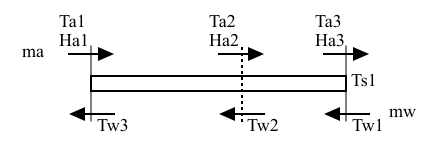
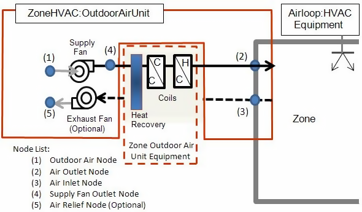

Simulation Models – Encyclopedic Reference
The following descriptions are grouped alphabetically (as much as possible) with some also having additional tags of “Heat Balance”, “HVAC”, and “Plant”. With the integrated solution, these designations signify where the effects of these models have their first impacts.
Air System Distribution Terminals
Constant Volume Single Duct Uncontrolled Air Terminal
The input object AirTerminal:SingleDuct:Uncontrolled provides a method for directly connecting a central air system to a thermal zone. Central system air is usually supplied to a zone through a terminal unit such as a single duct VAV reheat box. Sometimes, however, it is desirable to supply central system air directly to a zone without any zone level control or tempering. An example would be Furnace or Central DX equipment. AirTerminal:SingleDuct:Uncontrolled is the input object for a component used to pass supply air directly into a zone without any thermostatic control. This unit allows the program to know what zone this branch of the air system is attached to and a place to input the maximum air flow rate. It is typically used with an AirLoopHVAC running as a constant-volume, variable-temperature system.
The AirTerminal:SingleDuct:Uncontrolled object creates the capability of supplying central system air directly to a zone and only contains the zone inlet node. This node is both the zone inlet node and the outlet node of the AirLoopHVAC:ZoneSplitter. It can be thought of as a balancing damper in the duct branch going to the zone. This inlet flow can be controlled by an availability schedule. This can be thought of as a seasonal shut off of the balancing damper.
For the AirTerminal:SingleDuct:Uncontrolled objects to work correctly, it is important in any systems including them for the sum of the maximum zone air flow rates to be equal to the maximum central system flow rate. The zone maximum flow rates are specified in the direct air inputs. The central air system flow rate is specified in the AirLoopHVAC input and also in the air loop branch and central fan inputs.
Constant Volume Single Duct Reheat Air Terminal
The input object AirTerminal:SingleDuct:ConstantVolume:Reheat provides a model for single duct constant volume systems with reheat that satisfy the cooling load in a zone by changing the inlet air temperature with a reheat coil. The supply air temperature must be low enough to meet the cooling load in the zone having the greatest load. For zones with a smaller cooling load, a reheat coil is used to raise the temperature of the zone inlet air.
This object can be configured with a water, steam, electric or gas reheat coil. Operation is basically the same with all coil types. The coil is controlled to raise the zone supply air temperature (i.e., the Unit Air Outlet Node temperature) to match the zone load. If the coil is undersized, the zone setpoint temperature will not be maintained.

Figure 153. Schematic of AirTerminal:SingleDuct:ConstantVolume:Reheat Unit
Variable Air Volume Single Duct Reheat and No Reheat Air Terminals
The VAV Single Duct Reheat and No Reheat terminal units (objects AirTerminal:SingleDuct:VAV:Reheat and AirTerminal:SingleDuct:VAV:NoReheat) provide models for single duct variable-air-volume (VAV) systems that control zone temperature primarily by varying the quantity of supply air rather than by varying the supply air temperature. The supply air temperature must be low enough to meet the cooling load in the zone having the greatest load when the zone terminal device is wide open. For zones with a smaller cooling load, the terminal device damper reduces the flow to match the zone setpoint.. If the lower flow limit on the terminal device is reached and the load is not matched, the inlet air temperature can be moderated if the terminal device has a reheat coil. In that case both the quantity of air and its temperature entering the zone are varied to meet the load. For air terminals using reheat coils, the maximum flow during reheat may be limited. Limiting the maximum flow during reheat occurs only when cooling is required (when any valid air loop cooling coil is active) and the terminal unit must reheat the air. Optional user inputs may also be used to control the amount of outdoor air entering the zone.

Figure 154. Schematic of AirTerminal:SingleDuct:VAV:NoReheat Unit

Figure 155. Schematic of AirTerminal:SingleDuct:VAV:Reheat Unit
The operation of the dampers and the control are described in the section AirTerminal:SingleDuct:VAV:HeatAndCool:Reheat and AirTerminal:SingleDuct:VAV:HeatAndCool:NoReheat, which follows. The exception is that the section below describes how the air flow rate is varied for both cooling and heating. For the case of AirTerminal:SingleDuct:VAV:NoReheat and AirTerminal:SingleDuct:VAV:Reheat, air flow only varies during cooling operation and the air flow rate is set at the minimum value (minimum air flow fraction) when zone heating is required.
Minimum Outdoor Air Control
The single duct air terminals may also be used to provide a minimum outdoor air quantity. When the air flow rate required to meet the zone load does not provide sufficient outdoor air, the terminal device damper will open to allow sufficient outdoor air to enter the zone. In this case, the terminal damper is controlled based on the air loop’s outdoor air fraction. The outdoor air may be specified as a fixed value per person, per floor area, or per zone. The minimum outdoor air may also be specified as air changes per hour. In addition, these values may be added together to provide a combined minimum outdoor air flow rate or the maximum of each of these values may be used. An outdoor air fraction schedule may also be used to modify the calculation for the minimum amount of outdoor air throughout the simulation (Ref. DesignSpecification:OutdoorAir).
Variable Air Volume Heating and Cooling Single Duct Reheat and NoReheat Air Terminal
Overview
The VAV Heating and Cooling Single Duct Reheat and No Reheat terminal units (objects AirTerminal:SingleDuct:VAV:HeatAndCool:Reheat and AirTerminal:SingleDuct:VAV:HeatAndCool:NoReheat provide models for variable-air-volume (VAV) terminal units are widely used in commercial and industrial applications. The VAV terminal units contain actuated dampers that vary the amount of central system air supplied to a zone. These terminal units may also contain a heating coil to trim the supply air temperature when overcooling is possible. The heating coil may also serve as the primary air heating source when the central system contains cooling-only equipment.
The VAV terminal units described here are used primarily with central air handling equipment with cooling and heating capability. The terminal unit dampers modulate in both cooling and heating mode to maintain the zone setpoint temperature(s). The central air handling equipment may be either variable air volume or constant volume where a bypass duct is used to shunt excess system air flow back to the inlet of the central air handler as terminal unit dampers modulate to satisfy the zone thermostat (i.e., AirLoopHVAC:UnitaryHeatCool:VAVChangeoverBypass).
Model Description
The no reheat version of the single duct VAV heat and cool terminal unit contains a single virtual damper assembly and requires minimal inputs. The reheat version contains both a virtual damper assembly and an air reheat coil. Multiple reheat coil types are available:
1) Coil:Heating:Water
2) Coil:Heating:Electric
3) Coil:Heating:Gas
4) Coil:Heating:Steam
Both units are simulated to provide an air flow rate sufficient to satisfy the thermostat request. The air flow rate is a function of the terminal unit’s inlet air temperature and the load sensed by the thermostat. The output of the models are simply the damper position required to satisfy the zone’s thermal load. Other information regarding terminal unit performance may be viewed using node report variables and heating coil report variables.

Figure 156. Schematic of AirTerminal:SingleDuct:VAV:HeatAndCool:NoReheat Unit

Figure 157. Schematic of AirTerminal:SingleDuct:VAV:HeatAndCool:Reheat Unit
Terminal Unit Inputs
Both terminal unit types share several common input fields. A unique terminal unit name must be entered. A system availability schedule is also defined to allow operational control of the terminal unit. The user must then connect the unit to the air distribution system by defining the unit inlet and outlet node names. Design air flow rates are then specified: maximum total air flow rate (autosizable) and minimum air flow fraction.
The reheat version of this terminal unit requires additional information. The name and type of reheat coil and the damper air outlet node name (same as reheat coil inlet node name). Maximum and minimum water flow rates are entered when a water or steam heating coil is used, as well as a control node name for actuating water-side flow rates and a convergence tolerance for iteration control.
Simulation and Control
The simulation begins by determining the air mass flow rate required to satisfy the heating/cooling demand.
where
= Specific heat of zone air, J/kg-K
= Specific heat of terminal unit inlet air, J/kg-K
= Zone air humidity ratio, kg/kg
= Zone air dry-bulb temperature, °C
= Terminal unit inlet air humidity ratio, kg/kg
= Terminal unit inlet air dry-bulb temperature, °C
= Zone load, W (positive values denote heating, negative values denote cooling)
= Terminal unit air mass flow rate, kg/s
= Psychrometric function calculating air specific heat given air humidity ratio and dry-bulb temperature
= User-specified zone minimum air flow fraction
= Terminal unit maximum air mass flow rate, kg/s
The outdoor air input fields, if entered, are then used to adjust the terminal unit air mass flow rate to ensure the correct amount of outdoor air enters the zone (within the constraints of the terminal unit maximum and minimum flow rate inputs). The amount of outdoor air is calculated per the outdoor air requirements and is adjusted by the fraction of outdoor air entering the air loop outdoor air system.
where:
= zone outdoor air flow rate, kg/s
= fraction of outdoor air entering the air loop outside air system
If the terminal unit is in reheat mode (i.e., the central air loop cooling coil is active, the supply air was overcooled, and the zone thermostat is requesting heating) the maximum air flow rate allowed during reheat mode is adjusted as necessary.
where:
= maximum air mass flow rate during reheat, kg/s
The damper position is then calculated as:
And the amount of outdoor air entering the zone is:
where
= Output variable ‘Zone Air Terminal VAV Damper Position’, fraction of maximum flow
= Output variable “Zone Air Terminal Outdoor Air Volume Flow Rate” entering the zone, m3/s
Simulation of the reheat coil occurs next when applicable. The heating demand required to maintain the thermostat heating setpoint temperature and the heating capacity of air flowing through the terminal unit are used to determine the amount of reheat required.
where
= Reheat coil load, W (positive values denote heating)
= Load to heating setpoint temperature, W (positive values denote heating)
References
No specific references.
Constant Volume Single Duct Four Pipe Induction Air Terminal
The four pipe induction terminal unit (object name: AirTerminal:SingleDuct:ConstantVolume:FourPipeInduction) is a hybrid air-hydronic unit that supplies both centrally conditioned air and local hydronic heating/cooling to a zone. Centrally conditioned air is supplied to the terminal unit at high pressure and constant flow. The central (primary) air is discharged into the terminal unit through a nozzle, inducing a fixed flow of zone (secondary) through a hydronic heating/cooling coil. The primary and secondary air streams mix and are discharged to the zone. Hot or cold water flow through the coil is varied to meet the zone heating or cooling requirement.
Model
The four pipe induction terminal unit is modeled as a compound component consisting of three sub-components: a hot water coil, a chilled water coil and an air mixer. In terms of EnergyPlus objects these are Coil:Heating:Water, Coil:Cooling:Water, and AirLoopHVAC:ZoneSplitter. The terminal unit is a forward model: its inputs are defined by the state of its inlets: namely its 2 air streams – primary and secondary; and its two water inlets – hot and cold. The outputs of the model are the conditions of the outlet air stream: flow rate, temperature and humidity ratio. The terminal unit data and simulation are encapsulated in the module HVACSingleDuctInduc.
Inputs and Data
The user describes the terminal unit by inputting the name and type of the heating and cooling coils and the name of the zone mixer. The user must also specify the connectivity of the component by naming the inlet air and water nodes and the air outlet node. Finally maximum and fixed flow rates need to be specified (although these can be autosized): maximum and minimum hot and cold water volumetric flow rates and the total air volumetric flow rate (sum of primary and secondary flow rates). The relative convergence tolerances for the hot and cold water flow rates also need to be input (or allowed to default). Finally the induction ratio needs to be specified: this is defined as the ratio of the secondary air flow rate to the primary air flow rate. The relationship between the flow rates is:
so
where Rinduc is the user-input induction ratio.
All input data for the four pipe induction terminal units is stored in the array IndUnit.
Calculation
Given the needed inputs, the output is calculated in subroutine CalcFourPipeIndUnit. The temperature, humidity ratio and flow rate of the primary and secondary air streams are taken from the inlet air nodes. The inlet hot and chilled water flow rates are passed in as parameters – temperatures are taken from the inlet water nodes. Then
The hot water coil is simulated (Call SimulateWaterCoilComponents);
The chilled water coil is simulated (Call SimulateWaterCoilComponents);
The two air streams are mixed (Call SimAirMixer).
Finally the load met by the terminal unit is calculated and passed back to the calling routine:
Note that data is never explicitly passed between the sub-components. This is all handled automatically by the node connections and the data stored on the nodes.
Simulation and Control
From the result of the zone simulation we have the heating/cooling demand on the terminal unit
Decide whether the unit is on or off. The unit is off if: a) it is scheduled off; b) the inlet air mass flow rate is zero; c) the zone thermostat is in the deadband; d) or the zone heating/cooling demand is very small.
If the unit is off, call CalcFourPipeIndUnit with the hot and cold water flow rates set to their minimum flows and return.
If the unit is on, check whether active heating or cooling by the hydronic coils is needed. Call CalcFourPipeIndUnit with minimum water flows to see what how much cooling (or possibly heating) the unit is doing with primary air only. The output for this case is
If
If
Note that the terminal unit output is never explicitly passed to another routine. Instead the output is saved as the outlet conditions on the terminal unit outlet air node. The node data is accessed when the terminal unit output is needed elsewhere in the program (in SimZoneAirLoopEquipment for instance).
References
No specific references.
Fan Powered Induction Series and Parallel Single Duct Reheat Air Terminal
Overview
The input objects AirTerminal:SingleDuct:SeriesPIU:Reheat and AirTerminal:SingleDuct:ParallelPIU:Reheat provide models for fan powered induction terminal units that occur in a variety of configurations. EnergyPlus models 2 types: series (sometimes called constant) and parallel (sometimes called intermittent). The series unit provides a constant flow of air to the zone (the fan is always on at a constant flow) with a variable proportion of primary and secondary air. The parallel unit has an intermittent fan: the fan is off at maximum cooling and does not switch on until primary air flow is significantly reduced from the maximum. Once on it provides a constant flow of secondary air. Both units induce air from the zone or plenum (secondary air) and mix it with centrally conditioned supply air (primary air). Both units are variable volume: the supply air flow rate is varied to match zone conditioning requirement.
Model
Both types of PIU are modeled as compound components. The series unit, in sequence from its inlet, consists of an air mixer, a constant volume fan, and a heating coil. In terms of EnergyPlus objects this is:
1. AirLoopHVAC:ZoneMixer
2. Fan:ConstantVolume
3. Coil:Heating:Water, Coil:Heating:Electric, Coil:Heating:Gas or Coil:Heating:Steam
The parallel unit contains a fan (in the secondary air stream, an air mixer, and a heating coil. In terms of EnergyPlus objects this is:
1. Fan:ConstantVolume
2. AirLoopHVAC:ZoneMixer
3. Coil:Heating:Water, Coil:Heating:Electric, Coil:Heating:Gas or Coil:Heating:Steam
Both units are forward models: their inputs are defined by the state of their inlets: namely the air inlet and the hot water inlet. The outputs of the models are the conditions of the outlet air stream: flow rate, temperature and humidity ratio. The PIUs data and simulation are encapsulated in the module PoweredInductionUnits. The main simulation routine for the units within the module are CalcSeriesPIU and CalcParallelPIU.
Inputs and Data
The user describes the PIU by inputting the names of the mixer, fan and heating coil sub-components plus the type of the heating coil sub-component. The user must connect the unit to the overall HVAC systems by naming various inlet and outlet nodes: the primary air inlet node, the secondary air inlet node, the unit air outlet node, and the hot water inlet node. One internal node name is needed: the coil air inlet node (same as fan outlet mode for series, mixer outlet node for parallel). Design flow rates need to be specified (although these can be autosized): maximum total air flow rate (series), maximum primary air flow rate, minimum primary air flow fraction, maximum secondary air flow rate (parallel), fan-on flow fraction (parallel), and maximum and minimum hot water flow rates. A convergence tolerance needs to be specified for units with hot water coils. There is an on/off availability schedule that need to be set.
All input data for the powered induction terminal units is stored in the array PIU.
Calculation
The calculation is performed by simulating the sub-components in the order given above. Most of the code is involved with figuring out what the various flow rates should be before simulating the subcomponents. These calculations are described below.
Simulation and Control
Series
From the result of the zone simulation we have the heating/cooling demand on the terminal unit
· If the unit is scheduled off, the primary and secondary flow rates are set to zero.
· If there is no primary air flow (or less than .001 kg/s), the primary air flow is set to zero and the secondary air flow is set to the constant total air flow input by the user.
· If the zone temperature is in the deadband or the zone load is less than 1 watt or the zone needs heating, the primary air flow rate is set to the minimum flow rate specified by the input and the secondary air flow rate is set to the difference between the fixed total air flow rate and the primary air flow rate.
· Otherwise, the zone needs cooling and the unit is active.
§ We determine the fan temperature rise: the secondary air flow is set to the max total air flow, primary air flow to zero, and the mixer and fan are simulated. The fan delta T is the difference between the temperature at the fan’s outlet node and inlet node.
§ We calculate the unit air outlet temperature needed to meet the zone cooling load:
§ The temperature needed at the outlet of the mixer is then:
§ We can then set the primary air flow rate.
· If
· else if
· otherwise
The air flow rates are now determined and we can fire the air mixer (Call SimAir-Mixer) and fan (Call SimulateFanComponents) component simulations. Finally we simulate the heating coil:
· for a hot water coil, if the coil is off (no flow, deadband, no load) just fire the coil simulation once (Call SimulateWaterCoilComponents). Otherwise call ControlCompOutput; ControlCompOutput is a general component control routine. In this case it calls SimulateWaterCoilComponents repeatedly while varying the hot water flow rate and minimizing
to within the heating convergence tolerance.
· For gas, electric or steam coils, the required coil output is set to
Finally the unit sensible output is calculated:
where PsyHFnTdb is the EnergyPlus function giving enthalpy as a function of temperature and humidity ratio.
Parallel
From the result of the zone simulation we have the heating/cooling demand on the terminal unit
· If the unit is scheduled off, the primary and secondary flow rates are set to zero.
· If there is no primary air flow (or less than .001 kg/s), the primary air flow is set to zero and the secondary air flow is set to the max secondary air flow input by the user.
· If the zone temperature is in the deadband or the zone load is less than 1 watt or the zone needs heating, the primary air flow rate is set to the minimum flow rate specified by the input and the secondary air flow rate is set to max secondary air flow input by the user.
· Otherwise, the zone needs cooling and the unit is active.
§ We determine the fan temperature rise: the secondary air flow is set to the max secondary air flow, primary air flow to zero, and the fan and mixer are simulated. The fan delta T is defined as the difference between the temperature at the mixer outlet node and the fan inlet node.
§ Assuming that the fan is off, we calculate the primary air flow needed to meet the cooling demand.
The flow rate is constrained to be between the min and max primary air flow rates. If this calculated primary flow rate is greater than the fan-on flow rate, the secondary flow rate is set to zero and we are done. Otherwise, the fan is on and we need to recalculate the primary air flow rate.
The secondary flow rate is set to the user input fixed flow rate. The primary air flow rate is constrained to be between the min and max primary flow rated.
The air flow rates are now determined and we can fire the fan (Call SimulateFanComponents) and air mixer (Call SimAirMixer) component simulations. Finally we simulate the heating coil:
· for a hot water coil, if the coil is off (no flow, deadband, no load) just fire the coil simulation once (Call SimulateWaterCoilComponents). Otherwise call ControlCompOutput; ControlCompOutput is a general component control routine. In this case it calls SimulateWaterCoilComponents repeatedly while varying the hot water flow rate and minimizing
to within the heating convergence tolerance.
· For gas, electric or steam coils, the required coil output is set to
Finally the unit sensible output is calculated:
where PsyHFnTdb is the EnergyPlus function giving enthalpy as a function of temperature and humidity ratio.
References
No specific references.
Variable Air Volume Fan Powered Single Duct Air Terminal
Overview
The input object AirTerminal:SingleDuct:VAV:Reheat:VariableSpeedFan provides a model for variable speed (VS) fan VAV terminal unit that is a typical VAV reheat unit with the addition of a variable-speed blower fan to assist in moving supply air from the plenum to the conditioned zone. It is typically used with under-floor air distribution systems (UFAD) where the supply air is sent at low static pressure through an under-floor supply plenum. The fan has two maximum flow rate settings: one for cooling and one for heating. The cooling maximum is usually the actual fan maximum while the heating maximum is a lesser flow rate. The fan is upstream of the heating coil (this is a blow-through unit). The heating coil can be hot-water, electric or gas. Cooling control is obtained by varying the supply air flow rate from the cooling maximum to the minimum flow rate. Heating control is established by varying both the heating coil output (or hot water flow rate for hot water coils) and the supply air flow rate. Note that for this unit the minimum supply air flow rate is the flow rate when the fan is off.
Model
The VS fan VAV terminal unit is modeled as a compound component consisting of two sub-components: a fan and a heating coil. In terms of EnergyPlus objects the fan is a Fan:VariableVolume object and the heating coil is a Coil:Heating:Water, Coil:Heating:Electric or a Coil:Heating:Gas. The terminal unit is a forward model: its inputs are defined by the state of its inlets: namely its air inlet and its hot water inlet, if it has a hot water coil. The outputs of the model are the conditions of the outlet air stream: flow rate, temperature and humidity ratio. The terminal unit data and simulation are encapsulated in the module SingleDuct. The main simulation routine for the unit within the module is SimVAVVS.
Inputs and Data
The user describes the terminal unit by inputting the name and type of the heating coil and the name and type of the fan. The user must also specify the connectivity of the component by naming the inlet air node; the air node connecting the fan and heating coil (fan outlet, coil inlet); the unit air outlet node (same as the zone inlet node); and hot water inlet node (if any). Maximum flow rates need to be specified (although these can be autosized): maximum cooling and heating air flow rates and the maximum hot water flow rate (if there is a hot water coil). Minimum flow rates are specified by giving by giving a minimum flow fraction for the air flow and a volumetric flow rate minimum for the hot water. For the units with hot water coils the relative convergence tolerance for the hot water flow rate also needs to be input (or allowed to default).
All input data for the VS fan VAV terminal units is stored in the array Sys.
Calculation
Given the needed inputs, the output is calculated in subroutine CalcVAVVS. The temperature and humidity of the supply air stream are taken from the inlet air node. The inlet air flow rate and the hot water flow rate are passed in as parameters. If the coil is electric or gas the coil heating power is passed instead of the hot water flow rate. Then
The fan is simulated (call SimulateFanComponents). If the fan is off the fan outlet conditions are set to the inlet conditions.
The heating coil is simulated (call SimulateWaterCoilComponents if the coil is a hot water coil; call SimulateHeatingCoilComponents if the coil is gas or electric).
Finally the sensible load met by the terminal unit is calculated and passed back to the calling routine:
Note that data is never explicitly passed between the sub-components. This is all handled automatically by the node connections and the data stored on the nodes.
Simulation and Control
From the result of the zone simulation we have the heating/cooling demand on the terminal unit
The unit is simulated in the following sequence.
Decide whether the unit is on or off. The unit is off if: a) it is scheduled off; b) the inlet air mass flow rate is zero; or c) the zone thermostat is in the deadband
If the unit is off, call CalcVAVVS with flow rates set to their minimum flows and return.
If the unit is on, we need to establish the boundaries of 4 conditioning regions: a) active cooling with fan on; b) active heating with fan on; c) active heating with fan off; d) passive cooling with fan off. The heating/cooling demand will fall into one of these regions. Once the correct region is determined, we will know which model input to vary for control and thus how to invert the calculation.
To establish the boundaries of region a) we call CalcVAVVS twice: once with the supply air flow rate set to the cooling maximum, once with the cooling air flow rate set to the minimum. In both cases the heating coil output is at the minimum and the fan is on. Call the 2 cooling outputs
To establish the boundaries of region b) call CalcVAVVS twice: once with the supply air flow rate set to the heating maximum, once with the supply air flow rate set to the minimum. In both calls, if the heating coil is a hot water coil, the hot water flow rate is at the maximum. For electric and gas coils, the heating power is set to the maximum at maximum supply air flow and to zero at the minimum supply air flow. In both calls the fan is set to be on. Call the 2 heating outputs returned from the two calls to CalcVAVVS
This region only applies to terminal units with a hot water coil. To establish the boundaries of region c) the fan is set to off, the supply air flow rate is set to minimum flow and CalcVAVVS is called twice: once with the hot water flow at maximum and once with the hot water flow at minimum. Call the two heating outputs
If the cooling demand does not fall into cases a) – c), the unit is assumed to be in the passive cooling state: heating is off or at the minimum, the fan is off, and the minimum supply air flow is delivered to the zone.
Note that the terminal unit output is never explicitly passed to another routine. Instead the output is saved as the outlet conditions on the terminal unit outlet air node. The node data is accessed when the terminal unit output is needed elsewhere in the program (in SimZoneAirLoopEquipment for instance).
References
No specific references.
Cooled Beam Unit (AirTerminal:SingleDuct:ConstantVolume:CooledBeam)
Cooled beam (frequently called chilled beams) systems are usually hybrid water – air systems. Commonly there is a constant flow, fixed temperature central forced air system for meeting ventilation and latent load requirements. Sometimes this forced air system’s flow rate is varied according to ventilation demand; and of course its supply air temperature could be reset in various ways. Sensible cooling load is met by the cooled beam units; these are ceiling suspended units with cool water circulating through them. Some types of units are “passive” – they cool by radiation and natural convection. Other types of units are “active” and act as supply air terminal units with the supply air inducing room air over the beam cooling elements. These units cool almost entirely by convection. The DOE-2 model (upon which this model is based) is a convection only model – even the “passive” units are assumed to operate 100% convectively. The cooled beam elements act as an alternative to normal ceiling radiant cooling: they are not coupled to the building mass and they operate more in a convective mode, but they can, like radiant cooling, use fairly warm cooling water.
Heating is accomplished separately from the cooled beam system – usually baseboards are used on the building perimeter to meet heating loads.
Model
The chilled beam system is modeled as an EnergyPlus terminal unit. In terms of configuration within the overall HVAC system it will resemble a 4 pipe induction terminal unit. The user describes the system as a typical single duct constant volume system (with outside air mixer, fan, heating and cooling coils) on the air loop side, and with cooled beam terminal units on the zone equipment side.
The model is an empirical model developed at the equipment manufacturer Halton Oy. It consists of the following relationships.
Pbeam = A·K·DT beam cooling output per unit length W/m
K=a·DTn1·vrn2·wn3 coil heat transfer coefficient W/(m2K)
vr=(qin/a0)·rair room air mass flow rate across coil kg/(m2s)
qin=K1·DTn+Kin·qpr room air volumetric flow rate across coil per
unit length m3/(s-m)
DT is the room air –water temperature difference (average water temperature is used) in degrees C.
w is the water velocity in m/s.
qpr is the supply air flow rate per unit length m3/(s-m)
The other symbols are the model parameters input by the user (see the IO Ref for descriptions).
Inputs and Data
The user describes the unit by inputting the name, referencing an availability schedule, and choosing a type (active or passive). The user must also specify the connectivity of the component by naming the inlet and outlet air and water nodes. The maximum water and fixed air flow rates need to be specified (although these can be autosized). The design inlet and outlet water temperatures are inputs. Generally the inlet water temperature is quite warm (15C is the default) and the temperature rise is small (design outlet water temperature defaults to 17C). Two key inputs are the number of beams (in the zone) and the beam length. It is generally wise to let these inputs autosize.
The remaining inputs are parameters specific to the product model. Good defaults are supplied and they should not be changed without information from the manufacturer.
Sizing
The Cooled Beam sizing calculations generally follow the procedures used for other terminal units (see Loop Equipment Sizing). One difference is that the Cooled Beams use the Cooled Beam inputs Design Inlet Water Temperature and Design Outlet Water Temperature for the chilled water DT rather than the DT from Plant Sizing. There are also two inputs unique to the Cooled Beam units that are autosized and will be described here.
The input Number of individual beam units in the zone is autosized by dividing the beam system zone design chilled water flow rate (either input by the user or autosized) by a nominal chilled water beam flow rate: 0.07 kg/s.
The input Length of an individual beam unit is autosized by using the model equations to calculate the length. The inputs to the equations are:
1) the design load per beam. The design load is calculated from the design water mass flow rate and the design water inlet and outlet temperatures. The design load is divided by the number of beams to obtain the design load per beam.
2) The design air supply air flow per beam – obtained by dividing the design supply air flow by the number of beams.
3) The design water flow per beam (m3/s) – obtained by dividing the design water flow by the number of beams.
4) The design water velocity – obtained by dividing the design water flow per beam by the cross sectional inside area of a water tube (pD2/4, where D is the input Pipe inside diameter.
5) Average air to water DT = Tz,\ cool\ peak - 0.5(Tw,des\ inlet + Tw,des\ outlet); where Tz,\ cool\ peak is the zone air temperature at the cooling peak and the Tw,des ‘s are the water design inlet and outlet temperatures.
With these inputs the model equations can be solve directly for beam length for passive cooled beams, and iteratively for active cooled beams.
Calculation
The subroutine CalcCoolBeam uses the model equations to calculate the cooling power Pbeams,out delivered to the room air and the outlet water temperature given the water flow rate (and the room air temperature and water inlet temperature). Since the model equations are nonlinear they must be solved iteratively. The subroutine does this by varying the outlet water temperature Tw,out and calculating the water-side cooling power
Pw = qw,beam·cp,w·(Tw,out-Tw,in)
and comparing it to the air-side cooling power
Pair=K·A·DT·Lbeam
where qw,beam is the water mass flow rate (kg/s) per beam and Lbeam is the length of a beam (m). When Pw and Pair match to within 0.1 W the subroutine terminates the iteration.
Simulation and Control
From the result of the zone simulation we have the heating/cooling demand for the zone equipment. For the cooling demand, we use the load to cooling set point Pc. Part of the demand may be satisfied by the zone supply air:
Psup=qair·(cp,air,sys·Tsys - cp,air,z·Tz)
The demand on the actual beams is then
Pbeams,dem=Pc - Psup
We want to know the chilled water flow rate that will give a beam cooling output of Pbeams. To obtain this we need to numerically invert CalcCoolBeam: given its desired output, we want to know the chilled water flow rate. This numerical inversion is carried out by calling the subroutine SolveRegulaFalsi. This is a general utility routine for finding the zero of a function (the residual function) of a single independent variable. In this case the residual function is basically
(Pbeams,out-Pbeams,dem)/Pbeams,out,max
SolveRegulaFalsi varies the cold water mass flow rate to zero the residual. The water inlet and outlet node flow rates are set to the flow rate found by SolveRegulaFalsi and the water outlet node temperature is set to the outlet water temperature from SolveRegulaFalsi.
References
Documentation Package Update #2 for DOE-2.1E, Version 107, page 3.152 describes the input and the model for the DOE-2 cooled beam model.
Constant Volume Dual Duct Air Terminal
Overview
The input object AirTerminal:DualDuct:ConstantVolume provides a model for dual duct constant-air-volume (DDCAV) systems that are typically used in special applications where precise temperature and humidity control are required and energy efficiency is not of primary concern. Thermal control for each zone is achieved by mixing air from the hot deck with air from the cold deck to achieve a supply air temperature that will exactly meet the zone load and satisfy the zone thermostat demand. Each zone has its own mixing box which is connected directly to the hot and cold decks. The mixing box dampers change the relative amount of hot and cold air that will be delivered (at a constant volumetric flow rate) to the zone.
Model Description
The DDCAV model will attempt to meet all of the thermostatic loads of a particular zone by explicitly calculating the hot and cold deck mass flow rates. For the energy and mass balance equations shown below, the zone load, temperatures, specific heats and the design mass flow rate are all known. These equations can then be solved directly for the hot deck and cold deck mass flow rates.
Where:
= Zone load, W (positive=heating, negative=cooling)
= Specific heat of zone air, J/kg-K
= Specific heat of cold deck air, J/kg-K
= Specific heat of hot deck air, J/kg-K
= Zone air dry-bulb temperature, °C
= Cold deck air dry-bulb temperature, °C
= Hot deck air dry-bulb temperature, °C
= System design air mass flow rate through both heating or cooling duct, kg/s
= Cold deck air mass flow rate, kg/s
= Hot deck air mass flow rate, kg/s
Simulation and Control
The simulation first calculates the hot deck and cold deck air mass flow rates required to satisfy the heating/cooling demand on the zone. Once the individual flow rates have been calculated based on temperature control, the zone mixed air conditions are calculated assuming adiabatic mixing of the two air streams.
Variable Air Volume Dual Duct Air Terminal
Overview
The input object AirTerminal:DualDuct:VAV provides a model for dual duct variable-air-volume (DDVAV) systems that are typically used in special applications where both temperature and humidity control as well as energy efficiency are of primary concern. This system combines the advantages of the standard dual duct system for better thermal control with the possibility to reduce fan energy using a variable speed fan. The DDVAV terminal units contain actuated dampers that vary the amount of central system air supplied to a zone from both the hot and cold deck. Optional user inputs may also be used to control the amount of outdoor air entering the zone.
The DDVAV terminal units described here are used primarily with central air handling equipment with cooling and heating capability. The terminal unit dampers modulate the amount of cold air and hot air as well as the overall flow rate to maintain the zone setpoint temperature(s).
Model Description
The DDVAV model will attempt to meet all of the thermostatic loads of a particular zone by first sending air through either the heating duct or the cooling duct depending on whether there is a heating or cooling load (respectively). Flow rate through the opposite duct is kept at zero and flow through the active duct is varied between the minimum air flow rate (minimum zone air fraction multiplied by the maximum flow rate) and the maximum air flow rate. If the flow rate to meet the load through either the heating or cooling duct results in a flow outside these ranges, then air must be passed through the other duct as well to avoid over- or under-heating or –cooling. This is done using a conservation of energy and mass analysis of the terminal unit as well as the known inlet and necessary outlet condition to meet the thermal needs of the zone.
When there is no load on the zone, the system could either be scheduled off or be in a “no load” condition. If the system is scheduled off, the model keeps the flow rate at zero for both the heating and cooling duct. If in a no load condition, the system attempts to throttle back to the minimum possible flow and then find a balance between flow through the heating and cooling duct that will provide no net conditioning to the space. This means that the enthalpy of air delivered to the space must be equal to the enthalpy of the (average) air in the zone.
DDVAV Terminal Unit Inputs
Like other terminal units, the DDVAV terminal unit requires an availability schedule and inlet and outlet node designations. The DDVAV terminal unit, like the DD terminal unit, has two inlet nodes (one for the heating duct and one for the cooling duct) and one outlet node.
In addition, the DDVAV terminal unit also has a maximum flow rate and a minimum flow fraction like the VAV terminal unit. This allows the flow to be throttled back when it is possible to provide the proper amount of conditioning with less flow. The maximum flow rate can be auto-sized, if desired.
Minimum Outdoor Air Control
This dual duct air terminal may also be used to provide a minimum outdoor air quantity. When the air flow rate required to meet the zone load does not provide sufficient outdoor air, the terminal device damper will open to allow sufficient outdoor air to enter the zone. In this case, the terminal damper is controlled based on the air loop’s outdoor air fraction. The outdoor air may be specified as a fixed value per person, per floor area, or per zone or as the required minimum air changes per hour. In addition, these values may be added together to provide a combined minimum outdoor air flow rate or the maximum of each of these values may be used. An outdoor air fraction schedule may also be used to modify the calculation for the minimum amount of outdoor air throughout the simulation (Ref. DesignSpecification:OutdoorAir).
Simulation and Control
The simulation begins by determining the air mass flow rate required to satisfy the heating/cooling demand using either the heating duct or cooling duct.
where
= Specific heat of zone air, J/kg-K
= Specific heat of terminal unit inlet air, J/kg-K
= Zone air humidity ratio, kg/kg
= Zone air dry-bulb temperature, °C
= Terminal unit inlet air humidity ratio, kg/kg
= Terminal unit inlet air dry-bulb temperature, °C
= Zone load, W (positive values denote heating, negative values denote cooling)
= Terminal unit air mass flow rate through either heating or cooling duct, kg/s
= Psychrometric function calculating air specific heat given air humidity ratio and dry-bulb temperature
= User-specified zone minimum air flow fraction
= Terminal unit maximum air mass flow rate, kg/s
The outdoor air input requirements, if entered, are then used to adjust the terminal unit air mass flow rate to ensure the correct amount of outdoor air enters the zone (within the constraints of the terminal unit maximum and minimum flow rate inputs). The amount of outdoor air is calculated per the outdoor air requirements and is adjusted by the fraction of outdoor air entering the air loop outdoor air system.
where:
= zone outdoor air flow rate, kg/s
= fraction of outdoor air entering the air loop outside air system
The damper position is then calculated as:
where
= Output variable ‘Zone Air Terminal VAV Damper Position’, fraction of maximum flow
If the flow rate was between the maximum flow rate and the minimum flow rate for the terminal unit, then no other calculations are needed. However, if the flow was reset to either the maximum or minimum flow rate, then flow through the active duct must be balanced by flow through the other duct to achieve the proper conditioning.
References
No specific references. Refer to the ASHRAE Handbook series for general information on different system types as needed.
Dual Duct Dedicated Outside Air Terminal with VAV Cooling
Overview
The input object AirTerminal:DualDuct:VAV:OutdoorAir provides a model for dedicated outside air combined with recirculated air for cooling. This air terminal has two inlets and one outlet. The outdoor air inlet has one damper that is controlled to meet the air flow requirements for ventilation. The second inlet is for cool recirculated air and has a second damper that is controlled to meet the zone’s cooling loads. The two streams are then mixed and inlet to the zone. This unit is for central air systems (using AirLoopHVAC object). Because of the limitation in EnergyPlus of allowing only one air terminal per zone, the dual duct approach offers advantages in that it allows modeling dedicated outdoor air systems (DOAS) and central VAV cooling at the same time. The original motivation for adding this terminal was to model twin-fan, twin-coil systems.
The recirculated cool air duct is actually optional. If no node name is input for the recirculated air inlet node, then only the outdoor air duct is operational and the air terminal behaves as a single duct. This offers additional capabilities for single duct DOAS in that this terminal can request outdoor air flows that change over time but are not controlled to meet zone loads.
Model Description
The model attempts to meet the ventilation requirements and the cooling loads of a particular zone. If the zone requires heating, ancilliary heating equipment is needed as this terminal cannot do any heating. The model first determines the current required outdoor air flow rate for ventilation and then calculates the flow of cool air needed to reach the cooling setpoint.
The outdoor air rate is controlled by the schedule and specifications contained in a DesignSpecification:OutdoorAir object and can be based on flows per person, per zone, per area, or air changes per hour. Using the key CurrentOccupancy, the per person rate can be set to operate based on the current occupancy level to model demand controlled ventilation. Using the key DesignOccupancy it can be set to operate based on the design, or maximum, level of occupancy. The outdoor air inlet side of the terminal is assigned a design maximum flow rate based on the largest flow rates specified by the associated DesignSpecification:OutdoorAir object. This maximum for the outdoor air is used to calculate the damper position and contributes to the overall maximum if that is autosized.
The recirculated cool air flow rate is controlled to meet the zone cooling loads. The first step is to calculate the impact that the outdoor air flow has on the loads starting with the specific heats.
where,
specific heat of zone air being served by the terminal unit, J/kg-K
specific heat of outdoor air entering the terminal unit, J/kg-K
specific heat of the recirculated (cool) air entering the terminal unit (if present), J/kg-K
humidity ratio of the zone air, kg/kg
humidity ratio of the outdoor air entering the terminal unit, kg/kg
humidity ratio of the recirculated air entering the terminal unit, kg/kg
air drybulb temperature of the zone, ºC
air drybulb temperature of the outdoor air entering the terminal unit, ºC
air drybulb temperature of the recirculated cool air entering the terminal unit, ºC
is a psychrometric function for calculating the specific heat of moist air as a function of humidity ratio and drybulb temperature.
The contribution to zone load provided by the outdoor air toward meeting the cooling setpoint,
where,
is the mass flow rate of outdoor air determined by the outdoor air requirement, kg/s
is the zone cooling setpoint drybulb temperature, ºC
This is then used to calculate the load that the recirculated cool air should deliver,
where,
is the remaining load to cooling setpoint as determined by Predictor and including the impacts of any other zone equipment sequenced before this terminal. Then the recirculated cool air mass flow rate,
The model also includes a form of damping where the last three values for
References
Sekhar, S. C., K. W. Tham, et al. (2004). Development of energy-efficient single-coil twin-fan air-conditioning system with zonal ventilation control, Nashville, TX, United states, Amer. Soc. Heating, Ref. Air-Conditoning Eng. Inc.
Boilers
Simple Hot Water Boiler
The input object Boiler:HotWater provides a simple model for boilers that only requires the user to supply the nominal boiler capacity and thermal efficiency. An efficiency curve can also be used to more accurately represent the performance of non-electric boilers but is not considered a required input. The fuel type is input by the user for energy accounting purposes.
The model is based the following three equations
-or-
The final equation above includes the impact of the optional boiler efficiency performance curve. To highlight the use of the normalized boiler efficiency curve, the fuel use equation is also shown in an expanded format. The normalized boiler efficiency curve represents the changes in the boiler’s nominal thermal efficiency due to loading and changes in operating temperature. If the optional boiler efficiency curve is not used, the boiler’s nominal thermal efficiency remains constant throughout the simulation (i.e., BoilerEfficiencyCurveOutput = 1).
When a boiler efficiency performance curve is used, any valid curve object with 1 or 2 independent variables may be used. The performance curves are accessed through EnergyPlus’ built-in performance curve equation manager (curve objects). The linear, quadratic, and cubic curve types may be used when boiler efficiency is soley a function of boiler loading, or part-load ratio (PLR). These curve types are used when the boiler operates at the specified setpoint temperature throughout the simulation. Other curve types may be used when the boiler efficiency can be represented by both PLR and boiler operating temperature. Examples of valid single and dual independent variable equations are shown below. For all curve types, PLR is always the x independent variable. When using curve types with 2 independent variables, the boiler water temperature (Twater) is always the y independent variable and can represent either the inlet or outlet temperature depending on user input.
Single independent variable:
Linear
Quadratic
Cubic
Dual independent variables:
QuadraticLinear
Biquadratic
Bicubic
When a boiler efficiency curve is used, a constant efficiency boiler may be specified by setting C1 = 1 and all other coefficients to 0. A boiler with an efficiency proportional to part-load ratio or which has a non-linear relationship of efficiency with part-load ratio will typically set the coefficients of a linear, quadratic, or cubic curve to non-zero values. Using other curve types allows a more accurate simulation when boiler efficiency varies as a function of part-load ratio and as the boiler outlet water temperature changes over time due to loading or as changes occur in the water temperature setpoint.
The parasitic electric power is calculated based on the user-defined parasitic electric load and the operating part load ratio calculated above. The model assumes that this parasitic power does not contribute to heating the water.
where:
= parasitic electric power (W), average for the simulation time step
= parasitic electric load specified by the user (W)
Steam Boiler
Description of Model
A steam boiler is the essential part of a building steam heating system and can be described as primary driver of the steam loop. It is the component that maintains the desired loop temperature.
The emphasis in EnergyPlus was laid on developing a building simulation model for steam boiler with ability to model detailed boiler performance without the cost of exhaustive user inputs to the boiler model. The Boiler:Steam input object is used on the plant loop supply side of EnergyPlus with the primary purpose of supplying steam to the heating coils, which constitute the demand side of the loop.
The steam boiler is a variable mass flow rate device. The mass flow rate of steam through the boiler is determined by the heating demand on the loop which in turn is determined by the equipment that is hooked to the demand side of the loop, namely the steam coils and hot water heater. In short, the steam coil determines the mass flow rate of steam required for heating the zone to its required setpoint, the mixer sums up the total steam demanded by each of the individual coils and reports it to the boiler via the pump.

Figure 158. Schematic of Steam Boiler in the Steam loop
Figure 158 describes the rudimentary loop structure with steam flowing from coils to boiler. It is essential to mention that it is the coils that determine the mass of steam required and the boiler simply delivers the required mass flow at desired temperature provided it is adequately sized. The algorithm for determining the mass flow rate is structured on the demand side and the variable flow boiler has no role to play in determining the steam mass flow.
Figure 159 outlines the simple steam boiler model. Sub cooled water enters the variable flow boiler through the pump, the boiler inputs energy to water stream consuming fuel, boiler losses are accounted via boiler efficiency. The boiler delivers steam at a quality equal to 1.0 at saturated condition.
The advantage of steam heating systems over hot water is the high latent heat carrying capacity of steam, which reduces the mass flow rate of the fluid required. The amount of superheated and sub cooled heat transfer in Steam heating systems is negligible, latent heat transfer accounts for almost all of the heat exchange into the zones via steam to air heat exchangers.

Figure 159. Schematic of Steam Boiler Operation
Boiler Load is a summation of sensible and latent heat addition to the water stream as described with the following equation. The mass flow rate through the boiler is known, while delta temp is the temperature difference between the boiler inlet and boiler outlet. Latent heat of steam is calculated at loop operating temperature.
Theoretical fuel used is calculated with the following equation. Boiler efficiency is a user input and accounts for all the losses in the steam boiler.
The operation part load ratio is calculated with the following equation. This is later used to calculate the actual fuel consumption, its ratio of boiler load to boiler nominal capacity.
The actual fuel consumption by the boiler is calculated as using the following equation, where C1, C2, and C3 are the Part Load Ratio coefficients.
Essentially the boiler model provides a first order approximation of performance for fuel oil, gas, and electric boilers. Boiler performance is based on theoretical boiler efficiency and a single quadratic fuel use-part load ratio curve represented in the equation above. This single curve accounts for all combustion inefficiencies and stack losses.
The control algorithm for a steam boiler is an important issue. The user may want the boiler to be undersized and in such a case it will not be able to meet the demand side steam flow request. Subsequently the boiler load exceeds the boiler nominal capacity. The boiler operates at its nominal capacity but is unable to meet the plant heating demand. Pseudo code from EnergyPlus has been used to describe the control logic used in the steam boiler simulation.
*****************************************PSEUDO CODE SECTION STARTS*************************************
At start of simulation an initial value of steam mass flow rate is calculated. This is required to start the flow of steam around the loop.
Calculate the boiler supply steam mass flow rate at start of simulation.
! Not first time through
Steam boiler calculations rely heavily on the variable
Calculating the boiler delta temperature difference between the inlet and outlet nodes. This calculation is used to determine various boiler control situation.
In case the temperature difference calculated with the previous equation equation is zero then the boiler just needs to supply latent heat to steam, else the boiler performs its normal load calculations by providing both sensible and latent heat to the inlet stream.
Sometimes the boiler load QB is greater than the demand side requested load at the current time step, which may occur because the boiler inlet conditions is from previous time step. There is sudden fall in request of steam mass flow from the demand side. The boiler now recalculates its new mass flow and adjusts to these new conditions.
Boiler load is set equal to the new boiler heating demand and steam mass flow rate is recalculated.
In case the requested load exceeds the boiler nominal capacity, which is its maximum heating capacity. In this case the requested steam mass flow is not met and the zone is not heated adequately. This happens if the boiler is undersized. The steam mass flow rate is recalculated at nominal capacity.
Boiler load is set equal to boiler nominal capacity and steam mass flow rate recalculated.
End If statement for the boiler load control algorithm. This algorithm determines all possible control conditions that might while simulating a system in EnergyPlus.
*****************************************PSEUDO CODE SECTION ENDS****************************************
If the boiler operating pressure exceeds the maximum allowable boiler pressure, the simulation trips and outputs a warning regarding the same. This notifies the user about potential system pressure sizing problems.
Integration of the steam boiler simulation model in EnergyPlus required developing number of subroutines, which operate in sequence. These subroutines are designed to read inputs from the input file, initialize the variables used in the boiler simulation model, simulate the boiler performance, update the node connections, and report the required variables. In case the user has difficulty with boiler inputs, provisions have been made to auto size the boiler nominal capacity and maximum steam flow rate. These two values play an important role in sizing the boiler.
Model Assumptions
The EnergyPlus boiler model is “simple” in the sense that it requires the user to supply the theoretical boiler efficiency. The combustion process is not considered in the model. The model is independent of the fuel type, which is input by the user for energy accounting purposes only. This is an ideal model for Building Simulation Program such that it utilizes the desired amount of resources in terms of simulation run time, but successfully provides fairly good sizing parameters for an actual boiler.
It is assumed that the steam boiler operates to maintain a desired temperature, the temperature being saturation temperature of steam and corresponding to this saturation temperature there exist a single value of saturation pressure at which the loop operates. Hence the boiler could either be saturation pressure controlled or temperature controlled. Since users would have better idea of steam temperatures rather than pressure the boiler inputs are designed for temperature control.
Nomenclature for Steam Loop
Table 50. Steam Loop Nomenclature
\({Q_B}\) |
Boiler Heat Transfer. W. |
\({Q_{B,N}}\) |
Boiler Nominal Capacity. W. |
\(\,{O_{PLR}}\) |
Boiler Operating Part Load Ratio. |
\(\Delta {T_{sc}}\) |
Degree of subcooling in coil. |
\(\Delta {T_{in\_out}}\) |
Temperature difference across the steam boiler. ºC. |
\({\rho_w}\) |
Density of condensate entering the pump. Kg/m3. |
\({Q_{Des}}\) |
Design Load on the steam coil. W. |
\({h_{f,\,n}}\) |
Enthalpy of fluid at point n on the Ts diagram. J/kg. |
\({P_{Frac}}\) |
Fraction of Pump Full Load Power. W. |
\({F_{m,f}}\) |
Fractional Motor Power Lost to Fluid. W. |
\({Q_{a,l}}\) |
Heating load on the Air Loop Steam Coil. W. |
\({Q_{z,c}}\) |
Heating load on the Zone Steam Coil. W. |
\({h_{fg,{T_{Loop}}}}\) |
Latent heat of steam at Loop operating Temperature. J/kg. |
\({h_{fg}}\) |
Latent Heat of Steam. J/kg. |
\({Q_{L,H}}\) |
Latent Heat Part of the Heating Coil Load. W. |
\(\Delta {Q_{loss}}\) |
Loop losses in steam coil. W. |
\(\Delta {T_{loop\,\,}}\) |
Loop Temperature Difference. |
\({\dot m_a}\) |
Mass flow rate for steam coil Kg/s. |
\({\dot m_{in}}\) |
Mass flow rate of steam entering the steam coil .Kg/s. |
\({\dot m_{a,l}}\) |
Mass flow rate of steam for Air loop steam coil Kg/s |
\({\dot m_{z,c}}\) |
Mass flow rate of steam for zone steam coil Kg/s. |
\({\dot m_s}\) |
Mass flow rate of steam. Kg/s. |
\({\dot m_{loop}}\) |
Mass flow rate of steam for the steam loop. Kg/s. |
\(\dot m\) |
Mass of condensate entering the pump. Kg/s. |
\({\dot m_{a,\max }}\) |
Maximum allowed mass flow rate of air. Kg/s |
\({\dot m_{S,\max }}\) |
Maximum Mass flow rate of steam Kg/s |
\({\dot m_{B,Supply}}\) |
Maximum steam mass flow rate supplied by boiler. Kg/s. |
\({\dot V_{w,\max }}\,\,\) |
Maximum Volume flow rate of condensate in pump. m3 /s. |
\({\dot V_{w,loop}}\) |
Maximum Volume flow rate of condensate in steam loop. m3 /s. |
\({T_{a,\,\,in,\,\,\min }}\) |
Minimum inlet air temperature possible. ºC. |
\({P_n}\,\,\) |
Nominal Power Capacity for condensate pump. W. |
\({P_{nom}}\) |
Nominal power of the pump. W. |
\({H_n}\) |
Nominal Pump Head. M. |
\({\dot V_{nom}}\) |
Nominal volume flow rate through the condensate pump. m3 /s. |
\(PLR\) |
Part Load Ratio for condensate pump. |
\({\eta_{\rm{p}}}\) |
Pump efficiency. |
\({\eta_m}\) |
Pump Motor Efficiency. |
\({P_{}}\) |
Pump Power. W. |
\({Q_{S,H}}\) |
Sensible Heat Part of the Heating Coil Load. W. |
\({T_{sp}}\) |
Setpoint Temperature of the zone. ºC. |
\({T_{a,out,SP}}\) |
Setpoint air outlet temperature for the steam coil. ºC. |
\({P_S}\) |
Shaft power of the pump. W. |
\(\,\,{c_{p,\,a}}\) |
Specific Heat Capacity for Air. J/Kg K. |
\(\,\,{c_{p,\,w}}\) |
Specific Heat Capacity for Water. J/Kg K. |
\({\eta_B}\) |
Steam Boiler Efficiency. |
\(\,Ta,\,i{n_{}}\,\) |
Temperature of air entering the coil. ºC. |
\({T_a}\) |
Temperature of air entering the steam coil. ºC. |
\(Ta,out\,\,\,\,\,\) |
Temperature of air leaving the coil. ºC. |
\(Ts,in\) |
Temperature of steam entering the coil. ºC. |
\({F_t}\) |
Theoretical Fuel Consumption by the Steam Boiler. W. |
\({\dot m_{coils,R}}\) |
Total Mass flow rate requested by all the steam coils. Kg/s. |
\(\dot V\) |
Volume of condensate entering the pump. m3 /s. |
\(Tw,\,out\) |
Water outlet temperature from pump. ºC. |
References
ASHRAE Handbook. 1996. HVAC Systems and Equipment, Air Conditioning and Heating Systems. Chapter 10, Steam Systems. pp. 10.1-10.16. 1996.
BLAST 3.0 Users Manual. 1999. Building Systems Laboratory. Urbana-Champaign: Building Systems Laboratory, Department of Mechanical and Industrial Engineering, University of Illinois.
Chillar, R.J. 2005. “Development and Implementation of a Steam Loop In The Building Energy Simulation Program EnergyPlus,” M.S. Thesis, Department of Mechanical and Industrial Engineering, University of Illinois at Urbana-Champaign.
TRNSYS 16 User Manual. 2004. A Transient System Simulation Program. Solar Energy Laboratory, Madison. University of Wisconsin-Madison.
El-Wakil, M. M. 1984. Power Plant Technology, McGraw Hill, New York, pp. 30-72.
Babcock & Wilcox. 1978. Steam-Its Generation and Use, The Babcock & Wilcox Company, New York ,Section I, II, IV, and VII.
S.A. Klein. 2004. Engineering Equation Solver EES. University of Wisconsin Madison.
Chillers
Absorption Chiller
The input object Chiller:Absorption provides a model for absorption chillers that is an empirical model of a standard absorption refrigeration cycle. The condenser and evaporator are similar to that of a standard chiller, which are both water-to-water heat exchangers. The assembly of a generator and absorber provides the compression operation. Low-pressure vapor from the evaporator is absorbed by the liquid solution in the absorber. A pump receives low-pressure liquid from the absorber, elevates the pressure of the liquid, and delivers the liquid to the generator. In the generator, heat from a high temperature source (hot water or steam) drives off the vapor that has been absorbed by the solution. The liquid solution returns to the absorber through a throttling valve whose purpose is to provide a pressure drop to maintain the pressure difference between the generator and absorber. The heat supplied to the absorber can be waste heat from a diesel jacket, or the exhaust heat from diesel, gas, and steam turbines. For more information on absorption chillers, see the Input/Output Reference Document (Object: Chiller:Absorption).
The part-load ratio of the absoprtion chiller’s evaporator is simply the actual cooling effect produced by the chiller divided by the maximum cooling effect available.
where
= part-load ratio of chiller evaporator
= chiller evaporator load [W]
= rated chiller evaporator capacity [W]
This absorption chiller model is based on a polynomial fit of absorber performance data. The Generator Heat Input Part Load Ratio Curve is a quadratic equation that determines the ratio of the generator heat input to the demand on the chiller’s evaporator (Qevap).
The Pump Electric Use Part Load Ratio Curve is a quadratic equation that determines the ratio of the actual absorber pumping power to the nominal pumping power.
Thus, the coefficient sets establish the ratio of heat power in-to-cooling effect produced as a function of part load ratio. The ratio of heat-power-in to cooling-effect-produced is the inverse of the coefficient of performance.
If the operating part-load ratio is greater than the minimum part-load ratio, the chiller will run the entire time step and cycling will not occur (i.e. CyclingFrac = 1). If the operating part-load ratio is less than the minimum part-load ratio, the chiller will be on for a fraction of the time step equal to CyclingFrac. Steam (or hot water) and pump electrical energy use are also calculated using the chiller part-load cycling fraction.
where
= chiller part-load cycling fraction
= chiller minimum part-load ratio
= generator input power [W]
= absorbtion chiller pumping power [W]
The evaporator water mass flow rate is calculated based on the Chiller Flow Mode as follows.
Constant Flow Chillers:
Variable Flow Chillers:
where
= chiller evaporator water mass flow rate (kg/s)
= chiller design evaporator water mass flow rate (kg/s)
= chiller evaporator water temperature difference (ºC)
= chiller evaporator inlet water temperature (ºC)
= chiller evaporator outlet water setpoint temperature (ºC)
= specific heat of water entering evaporator (J/kg•ºC)
The evaporator outlet water temperature is then calculated based on the cooling effect produced and the evaporator entering water temperature.
where
= chiller evaporator outlet water temperature [ºC]
= chiller evaporator inlet water temperature [ºC]
= specific heat of chiller evaporator inlet water [J/kg/ºC]
= chiller evaporator water mass flow rate [kg/s]
The condenser heat transfer and condenser leaving water temperature are also calculated.
where
= chiller condenser heat transfer rate [W]
= chiller condenser outlet water temperature [ºC]
= chiller condenser inlet water temperature [ºC]
= specific heat of chiller condenser inlet water [J/kg/ºC]
= chiller condenser water mass flow rate [kg/s]
The absorption chiller can model the impact of steam or hot water entering the generator, although the connection of the steam (hot water) nodes to a plant is not actually required. The calculations specific to the generator depend on the type of fluid used and are described here in further detail.
Steam Loop Calculations
When a steam loop is used and the inlet and outlet node names are specified (i.e. the nodes are connected to a steam loop), the generator outlet node steam mass flow rate and temperature are calculated based on the generator input power, latent heat of steam, the specific heat of water, and the amount of subcooling in the steam generator. The model assumes dry saturated steam enters the absorption chiller’s generator and exits the generator as a subcooled liquid. The temperature leaving the generator is calculated based on the user entered amount of liquid subcooling in the generator. The effect of subcooling of the liquid (condensate) in the pipe returning to the boiler is not modeled.
where
= chiller steam mass flow rate [kg/s]
= latent heat of steam [J/kg]
= specific heat of saturated water in the generator [J/Kg ºK]
= amount of subcooling in steam generator [ºC]
= generator steam outlet node temperature [ºC]
= generator steam inlet node temperature [ºC]
Hot Water Loop Calculations
When a hot water loop is used and the inlet and outlet node names are specified (i.e. the nodes are connected to a hot water loop), the generator outlet node temperature is calculated based on the generator input power, mass flow rate of water, and the specific heat of water entering the hot water generator. The calculations are based on the Chiller Flow Mode as follows.
Constant Flow Chillers:
Variable Flow Chillers:
where
= generator hot water mass flow rate [kg/s]
= generator design hot water mass flow rate (kg/s)
= generator design hot water temperature difference (ºC)
Indirect Absorption Chiller
The Chiller:Absorption:Indirect object is an enhanced version of the absorption chiller model found in the Building Loads and System Thermodynamics (BLAST) program. This enhanced model is nearly identical to the existing absorption chiller model (Ref. Chiller:Absorption) with the exceptions that: 1) the enhanced indirect absorption chiller model provides more flexible performance curves and 2) chiller performance now includes the impact of varying evaporator, condenser, and generator temperatures. Since these absorption chiller models are nearly identical (i.e., the performance curves of the enhanced model can be manipulated to produce similar results to the previous model), it is quite probable that the Chiller:Absorption model will be deprecated in a future release of EnergyPlus.
The indirect absorption chiller’s condenser and evaporator are similar to that of a standard chiller, which are both water-to-water heat exchangers. The assembly of a generator and absorber provides the compression operation. A schematic of a single-stage absorption chiller is shown in the figure below. Low-pressure vapor from the evaporator is absorbed by the liquid solution in the absorber. A pump receives low-pressure liquid from the absorber, elevates the pressure of the liquid, and delivers the liquid to the generator. In the generator, heat from a high temperature source (hot water or steam) drives off the vapor that has been absorbed by the solution. The liquid solution returns to the absorber through a throttling valve whose purpose is to provide a pressure drop to maintain the pressure difference between the generator and absorber. The heat supplied to the generator can be either hot water or steam, however, connection to an actual plant loop is not required. For more information on indirect absorption chillers, see the Input/Output Reference Document (Object: Chiller:Absorption:Indirect).

Figure 160. Schematic Diagram of a Single-Stage Absorption Chiller
The chiller cooling effect (capacity) will change with a change in condenser water temperature. Similarly, the chiller cooling effect will change as the temperature of the evaporator water changes. The chiller cooling effect will also change with a change in or generator inlet water temperature and only applies when Hot Water is used as the generator heat source. A quadratic or cubic equation is used to modify the rated chiller capacity as a function of both the condenser and generator inlet water temperatures and the evaporator outlet water temperature. If any or all of the capacity correction factor curves are not used, the correction factors are assumed to be 1.
(Hot Water only)
where
= Capacity correction (function of evaporator temperature) factor
= Capacity correction (function of condenser temperature) factor
= Capacity correction (function of generator temperature) factor
= evaporator outet water temperature [C]
= condenser inlet water temperature [C]
= generator inlet water temperature [C]
= maximum chiller capacity [W]
= rated chiller capacity [W]
The part-load ratio of the indirect absoprtion chiller’s evaporator is simply the actual cooling effect required (load) divided by the maximum cooling effect available.
where
= part-load ratio of chiller evaporator
= chiller evaporator operating capacity [W]
The generator’s heat input is also a function of several parameters. The primary input for determining the heat input requirements is the Generator Heat Input function of Part-Load Ratio Curve. The curve is a quadratic or cubic equation that determines the ratio of the generator heat input to the chiller’s maximum capacity (Qevap,\ max) and is soley a function of part-load ratio. Typical generator heat input ratios at full load (i.e., PLR=1) are between 1 and 2. Two additional curves are available to modifiy the heat input requirement based on the generator inlet water temperature and the evaporator outlet water temperature.
where
GeneratorHIR = ratio of generator heat input to chiller operating capacity
GenfCondT = heat input modifier based on generator inlet water temperature
GenfEvapT = heat input modifier based on evaporator outlet water temperature
The Pump Electric Use function of Part-Load Ratio Curve is a quadratic or cubic equation that determines the ratio of the actual absorber pumping power to the nominal pumping power.
If the chiller operating part-load ratio is greater than the minimum part-load ratio, the chiller will run the entire time step and cycling will not occur (i.e. CyclingFrac = 1). If the operating part-load ratio is less than the minimum part-load ratio, the chiller will be on for a fraction of the time step equal to CyclingFrac. Generator heat input and pump electrical energy use are also calculated using the chiller part-load cycling fraction.
where
= chiller part-load cycling fraction
= chiller minimum part-load ratio
= generator heat input [W]
= chiller pumping power [W]
The evaporator water mass flow rate is calculated based on the Chiller Flow Mode as follows.
Constant Flow Chillers:
Variable Flow Chillers:
where
= chiller evaporator water mass flow rate (kg/s)
= chiller design evaporator water mass flow rate (kg/s)
= chiller evaporator water temperature difference (ºC)
= chiller evaporator inlet water temperature (ºC)
= chiller evaporator outlet water setpoint temperature (ºC)
= specific heat of water entering evaporator (J/kg ºC)
The evaporator outlet water temperature is then calculated based on the cooling effect produced and the evaporator entering water temperature.
where
= chiller evaporator outlet water temperature [ºC]
= chiller evaporator inlet water temperature [ºC]
= specific heat of chiller evaporator inlet water [J/kg/ºC]
= chiller evaporator water mass flow rate [kg/s]
The condenser heat transfer and condenser leaving water temperature are also calculated.
where
= chiller condenser heat transfer rate [W]
= chiller condenser outlet water temperature [ºC]
= chiller condenser inlet water temperature [ºC]
= specific heat of chiller condenser inlet water [J/kg/ºC]
= chiller condenser water mass flow rate [kg/s]
The absorption chiller can model the impact of steam or hot water entering the generator, although the connection of the steam (hot water) nodes to a plant is not actually required. The calculations specific to the generator depend on the type of fluid used and are described here in further detail.
Steam Loop Calculations
When a steam loop is used and the inlet and outlet node names are specified (i.e. the nodes are connected to a steam loop), the generator outlet node steam mass flow rate and temperature are calculated based on the generator heat input, latent heat of steam, the specific heat of water, and the amount of subcooling in the steam generator. The model assumes dry saturated steam enters the generator and exits the generator as a subcooled liquid. The temperature leaving the generator is calculated based on the user entered amount of liquid subcooling in the generator. The effect of subcooling of the liquid (condensate) in the pipe returning to the boiler is also modeled using the user entered abount of steam condensate loop subcooling.
where
= chiller steam mass flow rate [kg/s]
= latent heat of steam [J/kg]
= specific heat of water [J/Kg ºC]
= amount of subcooling in steam generator [ºC]
= amount of condensate subcooling in steam loop [ºC]
= generator steam outlet node temperature [ºC]
= generator steam inlet node temperature [ºC]
Hot Water Loop Calculations
When a hot water loop is used and the inlet and outlet node names are specified (i.e. the nodes are connected to a hot water loop), the generator outlet node temperature is calculated based on the generator heat input, mass flow rate of water, and the specific heat of water entering the hot water generator. The calculations are based on the Chiller Flow Mode as follows.
Constant Flow Chillers:
Variable Flow Chillers:
where
= generator hot water mass flow rate [kg/s]
= generator design hot water mass flow rate (kg/s)
= generator design hot water temperature difference (ºC)
Combustion Turbine Chiller
The input object Chiller:CombustionTurbine provides a chiller model that is the empirical model from the Building Loads and System Thermodynamics (BLAST) program. Fitting catalog data to a third order polynomial equations generates the chiller performance curves. Three sets of coefficients are required to model the open centrifugal chiller as discussed in the section, titled, ‘Electric Chiller Based on BLAST Centrifugal Chiller Model’.
The gas turbine-driven chiller is an open centrifugal chiller driven directly by a gas turbine. The BLAST model of an open centrifugal chiller is modeled as standard vapor compression refrigeration cycle with a centrifugal compressor driven by a shaft power from an engine. The centrifugal compressor has the incoming fluid entering at the eye of a spinning impeller that throws the fluid by centrifugal force to the periphery of the impeller. After leaving the compressor, the refrigerant is condensed to liquid in a refrigerant to water condenser. The heat from the condenser is rejected to a cooling tower, evaporative condenser, or well water condenser depending on which one is selected by the user based on the physical parameters of the plant. The refrigerant pressure is then dropped through a throttling valve so that fluid can evaporate at a low pressure that provides cooling to the evaporator. The evaporator can chill water that is pumped to chilled water coils in the building. For more information, see the Input/Output Reference Document.
This chiller is modeled like the electric chiller with the same numerical curve fits and then some additional curve fits to model the turbine drive. Shown below are the definitions of the curves that describe this model.
The chiller’s temperature rise coefficient which is defined as the ratio of the required change in condenser water temperature to a given change in chilled water temperature, which maintains the capacity at the nominal value. This is calculated as the following ratio:
Where:
TCEntrequired = Required entering condenser air or water temperature to maintain rated capacity.
TCEntrated = Rated entering condenser air or water temperature at rated capacity.
TELvrequired = Required leaving evaporator water outlet temperature to maintain rated capacity.
TELvrated = Rated leaving evaporator water outlet temperature at rated capacity.
The Capacity Ratio Curve is a quadratic equation that determines the Ratio of Available Capacity to Nominal Capacity. The defining equation is:
Where the Delta Temperature is defined as:
TempCondIn = Temperature entering the condenser (water or air temperature depending on condenser type).
TempCondInDesign = Temp Design Condenser Inlet from User input above.
TempEvapOut = Temperature leaving the evaporator.
TempEvapOutDesign = Temp Design Evaporator Outlet from User input above.
TempRiseCoefficient = User Input from above.
The following three fields contain the coefficients for the quadratic equation.
The Power Ratio Curve is a quadratic equation that determines the Ratio of Full Load to Power. The defining equation is:
The Full Load Ratio Curve is a quadratic equation that determines the fraction of full load power. The defining equation is:
The Fuel Input Curve is a polynomial equation that determines the Ratio of Fuel Input to Energy Output. The equation combines both the Fuel Input Curve Coefficients and the Temperature Based Fuel Input Curve Coefficients. The defining equation is:
Where FIC represents the Fuel Input Curve Coefficients, TBFIC represents the Temperature Based Fuel Input Curve Coefficients, Rload is the Ratio of Load to Combustion Turbine Engine Capacity, and ATair is the difference between the current ambient and design ambient temperatures.
The Exhaust Flow Curve is a quadratic equation that determines the Ratio of Exhaust Gas Flow Rate to Engine Capacity. The defining equation is:
Where GTCapacity is the Combustion Turbine Engine Capacity, and ATair is the difference between the current ambient and design ambient temperatures.
The Exhaust Gas Temperature Curve is a polynomial equation that determines the Exhaust Gas Temperature. The equation combines both the Exhaust Gas Temperature Curve Coefficients (Based on the Part Load Ratio) and the (Ambient) Temperature Based Exhaust Gas Temperature Curve Coefficients. The defining equation is:
Where C represents the Exhaust Gas Temperature Curve Coefficients, TBC are the Temperature Based Exhaust Gas Temperature Curve Coefficients, RLoad is the Ratio of Load to Combustion Turbine Engine Capacity, and ATair is the difference between the actual ambient and design ambient temperatures.
The Recovery Lubricant Heat Curve is a quadratic equation that determines the recovery lube energy. The defining equation is:
Where Pload is the engine load and RL is the Ratio of Load to Combustion Turbine Engine Capacity
The UA is an equation that determines the overall heat transfer coefficient for the exhaust gasses with the stack. The heat transfer coefficient ultimately helps determine the exhaust stack temperature. The defining equation is:
Chiller Basin Heater
This chiller’s basin heater (for evaporatively-cooled condenser type) operates in the same manner as the Engine driven chiller’s basin heater. The calculations for the chiller basin heater are described in detail at the end of the engine driven chiller description (Ref. Engine Driven Chiller).
ChillerHeater:Absorption:DirectFired
Overview
This model (object name ChillerHeater:Absorption:DirectFired) simulates the performance of a direct fired two-stage absorption chiller with optional heating capability. The model is based on the direct fired absorption chiller model (ABSORG-CHLR) in the DOE-2.1 building energy simulation program. The EnergyPlus model contains all of the features of the DOE-2.1 chiller model, plus some additional capabilities.
This model simulates the thermal performance of the chiller and the fuel consumption of the burner(s). This model does not simulate the thermal performance or the power consumption of associated pumps or cooling towers. This auxiliary equipment must be modeled using other EnergyPlus models (e.g. Cooling Tower:Single Speed).
Model Description
The chiller model uses user-supplied performance information at design conditions along with five performance curves (curve objects) for cooling capacity and efficiency to determine chiller operation at off-design conditions. Two additional performance curves for heating capacity and efficiency are used when the chiller is operating in a heating only mode or simultaneous cooling and heating mode.
Cooling
The following nomenclature is used in the cooling equations:
AvailCoolCap = available full-load cooling capacity at current conditions [W]
CEIR = user input “Electric Input to Cooling Output Ratio”
CEIRfPLR = electric input to cooling output factor, equal to 1 at full load, user input “Electric Input to Cooling Output Ratio Function of Part Load Ratio Curve Name”
CEIRfT = electric input to cooling output factor, equal to 1 at design conditions, user input “Electric Input to Cooling Output Ratio Function of Temperature Curve Name”
CFIR = user input “Fuel Input to Cooling Output Ratio”
CFIRfPLR = fuel input to cooling output factor, equal to 1 at full load, user input “Fuel Input to Cooling Output Ratio Function of Part Load Ratio Curve Name”
CFIRfT = fuel input to cooling output factor, equal to 1 at design conditions, user input “Fuel Input to Cooling Output Ratio Function of Temperature Curve Name”
CondenserLoad = condenser heat rejection load [W]
CoolCapfT = cooling capacity factor, equal to 1 at design conditions, user input “Cooling Capacity Function of Temperature Curve Name”
CoolElectricPower = cooling electricity input [W]
CoolFuelInput = cooling fuel input [W]
CoolingLoad = current cooling load on the chiller [W]
CPLR = cooling part-load ratio = CoolingLoad / AvailCoolCap
HeatingLoad = current heating load on the chiller heater [W]
HFIR = user input “Fuel Input to Heating Output Ratio”
HPLR = heating part-load ratio = HeatingLoad / AvailHeatCap
MinPLR = user input “Minimum Part Load Ratio”
NomCoolCap = user input “Nominal Cooling Capacity” [W]
RunFrac = fraction of time step which the chiller is running
Tcond = entering or leaving condenser fluid temperature [C]. For a water-cooled condenser this will be the water temperature returning from the condenser loop (e.g., leaving the cooling tower) if the entering condenser fluid temperature option is used. For air- or evap-cooled condensers this will be the entering outdoor air dry-bulb or wet-bulb temperature, respectively, if the entering condenser fluid temperature option is used.
Tcw,l = leaving chilled water temperature [C]
Five performance curves are used in the calculation of cooling capacity and efficiency:
1) Cooling Capacity Function of Temperature Curve
2) Fuel Input to Cooling Output Ratio Function of Temperature Curve
3) Fuel Input to Cooling Output Ratio Function of Part Load Ratio Curve
4) Electric Input to Cooling Output Ratio Function of Temperature Curve
5) Electric Input to Cooling Output Ratio Function of Part Load Ratio Curve
The cooling capacity function of temperature (CoolCapfT) curve represents the fraction of the cooling capacity of the chiller as it varies by temperature. This a biquadratic curve with the input variables being the leaving chilled water temperature and either the entering or leaving condenser fluid temperature. The output of this curve is multiplied by the nominal cooling capacity to give the full-load cooling capacity at specific temperature operating conditions (i.e., at temperatures different from the design temperatures). The curve should have a value of 1.0 at the design temperatures and flow rates specified in the input data file by the user. The biquadratic curve should be valid for the range of water temperatures anticipated for the simulation.
The available cooling capacity of the chiller is then computed as follows:
The fuel input to cooling output ratio function of temperature (CFIRfT) curve represents the fraction of the fuel input to the chiller at full load as it varies by temperature. This a biquadratic curve with the input variables being the leaving chilled water temperature and either the entering or leaving condenser fluid temperature. The output of this curve is multiplied by the nominal fuel input to cooling output ratio (CFIR) to give the full-load fuel input to cooling capacity ratio at specific temperature operating conditions (i.e., at temperatures different from the design temperatures). The curve should have a value of 1.0 at the design temperatures and flow rates specified in the input data file by the user. The biquadratic curve should be valid for the range of water temperatures anticipated for the simulation.
The fuel input to cooling output ratio function of part load ratio (CFIRfPLR) curve represents the fraction of the fuel input to the chiller as the load on the chiller varies at a given set of operating temperatures. The curve is normalized so that at full load the value of the curve should be 1.0. The curve is usually linear or quadratic.
The fraction of the time step during which the chiller heater is operating is computed as a function of the cooling and heating part-load ratios and the user-input minimum part-load ratio:
The cooling fuel input to the chiller is then computed as follows:
The electric input to cooling output ratio as function of temperature (CEIRfT) curve represents the fraction of electricity to the chiller at full load as it varies by temperature. This a biquadratic curve with the input variables being the leaving chilled water temperature and either the entering or leaving condenser fluid temperature.
The electric input to cooling output ratio function of part load ratio (CEIRfPLR) curve represents the fraction of electricity to the chiller as the load on the chiller varies at a given set of operating temperatures. The curve is normalized so that at full load the value of the curve should be 1.0. The curve is usually linear or quadratic.
The cooling electric input to the chiller is computed as follows:
All five of these cooling performance curves are accessed through EnergyPlus’ built-in performance curve equation manager (objects Curve:Linear, Curve:Quadratic and Curve:Biquadratic). It is not imperative that the user utilize all coefficients in the performance curve equations if their performance equation has fewer terms (e.g., if the user’s CFIRfPLR performance curve is linear instead of quadratic, simply enter the values for a and b, and set coefficient c equal to zero).
The condenser load is computed as follows:
Heating
The following nomenclature is used in the heating equations:
AvailHeatCap = available full-load heating capacity at current conditions [W]
CPLRh = cooling part-load ratio for heating curve = CoolingLoad / NomCoolCap
HeatCapfCPLR = heating capacity factor as a function of cooling part load ratio, equal to 1 at zero cooling load, user input “Heating Capacity Function of Cooling Capacity Curve Name”
HeatCoolCapRatio = user input “Heating to Cooling Capacity Ratio”
HeatElectricPower = heating electricity input [W]
HeatFuelInput = heating fuel input [W]
HeatingLoad = current heating load on the chiller [W]
HEIR = user input “Electric Input to Heating Output Ratio”
HFIR = user input “Fuel Input to Heating Output Ratio”
HFIRfHPLR = fuel input to heating output factor, equal to 1 at full load, user input “Fuel Input to Heat Output Ratio During Heating Only Operation Curve Name”
HPLR = heating part-load ratio = HeatingLoad / AvailHeatCap
MinPLR = user input “Minimum Part Load Ratio”
NomCoolCap = user input “Nominal Cooling Capacity” [W]
RunFrac = fraction of time step which the chiller is running
TotalElectricPower = total electricity input [W]
TotalFuelInput = total fuel input [W]
Cooling is the primary purpose of the Direct Fired Absorption Chiller so that function is satisfied first and if energy is available for providing heating that is provided next.
The two performance curves for heating capacity and efficiency are:
1) Heating Capacity Function of Cooling Capacity Curve
2) Fuel-Input-to Heat Output Ratio Function
The heating capacity function of cooling capacity curve (HeatCapfCool) determines how the heating capacity of the chiller varies with cooling capacity when the chiller is simultaneously heating and cooling. The curve is normalized so an input of 1.0 represents the nominal cooling capacity and an output of 1.0 represents the full heating capacity. An output of 1.0 should occur when the input is 0.0.
The available heating capacity is then computed as follows:
The fuel input to heat output ratio curve (HFIRfHPLR) function is used to represent the fraction of fuel used as the heating load varies as a function of heating part load ratio. It is normalized so that a value of 1.0 is the full available heating capacity. The curve is usually linear or quadratic and will probably be similar to a boiler curve for most chillers.
The fuel use rate when heating is computed as follows:
The fraction of the time step during which the chiller is operating is computed as a function of the cooling and heating part-load ratios and the user-input minimum part-load ratio:
The heating electric input to the chiller is computed as follows:
If the chiller is delivering heating and cooling simultaneously, the parasitic electric load will be double-counted, so the following logic is applied:
The total fuel and electric power input to the chiller is computed as shown below:
ChillerHeater:Absorption:DoubleEffect
Overview
This model (object name ChillerHeater:Absorption:DoubleEffect) simulates the performance of an exhaust fired two-stage (double effect) absorption chiller with optional heating capability. The model is based on the direct fired absorption chiller model (ABSORG-CHLR) in the DOE-2.1 building energy simulation program. The EnergyPlus model contains all of the features of the DOE-2.1 chiller model, plus some additional capabilities. The model uses the exhaust gas output from Microturbine.
This model simulates the thermal performance of the chiller and the thermal energy input to the chiller. This model does not simulate the thermal performance or the power consumption of associated pumps or cooling towers. This auxiliary equipment must be modeled using other EnergyPlus models (e.g. Cooling Tower:Single Speed).
Model Description
The chiller model uses user-supplied performance information at design conditions along with five performance curves (curve objects) for cooling capacity and efficiency to determine chiller operation at off-design conditions. Two additional performance curves for heating capacity and efficiency are used when the chiller is operating in a heating only mode or simultaneous cooling and heating mode.
Cooling
The following nomenclature is used in the cooling equations:
AvailCoolCap = available full-load cooling capacity at current conditions [W]
CEIR = user input “Electric Input to Cooling Output Ratio”
CEIRfPLR = electric input to cooling output factor, equal to 1 at full load, user input “Electric Input to Cooling Output Ratio Function of Part Load Ratio Curve Name”
CEIRfT = electric input to cooling output factor, equal to 1 at design conditions, user input “Electric Input to Cooling Output Ratio Function of Temperature Curve Name”
TeFIR = user input “Thermal Energy Input to Cooling Output Ratio”
TeFIRfPLR = thermal energy input to cooling output factor, equal to 1 at full load, user input “Thermal Energy Input to Cooling Output Ratio Function of Part Load Ratio Curve Name”
TeFIRfT = thermal energy input to cooling output factor, equal to 1 at design conditions, user input “Thermal Energy Input to Cooling Output Ratio Function of Temperature Curve Name”
CondenserLoad = condenser heat rejection load [W]
CoolCapfT = cooling capacity factor, equal to 1 at design conditions, user input “Cooling Capacity Function of Temperature Curve Name”
CoolElectricPower = cooling electricity input [W]
CoolThermalEnergyInput= cooling thermal energy input [W]
CoolingLoad = current cooling load on the chiller [W]
CPLR = cooling part-load ratio = CoolingLoad / AvailCoolCap
HeatingLoad = current heating load on the chiller heater [W]
HFIR = user input “Thermal Energy Input to Heating Output Ratio”
HPLR = heating part-load ratio = HeatingLoad / AvailHeatCap
= exhaust air mass flow rate from microturbine (kg/s)
MinPLR = user input “Minimum Part Load Ratio”
NomCoolCap = user input “Nominal Cooling Capacity” [W]
RunFrac = fraction of time step which the chiller is running
= exhaust air outlet temperature from microturbine entering the chiller
(oC)
= Temperature of exhaust leaving the chiller (the generator component of the absorption chiller)
Tcond = entering condenser fluid temperature [°C]. For a water-cooled condenser this will be the water temperature returning from the condenser loop (e.g., leaving the cooling tower). For air- or evap-cooled condensers this will be the entering outdoor air dry-bulb or wet-bulb temperature, respectively.
Tcw,l = leaving chilled water temperature [°C]
The selection of entering or leaving condense fluid temperature can be made through the optional field-Temperature Curve Input Variable.
Five performance curves are used in the calculation of cooling capacity and efficiency:
6) Cooling Capacity Function of Temperature Curve
7) Thermal Energy Input to Cooling Output Ratio Function of Temperature Curve
8) Thermal Energy Input to Cooling Output Ratio Function of Part Load Ratio Curve
9) Electric Input to Cooling Output Ratio Function of Temperature Curve
10) Electric Input to Cooling Output Ratio Function of Part Load Ratio Curve
The cooling capacity function of temperature (CoolCapfT) curve represents the fraction of the cooling capacity of the chiller as it varies with temperature. This a biquadratic curve with the input variables being the leaving chilled water temperature and the entering condenser fluid temperature. The output of this curve is multiplied by the nominal cooling capacity to give the full-load cooling capacity at specific temperature operating conditions (i.e., at temperatures different from the design temperatures). The curve should have a value of 1.0 at the design temperatures and flow rates specified in the input data file by the user. The biquadratic curve should be valid for the range of water temperatures anticipated for the simulation.
The available cooling capacity of the chiller is then computed as follows:
The thermal energy input to cooling output ratio function of temperature (TeFIRfT) curve represents the fraction of the thermal energy input to the chiller at full load as it varies with temperature. This a biquadratic curve with the input variables being the leaving chilled water temperature and the entering condenser fluid temperature. The output of this curve is multiplied by the nominal thermal energy input to cooling output ratio (TeFIR) to give the full-load thermal energy input to cooling capacity ratio at specific temperature operating conditions (i.e., at temperatures different from the design temperatures). The curve should have a value of 1.0 at the design temperatures and flow rates specified in the input data file by the user. The biquadratic curve should be valid for the range of water temperatures anticipated for the simulation.
The thermal energy input to cooling output ratio function of part load ratio (TeFIRfPLR) curve represents the fraction of the thermal energy input to the chiller as the load on the chiller varies at a given set of operating temperatures. The curve is normalized so that at full load the value of the curve should be 1.0. The curve is usually linear or quadratic.
The fraction of the time step during which the chiller heater is operating is computed as a function of the cooling and heating part-load ratios and the user-input minimum part-load ratio:
The cooling thermal energy input to the chiller is then computed as follows:
To make sure that the exhaust mass flow rate and temperature from microturbine are sufficient to drive the chiller, the heat recovery potential is compared with the cooling thermal energy input to the chiller (CoolThermalEergyInput). The heat recovery potential should be greater than the CoolThermalEnergyInput. Heat recovery potential is calculated as:
Tabs,gen,o is the minimum temperature required for the proper operation of the double-effect chiller. It will be defaulted to 176°C.
The electric input to cooling output ratio as function of temperature (CEIRfT) curve represents the fraction of electricity to the chiller at full load as it varies with temperature. This a biquadratic curve with the input variables being the leaving chilled water temperature and either the entering or leaving condenser fluid temperature.
The electric input to cooling output ratio function of part load ratio (CEIRfPLR) curve represents the fraction of electricity to the chiller as the load on the chiller varies at a given set of operating temperatures. The curve is normalized so that at full load the value of the curve should be 1.0. The curve is usually linear or quadratic.
The cooling electric input to the chiller is computed as follows:
All five of these cooling performance curves are accessed through EnergyPlus’ built-in performance curve equation manager (objects Curve:Linear, Curve:Quadratic and Curve:Biquadratic). It is not imperative that the user utilize all coefficients in the performance curve equations if their performance equation has fewer terms (e.g., if the user’s TeFIRfPLR performance curve is linear instead of quadratic, simply enter the values for a and b, and set coefficient c equal to zero). A set of curves derived from manufacturer’s data are also provided in the dataset (ExhaustFiredChiller.idf) is provided with E+ installation.
The condenser load is computed as follows:
Heating
The following nomenclature is used in the heating equations:
AvailHeatCap = available full-load heating capacity at current conditions [W]
CPLRh = cooling part-load ratio for heating curve = CoolingLoad / NomCoolCap
HeatCapfCPLR = heating capacity factor as a function of cooling part load ratio, equal to 1 at zero cooling load, user input “Heating Capacity Function of Cooling Capacity Curve Name”
HeatCoolCapRatio = user input “Heating to Cooling Capacity Ratio”
HeatElectricPower = heating electricity input [W]
HeatThermalEnergyInput= heating thermal energy input [W]
HeatingLoad = current heating load on the chiller [W]
HEIR = user input “Electric Input to Heating Output Ratio”
HFIR = user input “Thermal Energy Input to Heating Output Ratio”
HFIRfHPLR = thermal energy input to heating output factor, equal to 1 at full load, user input “Thermal Energy Input to Heat Output Ratio During Heating Only Operation Curve Name”
HPLR = heating part-load ratio = HeatingLoad / AvailHeatCap
MinPLR = user input “Minimum Part Load Ratio”
NomCoolCap = user input “Nominal Cooling Capacity” [W]
RunFrac = fraction of time step which the chiller is running
TotalElectricPower = total electricity input [W]
TotalThermalEnergyInput= total thermal energy input [W]
Cooling is the primary purpose of the Exhaust Fired Absorption Chiller so that function is satisfied first and if energy is available for providing heating that is provided next.
The two performance curves for heating capacity and efficiency are:
1) Heating Capacity Function of Cooling Capacity Curve
2) Thermal-Energy-Input-to Heat Output Ratio Function
The heating capacity function of cooling capacity curve (HeatCapfCPLR) determines how the heating capacity of the chiller varies with cooling capacity when the chiller is simultaneously heating and cooling. The curve is normalized so an input of 1.0 represents the nominal cooling capacity and an output of 1.0 represents the full heating capacity. An output of 1.0 should occur when the input is 0.0.
The available heating capacity is then computed as follows:
The thermal energy input to heat output ratio curve (HFIRfHPLR) function is used to represent the fraction of thermal energy used as the heating load varies as a function of heating part load ratio. It is normalized so that a value of 1.0 is the full available heating capacity. The curve is usually linear or quadratic and will probably be similar to a boiler curve for most chillers.
The thermal energy use rate when heating is computed as follows:
The fraction of the time step during which the chiller is operating is computed as a function of the cooling and heating part-load ratios and the user-input minimum part-load ratio:
The heating electric input to the chiller is computed as follows:
If the chiller is delivering heating and cooling simultaneously, the parasitic electric load would be double-counted, so the following logic is applied:
The total thermal energy and electric power input to the chiller is computed as shown below:
References
Personal communications with various absorption chiller manufacturers, March 2011.
Absorption Chillers and Heat Pumps, Keith Herold, Reinhard Radermacher and Sanford A. Klein (Mar 18, 1996).
Absorption systems for combined heat and power: The problem of part-load operation, ASHRAE Transactions, 2003, Vol 109, Part1.
Constant COP Chiller
The input object Chiller:ConstantCOP provides a chiller model that is based on a simple, constant COP simulation of the chiller. In this case, performance does not vary with chilled water temperature or condenser conditions. The nominal capacity of the chiller and the COP are user specified along with the connections to the plant and condenser loop and mass flow rates. Such a model is useful when the user does not have access to detailed performance data.
The chiller power is calculated from the load divided by the COP. This chiller will meet the load as long as it does not exceed the nominal capacity specified by the user.
QEvaporator = Load
Power = Load / ConstCOPChiller(ChillNum)%COP
Then the evaporator temperatures are calculated from the load
EvapDeltaTemp = QEvaporator/EvapMassFlowRate/CPwater
EvapOutletTemp = Node(EvapInletNode)%Temp - EvapDeltaTemp
The condenser load and temperatures are calculated from the evaporator load and the power to the chiller.
QCondenser = Power + QEvaporator
IF (ConstCOPChiller(ChillNum)%CondenserType == WaterCooled) THEN
IF (CondMassFlowRate > WaterMassFlowTol) THEN
CondOutletTemp = QCondenser/CondMassFlowRate/CPCW(CondInletTemp) + CondInletTemp
ELSE
CALL ShowSevereError('CalcConstCOPChillerModel: Condenser flow = 0, for CONST COP Chiller='// &
TRIM(ConstCOPChiller(ChillNum)%Name))
CALL ShowContinueErrorTimeStamp(' ')
CALL ShowFatalError('Program Terminates due to previous error condition.')
END IF
ELSE ! Air Cooled or Evap Cooled
! Set condenser outlet temp to condenser inlet temp for Air Cooled or Evap Cooled
! since there is no CondMassFlowRate and would divide by zero
CondOutletTemp = CondInletTemp
END IF
See the InputOutput Reference for additional information.
Chiller Basin Heater
This chiller’s basin heater (for evaporatively-cooled condenser type) operates in the same manner as the Engine driven chiller’s basin heater. The calculations for the chiller basin heater are described in detail at the end of the engine driven chiller description (Ref. Engine Driven Chiller).
Hot Water Heat Recovery from Chillers
The electric chillers (e.g., Chiller:Electric, Chiller:EngineDriven, Chiller:CombustionTurbine, Chiller:Electric:EIR, and Chiller:Electric:ReformulatedEIR) all have the option of connecting a third plant loop for heating hot water at the same time the chiller cools the chilled water. The engine and combustion turbine chillers models include curves for heat recovery from oil and or jacket coolers. The other three chillers can model heat recovery where part of its condenser section is connected to a heat recovery loop for what is commonly known as a double bundled chiller, or single condenser with split bundles. The heat recovery chiller is simulated as a standard vapor compression refrigeration cycle with a double bundled condenser. A double bundle condenser involves two separate flow paths through a split condenser. One of these paths is condenser water typically connected to a standard cooling tower; the other path is hot water connected to a heat recovery loop. After leaving the compressor, the refrigerant is condensed to liquid in a refrigerant to water condenser. In a split bundle, the chiller’s internal controls will direct a part of the refrigerant to heat recovery condenser bundle and/or to the tower water condenser bundle depending on the chilled water load, the condenser inlet temperatures and internal chiller controls (and possibly a leaving hot water temperature setpoint). The refrigerant pressure is then dropped through a throttling valve so that fluid can evaporate at a low pressure that provides cooling to the evaporator.

Figure 161. Diagram of Chiller:Electric with Heat Recovery
The algorithm for the heat recovery portion of the chiller needs to be determined from relatively simple inputs to estimate the amount of the heat that is recovered and then send the rest of the heat to the cooling tower. For the chiller models associated with the object Chiller:Electric, air- or evaporatively-cooled condensers are allowed to be used with heat recovery and, when used, the condenser specific heat, mass flow rate, and temperatures shown below refer to outdoor air. A condenser air volume flow rate must be specified when using heat recovery with air- or evaporatively-cooled chillers.
The basic energy balance for the condenser section of a heat recovery chiller is
In practice, if the entering temperature of the heat recovery hot fluid is too high, the chiller’s internal controls will redirect refrigerant away from the heat recovery bundle. A user input is available for declaring the inlet high temperature limit, and if it is exceeded, the chiller will shut down heat recovery and request no flow and will not reject any condenser heat to that fluid.
The heat recovery condenser bundle is often physically smaller than the tower water condenser bundle and therefore may have limited heat transfer capacity. User input for the relative capacity of the heat recovery bundle,
This capacity factor is also used to autosize the heat recovery design fluid flow rate when it is set to autosize. The design heat recover flow rate is calculated by multiplying
A heat recovery chiller may control the temperature of heat recovery fluid leaving the device by modulating the flow of refrigerant to the heat recovery condenser bundle. There are two different algorithms used depending on if the input has declared a leaving setpoint node.
If no control setpoint node was named, then the model developed by Liesen and Chillar (2004) is used to approximate the relative distribution of refrigerant flow and condenser heat transfer between the bundles. This model approximates the heat transfer situation by using average temperatures in and out of the condenser section.
Then the inlet temperature is flow-weighted to determine lumped inlet and outlet conditions.
The lumped outlet temperature is then used for an approximate method of determining the heat recovery rate
This rate is then limited by the physical size of the heat recovery bundle.
If user input for the leaving temperature setpoint is available, then a second model is used to distribute refrigerant flow and condenser heat transfer between the bundles that attempts to meet the heat recovery load implied by the leaving setpoint. When setpoint control is used, the desired rate of heat recovery heat transfer is:
Then the heat recovery rate is simply modeled as the lower of the three different heat flow rates: the desired capacity, the maximum capacity, and the current total heat rejection rate.
For both models, the condenser heat transfer rate is then
The outlet temperatures are then calculated using
A heat recovery chiller may need to work harder because the refrigeration system faces a higher lift owing to an elevated effective temperature for heat rejection. With heat recovery, the condenser temperature used with the chiller’s performance curves is determined using one of the following heat-flow-weighted methods. The first is used for the chiller model for the objects Chiller:Electric, and Chiller:Electric:EIR which use the condensing entering temperature for performance.
The second is used for the chiller model for the object Chiller:Electric:ReformulatedEIR which uses the leaving condenser fluid temperature.
Both of these are available as an output variable called Chiller Effective Heat Rejection Tempeature, in C.
Chiller Basin Heater
This chiller’s basin heater (for evaporatively-cooled condenser type) operates in the same manner as the Engine driven chiller’s basin heater. The calculations for the chiller basin heater are described in detail at the end of the engine driven chiller description (Ref. Engine Driven Chiller).
Reference
Leisen and Chillar. 2004. Variable Heat Recovery In Double Bundle Electric Chillers. SimBuild 2004, IBPSA-USA National Conference Boulder, CO, August 4-6, 2004.
Electric Chiller Model Based on Fluid Temperature Differences
The centrifugal chiller model (object name Chiller:Electric) was originally developed for the BLAST program. The model is based on a ‘capacity ratio’ curve, which is a quadratic equation that determines the Ratio of Available Capacity to Nominal Capacity. The defining equation is:
Where the Delta Temperature is defined as:
where the temperature rise coefficient is defined as the ratio of the required change in condenser water temperature to a given change in chilled water temperature, which maintains the capacity at the nominal value. If the chiller is a heat recovery chiller,then the condenser inlet temperature is adjusted to account for both fluid streams as described in the section above on heat recovery chillers. This is calculated as the following ratio:
Where:
Tcond,in,required = Required entering condenser air or water temperature to maintain rated capacity (C)
Tcond,in,rated = Rated entering condenser air or water temperature at rated capacity (C)
Tevap,out,required = Required leaving evaporator water outlet temperature to maintain rated capacity (C)
Tevap,out,rated = Rated leaving evaporator water outlet temperature at rated capacity (C)
The Power Ratio Curve is a quadratic equation that determines the Ratio of Full Load to Power. The defining equation is:
where the part load ratio, PLR is defined as:
The Load Ratio Curve is a quadratic equation that determines the Ratio of Actual Cooling Load to Full Cooling Load. The defining equation is:
The evaporator heat transfer rate and the power required by the chiller are then calculated as:
Electric Chiller Model Based on Condenser Entering Temperature
Overview
This model (object name Chiller:Electric:EIR) simulates the performance of an electric liquid chiller. The model is based on the compression chiller model (COMREF) in the DOE-2.1 building energy simulation program. The EnergyPlus model contains all of the features of the DOE-2.1 chiller model, plus additional abilities for modeling evaporatively-cooled condensers and heat recovery for water heating.
This model simulates the thermal performance of the chiller and the power consumption of the compressor(s). It also models the power consumption of condenser fans if modeling an air-cooled or evaporatively-cooled condenser. This model does not simulate the thermal performance or the power consumption of associated pumps or cooling towers. This auxiliary equipment must be modeled using other EnergyPlus models (e.g. CoolingTower:SingleSpeed).
Model Description
The chiller model uses user-supplied performance information at reference conditions along with three performance curves (curve objects) for cooling capacity and efficiency to determine chiller operation at off-reference conditions. The three performance curves are:
1) Cooling Capacity Function of Temperature Curve
2) Energy Input to Cooling Output Ratio Function of Temperature Curve
3) Energy Input to Cooling Output Ratio Function of Part Load Ratio Curve
· The cooling capacity function of temperature curve is a biquadratic performance curve with two independent variables: the leaving chilled water temperature and the entering condenser fluid temperature. The output of this curve is multiplied by the reference capacity to give the full-load cooling capacity at specific temperature operating conditions (i.e., at temperatures different from the reference temperatures). The curve should have a value of 1.0 at the reference temperatures and flow rates specified in the input data file by the user. The biquadratic curve should be valid for the range of water temperatures anticipated for the simulation. If the chiller is a heat recovery chiller,then the condenser inlet temperature is adjusted to account for both fluid streams as described in the section above on heat recovery chillers.
where
ChillerCapFTemp = cooling capacity factor, equal to 1 at reference conditions
Tcw,l = leaving chilled water temperature, ˚C
Tcond,e = entering condenser fluid temperature, ˚C. For a water-cooled condenser this will be the water temperature returning from the condenser loop (e.g., leaving the cooling tower). For air- or evap-cooled condensers this will be the entering outdoor air dry-bulb or wet-bulb temperature, respectively.
· The energy input to cooling output ratio function of temperature curve is a biquadratic performance curve that parameterizes the variation of the energy input to cooling output ratio (EIR) as a function of the leaving chilled water temperature and the entering condenser fluid temperature. The EIR is the inverse of the COP. The output of this curve is multiplied by the reference EIR (inverse of the reference COP) to give the full-load EIR at specific temperature operating conditions (i.e., at temperatures different from the reference temperatures). The curve should have a value of 1.0 at the reference temperatures and flow rates specified in the input data file by the user. The biquadratic curve should be valid for the range of water temperatures anticipated for the simulation.
where
ChillerEIRFTemp = energy input to cooling output factor, equal to 1 at reference conditions
Tcw,l = leaving chilled water temperature, ˚C
Tcond,e = entering condenser fluid temperature, ˚C. For a water-cooled condenser this will be the water temperature returning from the condenser loop (e.g., leaving the cooling tower). For air- or evap-cooled condensers this will be the entering outdoor air dry-bulb or wet-bulb temperature, respectively. If the chiller is a heat recovery chiller,then the condenser inlet temperature is adjusted to account for both fluid streams as described in the section above on heat recovery chillers.
· The energy input to cooling output ratio function of part-load ratio curve is a quadratic performance curve that parameterizes the variation of the chiller input power ratio as a function of the part-load ratio. The part-load ratio is the actual cooling load divided by the chiller’s available cooling capacity. The output of this curve is multiplied by the reference EIR (inverse of the reference COP) and the Energy Input to Cooling Output Ratio Function of Temperature Curve to give the EIR at the specific temperatures and part-load ratio at which the chiller is operating. This curve should have a value of 1.0 when the part-load ratio equals 1.0. The quadratic curve should be valid for the range of part-load ratios anticipated for the simulation.
where
ChillerEIRFPLR = energy input to cooling output factor, equal to 1 at reference conditions
PLR =part-load ratio = (cooling load) / (chiller’s available cooling capacity)
Pchiller = chiller power at specific PLR
Pref =
All three of the performance curves are accessed through EnergyPlus’ built-in performance curve equation manager (curve:quadratic and curve:biquadratic). It is not imperative that the user utilize all coefficients in the performance curve equations if their performance equation has fewer terms (e.g., if the user’s ChillerEIRFPLR performance curve is linear instead of quadratic, simply enter the values for a and b, and set coefficient c equal to zero). Performance curves for more than 160 chillers, including the default DOE-2.1E reciprocating and centrifugal chillers, are provided in the EnergyPlus Reference DataSets (Chillers.idf and AllDataSets.idf).
Note: Chiller:Electric:EIR objects and their associated performance curve objects are developed using performance information for a specific chiller and should normally be used together for an EnergyPlus simulation. Changing the object input values, or swapping performance curves between chillers, should be done with caution.
For any simulation time step, the chiller’s available cooling capacity is calculated as follows:
where
= chiller capacity at reference conditions (reference temperatures and flow rates defined by the user), W
= available chiller capacity adjusted for current fluid temperatures, W
The model then calculates the evaporator heat transfer rate required to bring the entering chilled water temperature down to the leaving chilled water setpoint temperature (established using a SetpointManager object and referenced in the PlantLoop object). If this calculated heat transfer rate is greater than the heat transfer rate being requested by the plant equipment operation scheme, then the evaporator heat transfer rate is reset to the requested cooling rate.
The evaporator heat transfer rate is then compared to the available capacity. If the available chiller capacity is sufficient to meet the evaporator heat transfer rate, the leaving chilled water temperature is set equal to the chilled water setpoint temperature. If the requested evaporator heat transfer rate is larger than the available capacity the chilled water leaving the evaporator is allowed to float upward. For this case, the exiting chilled water temperature is calculated based on the water temperature entering the evaporator, the available cooling capacity, and the evaporator mass flow rate as follows:
where
Tcw,l = water temperature leaving the evaporator, ˚C
Tcw,e = water temperature entering the evaporator, ˚C
= evaporator mass flow rate, kg/s
Cp,evap = specific heat of water entering evaporator at Tcw,e, J/kg-˚C
The part-load ratio is then calculated as the ratio of the evaporator heat transfer rate to the available chiller capacity. The part-load ratio is not allowed to be greater than the maximum part-load ratio specified by the user or less than zero as follows:
where
PLR = part-load ratio
= load to be met by the chiller, W
PLRmax\ = maximum part-load ratio (specified by the user in the input data file)
The model assumes that the cooling load is met through chiller unloading down to the minimum unloading ratio. False loading (e.g. hot-gas bypass) is assumed to occur between the minimum unloading ratio and the minimum part load ratio yielding constant electrical power consumption under these conditions. Below the minimum part load ratio, the chiller cycles on and off to meet very small loads and the power consumption during the on cycle is the same as when the chiller is operating at the minimum part load ratio. When the chiller part load ratio is less than the minimum part load ratio, the on-off cycling ratio of the chiller is calculated as follows and is available as an output variable.
To properly account for chiller electric power consumption when PLR is less than the minimum unloading ratio, the PLR is reset to the greater of the PLR calculated above and the PLR at the minimum unloading ratio. The result is available as the output variable Chiller Part Load Ratio.
This revised PLR accounts for the “false loading” (e.g., hot gas bypass) that is assumed to occur whenever the PLR (based on cooling load divided by available capacity) is less than the minimum unloading ratio specified. The amount of false loading on the chiller is calculated using this revised PLR and is reported as an output variable as follows:
The electrical power consumption for the chiller compressor(s) for any simulation time step is then calculated using the following equation:
where
Pchiller = chiller compressor power, W
COPref = reference coefficient of performance, W/W
Heat rejected by the chiller condenser includes the heat transferred in the evaporator plus a portion or all of the compressor electrical energy consumption. For electric chillers with hermetic compressors, all compressor energy consumption is rejected by the condenser (compressor motor efficiency = effmotor = 1.0). For chillers with semi-hermetic or open compressors, only a portion of the compressor energy use is rejected by the condenser. The heat transfer rate for the chiller condenser is calculated as follows:
where
= condenser heat transfer rate, W
= compressor motor efficiency = fraction of compressor electrical energy consumption rejected as condenser heat
For water-cooled chillers, the water temperature leaving the condenser is then calculated as shown below.
where:
Tcond,l = water temperature leaving the condenser, ˚C
Tcond,e = water temperature entering the condenser, ˚C
= mass flow rate through the condenser, kg/s
= specific heat of water entering the condenser at Tcond,e, J/kg-˚C
For air- and evaporatively-cooled condensers, the exiting air temperature is not calculated and is set equal to the entering air or wet-bulb temperature, respectively.
The model then calculates the condenser fan energy for air- and evaporatively-cooled condensers. The amount of condenser fan energy is assumed to be proportional to the chiller cycling ratio and is calculated as follows:
where
Pcond = chiller condenser fan electric power, W
Pcondfanratio = condenser fan power ratio, W/W
The final calculations determine the total heat transfer energy for the condenser and evaporator, as well as the total electric energy consumed by the chiller compressor motor(s) and condenser fan(s). The results are available as output variables.
where
Qcond = chiller condenser heat transfer energy, J
Qevap = chiller evaporator cooling energy, J
Echiller = chiller (compressor) electric energy, J
Econd = chiller condenser fan electric energy, J
TimeStepSys = HVAC system simulation time step, hr
= conversion factor, sec/hr
Electric EIR Chiller with Heat Recovery Option
Heat from the electric EIR chiller condenser may be recovered when a water-cooled condenser is selected for simulation. The heat recovery water flow rate is specified by the user along with the input and output nodes connected to the heat recovery loop. The algorithms are identical to those used for Chiller:Electric. Refer to the section entitled Chillers with Plant Heat Recovery for details.
Standard Rating (Integrated Part Load Value)
For the Chiller:Electric:EIR and Chiller:Electric:ReformulatedEIR objects in EnergyPlus, the industry standard rating of Integrated Part Load Value (IPLV) is calculated according to ANSI/AHRI Standard 550/590 (2011). This standard rating is not direct input to the model and is calculated using user-entered information for these objects. These standard rating values are provided in the eplusout.eio output file (Ref. Output Details document) and also in the predefined tabular output reports (Output:Table:SummaryReports object, Equipment Summary).
Note: The standard ratings described in this section require that the EIR/Reformulated EIR chiller models be evaluated at specific operating conditions (e.g., specific evaporator outlet temperature (6.67 C) and dry-bulb temperatures for air entering the air-cooled [outdoor] condenser). If the chiller performance curves can not be evaluated at the required test conditions, then the standard rating value will be determined at user specified curve limit and warning error message is provided. For example, if the curve object (Curve:Biquadratic) for Cooling Capacity Function of Temperature Curve has a minimum value of 21C for dry-bulb temperature entering the air-cooled condenser coil, the IPLV calculation requires that EERD be calculated at 13 C – so, this would result in IPLV value calculated at 21C and reported in the output and a warning message in the eplusout.err file.
The IPLV is a single number part-load performance figure of merit for Water-Chilling Packages. The IPLV equations and procedures described below are taken from Appendix D of ANSI/AHRI Std. 550/590, 2011 and provide a consistent method for calculating IPLV. These equations provide representative average part-load efficiency for a single chiller. For equipment covered by this standard, the IPLV is calculated using the following formula:
where,
= EER or COP at 100% capacity at AHRI standard rating conditions
= EER or COP at 75% capacity and reduced ambient (see Table 51)
= EER or COP at 50% capacity and reduced ambient (see Table 51)
= EER or COP at 25% capacity and reduced ambient (see Table 51)
The Coefficient of Performance (COP) at the various load capacity points (100%, 75%, 50%, and 25% part-load ratios) are calculated using the procedure outlined below and applicable test conditions specified in Table 51.
EER at desired reduced capacity (75%, 50%, and 25%) is calculated as follows
= Reference chiller capacity specified by the user, (W).
= Reference coefficient of performance specified by the user, (W/W).
= User-specified bi-quadratic curve for modifying EIR as a function of leaving chilled water temperature (6.7°C) and entering condenser temperature obtained from Table 51 for reduced capacities, (dimensionless).
= User-specified quadratic curve for modifying EIR as a function of part load ratio.
= Capacity (W) of the chiller determined per the ANSI/AHRI Standard 550/590 reduced ambient test conditions as shown in Table 51.
If the equipment cannot be unloaded to the desired reduced capacity (75%, 50%, and 25%) i.e. if the minimum unloading ratio of the chiller is greater than desired reduced capacity, then the model is run at the minimum unloading PLR of the equipment at the condenser entering conditions defined in Table 51 and the efficiency is adjusted for cyclic performance.
where,
= EIR of chiller at minimum unloading ratio
= degradation coefficient to account for cycling of the compressor for capacity less than the minimum capacity.
Thedegradation coefficient CD for the desired reduced load points (75%, 50%, or 25%) is determined using the following equation:
The load factor (LF) for the desired reduced load points (75%, 50%, or 25%) calculated from the following equation:
Where,
= Full load heating capacity (W) of the air-source heat pump equipment determined from ANSI/AHRI Standard 550/590 and test conditions shown in Table 51 for 100% load.
= Part load heating capacity (W) of the air-source heat pump units determined from ANSI/AHRI Standard 550/590 at the standard desired reduced ambient test conditions as shown in Table 51 and the minimum part load capacity of the unit.
where,
= Reference capacity specified by the user, (W).
= User-specified bi-quadratic curve evaluated at full load (100%) test conditions shown in Table 51, (dimensionless).
= Part load capacity (W) of the chiller determined from ANSI/AHRI Standard 550/590 at the standard desired reduced ambient test conditions as shown in Table 51.
= Minimum PLR up to which chiller can be unloaded
Table 51. Standard Rating (Integrated Part Load Value)
Standard Rating (Integrated Part Load Value) <<Source: Table 3, Page 10, ANSI/AHRI Standard 550/590 -2011>>
IPLV
NPLV
Evaporator (All types)
100 % Load LWT
0% Load LWT
Flow Rate (gpm)
F.F.A
244.0°F
44.0°F
32.4 gpm/ton
0.0001
h· ft2 ·°F/Btu
6.7°C
6.7°C
0.043 L/s per kW
0.000018
m2·°C/W
2Selected LWT
Same as 100% load
3Selected gpm/ton
As Specified
2Selected LWT
Same as 100% load
3[L/s per kW]
As Specified
1Condenser (Water Cooled)
100% load EWT
75% load EWT
50% load EWT
25% load EWT
0% load EWT
Flow rate (gpm) [L/s]
F.F.A.
285.0°F
75.0°F
65.0°F
65.0°F
65.0°F
33.0 gpm/ton
0.00025
h· ft2 ·°F/Btu
29.4°C
23.9°C
18.3°C
18.3°C
18.3°C
0.054 L/s per kW
0.000044
m2·°C/W
2Selected EWT
4
4
4
65.0°F
3Selected gpm/ton
As Specified
2Selected EWT
4
4
4
18.3°C
3L/s per kW
As Specified
1Condenser (Air Cooled)
100% load EDB
75% load EDB
50% load EDB
25% load EDB
0% load EDB
F.F.A.
95.0°F
80.0°F
65.0°F
55.0°F
55.0°F
0.0 h· ft2 ·°F/Btu
35°C
26.7°C
18.3°C
12.8°C
12.8°C
0.0 m2·°C/W
No Rating Requirements
1Condenser (Evaporatively Cooled)
100% load EWB
0% load EWB
F.F.A.
75.0°F
50.0°F
0.0 h· ft2 ·°F/Btu
23.9°C
10.0°C
0.0 m2·°C/W
No Rating Requirements
Air-Cooled Without
Condenser
100% load SDT
0% load SDT
125.0°F
55.0°F
51.7°C
12.8°C
No Rating Requirements
Water and Evaporatively-
Cooled Without Condenser
100% load SDT
0% load SDT
105.0°F
65.0°F
40.6°C
18.3°C
No Rating Requirements
1 If the unit Manufacturer’s recommended minimum temperatures are greater than those specified in Table 3, then those may be used in lieu of the specified temperatures.
2 Correction for Fouling Factor Allowance
3 The flow rates are to be held constant at full load values for all part-load conditions.
4 For part-load entering condenser water temperatures, the temperature should vary linearly from the selected
EWT at 100% load to 65.0 ºF at 50% loads, and fixed at 65.0°F for 50% to 0% loads.
SDT - saturated discharge temperature
LWT - leaving water (liquid) temperature
EWT - entering water (liquid) temperature
EDB - entering air dry-bulb temperature
EWB - entering air wet-bulb temperature
F.F.A. - Fouling Factor Allowance
Electric Chiller Model Based on Condenser Leaving Temperature
Overview
This model (object name Chiller:Electric:ReformulatedEIR) simulates the thermal performance of an electric liquid chiller and the power consumption of its compressor(s). The model, developed by Hydeman et al. (2002) as part of the CoolTools™ project sponsored by Pacific Gas and Electric Company (PG&E), is an empirical model similar to EnergyPlus’ Chiller:Electric:EIR model. The model uses performance information at reference conditions along with three curve fits for cooling capacity and efficiency to determine chiller operation at off-reference conditions. The model has the same capabilities as the Chiller:Electric:EIR model, but can potentially provide significant accuracy improvement over the Chiller:Electric:EIR model for chillers with variable-speed compressor motor drives and/or variable condenser water flow applications.
Chiller performance curves can be generated by fitting manufacturer’s catalog data or measured data. Performance curves developed primarily from manufacturer’s performance data are provided in the EnergyPlus Reference DataSets (Chillers.idf and AllDataSets.idf). This chiller model can be used to predict the performance of various chiller types (e.g., reciprocating, screw, scroll, and centrifugal) with water-cooled condensers. The model does not simulate the thermal performance or the power consumption of associated pumps or cooling towers. This auxiliary equipment must be modeled using other EnergyPlus models (e.g. CoolingTower:SingleSpeed).
The main difference between this model and the Chiller:Electric:EIR model is the condenser fluid temperature used in the associated performance curves: the Chiller:Electric:ReformulatedEIR model uses the LEAVING condenser water temperature while the Chiller:Electric:EIR model uses the ENTERING condenser water temperature. In addition, the Energy Input to Cooling Output Function of Part Load Ratio curve for this reformulated EIR chiller model includes the condenser leaving water temperature as an independent variable in addition to part-load ratio. Since the leaving condenser water temperature is a function of load, chiller performance, and condenser entering water temperature, EnergyPlus must iterate to converge on a solution for each simulation time step.
Model Description
The chiller model uses user-supplied performance information at reference conditions along with three performance curves (curve objects) for cooling capacity and efficiency to determine chiller operation at off-reference conditions. The three performance curves are:
1) Cooling Capacity Function of Temperature Curve
2) Energy Input to Cooling Output Ratio Function of Temperature Curve
3) Energy Input to Cooling Output Ratio Function of Part Load Ratio Curve
· The cooling capacity function of temperature curve is a biquadratic performance curve with two independent variables: the leaving chilled water temperature and the leaving condenser water temperature. The output of this curve is multiplied by the reference capacity to give the full-load cooling capacity at specific temperature operating conditions (i.e., at temperatures different from the reference temperatures). The curve should have a value of 1.0 at the reference temperatures and flow rates specified in the input data file by the user. The biquadratic curve should be valid for the range of water temperatures anticipated for the simulation (otherwise the program issues warning messages).
where
ChillerCapFTemp = Cooling capacity factor, equal to 1 at reference conditions
Tcw,l = leaving chilled water temperature, ˚C
Tcond,l = leaving condenser water temperature, ˚C. This will be the water temperature entering the condenser loop (e.g., entering the cooling tower). If the chiller is a heat recovery chiller,then the condenser leaving temperature is adjusted to account for both fluid streams as described in the section above on heat recovery chillers.
· The energy input to cooling output ratio function of temperature curve is a biquadratic performance curve that parameterizes the variation of the energy input to cooling output ratio (EIR) as a function of the leaving chilled water temperature and the leaving condenser water temperature. The EIR is the inverse of the COP. The output of this curve is multiplied by the reference EIR (inverse of the reference COP) to give the full-load EIR at specific temperature operating conditions (i.e., at temperatures different from the reference temperatures). The curve should have a value of 1.0 at the reference temperatures and flow rates specified in the input data file by the user. The biquadratic curve should be valid for the range of water temperatures anticipated for the simulation (otherwise the program issues warning messages).
where
ChillerEIRFTemp = Energy input to cooling output factor, equal to 1 at reference conditions
Tcw,l = leaving chilled water temperature, ˚C
Tcond,l = leaving condenser water temperature, ˚C. This will be the water temperature entering the condenser loop (e.g., entering the cooling tower). If the chiller is a heat recovery chiller,then the condenser leaving temperature is adjusted to account for both fluid streams as described in the section above on heat recovery chillers.
· The energy input to cooling output ratio function of part-load ratio curve is a bicubic performance curve that parameterizes the variation of the chiller input power ratio as a function of the leaving condenser water temperature and the part-load ratio. The part-load ratio is the actual cooling load divided by the chiller’s available cooling capacity. The output of this curve is multiplied by the reference EIR (inverse of the reference COP) and the Energy Input to Cooling Output Ratio Function of Temperature Curve to give the EIR at the specific temperatures and part-load ratio at which the chiller is operating. This curve should have a value of 1.0 at the reference leaving condenser water temperature with part-load ratio equal to 1.0. It is recommended that this performance curve be developed using both full- and part-load performance data. The bicubic curve should be valid for the range of condenser water temperatures and part-load ratios anticipated for the simulation (otherwise the program issues warning messages).
where
ChillerEIRFPLR = Energy input to cooling output factor, equal to 1 at the reference leaving condenser water temperature and PLR = 1.0
Tcond,l = leaving condenser water temperature, ˚C. This will be the water temperature entering the condenser loop (e.g., entering the cooling tower). If the chiller is a heat recovery chiller,then the condenser leaving temperature is adjusted to account for both fluid streams as described in the section above on heat recovery chillers.
PLR =Part load ratio = (cooling load) / (chiller’s available cooling capacity)
Pchiller = chiller power at specific PLR
Pref =
Note: Although a bicubic curve requires 10 coefficients (ref. Curve:Bicubic), coefficients 7, 9 and 10 are typically not used in the performance curve described here and should be entered as 0 unless sufficient performance data and regression accuracy exist to justify the use of these terms of the bicubic curve.
All three of the performance curves are accessed through EnergyPlus’ built-in performance curve equation manager (curve:biquadratic and curve:bicubic). Note that the above three performance curves use the leaving condenser water temperature as an independent variable, instead of the entering condenser water temperature used in the performance curves for the Chiller:Electric:EIR model. Since the leaving condenser water temperature is calculated based on the condenser heat transfer rate, which is a function of the load to be met by the chiller, chiller compressor power, and the false loading (detailed calculations are given below), iterative calculations are required to determine the actual (converged) leaving condenser water temperature. The program uses the leaving condenser water temperature from the previous iteration to calculate values for each of the three performance curves described above. After obtaining the condenser heat transfer rate, the leaving condenser water temperature is recalculated. When the difference between the leaving condenser water temperature calculated on successive iterations is less than 0.0001°C, the solution is assumed to have converged. Warning messages are issued if the calculated solution for leaving condenser water temperature and/or part-load ratio falls outside the valid range specified for the chiller’s performance curves. If these warnings are issued, the user may chose to extend the range for the performance curves (only if a small extension is required since model extrapolation may produce significant errors) or a different chiller and associated performance curves with extended performance range can be located and used for the simulation.
Note: Chiller:Electric:ReformulatedEIR objects and their associated performance curve objects are developed using performance information for a specific chiller and should almost always be used together for an EnergyPlus simulation. Changing the object input values, or swapping performance curves between chillers, should be done with extreme caution. For example, if the user wishes to model a chiller size that is different from the reference capacity, it is highly recommended that the reference flow rates be scaled proportionately to the change in reference capacity. Although this model can provide more accurate prediction than the Chiller:Electric:EIR model, it requires more performance data to develop the associated performance curves (at least 12 points from full-load performance and 7 points from part-load performance).
Although performance curve data sets for 160 chillers are provided in the EnergyPlus Reference DataSets (Chillers.idf and AllDataSets.idf), they may not meet the requirements for specific applications. One can develop performance curves from performance data using two available techniques (Hydeman and Gillespie 2002). The first technique is called the Least-squares Linear Regression method and is used when sufficient performance data exist to employ standard least-square linear regression techniques. The second technique is called Reference Curve Method and is used when insufficient performance data exist to apply linear regression techniques. A detailed description of both techniques can be found in the reference mentioned above.
For any simulation time step, the chiller’s available cooling capacity is calculated as follows:
where
= chiller capacity at reference conditions (reference temperatures and flow rates defined by the user), W
= available chiller capacity adjusted for current water temperatures, W
The model then calculates the evaporator heat transfer rate required to bring the entering chilled water temperature down to the leaving chilled water setpoint temperature (established using a SetpointManager object and referenced in the PlantLoop object). If this calculated heat transfer rate is greater than the heat transfer rate being requested by the plant equipment operation scheme, then the evaporator heat transfer rate is reset to the requested cooling rate.
The evaporator heat transfer rate is then compared to the available capacity. If the available chiller capacity is sufficient to meet the evaporator heat transfer rate, the leaving chilled water temperature is set equal to the chilled water setpoint temperature. If the requested evaporator heat transfer rate is larger than the available capacity the chilled water leaving the evaporator is allowed to float upward. For this case, the exiting chilled water temperature is calculated based on the water temperature entering the evaporator, the available cooling capacity, and the evaporator mass flow rate as follows:
where
Tcw,l = water temperature leaving the evaporator, ˚C
Tcw,e = water temperature entering the evaporator, ˚C
= evaporator mass flow rate, kg/s
Cp,evap = specific heat of water entering evaporator at Tcw,e, J/kg-˚C
The part-load ratio is then calculated as the ratio of the evaporator heat transfer rate to the available chiller capacity. The part-load ratio is not allowed to be greater than the maximum part-load ratio specified by the user or less than zero as follows:
where
PLR = part-load ratio
= load to be met by the chiller, W
PLRmax\ = maximum part-load ratio (specified by the user in the input data file)
Note that the maximum part-load ratio (PLRmax, specified in the Chiller:Electric:ReformulatedEIR object) used in the equation should be less than or equal to the maximum part-load ratio specified in the “Energy Input to Cooling Output Ratio Function of Part-Load Ratio” performance curve object.
The model assumes that the cooling load is met through chiller unloading down to the minimum unloading ratio. False loading (e.g. hot-gas bypass) is assumed to occur between the minimum unloading ratio and the minimum part-load ratio yielding constant electrical power consumption under these conditions. Below the minimum part-load ratio, the chiller cycles on/off to meet very small loads and the power consumption during the on cycle is the same as when the chiller is operating at the minimum part load ratio. When the chiller part-load ratio is less than the minimum part-load ratio, the on-off cycling ratio of the chiller is calculated as follows and is available as an output variable.
To properly account for chiller electric power consumption when PLR is less than the minimum unloading ratio, the PLR is reset to the greater of the PLR calculated above and the PLR at the minimum unloading ratio. The result is available as the output variable Chiller Part Load Ratio.
This revised PLR accounts for the “false loading” (e.g., hot-gas bypass) that is assumed to occur whenever the PLR (based on cooling load divided by available capacity) is less than the minimum unloading ratio specified. The amount of false loading on the chiller is calculated using this revised PLR and is reported as an output variable as follows:
The electrical power consumption for the chiller compressor(s) for any simulation time step is then calculated using the following equation:
where
Pchiller = Chiller compressor power, W
COPref = Reference coefficient of performance, W/W
Heat rejected by the chiller condenser includes the heat transferred in the evaporator plus a portion or all of the compressor electrical energy consumption. For electric chillers with hermetic compressors, all compressor energy consumption is rejected by the condenser (compressor motor efficiency = effmotor = 1.0). For chillers with semi-hermetic or open compressors, only a portion of the compressor energy use is rejected by the condenser. The heat transfer rate for the chiller condenser is calculated as follows:
where
= condenser heat transfer rate, W
= compressor motor efficiency = fraction of compressor electrical energy consumption rejected as condenser heat
The above curve values are calculated based on the leaving condenser water temperature found through iteration. After obtaining the condenser heat transfer rate, the final leaving condenser water temperature is then calculated as:
where:
Tcond,l = water temperature leaving the condenser, ˚C
Tcond,e = water temperature entering the condenser, ˚C
= mass flow rate through the condenser, kg/s
= specific heat of water entering the condenser at Tcond,e, J/kg-˚C
The final calculations determine the total heat transfer energy for the condenser and evaporator, as well as the total electric energy consumed by the chiller compressor motor(s) and condenser fan(s). The results are available as output variables.
where
Qcond = chiller condenser heat transfer energy, J
Qevap = chiller evaporator cooling energy, J
Echiller = chiller (compressor) electric energy, J
Econd = chiller condenser fan electric energy, J
TimeStepSys = HVAC system simulation time step, hr
= conversion factor, sec/hr
Electric Reformulated EIR Chiller with Heat Recovery Option
Heat from the electric reformulated EIR chiller condenser may be recovered. The heat recovery water flow rate is specified by the user along with the input and output nodes connected to the heat recovery loop. The algorithms are identical to those used for Chiller:Electric and Chiller:Electric:EIR. Refer to the section entitled Chillers with Plant Heat Recovery for details.
Standard Rating (Integrated Part Load Value)
Integrated Part Laod Value (IPLV) calculations for Reformulated EIR chiller are similar to what are described above for EIR chillers. The only difference with Reformulated EIR chiller is that it calls an iterative subroutine (SolveRegulaFalsi) to obtain a condenser water outlet temperature which corresponds to condenser inlet temperature at reduced capacity conditions as outlined in Table 51 above. SolveRegulaFalsi is a general utility routine for finding the zero of a function. In this case it finds the condenser inlet temperature that will zero the residual function – the difference between calculated condenser inlet temperature and desired condenser inlet temperature per ANSI/AHRE 550/590, 2011 (table 42 above) divided by desired condenser inlet temperature.
References
Hydeman, M., N. Webb, P. Sreedharan, and S. Blanc. 2002. Development and Testing of a Reformulated Regression-Based Electric Chiller Model. ASHRAE Transactions HI-02-18-2.
Hydeman, M. and K.L. Gillespie. 2002. Tools and Techniques to Calibrate Electric Chiller Component Models. ASHRAE Transactions AC-02-9-1.
Hydeman, M., K. Gillespie, and R. Kammerud. 1997. PG&E’s CoolTools project: A toolkit to improve evaluation and operation of chilled water plants. Presented at the Cool$ense National Forum on Integrated Chilled Water Retrofits, Sep. 1997. Berkeley California: Lawrence Berkeley National Laboratory.
Engine Driven Chiller
The engine driven chiller (Object name: Chiller:EngineDriven) is the empirical model from the Building Loads and System Thermodynamics (BLAST) program. Fitting catalog data to a third order polynomial equations generates the chiller performance curves. Three sets of coefficients are required to model the open centrifugal chiller as discussed in the section, titled, ‘Electric Chiller Based on BLAST Centrifugal Chiller Model’. Additional curve fits are required to model the engine. Because the model inherently involves the lower heating value of the fuel, a reference temperature is also involved in the calculations, which manufacturers present at 25°C.
The engine model was also developed for the BLAST program. It was adapted for use in EnergyPlus. This model is used for both the engine driven generator and the engine driven chiller. It uses the following set of equations all of which are quadratic fits to the PLR (Part Load Ratio) of the generator. The coefficients must be derived from manufacturers data.
The exhaust gas temp and flow rate are used if a stack heat exchanger is used to recover waste heat from the exhaust. This temperature is the inlet temperature to the heat exchanger which is modeled in a UA-effectiveness form:
The exhaust flow rate is then calculated as:
where Treference is the reference temperature for the fuel lower heating value, and is given as 25°C in manufacturer’s data, and
Finally, heat recovered from the lube oil and the water jacket are accounted for as follows:
Chiller Basin Heater
Calculations are also made to estimate the electric power input to the basin heater for chillers with evaporatively-cooled condensers. The chillers which calculate basin heater power are Chiller:Electric:EIR, Chiller:Electric, Chiller:ConstantCOP, Chiller:EngineDriven and Chiller:CombustionTurbine.A schedule may be used to disable the basin heater during regular maintenance periods or other time periods (e.g., during summer). If a schedule is not provided, the basin heater is assumed to be available the entire simulation time period. The basin heater operates when it is scheduled on, the outdoor air dry-bulb temperature is below the basin heater setpoint temperature, and the chiller is not active (i.e., chiller is not operating for the simulation time step --- for example, when there is no cooling load to be met by the chiller, or if there is no water flow through the chiller due to a chiller or pump availability schedule, etc.). The user is required to enter a basin heater capacity (watts per degree Kelvin) and a heater setpoint temperature (oC) if they want to model basin heater electric power.
where:
= Chiller basin heater electric power (W)
= Chiller basin heater electric consumption (J)
Tsetpoint,basin = Basin heater setpoint temperature, user input (oC)
Tdb,outdoor = Outdoor air dry-bulb temperature (oC)
CAPheater,basin = Basin heater capacity, user input (W/K)
Scheduleheater,basin = Basin heater schedule, user input (schedule value > 0 means ON)
ChillerIsOFF =Logical variable denoting that the chiller is not operating for the current simulation time step (e.g., there is no cooling load to be met by the chiller, or if there is no water flow through the chiller due to a chiller or pump availability schedule, etc.)
Ice Thermal Storage
Simple Ice Storage Model
Overview
This model (object name ThermalStorage:Ice:Simple) simulates the performance of an ice storage tank. The model is based on an integrated chiller and storage tank model developed for a special optimization project (Henze and Krarti 2002). This implementation removed the integrated chiller and allows the tank to be charged by any chiller configuration in an EnergyPlus plant loop..
This thermal storage model is based on a simple simulation of an ice storage tank with a fixed capacity. The tank is charged, or frozen, in an ice-on-coil configuration where ice builds up on the outside of the tubes carrying the brine or glycol solution from the chiller. There are two discharge (melt) options, internal or external. Internal melt uses the same fluid tubes for charging and discharging. External melt uses a separate fluid path for discharge such that the outer layers of ice melt first. The ice storage model includes an implied 3-way valve to control the amount if charge/discharge based on the incoming water temperature and the outlet node setpoint temperature. The tank is controlled using the PlantEquipmentOperation:ComponentSetpoint plant operation scheme, and requires that a setpoint be placed by a setpoint manager on the ice storage Plant Outlet Node. The model currently does not calculate any tank losses.
Model Description
Initialization
The storage tank is assumed to be fully charged (full of ice) at the beginning of each environment. The tank is then allowed to charge and discharge during the warmup days of the environment.
Control
The ice storage module is a passive component and will accept any flow rate placed on the inlet node. The load on the ice storage tank is determined by the inlet node flow rate, the inlet node temperature, and the outlet node setpoint temperature. A positive load indicates a request for cooling and the tank discharges if possible. A negative load indicates a request for charging the tank if possible. A zero load indicates the tank is dormant in which case all flow bypasses the tank and the outlet node temperature is set to the inlet node temperature. The model includes an implied 3-way valve which controls the leaving water temperature to the outlet node setpoint temperature if possible.
Charging
When charging is requested, the following limits are calculated to determine the actual charging rate:
1) If the entering water temperature is greater than –1C, the charging rate is zero.
2) If the entering water temperature is greater than or equal to the outlet setpoint temperature, the charging rate is zero.
3) If the current fraction of ice stored is 1.0, the tank is fully charge, and the charging rate is zero.
4) If the requested charging rate times the current system timestep is more than the remaining uncharged storage capacity, the charging rate is limited to that required to completely fill the tank.
5) The maximum charging rate which the chilled water flow can provide is determined by the entering water temperature and flow rate and an outlet temperature which is the minimum of –1C or the outlet setpoint temperature.
6) The maximum charging rate which the tank can accept is calculated by the following equations developed in the prior work (Henze and Krarti 2002):
UAIceCh = ( 1.3879 - 7.6333*y + 26.3423*y2 - 47.6084*y3 + 41.8498*y4 - 14.2948*y5 ) * ITSNomCap / TimeInterval / 10.0
where:
UAIceCh = UA rate for charging
y = Current ice fraction stored
ITSNomCap = Nominal storage capacity [GJ]
TimeInterval = 3600 [s]
The smallest charging rate determined by the above rules is selected and the corresponding leaving water temperature is calculated.
Discharging
When discharging is requested, the following limits are calculated to determine the actual charging rate:
1) If the entering water temperature is less than 1C, the discharge rate is zero.
2) If the entering water temperature is less than or equal to the outlet setpoint temperature, the discharge rate is zero.
3) If the current fraction of ice stored is 0.0, the tank is fully discharged, and the discharge rate is zero.
4) If the requested discharge rate times the current system timestep is more than the remaining charged storage capacity, the discharge rate is limited to that required to completely deplete the ice in the tank.
5) The maximum discharge rate which the chilled water flow can accept is determined by the entering water temperature and flow rate and an outlet temperature which is the maximum of 1C or the outlet setpoint temperature.
6) The maximum discharge rate which the tank can deliver is calculated by the following equations developed in the prior work (Henze and Krarti 2002):
For ice-on-coil internal melt:
UAIceDisCh = ( 1.3879 - 7.6333*y + 26.3423*y2 - 47.6084*y3 + 41.8498*y4 - 14.2948*y5 ) * ITSNomCap / TimeInterval / 10.0
For ice-on-coil external melt:
UAIceDisCh = ( 1.1756 - 5.3689*y + 17.3602*y2 - 30.1077*y3 + 25.6387*y4 - 8.5102*y5 ) * ITSNomCap / TimeInterval / 10.0
where:
UAIceDisCh = UA rate for discharging
y = 1 - Current ice fraction stored
ITSNomCap = Nominal storage capacity [GJ]
TimeInterval = 3600 [s]
The smallest discharge rate determined by the above rules is selected and the corresponding leaving water temperature is calculated.
References
Henze, Gregor P. and Moncef Krarti. 2002. Predictive Optimal Control of Active and Passive Building Thermal Storage Inventory, Final Report for Phase I: Analysis, Modeling, and Simulation. U.S. Department of Energy National Energy Technology Laboratory Cooperative Agreement DE-FC-26-01NT41255, December 2002.
Detailed Ice Storage Model
The following section describes how the detailed ice storage model works in EnergyPlus (object name ThermalStorage:Ice:Detailed).
Charging and Discharging Equation
The actual performance of the ice storage unit depends on the physical geometry, materials, and characteristics of the ice storage unit. In analyzing performance data trends from ice storage manufacturers, it was determined that the following equation would work well for the discharging process:
or
where:
q is the instantaneous heat transfer rate,
Qstor is the total latent storage capacity,
Dt is a time step used in the curve fit (usually one hour),
DTnominal is a nominal temperature difference (18°F = 10°C),
Tbrine,in is the tank brine inlet temperature,
Tbrine,out is the tank brine outlet temperature,
Tfreeze is the freezing temperature of water or the latent energy storage material,
Pc is the fraction charged, and
Pd is the fraction discharged.
Likewise, the charging process of the ice storage device can be characterized by the following equation that is similar in form to the discharging equation:
Note that the time step might differ from the time step used within the EnergyPlus simulation. These are actually two separate time steps and are kept separate.
Charging Algorithm
During charging, manufacturers have stated that they attempt to charge the unit at the maximum rate until the unit is completely charged. This, of course, occurs during off-peak electric hours. Thus, once the setpoint has been scheduled for charging, the unit will charge at the maximum possible rate. This means that the flow rate through the ice storage device equals the flow to the component (or no bypass). The only time flow to the ice storage unit would be reduced is at the end of the charge cycle when more ice making capacity is available in a particular time step than is needed to fully charge the tank. In this case, the flow to the tank would be reduced appropriately to top off the tank storage capacity. We also have a setpoint goal for the outlet temperature of the ice storage device as defined by the setpoint schedule.
In solving the performance of the ice storage unit, we have effectively two equations (one of which is non-linear) and two unknowns. The equations are:
from which we can obtain the component load (q) and
Both of these equations have q and To as unknowns. However, since the setpoint temperature is the goal for To, we can use this as an initial guess for To. Below is an outline of the algorithm:
n Initialize To= Tset
n Calculate LMTD*
n Calculate q* from charging equation for the current percent charged (We will assume that the EnergyPlus time step is sufficiently small so that we do not need to find the average percent charged for the time step. This was necessary when one hour time steps were used as in BLAST, but EnergyPlus generally uses relatively short time steps. Since there is already some iteration involved in the solution, we would like to avoid another layer of iteration if at all possible. One alternative that could be implemented would be to make a second pass with a closer average value based on what happens during the time step. This would effectively double the execution time for the model and would need to be justified before implementation.)
n Calculate To,new and compare it to To
n Use To,new to calculate a new LMTD* and iterate until To converges to some acceptable level
Charging would continue in subsequent time steps until the final state of the ice storage unit at the end of a particular time step is fully charged. If running a chiller would “overcharge” the tank, then the flow to the tank would be reduced (greater than zero bypass flow) while maintaining the same setpoint temperature coming out of the tank (though not necessarily out of the component).
Discharging Algorithm
During discharging, we cannot assume that all of the flow is sent through the ice storage unit and thus some of it may be bypassed around it locally. This ice storage model includes a built-in bypass leg to accommodate this without requiring the user to enter this additional information. This also allows the bypass leg/valve to be controlled by the ice storage unit.
While we cannot assume that all of the flow is sent through the ice storage unit, we can use that as an initial guess in order to determine the current performance of the ice storage system. Most of the discharging algorithm then becomes very similar to the charging process.
In solving the performance of the ice storage unit, we have effectively two equations (one of which is non-linear) and two unknowns. The equations are:
from which we can obtain the component load (q) and
Both of these equations have q and To as unknowns. However, since the setpoint temperature is the goal for To, we can use this as an initial guess for To. Below is an outline of the algorithm:
n Initialize To= Tset
n Calculate LMTD*
n Calculate q* from charging equation for the current percent charged (we will assume that the EnergyPlus time step is sufficiently small so that we do not need to find the average percent charged for the time step; this was necessary when one hour time steps were used as in BLAST, but EnergyPlus generally uses relatively short time steps)
n Calculate To,new and compare it to To
n Use To,new to calculate a new LMTD* and iterate until To converges to some acceptable level
n Once To has converged, we need to compare this value again to Tset. If To is greater than or equal to Tset, then we either just met the load (equal) or can’t quite meet it (greater than). In this case, we simply leave To as is because we cannot meet the setpoint temperature.
n If To is less than Tset, then we have more capacity available than we need. In this case, we need to bypass some of the flow. Since the load on the ice storage device and the outlet temperature are not changing (we are just reducing the flow), we only need to split the flow and do not need to recalculate the action of the ice storage device. Some systems may be slightly dependent on the actual flow through the device itself. However, in an actual application, this only means that a slightly different amount will bypass the device. The overall energy impact will be the same and thus it is not necessary to be concerned about flow rate dependence.
Discharging would continue in subsequent time steps until the final state of the ice storage unit at the end of a particular time step is fully discharged.
References
Strand, R.K. 1992. "Indirect Ice Storage System Simulation," M.S. Thesis, Department of Mechanical and Industrial Engineering, University of Illinois at Urbana-Champaign.
Coils
Chilled-Water-Based Air Cooling Coil
The input object Coil:Cooling:Water is simpler than the detailed geometry model. The simple model provides a good prediction of the air and water outlet conditions without requiring the detailed geometric input required for the detailed model. A greatly simplified schematic of enthalpy and temperature conditions in a counter flow cooling/dehumidifying coil is shown in the schematic Figure 162. The input required to model the coil includes only a set of thermodynamic design inputs, which require no specific manufacturer's data. The coil simulation model is essentially a modification of one presented by Elmahdy and Mitalas (1977), TRNSYS, 1990 and Threlkeld, J.L. 1970. The model calculates the UA values required for a Dry, Wet and Part Wet & Part Dry Coil and iterates between the Dry and Wet Coil to output the fraction wet. There are two modes of flow operation for this model: Cross Flow, which is widely applicable in HVAC systems and the second being Counter flow mode. The default value in program is set up for Counter Flow. In addition the coil has two modes of analysis: Simple Analysis and Detailed Analysis. The Simple analysis mode operates the coil as either wet or dry while the detailed mode simulates the coil as part wet part-dry. While the detailed mode provides more accurate results, it is significantly slower than the simple model. The simple mode gives good results for an annual simulation but will not be adequate for a time step performance analysis.

Figure 162. Simplified Schematic of Cooling/Dehumidifying Coil
Heat Transfer and Energy Balance
The cooling coil may be completely dry, completely wet with condensation, or it may have wet and dry sections. The actual condition of the coil surface depends on the humidity and temperature of the air passing over the coil and the coil surface temperature. The part-dry part-wet case represents the most general scenario for the coil surface conditions. There are subroutines present in the model for both the dry and wet regions of the coil, and a subroutine that iterates between the dry and wet subroutines to calculate the fraction of the coil surface that is wet. For each region the heat transfer rate from air to water may be defined by the rate of enthalpy change in the air and in the water. The rates must balance between each medium for energy to be conserved.
Model Description
The Model has two blocks: 1st = Design Block with the Design Inputs. This block calculates the Design U-Factor Times Area Value (UA) values required by the model. Using these UA values the model simulates the operating conditions. The operating block is the one containing the operating conditions, the conditions at which the coil operates. Following is the list of Design and Operating inputs and subsequently the Design and Operating variables used in the model.
Table 52. Design Inputs (User Inputs)
| Input Field | Description |
| DesWaterVolFlowRate: | Maximum Water Volume Flow Rate |
| DesAirVolFlowRate: | Maximum Air Volume Flow Rate |
| DesInletWaterTemp: | Inlet Water Temperature at Design Condition |
| DesInletAirTemp: | Inlet Air Temperature at Design Condition |
| DesOutletAirTemp: | Outlet Air Temperature at Design Condition |
| DesInletAirHumRat: | Inlet Air Humidity Ratio at Design Conditions |
| DesOutletAirHumRat: | Outlet Air Humidity Ratio at Design Conditions. |
Table 53. Operating Conditions (From Nodes -- not user inputs)
| Condition Variable | Description |
| InletWaterMassFlowRate: | Entering Water Mass Flow Rate at operating condition |
| InletWaterTemp: | Inlet Water Temperature at operating condition |
| InletAirMassFlowRate: | Entering Air Mass Flow Rate at operating condition |
| InletAirTemp: | Inlet Air Temperature at operating condition |
| InletAirHumRat: | Entering air humidity ratio at operating conditions |
Intermediate calculated U-Factor Times Area Values: The Crux of the Model
The various U-Factor Times Area values (UA) required by this model are calculated from the above inputs, which are explained later in the document. The various UA are:
Table 54. UA Descriptions of Model
| UA Variable Name | Description |
| CoilUATotal: | Overall heat transfer coefficient (W/C) |
| CoilUAInternal: | Overall internal UA (W/C) |
| CoilUAExternal: | Overall external UA (W/C) |
| CoilUInternal: | Internal overall heat transfer coefficient (W/m2∙C) |
| CoilUWetExternal: | Wet part external overall heat transfer coefficient (W/m2∙C) |
| CoilUDryExternal: | Dry part external overall heat transfer coefficient (W/m2∙C) |
The UA values are calculated assuming a wet coil at the design conditions. Following are a few important calculations to understand the working of the model. The model is basically divided into two blocks: the Design Block and the Operating Block.
The Design Block is a one time calculation. The aim of the Design Block is to calculate the Coil UA for use in the operating Block.
Design Block Calculations:()
The design block has the code for calculating the six Coil UA values required by the operating block. Reasonable assumptions have been made in the calculations to maintain the simplicity of the model.
Heat transfer ina wet coil model is based on enthalpy rather than temperature to take into account latent effects. While heat transfer rates are commonly expressed as the product of an overall heat transfer coefficient, UA, and a temperature difference, the use of enthalpy-based heat transfer calculations requires an enthalpy-based heat transfer coefficient which we denote as DesUACoilTotalEnth and hence the equation.
Q = DesUACoilTotalEnth * (Hair,mean - Hwater,mean). The value of Q is calculated using product of air mass flow rate and difference in inlet and outlet air enthalpies at design conditions.
The relation between the enthalpy-based UA and the temperature-based UA is DesUACoilTotalEnth = CoilUA / Cp. CoilUA is the conventional heat transfer coefficient and Cp = specific heat of the air.
We need the following quantities for our design calculations. The Psy functions are the EnergyPlus built-in psychrometric functions.
We now calculate the design coil bypass factor. The bypass factor is not used in subsequent calculations. It is calculated solely to use as check on the reasonableness of the user-input design inlet and outlet conditions. First we make an initial estimate of the apparatus dew point temperature:
we also need the "slope" of temperature versus humidity ratio on the psych chart betweween the inlet and outlet air conditions:
We now obtain the actual design apparatus dewpoint temperature by iterating over the following two equations:
The apparatus dewpoint enthalpy is then:
and the coil bypass factor is:
If the iterative procedure doesn't converge, or the coil bypass factor is too large (greater than 0.5), or the apparatus dewpoint enthalpy is less than the saturated air enthalpy at the water inlet temperature, the design outlet air conditions are reset to 90% relative humidity at the same outlet enthalpy. The above design calculations are then repeated.
We are now ready to calculate the design coil UA. This will be accomplished by inverting the simple coil calculation routine CoolingCoil using the Regula Falsi method. First we make an initial estimate of the coil UA.
We set the internal UA to 3.3 times the external UA (as a typical value for a coil). Then the total UA is:
The next step is to estimate the coil external heat transfer surface area. This is done in the function EstimateHEXSurfaceArea:
using the following assumptions:
· Tube inside diameter = 0.0122 (m)
· Tube side water velocity = 2.0 (m/s)
· Inside to outside coil surface area ratio (Ai/Ao) = 0.07 (-)
· Fins overall efficiency = 0.92 (-)
· Aluminum fins, 12 fins per inch with fins to total outside surface area ratio of 90%.
· Airside combined heat and mass transfer coefficient = 140 (W/m2∙°C)
Interior and exterior U values (really UA's per unit exterior surface area) are calculated by dividing the above UA's by the area. The resulting Ucoil,ext is assumed to be Ucoil,ext,wet; Ucoil,ext,dry is set equal to Ucoil,ext,wet. We now have all the starting values needed for inverting the simple coil model using the chosen Regula Falsi iterative method. Once the iteration is completed, we have coil UA's and U's that yield the design outlet air and water enthalpies given the inlet design conditions and flow rates. Note that the simple coil model can not exactly match the specified design outlet air temperature and humidity ratio. It can only match the design air outlet enthalpy. Generally the simple coil model will yield outlet conditions near the saturation curve if any dehumidification is occuring. Typical outlet relative humidities are around 95%.
Variable UA
The above calculations yield coil UA's for the design inlet conditions and air and water flow rates. As the flow rates vary during the time step calculations, the UA's need to be adjusted, since coil UA's are a rather strong function of air and water side flow rates. Each time step the coil UA's are modified using the same formulas as are used in the hot water coil model. Refer to that model for the flow dependences.
Operating Block Calculations:
There are two modes of coil analysis in the operating block. They are the Simple analysis mode and the detailed analysis mode. The simple analysis mode assumes the coil to be either all wet or either all dry and execute the model , on the other hand the detailed mode checks for part wet part dry mode of operation and reports surface area wet fraction of coil, however the program execution time in detailed mode is noticeably higher.
The operating block for Detailed Mode Analysis of this coil model is divided into three modes of coil performance. The modes being
n Coil is completely dry: There is no moisture condensation on the coil surface and the coil is a dry coil. This is an extreme condition when the entering air has very low humidity ratio or is dry air.
n Coil is completely wet: The entire coil is wet due to complete condensation on the surface of the coil.
n Part Wet Part Dry Mode: This is the usual/frequent mode of operation of coil, as shown in figure 1, where part of the coil at entry of air is dry and as air cools condensation occurs and part of the coil becomes wet.
The Part Wet Part Dry Mode of operation is essentially a function the Coil Completely Dry and Coil Completely Wet mode. This subroutine iterates between the Dry Coil and the Wet Coil to give outputs, a detailed explanation is given later in the document. The operating block requires 5 inputs, which are mentioned earlier in the document. These inputs are automatically generated from the node connections in Energy Plus. The user does not have to input any information to run this coil model.
The option to identify which mode of operation the coil should perform ie, for a given set of inputs would the coil be Dry, Wet or Part Wet Part Dry, is decided by set of conditions described below.
n IF (Temperature Dewpoint Air < Water Inlet Temperature) THEN the coil is Dry and we call the Subroutine Coil Completely Dry. In this case outlet temperature of air would be higher than the air dewpoint and hence there would be no condensation.
n IF (Temperature Dewpoint Air > Water Inlet Temperature) THEN the coil is completely wet, call subroutine Coil Completely Wet, it is assumed that moisture condensation occurs over completely surface of the coil. However we go ahead and check for the coil being partially wet with the following condition.
n IF (AirDewPointTemp < AirInletCoilSurfTemp) THEN, the coil is Partially Wet because there is possibility that air temperature will go below its dewpoint and moisture will condense on latter part of the cooling coil.
The Operating Block for Simple Mode Analysis is divided into two modes of coil performance, the two modes being
n Coil is completely dry: There is no moisture condensation on the coil surface and the coil is a dry coil.
n Coil is completely wet: The entire coil is wet due to complete condensation on the surface of the coil.
The option to identify which mode of operation the Simple mode analysis should perform ie, for a given set of inputs would the coil be Dry or Wet is decided by set of conditions described below.
n IF (Temperature Dewpoint Air < Water Inlet Temperature) THEN the coil is Dry and we call the Subroutine Coil Completely Dry. In this case outlet temperature of air would be higher than the air dewpoint and hence there would be no condensation.
n IF (Temperature Dewpoint Air > Water Inlet Temperature) THEN the coil is completely wet, call subroutine Coil Completely Wet, it is assumed that moisture condensation occurs over completely surface of the coil. However we go ahead and check for the coil being partially wet with the following condition.
The above is a simple mode of analysis and the results are very slightly different from the detailed mode of analysis. The algorithms used in Simple mode and the Detailed mode are identically similar. The surface area wet fraction in the coil is reported as 1.0 or 0.0 for wet or dry coil respectively. The program defaults to simple mode of analysis for enabling higher execution speed.
Effectiveness Equations:
There are two modes of flow for the coil, Counter Flow mode or the Cross Flow mode, default set up is as cross flow since most air condition applications have cross flow heat exchangers. According to the mode of flow the following NTU - Effectiveness relationships are used to calculate coil effectiveness, which is used later by all the three modes (Dry, Wet, Part Wet) for calculating air outlet conditions and heat transfer.
Following are the relations used for calculating effectiveness equation for the Heat exchangers.
Counter Flow Heat Exchanger: Effectiveness Equation:
In Equation the variable Ratio_StreamCapacity is defined as below
In equation capacity of stream is defined as below in equation
NTU in equation , is defined as the Number of Transfer Units, it is a function of Coil UA and the Minimum Capacity of Stream. The Coil UA is a variable in this equation and depends on which mode of the coil operation (Dry, Wet, Part Wet) is calling upon equation , i.e., if it is Coil Completely Dry calling upon the effectiveness equation with the value of Dry UA total, which in our case is defined as CoilUA_total. Equation gives definition for NTU.
Cross Flow Heat Exchanger: Effectiveness Equation:
The variables in the above equation have already been defined earlier. Depending on the mode of operation of the coil model the cross or the counter flow equations are used to calculate the effectiveness.
Coil Outlet Conditions:
Calculating the Outlet Stream Conditions using the effectiveness value from equation or depending on the mode of flow. The energy difference between the outlet and inlet stream conditions gives the amount of heat transfer that has actually take place. Temperature of air and water at outlet to the coil is given as in following equations
In the above equations and the maximum heat transfer is calculated as shown in the following equation
Coil Completely Dry Calculations: (operating block)
Since the coil is dry, the sensible load is equal to total load and the same with the humidity ratios at inlet and outlet, as in equations and .
Total Heat Transfer in dry coil is as follows:
The variables in the above equation are calculated earlier in equations and to give the total cooling load on the coil.
Coil Completely Wet Calculations: (operating block)
In wet coil we need to account for latent heat transfer, hence calculations are done using enthalpy of air and water instead of stream temperatures Hence we need to define coil UA for the wet coil based on enthalpy of the operating streams and not design streams.
Similar to equations and we calculate the air outlet enthalpy and water outlet enthalpy ie by replacing temperature with enthalpy of the respective streams. The input variable for Coil UA in equation for calculating NTU, in this case it would be enthalpy based and is given as shown in equation
Total Coil Load in case of Wet Coil is the product of mass flow rate of air and enthalpy difference between the inlet and outlet streams as given in the following equation
Once the enthalpy is known the outlet temperatures and outlet humidity ratios of the wet coil are calculated as in equations below.
IF (TempCondensation < PsyTdpFnWPb(InletAirHumRat ,Patm)) THEN
and
OutletAirHumdityRatio = PsyWFnTdbH(OutletAirTemp,EnthAirOutlet)
ELSE
There is no condensation and hence the inlet and outlet Hum Ratios are equal , and outlet temperature is a function of outlet air enthalpy as below
OutletAirTemp = PsyTdbFnHW (EnthalpyAirOutlet, OutletAirHumRat)
and
OutletAirHumRat = InletAirHumRat
ENDIF
Effectiveness η used in equation is defined in equation and Condensation Temperature is calculated using psychrometric function as in equation .
Once the air outlet temperature are known, then sensible load is calculated as a product of capacitance of air and temperature difference at inlet and outlet, as in equation
Coil Part Wet Part Dry Calculations: (operating block)
The Coil would perform under part wet part dry conditions when Air Dewpoint Temperature is less than Coil surface temperature at inlet to air. In this case part of the coil used value of Dry UA for heat transfer and part the coil used Wet UA value for heat transfer.
This problem is solved utilizing the fact that the Exit conditions from the Dry Part of the Coil would become the inlet conditions to the wet part of the coil (see Figure 162) and the coil model determines by iteration what fraction of the coil is wet and based on that it calculates the areas and subsequently the UA values of that dry and wet part, based on the area of the dry and wet part respectively. Explained below are the steps followed to the estimating the wet dry behavior of the coil.
n Iterate between the Dry Coil and the Wet Coil. First calculate Coil Completely Dry performance by estimating the wet dry interface water temperature using equation and inputting this variable as the water inlet temperature to dry Coil.
The value of Surface Area Wet fraction is estimated initially as follows
For the above mentioned iteration the value of Coil UA for Wet and Dry part need to be varied according to the new respective area of the wet and dry parts. This estimate of Wet and Dry area is a product of the estimated Surface Area Fraction and total coil external area, which keeps varying as will be explained further in the document.
UA value for Dry part of the Coil is estimated as below.
Where Surface Area Dry =(Total Coil Area – Wet Part Area), where the Wet part area is the product of Surface fraction Wet and Total Coil Area.
UA value for the Wet part of the Coil requires Wet UA external and Wet UA Internal, which are calculated as below.
It is essential to remember that the mode of calculation for the coils remains the same as in completely wet and completely dry mode, only the UA values and water, air outlet and inlet values change.
Now Iterate between the Dry Coil and wet Coil with the above respective UA, and usual operating inputs except the variable water inlet temperature for dry Coil is replaced with Wet Dry Interface Water temperature, and in the Wet Coil the Outlet Air Temperature from dry Coil is the inlet air temperature to Wet Coil. The iteration proceeds till the Outlet Water Temperature from Wet Coil equals the Wet Dry Interface Water Temp, which is the input to Dry Coil.
Dry Part Inputs: (changed operating inputs) :Iteration Case 1: Explained In Programming Fashion:
CALL CoilCompletelyDry (WetDryInterfcWaterTemp, InletAirTemp, DryCoilUA, &
OutletWaterTemp, WetDryInterfcAirTemp, WetDryInterfcHumRat, &
DryCoilHeatTranfer).
Input the calculated values calculated by Dry Coil above into Wet Coil below. The variables have been highlighted in color red and blue.
CALLCoilCompletelyWet (InletWaterTemp, WetDryInterfcAirTemp, WetDryInterfcHumRat
WetPartUAInternal,WetPartUAExternal, &
EstimateWetDryInterfcWaterTemp, OutletAirTemp, OutletAirHumRat, &
WetCoilTotalHeatTransfer, WetCoilSensibleHeatTransfer, &
EstimateSurfAreaWetFraction, WetDryInterfcSurfTemp)
Iterate Between the above two Wet and Dry Coil calls until the two variables in blue ie WetDryInterfcWaterTemp = EstimateWetDryInterfcWaterTemp.The key is to have the difference between the variables (WetDryInterfcWaterTemp – OutletWaterTemp) in Dry Coil equal to (InletWaterTemp-EstimatedWetDryInterfcWaterTemp) in Wet Coil. This equality quantized the relative part of coil that is dry and part that is wet on the basis of heat transfer that has occurred.
After the above convergence check for the coil being dry otherwise iterate to calculate surface fraction area wet.
IF
THEN CoilCompletelyDry
If equation is satisfied then Coil is Dry and simply output the value for Dry Coil calculated else the coil is partially wet and then iterate to find the surface fraction area wet. Start with the initially guess value of surface area fraction (equation wet and iterate on the entire loop starting from until the Wet Dry Interface Temperature equals the Air Dewpoint Temperature. The value of Surface Area fraction wet at which the interface air temperature equals is dewpoint is the transition point from wet to dry and gives the % of coil that is dry and % that is wet.
Graphs Showing the Performance of the coil model at optimum operating conditions are shown below. All values of variable used have been normalized.

Figure 163. Air Outlet Temperature Vs Air Mass Flow Rate

Figure 164. Sensible Load variations Vs Air mass Flow Rate

Figure 165. Total and Sensible Load variations Vs Air Mass Flow Rate

Figure 166. Surface Area Fraction Wet Vs Air Mass Flow Rate
References
IBPSA BuildSim-2004. 2004. Colarado Boulder: An Improvement of Ashrae Secondary HVAC toolkit Simple Cooling Coil Model for Building Simulation, Rahul J Chillar, Richard J Liesen M&IE ,UIUC.
Stoecker, W.F. <dates unspecified> Design of Thermal Systems,: ME 423 Class Notes , M& IE Dept UIUC.
Brandemeuhl, M. J. 1993. HVAC2 Toolkit: Algorithms and Subroutines for Secondary HVAC Systems Energy Calculations, ASHRAE.
Elmahdy, A.H. and Mitalas, G.P. 1977. "A Simple Model for Cooling and Dehumidifying Coils for Use In Calculating Energy Requirements for Buildings ASHRAE Transactions, Vol.83 Part 2, pp. 103-117.
Threlkeld, J.L. 1970. Thermal Environmental Engineering, 2nd Edition, Englewood Cliffs: Prentice-Hall,Inc. pp. 254-270.
ASHRAE Secondary HVAC Toolkit TRNSYS. 1990. A Transient System Simulation Program: Reference Manual. Solar Energy Laboratory, Univ. Wisconsin-Madison, pp. 4.6.8-1 - 4.6.8-12.
Kays, W.M. and A.L. London. 1964. Compact Heat Exchangers, 2nd Edition, New York: McGraw-Hill.
Clark, D.R.. 1985. HVACSIM+ Building Systems and Equipment Simulation Program Reference Manual, Pub. No. NBSIR 84-2996, National Bureau of Standards, U.S. Department of Commerce, January, 1985
Elmahdy, A.H. 1975. Analytical and Experimental Multi-Row Finned-Tube Heat Exchanger Performance During Cooling and Dehumidifying Processes, Ph.D. Thesis, Carleton University, Ottawa, Canada, December, 1975.
Elmahdy, A.H., and Mitalas, G.P. 1977. "A Simple Model for Cooling and Dehumidifying Coils for Use in Calculating Energy Requirements for Buildings," ASHRAE Transactions, Vol. 83, Part 2, pp. 103-117.
Chilled-Water-Based Detailed Geometry Air Cooling Coil
The input object Coil:Cooling:Water:DetailedGeometry provides a coil model that predicts changes in air and water flow variables across the coil based on the coil geometry. A greatly simplified schematic of enthalpy and temperature conditions in a counterflow cooling/dehumidifying coil is shown in the following schematic figure. In addition, the variables required to model a cooling/dehumidifying coils and their definitions are extensively listed in “Table 55. Coil Geometry and Flow Variables for Coils”. The input required to model the coil includes a complete geometric description that, in most cases, should be derivable from specific manufacturer's data. The coil simulation model is essentially the one presented by Elmahdy and Mitalas (1977) and implemented in HVACSIM+ (Clark 1985), a modular program also designed for energy analysis of building systems. The model solves the equations for the dry and wet sections of the coil using log mean temperature and log mean enthalpy differences between the liquid and the air streams. Elmahdy and Mitalas state that crossflow counterflow coils with at four rows or more are approximated well by this model. This does not constitute a major limitation since cooling and dehumidifying coils typically have more than four rows.

Figure 167. Simplified Schematic of Cooling/Dehumidifying Coil
Heat Transfer and Energy Balance
The cooling coil may be completely dry, completely wet with condensation, or it may have wet and dry sections. The actual condition of the coil surface depends on the humidity and temperature of the air passing over the coil and the coil surface temperature. The partly wet-partly dry case represents the most general scenario for the coil surface conditions. The all dry and all wet cases can be considered as limiting solutions of the wet or dry areas respectively going to zero. In the general case, equations are written for both the dry and wet regions of the coil. For each region the heat transfer rate from air to water may be defined by the rate of enthalpy change in the air and in the water. The rates must balance between each medium for energy to be conserved. Equations through express the energy balance between the water and the air for the case of dry and wet coils respectively. Equations and represent the heat transfer rate between water and air based on the actual performance of the coil. The UA parameter can be calculated from the parameters in the following table.
Table 55. Coil Geometry and Flow Variables for Coils
| A | area | LMHD | log mean enthalpy difference |
| A | air, air side | LMTD | log mean temperature difference |
| aa, bb | coeff. in enthalpy approximation | \(\dot m\) |
mass flow rate |
| C1, C2 | coeff. in air side film coeff. | mf | metal and fouling |
| Cp | specific heat | m | viscosity |
| D | diameter, effective diameter | o | outside (air side) |
| Dhdr | hydraulic diameter on air side | Pr | Prandtl number |
| D | dry region | \(\dot Q\) |
heat transfer rate |
| d | thickness | R | overall thermal resistance |
| D | spacing | Re | Reynolds number |
| F | heat transfer film coefficient | r | ratio of diameters |
| Fai | variable in fin eff. calculation | s | surface, outside of metal |
| fin, fins | air side fin geometry | St | Stanton number |
| H | enthalpy | T | temperature |
| h | efficiency | tube | water tube |
| I0() | mod Bessel fn, 1st kind, ord 0 | UAdry | dry heat xfer coeff. * dry area |
| I1() | mod Bessel fn, 1st kind, ord 1 | UcAw | wet heat xfer coeff. * wet area |
| K0() | mod Bessel fn, 2nd kind, ord 0 | ub, ue | variables in fin eff. calculation |
| K1() | mod Bessel fn, 2nd kind, ord 1 | V | average velocity |
| I | inside (water side) | w | water, water side, or wet region |
| K1 | variable in sol'n form of eq. | wa | humidity ratio |
| K | thermal conductivity | Z | variables in sol'n form of eq. |
| L | length | 1, 2, 3 | positions (see diagram) |
Equations through represent two sets of three equations with 7 unknowns:
In order to manipulate these equations, the log mean temperature and enthalpy differences are expanded as shown in Equations and . Finally, a linear approximation of the enthalpy of saturated air over the range of surface temperature is made using Equation . Note that in Equation Hw refers to the enthalpy of saturated air at the water temperature.
Equation is derived from the above equations and is used to solve for the coil conditions when all of the inlet conditions are given as input. Operating in this manner, the coil does not have a controlled outlet air temperature.
An alternative solution method is to define the coil leaving air temperature as an input with a variable water flow rate. In this case Equations and are more convenient. Equations through define terms that are used to simplify Equations , and .
Underlying Correlations, Properties, and Assumptions
Overall heat transfer coefficients are calculated from the specified coil geometry and by using empirical correlations from fluid mechanics and heat transfer. For the water side, Equation gives the film heat transfer coefficient in SI units:
This is valid for Reynolds numbers greater than 3100 based on water flow velocity and pipe inside diameter and is given in Elmahdy and Mitalas(1977) as recommended in the standard issued by the Air-Conditioning and Refrigeration Institute (1972) for air-cooling coils. The definition of overall inside thermal resistance follows directly as shown in Equation.
Equation gives the film coefficient for the air side. Another form of the same equation is Equation , which is familiar from the data presented in Kays and London (1984). For coil sections that have a wet surface due to condensation, the air side film coefficient is modified according to Equation . The correction term, a function of air Reynolds number, is valid for Reynolds numbers between 400 and 1500. The coefficients in Equation and are calculated by Equations and that are functions of the coil geometry. Elmahdy (1977)explains the modifier for the wet surface and coefficients for the film coefficient. Equations through show definitions and values of common parameters and properties.
The film coefficients above act on the extended surface of the air side, that is the area of the fins and the tubes. Therefore, the fin efficiency must also be considered in calculating the overall thermal resistance on the outside. Gardner(1945) gives the derivation of Equation , used as a curve fit to find the fin efficiency as a function of film coefficient. This equation is based on circular fins of constant thickness. To model a coil with flat fins, an effective diameter -- that of circular fins with the same fin area -- is used. Equations through define variables used in Equation . The overall efficiency of the surface is shown by Equation . Note that the efficiency is found by the same equations for the wet surface using the wet surface film coefficient.
The definition of overall outside thermal resistance is given in Equation as a function of fin efficiency and film coefficient. For a wet coil surface the resistance must be defined differently because the heat transfer equations are based on enthalpy rather than temperature differences, as shown in Equation .
Equation gives the last two overall components of thermal resistance. They represent the metal tube wall and internal fouling. The fouling factor, due to deposits of dirt and corrosion of the tube inside surfaces, is assumed to be 5x10-5 m2·K/W. All components of thermal resistance are added in series to produce the overall heat transfer coefficients shown in Equations and .
Solution Method of Model
The complicated equations derived above were implemented in a successive substitution solution procedure to calculate the coil performance based on the input parameters. The MODSIM implementation of a cooling coil, the TYPE12 subroutine, was the motivation for this approach; the method used there has been retained with modifications for the uncontrolled coil model. Clark (1985) contains notes about the MODSIM routine.
In the general case, the cooling coil is only partially wet. For an uncontrolled coil, Equation is used to find the water temperature at the boundary. Several simple equations in the loop adjust the boundary point until the dry surface temperature at the boundary is equal to the dewpoint of the inlet air. For the controlled coil, Equations and give two calculations of the boundary temperature, and the water flow rate and boundary position are adjusted until the two equations agree.
Special cases occur when the coil is all wet or all dry. The coil is solved as if it were all wet before the general case is attempted. If the wet surface temperatures at the coil inlet and outlet are both below the dewpoint, no further solution is required. However, to ensure a continuous solution as flow variables are changed, when the surface is all dry or when it is wet with only the dry surface equations yielding a surface temperature below the dewpoint at the water outlet, the general solution is used to calculate the unknowns. In the solution of the controlled coil the outlet air enthalpy, given some resulting dehumidification, must correspond to the enthalpy at the specified outlet air temperature.
Application of Cooling Coil Model to Heating Coils
The implementation of detailed heating coil models in IBLAST was another important aspect of the system/plant integration. The same kind of loops exist to provide hot water to the heating coils from the boilers as exist to supply the cooling coils with chilled water from the chillers. Some simplifications can be made, however, since the enthalpy change of the air flowing over a heating coil is entirely sensible. There is no condensation in a heating coil. In order to allow heating and cooling coils to be specified using the same geometric parameters, a heating coil simulation was developed from the cooling coil model described above by eliminating the wet surface analysis.
In addition, it was concluded that, since much simpler and less computationally expensive heating coil simulations are possible, an option was provided in IBLAST for a heating coil design using only the UA value of the coil, the product of heat transfer coefficient and coil area. This model was largely based on the TYPE10 subroutine implemented in MODSIM. The equations used to model the performance of the TYPE10 heating coil are as follows:
where the coil effectiveness is given by:
The parameter NTU is the number of transfer units and is defined as a function of the UA value of the coil as follows:
Hot-Water-Based Air Heating Coil
Overview
The input object Coil:Heating:Water provides a model that uses an NTU–effectiveness model of a static heat exchanger. The model is an inlet – outlet model: given the inlet conditions and flow rates and the UA, the effectiveness is calculated using the formula for the effectiveness of a cross-flow heat exchanger with both fluid streams unmixed. The effectiveness then allows the calculation of the outlet conditions from the inlet conditions.
The inputs to the model are: (1) the current inlet temperatures and flow rates of the air and water fluid streams and (2) the UA of the coil. Note that the UA is fixed in this model and is not a function of the flow rates.
There are 2 alternative user inputs for the component: the user may input the design water volumetric flow rate and the UA directly; or the user may choose to input the more familiar design heating capacity plus design inlet & outlet temperatures and let the program calculate the design UA. These alternative user inputs are fully described in the EnergyPlus Input Output Reference document.
Model Description
The air and water capacitance flows are defined as:
The minimum and maximum capacity flows are then:
The capacitance flow ratio is defined as:
The number of transfer units (NTU) is:
The effectiveness is:
Where
The outlet conditions are then:
The output of the coil in watts is:
The UA value is recalculated for each timestep. A nominal UA, UA0, at the rating point is calculated by the program using the input for rated conditions and a search routine called regula falsi.
User input for the ratio of convective heat transfers at the nominal or rated operating point, “r,” is used in the model. This ratio is defined as
where,
h is the surface convection heat transfer coefficient
A is the surface area
The value calculated for UA0 is used with the input for r to characterize the convective heat transfer on the water sides at the nominal rating operation point using
and on the air side at the nominal rating point using
Then the following equations are used to calculate a new UA as a function of the flow rates and inlet temperatures at each timestep.
The above formulas are from the following reference, along with further references. The equation for xw was modified from that published in Wetter (1999) to correct a small error.
References
Wetter, M. 1999. Simulation Model: Finned Water-to-Air Coil Without Condensation. LBNL-42355. This document can be downloaded from .
Single-Speed Electric DX Air Cooling Coil
Overview
This model (object names Coil:Cooling:DX:SingleSpeed and Coil:Cooling:DX:TwoStageWithHumidityControlMode, with CoilPerformance:DX:Cooling) simulates the performance of an air-cooled or evaporative-cooled direct expansion (DX) air conditioner. The model uses performance information at rated conditions along with curve fits for variations in total capacity, energy input ratio and part-load fraction to determine the performance of the unit at part-load conditions (Henderson et al. 1992, ASHRAE 1993). Sensible/latent capacity splits are determined by the rated sensible heat ratio (SHR) and the apparatus dewpoint (ADP)/bypass factor (BF) approach. This approach is analogous to the NTU-effectiveness calculations used for sensible-only heat exchanger calculations, extended to a cooling and dehumidifying coil.
This model simulates the thermal performance of the DX cooling coil and the power consumption of the outdoor condensing unit (compressor, fan, crankcase heater and evap condenser water pump). The total amount of heat rejected by the condenser is also calculated and stored for use by other waste heat recovery models (e.g., Coil:Heating:Desuperheater). The performance of the indoor supply air fan varies widely from system to system depending on control strategy (e.g., constant fan vs. AUTO fan, constant air volume vs. variable air volume, etc.), fan type, fan motor efficiency and pressure losses through the air distribution system. Therefore, this DX system model does not account for the thermal effects or electric power consumption of the indoor supply air fan. EnergyPlus contains separate models for simulating the performance of various indoor fan configurations, and these models can be easily linked with the DX system model described here to simulate the entire DX air conditioner being considered (e.g., see AirLoopHVAC:Unitary:Furnace:HeatCool, AirLoopHVAC:UnitaryHeatCool, ZoneHVAC:WindowAirConditioner or AirLoopHVAC:UnitaryHeatPump:AirToAir).
Model Description
The user must input the total cooling capacity, sensible heat ratio (SHR), coefficient of performance (COP) and the volumetric air flow rate across the cooling coil at rated conditions. The capacity, SHR and COP inputs should be “gross” values, excluding any thermal or energy impacts due to the indoor supply air fan. The rated conditions are considered to be air entering the cooling coil at 26.7°C drybulb/19.4°C wetbulb and air entering the outdoor condenser coil at 35°C drybulb/23.9°C wetbulb. The rated volumetric air flow should be between 0.00004027 m3/s and 0.00006041 m3/s per watt of rated total cooling capacity (300 – 450 cfm/ton). The rated volumetric air flow to total cooling capacity ratio for 100% dedicated outdoor air (DOAS) application DX cooling coils should be between 0.00001677 (m3/s)/W (125 cfm/ton) and 0.00003355 (m3/s)/W (250 cfm/ton).
The user must also input five performance curves that describe the change in total cooling capacity and efficiency at part-load conditions:
1) Total cooling capacity modifier curve (function of temperature)
2) Total cooling capacity modifier curve (function of flow fraction)
3) Energy input ratio (EIR) modifier curve (function of temperature)
4) Energy input ratio (EIR) modifier curve (function of flow fraction)
5) Part load fraction correlation (function of part load ratio)
· The total cooling capacity modifier curve (function of temperature) is a biquadratic curve with two independent variables: wet-bulb temperature of the air entering the cooling coil, and dry-bulb temperature of the air entering the air-cooled condenser coil (wet-bulb temperature if modeling an evaporative-cooled condenser). The output of this curve is multiplied by the rated total cooling capacity to give the total cooling capacity at the specific entering air temperatures at which the DX coil unit is operating (i.e., at temperatures different from the rating point temperatures).
Note: The data used to develop the total cooling capacity modifier curve (function of temperature) should represent performance when the cooling coil is ‘wet’ (i.e., coil providing sensible cooling and at least some dehumidification). Performance data when the cooling coil is ‘dry’ (i.e., not providing any dehumidification) should not be included when developing this modifier curve. This model automatically detects and adjusts for ‘dry coil’ conditions (see section “Dry Coil Conditions” below).
where
= wet-bulb temperature of the air entering the cooling coil, °C
= dry-bulb temperature of the air entering an air-cooled condenser or wet-bulb
temperature of the air entering an evaporative-cooled condenser, °C
· The total cooling capacity modifier curve (function of flow fraction) is a quadratic (or cubic) curve with the independent variable being the ratio of the actual air flow rate across the cooling coil to the rated air flow rate (i.e., fraction of full load flow). The output of this curve is multiplied by the rated total cooling capacity and the total cooling capacity modifier curve (function of temperature) to give the total cooling capacity at the specific temperature and air flow conditions at which the DX unit is operating.
or
where
Note: The actual volumetric air flow rate through the cooling coil for any simulation time step where the DX unit is operating must be between 0.00002684 m3/s and .00006713 m3/s per watt of rated total cooling capacity (200 - 500 cfm/ton). The simulation will issue a warning message if this air flow range is exceeded.
· The energy input ratio (EIR) modifier curve (function of temperature) is a biquadratic curve with two independent variables: wet-bulb temperature of the air entering the cooling coil, and dry-bulb temperature of the air entering the air-cooled condenser coil (wet-bulb temperature if modeling an evaporative-cooled condenser). The output of this curve is multiplied by the rated EIR (inverse of the rated COP) to give the EIR at the specific entering air temperatures at which the DX coil unit is operating (i.e., at temperatures different from the rating point temperatures).
Note: The data used to develop the energy input ratio (EIR) modifier curve (function of temperature) should represent performance when the cooling coil is ‘wet’ (i.e., coil providing sensible cooling and at least some dehumidification). Performance data when the cooling coil is ‘dry’ (i.e., not providing any dehumidification) should not be included when developing this modifier curve. This model automatically detects and adjusts for ‘dry coil’ conditions (see section “Dry Coil Conditions” below).
where
= wet-bulb temperature of the air entering the cooling coil, °C
= dry-bulb temperature of the air entering an air-cooled condenser or wet-bulb
temperature of the air entering an evaporative-cooled condenser, °C
· The energy input ratio (EIR) modifier curve (function of flow fraction) is a quadratic (or cubic) curve with the independent variable being the ratio of the actual air flow rate across the cooling coil to the rated air flow rate (i.e., fraction of full load flow). The output of this curve is multiplied by the rated EIR (inverse of the rated COP) and the EIR modifier curve (function of temperature) to give the EIR at the specific temperature and air flow conditions at which the DX unit is operating.
or
where
· The part load fraction correlation (function of part load ratio) is a quadratic or a cubic curve with the independent variable being part load ratio (sensible cooling load / steady-state sensible cooling capacity). The output of this curve is used in combination with the rated EIR and EIR modifier curves to give the “effective” EIR for a given simulation time step. The part load fraction (PLF) correlation accounts for efficiency losses due to compressor cycling.
or
where
The part-load fraction correlation should be normalized to a value of 1.0 when the part load ratio equals 1.0 (i.e., no efficiency losses when the compressor(s) run continuously for the simulation time step). For PLR values between 0 and 1 (0 <= PLR < 1), the following rules apply:
PLF >= 0.7 and PLF >= PLR
If PLF < 0.7 a warning message is issued, the program resets the PLF value to 0.7, and the simulation proceeds. The runtime fraction of the coil is defined as PLR/PLF. If PLF < PLR, then a warning message is issued and the runtime fraction of the coil is limited to 1.0.
A typical part load fraction correlation for a conventional, single-speed DX cooling coil (e.g., residential or small commercial unit) would be:
PLF = 0.85 + 0.15(PLR)
All five part-load curves are accessed through EnergyPlus’ built-in performance curve equation manager (curve: quadratic, curve:cubic and curve:biquadratic). It is not imperative that the user utilize all coefficients shown in equations (449) through (453) if their performance equation has fewer terms (e.g., if the user’s PartLoadFrac performance curve is linear instead of quadratic, simply enter the values for a and b, and set coefficient c equal to zero).
For any simulation time step, the total (gross) cooling capacity of the DX unit is calculated as follows:
In a similar fashion, the electrical power consumed by the DX unit (compressors plus outdoor condenser fans) for any simulation time step is calculated using the following equation:
where
= Total cooling capacity, W -- ref. equation (455)
= Coefficient of performance at rated conditions (user input)
The total amount of heat rejected by the condenser is then calculated and stored for use by other waste heat recovery models (e.g., Coil:Heating:Desuperheater).
where
= total amount of heat rejected by the condenser (W)
The crankcase heater is assumed to operate when the cooling coil’s compressor is OFF and the outdoor dry-bulb temperature is below the maximum outdoor temperature for crankcase heater operation. The average crankcase heater power for the simulation time step is calculated as follows:
where
= DX cooling coil crankcase heater power, W
= crankcase heater capacity, W
If this cooling coil is used as part of an air-to-air heat pump (Ref. AirLoopHVAC:UnitaryHeatPump:AirToAir), the crankcase heater defined for this DX cooling coil is disregarded and the associated output variable is omitted. Instead, the crankcase heater defined for the DX heating coil (Coil:Heating:DX:SingleSpeed) is enabled during the time that the compressor is not running for either heating or cooling. In this instance, RTF in the above equations would be the runtime fraction of the heat pump’s heating coil or cooling coil, whichever is greater.
In addition to calculating the total cooling capacity provided by the DX air conditioner, it is important to properly determine the break down of total cooling capacity into its sensible (temperature) and latent (dehumidification) components. The model computes the sensible/ latent split using the rated SHR and the ADP/BF approach (Carrier et al. 1959). When the DX coil model is initially called during an EnergyPlus simulation, the rated total capacity and rated SHR are used to calculate the coil bypass factor (BF) at rated conditions. The rated total capacity and rated SHR are first used to determine the ratio of change in air humidity ratio to air dry-bulb temperature:
where
ωin = humidity ratio of the air entering the cooling coil at rated conditions, kg/kg
ωout = humidity ratio of the air leaving the cooling coil at rated conditions, kg/kg
Tdb,in = dry-bulb temperature of the air entering the cooling coil at rated conditions, °C
Tdb,out = dry-bulb temperature of the air leaving the cooling coil at rated conditions, °C
Along with the rated entering air conditions, the algorithm then searches along the saturation curve of the psychrometric chart until the slope of the line between the point on the saturation curve and the inlet air conditions matches SlopeRated. Once this point, the apparatus dewpoint, is found on the saturation curve the coil bypass factor at rated conditions is calculated as follows:
where
hout,rated = enthalpy of the air leaving the cooling coil at rated conditions, J/kg
hin,rated = enthalpy of the air entering the cooling coil at rated conditions, J/kg
hADP = enthalpy of saturated air at the coil apparatus dewpoint, J/kg
The coil bypass factor is analogous to the “ineffectiveness” (1-ε) of a heat exchanger, and can be described in terms of the number of transfer of unit (NTU).
For a given coil geometry, the bypass factor is only a function of air mass flow rate. The model calculates the parameter Ao in equation (460) based on BFrated and the rated air mass flow rate. With Ao known, the coil BF can be determined for non-rated air flow rates.
For each simulation time step when the DX air conditioner operates to meet a cooling load, the total cooling capacity at the actual operating conditions is calculated using equation (455) and the coil bypass factor is calculated based on equation (460). The coil bypass factor is used to calculate the operating sensible heat ratio (SHR) of the cooling coil using equations (461) and (462).
where
= enthalpy of the air entering the cooling coil, J/kg
= enthalpy of air at the apparatus dewpoint condition, J/kg
= enthalpy of air at the entering coil dry-bulb temperature and humidity ratio at ADP, J/kg
= air mass flow rate, kg/s
With the SHR for the coil at the current operating conditions, the properties of the air leaving the cooling coil are calculated using the following equations:
where
= enthalpy of the air leaving the cooling coil, J/kg
= enthalpy of air at the entering coil dry-bulb temperature and leaving air humidity ratio, J/kg
= leaving air humidity ratio, kg/kg
= leaving air dry-bulb temperature, °C
PsyWFnTdbH = EnergyPlus psychrometric function, returns humidity ratio given dry-bulb temperature and enthalpy
PsyTdbFnHW = EnergyPlus psychrometric function, returns dry-bulb temperature given enthalpy and humidity ratio
Dry Coil Conditions
If the model determines that the cooling coil is dry (ωin < ωADP), then equations (455) and (456) are invalid since they are functions of entering wet-bulb temperature. Under dry-coil conditions, coil performance is a function of dry-bulb temperature rather than wet-bulb temperature. In this case, the model recalculates the performance of the DX cooling unit using the calculation procedure described above but with ωin\ = ωdry, where ωdry is the inlet air humidity ratio at the coil dry-out point (SHR = 1.0).
SHR Calculation Using User Specified SHR Modifier Curves
This alternative SHR calculation method is based on user specified SHR modifying curves for temperature and flow fractions. The modifying curves correct the rated SHR value for a given DX cooling coil entering air temperatures and air mass flow fraction. These SHR modifying curves are optional additional curve inputs to the DX cooling coil objects. These two curves are a biquadratic SHR modifier curve for temperature (SHRFT), and a quadratic SHR correction curve for flow fraction (SHRFFF).
· Biquadratic SHR modifier normalized curve for DX cooling coil entering air (outdoor) wet-bulb and dry-bulb temperatures. The coil entering conditions can be outdoor air or pretreated outdoor air.
· Quadratic SHR modifier curve for flow fraction.
The SHR is given by:
The cooing coil outlet air enthalpy is given by:
The cooling coil outlet air enthalpy at the coil enlet air temperature and coil outlet humidity ratio is given by:
The DX cooling coil outlet air humidity ratio is calculated from the psychometric function as follows:
The DX cooling coils leaving humidity ratio cannot exceed the DX coil entering air humidity ratio. And for dry air condition entering the cooling coil, the above equation may yield unrealistic (in some cases negative values) coil outlet humidity ratio. In this case the coil outlet air humidity is set a small value as follows:
The DX cooling coil outlet air dry-bulb temperature is determined as follows:
where
= sensible heat ratio modifier normalized biquadratic curve as a function of coil entering air wet-bulb and dry-bulb temperatures, (-). The DX cooling coil entering air temperature can be the outdoor air condition or pretreated outdoor air when the DX cooling coil is placed after an exhaust heat recovery heat exchangers.
= sensible heat ratio modifier normalized quadratic curve as a function of air mass flow fraction. Flow fraction is the ratio of actual to rated mass flow rate of air through the DX cooling coil, (-).
= sensible heat ratio at rated condition, (-).
Condenser Options: AirCooled vs. EvaporativelyCooled
As described previously, this model can simulate the performance of air-cooled or evaporative-cooled DX air conditioners. The following paragraphs describe three modeling options.
If the user wants to model an air-cooled condenser, they should simply specify AirCooled in the field Condenser Type. In this case, the Total Cooling Capacity Modifier Curve (function of temperature) and the Energy Input Ratio Modifier Curve (function of temperature) (equations (449) and (451) above) will utilize the outdoor dry-bulb temperature.
If the user wishes to model an evaporatively-cooled condenser AND they have performance curves that are a function of the wet-bulb temperature of air entering the condenser coil, then the user should specify Condenser Type = EvaporativlyCooled and the evaporative condenser effectiveness value should be entered as 1.0. In this case, the Total Cooling Capacity Modifier Curve (function of temperature) and the Energy Input Ratio Modifier Curve (function of temperature) (equations (449) and (451) above) will utilize the outdoor wet-bulb temperature.
If the user wishes to model an air-cooled condenser that has evaporative media placed in front of it to cool the air entering the condenser coil, then the user should specify Condenser Type = EvaporativelyCooled. The user must also enter the appropriate evaporative effectiveness for the media. In this case, the Total Cooling Capacity Modifier Curve (function of temperature) and the Energy Input Ratio Modifier Curve (function of temperature) will utilize the condenser inlet air temperature as calculated below:
where
Tc,i = the temperature of the air entering the condenser coil, °C
Twb,o = the wet-bulb temperature of the outdoor air, °C
Tdb,o = the dry-bulb temperature of the outdoor air, °C
In this case, the Total Cooling Capacity Modifier Curve (function of temperature) and the Energy Input Ratio Modifier Curve (function of temperature) input fields for this object should reference performance curves that are a function of outdoor dry-bulb temperature. Be aware that the evaporative media will significantly reduce the dry-bulb temperature of the air entering the condenser coil, so the Total Cooling Capacity and EIR Modifier Curves must be valid for the expected range of dry-bulb temperatures that will be entering the condenser coil.
If an evaporatively-cooled condenser is modeled, the power requirements for the water pump are calculated as follows:
where
= DX cooling coil evap condenser pump electric power, W
= evaporative condenser pump rated power consumption, W
Water consumption for the evaporative-cooled condenser is calculated using the difference in air humidity level across the evaporative media and the condenser air mass flow rate:
where
= DX cooling coil evap condenser water consumption, m3
= evaporative condenser air mass flow rate, kg/s
= humidity ratio of air leaving the evap condenser, kg/kg
= density of water at the outdoor dry-bulb temperature, kg/m3
TimeStepSys = HVAC system simulation time step, hr
Condenser Inlet Air Temperature
The air temperature entering the outdoor condenser is based on the weather data used during a simulation. This temperature is either taken directly from the weather data, or can be adjusted based on the height of the outdoor condenser. The input for Condenser Air Inlet Node Name can be used to control this optional feature. If this input is left blank, the air temperature entering the condenser is based soley on the weather data. If this input is not blank, then the node name specified must also be listed in an OutdoorAir:Node or OutdoorAir:NodeList object. When the node name is listed in an OutdoorAir:NodeList object, the air temperature entering the condenser is based soley on the weather data. When the node name is listed in an OutdoorAir:Node object, the height of the node determines the air temperature entering the outdoor condenser (see description of Local Outdoor Air Temperature Calculation in the Atmospheric Variation section of this document for further details).
Supply Air Fan Control: Cycling vs. Continuous
The DX cooling coil model simulates two specific supply air fan operation modes: cycling fan, cycling compressor or continuous fan, cycling compressor. The first operation mode is frequently referred to as “AUTO fan”, where the compressor(s) and supply air fan operate in unison to meet the zone cooling load, and cycle off together when the cooling load has been met. The second operation mode is often referred to as “fan ON”, where the compressor(s) cycle on and off to meet the zone cooling load but the supply air fan operates continuously regardless of compressor operation.
Since this DX heating coil can only be used in conjunction with a DX cooling coil (i.e. heat pumps), and these coils are used in AC equipment that specifies a fan operation mode schedule (e.g AirLoopHVAC:UnitaryHeatPump:AirToAir), the fan operation mode schedule value determines the fan operation mode for each time step throughout the simulation. A fan operation mode schedule value of 0 specifies AUTO fan mode operation while values other than 0 (a 1 is usually used) specify fan ON operation. The use of a schedule allows the fan operation mode to change based on time-of-day or with changes in season.
The EnergyPlus methodology for determining the impact that HVAC equipment has on an air stream is to calculate the mass flow rate and air properties (e.g., enthalpy, dry-bulb temperature, humidity ratio) exiting the equipment. These exiting conditions are passed along as inlet conditions to the next component model in the air stream. Eventually the flow rate and properties of the air being supplied to the conditioned zone are used in the zone energy balance to determine the resulting zone air temperature and humidity ratio. With this methodology, the determination of the air mass flow rate and air properties for the two different supply air fan operation modes is slightly different.
Cycling Fan Mode:
For the case of cycling fan/cycling compressor when humidity control is not specified, the conditions of the air leaving the cooling coil are the steady-state values calculated using equations (463), (465) and (466) above. However the air mass flow rate passed along to the next component (and eventually to the conditioned zone) is the average air mass flow rate for the system simulation time step (determined by the cooling system; see ZoneHVAC:WindowAirConditioner, AirLoopHVAC:Unitary:Furnace:HeatCool, AirLoopHVAC:UnitaryHeatCool, or AirLoopHVAC:UnitaryHeatPump:AirToAir).
For the case of cycling fan/cyling compressor when humidity control is specified, the conditions of the air leaving the cooling coil are calculated as the average conditions during the fan operating period. When the compressor operates in tandem with the fan (i.e., compressor part-load ratio [PLR] is equal to the fan PLR), the outlet conditions are identical to the calculations described above. When the compressor operates for a shorter duration than the fan (i.e., the compressor PLR is less than the heating/fan PLR), the air properties leaving the cooling coil are calculated as the average conditions during the fan operating period. In this case the calculation of exiting air conditions is analogous to the calculations for continuous fan mode described below except that PLR in the equations represents the ratio of the compressor to the fan operating period. For cycling fan systems, the fan will only operate longer than the compressor, and therefore latent degradation may be modeled (user input), when humidity control is specified, a moisture load exists (i.e., the zone air humidistat senses a moisture load), and a heating load exists where the heating PLR is greater than the cooling PLR.
Continuous Fan Mode:
For the case of continuous fan/cycling compressor, the air mass flow rate is constant. However, the air properties leaving the cooling coil are calculated as the average conditions during the system simulation time step. The model assumes that the exiting air conditions are the steady-state values calculated using equations (463), (465) and (466) above when the compressor(s) operate. For the remainder of the system simulation time step, it is assumed that the air exiting the DX coil has the same properties as the air entering the coil. For this supply air fan operating strategy, the leaving air properties are calculated as follows:
Latent Capacity Degradation
The latent (dehumidification) capacity of a direct-expansion (DX) cooling coil is strongly affected by part-load, or cyclic, operation. This is especially true in applications where the supply air fan operates continuously while the cooling coil cycles on and off to meet the cooling load. During constant fan operation, moisture condenses on the cooling coil when the compressor operates, but part or all of the moisture that is held by the coil evaporates back into the airstream when the cooling coil is deactivated (Figure 168). The net effect is that the amount of moisture removed from the air is degraded at part-load conditions as compared to steady-state conditions when the compressor operates continuously (Figure 169).
EnergyPlus is able to model latent capacity degradation based on algorithms developed by Henderson and Rengarajan (1996). The model is applicable to single-stage cooling units, like residential and small commercial air conditioners or heat pumps with less than 19 kW of nominal cooling capacity. The model inputs are described in the EnergyPlus Input/Output Reference for the object Coil:Cooling:DX:SingleSpeed. The model is enabled only if the four numerical inputs are defined (values greater than zero, see IO Reference).
The following discussion applies to both cycling fan and continuous fan operation when the fan operates for a longer period of time than the compressor and air continues to flow over the moisture laden cooling coil after compressor operation has terminated.

Figure 168. Transient Sensible and Latent Capacity of a Cooling Coil Over an Operating Cycle

Figure 169. Field Data Showing the Net Impact of Part-Load Operation on Sensible Heat Ratio

Figure 170. Concepts of Moisture Buildup and Evaporation
Figure 170 graphically depicts the latent degradation concepts and defines several key model parameters. After the cooling coil starts to operate, the coil temperature is eventually reduced below the dewpoint temperature of the entering air. Moisture from the air then builds on the surface of the coil until time to has elapsed and the total moisture mass on the coil is Mo. After this time (to), moisture begins to fall from the coil and all of the latent capacity provided by the coil is “useful” since this condensate is collected and removed from the unit. When the coil cycles off and the supply air fan continues to operate, the initial moisture mass buildup on the coil (Mo) evaporates back into the supply air stream. If the cooling coil cycles back on before all of the moisture has evaporated, then the time until the first condensate removal (to) is shorter for this cooling cycle since the coil is already partially wetted.
Figure 170 also shows several parameters that are used in the latent degradation model. The ratio of the coil’s moisture holding capacity (Mo) and the steady-state latent capacity (
During the simulation, all of the steady-state calculations described previously in equations (449) through (462) are completed. The latent degradation model then modifies the steady-state sensible heat ratio for the coil as shown below. The value of twet at the current air volume flow rate and entering air conditions is first calculated based on the rated value of twet entered by the user:
where
twet = nominal time for condensate removal to begin at the current airflow and entering air conditions, starting with a dry coil (sec)
twet,rated = nominal time for condensate removal to begin at the coil’s rated airflow and entering air conditions, starting with a dry coil (sec)
= cooling coil latent capacity at the rated airflow and temperature conditions, W
= cooling coil latent capacity at the current airflow and temperature conditions, W
twet,max = maximum allowed value for twet (9999.0 sec)
Likewise, the value of
where:
= ratio of the initial moisture evaporation rate from the cooling coil (when the compressor first turns off, in Watts) and the coil’s steady-state latent capacity (Watts) at the current air volume flow rate and entering air conditions
=
Tdb,i = dry-bulb temperature of the air entering the cooling coil, °C
Twb,i = wet-bulb temperature of the air entering the cooling coil, °C
Tdb,rated = dry-bulb temperature of air entering the cooling coil at rated conditions (26.7°C)
Twb,rated = wet-bulb temperature of air entering the cooing coil at rated conditions (19.4°C)
The cooling coil on and off times are then calculated based on the maximum number of cycles per hour and the calculated run-time fraction for the coil.
where
ton = duration of cooling coil on-cycle (sec)
Nmax = maximum on/off cycles per hour (cph)
X = cooling coil runtime fraction (-)
toff = duration of cooling coil off-cycle (sec)
For cycling fan systems, the duration of the heating coil on and off cycles are also calculated. When the heating coil operates for a longer duration of time than the cooling coil, latent degradation can also occur. For this case, the off-cycle time (i.e., the amount of time the fan operates longer than the cooling coil) is recalculated and based on the difference between the heating coil on-cycle time and the cooling coil on-cycle time. Ton and Toff for the heating coil are calculated in the same manner as shown above except that the heating run-time fraction is used for the calculations. This model assumes that the cycling rate of the cooling and heating coils are the same. In addition, since the heating coil cycling rate may be different than the cooling coil (based on run-time fractions), the heating coil may also turn on again before the next cooling coil on-cycle. The following equations are used when the heating coil operates for a longer time period than does the cooling coil.
where
ton,heating = duration of heating coil on-cycle (sec)
X,heating = heating coil runtime fraction (-)
toff,heating = duration of heating coil off-cycle (sec)
The equation for calculating the time to when moisture first begins to fall from the cooling coil is shown below, and is solved iteratively by EnergyPlus:
where
= time where condensate removal begins (sec)
= latent capacity time constant at start-up (sec)
j = iteration number
The part-load latent heat ratio of the cooling coil is then calculated with
where
= part-load latent heat ratio
= latent heat ratio at steady-state conditions (
= part-load sensible heat ratio(
= steady-state sensible heat ratio (from eqn. (462))
With the “effective” SHR for the coil at the current operating conditions, including the impacts of latent degradation, equations (463) through (466) are then used to calculate the properties of the air leaving the cooling coil when it operates. Finally, equations (467) through (469) are used to calculate the average leaving air conditions (average when the coil is on and off) for the simulation time step.
Basin Heater For Single-Speed DX Coil
Calculations are also made to estimate the electric power input to the DX coil basin heater. A schedule may be used to disable the basin heater during regular maintenance periods or other time periods (e.g., during summer). If a schedule is not provided, the basin heater is assumed to be available the entire simulation time period. The basin heater operates when it is scheduled on, the outdoor air dry-bulb temperature is below the basin heater setpoint temperature, and the DX coil is not active. The user is required to enter a basin heater capacity (watts per degree Kelvin) and a heater setpoint temperature (oC) if they want to model basin heater electric power.
where:
= DX coil basin heater electric power (W)
= DX coil basin heater electric consumption (J)
= Basin heater setpoint temperature (oC)
= Outdoor air dry-bulb temperature (oC)
= Basin heater capacity (W/K)
= Run time fraction of DX cooling coil
Special Calculations for Coil:Cooling:DX:TwoStageWithHumidityControlMode with CoilPerformance:DX:Cooling
The multimode DX coil uses 1 to 4 set of performance specifications which all feed into the main DX coil model as described above. The multimode DX coil may have 1 or 2 capacity stages and may have 1 enhanced dehumidification mode in addition to its "normal" or base mode performance. Any mode may specify that a portion of the total airflow is bypassed.
Bypass Operation
When a mode has coil bypass, the non-bypassed air flow fraction is used to model the DX coil performance as described above. Then the bypassed air stream is mixed with the conditioned air stream and these conditions are place on the coil outlet node.
Multi-Stage Operation
Multi-stage control is modeled with the DX coil. If 2-stage operation has been specified, stage 1 is assumed to operate first and continue to operate if stage 2 is required. If latent degradation is active, only one of the stages will be degraded. If stage 1 operates for less than the full time step, then latent degradation is applied. If stage 2 operates, then stage 1 is running for the full time step and latent degradation is applied only to the portion of the latent load which is attributed to stage 2 operation.
Enhanced Dehumidification Mode
If enhanced dehumidification mode is available, this is controlled by the parent object of the DX coil, such as DXSystem:AirLoop. A dehumidification mode flag is passed to the coil model which is used to select a different set of performance specifications from a CoilPerformance:DX:Cooling input object. Then the simulation of the DX coil proceeds as described above including any bypass or multi-stage operation.
Standard Rating of Single-Speed DX Cooling Coils
For small single-speed direct expansion (DX) cooling coils, the industry standard ratings of Standard Rating Cooling Capacity and Seasonal Energy Efficiency Ratio (SEER) are calculated according to ANSI/AHRI Standard 210/240 (AHRI 2008). These ratings apply to unitary air conditioners and air-source unitary heat pumps with air-cooled condensers with standard rating cooling capacities under 19 kW (<65,000 Btu/hr). For larger DX cooling coils, the industry standard ratings of Standard Rating Cooling Capacity, Energy Efficiency Ratio (EER), and Integrated Energy Efficiency Ratio (IEER) are calculated according to ANSI/AHRI Standard 340/360 (AHRI 2007). These ratings apply to unitary air conditioners and air-source unitary heat pumps with standard rating cooling capacities from 19 kW to below 73.2 kW (65,000 Btu/hr to <250,000 Btu/hr).
For the Coil:Cooling:DX:SingleSpeed object in EnergyPlus, these standard ratings are not direct inputs to the model. However, these standard ratings can be calculated using user-entered information for the Coil:Cooling:DX:SingleSpeed object. Since users sometimes lump the performance of several smaller DX cooling units into a single larger cooling coil object for simulation purposes, EnergyPlus outputs the Standard Rating Cooling Capacity, SEER, EER, and IEER regardless of the magnitude of the standard rating cooling capacity of the coil. It is up to the user to determine which standard ratings are applicable to the cooling coil(s) they are modeling. These standard rating values are provided in the eplusout.eio output file (Ref. OutputDetailsAndExamples.pdf) and also in the predefined tabular output reports (Output:Table:SummaryReports object, Equipment Summary). Currently, the standard ratings are only calculated and output for single-speed DX cooling coils with air-cooled condensers. If the single-speed DX coling coil is specified with an evaporatively-cooled condenser, then no standard ratings are output from EnergyPlus at this time.
Note: The standard ratings described in this section require that the DX cooling coil model be evaluated at specific operating conditions (i.e., specific wet-bulb temperatures for air entering the cooling coil and dry-bulb temperatures for air entering the air-cooled [outdoor] condenser). If the cooling coil performance curves can not be evaluated at the required test conditions, then a standard rating value calculated at the curves limit will be output and a warning message will written to eplusout.err. For example, if the curve object (Curve:Biquadratic) for Total Cooling Capacity Function of Temperature Curve has a minimum value of 21C for dry-bulb temperature entering the air-cooled condenser coil, the IEER calculation requires that EERD be calculated at 18.3C – so, this would result in IEER calculatd at user specified curve limit as an output and a warning message in the eplusout.err file.
The standard rating cooling capacity (AHRI 2007, AHRI 2008) is calculated as follows:
where,
= Standard Rating (Net) Cooling Capacity (W)
= Rated Total (Gross) Cooling Capacity, user input (W)
= Total Cooling Capacity Function of Temperature Curve evaluated with 19.44°C wet-bulb temperature air entering the cooling coil and 35.0°C dry-bulb temperature air entering the air-cooled (outdoor) condenser (dimensionless)
= Total Cooling Capacity Function of Flow Fraction Curve evaluated at a flow fraction of 1.0 (dimensionless)
= Rated Evaporator Fan Power Per Volume Flow Rate, user input ( W/(m3/s) )
= Rated Air Volume Flow Rate, user input (m3/s)
The Rated Evaporator Fan Power Per Volume Flow rate is a user-entered value, with a default of 773.3 W/(m3/s)) if the user leaves this input field blank. The default value is taken from ANSI/AHRI Standards 210/240 and 340/360 where it is defined for systems which do not have a cooling coil fan furnished as part of the system (e.g., a DX cooling coil mounted in the ductwork downstream of a gas furnace where the furnace contains the fan used for air distribution across the gas heating coil and the downstream DX cooling coil). The test conditions in ANSI/AHRI Standards 210/240 and 340/360 vary the external static pressure (i.e., pressure drop associated with ductwork and other devices external to the indoor fan/coil section) seen by the supply air fan based on the standard rating cooling capacity. Note, however, that external static pressure in actual installations is typically much higher. Further details regarding indoor fan power per volume flow rate can be found in Walker and Lutz (2005) and Walker (2007), including differences between Permanent Split Capacitor (PSC) and Brushless Permanent Magnet (BPM) fan motors. Especially at the low external static pressures defined in the ANSI/AHRI Standards, BPM motors (e.g., Electronically Commutated Motors (ECMs)) can draw significantly less power (e.g., 50-75% less) than PSC motors.
The seasonal energy efficiency ratio (SEER) is calculated as follows:
where,
PLF0.5 = Part Load Fraction Correlation Curve evaluated at a part load ratio (PLR) of 0.5 (dimensionless)
EERTestB = Energy efficiency ratio with 19.44°C wet-bulb temperature air entering the cooling coil, 27.78°C dry-bulb temperature air entering the air-cooled (outdoor) condenser, and rated air volume flow through the cooling coil (W/W)
= Net total cooling capacity with 19.44°C wet-bulb temperature air entering the cooling coil, 27.78°C dry-bulb temperature air entering the air-cooled (outdoor) condenser, and rated air volume flow through the cooling coil (W)
= Total Cooling Capacity Function of Temperature Curve evaluated with 19.44°C wet-bulb temperature air entering the cooling coil and 27.78°C dry-bulb temperature air entering the air-cooled (outdoor) condenser (dimensionless)
= Total electric power (compressors, condenser fans and evaporator fan) with 19.44°C wet-bulb temperature air entering the cooling coil, 27.78°C dry-bulb temperature air entering the air-cooled (outdoor) condenser, and rated air volume flow through the cooling coil (W)
= Coefficient of Performance at Rated Conditions, user input (W/W)
= Energy Input Ratio Function of Temperature Curve evaluated with 19.44°C wet-bulb temperature air entering the cooling coil and 27.78°C dry-bulb temperature air entering the air-cooled (outdoor) condenser (dimensionless)
= Energy Input Ratio Function of Flow Fraction Curve evaluated at a flow fraction of 1.0 (dimensionless).
Energy Efficiency Ratio (EER) is another standard rating (AHRI 2007), and it is defined as the ratio of the total cooling capacity to the total power input at any given set of rating conditions, expressed in W/W (or Btu/W-h). For this class of air-cooled DX cooling coils, EER is calculated at rated test conditions as follows:
where,
EER = Energy Efficiency Ratio (W/W)
= Total electric power (compressors, condenser fans and evaporator fan) with 19.44°C wet-bulb temperature air entering the cooling coil, 35.0°C dry-bulb temperature air entering the air-cooled (outdoor) condenser, and air flow rate across the evaporator at the Rated Air Volume Flow Rate (W).
= Total Cooling Capacity Function of Temperature Curve evaluated with 19.44°C wet-bulb temperature air entering the cooling coil and 35.0°C dry-bulb temperature air entering the air-cooled (outdoor) condenser (dimensionless)
= Energy Input Ratio Function of Temperature Curve evaluated with 19.44°C wet-bulb temperature air entering the cooling coil and 35.0°C dry-bulb temperature air entering the air-cooled (outdoor) condenser (dimensionless)
The Integrated Energy Efficiency Ratio (IEER) is intended to be a measure of merit for the cooling coil’s part-load efficiency. IEER replaced Integrated Part-Load Value (IPLV) as the part-load performance metric in Std. 340/360 as of January 1, 2010. Full details regarding the IEER calculation are available in ANSI/AHRI Std. 340/360 (AHRI 2007). A summary of the IEER calculations made by EnergyPlus for single-speed air-cooled DX cooling coils is provided below:
where,
= EER at 100% net capacity at AHRI standard rating conditions (same as EER calculation shown above)
= EER at 75% net capacity and reduced outdoor air temperature
= EER at 50% net capacity and reduced outdoor air temperature
= EER at 25% net capacity and reduced outdoor air temperature
where,
= Net total cooling capacity with 19.44°C wet-bulb temperature air entering the cooling coil rated air volume flow through the cooling coil (W). The dry-bulb temperature of air entering the air-cooled condenser varies (B = 27.5°C, C = 20.0°C, D = 18.3°C).
= Total electric power (compressors, condenser fans and evaporator fan) with 19.44°C wet-bulb temperature air entering the cooling coil and air flow rate across the evaporator at the Rated Air Volume Flow Rate (W). The dry-bulb temperature of air entering the air-cooled condenser varies (B = 27.5°C, C = 20.0°C, D = 18.3°C).
= Energy Input Ratio Function of Temperature Curve evaluated with 19.44°C wet-bulb temperature air entering the cooling coil and dry-bulb temperature of air entering the air-cooled condenser corresponding to the reduced part-load ratio (B = 27.5°C, C = 20.0°C, D = 18.3°C) (dimensionless).
= degradation coefficient to account for cycling of the compressor = 1.13 – 0.13LF.
= fractional “on” time at the desired load point
The load factor (LF) is the fractional “on” time for the desired reduced load points (75%, 50%, or 25%) calculated from the following equation:
where,
The calculations for QTotal,Net,PartLoad and PowerTotal,PartLoad are calculated in nearly the same way as QTotal,Net,TestB and PowerTotal,TestB are calculated for SEER (defined above). The only difference is that these cooling capacity and power values, used for calculating EERB/EERC/EERD for IEER, are calculated for a series of dry-bulb temperatures of air entering the air-cooled condenser (B = 27.5°C, C = 20.0°C, D = 18.3°C) and part-load performance degradiation correction is also applied to the condensing unit electric power calculation.
Basin Heater For Two-Stage DX Coil
Basin heater for the object Coil:Cooling:DX:TwoStageWithHumidityControlMode operates in the same manner as for Coil:Cooling:DX:SingleSpeed. Refer to the “Basin Heater For Single-Speed DX Coil” description above.
If the number of capacity stages is equal to 1 and the CondenserType for that stage is EvapCooled, then the basin heater power is calculated for (1 - RunTimeFractionStage1) of DX coil.
If the number of capacity stages is greater than 1, then
1) If the CondenserType for stage 1 is EvapCooled, then the basin heater power is calculated for (1 - RunTimeFractionStage1) of DX coil
2) Elseif the CondenserType for stage 2 is EvapCooled, then the basin heater power is calculated for (1 - RunTimeFractionStage2) of DX coil
References
AHRI 2008. ANSI/AHRI Standard 210/240: 2008 Standard for Performance Rating of Unitary Air-Conditioning & Air-Source Heat Pump Equipment. Arlington, VA: Air-Conditioning, Heating, and Refrigeration Institute.
AHRI 2007. ANSI/AHRI Standard 340/360: 2007 Standard for Performance Rating of Commercial and Industrial Unitary Air-Conditioning and Heat Pump Equipment. Arlington, VA: Air-Conditioning, Heating, and Refrigeration Institute.
ASHRAE. 1993. HVAC2 Toolkit: A Toolkit for Secondary HVAC System Energy Calculation. Atlanta: American Society of Heating, Refrigerating and Air-Conditioning Engineers, Inc.
Carrier, W.H., R.E. Cherne, W.A. Grant, and W.H. Roberts. 1959. Modern air conditioning, heating and ventilating, 3d ed. New York: Pitman Publishing Corporation.
Henderson, H.I. Jr., K. Rengarajan, and D.B. Shirey III. 1992. The impact of comfort control on air conditioner energy use in humid climates. ASHRAE Transactions 98(2): 104-113.
Henderson, H.I. Jr. and K. Rengarajan. 1996. A Model to Predict the Latent Capacity of Air Conditioners and Heat Pumps at Part-Load Conditions with Constant Fan Operation. ASHRAE Transactions 102(2): 266-274.
Henderson, H. 1998. The impact of part load air conditioner operation on dehumidification performance: Validating a latent capacity degradation model. Presented at ASHRAE’s IAQ & Energy ‘98 conference. New Orleans, LA. October.
Henderson, H. and D. Shirey. 2003. Understanding the Dehumidification Performance of Air-Conditioning Equipment at Part-Load Conditions. Paper presented at Joint CIBSE/ASHRAE Conference, Building Sustainability, Value and Profit. September. Edinburgh, Scotland.
Walker, I.S. and Lutz, J.D. 2005. Laboratory Evaluation of Residential Furnace Blower Performance. Berekely, CA: Lawrence Berkeley National Laboratory, Report LBNL 58752.
Walker, I.S. 2007. Comparing Residential Furnace Blowers for Rating and Installed Performance. Berkeley, CA: Lawrence Berkeley National Laboratory, Environmental Energy Technologies Division Report LBNL 62344.
Multi-Speed Electric DX Air Cooling Coil
Overview
This model (object name Coil:Cooling:DX:MultiSpeed) simulates the performance of an air-to-air direct expansion (DX) cooling system. The main difference compared to the other cooling coil models, such as Coil:Cooling:DX:SingleSpeed, is that this cooling coil allows modeling of two to four discrete compressor speeds. Each speed has a set of corresponding performance information at rated conditions along with curve fits for variations in total capacity, SHR, energy input ratio and part-load fraction to determine the performance of the unit at part-load conditions (DOE 1982). The full load supply airflow rate is dependent on the speed number and provided by its parent object (Ref. AirLoopHVAC:UnitaryHeatPump:AirToAir:MultiSpeed). The part-load impact on coil energy use is automatically applied to the lowest speed. A choice is provided to determine whether part-load impacts on coil energy use are applied when the coil is operating at speeds greater than speed 1.
This model simulates the thermal performance of the indoor DX cooling coil, and the power consumption of the outdoor unit (multispeed compressor, fans, and crankcase heaters). The performance of the indoor supply air fan varies widely from system to system depending on control strategy (e.g., constant fan vs. AUTO fan), fan type, fan motor efficiency and pressure losses through the air distribution system. Therefore, this DX system model does not account for the thermal effects or electric power consumption of the indoor supply air fan. EnergyPlus contains separate models for simulating the performance of various indoor fan configurations, and these models can be easily linked with the DX system model described here to simulate the entire DX system being considered. For the time being, this coil model can only be called by the parent object AirLoopHVAC:UnitaryHeatPump:AirToAir:MultiSpeed.
When the model determines performance at Speed 1 (the lowest speed) or cycling between OFF and Speed 1, its performance is almost the same as the performance for the Coil:Cooling:DX:SingleSpeed model. However, the outlet conditions are calculated slightly differently. Therefore, the Coil:Cooling:DX:SingleSpeed model may be considered as a subset of the model described here. When the multispeed coil model determines performance at higher speeds (above 1), the model linearly interpolates the performance at two consecutive speeds (n-1 and n) as needed to meet the cooling load, with the fraction of time at each speed established by the speed ratio.
Model Inputs
The model inputs are also very similar to the inputs of the Coil:Cooling:DX:SingleSpeed object. The main difference is that this multispeed model requires a set of fields at each speed, such as rated capacity, rated SHR, rated COP, two capacity modifiers, two energy input ratio modifiers, part-load correction, and latent degradation inputs. The inputs also include waste heat fraction at the rated conditions and modifier as a function of temperature to calculate recoverable waste heat for heat recovery, which are not available in the similar Coil:Cooling:DX:SingleSpeed object
Speed 1 Operation
The calculation procedures in this model, including defrost and crankcase heater, are indentical to the Coil:Heating:DX:SingleSpeed object (Ref: Coil:Heating:DX:SingleSpeed) with one exception: outlet node condition calculation when the supply air fan operates continuously (i.e., supply air fan operating mode schedule value is not equal to 0; Ref. AirLoopHVAC:UnitaryHeatPump:AirToAir:MultiSpeed).
The following procedure provides the detailed description of the exception.
n Total delivered cooling capacity
The total delivered cooling capacity for speed 1 operating at the cycling ratio needed to meet the requested cooling load is:
where,
Qcoil,cyclingl = delivered total cooling capacity for Speed 1 operating at a specific cycling ratio [W]
= air mass flow rate through cooling coil at Speed 1 as set by the parent object [kg/s]
houtlet,full = specific enthalpy of the coil outlet air during full-load operation at Speed 1 (no cycling) [J/kg]
hinlet = specific enthalpy of the coil inlet air [J/kg]
CycRatio = cycling ratio at Speed 1, ratio of requested heating load to the full-load capacity of the coil at Speed 1 [dimensionless]
It is assumed that the coil provides no cooling capacity when the coil is OFF, even if the supply air fan continues to operate.
n Outlet air specific enthalpy
The average specific enthalpy of the coil outlet air is then calculated based on the total delivered cooling capacity and the average air mass flow rate entering the coil:
where
houtlet,average = averaged specific enthalpy at the coil outlet [J/kg]
hinlet = specific enthalpy at the coil inlet [J/kg]
Qcoil,cycling = total capacity at full load [W]
= mass flow rate at the inlet to the coil as established by the parent object (Ref. AirLoopHVAC:UnitaryHeatPump:AirToAir:MultiSpeed, Mass Flow Rate Calculation). This flow rate is the average value determined by the parent object, accounting for the specified flow rate when the cooling coil is ON and the specified flow rate when the cooling coil is OFF for the time step being simulated.
n Sensible capacity
The minimum humidity ratio (HRmin ) is based on humidity ratios between inlet and full load outlet as:
HRmin = Minimum(HRinlet, HRfull)
where
HRinlet = Humidity ratio at the inlet [kg/kg]
HRfull = Full load humidity ratio at the outlet [kg/kg]
The coil sensible capacity may be calculated as:
where
Qcoil,sens = delivered sensible cooling capacity [W]
houtlet,full = full load specific enthalpy at the coil outlet as a function of outlet dry-bulb temperature at the full load, and the minimum humidity ratio [J/kg]
hinlet = specific enthalpy at the coil inlet [J/kg]
n Latent capacity
The latent capacity is the difference between total and sensible capacities
where
Qcoil,latent = delivered latent cooling capacity [W]
n Average outlet air humidity ratio
The averaged outlet HR can be calculated as:
where
λ = heat of vaporization as a function of HRmin and CycRatio*Toutlet,full+(1-CycRatio)*Tinlet [J/kg]
n Average outlet air temperature
Using the above averaged outlet humidity ratio and specific enthalpy, the averaged outlet temperature can be calculated using the psych function of PsyTdbFnHW.
The main reason using the above approach is that outlet conditions are calculated in the same way in low and high speed operation.
The crankcase heater defined for this DX cooling coil is enabled during the time that the compressor is not running for either heating or cooling. The crankcase heater power use from either heating or cooling is reported in the heating coil (Coil:Heating:DX:MultiSpeed).
Higher Speed Operation
This section describes how higher speed operation is simulated. When the required sensible load is less than the full load sensible capacity at Speed n (Speed Number > 1), the following calculations are performed:
n Bypass factor at Speed n-1 and Speed n
where
BypassFactori = bypass factor at actual flow rate conditions at Speed i [dimensionless]
RatedBypassFactori = bypass factor at the rated conditions at Speed i [dimensionless]
RatedFowRatei = air mass flow rate at the rated conditions at Speed i [kg/s]
ActualFowRatei = actual air mass flow rate at Speed i [kg/s]
i = Speed n or Speed n-1
The bypass factor at Speed n is a function of the bypass factor at the rated conditions, rated airflow rate, and actual flow rate at Speed n. The calculation is performed by a function, called AdjustCBF in the DXCoil module.
n Total capacity at Speed n-1 and Speed n
where
TotCapi = total cooling capacity at given temperatures and flow rates at Speed i [w]
RatedCapi = cooling capacity at the rated conditions at Speed i [W]
TotCapTempModFaci = total cooling capacity modifier as a function of indoor web-bulb temperature and outdoor air dry-bulb temperature at Speed i
TotCapFlowModFaci = total cooling capacity modifier as a function of the ratio of the actual flow rate across the cooling coil to the rated airflow rate at Speed i
i = Speed n or Speed n-1
The calculation is performed by a subroutine, called CalcTotCapSHR in the DXCoil module.
n EIR at Speed n-1 and Speed n
where
EIRi = Energy input ratio at given temperatures and flow rates at Speed i [w]
RatedEIRi = Energy input ratio at the rated conditions at Speed i [W]
EIRTempModFaci = Energy input ratio modifier as a function of indoor and outdoor air dry-bulb temperature at Speed i
EIRFlowModFaci = Energy input ratio modifier as a function of ratio of the actual flow rate across the heating coil to the rated airflow rate at Speed i
i = n or n-1
n Full load outlet conditions at Speed n-1 and Speed n
The calculation procedure of full load outlet conditions at Speed n-1 and Speed n is the same as the calculation procedure used in the Coil:Cooling:DX:SingleSpeed model (Ref. Coil:Cooling:DX:SingleSpeed). The difference is that the outlet conditions at Speed n-1 are calculated based on the total cooling capacity and mass flow rate at Speed n-1, while the outlet conditions at Speed n are calculated based on the total cooling capacity and mass flow rate at Speed n.
n Effective total cooling capacity
where
= delivered sensible cooling capacity at a given speed ratio between two consecutive speeds [W]
= air mass flow rate through cooling coil at Speed n as set by the parent object [kg/s]
= air mass flow rate through cooling coil at Speed 1 as set by the parent object [kg/s]
hinlet = specific enthalpy at the coil inlet [J/kg]
houtlet,full_Speed\ n = full load specific enthalpy at the coil outlet at Speed n [J/kg]
houtlet,full_Speed\ n-1 = full load specific enthalpy at the coil outlet at Speed n-1 [J/kg]
n Average outlet air specific enthalpy
where
houtlet,average = averaged specific enthalpy at the coil outlet [J/kg]
hinlet = specific enthalpy at the coil inlet [J/kg]
= mass flow rate at the inlet to the coil as established by the parent object (Ref. AirLoopHVAC:UnitaryHeatPump:AirToAir:MultiSpeed, Mass Flow Rate Calculation). This flow rate is the average value determined by the parent object, accounting for the specified flow rate when the heating coil is at Speed n and the specified flow rate when the heating coil is at Speed n-1 for the time step being simulated.
n Effective sensible cooling capacity
The minimum humidity ratio (HRmin ) is calculated as
HRmin = Minimum[HRinlet, (SpeedRatio)HRfull,n+(1.0-SpeedRatio)HRfull,n-1)
The effective sensible cooling capacity is expressed as:
where
Qcoil,sens = effective sensible cooling capacity [W]
houtlet,full_Speed\ n = full load specific enthalpy at the coil outlet at Speed n as a function of outlet dry-bulb temperature at the full load, and the minimum humidity ratio [J/kg]
houtlet,full_Speed\ n-1 = full load specific enthalpy at the coil outlet at Speed n-1 as a function of outlet dry-bulb temperature at the full load, and the minimum humidity ratio [J/kg]
hinlet = specific enthalpy at the coil inlet [J/kg]
n Aaverage outlet air humidity ratio and temperature
The effective latent cooling capacity is the difference between the total and sensible capacity:
Qcoil,latent = effective latent cooling capacity [W]
The average outlet air HR can be calculated as:
where
λ = heat of vaporization as a function of HRmin and SpeedRatio*Toutlet,n+(1-SpeedRatio)*Toutlet,n-1 [J/kg]
At the given averaged outlet humidity ratio and specific enthalpy, the averaged outlet temperature can be calculated using the psych function of PsyTdbFnHW.
n Calculate combined energy input
When the input for the field ‘Apply Part Load Fraction to Speeds Greater than 1’ is No in the object (equivalent to a single compressor), the combined energy output is calculated as follows:
When the input for the field ’Apply Part Load Fraction to Speeds Greater than 1’ is Yes in the object (equivalent to multiple compressors), the combined energy output is calculated as follows:
where
CoolingPower = Power used in Watt
RTF = Run time fraction at Speed n
n Latent degradation
When the supply fan operation mode is ContinuousFanWithCyclingCompressorand the input of the Apply Latent Degradation to Speeds Greater than 1 is Yes, the latent degradation is included at Speed n. The calculation procedure is the same as one in the Coil:Cooling:DX:SingleSpeed object. The difference is that the rated values and run time fraction at Speed n are used. The adjusted SHR is used to calculate full load outlet conditions at Speed n.
It is expected to have less latent degradation at Speed n than Speed 1. Therefore, smaller values of the latent degradation inputs at Speed n than those at Speed 1 are recommended.
n Crankcase heater
There is no power need at higher speed operation.
Waste heat calculation
The waste heat generated by this coil object is calculated as:
where
Fraction = rated waste heat fraction of the energy input
TempModifer = waste heat modifier as a function of indoor and outdoor air dry-bulb temperature
Basin Heater For Multi-Speed DX Coil
Basin heater for the object Coil:Cooling:DX:MultiSpeed operates in the same manner as for Coil:Cooling:DX:SingleSpeed. Refer to the Basin Heater For Single-Speed DX Coil description above.
Standard Rating of Multi-Speed DX Cooling Coils
For multi-speed direct expansion cooling coils, the industry standard ratings of Standard Rating Seasonal Energy Efficiency Ratio (SEER) are calculated according to ANSI/AHRI Standard 210/240 (AHRI 2008). These standard ratings can be calculated using the user-entered information for the Coil:Cooling:DX:MultiSpeed object. According to Standard 210/240, the Standard Rating SEER applies to air-to-air unitary heat pumps and air conditions with rated cooling capacities under 19,000 Watts (<65,000 Btu/h). The Cooling Mode Test Conditions for Units Having two-capacity Compressor standard tests A2, B2, B1, and F1 are also provided in Table 56. Cooling Mode Test Conditions for Units Having a Two-Capacity Compressor. The equations required to calculate the net cooling capacity and SEER value are described next.
Standard Rating Cooling Capacity
The standard net cooling capacity of multi-speed DX cooling coil is reported at the maximum speed and full load A2 test condition only. The Standard Rating (Net) Cooling Capacity calculation is the same as single speed DX cooling coil procedure when calculated at maximum speed.The procedure for calculating the Standard Rating Cooling Capacity is given by:
where,
= total standard (net) cooling capacity (W) of the air-conditioning or heat pump equipment in cooling mode determined from ANSI/AHRI Standard 210/240 and A2 test conditions shown in Table 56. The standard cooling test conditions for air-cooled condenser are: indoor coil entering air dry-bulb and wet-bulb temperatures 26.7°C/19.4°C and outdoor coil entering air dry-bulb and wet-bulb temperatures 35.0°C/23.9°C.
= total standard cooling capacity (W) of the air-conditioning or heat pump equipment determined from ANSI/AHRI Standard 210/240 and A2 test conditions shown in Table 56. The standard cooling test conditions for air-cooled are: indoor coil entering air dry-bulb and wet-bulb temperatures 26.7°C/19.4°C and outdoor coil entering air dry-bulb and wet-bulb temperatures 35.0°C/23.9°C.
= Rated total cooling capacity at maximum speed, user input (W)
= User-specified bi-quadratic curve evaluated at the indoor coil entering air wet-bulb temperature (19.4°C) and outdoor coil entering air dry-bulb temperature (35.0°C) for air-cooled condenser per A2 test condition as specified in Table 56, (dimensionless).
= User-specified quadratic or cubic curve modifying the total cooling capacity as function of flow fraction, (dimensionless). This curve is evaluated at a flow fraction of 1.0.
= Supply air fan power at rated conditions at high (maximum) compressor speed, (W).
= Rated Air Volume Flow Rate at high (maximum) compressor speed, user input (m3/s)
= The Rated Indoor Coil Fan Power Per Volume Flow rate is a user-entered value, with a default of 773.3 W/(m3/s)) if the user leaves this input field blank. The default value is taken from ANSI/ASHRAE Standard 210/240 -2008 where it is defined for systems which do not have an indoor coil fan furnished as part of the system. See the description given below how this value is calculated. User input ( W/(m3/s)).
The Rated Evaporator (Indoor Coil) Fan Power Per Volume Flow rate is a user-entered value, with a default of 773.3 W/(m3/s)) if the user leaves this input field blank. The default value is taken from ANSI/ASHRAE Standard 210/240-2008 where it is defined for systems which do not have an Indoor Coil (Evaporator) fan furnished as part of the system. The test conditions in ANSI/AHRI Standard 210/240 vary the external static pressure (i.e., pressure drop associated with ductwork and other devices external to the indoor fan/coil section) seen by the supply air fan based on the standard rating cooling capacity.
Seasonal Energy Efficiency Ratio (SEER) for Multi-Speed DX Coil
The SEER value for multi-speed compressor air conditioner or air-to-air heat pumps per AHRI/ANSI Std. 210/240 – 2008 is calculated as follows:
For multi-speed compressor the SEER value is weighted average performance at different outdoor air temperature bins. The eight outdoor air temperature bins and the corresponding weight are provided in Table 57. Distribution of Fractional Hours with in Cooling Season Temperature Bins.
Where,
qc(Tj)/N = = the ratio of space cooling capacity provided by the unit during periods of the space cooling season when the outdoor temperature fell within the range represented by bin temperature Tj to the total number of hours in the cooling season (N), (W)
ec(Tj)/N = the ratio of the electrical energy consumed by the unit during periods of the space cooling season when the outdoor temperature fell within the range represented by bin temperature Tj to the total number of hours in the cooling season (N), W.
j = the bin number, dimensionless. For cooling season j ranges from 1 to 8.
Tj = outdoor air bin temperature, °C. Outdoor temperatures are “binned” such that calculations are only performed based one temperature within the bin. Bins of 2.8 °C with 8 cooling season bin temperatures being 19.44°C, 22.22°C, 25.0°C, 27.78°C, 30.56°C, 33.33°C, 36.11°C, 38.89°C.
The steady-state cooling capacity delivered and the electric power inputs when the DX coil is operating at minimum compressor speed (k=1), and outdoor air temperature Tj, are determined by linear interpolation using the values of B1 and F1 tests as follows:
The steady-state cooling capacities and electric power inputs at the minimum speed and test condition B1 and F1 are calculated from the minimum (low) speed performance curves as follows:
Where,
= rated total cooling capacity at minimum compressor speed specified by users, (W)
= rated gross COP at minimum compressor speed specified by users, (-)
=cooling capacities modifier curve for temperature at minimum compressor speed and B1 test condition, (-)
= cooling capacities modifier curve for flow fraction at minimum compressor speed and B1 test condition, (-)
=EIR modifier curve for temperature at minimum compressor speed and B1 test condition, (-)
=EIR modifier curve for flow fraction at minimum compressor speed and B1 test condition, (-)
=cooling capacities modifier curve for temperature at minimum compressor speed and F1 test condition, (-)
=cooling capacities modifier curve for flow fraction at minimum compressor speed and F1 test condition, (-)
=EIR modifier curve for temperature at minimum compressor speed and F1 test condition, (-)
=EIR modifier curve for flow fraction at minimum compressor speed and F1 test condition, (-)
=the rated supply air fan power when the unit is operating at minimum compressor speed, (W)
=rated cooling supply air volume flow rate at minimum compressor speed specified by users, (-)
= the rated Indoor Coil fan power per volume flow rate at low (minimum) compressor speed specified value by the user, (W/(m3/s))
The steady-state cooling capacity delivered and the electric power inputs when the DX cooling coil is operating at maximum (high) compressor speed (k=2), and outdoor air temperature Tj, are determined as follows:
The steady-state cooling capacities and electric power input at the maximum speed and test condition A2 and B2 are determined from the maximum (high) speed performance curves as follows:
Where,
= rated total cooling capacity at maximum (high) compressor speed specified by users, (W)
= rated gross COP at maximum (high) compressor speed specified by users, (-)
= cooling capacity modifier curve for temperature at maximum (high) compressor speed and A2 test condition, (-)
=cooling capacity modifier curve for flow fraction at maximum (high) compressor speed and A2 test condition, (-)
= EIR modifier curve for temperature at maximum (high) compressor speed and A2 test condition, (-)
= EIR modifier curve for flow fraction at maximum (high) compressor speed and A2 test condition, (-)
= cooling capacity modifier curve for temperature at maximum (high) compressor speed and B2 test condition, (-)
=cooling capacity modifier curve for flow fraction at maximum (high) compressor speed and B2 test condition, (-)
= EIR modifier curve for temperature at maximum (high) compressor speed and B2 test condition, (-)
= EIR modifier curve for flow fraction at maximum (high) compressor speed and B2 test condition, (-)
= the rated supply air fan power when the unit is operating at maximum (high) compressor speed, (W)
= rated supply air volume flow rate at maximum (high) compressor speed specified by users, (-)
=the Rated Evaporator (Indoor Coil) Fan Power Per Volume Flow rate at maximum (high) compressor speed specified value by the user, (W/(m3/s))
The above steps show how the cooling capacity and electric power inputs are determined when the DX cooling coil is operating at minimum (low) and maximum (high) compressor speeds. But the unit may operate at minimum (low) speed capacity, cycle on–off, cycle between successiave lower and higher compressor speed capacity, or operate at maximum (high) speed capacity depending on the building cooling load. The operating range of the DX cooling coil is determined based on the building cooling load for each binned outside air temperature. The building cooling load at an outdoor air temperature Tj, is calculated as follows:
Where,
BL(Tj) =the building space cooling load corresponding to outdoor temperature of Tj, (W).
=the cooling capacity determined from the standard A2 test, (W)
The temperatures 35.0 °C and 18.3 °C in the building load calculation equation represent the outdoor design air temperature, and zero-load base temperature, respectively (ANSI/ASHRAE, 2008). 1.1 is a sizing factor.
The cooling capacity delivered and the electric power inputs calculations when the DX cooling coil is cycling on-off, operating at minimum (low) compressor speed, cycling between successive minimum (low) and maximum (high) compressor speed, or operating at maximum (high) compressor speed are described next.
Case 1: The steady state cooling capacity when the unit is operating at or below the minimum (low) speed compressor capacity, i.e., when the building cooling load is less or equal to the minimum (low) compressor speed capacity, is calculated as follows:
Where,
X(Tj) = the cooling mode load factor or part-load ratio for temperature bin j, (-)
ni/N = fractional bin hours for the cooling season; the ratio of the number of hours during the cooling season when the outdoor temperature fell within the range represented by bin temperature Tj to the total number of hours in the cooling season, (-). (see Table 57)
= cooling coefficient of degradation, default value is 0.25.
Case 2: The unit cycles between successive the minimum (low) and maximum (high) compressor speed capacity to meet the building cooling load at outdoor air temperature Tj. That is, the cooling building load is between the units successive minimum (low) and maximum (high) compressor speed capacities:
Case 3: The steady-state cooling capacity when the unit is operating continuously at maximum (high) compressor speed capacity at outdoor air temperature Tj. That is the building cooling load is greater or equal to the available capacity at maximum (high) compressor speed:
For units when operating continuously at maximum (high) compressor speed (k=2) at temperature Tj, the delivered cooling capacity and electric power inputs are calculated as follows:
Table 56. Cooling Mode Test Conditions for Units Having a Two-Capacity Compressor
<< Source: AHRI Standard 210-240, 2008, Table 5, Page 65 >>
Test description
Air Entering Indoor Unit
Temperature (°F/C)
Air Entering Outdoor
Unit Temperature (°F/C)
Compressor Capacity
Cooling Air Volume Rate
Dry Bulb
Wet Bulb
Dry Bulb
Wet Bulb
A2 Test—required (steady, wet coil)
80.0 26.7
67.0 19.4
95.0 35.0
75.0 23.9
High
Cooling Full-load
B2 Test—required (steady, wet coil)
80.0 26.7
67.0 19.4
82.0 27.8
65.0 18.3
High
Cooling Full-load
B1 Test—required (steady, wet coil)
80.0 26.7
67.0 19.4
82.0 27.8
65.0 18.3
Low
Cooling minimum
C2Test – Optional
(steady, dry coil)
80.0 26.7
82.0 27.8
................
High
Cooling Full-load
D2 Test—required (cyclic, dry coil)
80.0 26.7
(4)
82.0 27.8
................
High
C1 Test —optional (steady, dry coil)
80.0 26.7
82.0 27.8
................
Low
Cooling minimum
D1 Test—optional (cyclic, dry coil)
80.0 26.7
82.0 27.8
................
Low
F1 Test—optional (steady, dry coil)
80.0 26.7
67.0 19.4
67.0 19.4
53.5 11.9
Low
Cooling minimum
Table 57. Distribution of Fractional Hours with in Cooling Season Temperature Bins
<< Source: AHRI Standard 210-240, 2008, Table 16, Page 94 >>
Bin Number, j
Bin Temperature Range °C,
Representative Temperature for bin °C,
Fraction of Total Temperature Bin Hours,
Nj/N
1
18.33 - 20.56
19.44
0.214
2
21.11 - 23.33
22.22
0.231
3
23.89 - 26.11
25.00
0.216
4
26.67 - 28.89
27.78
0.161
5
29.44 - 31.67
30.56
0.104
6
32.22 - 34.44
33.33
0.052
7
35.00 - 37.22
36.11
0.018
8
37.78 – 40.00
38.89
0.004
References
See the references for the single speed DX cooling coil earlier in this document.
Two-Speed Electric DX Air Cooling Coil
Overview
The input object Coil:Cooling:DX:TwoSpeed provides a model that is meant to represent either a 2 speed (fan and compressor) DX cooling unit (compressor, evaporator, condenser) or a variable speed DX cooling unit in which the variation of compressor speed and air flow rate is nearly linear as a function of cooling part load. In EnergyPlus Coil:Cooling:DX:TwoSpeed is used as the cooling coil in packaged variable volume systems (PVAV). The model is based upon the single speed DX unit Coil:Cooling:DX:SingleSpeed. Basically the model for Coil:Cooling:DX:TwoSpeed employs a separate single speed model at high speed (full load) and low speed (minimum load) and interpolates between these 2 states to obtain the needed cooling output. Below minimum load the unit cycles on/off, just like the single speed unit.
Inputs and Data
The input is similar to that for Coil:Cooling:DX:SingleSpeed except there needs to be two complete sets of performance data. The user inputs a rated total cooling capacity, rated SHR, rated COP, and rated air volumetric flow rate for the high speed and low speed states. Performance curves – cooling capacity as a function of entering air wet-bulb temperature and outside dry-bulb temperature (wet-bulb if there is an evaporatively cooled condenser), EIR as a function of the same two temperatures – must be defined and referenced for both high and low speed states. The performance characteristics of the evaporative condenser, if present, also need to be given at high and low speed states: effectiveness, air volumetric flow rate, and pump power consumption. The full list of inputs is given in the Input/Output Reference document.
The data for Coil:Cooling:DX:TwoSpeed is stored in the array structure DXCoil in the program module DXCoils
Calculation
Calculation is performed in routine CalcMultiSpeedDXCoil in module DXCoils. The inputs to the calculation are the coil index (denoting a specific coil with its particular performance parameters), the speed ratio, and the cycling ratio. The speed ratio is an artificial parameter between 0 and 1. If the speed ratio (SR) is greater than zero, the performance of the unit will be:
Here HighSpeedPerformance means the electricity consumption, cooling output, and outlet conditions of the unit if the unit were operating at high speed (full load). Similarly LowSpeed Performance means the electricity consumption, cooling output, and outlet conditions if the unit were operating at low speed (minimum non-cycling load). The calculations for each state are the same as for the single speed, cycling DX unit Coil:Cooling:DX:SingleSpeed.
If the speed ratio is zero and the cycling ratio is > 0, the unit will be in cycling mode. The unit will be on for cycling ratio fraction of the time step, off for the remainder of the time step. While on, the unit will perform according to the low speed performance parameters.
Simulation and Control
Coil:Cooling:DX:TwoSpeed is not used by itself; it is used as part of an encompassing component or system that provides control for the unit. In setting up a PVAV system, for instance, Coil:Cooling:DX:TwoSpeed is part of the component CoilSystem:Cooling:DX, which controls Coil:Cooling:DX:TwoSpeed. When used in the CoilSystem:Cooling:DX component, the simulation allows for either temperature or temperature and dehumidification control based on a dehumidification control selection in the CoilSystem:Cooling:DX component. If None is selected the simulation runs the DX unit to satisfy a supply air temperature setpoint. It typically varies the speed ratio in an iterative solution process to establish the operating point that will give the desired unit outlet air temperature. If CoolReheat is selected, the simulation first runs the DX unit to satisfy a supply air temperature setpoint. However, in this case if the DX unit outlet air humidity ratio is above the humidity ratio setpoint, the simulation will increase the speed and/or cycling ratio to meet the desired unit outlet air humidity ratio. The humidity ratio setpoint is specified through the use of a humidistat (ref. ZoneControl:Humidistat) and a setpoint manager (ref. SetpointManager:SingleZone:Humidity:Maximum, SetpointManager:MultiZone:MaximumHumidity:Average, SetpointManager:MultiZone:Humidity:Maximum or SetpointManager:OudoorAirPretreat). When used with the CoilSystem:Cooling:DX component, the dehumidification control type Multimode is not allowed.
Basin Heater For Two-Speed DX Coil
Basin heater for the object Coil:Cooling:DX:TwoSpeed operates in the same manner as for Coil:Cooling:DX:SingleSpeed. Refer to the “Basin Heater For Single-Speed DX Coil” description above.
Standard Ratings
The Coil:Cooling:DX:TwoSpeed object includes industry standard ratings of Standard Rating Cooling Capacity, Energy Efficiency Ratio (EER), and Integrated Energy Efficiency Ratio (IEER) which are calculated according to ANSI/AHRI Standard 340/360-2007 with Addenda 1 and 2 (AHRI 2007). These ratings apply to unitary air conditioners with air-cooled condensers with standard rated cooling capacities from 19 kW (65,000 Btu/h) to below 220 kW (760,000 Btu/h).
For the Coil:Cooling:DX:TwoSpeed object in EnergyPlus, these standard ratings are not direct inputs to the model. However, these standard ratings can be calculated using user-entered information for the Coil:Cooling:DX:TwoSpeed object. These standard rating values are provided in the eplusout.eio output file (Ref. OutputDetailsAndExamples.pdf) and also in the predefined tabular output reports (Output:Table:SummaryReports object, Equipment Summary report, DX Cooling Coil table and VAV DX Cooling Standard Rating Details table). Currently, the standard ratings are only calculated and output for Packaged VAV cooling coils with air-cooled condensers and variable-air-volume fans. If the two-speed DX coling coil is specified with an evaporatively-cooled condenser or along with a constant volume fan, then no standard ratings are output from EnergyPlus at this time.
The standard rating cooling capacity is calculated as follows:
where,
= Standard Rating (Net) Cooling Capacity (W)
= Rated Total (Gross) Cooling Capacity, user input (W)
= Total Cooling Capacity Function of Temperature Curve evaluated with 19.4°C wet-bulb temperature air entering the cooling coil and 35.0°C dry-bulb temperature air entering the air-cooled (outdoor) condenser (dimensionless)
= Total Cooling Capacity Function of Flow Fraction Curve evaluated at a flow fraction of 1.0 (dimensionless)
= The rate that air is heated by the supply fan ( W )
is calculated in one of two ways depending on the user’s input for the field called Unit Internal Static Air Pressure. If this field was left blank then the fan heat is calculated using
where
= Rated Air Volume Flow Rate at high speed, user input (m3/s)
The value of 773.3 W/(m3/s) (365 W/1000cfm) is specified by ANSI/AHRI 340/360 for indoor-coil-only units that are not provided with a supply fan.
If an internal static pressure is provided, then the fan heat is modeled by evaluating the full model for Fan:VariableVolume. This is different that the ratings calculated for single-speed DX equipment which does not use data from an associated fan object. The program detects the VAV fan associated with the two-speed coil and uses the input data for that fan but with a different total air pressure rise. The total pressure is the sum of the internal pressure and the external pressure (i.e., pressure drop associated with ductwork and other devices external to the indoor fan/coil section). The test conditions in ANSI/AHRI Standard 340/360 vary the (minimum) external static pressure seen by the supply air fan based on the standard rating cooling capacity (see Table # 5 in ANSI/AHRI Standard 340/360). For the part load test points the supply air flow is reduced and the external pressure varies with the square of the flow ratio (see Note 1 in Table # 6 in ANSI/AHRI Standard 340/360-2007 with Addenda 1 and 2). The entire VAV fan model in EnergyPlus is evaluated at the specified air flow rate and the total static pressure for rating and the fan heat is calculated using
Energy Efficiency Ratio (EER) is another standard rating (AHRI 2007), and it is defined as the ratio of the total cooling capacity to the total power input at any given set of rating conditions, expressed in W/W (or Btu/W-h). For this class of air-cooled DX cooling coils, EER is calculated at rated test conditions as follows:
where,
EER = Energy Efficiency Ratio (W/W)
= Total electric power (compressors, condenser fans and evaporator fan) with 19.4°C wet-bulb temperature air entering the cooling coil, 35.0°C dry-bulb temperature air entering the air-cooled (outdoor) condenser, and air flow rate across the evaporator at the rated high speed air flow rate. Similar to the fan heat correction, the fan power correction is calculated in one of two ways depending on the input for internal static pressure. If no internal static is provided, fan power is calculated using:
If the internal static pressure is provided, then the entire VAV fan model in EnergyPlus is evaluated at the rated high speed air flow rate and the total static pressure for rating and the then the fan power calculated by the fan model is used for the fan power correction.
= Total Cooling Capacity Function of Temperature Curve evaluated with 19.44°C wet-bulb temperature air entering the cooling coil and 35.0°C dry-bulb temperature air entering the air-cooled (outdoor) condenser (dimensionless)
= Energy Input Ratio Function of Temperature Curve evaluated with 19.44°C wet-bulb temperature air entering the cooling coil and 35.0°C dry-bulb temperature air entering the air-cooled (outdoor) condenser (dimensionless)
The Integrated Energy Efficiency Ratio (IEER) is intended to be a measure of merit for the cooling coil’s part-load efficiency. IEER replaced Integrated Part-Load Value (IPLV) as the part-load performance metric in Std. 340/360 as of January 1, 2010. Full details regarding the IEER calculation are available in ANSI/AHRI Std. 340/360 (AHRI 2007). A summary of the IEER calculations made by EnergyPlus for two-speed air-cooled DX cooling coils is provided below:
where,
= EER at 100% net capacity at AHRI standard rating conditions (same as EER calculation shown above but in Btu/h)
= EER at 75% net capacity and reduced outdoor air temperature Btu/h
= EER at 50% net capacity and reduced outdoor air temperature Btu/h
= EER at 25% net capacity and reduced outdoor air temperature Btu/h
The following table summarizes the test points.
Table 58. Test points for Two-Speed DX Coil Ratings
Point
Net Capacity
Coil inlet wetblub
Coil inlet dryblub
Condenser inlet dryblub
Supply air flow rate
A
100%
19.4C
26.7C
35.0C
Rated High speed flow rate
B
75%
19.4C
26.7C
27.5C
Regula falsi result where coil leaving dryblub matches Point A
C
50%
19.4C
26.7C
20.0C
D
25%
19.4C
26.7C
18.3C
The units are assumed to be VAV and Standard 340/360 is be applied as for VAV indoor supply fan. Because the standard stipulates “the airflow rate at part load should be adjusted to maintain the full load measured leaving dry-bulb temperature,” the part load rating test points “B”, “C”, and “D” are evaluated by using the entire DX coil model calculations to obtain the supply air conditions leaving the coil and iterating on supply air flow rate to find the supply air flow rate. The numerical method called Regula Falsi is used to find the supply flow rate at each of the part load test points. Once the supply air flow rate is known, the two-speed DX coil model results are used to determine EER at the part load test points.
When evaluating the two-speed DX coil model, the speed ratio and cycling ratio are specified based on the desired or target net capacity. When the low speed net capacity is lower than the target part load net capacity, the speed ratio is calculated using
When the low speed net capacity is higher than a target part load net capacity then the unit must cycle to meet the lower load. The speed ratio is then set to 0.0 (minimum unloading) and the cycling ratio is calculated using
The results for EER, COP, and supply air mass flow rate at the part load test points are reported to the EIO file and a predefined table report called VAV DX Cooling Standard Rating Details.
References
See the references for the single speed DX cooling coil earlier in this document.
Variable Speed DX Cooling Coil
Overview
The Coil:Cooling:DX:VariableSpeed object will simulate the performance of a DX cooling coil used in combination with a variable-speed unitary air conditioner and air-to-air heat pump. It fits into the parent objects of AirLoopHVAC:UnitaryHeatCool, ZoneHVAC:PackagedTerminalAirConditioner, AirLoopHVAC:UnitaryHeatPump:AirToAir and ZoneHVAC:PackagedTerminalHeatPump, etc.
The rated conditions for obtaining the capacities, COPs and SHR are indoor dry-bulb temperature at 26.67 ˚C (80 ˚F), wet bulb temperature at 19.44 ˚C (67 ˚F), and the source side entering air temperature at 35 ˚C (95 ˚F).
Variable-speed cooling coils lead to varied dehumidification behaviors, that the Bypass Factor (BF) is not only dependent on the indoor air flow rate, but also on the refrigerant mass flow rate, i.e. the compressor speed. The methods of calculating Bypass factor and Sensible Heat Transfer Ratio at each speed are the same as the water source variable-speed cooling coil (object name Coil:Cooling:WaterToAirHeatPump:VariableSpeedEquationFit).
Model Description
The Coil:Cooling:DX:VariableSpeed object is modeled in a manner similar to Coil:Cooling:WaterToAirHeatPump:VariableSpeedEquationFit. Of course, rather than referencing a water-cooled condenser, the new coil object references to outdoor air-cooled condenser, and has the air entering temperature in place of the condenser water entering temperature.
It shall be noted for the total cooling capacity and flow rate inputs, two fields are autosizable, which are Rated Total Cooling Capacity at Selected Nominal Speed Level and Rated Volumetric Air Flow Rate at Selected Nominal Speed Level. They are used to scale the performances of an actual unit and correlate with the actual loop flow. Except the two fields, all other total cooling capacity and flow rate inputs at individual speed levels should be directly obtained from Reference Unit catalog.
The Rated Total Cooling Capacity at Selected Nominal Speed Level contains the rated total cooling capacity to match the building sensible or latent cooling load. The rated cooling capacity is used to determine a capacity scaling factor, as compared to the Reference Unit catalog capacity at the nominal speed level.
And then, this scaling factor is used to determine capacities at rated condition for other speed levels, as below,
The Rated Volumetric Air Flow Rate is used to determine an internal scaling factor, and calculate the air flow rates in the parent objects, as follows:
And the loop volumetric air flow rates in the parent objects are calculated as below,
If the volumetric air flow rate at one speed level is higher than the flow rate allowed by the fan in the parent object, the flow rate will be set back to the fan flow rate.
If
If the condenser is evaporatively cooled, it is necessary to know the condenser air flow rate, so as to calculate the water evaporation rate. We will have fields for specifying the Reference Unit condenser volumetric air flow rates at individual speed levels, and these inputs are optional. If the condenser air flow rates are not inputted by the user, default values of condenser volumetric air flow rate as a function of the rated total cooling capacity will be used. Condenser air flow rates of the simulated unit are calculated as below,
Performance Curves:
This object includes 4 curve objects at each individual speed level.
1) Total cooling capacity modifier curve (function of temperature)
2) Total cooling capacity modifier curve (function of air flow fraction)
3) Energy input ratio (EIR) modifier curve (function of temperature)
4) Energy input ratio (EIR) modifier curve (function of air flow fraction)
The flow fraction modifier curves are used as a placeholder, to account for off-design flow rates if needed. If the manufacturer doesn’t provide the off-design performances, we can simply use a default modification multiplier of 1.0.
At the lowest speed, there will be one additional performance curve to correlate the part-load condition, i.e.
5) Part load fraction correlation (function of part load ratio)
1) Total cooling capacity modifier curve (function of temperature)
The total cooling capacity modifier as a function of temperature curve (CAP-FT) is a biquadratic curve with two independent variables: wet-bulb temperature of the air entering the cooling coil and the condenser entering air temperature. The output of this curve is multiplied by the rated total cooling capacity at the speed, to give the total cooling capacity at the specific entering air WB and condenser inlet air DB at which the DX unit is operating (i.e., at temperatures different from the rating point temperatures).
Note: The data used to develop the total cooling capacity modifier curve (function of temperature) should represent performance when the cooling coil is ‘wet’ (i.e., coil providing sensible cooling and at least some dehumidification). Performance data when the cooling coil is ‘dry’ (i.e., not providing any dehumidification) should not be included when developing this modifier curve. This model automatically detects and adjusts for ‘dry coil’ conditions.
where
WBi = wet-bulb temperature of the air entering the indoor cooling coil, °C
DBo = dry-bulb temperature of the air entering the condenser coil, °C
a-f = regression curve-fit coefficients.
2) Total cooling capacity modifier curve (function of air flow fraction)
The total cooling capacity modifier curve (function of air flow fraction) is a cubic curve with the independent variable being the ratio of the actual air flow rate across the cooling coil to the design air flow rate (i.e., fraction of design flow at the speed).
where
ffa = actual air mass flow rate/design air mass flow rate, at one speed level.
a-d = regression curve fit coefficients, if no data for correction, the user can simply put a = 1.0, and the other coefficients as 0.0.
3) Energy input ratio (EIR) modifier curve (function of temperature)
The energy input ratio modifier curve as a function of temperature (EIR-FT) is a biquadratic curve with two independent variables: wet-bulb temperature of the air entering the cooling coil and the condenser entering air temperature. The output of this curve is multiplied by the rated EIR (inverse of the rated COP) at the speed level, to give the EIR at the specific entering air temperatures at which the DX unit is operating (i.e., at temperatures different from the rating point temperatures).
where
a-f = regression curve fit coefficients
4) Energy input ratio (EIR) modifier curve (function of air flow fraction)
where
a-d = regression curve fit coefficients, if no data available for correction, the user can simply put a = 1.0, and the other coefficients as 0.0.
5) Part load fraction correlation (function of part load ratio)
This field defines the name of a quadratic or cubic performance curve (Ref: Performance Curves) that parameterizes the variation of electrical power input to the unit as a function of the part load ratio (PLR, Sensible or Latent Load/Steady-State Sensible or Latent Capacity for Speed 1). The description of the part load fraction correlation for the variable-speed DX cooling coil is similar to the variable-speed DX heating coil.
Lowest Speed Operation:
The lowest speed operation of the variable-speed DX cooling coil is similar to the single speed DX cooling coil. The total (gross) cooling capacity of the variable-speed DX coil is calculated as follows:
And the EIR is calculated as:
And the power consumption excluding the indoor fan is,
At the lowest speed, the dehumidification calculation is exactly the same as the single speed DX coil. That is to use the rated SHR and the design air flow rate at the lowest speed to calculate rated bypass factor of BFrated,1, and the corresponding effective surface area of Ao,1. With Ao,1known, the coil BF can be adjusted for non-rated air flow rates.
And the part load ratio for sensible cooling is,
For latent cooling,
Higher Speed Operation:
At the speed level between the lowest and the highest, there is no part-load loss. A parameter of speed ratio (SpeedRatio) is used to define the capacity partition between Speed x-1 and Speed x.
The design air flow rate at the speed ratio are given as following:
And the fraction of air flow is given:
=
The total cooling capacities and EIRs at Speed x-1 and Speed x are calculated:
The total cooling capacity at the corresponding speed ratio is:
And the power consumption, excluding the indoor fan, is
And the net heat discharged from the condenser:
And the effective surface area in the correlations of BF factor is calculated as below:
Using Ao,SpeedRatio in the same BF and SHR calculation procedure as the single speed DX cooling coil, we can get BFSpeedRatio, and SHRSpeedRatio. And the sensible cooling capacity is calculated:
If the variable-speed DX cooling coil used to match the sensible cooling load,
If it intends to match the latent cooling load,
If the speed reaches the highest level, the speed ratio becomes 1.0, and Speed n represents the highest speed.
Evaporatively Cooled Condenser:
If using evaporative pre-cooling pad upstream of the condenser, the user must also enter the appropriate evaporative effectiveness for the media at each compressor speed, so as to correlate variation of the effectiveness as a function of compressor speed, i.e. the variation of condenser air flow rate. The evaporative effectiveness is interpolated between speed levels, i.e.
The interpolated effectiveness at the speed ratio is used to calculate the air temperature reduction across the evaporative cooling pad, and the decreased air temperature entering the condenser coil is used in place of the ambient temperature, i.e.
Where
is the condenser entering air temperature, °C.
is the outdoor air wet bulb temperature, °C.
is the outdoor air dry bulb temperature, °C.
And the water consumption rate is calculated based on the interpolated condenser air flow rate at the speed ratio, i.e. the condenser flow rate at the speed ratio,
Electric Air Heating Coil
The electric air heating coil (object name: Coil:Heating:Electric) is a simple capacity model with a user-input efficiency. In many cases, this efficiency for the electric coil will be 100%. This coil only has air nodes to connect it in the system. The coil can be used in the air loop simulation or in the zone equipment as a reheat coil. Depending on where it is used determines if this coil is temperature or capacity controlled. If used in the air loop simulation it will be controlled to a specified temperature on the setpoint node by the SetpointManager. If it is used in zone equipment, it will be controlled from the zone thermostat by meeting the zone demand. See Input Output Reference for additional information.
For a coil that is controlled to meet the zone demand and will meet the capacity necessary for that zone unless it exceeds the capacity of the coil specified by the user.
! Control output to meet load QCoilReq
IF((AirMassFlow .GT. 0.0 .AND. HeatingCoil(CoilNum)%NominalCapacity > 0.0) .and. &
(GetCurrentScheduleValue(HeatingCoil(CoilNum)%SchedPtr) .gt. 0.0) .and. &
(QCoilReq .gt. 0.0) .and. (TempSetPoint == 0.0)) THEN
!check to see if the Required heating capacity is greater than the user! specified capacity.
IF(QCoilReq > HeatingCoil(CoilNum)%NominalCapacity) Then
QCoilCap = HeatingCoil(CoilNum)%NominalCapacity
Else
QCoilCap = QCoilReq
End IF
TempAirOut=TempAirIn + QCoilCap/CapacitanceAir
HeatingCoilLoad = QCoilCap
!The HeatingCoilLoad is the change in the enthalpy of the Heating
HeatingCoil(CoilNum)%ElecUseLoad = HeatingCoilLoad/Effic
For a temperature setpoint coil the delta temperature from the coil inlet temperature to the setpoint is determined and the capacity of the coil is calculated and is met if less than the user specified capacity.
! Control coil output to meet a setpoint temperature.
Else IF((AirMassFlow .GT. 0.0 .AND. HeatingCoil(CoilNum)%NominalCapacity > 0.0) .and. &
(GetCurrentScheduleValue(HeatingCoil(CoilNum)%SchedPtr) .gt. 0.0) .and. &
(QCoilReq == 0.0) .and. &
(ABS(TempSetPoint-TempAirIn) .gt. TempControlTol) ) THEN
QCoilCap = CapacitanceAir*(TempSetPoint - TempAirIn)
! check to see if setpoint above enetering temperature. If not, set
! output to zero.
IF(QCoilCap .LE. 0.0) THEN
QCoilCap = 0.0
TempAirOut = TempAirIn
!check to see if the Required heating capacity is greater than the user
! specified capacity.
Else IF(QCoilCap > HeatingCoil(CoilNum)%NominalCapacity) Then
QCoilCap = HeatingCoil(CoilNum)%NominalCapacity
TempAirOut=TempAirIn + QCoilCap/CapacitanceAir
Else
TempAirOut = TempSetPoint
End IF
HeatingCoilLoad = QCoilCap
!The HeatingCoilLoad is the change in the enthalpy of the Heating
HeatingCoil(CoilNum)%ElecUseLoad = HeatingCoilLoad/Effic
Gas Air Heating Coil
The gas-powered heating coil (object name: Coil:Heating:Gas) is a simple capacity model with user inputted gas burner efficiency. The default for the gas burner efficiency is 80%. This coil only has air nodes to connect it in the system. The coil can be used in the air loop simulation or in the zone equipment as a reheat coil. Depending on where it is used determines if this coil is temperature or capacity controlled. If used in the air loop simulation it will be controlled to a specified temperature scheduled from the SetpointManager. If it is used in zone equipment, it will be controlled from the zone thermostat by meeting the zone demand. The gas coil has additional features that can add a part load correction and a parasitic gas or electric load.
The parasitic electric load associated with the gas coil operation, such as an inducer fan, etc. This will be modified by the PLR (or coil runtime fraction if a part-load fraction correlation is provided in the next input field) to reflect the time of operation in a simulation time step.
The parasitic gas load associated with the gas coil’s operation (Watts), such as a standing pilot light. The model assumes that this parasitic load is consumed only for the portion of the simulation time step where the gas heating coil is not operating.
Field: Part Load Fraction Correlation (function of part load ratio)
The part load correction defines the name of a quadratic or cubic performance curve (Ref: Performance Curves) that parameterizes the variation of gas consumption rate by the heating coil as a function of the part load ratio (PLR, sensible heating load/nominal capacity of the heating coil). For any simulation time step, the nominal gas consumption rate (heating load/burner efficiency) is divided by the part-load fraction (PLF) if a part-load curve has been defined. The part-load curve accounts for efficiency losses due to transient coil operation.
The part-load fraction correlation should be normalized to a value of 1.0 when the part load ratio equals 1.0 (i.e., no efficiency losses when the heating coil runs continuously for the simulation time step). For PLR values between 0 and 1 ( 0 <= PLR < 1), the following rules apply:
PLF >= 0.7 and PLF >= PLR
If PLF < 0.7 a warning message is issued, the program resets the PLF value to 0.7, and the simulation proceeds. The runtime fraction of the heating coil is defined a PLR/PLF. If PLF < PLR, then a warning message is issues and the runtime fraction of the coil is limited to 1.0.
A typical part load fraction correlation for a conventional gas heating coil (e.g., residential furnace) would be:
For a better understanding of how the coil meets the temperature setpoint in the air loop or the zone demand as zone equipment, see Coil:Electric:Heating for additional information. Also see Input Output Reference for additional input information.
Multi-Stage Electric and Gas Air Heating Coil
Overview
These models (object names Coil:Heating:Electric:MultiStage and Coil:Heating:Gas:MultiStage) simulate the performance of multi stage electric and gas heating systems with two to four discrete air flow stages. Each stage has a set of user inputted gas burner efficiency, Nominal capacity, and Parasitic electric load (for gas coil only). The full load supply airflow rate is dependent on the stage number and is set by its parent object (Ref: AirLoopHVAC:UnitaryHeatPump:AirToAir:MultiSpeed). The part-load impact on coil energy use is automatically applied to the lowest stage.
When the model determines performance at Stage 1 (the lowest stage) or cycling between OFF and Stage 1, its performance is almost the same as the performance for the Coil:Heating:Electric and Coil:Heating:Gas models. However, the outlet conditions are calculated slightly differently. Therefore, the Coil:Heating:Electric and Coil:Heating:Gas model may be considered as subsets of the multistage model described here. When the multistage coil model determines performance at higher stages (above 1), the model linearly interpolates the performance at two consecutive stages (n-1 and n) as needed to meet the heating load, with the fraction of time at each speed established by the speed ratio. For the time being, this coil model can only be called by the parent object AirLoopHVAC:UnitaryHeatPump:AirToAir:MultiSpeed.
Model Inputs
The model inputs are also very similar to the inputs of the Coil:Heating:Electric and Coil:Heating:Gas objects. The main difference is that this multistage model requires a set of fields at each speed, such as nominal capacity, and efficiency.
Stage 1 Operation
The following procedure provides the detailed description of the exception.
n Total delivered heating capacity
The total delivered heating capacity for Stage 1 operating at the cycling ratio needed to meet the requested heating load is:
where,
Qcoil,cycling = delivered sensible heating capacity for Stage 1 operating at a specific cycling ratio [W]
= air mass flow rate through heating coil at Speed 1 as set by the parent object [kg/s]
houtlet,full = specific enthalpy of the coil outlet air during full-load operation at Stage 1 (no cycling) [J/kg]
hinlet = specific enthalpy of the coil inlet air [J/kg]
CycRatio = cycling ratio at Stage 1, ratio of requested heating load to the full-load capacity of the coil at Stage 1 [dimensionless]
It is assumed that the coil provides no heating capacity when the coil is OFF, even if the supply air fan continues to operate.
n Outlet air specific enthalpy
The average specific enthalpy of the coil outlet air is then calculated based on the delivered sensible heating capacity and the average air mass flow rate entering the coil:
where,
houtlet,average = average specific enthalpy at the coil outlet [J/kg]
= mass flow rate at the inlet to the coil as established by the parent object (Ref. AirLoopHVAC:UnitaryHeatPump:AirToAir:MultiStage, Mass Flow Rate Calculation). This flow rate is the average value determined by the parent object, accounting for the specified flow rate when the heating coil is ON and the specified flow rate when the heating coil is OFF for the time step being simulated.
n Outlet air temperature
The heating coil’s outlet air humidity ratio equals the inlet air humidity ratio since the coil does not change the moisture content of the air. So the average outlet air temperature is calculated based on the inlet air humidity ratio and the average outlet air enthalpy using the psychrometric function PsyTdbFnHW.
The main reason for using the above approach is that outlet air conditions are calculated in the same way for all operating Stages.
Higher Stage Operation
This section describes how higher Stage operation is simulated. When the required sensible load is less than the full load sensible capacity at Stage n (Stage Number > 1), the following calculations are performed:
n Total delivered heating capacity at Stage n-1 and Stage n
where,
TotCapi = total delivered heating capacity at given temperatures and flow rates at Stage i [W]
MSNominalCapi = heating capacity at the rated conditions at Stage i [W]
i = Stage n or Stage n-1
n Full load outlet air specific enthalpy at Stage n-1 and Stage n
where,
houtlet,full_Stage_n = specific enthalpy of the coil outlet air during full-load operation at Stage n (no cycling) [J/kg]
houtlet,full_Stage_n-1 = specific enthalpy of the coil outlet air during full-load operation at Stage n-1 (no cycling) [J/kg]
n Effective total heating capacity
where,
= delivered sensible heating capacity at a given Stage ratio between two consecutive Stages [W]
= air mass flow rate through heating coil at Stage n as set by the parent object [kg/s]
= air mass flow rate through heating coil at Stage 1 as set by the parent object [kg/s]
n Average outlet air enthalpy
where,
houtlet,average = average specific enthalpy at the coil outlet [J/kg]
hinlet = specific enthalpy of the coil inlet air [J/kg]
= Mass flow rate at the inlet to the coil as established by the parent object (Ref. AirLoopHVAC:UnitaryHeatPump:AirToAir:MultiStage, Mass Flow Rate Calculation). This flow rate is the average value determined by the parent object, accounting for the specified flow rate when the heating coil is at Stage n and the specified flow rate when the heating coil is at Stage n-1 for the time step being simulated.
n Average outlet air temperature
The heating coil’s outlet air humidity ratio equals the inlet air humidity ratio since the coil does not change the moisture content of the air. So the average outlet air temperature is calculated based on the inlet air humidity ratio and the average outlet air enthalpy using the psychrometric function PsyTdbFnHW.
n Full load energy inputs at Stage n-1 and Stage n
where,
MSEfficiencyn = Efficiency at stage n
MSEfficiencyn-1 = Efficiency at stage n-1
n Calculate combined energy input
where,
HeatingPower = Power used in Watt
Single-Speed Electric Heat Pump DX Air Heating Coil
Overview
This model (object name Coil:Heating:DX:SingleSpeed) simulates the performance of an air-to-air direct expansion (DX) heating system. The model uses performance information at rated conditions along with curve fits for variations in total capacity, energy input ratio and part-load fraction to determine the performance of the unit at part-load conditions (DOE 1982). Adjustment factors are applied to total capacity and input power to account for frost formation on the outdoor coil.
This model simulates the thermal performance of the indoor DX heating coil, and the power consumption of the outdoor unit (compressors, fans, crankcase heaters and defrost heaters). The performance of the indoor supply air fan varies widely from system to system depending on control strategy (e.g., constant fan vs. AUTO fan, constant air volume vs. variable air volume, etc.), fan type, fan motor efficiency and pressure losses through the air distribution system. Therefore, this DX system model does not account for the thermal effects or electric power consumption of the indoor supply air fan. EnergyPlus contains separate models for simulating the performance of various indoor fan configurations, and these models can be easily linked with the DX system model described here to simulate the entire DX system being considered (e.g., see AirLoopHVAC:UnitaryHeatPump:AirToAir).
Model Inputs
The user must input the total heating capacity, coefficient of performance (COP) and the volumetric airflow rate across the heating coil at rated conditions. The capacity and COP inputs should be “gross” values, excluding any thermal or energy impacts due to the indoor supply air fan. The rating condition is considered to be outdoor air at 8.33C dry-bulb and 6.11C wet-bulb temperatures (i.e., air entering the outdoor coil), with air entering the indoor DX heating coil at 21.11C dry-bulb and 15.55C wet-bulb temperatures. The rated volumetric air flow across the DX heating coil should be between 0.00004027 m3/s and 0.00006041 m3/s per watt of rated total heating capacity (300 – 450 cfm/ton).
Depending on the defrost strategy that is selected, the user must also input up to six performance curves that describe the change in total heating capacity and efficiency at part-load conditions, and efficiency during reverse-cycle defrosting:
n The total heating capacity modifier curve (function of temperature) can be a function of both the outdoor and indoor air dry-bulb temperature or only the outdoor air dry-bulb temperature. User has the choice of a bi-quadratic curve with two independent variables or a quadratic curve as well as a cubic curve with a single independent variable. The bi-quadratic curve is recommended if sufficient manufacturer data is available as it provides sensitivity to the indoor air dry-bulb temperature and a more realistic output. The output of this curve is multiplied by the rated total heating capacity to give the total heating capacity at specific temperature operating conditions (i.e., at an outdoor or indoor air temperature different from the rating point temperature).
or
where
= dry-bulb temperature of the air entering the indoor coil, °C
= dry-bulb temperature of the air entering the outdoor coil, °C
n The total heating capacity modifier curve (function of flow fraction) is a quadratic or cubic curve with the independent variable being the ratio of the actual air flow rate across the heating coil to the rated air flow rate (i.e., fraction of full load flow). The output of this curve is multiplied by the rated total heating capacity and the total heating capacity modifier curve (function of temperature) to give the total heating capacity at the specific temperature and air flow conditions at which the coil is operating.
or
where
Note: The actual volumetric airflow rate through the heating coil for any simulation time step where the DX unit is operating should be between 0.00002684 m3/s and .00008056 m3/s per watt of rated total heating capacity (200 - 600 cfm/ton). The simulation will issue a warning message if this airflow range is exceeded.
n The energy input ratio (EIR) modifier curve (function of temperature) can be a function of both the outdoor and indoor air dry-bulb temperature or only the outdoor air dry-bulb temperature. User has the choice of a bi-quadratic curve with two independent variables or a quadratic curve as well as a cubic curve with a single independent variable. The bi-quadratic curve is recommended if sufficient manufacturer data is available as it provides sensitivity to the indoor air dry-bulb temperature and a more realistic output. The output of this curve is multiplied by the rated EIR (inverse of the rated COP) to give the EIR at specific temperature operating conditions (i.e., at an outdoor or indoor air temperature different from the rating point temperature).
or
or
n The energy input ratio (EIR) modifier curve (function of flow fraction) is a quadratic or cubic curve with the independent variable being the ratio of the actual air flow rate across the heating coil to the rated air flow rate (i.e., fraction of full load flow). The output of this curve is multiplied by the rated EIR (inverse of the rated COP) and the EIR modifier curve (function of temperature) to give the EIR at the specific temperature and air flow conditions at which the coil is operating.
or
n The part-load fraction correlation (function of part-load ratio) is a quadratic or cubic curve with the independent variable being part-load ratio (sensible heating load / steady-state heating capacity). The output of this curve is used in combination with the rated EIR and EIR modifier curves to give the “effective” EIR for a given simulation time step. The part-load fraction (PLF) correlation accounts for efficiency losses due to compressor cycling.
or
where
The part-load fraction correlation should be normalized to a value of 1.0 when the part load ratio equals 1.0 (i.e., no efficiency losses when the compressor(s) run continuously for the simulation time step). For PLR values between 0 and 1 ( 0 <= PLR < 1), the following rules apply:
PLF >= 0.7 and PLF >= PLR
If PLF < 0.7 a warning message is issued, the program resets the PLF value to 0.7, and the simulation proceeds. The runtime fraction of the coil is defined a PLR/PLF. If PLF < PLR, then a warning message is issued and the runtime fraction of the coil is limited to 1.0.
A typical part load fraction correlation for a conventional, single-speed DX heating coil (e.g., residential heat pump) would be:
PLF = 0.85 + 0.15(PLR)
n The defrost energy input ratio (EIR) modifier curve (function of temperature) is a bi-quadratic curve with two independent variables: outdoor air dry-bulb temperature and the heating coil entering air wet-bulb temperature. The output of this curve is multiplied by the heating coil capacity, the fractional defrost time period and the runtime fraction of the heating coil to give the defrost power at the specific temperatures at which the coil is operating. This curve is only required when a reverse-cycle defrost strategy is specified.
where
= wet-bulb temperature of the air entering the indoor heating coil, °C
= dry-bulb temperature of the air entering the outdoor coil, °C
All six curves are accessed through EnergyPlus’ built-in performance curve equation manager (curve:quadratic, curve:cubic and curve:biquadratic). It is not imperative that the user utilize all coefficients shown in the preceding equations { through } in items (1) through (6) if their performance equation has fewer terms (e.g., if the user’s PartLoadFrac performance curve is linear instead of quadratic or cubic, simply enter the appropriate values for the coefficients a and b, and set the remaining coefficients to zero).
The next input item for the Heating DX single speed coil is the supply air fan operation mode. Either the supply air fan runs continuously while the DX coil cycles on/off, or the fan and coil cycle on/off together. The next two inputs define the minimum outdoor dry-bulb temperature that the heat pump compressor will operate and the maximum outdoor dry-bulb temperature for defrost operation. Crankcase heater capacity and crankcase heater cutout temperature are entered in the following two inputs. The final four inputs cover the type of defrost strategy (reverse-cycle or resistive), defrost control (timed or on-demand), the fractional defrost time period (timed defrost control only), and the resistive defrost heater capacity if a resistive defrost strategy is selected.
Model Description
The general flow of the model is as follows:
1) If the outdoor air dry-bulb temperature is below the specified minimum temperature for compressor operation or the DX heating coil is not scheduled to operate, simply pass through the heating coil inlet air conditions as the coil outlet conditions, set power and heating rates equal to zero, and set crankcase heater power equal to the crankcase heater capacity value specified by the input file.
2) If the outdoor air dry-bulb temperature is above the specified minimum temperature for compressor operation and the DX heating coil is scheduled to operate, then:
a. If the outdoor dry-bulb temperature is below the specified maximum outdoor dry-bulb temperature for defrost operation, calculate a heating capacity multiplier, input power multiplier and fractional defrost time period depending on the defrost strategy and defrost control type specified for the heating coil.
b. Using the rated heating capacity and COP, the part-load curves specified for the DX heating coil, the defrost multipliers calculated above (if applicable), and the part-load ratio that is being requested of the heating coil, determine the following: heating coil exiting air conditions (dry-bulb temperature, humidity ratio and enthalpy), total DX coil heating rate, electric power during heating (compressors and outdoor fans), electric power during defrost, and crankcase heater power.
The following paragraphs give a detailed description of the model calculations that are performed when the DX heating coil is operating (i.e., scenario # 2 above).
Frost Adjustment Factors
Frost formation on the outdoor coil, and the need to periodically defrost this coil, has a significant impact on heating capacity and energy use by the DX heating system. If the outdoor air dry-bulb temperature is below the specified maximum temperature for defrost operation, then the model calculates adjustment factors for heating capacity and input power due to frost formation, and the fractional defrost time period, depending on the defrost strategy and defrost control type specified for the heating coil. This method of accounting for the impacts of frosting/defrost was taken from the model used in DOE-2.1E (ESTSC 2001, Miller and Jaster 1985).
The model first estimates the outdoor coil temperature according to a linear empirical relationship with outdoor air dry-bulb temperature as the independent variable.
The difference between the outdoor air humidity ratio (from the weather file) and the saturated air humidity ratio at the estimated outdoor coil temperature is then calculated, and this value is used as an indication of frost formation on the outdoor coil.
Frost formation on the outdoor coil must be periodically removed. The fraction of compressor runtime when the coil is being defrosted is either entered by the user (for timed defrost) or is calculated by the model (for on-demand defrost) using an empirical equation and
Timed Defrost:
On-Demand Defrost:
If the outdoor air dry-bulb temperature is above the specified maximum temperature for defrost operation, the fractional defrost time period is set to zero and the heating capacity/input power multipliers are set to unity.
Defrost Operation
If the fractional defrost time period is greater than zero for the simulation time step, then the model calculates the electrical power used during defrost. The method for calculating defrost power varies based on the defrost strategy specified (i.e., reverse-cycle or resistive). In the case of reverse-cycle defrost, the additional heating load due to defrost (indoor cooling during defrost) is also calculated so that it may be added to the existing heating load when calculating input power for the compressor(s) and outdoor coil fan(s).
Reverse-Cycle:
Resistive:
where:
= additional indoor heating load due to reverse-cycle defrost (W)
= total full-load heating capacity of the coil at rated conditions (W)
= average defrost power for the simulation time step (W)
= capacity of the resistive defrost heating element (W)
DefrostEIRTempModFac = energy input ratio modifier curve applicable during defrost
Heating Operation
For any simulation time step, the total heating capacity of the DX unit is calculated as follows:
If the outdoor air dry-bulb temperature is below the maximum temperature for defrost operation, then the total heating capacity is further adjusted due to outdoor coil frost formation based on the results of Equation and Equation or .
In a similar fashion, the electrical power draw by the DX unit (compressors plus outdoor coil fans) for any simulation time step is calculated. For a reverse-cycle defrost strategy, the additional heating load (Qdefrost) generated during defrost operation is added to the heating load being requested by adjusting the part-load ratio. If a resistive defrost strategy is selected, Qdefrost = 0. The part-load fraction correlation for the heating coil (user input, Equation or ) is used in the calculation of electrical power draw to account for efficiency losses due to compressor cycling.
where
= total heating capacity W, Eqn.
= coefficient of performance at rated conditions (user input)
InputPowerMultiplier = power adjustment due to frost if applicable -Eqn. or
The crankcase heater is assumed to operate when the heating coil’s compressor is OFF, and the average crankcase heater power for the simulation time step is calculated as follows:
where
= average crankcase heater power for the simulation time step (W)
= crankcase heater capacity (W)
If this heating coil is used as part of an air-to-air heat pump (Ref. AirLoopHVAC:UnitaryHeatPump:AirToAir), the crankcase heater defined for this DX heating coil is enabled during the time that the compressor is not running for either heating or cooling (and the crankcase heater power defined in the DX cooling coil object is disregarded in this case). In this instance, RTF in the above equations would be the runtime fraction of the heat pump’s heating coil or cooling coil, whichever is greater.
The properties of the air leaving the heating coil at full-load operation are calculated using the following equations:
where
= enthalpy of the air leaving the heating coil (J/kg)
= leaving air humidity ratio (kg/kg)
= leaving air dry-bulb temperature (°C)
PsyTdbFnHW = EnergyPlus psychrometric function, returns dry-bulb temp given enthalpy and humidity ratio
Condenser Inlet Air Temperature
The air temperature entering the outdoor condenser is based on the weather data used during a simulation. This temperature is either taken directly from the weather data, or can be adjusted based on the height of the outdoor condenser. Since this DX heating coil can only be used in conjunction with a DX cooling coil, the input for Condenser Air Inlet Node Name in the DX cooling coil object can be used to control this optional feature. If this input is left blank, the air temperature entering the condenser is based soley on the weather data. If this input is not blank, then the node name specified must also be listed in an OutdoorAir:Node or OutdoorAir:NodeList object. When the node name is listed in an OutdoorAir:NodeList object, the air temperature entering the condenser is based soley on the weather data. When the node name is listed in an OutdoorAir:Node object, the height of the node determines the air temperature entering the outdoor condenser (see description of Local Outdoor Air Temperature Calculation in the Atmospheric Variation section of this document for further details).
Supply Air Fan Control: Cycling vs. Continuous
One of the inputs to the DX coil model is the supply air fan operation mode: cycling fan, cycling compressor (CyclingFanAndCompressor) or continuous fan, cycling compressor (ContinuousFanWithCyclingCompressor). The first operation mode is frequently referred to as “AUTO fan”, where the compressor(s) and supply air fan operate in unison to meet the zone heating load, and cycle off together when the heating load has been met. The second operation mode is often referred to as “fan ON”, where the compressor(s) cycle on and off to meet the zone heating load but the supply air fan operates continuously regardless of compressor operation.
Since this DX heating coil can only be used in conjunction with a DX cooling coil (i.e. heat pumps), and these coils are used in AC equipment that specifies a fan operation mode schedule (e.g AirLoopHVAC:UnitaryHeatPump:AirToAir), the selection made in the DX heating coil is currently ignored and the fan operation mode schedule value determines the fan operation mode for each time step throughout the simulation. A fan operation mode schedule value of 0 specifies AUTO fan mode operation while values other than 0 specify fan ON operation. The use of a schedule allows the fan operation mode to change based on time-of-day or with changes in season.
The EnergyPlus methodology for determining the impact that HVAC equipment has on an air stream is to calculate the mass flow rate and air properties (e.g., enthalpy, dry-bulb temperature, humidity ratio) exiting the equipment. These exiting conditions are passed along as inlet conditions to the next component model in the air stream. Eventually the flow rate and properties of the air being supplied to the conditioned zone are used in the zone energy balance to determine the resulting zone air temperature and humidity ratio.
With this methodology, the determination of the air mass flow rate and air properties for the two different supply air fan operation modes is slightly different. For the case of cycling fan/cycling compressor, the conditions of the air leaving the heating coil are the steady-state values calculated using equations , and above. However the air mass flow rate passed along to the next component (and eventually to the conditioned zone) is the average air mass flow rate for the system simulation time step (determined by the heating system; see AirLoopHVAC:UnitaryHeatPump:AirToAir). For this fan control type, the heating coil part-load fraction (Equation or ) is also passed to Fan:OnOff (if used) to properly calculate the supply air fan power and associated fan heat.
For the case of continuous fan/cycling compressor, the air mass flow rate is constant. However, the air properties leaving the heating coil are calculated as the average conditions during the system simulation time step. The model assumes that the exiting air conditions are the steady-state values calculated using equations , and above when the compressor(s) operate. For the remainder of the system simulation time step, it is assumed that the air exiting the DX coil has the same properties as the air entering the coil. For this supply air fan operating strategy, the leaving air properties are calculated as follows:
References
DOE. 1982. DOE-2 engineers manual, version 2.1A. LBL-11353. Berkeley, CA: Lawrence Berkeley National Laboratory.
ESTSC. 2001. DOE-2.1E Version 110 (source code).Oak Ridge, TN: Energy Science and Technology Software Center.
Miller, R.L. and Jaster, H. 1985. Performance of Air-Source Heat Pumps. EM-4226. Palo Alto, CA: Electric Power Research Institute.
Single-Speed DX Heating Coil Standard Ratings
For single-speed direct expansion (DX) heating coils, the industry standard ratings of High Temperature Heating Standard (Net) Rating Capacity, Low Temperature Heating Standard (Net) Rating Capacity and Heating Seasonal Performance Factor (HSPF) are calculated according to ANSI/AHRI Standard 210/240 (AHRI 2008). The rated Energy Efficiency Ratio (EER) is not calculated for any DX heatings coils at this time.
For the Coil:Heating:DX:SingleSpeed object in EnergyPlus, these standard ratings are not direct inputs to the model. However, these standard ratings can be calculated using user-entered information for the Coil:Heating:DX:SingleSpeed object. These standard rating values are provided in the eplusout.eio output file (Ref. OutputDetailsAndExamples.pdf) and also in the predefined tabular output reports (Output:Table:SummaryReports object, Equipment Summary). Currently, the standard ratings are only calculated and output for single-speed DX heating coils..
Note: The standard ratings described in this section require that the DX heating coil model be evaluated at specific operating conditions (i.e., specific temperatures for air entering the heating coil and for air entering the air-cooled [outdoor] condenser). If the heating coil performance curves can not be evaluated at the required test conditions, then a standard rating value will be calculated at user specified curve limit as an output and a warning message will written to eplusout.err. For example, if the curve object (Curve:Biquadratic) for Total Heating Capacity Function of Temperature Curve has a minimum value of -5C for dry-bulb temperature entering the condenser coil, the HSPF calculation requires that heating capacity and EIR be calculated at -8.33C, so this would result in HSPF value calculated at -5C as an output and a warning message in the eplusout.err file.
High Temperature Heating Standard (Net) Rating Capacity
The procedure for calculating the Standard Rating Heating Capacity is given by:
where,
= Total standard (net) heating capacity (W) of the air-source heat pump equipment in heating mode determined from ANSI/AHRI Standard 210/240 and test conditions shown in Table 59. The standard heating test conditions for air-cooled condenser are: indoor coil entering air dry-bulb 21.1°C and outdoor coil entering air dry-bulb 8.33°C.
= Total standard heating capacity (W) of the air-source heat pump equipment in heating mode determined from ANSI/AHRI Standard 210/240 and test conditions shown in Table 60. The standard heating test conditions for air-cooled condenser are: indoor coil entering air dry-bulb 21.1°C and outdoor coil entering air dry-bulb 8.33°C.
= Rated total heating capacity, user input (W)
= User-specified bi-quadratic curve evaluated at the indoor coil entering air dry-bulb 21.1°C and outdoor coil entering air dry-bulb 8.33°C for air-cooled condenser as specified in Table 59, (dimensionless).
= Supply air fan power at rated conditions, (W). The Rated Indoor Coil Fan Power Per Volume Flow rate is a user-entered value, with a default of 773.3 W/(m3/s)) if the user leaves this input field blank. The default value is taken from ANSI/ASHRAE Standard 210/240-2008 where it is defined for systems which do not have an Indoor Coil fan furnished as part of the system. See the description given at the end of this section for how this value is calculated.
Low Temperature Heating Standard (Net) Rating Capacity
The procedure for calculating the Low Temperature Standard Rating Heating Capacity is given by:
where,
= Total standard (net) heating capacity (W) of the air-source heat pump equipment in heating mode determined from ANSI/AHRI Standard 210/240 and test conditions shown in Table 60. The standard heating test conditions for air-cooled condenser are: indoor coil entering air dry-bulb 21.1°C and outdoor coil entering air dry-bulb (-8.33) °C.
= Total standard heating capacity (W) of the air-source heat pump equipment in heating mode determined from ANSI/AHRI Standard 210/240 and test conditions shown in Table 59. The standard heating test conditions for air-cooled condenser are: indoor coil entering air dry-bulb 21.1°C and outdoor coil entering air dry-bulb (-8.33) °C.
= Rated total heating capacity, user input (W)
= User-specified bi-quadratic curve evaluated at the indoor coil entering air dry-bulb 21.1°C and outdoor coil entering air dry-bulb (-8.33) °C for air-cooled condenser as specified in Table 60, (dimensionless).
= Supply air fan power at rated conditions, (W). The Rated Indoor Coil Fan Power Per Volume Flow rate is a user-entered value, with a default of 773.3 W/(m3/s)) if the user leaves this input field blank. The default value is taken from ANSI/ASHRAE Standard 210/240-2008 where it is defined for systems which do not have an Indoor Coil fan furnished as part of the system. See the description given at the end of this section for how this value is calculated.
Heating Seasonal Performance Factor (HSPF)
Heating Seasonal Performance Factor (HSPF) is defined as the total space heating required during the space heating season, divided by the total electrical energy consumed by the heat pump system during the same season.
Calculations of HSPF of a heat pump having a single-speed compressor that was tested with a fixed speed indoor fan installed, a constant-air-volume-rate indoor fan installed, or with no indoor fan installed is given below.
Where,
= The ratio of the electrical energy consumed by the heat pump during periods of the space heating season when the outdoor temperature fell within the range represented by bin temperature
= The ratio of the electrical energy used for resistive space heating during periods when the outdoor temperature fell within the range represented by bin temperature
= The outdoor bin temperature, °C. Outdoor temperatures are “binned” such that calculations are only performed based one temperature within the bin. Bins of 2.78 °C are used.
= Fractional bin hours for the heating season; the ratio of the number of hours during the heating season when the outdoor temperature fell within the range represented by bin temperature
= The bin number, dimensionless.
= For each generalized climatic region, the total number of temperature bins, dimensionless. Referring to Table # 17,
= The demand defrost credit described in section 3.9.2 of AHRI Std. 210/240-2008, dimensionless. For simplification, assigned a value of 1 for timed defrost control and a value of 1.03 for demand defrost control.
= The building space conditioning load corresponding to an outdoor temperature of
Building heating load can be evaluated by using the following equation
Where,
= The outdoor design temperature, °C. An outdoor design temperature is specified for each generalized climatic region in Table # 17 of AHRI Std. 210/240-2008 (Table 60 below).
= 0.77, a correction factor which tends to improve the agreement between calculated and measured building loads, dimensionless.
= Design Heating Requirement, W. This is the amount of heating required to maintain a given indoor temperature at a particular outdoor design temperature.
For a single speed heat pump with a fixed speed indoor fan installed, a constant-air-volume-rate indoor fan installed, or with no indoor fan installed, the minimum and maximum design heating requirements for each generalized climatic region can be calculated as follows:
Both
The intermediate term used in the calculations of HSPF can be calculated using the equations described below.
Where,
whichever is less; the heating mode load factor for temperature bin
= the space heating capacity of the heat pump when operating at outdoor temperature
= the electrical power consumption of the heat pump when operating at outdoor temperature
= the heat pump low temperature cut-out factor, dimensionless.
= the part load factor, dimensionless.
Part load factor is determined as follows:
Where,
= Degradation coefficient which is defaulted to the value of 0.25
Low temperature cut-out factor
where,
= the outdoor temperature when the compressor is automatically shut off, °C. (If no such temperature exists,
= the outdoor temperature when the compressor is automatically turned back on, if applicable, following an automatic shut-off, °C.
Calculate
and
Table 59. Heating Mode Test Conditions for Units Having a Single-Speed Compressor and a Fixed-Speed Indoor Fan, a Constant Air Volume Rate Indoor Fan, or No Indoor Fan
<<Source: Table 9, Page 74, ANSI/AHRI Standard 210/240 -2008>>
Test description
Air Entering Indoor Unit Temperature (°C)
Air Entering Outdoor Unit Temperature (°C)
Heating Air Volume Rate
Dry Bulb
Wet Bulb
Dry Bulb
Wet Bulb
H1 Test (Required, Steady)
21.11
15.56
8.33
6.11
Heating Full- load
H1C Test (Required, Steady)
21.11
15.56
8.33
6.11
(2)
H2 Test (Required, Steady)
21.11
15.56
1.67
0.56
Heating Full- load
H3 Test (Required, Steady)
21.11
15.56
-8.33
-9.44
Heating Full- load
Notes:
1) Heating air volume arte are defined in section 3.1.4.4 of ANSI/AHRI 210/240-2008
2) Maintain the airflow nozzles static pressure difference ro velocity pressure during the ON period at the same pressure difference or velocity pressure as measured during the H1 Test
Table 60. Generalized Climatic Region Information
<<Source: Table # 17, Page 99, ANSI/AHRI Standard 210/240 -2008>>
Region Number
I
II
III
IV
V
VI
Heating Load Hours, HLH
750
1250
1750
2250
2750
*2750
Outdoor Design Temperature,
2.78
-2.78
-8.33
-15
-23.33
-1.11
(°C)
Fractional Bin Hours
1
16.67
.291
.215
.153
.132
.106
.113
2
13.89
.239
.189
.142
.111
.092
.206
3
11.11
.194
.163
.138
.103
.086
.215
4
8.33
.129
.143
.137
.093
.076
.204
5
5.56
.081
.112
.135
.100
.078
.141
6
2.78
.041
.088
.118
.109
.087
.076
7
0
.019
.056
.092
.126
.102
.034
8
-2.78
.005
.024
.042
.087
.094
.008
9
-5.56
.001
.008
.021
.055
.074
.003
10
-8.33
0
.002
.009
.036
.055
0
11
-11.11
0
0
.005
.026
.047
0
12
-13.89
0
0
.002
.013
.038
0
13
-16.67
0
0
.001
.006
.029
0
14
-19.44
0
0
0
.002
.018
0
15
-22.22
0
0
0
.001
.010
0
16
-25
0
0
0
0
.005
0
17
-27.78
0
0
0
0
.002
0
18
-30.56
0
0
0
0
.001
0
* Pacific Coast Region
Table 61. Standardized Design Heating Requirements (W)
<<Source: Table 18, Page 100, ANSI/AHRI Standard 210/240 -2008>>
1465.356
7326.78
14653.56
26376.41
2930.712
8792.136
17584.27
29307.12
4396.068
10257.49
20514.98
32237.83
5861.424
11722.85
23445.7
38099.26
Multi-Speed Electric Heat Pump DX Air Heating Coil
Overview
This model (object name Coil:Heating:DX:MultiSpeed:) simulates the performance of an air-to-air direct expansion (DX) heating system. The main difference compared to the other heating coil model (Coil:Heating:DX:SingleSpeed) is that this heating coil allows modeling of two to four discrete compressor speeds. Each speed has a set of corresponding performance information at rated conditions along with curve fits for variations in total capacity, energy input ratio and part-load fraction to determine the performance of the unit at part-load conditions (DOE 1982). The full load supply airflow rate is dependent on the speed number and is set by its parent object (Ref: AirLoopHVAC:UnitaryHeatPump:AirToAir:MultiSpeed). The part-load impact on coil energy use is automatically applied to the lowest speed. A choice is provided to determine whether part-load impacts on coil energy use are applied when the coil is operating at speeds greater than Speed 1. Adjustment factors applied to total capacity and input power to account for frost formation on the outdoor coil are calculated at each speed.
This model simulates the thermal performance of the indoor DX heating coil, and the power consumption of the outdoor unit (multispeed compressor, fans, crankcase heaters and defrost heaters). The performance of the indoor supply air fan varies widely from system to system depending on control strategy (e.g., constant fan vs. AUTO fan), fan type, fan motor efficiency and pressure losses through the air distribution system. Therefore, this DX system model does not account for the thermal effects or electric power consumption of the indoor supply air fan. EnergyPlus contains separate models for simulating the performance of various indoor fan configurations, and these models can be easily linked with the DX system model described here to simulate the entire DX system being considered. For the time being, this coil model can only be called by the parent object AirLoopHVAC:UnitaryHeatPump:AirToAir:MultiSpeed.
When the model determines performance at Speed 1 (the lowest speed) or cycling between OFF and Speed 1, its performance is almost the same as the performance for the Coil:Heating:DX:SingleSpeed model. However, the outlet conditions are calculated slightly differently. Therefore, the Coil:Heating:DX:SingleSpeed model may be considered as a subset of the model described here. When the multispeed coil model determines performance at higher speeds (above 1), the model linearly interpolates the performance at two consecutive speeds (n-1 and n) as needed to meet the heating load, with the fraction of time at each speed established by the speed ratio.
Model Inputs
The model inputs are also very similar to the inputs of the Coil:Heating:DX:SingleSpeed object. The main difference is that this multispeed model requires a set of fields at each speed, such as rated capacity, rated COP, two capacity modifiers, two energy input ratio modifiers, and part-load correction. The inputs also include waste heat fraction and modifier as a function of temperature to calculate recoverable waste heat for heat recovery, which are not available in the similar Coil:Heating:DX:SingleSpeed object.
Speed 1 Operation
The calculation procedures in this model, including defrost and crankcase heater, are indentical to the Coil:Heating:DX:SingleSpeed object (Ref: Coil:Heating:DX:SingleSpeed) with one exception: outlet node condition calculation when the supply air fan operation mode is ContinuousFanWithCyclingCompressor. The following procedure provides the detailed description of the exception.
n Total delivered heating capacity
The total delivered heating capacity for speed 1 operating at the cycling ratio needed to meet the requested heating load is:
where,
Qcoil,cycling = delivered sensible heating capacity for Speed 1 operating at a specific cycling ratio [W]
= air mass flow rate through heating coil at Speed 1 as set by the parent object [kg/s]
houtlet,full = specific enthalpy of the coil outlet air during full-load operation at Speed 1 (no cycling) [J/kg]
hinlet = specific enthalpy of the coil inlet air [J/kg]
CycRatio = cycling ratio at Speed 1, ratio of requested heating load to the full-load capacity of the coil at Speed 1 [dimensionless]
It is assumed that the coil provides no heating capacity when the coil is OFF, even if the supply air fan continues to operate.
n Outlet air specific enthalpy
The average specific enthalpy of the coil outlet air is then calculated based on the delivered sensible heating capacity and the average air mass flow rate entering the coil:
where,
houtlet,average = average specific enthalpy at the coil outlet [J/kg]
= mass flow rate at the inlet to the coil as established by the parent object (Ref. AirLoopHVAC:UnitaryHeatPump:AirToAir:MultiSpeed, Mass Flow Rate Calculation). This flow rate is the average value determined by the parent object, accounting for the specified flow rate when the heating coil is ON and the specified flow rate when the heating coil is OFF for the time step being simulated.
n Outlet air temperature
The heating coil’s outlet air humidity ratio equals the inlet air humidity ratio since the coil does not change the moisture content of the air. So the average outlet air temperature is calculated based on the inlet air humidity ratio and the average outlet air enthalpy using the psychrometric function PsyTdbFnHW.
The main reason for using the above approach is that outlet air conditions are calculated in the same way for all operating speeds.
The crankcase heater defined for this DX heating coil is enabled during the time that the compressor is not running for either heating or cooling. The crankcase heater power use from either heating or cooling is reported in the heating coil.
Higher Speed Operation
This section describes how higher speed operation is simulated. When the required sensible load is less than the full load sensible capacity at Speed n (Speed Number > 1), the following calculations are performed:
n Total delivered heating capacity at Speed n-1 and Speed n
where,
TotCapi = total delivered heating capacity at given temperatures and flow rates at Speed i [W]
RatedCapi = heating capacity at the rated conditions at Speed i [W]
TotCapTempModFaci = total heating capacity modifier as a function of indoor and outdoor air dry-bulb temperature at Speed i
TotCapFlowModFaci = total heating capacity modifier as a function of the ratio of the actual flow rate across the heating coil to the rated airflow rate at Speed i
i = Speed n or Speed n-1
n EIR at Speed n-1 and Speed n
where,
EIRi = energy input ratio at given temperatures and flow rates at Speed i [W]
RatedEIRi = energy input ratio at the rated conditions at Speed i [W]
EIRTempModFaci = energy input ratio modifier as a function of indoor and outdoor air dry-bulb temperature at Speed i
EIRFlowModFaci = energy input ratio modifier as a function of the ratio of the actual flow rate across the heating coil to the rated airflow rate at Speed i
i = Speed n or Speed n-1
n Full load outlet air specific enthalpy at Speed n-1 and Speed n
where,
HeatingCapacityMultiplier = frost adjustment factor for heating capacity (See Ref. Coil:Heating:DX:SingleSpeed)
houtlet,full_Speed\ n = specific enthalpy of the coil outlet air during full-load operation at Speed n (no cycling) [J/kg]
houtlet,full_Speed\ n-1 = specific enthalpy of the coil outlet air during full-load operation at Speed n-1 (no cycling) [J/kg]
n Effective total heating capacity
where,
= delivered sensible heating capacity at a given speed ratio between two consecutive speeds [W]
= air mass flow rate through heating coil at Speed n as set by the parent object [kg/s]
= air mass flow rate through heating coil at Speed 1 as set by the parent object [kg/s]
n Average outlet air enthalpy
where,
houtlet,average = average specific enthalpy at the coil outlet [J/kg]
hinlet = specific enthalpy of the coil inlet air [J/kg]
= Mass flow rate at the inlet to the coil as established by the parent object (Ref. AirLoopHVAC:UnitaryHeatPump:AirToAir:MultiSpeed, Mass Flow Rate Calculation). This flow rate is the average value determined by the parent object, accounting for the specified flow rate when the heating coil is at Speed n and the specified flow rate when the heating coil is at Speed n-1 for the time step being simulated.
n Average outlet air temperature
The heating coil’s outlet air humidity ratio equals the inlet air humidity ratio since the coil does not change the moisture content of the air. So the average outlet air temperature is calculated based on the inlet air humidity ratio and the average outlet air enthalpy using the psychrometric function PsyTdbFnHW.
n Full load energy inputs at Speed n-1 and Speed n
where,
InputPowerMultiplier = Frost adjustment factor for heating power calculation (Ref. Coil:Heating:DX:SingleSpeed)
n Calculate combined energy input
When the input for the field ‘Apply Part Load Fraction to Speeds Greater than 1’ is No (equivalent to a single compressor), the combined energy output is calculated as follows:
When the input for the field ’Apply Part Load Fraction to Speeds Greater than 1’ is Yes (equivalent to multiple compressors), the combined energy output is calculated as follows:
where,
HeatingPower = Power used in Watt
RTF = Run time fraction (SpeedRatio/Part-load Fraction) at Speed n
n Calculate defrost power
When the defrost strategy is resistive, the power calculation is the same as Speed 1 operation (Ref. Coil:Heating:DX:SingleSpeed). When the defrost strategy is reverse-cycle, the following calculations are performed:
where:
= additional indoor heating load due to reverse-cycle defrost at Speed n (W)
= total full-load heating capacity of the coil at rated conditions at Speed n (W)
= full load defrost power for the simulation time step at Speed n-1 (W)
= full load defrost power for the simulation time step at Speed n (W)
= capacity of the resistive defrost heating element at Speed n-1 (W)
= capacity of the resistive defrost heating element at Speed n (W)
DefrostEIRTempModFac = defrost energy input ratio (EIR) modifier curve (Ref. Coil:Heating:DX:SingleSpeed).
Tfrac,defrost = fractional defrost time (Ref. Coil:Heating:DX:SingleSpeed)
When the input for the field ‘Apply Part Load Fraction to Speeds Greater than 1’ is No (equivalent to a single compressor), the average defrost power is calculated as follows:
When the input for the field ’Apply Part Load Fraction to Speeds Greater than 1’ is Yes (equivalent to multiple compressors), the combined defrost energy is calculated as follows:
where,
= average defrost power used in Watt
RTF = Run time fraction (SpeedRatio/Part-load Fraction) at Speed n
n Crankcase heater
There is no power need at higher speed operation.
Waste heat calculation
The waste heat generated by this coil object is calculated as:
where
Fraction = rated waste heat fraction of the energy input
TempModifier = waste heat modifier as a function of indoor and outdoor air dry-bulb temperature
Standard Rating of Multi-Speed DX Heating Coils
For multi-speed direct expansion heating coils, the industry standard ratings of Standard Rating Heating Seasonal Performance Factor (HSPF) are calculated according to NSI/AHRI Standard 210/240 (AHRI 2008). These standard ratings can be calculated using the user-entered information for the Coil:Heating:DX:MultiSpeed object. According to Standard 210/240, the Standard Rating HSPF applies to air-to-air unitary heat pumps with rated heating capacities under 19,000 watts (65,000 Btu/h). The Heating Mode Test Conditions for Units Having two-capacity Compressor standard tests H01, H11, H21, H31, H12, H22, and H32 are also provided in Table 62. The rated Energy Efficiency Ratio (EER) is not calculated for any DX Heating Coils as this time. The equations required to calculate the net heating capacity and HSPF values are described next.
Standard Ratings Heating Capacity
The Standard Rating (Net) Heating Capacity calculation is calculated using the same procedure as the single speed DX heating coils except the capacities are evaluated at the maximum speed only. Refer to the standard ratings calculation for Coil:DX:Heating:SingelSpeed for description of the procedure.
The Rated Supply Fan Power Per Volume Flow Rate is a user-entered value, with a default of 773.3 W/(m3/s)) if the user leaves this input field blank. The default value is taken from ANSI/ASHRAE Standard 210/240-2008 where it is defined for systems which do not have an Indoor Coil (Evaporator) fan furnished as part of the system. The test conditions in ANSI/AHRI Standard 210/240 vary the external static pressure (i.e., pressure drop associated with ductwork and other devices external to the indoor fan/coil section) seen by the supply air fan based on the standard rating cooling capacity. New input field Rated Supply Fan Power Per Volume Flow Rate for each speed will be added to the IDD.
Heating seasonal performance factors (HSPF) for Multi-Speed DX Coil
The following section describes the test condition for heating mode tests for Air-Source Heat Pumps, including heating-only heat pumps, and the equations required to calculate the HSPF. The HSPF for multi-speed compressor heat pumps in Btu/W-h is given by:
Where,
BL(Tj) = the building space conditioning load corresponding to an outdoor temperature of Tj; the heating season building load also depends on the generalized climatic region's outdoor design temperature and the design heating requirement, Btu/h.
eh(Tj)/N = the ratio of the electrical energy consumed by the heat pump during periods of the space heating season when the outdoor temperature fell within the range represented by bin temperature Tj to the total number of hours in the heating season (N), W. For heat pumps having a heat comfort controller, this ratio may also include electrical energy used by resistive elements to maintain a minimum air delivery temperature.
RH(Tj)/N = the ratio of the electrical energy used for resistive space heating during periods when the outdoor temperature fell within the range represented by bin temperature Tj to the total number of hours in the heating season (N),W. Resistive space heating is modeled as being used to meet that portion of the building load that the heat pump does not meet because of insufficient capacity or because the heat pump automatically turns off at the lowest outdoor temperatures.
Tj = the outdoor bin temperature, °C. Outdoor temperatures are “binned” such that calculations are only performed based one temperature within the bin. Bins of 2.78°C are used.
nj/N = Fractional bin hours for the heating season; the ratio of the number of hours during the heating season when the outdoor temperature fell within the range represented by bin temperature Tj to the total number of hours in the heating season, dimensionless, given in Table 60.
j = the bin number, dimensionless.
M = for each generalized climatic region, the total number of temperature bins, dimensionless. Referring to Table 60, M is the highest bin number (j) having a nonzero entry for the fractional bin hours for the generalized climatic region of interest.
= The demand defrost credit described in section 3.9.2 of AHRI Std. 210/240-2008, dimensionless. For simplification, assigned a value of 1 for timed defrost control and a value of 1.03 for demand defrost control.
The building heating load is calculated as follows:
The minimum and maximum design heating requirements for each generalized climate regions are given by:
and
Where,
C = 0.77, a correction factor which tends to improve the agreement between calculated and measured building loads dimensionless.
DHR = the design heating requirement for each generalized climate region, Btu/h.
= the heating capacity determined from H12 test, (W)
The heating capacity delivered and electric power input of the heat pump when operating at minimum (low) compressor capacity and outdoor air temperature of Tj is given by:
Where,
are determined from H01 test and
are determined from H11 test and
are determined from H21 test, and
An alternative to conducting or evaluating the performance at H21 test is to approximate the capacity and electric power inputs as follows:
The heating capacity delivered and electric power input of the heat pump when operating at maximum (high) compressor speed and outdoor air temperature of Tj is given by:
Where,
are determined from H12 test
are determined from H22 test
are determined from H32 test
The electric energy used by the heat pumps differs depending up on whether the heat pump would operate at low (minimum) capacity, cycle between successive lower and higher speed capacities, or operate at high speed capacity in responding to the building load. The procedure for each operation cases is described next.
Case 1: The steady state heating capacity when the unit is operating at minimum or low capacity, i.e., when the building heating load is less or equal to the low capacity:
Case 2: The unit cycles between the low (minimum) and high (maximum) compressor capacity to meet the building heating load at outdoor air temperature Tj. That is, the heating building load is between the unit low and high compressor capacities:
Case 3: The steady-state heating capacity when the unit is operating continuously at high or maximum compressor capacity at outdoor air temperature Tj. The building heating load is greater than the available capacity at maximum or high compressor capacity:
For units when operating continuously at maximum compressor speed (k=2) speed at temperature Tj, the delivered heating capacity and electric power inputs are calculated as follows:
X(Tj) = the heating mode load factor for temperature bin j, (-)
= space heating capacity of the heat pump when operating at outdoor temperature Tj, W
= electrical power consumption of the heat pump when operating at outdoor temperature Tj, W
= the heat pump low temperature cut-off factor, (-)
Toff = the outdoor temperature when the compressor is automatically shut off, °C. (If no such temperature exists, Tj is always greater than Toff and Ton).
Ton = the outdoor temperature when the compressor is automatically turned back on, if applicable, following an automatic shut-off, °C.
Table 62. Heating Mode Test Conditions for Units Having Two-Capacity Compressor << Source: Table 11, AHRI Standard 210-240, 2008 >>
Test description
Air Entering Indoor Unit
Temperature (°F)
Air Entering Outdoor
Unit Temperature (°F)
Compressor
Speed
Heating Air Volume Rate
Dry Bulb
⁰C ⁰F
Wet Bulb
⁰C ⁰F
Dry Bulb
⁰C ⁰F
Wet Bulb
⁰C ⁰F
H01 Test
(required, steady)
21.1 (70)
15.6 (60)max
16.7 (62)
18.3 (56.5)
Low
Heating
Minimum(1)
H12 Test
(required, steady)
21.1 (70)
15.6 (60)max
8.33 (47)
6.11 (43)
High
Heating
Full-Load(2)
H1C2 Test
(required, cyclic)
21.1 (70)
15.6 (60)max
8.33 (47)
6.11 (43)
High
H11 Test
(required, steady)
21.1 (70)
15.6 (60)max
8.33 (47)
6.11 (43)
Low
Heating
Minimum(1)
H1C1 Test
(required, cyclic)
21.1 (70)
15.6 (60)max
8.33 (47)
6.11 (43)
Low
H22 Test
(required)
21.1 (70)
15.6 (60)max
1.67 (35)
0.56 (33)
High
Heating Full-
Load
H21 Test
(required)
21.1 (70)
15.6 (60)max
1.67 (35)
0.56 (33)
Low
Heating
Minimum
H32 Test
(required, steady)
21.1 (70)
15.6 (60)max
-8.33 (17)
-9.44 (15)
High
Heating Full-
Load
H31 Test
(required, steady)
21.1 (70)
15.6 (60)max
-8.33 (17)
-9.44 (15)
Low
Heating
Minimum
References:
AHRI 2008. ANSI/AHRI Standard 210/240: 2008 Standard for Performance Rating of Unitary Air-Conditioning & Air-Source Heat Pump Equipment. Arlington, VA: Air-Conditioning, Heating, and Refrigeration Institute.
See the references for the single speed DX heating coil earlier in this document.
Variable Speed DX Heating Coil
Overview
The latest technology for commercial air conditioners and air-to-air heat pumps can utilize a variable speed compressor with a variable speed indoor blower and outdoor fan. The indoor and outdoor air flow rates are usually a function of the compressor speed. Refrigerant mass flow rate is a function of compressor speed as well as outdoor heat exchanger entering air temperature and indoor dry bulb or wet bulb. The control system adjusts the equipment capacity based on zone temperature measurements relative to the thermostat set point. The control logic determines what compressor speed is required to control to the zone temperature requirement in response to increased or decreased capacity (heating or cooling load). The compressor, fan and blower speeds are not discrete values and can be considered to vary infinitesimally between the minimum and maximum compressor speed. At the minimum compressor speed (which is different for heating and cooling), for a continuous fan, the supply airflow is fixed and the unit will have to cycle for reduced part loads below this point. For a cycling fan, the fan will cycle with the compressor.
Similar to variable-speed water source heat pump, we expand the number of speed levels and the corresponding curve sets up to ten. The number of speed levels is selectable by the user. The user can provide speed levels at any number from 1 to 10. In the case that the given speed levels are above 1, the model would do linear interpolation between neighboring speeds. The more curves, the more accurate. Furthermore, using linear interpolation and inputting air flow rates at individual speed levels facilitates arbitrary relationships of flow rate as a function of the compressor speed level.
The Coil:Heating:DX:VariableSpeed object will simulate the performance of a DX heating coil used in combination with a variable-speed air-to-air heat pump. It will fit into the parent objects of AirLoopHVAC:UnitaryHeatPump:AirToAir and
ZoneHVAC:PackagedTerminalHeatPump, etc.
The rated conditions for obtaining the capacities and COPs are at indoor dry-bulb temperature of 21.1 ˚C (70 ˚F) and the source side entering air temperature of 8.3 ˚C (47 ˚F). Some equations are provided below to help explain the function of the various performance curves and data fields.
Model Description
The Coil:Heating:DX:VariableSpeed object is modeled similar to Coil:Heating:WaterToAirHeatPump:VariableSpeedEquationFit. Of course, rather than referencing a water source evaporator, the new coil object references an air source and has defrosting operation. The evaporator entering air temperature is used in lieu of the entering water temperature.
It shall be noted for the capacity and flow rate inputs, two fields are autosizable, which are Rated Heating Capacity at the Selected Nominal Speed Level and the Rated Volumetric Air Flow Rate at the Selected Nominal Speed Level. They are used to scale the performances of a specific unit and correlate with the actual loop flow. Except these two fields, all other capacity and flow rate inputs at individual speed levels should be directly obtained from Reference Unit catalog data, specific to an actual unit.
The Rated Heating Capacity at Selected Nominal Speed Level contains the rated capacity to match the building heating load at the design day. The rated heating capacity is used to determine a capacity scaling factor, as compared to the Reference Unit capacity at the nominal speed level.
And then, this scaling factor is used to determine capacities at rated conditions for other speed levels, as below:
The Rated Volumetric Air Flow Rate is used to determine an internal scaling factor, and calculate the air flow rates in the parent objects, as follows:
And the loop volumetric air flow rates at various speed levels in the parent objects are calculated as below:
If the volumetric air flow rate at one speed level is higher than the flow rate allowed by the fan in the parent object, the flow rate will be set back to the fan flow rate.
If
Performance curves:
This object includes 4 curve objects at each individual speed level.
1) Total heating capacity modifier curve (function of temperature).
2) Total heating capacity modifier curve (function of air flow fraction).
3) Energy input ratio (EIR) modifier curve (function of temperature).
4) Energy input ratio (EIR) modifier curve (function of air flow fraction).
The flow fraction modifier curves are used as a placeholder, to account for off-design flow rates if needed. If the manufacturer doesn’t provide off-design performances, we can simply use a default modification multiplier of 1.0.
At the lowest speed, there will be one additional performance curve to account for the part-load condition, i.e.
5) Part load fraction correlation (function of part load ratio).
1) Total heating capacity modifier curve (function of temperature)
The total heating capacity modifier as a function of temperature curve (CAP-FT) is a biquadratic curve with two independent variables: dry-bulb temperature of the air entering the heating coil and the air DB temperature entering the evaporator coil. The output of this curve is multiplied by the rated total heating capacity at the speed, to give the total heating capacity at the specific entering air temperatures at which the ASHP unit is operating (i.e., at temperatures different from the rating point temperatures).
where
DBi = dry-bulb temperature of the air entering the heating coil, °C
DBo = dry-bulb temperature of the air entering the outdoor coil, °C
a-f = regression curve-fit coefficients
2) Total heating capacity modifier curve (function of air flow fraction)
where
ffa = actual air mass flow rate/design air mass flow rate, at one speed level;
a-d = regression curve-fit coefficients, if no data available for the correction, the user can simply put a = 1.0, and the other coefficients as 0.0.
3) Energy input ratio (EIR) modifier curve (function of temperature)
The energy input ratio modifier curve as a function of temperature (EIR-FT) is a biquadratic curve with two independent variables DBi and DBo. The output of this curve is multiplied by the rated EIR at the speed (inverse of the rated COP), to give the EIR at the specific entering air temperatures at which the ASHP coil unit is operating (i.e., at temperatures different from the rating point temperatures).
where
a-f = regression curve fit coefficients.
4) Energy input ratio (EIR) modifier curve (function of air flow fraction)
where
a-d = regression curve-fit coefficients, if no data available for correction, the user can simply put a = 1.0, and the other coefficients as 0.0.
5) Part load fraction correlation (function of part load ratio)
This field defines the name of a quadratic or cubic performance curve (Ref: Performance Curves) that parameterizes the variation of electrical power input to the unit as a function of the part load ratio (PLR, heating load/steady-state heating capacity for Speed 1),
And
RTF = (PLR/PartLoadFrac) = runtime fraction of the heating coil.
The part load fraction (PLF) correlation accounts for efficiency losses due to compressor cycling. The part load fraction correlation should be normalized to a value of 1.0 when the part load ratio equals 1.0 (i.e., no efficiency losses when the compressor runs continuously for the simulation timestep). For PLR values between 0 and 1 (0 <= PLR < 1), the following rules apply:
PLF >= 0.7 and PLF >= PLR
If PLF < 0.7, the program resets the PLF value to 0.7, and the simulation proceeds. The runtime fraction of the coil is defined as PLR/PLF. If PLF < PLR, the runtime fraction of the coil is limited to 1.0. A typical part load fraction correlation would be:
If the user wishes to model no efficiency degradation due to compressor cycling, the part load fraction correlation should be defined as follows:
Lowest Speed Operation:
The lowest speed operation of the variable-speed DX heating coil is similar to the single speed DX heating coil. The total (gross) heating capacity of the variable-speed DX coil is calculated as follows:
And the EIR is calculated as:
And the power consumption including the compressor, outdoor fan and accessories (not including indoor fan power) is,
The fraction of the actual air mass flow to the design air mass flow rate is calculated:
Higher Speed Operation:
At the speed level between the lowest and the highest, there is no part-load loss. A parameter of speed ratio (SpeedRatio) is used to define the capacity partition between Speed x-1 and Speed x.
The design air flow rate at the speed ratio are given as following:
And the fractions of air flow is given:
=
The total heating capacities and EIRs at Speed x-1 and Speed x are given:
The total heating capacity at the corresponding speed ratio is:
And the power consumption is
The total amount of heat absorbed by the outdoor evaporator is calculated as:
At last,
If the speed reaches the highest level, the speed ratio becomes 1.0, and Speed x represents the highest speed.
Defrost Operation:
The defrost operation of a variable-speed DX heating coil is treated the same as the single-speed DX heating coil, except using the total heating capacity at the max speed level to replace the rated heating capacity of the single-speed DX coil, when a reverse-cycle defrost strategy is specified.
We keep the defrost energy input ratio (EIR) modifier curve (function of temperature) as the single speed DX heating coil. It is a biquadratic curve with two independent variables: outdoor air dry-bulb temperature and the heating coil entering air wet-bulb temperature. The output of this curve is multiplied by the heating coil capacity, the fractional defrost time period and the runtime fraction of the heating coil to give the defrost power at the specific temperatures at which the coil is operating. This curve is only required when a reverse-cycle defrost strategy is specified.
where
WBi = wet-bulb temperature of the air entering the indoor coil, °C
DBo = dry-bulb temperature of the air entering the outdoor coil, °C
a-f = regression curve-fit coefficients
Crankcase Heater Operation:
It is the same as the single-speed DX heating coil.
Desuperheater-Recovery-Based Air Heating Coil
Overview
The input object Coil:Heating:Desuperheater provides a model that simulates the thermal performance of a refrigerant-to-air heating coil and the parasitic electric consumption of its control valves or other auxiliary devices. The model assumes that the heating energy provided by this coil is reclaimed from the superheated refrigerant gas leaving a compressor and does not impact the performance of the compressor. The objects from which this coil can obtain its heating energy are:
Coil:Cooling:DX:SingleSpeed
Coil:Cooling:DX:TwoSpeed
Coil:Cooling:DX:TwoStageWithHumidityControlMode
Refrigeration:CompressorRack
Refrigeration:Condenser* (multiple objects)
The heat reclaim recovery efficiency (specified by the user) defines the amount of heat available for use by this coil. Approximately 25-30% of the energy rejected by typical refrigeration system condensers is to reduce the superheated refrigerant vapor temperature to the condensing temperature. Recovery efficiencies higher than 30% may cause the refrigerant gas to condense which in turn impacts the performance of the refrigeration compressor rack. For this reason, the maximum heat reclaim recovery efficiency for this coil for all sources except the Refrigeration:Condenser:(Air, Water, or Evap)Cooled is 30%.For these refrigeration condensers, the amount of waste energy available in the superheat region is explicitly calculated, so for these condensers the maximum heat recovery efficiency is 90% of this superheat energy. Also, for these refrigeration condensers, an estimate of the temperature of the reclaimed heat source is made and compared to the inlet air temperature for the coil. If the reclaimed heat source is too cool, the amount of available reclaim energy is set to zero.
NOTE: When the heating source is a refrigeration compressor rack, the heat rejection location in the Refrigeration:CompressorRack object must be “Outdoors”. If the compressor rack heat rejection location is “Zone”, the total amount of heat rejection available for reclaim (e.g., by this desuperheater heating coil) is set to zero by the compressor rack object and the simulation proceeds.
The sources for the waste heat can also be used to supply other coils. To avoid double-counting this waste heat, the amount available is corrected to reflect these other uses. For the three DX Cooling Coil sources, this correction is made within the same time step loop. For the two refrigeration system sources, the correction is made using the value from the previous time step.
The desuperheater heating coil can be used in air loop simulations for various air heating applications. For example, it can be used as an air reheat coil for high humidity control in the compound objects AirLoopHVAC:Unitary:Furnace:HeatCool and AirLoopHVAC:UnitaryHeatCool (see High Humidity Control With HeatCool Configuration). For this application, the desuperheater coil is controlled based on the calculated heating load to maintain the zone temperature and humidity setpoints (load-based control). The source of reclaimed heat could be the direct expansion (DX) cooling coil itself (Coil:Cooling:DX:SingleSpeed) or a refrigerated case compressor rack (Refrigeration:CompressorRack).
The desuperheater heating coil can also be used with cooling/heating systems that maintain specific air loop (deck) temperatures. For example, Figure 171 shows a schematic diagram of the desuperheater heating coil used in conjunction with the CoilSystem:Cooling:DX object. The desuperheater heating coil must be placed downstream of the DX cooling coil when reclaiming heat from that cooling coil’s compressor(s). Desuperheating heating coil placement is unrestricted when reclaiming heat from a refrigeration compressor rack or refrigeration condenser. The configuration in Figure 171 shows the heating coil being controlled via a temperature-based strategy. In this example, the DX cooling coil could be used to the maintain its discharge air temperature at 11°C for zone dehumidification. The desuperheater heating coil could then raise the air dry-bulb temperature to 16°C providing a dry supply air stream at a temperature which does not require much additional heating by terminal units to meet the zone temperature setpoint.

Figure 171. Desuperheater Heating Coil Used as a Reheat Coil with CoilSystem:Cooling:DX
Since the heating provided by the desuperheater coil is based on available waste heat from another system, the selection of fan control for the air loop equipment is essential for proper modeling. When the coil’s heating source is a direct expansion cooling coil (Coil:Cooling:DX:SingleSpeed, Coil:Cooling:DX:TwoSpeed, or Coil:Cooling:DX:TwoStageWithHumidityControlMode), the air loop’s fan control mode may be auto fan (cycling fan cycling coil), constant fan, or variable volume since the desuperheater heating coil cycles on/off with the DX cooling coil. When the heating source is a compressor rack or condenser for refrigerated cases, the supply air fan control should be either variable volume or constant fan since the desuperheater heating coil will typically be available the entire simulation time step.
NOTE: Use of the desuperheater heating coil in variable air volume systems should be done with caution since the model assumption of a fixed heat reclaim recovery efficiency may not be valid if the air flow rate over the coil varies significantly.
The following sections describe the calculations used for both the load-based and temperature-based strategies that can control the desuperheater heating coil.
Model Inputs
A minimum of seven inputs must be defined for the desuperheater heating coil. The user must input the coil’s name, an availability schedule name, and the heat reclaim recovery efficiency (default of 25%, with a range of 0% to 30% except for detailed refrigeration condensers which have a default of 80%, with a range of 0% to 90%). The next two inputs are the heating coil’s inlet and outlet air node names. The user must also enter the desuperheater heat source type and name which are validated when the model inputs are read into the program.
The final two fields are optional. The first of these is the coil temperature setpoint node name. This field is used when the desuperheater heating coil is controlled based on an air loop temperature and a setpoint manager (Ref. SetpointManager:*) is used to place a temperature setpoint on this air node. The latter of these optional fields is the parasitic electric load. This field allows the user to define the electric energy use of parasitic equipment associated with the desuperheater heating coil (e.g. control valves).
Model Description
The model calculates the thermal performance of the heating coil based on the control strategy used. When a temperature setpoint node name is not entered, the control type is assumed to be load-based operation. This method should be used when this coil is specified as the air reheat coil for high humidity control with the compound object AirLoopHVAC:Unitary:Furnace:HeatCool or AirLoopHVAC:UnitaryHeatCool. If the temperature setpoint node name is entered, the control type is temperature-based operation. This method is used when the heating coil is controlled to maintain a dry-bulb temperature setpoint in an air loop.
Load-Based Operation
When load-based operation is selected, a load to be met by the heating coil is requested by the parent object (e.g., AirLoopHVAC:Unitary:Furnace:HeatCool). The model first calculates the heating coil capacity based on the total condenser waste heat rejected by the heating source.
where:
= heating capacity of the desuperheater coil (W)
= total amount of condenser waste heat rejected by the heating source (W)
= heat reclaim recovery efficiency
The model then compares the coil’s heating capacity to the heating load being requested. If the heating capacity is greater than the heating load, then the amount of reclaimed heat (average heating rate over the simulation time step) is set equal to the requested load and the desuperheater heating coil will cycle off when the requested load is satisfied.
Otherwise the amount of reclaimed heat is set equal to the coil’s heating capacity and the desuperheater heating coil will operate the entire time that the waste heat source operates.
In either case, the coil’s leaving air temperature is then calculated based on the amount of heat recovered and the air mass flow rate through the coil.
where:
= coil outlet air temperature (°C)
= coil inlet air temperature (°C)
= air mass flow rate through the heating coil (kg/s)
= specific heat of air entering the heating coil (J/kg-C)
A final calculation is made to determine the runtime fraction of the desuperheater heating coil. Since the maximum amount of reclaim heat available is dependent on the runtime fraction of the waste heat source, the runtime fraction of the desuperheater heating coil is the product of the waste heat source’s runtime fraction and the ratio of the amount of heat reclaimed to the desuperheater coil’s heating capacity.
where:
= runtime fraction of the desuperheater heating coil
= runtime fraction of the desuperheater heating source
The heating coil’s outlet air humidity ratio and air mass flow rate are simply set equal to the coil inlet air values. The outlet air enthalpy is calculated based on the outlet air dry-bulb temperature and the outlet air humidity ratio.
where
= enthalpy of the air leaving the heating coil, J/kg
= humidity ratio of the air leaving the heating coil, kg/kg
PsyHFnTdbW = EnergyPlus psychrometric function, returns enthalpy given dry-bulb temperature and humidity ratio
Temperature-Based Operation
When temperature-based operation is selected, the model first calculates the heating coil capacity based on the total condenser waste heat rejected by the heating source (same as for load-based operation).
The model then calculates the heating load required to reach the desired setpoint temperature.
where:
= heating load to meet the desired dry-bulb temperature setpoint (W)
= desired dry-bulb temperature setpoint (°C)
A comparison is then made to determine if the desuperheater heating coil should be energized. If the calculated load is less than or equal to 0, the coil’s inlet air dry-bulb temperature is at or above the setpoint. In this case the desuperheater heating coil is not active and the outlet air dry-bulb temperature is set equal to the inlet air dry-bulb temperature.
If the amount of heat required to meet the setpoint is larger than the desuperheater coil’s heating capacity, then the amount of reclaimed heat is set equal to the coil heating capacity and the outlet air dry-bulb temperature is calculated.
If the amount of heat required to meet the setpoint is less than the desuperheater coil’s heating capacity, the amount of reclaimed heat is set equal to the calculated heating load and the outlet air dry-bulb temperature is set equal to the setpoint temperature. In this case the desuperheater heating coil will cycle off when the requested load is satisfied.
A final calculation is made to determine the runtime fraction of the desuperheater heating coil. Since the maximum amount of reclaim heat available is dependent on the runtime fraction of the waste heat source, the runtime fraction of the desuperheater heating coil is the product of the waste heat source’s runtime fraction and the ratio of the amount of heat reclaimed to the desuperheater coil’s heating capacity.
The heating coil’s outlet air humidity ratio and air mass flow rate are simply set equal to the coil inlet air values. The outlet air enthalpy is calculated based on the outlet air dry-bulb temperature and the outlet air humidity ratio.
Parasitic Electric Load
The parasitic electric load attributed to the desuperheater heating coil is calculated using the user-supplied input value (
The model assumes that this electric load is small and does not contribute to heating the air stream.
References
Kosar, D. 2006. Dehumidification Enhancements, ASHRAE Journal, Vol. 48, No. 2, February 2006.
Kosar, D. et al. 2006. Dehumidification Enhancement of Direct Expansion Systems Through Component Augmentation of the Cooling Coil. 15th Symposium on Improving Building Systems in Hot and Humid Climates, July 24-26, 2006.
Nimmo, B.G. et al. 1993.DEAC: Desiccant Enhancement of Cooling-Based Dehumidification. ASHRAE Transactions, Vol.99, Part 1, Paper number CH-93-4-4, pp. 842-848.
Desuperheater-Recovery-Based Water Heating Coil
Overview
The input object Coil:WaterHeating:Desuperheater provides a model that simulates the thermal performance of a refrigerant-to-water heating coil and the electric consumption of its water circulation pump, control valves, and other auxiliary devices. The model assumes that the heating energy provided by this coil is reclaimed from the superheated refrigerant gas leaving a compressor and does not impact the performance of the compressor. The objects from which this coil can obtain its heating energy are:
Coil:Cooling:DX:SingleSpeed
Coil:Cooling:DX:TwoSpeed
Coil:Cooling:DX:TwoStageWithHumidityControlMode
Refrigeration:CompressorRack
Refrigeration:Condenser* (multiple objects)
The heat reclaim recovery efficiency (specified by the user) defines the amount of heat available for use by this coil. Approximately 25-30% of the energy rejected by typical refrigeration system condensers is to reduce the superheated refrigerant vapor temperature to the condensing temperature. Recovery efficiencies higher than 30% may cause the refrigerant gas to condense, which in turn impacts the performance of the refrigeration compressor rack. For this reason, the maximum heat reclaim recovery efficiency for this coil for all sources except the Refrigeration:Condenser:(Air, Water, or Evap)Cooled is 30%.For these refrigeration condensers, the amount of waste energy available in the superheat region is explicitly calculated, so for these condensers the maximum heat recovery efficiency is 90% of this superheat energy. Also, for these refrigeration condensers, an estimate of the temperature of the reclaimed heat source is made and compared to the inlet air temperature for the coil. If the reclaimed heat source is too cool, the amount of available reclaim energy is set to zero. For all heat sources, the model includes the ability to modify the heat reclaim recovery efficiency based on variations in inlet water temperature and outdoor air dry-bulb temperature.
NOTE: When the heating source is a refrigerated case compressor rack, the heat rejection location in the Refrigeration:CompressorRack object must be “Outdoors”. If the compressor rack heat rejection location is “Zone”, the total amount of heat rejection available for reclaim (e.g., by this desuperheater heating coil) is set to zero by the compressor rack object and the simulation proceeds.
To model a desuperheater water heating coil, the input data file must include the following objects:
· Coil:WaterHeating:Desuperheater
· WaterHeater:Mixed
· Coil:Cooling:DX:* or Refrigeration:CompressorRack, or Refrigeration:Condenser:*
A schematic diagram showing the desuperheater water heating coil with its water heater and DX system condenser is shown below.

Figure 172. Schematic of Desuperheater Water Heating Coil
Model Description
The desuperheater heating coil input requires a setpoint temperature schedule and dead band temperature difference, which are independent from the setpoint temperature schedule and dead band temperature difference for the heater (element or burner) associated with the water heater tank. The cut-in temperature for the desuperheater coil is defined as the desuperheater coil’s setpoint temperature minus its dead band temperature difference.
where:
= Cut-in temperature (°C)
= Setpoint temperature (°C)
= Dead band temperature difference (°C)
Desuperheater water heating coils are typically used to offset energy consumption by the water tank’s heater (element or burner). Therefore, the cut-in temperature of the desuperheater coil should always be higher than the water heater tank’s setpoint temperature. At times when the water heater tank’s setpoint temperature is greater than or equal to the cut-in temperature of the desuperheater coil, the desuperheater is disabled and the water heater tank heating element is used to heat the water. An additional input parameter sets the maximum inlet water temperature allowed for desuperheater heat reclaim. Any time the inlet water temperature to the desuperheater coil is above this maximum allowed temperature, heat reclaim is restricted so that the tank water does exceed this temperature.
When the desuperheater coil is scheduled off by its availability schedule, the water heater tank’s setpoint temperature is greater than or equal to the desuperheater coil cut-in temperature, or if the DX system’s compressor (source of heat reclaim) is off, the water heating capacity and water mass flow rate for the desuperheater coil are set to zero and the water heater tank is simulated with the desuperheater heating coil disabled. Otherwise, the simulation proceeds by first determining the maximum amount of heat available for heat reclaim. If a heat reclaim efficiency modifier curve object is specified by the user, this bi-quadratic curve is evaluated using the desuperheater coil inlet water temperature and the outdoor air dry-bulb temperature; otherwise, the output is assumed to be equal to 1.
where:
= Heat reclaim efficiency modifier
= Desuperheater coil inlet water temperature (°C)
= Outdoor air dry-bulb temperature (°C)
Except for the detailed condenser source, heat reclaim recovery efficiencies higher than 30% may cause the refrigerant gas to condense which in turn impacts the performance of the refrigeration system. The model is unable to account for this refrigeration system impact, so the product of the rated heat reclaim recovery efficiency and heat reclaim efficiency modifier is not allowed to exceed 0.3. For the detailed refrigeration condenser, the limit for the heat reclaim efficiency has been set at 0.9 as follows:
where:
Limit = 0.3 for most sources, =0.9 for detailed condensers
= rated heat reclaim recovery efficiency
The heating capacity of the desuperheater coil is then calculated based on the product of total amount of condenser waste heat rejected by the heating source, the desuperheater coil’s rated heat reclaim recovery efficiency, and the heat reclaim efficiency modifier.
where:
= water heating capacity of the desuperheater coil (W)
= average rate of condenser waste heat rejected by the heating source (W)
= part load ratio for the desuperheater coil heating source (1.0 for refrigerated case compressor rack and detailed refrigeration condenser)
The desuperheater is assumed to have a water circulation pump located downstream of the refrigerant-to-water coil. Pump heat is added to the desuperheater water heating capacity based on a user-defined fraction as follows:
where:
= water pump power (W)
= fraction of pump heat to water
The temperature of the water leaving the desuperheater is then calculated as
for
for
Simulation of the desuperheater heating coil is based on its current mode of operation. This mode of operation is either floating (heating coil off and tank water temperature has not fallen below the heater cut-in temperature) or heating (tank water temperature dropped below the heater cut-in temperature on a previous time step but was unable to reach the heater setpoint temperature). Each mode is handled differently and they will be discussed separately.
Float Mode
When the water heater tank temperature is floating between the desuperheater coil’s cut-in and cut-out temperatures at the end of the previous simulation time step, both the desuperheater coil and the water heater tank’s heating element are disabled and a resulting tank temperature is calculated. If the resulting tank temperature is below the desuperheater coil cut-in temperature the desuperheater coil part-load ratio is estimated using a ratio of temperature differences as shown below. The part-load ratio can not be less than zero or greater than the part-load ratio of the DX system from which the desuperheater coil is reclaiming heat.
where:
= part load ratio of desuperheater heating coil
= tank temperature in float mode when heating capacity is set to zero (°C)
= tank water temperature at the beginning of a simulation time step (°C)
Since the water pump is assumed to cycle on and off with the desuperheater coil, the average water mass flow rate through the desuperheater coil is then set proportional to the PLR calculated above:
where:
= average desuperheater water mass flow rate for the time step (kg/s)
The water tank temperature is then calculated based on desuperheater heating coil operation (outlet water temperature and average water mass flow rate as calculated above) and with the water tank’s heater element enabled. If the resulting water tank temperature is above the desuperheater coil’s setpoint temperature, then the part-load ratio is reduced in the same manner described in the heating mode section below.
Heating Mode
When the desuperheater heating coil is in heating mode at the end of the previous simulation time step (i.e., desuperheater coil operated during the previous simulation time step but was unable to achieve the setpoint temperature), both the desuperheater and the water heater tank’s heating element are enabled. The desuperheater coil outlet water temperature is calculated (as described above) and the water mass flow rate through the desuperheater coil is set to the maximum operating flow rate:
If the resulting tank water temperature is above the desuperheater coil’s setpoint (cut-out) temperature, the part load ratio of the desuperheater coil is reduced and the water heater tank is simulated again. The process is performed iteratively until the part load ratio of the desuperheater coil achieves the desired setpoint temperature.
Model Outputs
After completing the float mode or heating mode calculations and the final desuperheater part load ratio has been determined, the output (report) variables are calculated as follows:
where:
= on-cycle parasitic electric load (W)
= off-cycle parasitic electric load (W)
= HVAC system simulation time step (hours)
Note: All output variables, including off cycle parasitic electrical power and energy, equal 0 when the desuperheater heating coil availability schedule equals 0.
Heat Exchanger Assisted Air Cooling Coil Systems
An air-to-air heat exchanger can be used to enhance the dehumidification performance of a conventional cooling coil. EnergyPlus has two compound objects to model this scenario: CoilSystem:Cooling:DX:HeatExchangerAssisted and CoilSystem:Cooling:Water:HeatExchangerAssisted. The input syntax for these compound objects can be found in the EnergyPlus Input/Output Reference.
As shown in Figure 173, the air-to-air heat exchanger pre-conditions the air entering the cooling coil, and reuses this energy to post-condition the supply air leaving the cooling coil. This heat exchange process improves the latent removal performance of the cooling coil by allowing it to dedicate more of its cooling capacity toward dehumidification (lower sensible heat ratio).

Figure 173. Schematic of a Heat Exchanger Assisted Cooling Coil
NOTE: Node naming shown in Figure 173 is representative for HeatExchanger:AirToAir:SensibleAndLatent. For HeatExchanger:AirToAir:FlatPlate, the exhaust air nodes are referred to as ‘secondary air’ nodes. For HeatExchanger:Desiccant:BalancedFlow (heat exchanger assisted DX coil only), the supply air nodes are referred to as ‘regeneration air’ nodes and the exhaust air nodes as ‘process air’ nodes.
The dehumidification performance of cooling coils can be enhanced using a sensible-only heat exchanger (e.g., heat pipes, runaround coils, cross-flow heat exchangers). For example, a CoilSystem:Cooling:DX:HeatExchangerAssisted object could be used with a HeatExchanger:AirToAir:FlatPlate object or HeatExchanger:AirToAir:SensibleAndLatent object with only sensible effectiveness specified (see resulting psychrometric process in Figure 174). The dehumidification performance of cooling coils can also be enhanced using heat exchangers that transfer both sensible and latent energy (e.g., rotary desiccant heat exchanger). For example, a CoilSystem:Cooling:DX:HeatExchangerAssisted object could be used with a HeatExchanger:Desiccant:BalancedFlow object (see resulting psychrometric process in Figure 175).
Note that while the HeatExchanger:AirToAir:SensibleAndLatent and HeatExchanger:Desiccant:BalancedFlow objects can transfer both sensible and latent heat between two air streams, the HeatExchanger:Desiccant:BalancedFlow object with appropriate Performance Data Type object is the proper heat exchanger model to use for the heat exchanger assisted cooling coil described here. The HeatExchanger:AirToAir:SensibleAndLatent object should only be used to model the sensible-only heat exchange case (Figure 174).

Figure 174. Psychrometric Process for Heat Exchanger Assisted Cooling Coil (Sensible HX Only)

Figure 175. Psychrometric Process for Heat Exchanger Assisted Cooling Coil (Sensible+Latent HX)
Modeling of the heat exchanger assisted cooling coil is performed by consecutively modeling the air-to-air heat exchanger and the cooling coil until convergence on a solution is achieved. The detailed modeling calculations for the individual components (air-to-air heat exchangers and cooling coils) are described elsewhere in this document.
Modeling of the heat exchanger assisted cooling coil begins by initializing the air mass flow rate (based on the air mass flow rate placed on the compound object’s inlet air node) and passing this value to the exhaust air inlet node of the air-to-air heat exchanger. The heat exchanger and cooling coil are then successively modeled using the calculation routines specific to the type of heat exchanger and cooling coil selected. The air temperature exiting the cooling coil is compared with the air temperature exiting the cooling coil on the previous modeling iteration for this simulation time step. Convergence is reached when the change in this air temperature for successive iterations is within a specified tolerance (0.0005°C). Consecutive modeling of the heat exchanger and cooling coil is terminated and a warning message is issued if the number of modeling iterations exceeds 50.
For the CoilSystem:Cooling:DX:HeatExchangerAssisted object, heat exchanger operation can be controlled based on high humidity levels in a zone. By default, the heat exchanger is assumed to always provide its heat transfer when the associated DX cooling coil is operating and no humidity control mechanism is specified. However, the heat exchanger’s energy transfer may be controlled (i.e., turned on and off) based on a zone air humidity level using either a humidistat alone (Figure 176) or a humidistat and a maximum humidity setpoint manager (Figure 177) depending on the HVAC system that is utilizing the heat exchanger assisted cooling coil.
The heat exchanger assisted DX cooling coil may be used with furnaces or unitary systems located in an air loop (ref. AirLoopHVAC:Unitary:Furnace:HeatCool or AirLoopHVAC:UnitaryHeatCool). These system objects have three options for dehumidification control (None, Multimode, and CoolReheat). When no dehumidification control is specified in the furnace or unitary system object (None), the heat exchanger is always active when the cooling coil is operating. When multimode or coolreheat dehumidification control is specified, a humidistat is required as shown in Figure 176. For the case of multimode dehumidification control, the heat exchanger is only active when the zone air humidity level is above the humidistat setpoint (i.e., the system’s cooling coil can’t meet the latent cooling load when operating without heat exchanger energy transfer) while the AC system operates to meet the sensible (dry-bulb cooling thermostat) load. For the case of coolreheat dehumidification control, the heat exchanger is always active when the cooling coil operates and this system tries to meet both the sensible (thermostat) and latent (humidistat) loads.

Figure 176. Schematic of a heat exchanger assisted DX cooling coil with optional humidistat
The heat exchanger assisted DX cooling coil may also be used with a DX system located in an air loop (ref. CoilSystem:Cooling:DX). This system object also has three options for dehumidification control (None, Multimode, and CoolReheat). When no dehumidification control is specified (None), the heat exchanger is always active when the cooling coil is operating. When multimode or coolreheat dehumidification control is specified, a humidistat and a maximum humidity setpoint manager are required as shown in Figure 177 (setpoint needs to be placed on the DX system’s control node). For multimode dehumidification control, the heat exchanger is only active when the zone humidity levels are above the humidistat setpoint (i.e., the system’s cooling coil can’t meet the maximum humidity ratio setpoint when operating without heat exchanger energy transfer) while the AC system operates to meet the sensible (dry-bulb cooling thermostat) load. For coolreheat dehumidification control, the heat exchanger is always active when the cooling coil operates and this system tries to meet both the sensible (thermostat) and latent (humidistat) loads.
When the heat exchanger assisted cooling coil is used with a furnace or unitary system (ref. AirLoopHVAC:Unitary:Furnace:HeatCool or AirLoopHVAC:UnitaryHeatCool) or DX system (ref. CoilSystem:Cooling:DX) located in an air loop (or DX system used in an outside air system), an ecomizier function may be customized as necessary. For economizer control, an outdoor air controller (ref. Controller:OutdoorAir) is used to define the economizer control inputs and determine when economizer mode is active. The heat exchanger (ref. HeatExchanger:*) object provides an economizer lockout feature which disables heat recovery any time the economizer is active. This feature can be turned on and off using the heat exchanger lockout input. Heat exchanger assisted cooling coils used with the zone equipment described below disregard this economizer control feature.

Figure 177. Schematic of Heat Exchanger Assisted DX Coil with Humidistat and Setpoint Manager
The heat exchanger assisted DX cooling coil may also be used with the unitary changeover bypass system and the unitary air-to-air heat pump system (ref. AirLoopHVAC:UnitaryHeatCool:VAVChangeoverBypass and AirLoopHVAC:UnitaryHeatPump:AirToAir); however, the heat exchanger is assumed to always provide its heat transfer when the cooling coil operates and can not be turned on and off based on a zone air humidity setpoint (ref. Figure 173). Two zone air conditioners may also use this heat exchanger/coil assembly model for improved dehumidification. The first type is the packaged terminal heat pump (ref. ZoneHVAC:PackagedTerminalHeatPump) where the heat exchanger’s heat transfer is always active whenever the cooling coil operates (ref. Figure 173). The second type is the window air conditioner (ref. ZoneHVAC:WindowAirConditioner) where the heat exchanger’s heat transfer is always active when the cooling coil operates and no humidity control mechanism is specified (ref. Figure 173), or the heat exchanger’s heat transfer may be controlled based on zone air humidity level when a humidistat and high humidity setpoint manager are specified (maximum humidity ratio setpoint must be placed on the heat exchanger’s exhaust air outlet node). For this case, the heat exchanger is only active when the zone air humidity level is above the humidistat setpoint (i.e., the system’s cooling coil can’t meet the maximum humidity ratio setpoint when operating without heat exchanger energy transfer) while only the sensible (dry-bulb cooling thermostat) load is met by the AC system (ref. Figure 177).
For the CoilSystem:Cooling:Water:HeatExchangerAssisted object, there is currently no method to enable or disable heat exchange based on zone air humidity level. Heat exchange will occur whenever the heat exchanger is available to operate (via its availability schedule) and a temperature difference exists between the two air streams.
References
Kosar, D. 2006. Dehumidification Enhancements, ASHRAE Journal, Vol. 48, No. 2, February 2006.
Kosar, D. et al. 2006. Dehumidification Enhancement of Direct Expansion Systems Through Component Augmentation of the Cooling Coil. 15th Symposium on Improving Building Systems in Hot and Humid Climates, July 24-26, 2006.
Nimmo, B.G. et al. 1993.DEAC: Desiccant Enhancement of Cooling-Based Dehumidification. ASHRAE Transactions, Vol.99, Part 1, Paper number CH-93-4-4, pp. 842-848.
Single-Speed Electric Heat Pump DX Water Heating Coil
Overview
The input object Coil:WaterHeating:AirToWaterHeatPump provides a model used in a heat pump water heater (HPWH) consisting of a water heater tank (e.g., WaterHeater:Mixed), a direct expansion (DX) “coil” (i.e., an air-to-water DX compression system which includes a water heating coil, air coil, compressor, and water pump), and a fan to provide air flow across the air coil associated with the DX compression system. These objects work together to model a system which heats water using zone air, outdoor air, or a combination of zone and outdoor air as the primary heat source. The heat pump water heater (Ref. WaterHeater:HeatPump), water heater tank (Ref. WaterHeater:Mixed), and fan (Ref. Fan:*) objects are described elsewhere in this document.

Figure 178. Schematic of a Heat Pump Water Heater using Optional Mixer/Splitter Nodes
The heat pump water heater DX coil model described here determines the thermal performance and energy consumption of the DX compression system, which includes a water heating coil (condenser), a coil used to extract heat from air (evaporator), and the compressor. This model also simulates the performance of a condenser water pump that is assumed to cycle on and off with the compressor.

Figure 179. Schematic of the Heat Pump Water Heater DX Coil
Virtually all of the inputs to this DX coil model relate to its water heating performance and energy consumption. The air-side cooling capacity of this DX system is derived from user inputs and some model assumptions. The sensible/latent cooling capacity split is defined by the user at rated conditions, and the model adjusts this split at off-rated conditions.
Model Description
The user must input the heating capacity, coefficient of performance (COP), and the sensible heat ratio (SHR) of the evaporator coil at rated inlet fluid temperatures and flow rates that are also specified by the user. The evaporator SHR should be a “gross” value, excluding any thermal impacts due to the indoor supply air fan. The user may also input up to seven performance curves that describe the change in total water heating capacity and efficiency at off-rated and part-load conditions.
1) Heating capacity modifier curve (function of temperature)
2) Heating capacity modifier curve (function of air flow fraction)
3) Heating capacity modifier curve (function of water flow fraction)
4) Heating COP modifier curve (function of temperature)
5) Heating COP modifier curve (function of air flow fraction)
6) Heating COP modifier curve (function of water flow fraction)
7) Part load fraction correlation (function of part load ratio)
Note: The air dry-bulb or wet-bulb temperature used in the following curve objects is the inlet air temperature to the HPWH evaporator coil/fan assembly. If the fan placement specified in the WaterHeater:HeatPump compound object is draw-through, then the inlet air temperature represents the temperature of the air entering the evaporator coil itself. If blow-through fan placement is specified, then the inlet air temperature represents air conditions entering the fan located immediately in front (upstream) of the evaporator coil.
· The heating capacity as a function of temperature modifier curve defines the variation in DX coil heating capacity as a function of inlet fluid (air and water) temperatures. The curve object may use either a bi-quadratic or cubic form. The bi-quadratic curve uses inlet air temperature (dry-bulb or wet-bulb temperature based on the input field Evaporator Air Temperature Type for Curve Objects) and condenser inlet water temperature as the independent variables. The cubic curve uses inlet air (dry-bulb or wet-bulb) temperature as the independent variable. The curve should be normalized to have the value of 1.0 at the rating point temperatures specified by the user.
or
where:
= dry-bulb or wet-bulb temperature of the air entering the evaporator coil/fan assembly based on the Evaporator Air Temperature Type for Curve Objects specified by the user (°C)
= temperature of the water entering the DX coil condenser (°C)
· The heating capacity as a function of air flow fraction modifier curve is a quadratic or cubic curve that defines the variation in DX coil heating capacity as a function of the ratio of actual air flow rate across the evaporator coil to the rated evaporator air flow rate (i.e., fraction of full load air flow rate). When used, the output of this curve should be normalized to have the value of 1.0 at an air flow fraction of 1.
or
where:
Note: The actual volumetric air flow rate through the evaporator coil/fan assembly for any simulation time step where the compressor is operating must be between 0.00002684 m3/s and .00008056 m3/s per watt of rated total heating capacity. The simulation will issue a warning message if this air flow range is exceeded, but the simulation will continue.
· The heating capacity as a function of water flow fraction modifier curve is a quadratic or cubic curve that defines the variation in DX coil heating capacity as a function of the ratio of actual water flow rate through the condenser to the rated condenser water flow rate (i.e., fraction of full load water flow rate). When used, the output of this curve should be normalized to have the value of 1.0 at a water flow fraction of 1.
or
where:
· The heating COP as a function of temperature modifier curve defines the variation in DX coil heating COP as a function of inlet fluid (air and water) temperatures. The curve object may use either a bi-quadratic or cubic form. The bi-quadratic curve uses inlet air temperature (dry-bulb or wet-bulb temperature based on the input field Evaporator Air Temperature Type for Curve Objects) and condenser inlet water temperature as the independent variables. The cubic curve uses inlet air (dry-bulb or wet-bulb) temperature as the independent variable. The curve should be normalized to have the value of 1.0 at the rating point temperatures specified by the user.
or
· The heating COP as a function of air flow fraction modifier curve is a quadratic or cubic curve that defines the variation in DX coil heating COP as a function of the ratio of actual air flow rate across the evaporator coil to the rated evaporator air flow rate (i.e., fraction of full load air flow rate). When used, the output of this curve should be normalized to have the value of 1.0 at an air flow fraction of 1.
or
· The heating COP as a function of water flow fraction modifier curve is a quadratic or cubic curve that defines the variation in DX coil heating COP as a function of the ratio of actual water flow rate through the condenser to the rated condenser water flow rate (i.e., fraction of full load water flow rate). When used, the output of this curve should be normalized to have the value of 1.0 at a water flow fraction of 1.
or
· The part load fraction as a function of part load ratio correlation curve parameterizes the variation of electrical power input to the heat pump DX coil as a function of the part load ratio (PLR, heating delivered/steady-state heating capacity). The part load ratio divided by the part load fraction yields the runtime fraction of the DX heating coil for a given simulation time step. The part load fraction correlation accounts for efficiency losses due to compressor cycling.
or
where:
The part load fraction correlation should be normalized to a value of 1.0 when the part load ratio equals 1.0 (i.e., no efficiency losses when the compressor runs continuously for the simulation time step). For PLR values between 0 and 1 (0 <= PLR < 1), the following rules apply:
PLF >= 0.7 and PLF >= PLR
If PLF < 0.7 a warning message is issued, the program resets the PLF value to 0.7, and the simulation proceeds. The runtime fraction of the coil is defined as PLR/PLF. If PLF < PLR, then a warning message is issued and the runtime fraction of the coil is limited to 1.0.
When the part load fraction correlation for a heat pump water heater DX coil is unknown, the typical part load fraction correlation for a conventional, single-speed DX cooling coil (e.g., residential or small commercial unit) may be used:
PLF = 0.85 + 0.15(PLR)
All seven curves are accessed through EnergyPlus’ built-in performance curve equation manager (curve:quadratic, curve:cubic and curve:biquadratic). It is not imperative that the user utilize all coefficients shown in the equations above if their performance equation has fewer terms (e.g., if the user’s part load fraction correlation curve is linear instead of quadratic, simply enter the values for a and b, and set coefficient c equal to zero).
Note: If any of the above performance curves are not specified by the user, the output of that curve is assumed to be 1 for the entire simulation.
For any simulation time step, the heating capacity of the heat pump water heater DX coil is calculated as follows:
In a similar fashion, the coefficient of performance for the DX coil for any simulation time step is calculated using the following equation:
The electric power for the heat pump water heater DX coil is then calculated using the water heating capacity and coefficient of performance calculated above.
where:
= water heating capacity at the current operating conditions (W)
= water heating capacity at rated conditions, user input (W)
= coefficient of performance at the current operating conditions (W/W)
= coefficient of performance at rated conditions, user input (W/W)
= DX heating coil power (electricity consumption rate) at the current operating conditions (W)
The heating capacity calculated above may or may not include the impact of pump heat. For this reason, the user input Condenser Pump Heat Included in Rated Heating Capacity and Rated COP is used to determine the total water heating capacity including pump heat.
where:
= total water heating capacity including condenser pump heat (W)
= condenser water pump power, user input (W)
= fraction of condenser pump heat to water, user input
Compressor power (electricity consumption rate) is then calculated based on two additional inputs provided by the user. The first input specifies if the condenser pump heat is included in the rated heating capacity and rated COP. If the condenser pump heat is included in the rated heating capacity and COP, then condenser pump power must be subtracted from the DX heating coil power calculated above to determine the compressor power.
The second of these inputs specifies if the evaporator fan power is included in the rated heating COP. If evaporator fan power is included in the rated COP, then fan power must also be subtracted from the DX heating coil power to determine the compressor power as follows:
where:
= Compressor power (electric consumption rate) at the current operating conditions (W)
= Fan power, specified in Fan:OnOff object (W)
If fan power is not included in the rated heating COP, then the calculation of compressor power only includes condenser pump power and does not involve the fan:
The model assumes that all compressor power is rejected as heat via the DX heating coil. Therefore, the evaporator total cooling capacity at the current operating conditions is determined depending on the user input for pump heat:
where:
= Total evaporator cooling capacity at the current operating conditions (W)
This evaporator cooling capacity is used to calculate the air-side performance of the heat pump water heater DX coil. The sensible heat ratio of the cooling capacity at rated conditions is specified by the user in the input for this DX coil object. The calculation of sensible heat ratio at off-rated conditions uses the ADP/BF approach described for the DX cooling coil model (Ref. Coil Model – DX Cooling Coil Model). The exiting air conditions for the HPWH DX coil are calculated the same way as they are for the DX cooling coil model (cycling fan, cycling coil). The crankcase heater power and consumption are also calculated using the same equations used for the DX cooling coil model.
The runtime fraction of the DX coil compressor is calculated as the ratio of the compressor part load ratio to the part load fraction correlation entered by the user. The part load ratio of the DX coil is determined by the heat pump water heater compound object (Ref. WaterHeater:HeatPump) and is used by the DX coil to determine the run time fraction of the compressor.
Finally, the condenser water outlet temperature is calculated based on the total water heating capacity of the DX coil and the actual condenser water mass flow rate.
where:
= condenser outlet water temperature when the DX coil is operating (˚C)
= condenser inlet water temperature (˚C)
= specific heat of water entering the condenser coil (J/kg-C)
= actual condenser water mass flow rate when the coil is operating, defined in the WaterHeater:HeatPump parent object (kg/s)
Model Outputs
After completing the calculations for heating capacity and power and the final compressor part load ratio has been determined, the output (report) variables are calculated as follows:
where:
tsys = HVAC system simulation time step, hr
SHR = sensible heat ratio at the current inlet air conditions and air flow rate (Ref. Coil Model – DX Cooling Coil Model, ADP/BF approach)
Pcrankcase = Crankcase heater capacity, user input (W)
Water Source Electric DX Air Cooling Coil
There are two objects for water-to-air heat pumps in cooling mode: Coil:Cooling:WaterToAirHeatPump:EquationFit and Coil:Cooling:WaterToAirHeatPump:ParameterEstimation. These are described elsewhere.
Water Source Electric Heat Pump DX Air Heating Coil
There are two objects for water-to-air heat pumps in heating mode: Coil:Heating:WaterToAirHeatPump:EquationFit and Coil:Heating:WaterToAirHeatPump:ParameterEstimation. These are described elsewhere.
Steam-Based Air Heating Coil
The steam coils are included in the discussion on steam loops, see: Steam To Air Heat Exchanger.
Variable Refrigerant Flow Cooling Coil
Overview
The variable refrigerant flow (VRF) DX cooling coil model is identical to the single-speed DX cooling coil model (Ref. Coil:Cooling:DX:SingleSpeed) when the compressor operates at it’s maximum speed. The calculations used when the VRF heat pump operates at part-load are slightly different than the single-speed DX cooling coil model. For this reason, an adaptation of the single-speed DX cooling coil model is used to model the variable-speed compression system used in the VRF model. The difference in model calculations occur when the VRF DX cooling coil’s electronic expansion device reduces refrigerant flow through the cooling coil. When the refrigerant flow is reduced, the coil’s apparatus dew point (ADP) temperature changes, as well as the coil’s sensible heat ratio (SHR). Since the single-speed DX cooling coil model is able to determine the ADP and SHR of a cooling coil at various operating conditions, this same model concept will be used to determine the ADP and SHR of the variable refrigerant flow DX cooling coil.
Model Description
The user must input the total cooling capacity and the volumetric air flow rate across the cooling coil at rated conditions. The capacity input should be “gross” values, excluding any thermal or energy impacts due to the indoor supply air fan. The rated volumetric air flow should be between 0.00004027 m3/s and 0.00006041 m3/s per watt of rated total cooling capacity (300 – 450 cfm/ton).
The user is required to input a performance curve in the heat pump object (ref: AirConditioner: VariableRefrigerantFlow) that describes the change in total cooling capacity at various operating conditions (i.e. at cooling coil inlet air wet-bulb and condenser entering air dry-bulb temperatures different than those used to define total capacity). Each DX cooling coil uses two Cooling Capacity Ratio Modifier curves to define the DX cooling coil performance. The first curve defines the full load performance solely as a function of indoor wet-bulb temperature or uses both indoor wet-bulb temperature and outdoor dry-bulb temperature as the independent variables. The specific performance curves are:
Total cooling capacity modifier curve (function of temperature)
Total cooling capacity modifier curve (function of flow fractionl)
· The total cooling capacity modifier curve (function of temperature) defines the performance of the DX cooling coil as a function of operating conditions. These operating conditions may be specified as either a linear, quadratic or cubic equation using coil entering air wet-bulb temperature as the independent variable or as a biquadratic equation using both coil entering air wet-bulb temperature and outdoor dry-bulb temperuate as the independent variables. Since the variable refrigerant flow system modulates the compressor speed to serve the individual cooling coils, the single indpendent variable equation is likely to be sufficient to define the DX cooling coil performance. However, if other more accurate information is available, a biquadratic curve using two independent variables may be used. The output of this curve is multiplied by the rated total cooling capacity to give the total cooling capacity at the specific entering air temperatures at which the DX coil unit is operating (i.e., at temperatures different from the rating point temperatures).
- or -
where
= wet-bulb temperature of the air entering the cooling coil, °C
= dry-bulb temperature of the air entering an air-cooled condenser
or wet-bulb temperature of the air entering an evaporative-cooled condenser, °C
The total cooling capacity modifier curve (function of flow fraction) is a linear, quadratic, or cubic curve with the independent variable being the ratio of the actual air flow rate across the cooling coil to the rated air flow rate (i.e., fraction of full load flow). The output of this curve is multiplied by the operating (modulated) total cooling capacity and the total cooling capacity modifier curve (function of temperature) to give the total cooling capacity at the specific temperature and air flow conditions at which the DX unit is operating. The cubic form of the equation is:
where
Note: The actual volumetric air flow rate through the cooling coil for any simulation time step where the DX unit is operating must be between 0.00002684 m3/s and .00006713 m3/s per watt of rated total cooling capacity (200 - 500 cfm/ton). The simulation will issue a warning message if this air flow range is exceeded.
For any simulation time step, the total (gross) cooling capacity of the DX unit is calculated as follows:
where
= Total available cooling capacity, W
= Total reference (rated) cooling capacity, W
In addition to calculating the total cooling capacity provided by the DX cooling coil, it is important to properly determine the break down of total cooling capacity into its sensible (temperature) and latent (dehumidification) components. The model computes the sensible/ latent split using the SHR and ADP/BF approach (Carrier et al. 1959). When the DX coil model is initially called during an EnergyPlus simulation, the rated total capacity and rated SHR are used to calculate the coil bypass factor (BF) at rated conditions. The rated total capacity and rated SHR are first used to determine the ratio of change in air humidity ratio to air dry-bulb temperature:
where
ωin = humidity ratio of the air entering the cooling coil at rated conditions, kg/kg
ωout = humidity ratio of the air leaving the cooling coil at rated conditions, kg/kg
Tdb,in = dry-bulb temperature of the air entering the cooling coil at rated conditions, °C
Tdb,out = dry-bulb temperature of the air leaving the cooling coil at rated conditions, °C
Along with the rated entering air conditions, the algorithm then searches along the saturation curve of the psychrometric chart until the slope of the line between the point on the saturation curve and the inlet air conditions matches SlopeRated. Once this point, the apparatus dew point, is found on the saturation curve the coil bypass factor at rated conditions is calculated as follows:
where
hout,rated = enthalpy of the air leaving the cooling coil at rated conditions, J/kg
hin,rated = enthalpy of the air entering the cooling coil at rated conditions, J/kg
hADP = enthalpy of saturated air at the coil apparatus dew point, J/kg
The coil bypass factor is analogous to the “ineffectiveness” (1-ε) of a heat exchanger, and can be described in terms of the number of transfer of unit (NTU).
For a given coil geometry, the bypass factor is only a function of air mass flow rate. The model calculates the parameter Ao in the equation above based on BFrated and the rated air mass flow rate. With Ao known, the coil BF can be determined for non-rated air flow rates.
For each simulation time step when the DX cooling coil operates, the total cooling capacity and coil bypass factor at the actual operating conditions are calculated. The coil bypass factor is used to calculate the operating sensible heat ratio (SHR) of the cooling coil using the following equations. Here is where the differnce in models occur for the VRF DX cooling coil and single-speed DX cooling coil. The original coil model (ref: Coil:Cooling:DX:SingleSpeed) calculates the full load outlet air enthalpy and, considering the bypass factor, finds the coil surface temperture (hADP) at full load (i.e., PLR = 1). Conversely, the VRF coil model modulates refrigerant flow to the VRF DX cooling coil which is why this model uses the full load coil capacity multipled by the part-load ratio (the modulated refrigerant flow). The effectively finds the coil surface temperature for a variable refrigerant flow DX cooling coil and the operating sensible heat ratio (SHR) can be calculated.
; single-speed DX coil model (hADP1 in figure below),
; variable refrigerant flow DX coil model
where
= enthalpy of the air entering the cooling coil, J/kg
= enthalpy of air at the apparatus dew point condition, J/kg
= enthalpy of air at the entering coil dry-bulb temperature and humidity ratio at ADP, J/kg
= air mass flow rate, kg/s
With the SHR for the coil at the current operating conditions, the properties of the air leaving the cooling coil are calculated using the following equations:
where
= enthalpy of the air leaving the cooling coil, J/kg
= enthalpy of air at the entering coil dry-bulb temperature and leaving air humidity ratio, J/kg
= leaving air humidity ratio, kg/kg
= leaving air dry-bulb temperature, °C
PsyWFnTdbH = EnergyPlus psychrometric function, returns humidity ratio given dry-bulb temperature and enthalpy
PsyTdbFnHW = EnergyPlus psychrometric function, returns dry-bulb temperature given enthalpy and humidity ratio
The following figure shows this process on a psychrometric chart. This variable refrigerant flow DX cooling coil model follows the dotted process line from hin towards the outlet air enthalpy (the clear circles, ο) based on the modulated refrigerant flow (PLR). The coil surface temperature (ADP, apparatus dew point) is found by drawing a straight line through these points. The process line from hin to hADP1 represents the full load (PLR=1). This would be what the original DX cooling coil model calculates. At this point the sensible heat ratio is at the design point (assuming hin is the rating point and the coil operates at the rated air mass flow rate). As the coil load is reduced, the refrigerant flow rate is restricted and the outlet air condition rides up the dotted line. The outlet air condition and associated hADP2 is shown for a PLR of 0.7 (for example purposes only). Here the sensible heat ratio is higher than that found at full load operation. As the load continues to reduce, the refrigerant flow rate continues to throttle back and there comes a point where the coil’s ADP is equal to the inlet air dew point temperature (hADP3). At this point, and for all other PLR’s less than this value, the coil surface becomes dry (at PLR=0.4 in this example) and the coil’s sensible heat ratio = 1. Between this PLR and PLR=0, the coil outlet air condition follows the dotted line back towards Hin.

Figure 180. Process on psychrometric chart
Dry Coil Conditions
If the model determines that the cooling coil is dry (ωin < ωADP), then the equation for total cooling capacity is invalid since it is a function of entering wet-bulb temperature. Under dry-coil conditions, coil performance is a function of dry-bulb temperature rather than wet-bulb temperature. In this case, the model recalculates the performance of the DX cooling unit using the calculation procedure described above but with ωin\ = ωdry, where ωdry is the inlet air humidity ratio at the coil dry-out point (SHR = 1.0).
Condenser Options: Air Cooled vs. Evaporative Cooled
As described previously, this model can simulate the performance of air-cooled or evaporative-cooled DX air conditioners. The choice of condenser type impacts the air dry-bulb temperature entering the heat pump’s condenser. Although the actual input for the selection is contained in the variable refrigerant flow air conditioner object, the calculations are repeated here to aid the user in understanding the condenser option choices. The following paragraphs describe three modeling options.
If the user wants to model an air-cooled condenser, they should simply specify AirCooled in the field Condenser Type. In this case, the Total Cooling Capacity Modifier Curve (function of temperature) and the Energy Input Ratio Modifier Curve (function of temperature) will utilize the outdoor dry-bulb temperature.
If the user wishes to model an evaporative-cooled condenser AND they have performance curves that are a function of the wet-bulb temperature of air entering the condenser coil, then the user should specify Condenser Type = EvapCooled and the evaporative condenser effectiveness value should be entered as 1.0. In this case, the Total Cooling Capacity Modifier Curve (function of temperature) will utilize the outdoor wet-bulb temperature.
If the user wishes to model an air-cooled condenser that has evaporative media placed in front of it to cool the air entering the condenser coil, then the user should specify Condenser Type = EvapCooled. The user must also enter the appropriate evaporative effectiveness for the media. In this case, the Total Cooling Capacity Modifier Curve (function of temperature) and the Energy Input Ratio Modifier Curve (function of temperature) will utilize the condenser inlet air temperature as calculated below:
where
Tc,i = the temperature of the air entering the condenser coil, °C
Twb,o = the wet-bulb temperature of the outdoor air, °C
Tdb,o = the dry-bulb temperature of the outdoor air, °C
The Total Cooling Capacity Modifier Curve (function of temperature) and the Energy Input Ratio Modifier Curve (function of temperature) input fields for the variable refrigerant flow air conditioner object should reference performance curves that are a function of outdoor dry-bulb temperature. Be aware that the evaporative media will significantly reduce the dry-bulb temperature of the air entering the condenser coil, so the Total Cooling Capacity and EIR Modifier Curves must be valid for the expected range of dry-bulb temperatures that will be entering the condenser coil.
Condenser Inlet Air Temperature
The air temperature entering the outdoor condenser is based on the weather data used during a simulation. This temperature is either taken directly from the weather data, or can be adjusted based on the height of the outdoor condenser. The input for Condenser Air Inlet Node Name can be used to control this optional feature. If this input is left blank, the air temperature entering the condenser is based solely on the weather data. If this input is not blank, then the node name specified must also be listed in an Outside Air Node or Outside Air Inlet Node List object. When the node name is listed in an Outside Air Inlet Node List object, the air temperature entering the condenser is based solely on the weather data. When the node name is listed in an Outside Air Node object, the height of the node determines the air temperature entering the outdoor condenser (see description of Local Outdoor Air Temperature Calculation in the Atmospheric Variation section of this document for further details).
Supply Air Fan Control: Cycling vs. Continuous
One of the inputs to the variable refrigerant flow terminal unit model is the supply air fan operation mode: cycling fan, cycling compressor or continuous fan, cycling compressor. The mode specified in the terminal unit object is passed to the DX cooling coil for use in the model calculations. The first operation mode is frequently referred to as “AUTO fan”, where the compressor(s) and supply air fan operate in unison to meet the zone cooling load, and cycle off together when the cooling load has been met. The second operation mode is often referred to as “fan ON”, where the compressor(s) cycle on and off to meet the zone cooling load but the supply air fan operates continuously regardless of compressor operation.
The fan operation mode schedule value determines the fan operation mode for each time step throughout the simulation. A fan operation mode schedule value of 0 specifies AUTO fan mode operation while values other than 0 specify fan ON operation. The use of a schedule allows the fan operation mode to change based on time-of-day or with changes in season.
The EnergyPlus methodology for determining the impact that HVAC equipment has on an air stream is to calculate the mass flow rate and air properties (e.g., enthalpy, dry-bulb temperature, humidity ratio) exiting the equipment. These exiting conditions are passed along as inlet conditions to the next component model in the air stream. Eventually the flow rate and properties of the air being supplied to the conditioned zone are used in the zone energy balance to determine the resulting zone air temperature and humidity ratio.
With this methodology, the determination of the air mass flow rate and air properties for the two different supply air fan operation modes is slightly different. For the case of cycling fan/cycling compressor, the conditions of the air leaving the cooling coil are the steady-state values calculated using the equations described above. However the air mass flow rate passed along to the next component (and eventually to the conditioned zone) is the average air mass flow rate for the system simulation time step.
For the case of continuous fan/cycling compressor, the air mass flow rate is constant. However, the air properties leaving the cooling coil are calculated as the average conditions during the system simulation time step. The model assumes that the exiting air conditions are the steady-state values calculated using the equations described above when the heat pump operates. For the remainder of the system simulation time step, it is assumed that the air exiting the DX coil has the same properties as the air entering the coil. For this supply air fan operating strategy, the leaving air properties are calculated as follows:
Average Air Flow Calculations
The variable refrigerant flow (VRF) terminal unit operates based on user-specified (or autosized) air flow rates. The VRF terminal unit’s supply air flow rate during cooling operation may be different than the supply air flow rate during heating operation. In addition, the supply air flow rate when no cooling or heating is required but the supply air fan remains ON can be different than the air flow rates when cooling or heating is required. The outside air flow rates can likewise be different for cooling and heating operating modes. The model takes these different flow rates into account when modeling the heat pump, and the average air flow rate for each simulation time step is reported on the inlet/outlet air nodes of the various terminal unit components in proportion to the calculated cycling ratio of the coil.
The average supply air and outdoor air mass flow rates through the heat pump for the HVAC simulation time step are calculated based on the cycling ratio of the DX cooling coil or heating coil (whichever coil is operating) as follows:
where:
= average supply air mass flow rate during the time step, kg/s
= supply air mass flow rate when the coil is ON, kg/s
CyclingRatio = cycling ratio of the coil (heating or cooling)
= supply air mass flow rate when the coil is OFF, kg/s
= average outside air mass flow rate during the time step, kg/s
= average outside air mass flow rate when the coil is ON, kg/s
= average outside air mass flow rate when the coil is OFF, kg/s
The supply air and outside air flow rates when the DX cooling or DX heating coil is ON are specified by the user (e.g., supply air volumetric flow rate during cooling operation, supply air volumetric flow rate during heating operation, outside air volumetric air flow rate during cooling operation, and outside air volumetric air flow rate during heating operation) and are converted from volumetric to mass flow rate. If the user has specified cycling fan operation, then the supply air and outside air mass flow rates when the coil is OFF are zero. If the user has specified constant fan operation, then the user-defined air flow rates when no cooling or heating is needed are used when the coil is OFF.
There is one special case. If the user has specified constant fan operation and they specify that the supply air volumetric flow rate when no cooling or heating is needed is zero (or field is left blank), then the model assumes that the supply air and outside air mass flow rates when the coil is OFF are equal to the corresponding air mass flow rates when the coil was last operating (ON).
Variable Refrigerant Flow Heating Coil
The variable refrigerant flow (VRF) DX heating coil model uses performance information at rated conditions along with performance curves for variations in total capacity, energy input ratio and part load fraction to determine performance at part-load conditions. The impacts of defrost operation is modeled based a combination of user inputs and empirical models taken from the air-to-air heat pump algorithms in DOE-2.1E. The VRF DX heating coil model is very similar to the DX heating coil model used in the single-speed heat pump. The only difference being that the energy performance curves were moved to the parent object (Ref. AirConditioner:VariableRefrigerantFlow). See the DX Heating Coil model description for further details.
Variable Speed Water to Air Heat Pump (Heating & Cooling)
Coil:Heating:WaterToAirHeatPump:VariableSpeedEquationFit
Overview
A Variable Speed Water Source Heat Pump (let’s call it VS WSHP) has a system control which dictates the refrigerant flow rate, the design unit supply airflow and the required water flow rate at each compressor speed. The air and water flow rates are usually a function of the compressor speed. Refrigerant mass flow rate is a function of compressor speed as well as entering water temperature and indoor dry bulb or wet bulb. The control system adjusts the equipment capacity based on zone temperature measurements relative to the thermostat set point. The control logic determines what compressor speed is required to control to the zone temperature requirement in response to increased or decreased capacity (heating or cooling load). The compressor, fan and pump speeds are not discrete values and can be considered to vary infinitesimally between the minimum and maximum compressor speed. At the minimum compressor speed (which is different for heating and cooling), for a continuous fan, the supply airflow is fixed and the unit will have to cycle for reduced part loads below this point. For a cycling fan, the fan will cycle with the compressor.
Present EnergyPlus is capable of modeling multiple-speed DX air-to-air coils. The number of speed levels is up to four. In some cases, four sets of performance curves are not sufficient to include all the information for a variable speed equipment. There is a need to expand the space for containing more performance curves. Here, we expand the number of speed levels and the corresponding curve sets up to ten. The number of speed levels is selectable by the user. The user can provide speed levels at any number from 2 to 10. In any case, our model would just do linear interpolation between neighboring speeds. The more curves, the more accurate. Furthermore, using linear interpolation and inputting air and water flow rates at individual speed levels facilitates arbitrary relationships of flow rates as a function of the compressor speed level.
This model (object name Coil:Heating:WaterToAirHeatPump:VariableSpeedEquationFit) simulates the performance of a variable-speed water-to-air heat pump with heating capability. It fits in the parent objects of AirLoopHVAC:UnitaryHeatPump:WaterToAir and ZoneHVAC:WaterToAirHeatPump. The rated conditions for obtaining the Reference Unit total heating capacities and COPs are indoor dry-bulb temperature at 21.1 ˚C (70 ˚F) and the source side entering water temperature at 21.1 ˚C (70 ˚F).
Model Description
The Coil:Heating:WaterToAirHeatPump:VariableSpeedEquationFit object is modeled in a manner similar to the multi-speed DX heating coil model (Ref. Coil:Heating:DX:MultiSpeed). Of course, rather than referencing an air source evaporator or defrost object, the new coil object references to the water loop, and has the entering water temperature in place of the indoor air entering dry bulb temperature.
It shall be noted for the capacity and flow rate inputs, three fields are autosizable, which are Rated Heating Capacity at the Selected Nominal Speed Level (Numeric Field 3), Rated Volumetric Air Flow Rate (Numeric Field 4) and Rated Volumetric Water Flow Rate (Numeric Field 5). They are used to scale the performances of a specific unit and correlate with the actual loop flows. Except these three fields, all other capacity and flow rate inputs at individual speed levels should be directly obtained from Reference Unit catalog data, specific to an actual unit.
The Rated Heating Capacity at Selected Nominal Speed Level contains the rated capacity to match the building heating load at the design day. The rated heating capacity is used to determine a capacity scaling factor, as compared to the Reference Unit capacity at the nominal speed level.
And then, this scaling factor is used to determine capacities at rated conditions for other speed levels, as below:
The Rated Volumetric Air Flow Rate is used to determine an internal scaling factor, and calculate the air flow rates in the parent objects, as follows:
And the loop volumetric air flow rates at various speed levels in the parent objects are calculated as below:
If the volumetric air flow rate at one speed level is higher than the flow rate allowed by the fan in the parent object, the flow rate will be set back to the fan flow rate.
This Rated Volumetric Water Flow Rate is used to determine an internal scaling factor, and calculate the loop water flow rates.
And the required volumetric water flow rates in the parent objects are calculated as below,
The required volumetric water flow rate as above should be restricted by the pump in the water loop.
If
Performance curves:
This object includes 7 curve objects at each individual speed level.
1) Total heating capacity modifier curve (function of temperature).
2) Total heating capacity modifier curve (function of air flow fraction).
3) Total heating capacity modifier curve (function of water flow fraction).
4) Energy input ratio (EIR) modifier curve (function of temperature).
5) Energy input ratio (EIR) modifier curve (function of air flow fraction).
6) Energy input ratio (EIR) modifier curve (function of water flow fraction).
7) Recoverable heat modifier as a function of indoor air dry-bulb and water entering temperatures.
Curves 3) and 6) are new curves as compared to those used for Multi-Speed Electric DX Air Heating Coil, as to correlate the change in water flow rate at the speed. The flow fraction modifier curves are used as a placeholder, to account for off-design flow rates if needed. If the manufacturer doesn’t provide off-design performances, we can simply use a default modification multiplier of 1.0.
At the lowest speed, there will be one additional performance curve to account for the part-load condition, i.e.
8) Part load fraction correlation (function of part load ratio)
1) Total heating capacity modifier curve (function of temperature)
The total heating capacity modifier as a function of temperature curve (CAP-FT) is a biquadratic curve with two independent variables: dry-bulb temperature of the air entering the heating coil and the VS WSHP’s entering water temperature. The output of this curve is multiplied by the rated total heating capacity at the speed, to give the total heating capacity at the specific entering air and water temperatures at which the WSHP unit is operating (i.e., at temperatures different from the rating point temperatures).
where
DBi = dry-bulb temperature of the air entering the heating coil, °C
EWT = entering water temperature, °C
a-f = regression curve-fit coefficients
2) Total heating capacity modifier curve (function of air flow fraction)
where
ffa = actual air mass flow rate/design air mass flow rate, at one speed level;
a-d = regression curve-fit coefficients, if no data available for the correction, the user can simply put a = 1.0, and the other coefficients as 0.0.
3) Total heating capacity modifier curve (function of water flow fraction)
where
ffw = actual water mass flow rate/design water mass flow rate, at one speed level;
a-d = regression curve-fit coefficients, if no data available for the correction, the user can simply put a = 1.0, and the other coefficients as 0.0.
4) Energy input ratio (EIR) modifier curve (function of temperature)
The energy input ratio modifier curve as a function of temperature (EIR-FT) is a biquadratic curve with two independent variables: dry-bulb temperature of the air entering the heating coil and the WSHP’s entering water temperature. The output of this curve is multiplied by the rated EIR at the speed (inverse of the rated COP), to give the EIR at the specific entering air and water temperatures at which the WSHP coil unit is operating (i.e., at temperatures different from the rating point temperatures).
where
DBi = dry-bulb temperature of the air entering the heating coil, °C
EWT = entering water temperature, °C
a-f = regression curve fit coefficients.
5) Energy input ratio (EIR) modifier curve (function of air flow fraction)
where
a-d = regression curve-fit coefficients, if no data available for correction, the user can simply put a = 1.0, and the other coefficients as 0.0.
6) Energy input ratio (EIR) modifier curve (function of water flow fraction)
where
a-d = regression curve fit coefficients, if no data available for the correction, the user can simply put a = 1.0, and the other coefficients as 0.0.
7) Recoverable heat modifier as a function of indoor dry-bulb and water entering temperatures.
Recoverable heat modifier function accounts for the recoverable waste heat at the condensing side, as a fraction to the input power. This part of heat doesn’t added to the supply side.
where
a-f = regression curve-fit coefficients.
8) Part load fraction correlation (function of part load ratio)
This field defines the name of a quadratic or cubic performance curve (Ref: Performance Curves) that parameterizes the variation of electrical power input to the unit as a function of the part load ratio (PLR, heating load/steady-state heating capacity for Speed 1),
And
RTF = (PLR/PartLoadFrac) = runtime fraction of the heating coil
The part load fraction (PLF) correlation accounts for efficiency losses due to compressor cycling. The part load fraction correlation should be normalized to a value of 1.0 when the part load ratio equals 1.0 (i.e., no efficiency losses when the compressor runs continuously for the simulation timestep). For PLR values between 0 and 1 (0 <= PLR < 1), the following rules apply:
PLF >= 0.7 and PLF >= PLR
If PLF < 0.7, the program resets the PLF value to 0.7, and the simulation proceeds. The runtime fraction of the coil is defined as PLR/PLF. If PLF < PLR, the runtime fraction of the coil is limited to 1.0. A typical part load fraction correlation would be:
If the user wishes to model no efficiency degradation due to compressor cycling, the part load fraction correlation should be defined as follows:
Lowest Speed Operation:
The lowest speed operation of the VS WSHP is similar to the single speed DX heating coil. The total (gross) heating capacity of the WSHP unit is calculated as follows:
And the EIR is calculated as:
And the power consumption including the compressor and accessories (not including pump and indoor fan powers) is,
The waste heat generated by this coil object is calculated as:
where
= waste heat fraction of the energy input at Speed 1, from the Reference Unit data.
The total amount of heat absorbed by the evaporator is calculated as:
The fraction of the actual air mass flow to the design air mass flow rate is calculated:
The fraction of the actual water mass flow to the design water mass flow rate is calculated:
Higher Speed Operation:
At the speed level between the lowest and the highest, there is no part-load loss. A parameter of speed ratio (SpeedRatio) is used to define the capacity partition between Speed x-1 and Speed x.
The design air and water flow rate at the speed ratio are given as following:
And the fractions of air flow and water flow are given:
=
=
The total heating capacities and EIRs at Speed x-1 and Speed x are given:
The total heating capacity at the corresponding speed ratio is:
And the power consumption is
The waste heat generated by this coil object is calculated as:
The total amount of heat absorbed by the evaporator is calculated as:
At last,
If the speed reaches the highest level, the speed ratio becomes 1.0, and Speed x represents the highest speed.
Coil:Cooling:WaterToAirHeatPump:VariableSpeedEquationFit
Overview
This model (object name Coil:Cooling:WaterToAirHeatPump:VariableSpeedEquationFit) simulates the performance of an variable-speed water-to-air heat pump with cooling capability. It fits in the parent objects of AirLoopHVAC:UnitaryHeatPump:WaterToAir and ZoneHVAC:WaterToAirHeatPump. It has the same logic for varying the compressor, indoor fan and pump speeds as the Coil:Heating:WaterToAirHeatPump:VariableSpeedEquationFit object. The rated conditions for obtaining the capacities, COPs and SHR are indoor dry-bulb temperature at 26.67 ˚C (80 ˚F), wet bulb temperature at 19.44 ˚C (67 ˚F), and the source side entering water temperature at 29.4 ˚C (85 ˚F).
Variable-speed cooling coils lead to varied dehumidification behaviors, that the Bypass Factor (BF) is not only dependent on the indoor air flow rate, but also on the refrigerant mass flow rate, i.e. the compressor speed. It is necessary to assess the BF approach for single-speed DX coil, to be used for the variable-speed systems.
TheDOE/ORNL Heat Pump Design Model(HPDM) is a steady-state vapor compression equipment simulation model, which is able to simulate the performance of a VS WSHP system. We rana calibrated HPDM model to produce performance data of a 2.5-ton, VS WSHPunit in space cooling mode. We ran the model to get the total cooling capacities and SHRs, by specifying the EWT at 65˚F, indoor air DB at 80˚F and relative humidity at 0.5, and then varying the indoor air flow rate from 400 scfm to 1000 scfm, the compressor speed from 30 HZ to 90 HZ in a 7×7 matrix. Based on the performance results, we used EES (Engineering Equation Solver) to back-calculate the corresponding BF factors and the Ao (effective coil surface area) parameters,using the BF equations for the single speed DX cooling coil in EnergyPlus Engineering Reference.
And then, we plotted the resultant Ao as a function of indoor air flow rate and compressor speed, as below:

Figure 181. Effective Surface Area (Ao) Changing with Compressor Speed and Indoor SCFM

Figure 182. Bypass Factor (BF) Changing with Compressor Speed and Indoor SCFM
As indicated in the two figures above, the compressor speed is a significant factor impacting the Ao parameter and the BF factor. So, the current BF factor approach should be upgraded to accommodate variable-speed cooling coils.
As shown in the Ao figure, we can almost assume that the Ao parameter mainly depends on the compressor speed. And thus, for enhancing the VS WSHP model, in the IDF file, we need to input SHRs at individual compressor speeds (this is similar to the current multi-speed DX cooling coil). And then, within the VS WSHP module, we calculate the Ao parameter specific to each compressor speed at the design air flow rates, and then do linear interpolation of Ao between neighboring compressor speeds. For calculating SHRs in energy simulations, we first calculate the Ao parameter related to the actual compressor speed, and then use the simulated Ao parameter in the original BF correlation to correlate effect of the varied indoor air flow rate.
Model Description
The Coil:Cooling:WaterToAirHeatPump:VariableSpeedEquationFit object is modeled in a manner similar to the multiple-speed DX cooling coil model (Ref. Coil:Cooling:DX:MultiSpeed). Of course, rather than referencing an air-cooled condenser, the new coil object references the water loop, and have the water entering temperature in place of the condenser air entering dry bulb temperature.
It shall be noted for the total cooling capacity and flow rate inputs, three fields are autosizable, which are Rated Total Cooling Capacity (Numeric Field 3) at Selected Nominal Speed Level, Rated Volumetric Air Flow Rate (Numeric Field 4) and Rated Volumetric Water Flow Rate (Numeric Field 5). They are used to scale the performances of an actual unit and correlate with the actual loop flows. Except the three fields, all other total cooling capacity and flow rate inputs at individual speed levels should be directly obtained from Reference Unit catalog data, specific to an actual unit.
The Rated Total Cooling Capacity at Selected Nominal Speed Level contains the rated total cooling capacity to match the building sensible or latent cooling load. The rated cooling capacity is used to determine a capacity scaling factor, as compared to the Reference Unit catalog capacity at the nominal speed level.
And then, this scaling factor is used to determine capacities at rated condition for other speed levels, as below,
The Rated Volumetric Air Flow Rate is used to determine an internal scaling factor, and calculate the air flow rates in the parent objects, as follows:
And the loop volumetric air flow rates in the parent objects are calculated as below,
If the volumetric air flow rate at one speed level is higher than the flow rate allowed by the fan in the parent object, the flow rate will be set back to the fan flow rate.
This Rated Volumetric Water Flow Rate is used to determine an internal scaling factor, and calculate the loop water flow rates.
And the required volumetric water flow rates in the parent objects are calculated as below,
The required volumetric water flow rate as above is restricted by the pump in the parent object.
If
Performance Curves:
This object includes 7 curve objects at each individual speed level.
1) Total cooling capacity modifier curve (function of temperature)
2) Total cooling capacity modifier curve (function of air flow fraction)
3) Total cooling capacity modifier curve (function of water flow fraction)
4) Energy input ratio (EIR) modifier curve (function of temperature)
5) Energy input ratio (EIR) modifier curve (function of air flow fraction)
6) Energy input ratio (EIR) modifier curve (function of water flow fraction)
7) Recoverable heat modifier as a function of indoor air wet-bulb and water entering temperatures.
Curves 3) and 6) are new curves as compared to those used for Multi-Speed Electric DX Air Cooling Coil, to correlate the change in water flow rate at the speed. The flow fraction modifier curves are used as a placeholder, to account for off-design flow rates if needed. If the manufacturer doesn’t provide the off-design performances, we can simply use a default modification multiplier of 1.0.
At the lowest speed, there will be one additional performance curve to correlate the part-load condition, i.e.
8) Part load fraction correlation (function of part load ratio)
1) Total cooling capacity modifier curve (function of temperature)
The total cooling capacity modifier as a function of temperature curve (CAP-FT) is a biquadratic curve with two independent variables: wet-bulb temperature of the air entering the cooling coil and the WSHP’s entering water temperature. The output of this curve is multiplied by the rated total cooling capacity at the speed, to give the total cooling capacity at the specific entering air WB and water temperatures at which the WSHP unit is operating (i.e., at temperatures different from the rating point temperatures).
Note: The data used to develop the total cooling capacity modifier curve (function of temperature) should represent performance when the cooling coil is ‘wet’ (i.e., coil providing sensible cooling and at least some dehumidification). Performance data when the cooling coil is ‘dry’ (i.e., not providing any dehumidification) should not be included when developing this modifier curve. This model automatically detects and adjusts for ‘dry coil’ conditions.
where
WBi = wet-bulb temperature of the air entering the heating coil, °C
EWT = entering water temperature, °C
a-f = regression curve-fit coefficients.
2) Total cooling capacity modifier curve (function of air flow fraction)
The total cooling capacity modifier curve (function of air flow fraction) is a cubic curve with the independent variable being the ratio of the actual air flow rate across the cooling coil to the design air flow rate (i.e., fraction of design flow at the speed).
where
ffa = actual air mass flow rate/design air mass flow rate, at one speed level;
a-d = regression curve fit coefficients, if no data for correction, the user can simply put a = 1.0, and the other coefficients as 0.0.
3) Total cooling capacity modifier curve (function of water flow fraction)
The total cooling capacity modifier curve (function of water flow fraction) is a cubic curve with the independent variable being the ratio of the actual water flow rate across the water-to-refrigerant heat exchanger to the design water flow rate (i.e., fraction of design flow at the speed).
where
ffw = actual water mass flow rate/design water mass flow rate, at one speed level;
a-d = regression curve-fit coefficients, if no data available for the correction, the user can simply put a = 1.0, and the other coefficients as 0.0.
4) Energy input ratio (EIR) modifier curve (function of temperature)
The energy input ratio modifier curve as a function of temperature (EIR-FT) is a biquadratic curve with two independent variables: wet-bulb temperature of the air entering the cooling coil and the WSHP’s entering water temperature. The output of this curve is multiplied by the rated EIR (inverse of the rated COP) at the speed level, to give the EIR at the specific entering air and water temperatures at which the WSHP unit is operating (i.e., at temperatures different from the rating point temperatures).
where
WBi = wet-bulb temperature of the air entering the cooling coil, °C
EWT = entering water temperature, °C
a-f = regression curve fit coefficients
5) Energy input ratio (EIR) modifier curve (function of air flow fraction)
where
a-d = regression curve fit coefficients, if no data available for correction, the user can simply put a = 1.0, and the other coefficients as 0.0.
6) Energy input ratio (EIR) modifier curve (function of water flow fraction)
where
a-d = regression curve fit coefficients, if no data available for correction, the user can simply put a = 1.0, and the other coefficients as 0.0.
7) Recoverable heat modifier as a function of indoor wet-bulb and water entering temperatures.
Recoverable heat modifier function is to account for the recoverable heat at the condensing side, as a fraction to the power input, which doesn’t discharged to the water side.
where
a-f = regression curve fit coefficients
8) Part load fraction correlation (function of part load ratio)
This field defines the name of a quadratic or cubic performance curve (Ref: Performance Curves) that parameterizes the variation of electrical power input to the unit as a function of the part load ratio (PLR, Sensible or Latent Load/Steady-State Sensible or Latent Capacity for Speed 1). The description of the part load fraction correlation for the VS WSHP cooling coil is similar to the VS WSHP heating coil.
Lowest Speed Operation:
The lowest speed operation of the VS WSHP is similar to the single speed DX cooling coil. The total (gross) cooling capacity of the WSHP unit is calculated as follows:
And the EIR is calculated as:
And the power consumption excluding the indoor fan and the water pump is,
Where RTF is the run-time fraction.
The recoverable waste heat is:
And the net heat discharged to the water loop is calculated as following:
.
At the lowest speed, the dehumidification calculation is exactly the same as the single speed DX coil. That is to use the rated SHR and the design air flow rate at the lowest speed to calculate rated bypass factor of BFrated,1, and the corresponding effective surface area of Ao,1. Wh Ao,1 known, the coil BF can be adjusted for non-rated air flow rates. It shall be noted if choosing to add hot gas reheating to the supply side,
And the part load ratio for sensible cooling is,
For latent cooling,
.
Higher Speed Operation:
At the speed level between the lowest and the highest, there is no part-load loss. A parameter of speed ratio (SpeedRatio) is used to define the capacity partition between Speed x-1 and Speed x.
the design air and water flow rate at the speed ratio are given as following:
.
And the fractions of air flow and water flow are given:
. =
= actual water mass flow rate/DesignWaterFlowRateSpeedRatio
The total cooling capacities and EIRs at Speed x-1 and Speed x are calculated:
The total heating capacity at the corresponding speed ratio is:
And the power consumption, excluding the fan and pump power consumptions, is
The recoverable waste heat is:
And the net heat discharged to the water loop is calculated as following:
And the effective surface area in the correlations of BF factor is calculated as below:
Using Ao,SpeedRatio in the same BF and SHR calculation procedure as the single speed DX cooling coil, we can get BFSpeedRatio, and SHRSpeedRatio. And the sensible cooling capacity is calculated:
It should be noted if choosing to add hot gas reheating to the supply side,
At last, if the VS WSHP is used to match the sensible cooling load,
If it intends to match the latent cooling load,
If the speed reaches the highest level, the speed ratio becomes 1.0, and Speed n represents the highest speed.
References
Keith C. Rice, 2011, DOE/ORNL Heat Pump Design Model:
S.A. Klein 2011, User Manual of Engineering Equation Solver V8
Packaged Thermal Storage Cooling Coil
The DX cooling coil model for Coil:Cooling:DX:SingleSpeed:ThermalStorage is described in this section. The following diagram shows the main aspects of the model for packaged thermal energy storage cooling coil. This model allows charging and discharging to shift cooling energy use. The dashed line shows the boundary of the empirical “black box” model. The main parts are the Condenser, Evaporator, Compressor, and Thermal Energy Storage (TES) tank. The model interacts with the surroundings via a condenser inlet and outlet nodes, evaporator inlet and outlet nodes, heat transfer between TES tank and surrounding ambient environment, and optional added plant connection to the TES tank.

Figure 183. Highlights of Packaged Thermal Storage Cooling Coil
Depending on the operating mode, different parts are active. There are six modes to consider.
Off Mode is when the unit is not running but the TES tank still interacts with ambient and the model needs to track the state of charge in the tank.

Figure 184. Thermal Storage Cooling Coil Off Mode
Governing equations for Off Mode include:
(water tank)
(ice tank)
Cooling Only Mode is when the unit is running but since it is neither charging nor discharging the TES tank, the model is essentially the same as a normal single speed DX cooling coil. The latent degradation model is not available. The model uses SHR curves from user input.

Figure 185. Thermal Storage Coil Cooling Only Modee
The governing equations for Cooling Only Mode include:
(water tank)
(ice tank)
The input correlations are used in the following manner to determine cooling capacity and energy consumption for a given set of operationg conditions.
One total evaporator cooling capacity modifier curve is a function of evaporator inlet wetbulb temperature and condenser inlet drybulb temperature.
Another total evaporator cooling capacity modifier curve is a function of air flow fraction through the evaporator section where air flow fraction is the ratio of current air mass flow rate to the rated air mass flow rate.
One energy input ratio modifier curve is a function of evaporator inlet wetbulb temperature and condenser inlet drybulb temperature.
Another energy input ratio modifier curve is a function of flow fraction.
Part load degradation curve is a function of part load ratio.
The results of the performance curves are applied as follows to determine cooling capacity and energy performance:
The sensible heat ratio (SHR) is determined by a rated SHR and two performance curves. The SHR temperature modifying factor is a function of evaporator entering wetbulb and evaporator entering drybulb temperature.
The SHR flow fraction modifying factor is a function of air flow fraction through the evaporator section where air flow fraction is the ratio of current air mass flow rate to the rated air mass flow rate.
The results of the performance curves are applied as follows to determine SHR:
Cool and Charge Mode is when the unit is both cooling and charging the TES, then all the parts are active. The electric power into the compressor is split into two terms to accommodate devices that actually have dual compressors.

Figure 186. Thermal Storage Coil Cool and Charge Modes
Governing Equations for “Cool and Charge Mode”
(water tank)
(ice tank)
The input correlations are used in the following manner to determine cooling capacity, chargine capacity, and energy consumption for a given set of operationg conditions.
One total evaporator cooling capacity modifier curve is a function of evaporator inlet wetbulb and condenser inlet drybulb temperatures and state of TES,
Another total evaporator cooling capacity modifier curve is a function of flow fraction.
One evaporator energy input ratio modifier curve, function of evaporator inlet wetbulb and condenser inlet drybulb temperatures and state of TES.
Another energy input ratio modifier curve is a function of flow fraction.
Part load degradation curve is a function of evaporator part load ratio.
One storage charge capacity modifier curve is a function of evaporator inlet wetbulb and condenser inlet drybulb temperatures and state of TES.
Another storage charge capacity modifier curve is a function of evaporator part load ratio.
The results of the performance curves are applied as follows to determine cooling capacity and energy performance:
.
The sensible heat ratio (SHR) is determined by a rated SHR and two performance curves. There are two options for the SHR temperature modifying factor, it can either be a function of evaporator entering wetbulb and evaporator entering drybulb temperature or it can add a third independent variable for the state of charge of TES.
The SHR flow fraction modifying factor is a function of air flow fraction through the evaporator section where air flow fraction is the ratio of current air mass flow rate to the rated air mass flow rate.
The results of the performance curves are applied as follows to determine SHR:
Cool and Discharge Mode is when the unit is both cooling and discharging the TES, then all the parts are active. The electric power into the compressor is split into two terms to accommodate devices that actually have dual compressors.

Figure 187. Thermal Storage Coil Cool and Discharge Modes
Governing Equations for “Cool and Discharge Mode”
(water tank)
(ice tank)
The input correlations are used in the following manner.
One total evaporator cooling capacity modifier curve is a function of evaporator inlet wetbulb and condenser inlet drybulb temperatures and state of TES.
Another Total evaporator cooling capacity modifier curve is a function of flow fraction.
One evaporator energy input ratio modifier curve is a function of of evaporator inlet wetbulb and condenser inlet drybulb temperatures and state of TES.
Another evaporator energy input ratio modifier curve is a function of flow fraction.
Evaporator part load degradation curve is a function of evaporator part load ratio.
One storage discharge capacity modifier curve is a function of evaporator inlet wetbulb and condenser inlet drybulb temperatures and state of TES.
Another storage discharge capacity modifier curve is a function of evaporator part load ratio.
One storage energy input ratio modifier curve is a function of evaporator inlet wetbulb and condenser inlet drybulb temperatures and state of TES.
Another storage energy input ratio modifier curve is a function of flow fraction.
Storage part load degradation curve is a function of storage discharge part load ratio.
The results of the performance curves are applied as follows to determine cooling capacity and energy performance:
The sensible heat ratio (SHR) is determined by a rated SHR and two performance curves. There are two options for the SHR temperature modifying factor, it can either be a function of evaporator entering wetbulb and evaporator entering drybulb temperature or it can add a third independent variable for the state of charge of TES.
The SHR flow fraction modifying factor is a function of air flow fraction through the evaporator section where air flow fraction is the ratio of current air mass flow rate to the rated air mass flow rate.
The results of the performance curves are applied as follows to determine SHR:
Charge Only Mode is when the unit is only charging, there is no heat flow at the evaporator. There is no modulation or part loading, when charging the unit charges at its nominal design rate (adjusted for conditions).

Figure 188. Thermal Storage Coil Charge Only Mode
The governing equations for “Charge Only Mode”
(water tank)
(ice tank)
The input correlations are used in the following manner.
Storage charge capacity modifier factor is a function of evaporator inlet wetbulb and condenser inlet drybulb temperatures and state of TES.
Energy input ratio modifier factor is a function of evaporator inlet wetbulb and condenser inlet drybulb temperatures and state of TES.
Discharge Only Mode is when the unit is only discharging, there is no heat flow at the condenser. The rate of discharge will modulate to meet part loading at the evaporator.

Figure 189. Thermal Storage Coil Discharge Only Mode
The governing equations for “Discharge Only Mode”
(water tank)
(ice tank)
The input correlations are used in the following manner.
One total evaporator cooling capacity modifier factor is a function of evaporator inlet wetbulb temperature and state of TES.
Another total evaporator cooling capacity modifier factor is a function of flow fraction.
One energy input ratio modifier factor is a function of evaporator inlet wetbulb temperature and state of TES.
Another energy input ratio modifier factor is a function of flow fraction.
Part load degradation curve is a function of evaporator part load ratio.
.
The sensible heat ratio (SHR) is determined by a rated SHR and two performance curves. There are two options for the SHR temperature modifying factor, it can either be a function of evaporator entering wetbulb and evaporator entering drybulb temperature or it can add a third independent variable for the state of charge of TES.
The SHR flow fraction modifying factor is a function of air flow fraction through the evaporator section where air flow fraction is the ratio of current air mass flow rate to the rated air mass flow rate.
The results of the performance curves are applied as follows to determine SHR:
HVAC Controllers
Control Valve for Water-Based Air System Coils
The input object Controller:WaterCoil provides a simple controller model for adjusting water flow rates to meet the desired air side conditions. It is really a solution inverter. For a water coil the simulation cannot be inverted where the mass flow rate of the water through the coil can be solved directly given an air temperature. Thus, this “controller” will numerically step through all of the water flow possibilities by a root finding technique until the mass flow rate is determined to meet the specified outlet air temperature within a specified user tolerance.
Model Description
The figure below illustrates the use of a simple controller used with a central chilled water coil (control variable Temperature). The controller reads the desired temperature setpoint from the control node (established by a SetpointManager) and modulates the chilled water flow rate at the actuator node in order to meet the desired supply (coil outlet) air temperature.

Figure 190. Controller:WaterCoil used with Central Chilled Water Coil
In this case, the controller simply senses the temperature at the control node and compares this value with the desired temperature setpoint. If the sensed temperature is above the desired setpoint temperature, the chilled water flow rate is increased. This controller may be used for both chilled water and hot water coils. The action parameter input is set to REVERSE for chilled water cooling coils and NORMAL for hot water heating coils.
The simple controller may also be used to control both high temperature and high humidity levels by controlling the water flow rate through a chilled water coil. Setting the controller’s control variable to TemperatureAndHumidityRatio enables this feature. In this case, the controller monitors two setpoint values, one for temperature control and the other for high humidity control. Note that two setpoint managers must be used to establish these setpoints as shown in the figure below. The limiting case for either temperature or high humidity control (i.e., the minimum supply air temperature required to meet both setpoints) is used for controlling the water flow rate through the chilled water coil. If high humidity control is the limiting case then colder supply air will be delivered by the cooling coil to achieve proper dehumidification and some form of air reheat may be required to avoid overcooling of the zones being served by this air loop.

Figure 191. Two Setpoint managers used in Controller:WaterCoil
When the control variable TemperatureAndHumidityRatio is used, the controller modulates water flow through a chilled water coil to meet both a temperature and a humidity ratio setpoint. These two setpoints are placed on the control node by setpoint managers.
The model first calculates the approach temperature using the dry-bulb temperature and dewpoint temperature of the air leaving the water coil:
where:
= approach temperature, ˚C
= supply (outlet) air humidity ratio, kg/kg
= outdoor barometric pressure, Pa
= supply (outlet) air dewpoint temperature, ˚C
= supply (outlet) air dry-bulb temperature, ˚C
= EnergyPlus psychrometric function, returns dewpoint temperature given humidity ratio and barometric pressure
The supply air dewpoint temperature required to meet the humidity ratio setpoint (placed on the control node by SetpointManager:SingleZone:Humidity:Maximum, SetpointManager:MultiZone:MaximumHumidity:Average or SetpointManager:MultiZone:Humidity:Maximum) is then calculated as a function of the humidity ratio setpoint and barometric pressure as follows:
where:
= dewpoint temperature corresponding to wSP, ˚C
= humidity ratio setpoint, kg/kg
In order for the dewpoint temperature of the coil’s supply (outlet) air to reach
where:
= supply air dry-bulb temperature setpoint required to achieve the specified humidity ratio setpoint, ˚C
The supply air temperature setpoint required to achieve the specified humidity ratio setpoint is then compared to the setpoint temperature required for zone temperature control, and the minimum of these two setpoint values is used as the setpoint temperature for controlling the chilled water coil.
where:
= chilled water coil supply air temperature setpoint, ˚C
= supply air temperature setpoint required for zone temperature control, ˚C
As described previously, the controller varies the chilled water flow rate through the coil using a root finding technique until the actual supply air temperature reaches Tspwithin the specified tolerance:
where:
= actual air temperature leaving the cooling coil, ˚C
Outdoor Air Damper Controller for Air Systems
When the heat exchanger assisted cooling coil is used with a furnace or unitary system (ref. AirLoopHVAC:Unitary:Furnace:HeatCool or AirLoopHVAC:UnitaryHeatCool) or DX system (ref. CoilSystem:Cooling:DX) located in an air loop (or DX system used in an outside air system), an ecomizier function may be customized as necessary. For economizer control, an outdoor air controller (ref. Controller:OutdoorAir) is used to define the economizer control inputs and determine when economizer mode is active. The heat exchanger (ref. HeatExchanger:*) object provides an economizer lockout feature which disables heat recovery any time the economizer is active. This feature can be turned on and off using the heat exchanger lockout input. Heat exchanger assisted cooling coils used with the zone equipment described below disregard this economizer control feature. The heat recovery bypass control input may also be used to selectively control heat recovery.
Inputs
§ Controller Name
§ Relief air node
§ Return air node
§ Control node (the mixed air node)
§ Actuated node (the outside air inlet node)
§ Minimum outside air flow rate (at design) [m3/s]
§ Maximum outside air flow rate (
§ EconomizerChoice: FixedDryBulbr | FixedEnthalpy | DifferentialDryBulb | DifferentialEnthalpy | ElectronicEnthalpy | FixedDewPointAndDryBulb | DifferentialDryBulbAndEnthalpy | NoEconomizer
§ Bypasschoice: MinimumFlowWithBypass | ModulateFlow
§ High temperature limit (
§ High specific enthalpy limit (
§ High dewpoint temperature limit (
§ Electronic Enthalpy limit (quadratic or cubic curve object)
§ Low temperature limit (
§ Lockout: LockoutWithHeating | LockoutWithCompressor
§ MinimumLimit: FixedMinimum | ProportionalMinimum
§ Minimum outside air schedule (schedule values multiply the minimum outside air flow rate)
§ Minimum Outside air flow Schedule(schedule values sets the limit on minimum outside air)
§ Maximum Outside air flow Schedule(schedule values sets the maximum amount of outside air possible in the system)
§ Name of Controller:MechanicalVentilation object
§ Time-of-day economizer control schedule (economizer active when schedule values are greater than 0)
§ High humidity control flag: Yes | No
§ Humidstat control zone name (zone name where humidistat is located)
§ Control high indoor humidity based on outdoor humidity ratio: Yes | No
§ High humidity outside air flow ratio (this flow ratio is multiplied by the maximum outside air flow rate during periods of high indoor relative humidity)
§ Heat Recovery Bypass Control Type: BypassWhenWithinEconomizerLimits | BypassWhenOAFlowGreaterThanMinimum
Economizer Limits
Economizer limits may be used to create single-point or multi-point controllers. The figure below shows several examples of each type of controller. Single-point economizer controllers use a single independent variable to specify the operation of the economizer. In all cases, the economizer is disabled (OFF) when the outdoor weather condition exceeds the limit. However, when a low temperature limit is used the economizer is disabled when the outdoor temperature is below the low dry-bulb temperature limit.
Economizer limits may also be used to create multi-point controllers where two or more limits specify the economizer operating region. The economizer is disabled (OFF) if any single multi-point economizer limit is exceeded.

Figure 192. Economizer Limit Controls
Simulation
The simulation contains 4 steps.
Step 1: calculate the minimum outside air flow rate
The user inputs the minimum outside air flow rate (or it is automatically calculated by the program from the user’s design inputs). This is converted to a mass flow rate
Where
where
Step 2: calculate an initial outside air signal
We now define an initial outside air signal
If
.
Otherwise:
if
if
if
if
Finally,
Tr is the return air temperature [C];
Ti is the outside air inlet temperature [C];
Tmix,set is the mixed air setpoint [C];
Step 3: do the on/off and limit checks
· If EconomizerChoice = No Economizer,
· If
· If the economizer is locked out,
Note: the above three checks also set the EconomizerOperationFlag and HighHumidityControlFlag to false (economizer and high humidity control not operating).
· If
· If Differential dry-bulb was input as Economizer choiceand
· If Differential Enthalpy was input as Economizer choiceand
Setpoints are checked after this which include check for Fixed dry-bulb temperature limit, Enthalpy Limit, Dewpoint Limit and Humidity ratio limit if specified.
· If Differential Enthalpy was input as Economizer choiceand
Setpoints are checked after this which include check for Fixed dry-bulb temperature limit, Enthalpy Limit, Dewpoint Limit and Humidity ratio limit if specified.
· If a FixedDryBulb / FixedEnthalpy / FixedDewPointAndDryBulb / ElectronicEnthalpy was input as the economizer choice then the limits are checked as before.
· Limits are checked as follows
o If a high temperature limit was input and
o If an enthalpy limit was input and
o If a dewpoint temperature limit was input and
o If an electronic enthalpy curve was input and
· Another Economizer choice called DifferentialDryBulbAndEnthalpy checks the outside air temperature against return temperature and outside air enthalpy against return air enthalpy and also checks the setpoints.
· If a low temperature limit was input and
Note: the above nine cases set the EconomizerOperationFlag to false (economizer not operating), otherwise the economizer is active.
· If high humidity control is specified and the zone humidistat indicates a moisture load (i.e. zone relative humidity greater than the relative humidity setpoint), the HighHumidityOperationFlag is set to true. If high humidity control is based on the outdoor humidity ratio then the HighHumidityOperationFlag is set to true only when the outdoor air humidity ratio is less than the humidstat’s zone humidity ratio. A true HIghHumidityOperationFlag also enables economizer operation in the heat exchangers as if the economizer flag used here was also set to true (Ref. HeatExchanger:* - field Economizer Lockout).
The economizer schedule is then checked to determine if a “push-button” type economizer control is used. When schedule values are greater than 0, the economizer is active (EconomizerOperationFlag = true). This test overrides the economizer limit checks described above in Step 3.
Step 4: calculate the final outside air signal
If Soa,init is greater than
· we calculate a final outside air signal Soa by using the regula falsi method routine SolveRegulaFalsi to zero the residual
Otherwise
·
Step 5: calculate the outside air flow rate and apply final constraints
· If BypassChoice =True and HighHumidityOperationFlag = false,
1) If the HighHumidityOperationFlag is true then
· If night ventilation is occuring,
· If the Minimum Outside air flow Schedule and the Maximum outside air flow schedule is available , Out Air signal S oa,init is checked against those fractions from the schedule.
Soa = Maximum( Minimum OA fraction, Soa)
Soa = Minimum(Maximum OA fraction, Soa)
Now the outside air flow rate is calculated:
Calculate the outside air mass flow rate:
If EconomizerOperationFlag is true and HighHumidityOperationFlag is false then
Otherwise
Then the following constraints are applied.
·
· If MinimumLimit = Fixed Minimum,
·
·
If heat recovery bypass control is selected, the type of control determines how heat recovery is simulated. If BypassWhenWithinEconomizerLimits is selected, heat recovery is only active when the EconomizerOperationFlag is false. If BypassWhenOAFlowGreaterThanMinimum is selected and the EconomizerOperationFlag is true and the outside air mass flow rate is greater than the minimum flow rate, heat recovery is disabled, otherwise heat recovery is active. The heat recovery bypass control option is used to optimize heat recovery in heating mode. Heat recovery is commonly used to reduce the cooling load when outdoor conditions are higher than indoor conditions, however, when outdoor conditions are favorable the heat exchanger can be turned off and the economizer may be used to also reduce the cooling load. Economizer mode is typically involves increasing the outdoor air flow rate. At some point the outdoor air flow rate must be reduced and the heat exchanger should be turned back on to reduce or avoid an indoor heating requirement. This option will typically be used with some form of supply air temperature control used with the heat recovery equipment (Ref. HeatExchanger).
Step 6: set the relief air mass flow rate
Outdoor Air Damper Controller for Zone Energy Recovery Ventilator
The stand alone energy recovery ventilator (ERV) controller is used solely in conjunction with a stand alone energy recovery ventilator (see figure below).

Figure 193. Schematic of the ZoneHVAC:EnergyRecoveryVentilator Compound Object
This controller object mimics virtually all of the control logic available for a conventional air-side economizer as embodied in the object Controller:OutdoorAir. However, this controller is only used with the stand alone energy recovery ventilator object (dedicated to serving a single zone, without a traditional air distribution system) while the Controller:OutdoorAir is used with systems that utilize an air loop to provide conditioned air to one or more zones. The purpose of this controller is to signal the object HeatExchanger:AirToAir:SensibleAndLatent that favorable conditions are available for free cooling and heat exchange should be suspended (i.e., air flow is fully bypassed around a fixed-plate heat exchanger or the rotation of a rotary heat exchanger is stopped). A time-of-day schedule may also be used to simulate a “push-button” type economizer. The air flow rate through the stand alone ERV remains the same regardless of whether the controller is signaling for economizer (free cooling) operation or not. In this way, this controller is very similar to Controller:OutdoorAir with the field Economizer Control Action Type set to “MinimumFlowWithBypass”. However, the supply and exhaust air flow rates may be modified in response to a high indoor humidity condition (i.e., when the zone relative humidity is “predicted” to exceed the setpoint, at times the actual zone relative humidity may be slightly below the setpoint. Ref. Zone/Sys Moisture Load Rate Predicted.) and works in a similar fashion to the outside air controller where the air flow rates are adjusted based on a user specified air flow ratio.
Controller Logic
In many ways, the logic for this controller follows that established for the object Controller:OutdoorAir. Nearly the same computations (source code) are used for this controller as for Controller:OutdoorAir, except the addition of a few calculations that are unique for this stand alone ERV controller. Refer to the Simulation discussion for the outdoor air controller to review the calculation procedure. In some instances local variables used in the Controller:OutdoorAir computations are set to specific values for ZoneHVAC:EnergyRecoveryVentilator:Controller to allow the same computations and logic to be used for both controllers. The logic that is being applied for ZoneHVAC:EnergyRecoveryVentilator:Controller is presented below.
As explained above the controller senses when air conditions are such that heat exchange by the air-to-air heat exchanger should be suspended to provide free cooling to the zone, thereby reducing the amount of mechanical cooling that needs to be provided by other equipment. The inputs for this controller specify temperature and/or enthalpy conditions that are used to trigger economizer operation. An economizer lockout input is provided in the heat exchanger object and is used for customizing heat exchanger performance during economizer operation. Heat exchange is suspended only if the heat exchanger’s economizer lockout input is set to Yes.
The user can enter a high and low temperature limit for economizer operation. When the supply inlet (outdoor) air is between these two values, heat exchange is suspended while air flow rates remain unchanged. This logic represents a conventional single-point temperature economizer control. If the user wishes to model differential temperature control, EXHAUST AIR TEMP LIMIT should be specified in the proper input field. In this case, heat exchange is suspended whenever the temperature of the exhaust air is greater than the temperature of the outdoor air. The user still needs to set the low temperature limit to restart the heat exchange process when the outdoor temperature falls too low.
A high dewpoint temperature limit may also be specified. When the supply inlet (outdoor) air is below this limit, heat exchange is suspended while air flow rates remains unchanged. The user still needs to set the low temperature limit to restart the heat exchange process when the outdoor temperature falls too low.
Similar logic can be used with air enthalpy. The user can enter a high enthalpy limit, and heat exchange between the supply and exhaust air streams will be suspended when the outdoor air enthalpy falls below this value. This logic represents single-point enthalpy economizer control. If the user wishes to model differential enthalpy control, EXHAUST AIR ENTHALPY LIMIT should be specified in the proper input field. Regardless of modeling single-point enthalpy or differential enthalpy control, the user still needs to set the low temperature limit to restart the heat exchange process when the outdoor temperature falls too low.
The user may also specify an electronic enthalpy curve object to represent a variable enthalpy controller. A quadratic or cubic curve is used in this case. The output of this curve would represent the maximum outdoor humidity ratio allowed as a function of outdoor dry-bulb temperature.
The air flow rates through the stand alone ERV may also be modified based on a high indoor relative humidity condition. The change in air flow rates may occur at any time the indoor relative humidity is high or when the indoor relative humidity is high and the outdoor humidity ratio is lower than the indoor humidity ratio. This control mode modifies the air flow rates according to the user specified high humidity outside air flow ratio. When high humidity control is active, heat exchange is suspended in the same manner as if an economizer were used and, as with economizer operation, heat exchange is suspended only if the heat exchanger’s economizer lockout input is set to Yes.
The model is flexible, and checks all limits established by the user in the object’s input data. The model initially assumes that heat exchange should be suspended, and then checks each one of the limits that the user has set (single-point temperature, differential temperature, single-point enthalpy and differential point enthalpy, single-point dewpoint or electronic (variable) enthalpy). If any of the limits entered by the user is exceeded, then economizer operation is terminated and heat exchange between the supply and exhaust air streams is modeled.
Baseboard Heaters
Hot Water Baseboard Heater with Only Convection
Overview
The convective water baseboard heater (Ref. ZoneHVAC:Baseboard:Convective:Water) is a simple model for establishing a convective-only heat addition to a space through a baseboard heater. In most situations, the baseboard heater does give a significant amount of heat off via natural convection, but some heat is given off via radiation. In this model, the radiant component is ignored and all heat is assumed to be delivered to the space via convection. The baseboard heater is supplied with hot water from the primary system which is circulated through the inside of a finned tube within the space. Heat is transferred from the water inside the pipe, through the tube and fins, and eventually convected to the surrounding air within the space. EnergyPlus then assumes that this heat is evenly spread throughout the space thus having an immediate impact on the zone air heat balance which is used to calculate the mean air temperature (MAT) within the space.
The model requests an effective UA value to handle the heat exchange between the water loop and the zone air. From there, it employs an effectiveness-NTU heat exchanger model to determine the heat transfer between the water and the zone air. This is necessary because during the simulation only the inlet water and “inlet air” (assumed to be zone air) is known. As a result, the effectiveness-NTU heat exchanger methodology is better suited to determine the performance of the system.
Model Description
Convective Water Baseboard Heater Inputs
Like many other HVAC components, the convective-only water baseboard model requires a unique identifying name, an availability schedule, and water side inlet and outlet nodes. These define the availability of the unit for providing condition to the space and the node connections that relate to the primary system. In addition, a convergence tolerance is requested of the user to help define the ability of the local controls to tightly control the system output. In almost all cases, the user should simply accept the default value for the convergence tolerance unless engaged in an expert study of controls logic in EnergyPlus.
The input also requires a UA value and a maximum design flow rate for the unit. Both of these parameters can be chosen to be auto-sized by EnergyPlus. The UA value corresponds to the convective heat transfer from the water to the tube, the conduction through the tube and fin material, and the natural convection from the tube/fins to the zone air. The maximum flow rate and UA value define the performance and maximum output of the baseboard unit.
Simulation and Control
The simulation of the convective water baseboard unit follows standard effectiveness-NTU methodology. It begins by calculating the product of the specific heat and mass flow rate for both the air and water sides of the unit (heat exchanger). In the initialization of the model, it is assumed that the air mass flow rate is equal to 2.0 times the water mass flow rate. The purpose of this calculation is to provide some reasonable estimate of the air mass flow rate so that the model can calculate system performance correctly. This calculation is kept constant throughout the rest of the simulation.
Each system time step, the baseboard attempts to meet any remaining heating requirement of the zone through the following calculations:
Once the effectiveness is determined, the outlet conditions for and output from the unit are determined using the following equations:
If the unit was scheduled off or there is no water flow rate through the baseboard unit, then there will be no convection from the unit. The model assumes no heat storage in the baseboard unit itself and thus no residual heat transfer in future system time steps due to heat storage in the water or metal of the baseboard unit.
References
The effectiveness-NTU method is taken from Incropera and DeWitt, Fundamentals of Heat and Mass Transfer, Chapter 11.4, p. 523, eq. 11.33. The user can always refer to the ASHRAE Handbook series for general information on different system types as needed.
Electric Baseboard Heater with Only Convection
Overview
The input object ZoneHVAC:Baseboard:Convective:Electric provides a model for electric baseboard heaters that assumes only convective heat addition to a space from a baseboard heater. In most situations, the baseboard heater does give a significant amount of heat off via natural convection, but some heat is given off via radiation. In this model, the radiant component is ignored and all heat is assumed to be delivered to the space via convection. The baseboard heater is transferred to the unit via electric resistance heating. EnergyPlus then assumes that this heat is evenly spread throughout the space thus having an immediate impact on the zone air heat balance which is used to calculate the mean air temperature (MAT) within the space.
Model Description
Convective Electric Baseboard Heater Inputs
Like many other HVAC components, the convective-only electric baseboard model requires a unique identifying name and an availability schedule. The availability schedule defines the availability of the unit for providing condition to the space.
The input also requires a capacity and efficiency for the unit. While the efficiency is a required input that defaults to unity, the capacity can be chosen to be auto-sized by EnergyPlus.
Simulation and Control
When the unit is available and there is a heating load within a space, the electric baseboard unit will meet the entire remaining provided that it has enough capacity to do so. The energy consumption of the baseboard heat is calculated using the user-supplied efficiency and the current load on the baseboard unit as follows:
If the unit was scheduled off or there is no heating load for the zone, then there will be no convection from the unit. The model assumes no heat storage in the baseboard unit itself and thus no residual heat transfer in future system time steps due to heat storage in the metal of the baseboard unit.
References
No specific reference. Refer to the ASHRAE Handbook series for general information on different system types as needed.
Hot Water Baseboard Heater with Radiation and Convection
Overview
The water baseboard heater model is intended to calculate the mass flow rate of the water by determining the actual system impact not only to the surrounding air via convection but also to the surfaces and people via radiation. The actual system impact by the heater in the zone is the sum of the additional convective heat transfer from the surfaces to the zone air after they have been heated as well as radiant heat transferred to people and the convective heat transfer to the zone. This actual convective power tries to meet any remaining heating requirement in the zone. The model thus improves the accuracy of thermal comfort predictions and system responses.
The radiant components are calculated to interact with the surfaces in the zone through the radiant distribution fractions. Heat is also delivered to the space via convection. The baseboard heater is supplied with hot water from the primary system which is circulated through the inside of a finned tube within the space. This could also be used to model a hot water radiator (convector in the UK). Heat is transferred from the water inside the pipe, through the tube and fins. It is also not only convected to the surrounding air but also radiated to the surfaces within the space. The user is allowed to specify the percentage of radiant heat from the heater to the surfaces. In addition, the user is allowed the ability to define what fraction of radiation leaving the heater is incident directly on a person within the zone for thermal comfort purposes. This amount of heat is then used in the thermal comfort models as the high temperature radiant heater model.
This model calculates the UA values using the log mean temperature difference (LMTD) method. The calculation is based on standard conditions of both fluids obtained in a rating document or manufacturer’s literature. Overall energy balances to the hot water and air handle the heat exchange between the water loop and the zone air. Once the UA for the baseboard heater has been determined, the model employs an effectiveness-NTU heat exchanger method to determine the heat transfer between the water and zone air. This is necessary because during the simulation only the inlet water and “inlet air” (assumed to be zone air) temperatures are known. As a result, the effectiveness-NTU heat exchanger methodology is suited to determine the performance of the system during the simulation.
Model Description
Water Baseboard Heater Inputs
Like many other HVAC components, the water baseboard model requires a unique identifying name, an available schedule, and water inlet and outlet nodes. These define the availability of the unit for providing conditions to the space and the node connections that relate to the primary system. For the calculation of the UA value of the unit, standard conditions of both fluids are necessary. The user can specifies such standard conditions from manufacturers’ information such as I=B=R rating document. The user provides the rated capacity, average water temperature, water mass flow rate, and standard inlet air temperature. However, the model also has the ability to autosize the rated capacity, which allows the user simulate and design any baseboard units when manufacturer’s data is unavailable.
The UA value corresponds to the convective heat transfer from the water to the tube, the conduction through the tube and fin material, the natural convection from the tube/fins to the zone air, and radiation to the surfaces. In addition, a convergence tolerance is requested of the user to help define the ability of the local controls to tightly control the system output. In almost all cases, the user should simply accept the default value for the convergence tolerance unless engaged in an expert study of controls logic in EnergyPlus.
Many of the inputs for the radiant heat calculation are the same as the high temperature radiant heater model. User inputs of the fraction radiant and of the fraction of radiant energy incident both on people and on surfaces are required to calculate radiant energy distribution from the heater to the people and surfaces. The sum of radiant energy of these distribution fractions must sum to unity, and each water baseboard heater is allowed to distribute energy to up to 20 surfaces.
Simulation and Control
The simulation of the main algorithm of this water baseboard model with radiation and convection is similar to the convection-only baseboard model. However, this model determines the UA value of the unit based on rated heating capacities available in the manufacturer’s literature. Almost all baseboards or radiators are rated under standard conditions such as water flow rate, inlet air temperature and average water temperature. Those standard conditions should thus be obtained from manufacturers’ information. The model then determines the UA value of the unit, employing the log mean temperature difference (LMTD) method so that the heating output from the heater can be determined more correctly than other models.
This model initializes all the conditions at the inlet node such as mass flow rates, temperatures, and specific heat capacities. It calculates the UA value once from standard conditions of the air and water during initialization and it is kept throughout the simulation of the unit.
In case that the user has manufacturer’s information regarding the rated capacity, the rated water flow rate, and the rated average water temperature, standard conditions such as the rated heating capacity, qstd, average water temperature,
where
The model then assumes the air mass flow rate is twice the rated water mass flow rate. Since the inlet air temperature,
where
All temperatures at each node are now known. The mean temperature difference,
The UA value of the unit is thus
The model allows the user requests to autosize the rated capacity when the user does not know a particular baseboard unit. It also has the ability to perform parametric study to design the unit based on the design heating load in the zone. The user is also able to modify both rated average water temperature and rated water mass flow rate when manufactures’ information is available while the model assumes the default values for both fields if unavailable.
In case that the user requests autosizing the rated capacity, the model employs the design heating load and design water mass flow rate in the zone, so that the standard water inlet and outlet temperatures are estimated as
where
Similarly, the model estimates the air outlet temperature assuming the air mass flow rate is twice the rated water mass flow rate as
Temperatures at the nodes are now known and the UA value is determined in the same fashion as the previous case.
Once the UA value is determined, the model employs an effectiveness-NTU heat exchanger method to determine the heat transfer between the water and the zone air as convection-only model does (see “Hot Water Baseboard Heater with Only Convection” model). Note that the model also assumes that the air mass flow rate is twice the water mass flow rate in the main heat exchanger algorithm.
The model then determines the radiant heat addition by
where q is the total heating capacity of the heater and Fracrad is the user-defined fraction.
The model now distributes the radiant heat additions to the appropriate surfaces, people for thermal comfort purpose, and the air in the zone. The surface heat balances are then recalculated to determine all heat sources or sinks for radiant systems in the zone. It is assumed that the radiant heat incident on people in the zone is converted to convection to the zone so that the zone heat balance includes this amount of heat which will be lost (see High Temperature Radiant Heater Model). The load met, the actual convective system impact, for the baseboard heater, qreq, is therefore determined as
where qsurf,c is convection from the surfaces to the air in the zone with radiant systems; qsurf,z is zero source convection from the surfaces when radiant systems are unavailable; qconv is the convective heat transfer from the heater to the zone air; and qpeople is radiant heat to the people.
The radiant heat simulation in the water baseboard heater is very similar to the high temperature radiant system model. The controls are the same as shown in Figure 271. Variable Flow Low Temperature Radiant System Controls. After all system time steps have been simulated, an “average” zone heat balance calculation is done (similar to the radiant systems). If the unit was scheduled off or there is no water flow rate through the baseboard unit, then, there will be no heat transfer from the unit. The model assumes no heat storage in the unit itself and thus no residual heat transfer in future system time steps due to heat storage in the water or metal of the unit.
References
I=B=R Ratings for Boilers. 2009. Baseboard Radiation, Finned Tube (Commercial) Radiation, and Indirect Fired Water Heaters, January 2009 Edition
Incropera and DeWitt. Fundamentals of Heat and Mass Transfer, Chapter 11.3 and 11.4, eq. 11.15, 11.17, and 11.33.
Li Lianzhong and M. Zaheeruddin. 2006. Dynamic modeling and simulation of a room with hot water baseboard heater, International Journal of Energy Research; 30, pp. 427–445
Electric Baseboard Heater with Radiation and Convection
Overview
The input object ZoneHVAC:Baseboard:RadiantConvective:Electric provides a model for electric baseboard heaters that include both convective and radiant heat addition to a space from a baseboard heater. The radiant heat transfer to people as well as surfaces within a space is determined in the same fashion as both hot water and steam baseboard heater with radiation and convection models. The electric baseboard heater transfers energy via electric resistance heating. Radiant heat calculated by the user-defined fraction from the heating capacity of a baseboard unit impacts the surface heat balances and thermal comfort of occupants in a space. EnergyPlus then assumes that the remaining convective gains from the unit are evenly spread throughout the space thus having an immediate impact on the zone air heat balance which is used to calculate the mean air temperature (MAT) within the space.
Model Description
Convective Electric Baseboard Heater Inputs
Like many other HVAC components, the electric baseboard model requires a unique identifying name and an availability schedule. The availability schedule defines the availability of the unit for providing condition to the space. The input also requires a capacity and efficiency for the unit. While the efficiency is a required input that defaults to unity, the capacity can be chosen to be autosized by EnergyPlus.
All inputs for the radiant heat calculation are the same as the water and steam baseboard heater with radiation and convection models in EnergyPlus. Users are required to input fractions that specify total radiant heat directly delivered to surfaces as well as people in a space. The sum of radiant energy of these distribution fractions must sum to unity, and each baseboard heater is allowed to distribute energy to up to 20 surfaces.
Simulation and Control
When the unit is available and there is a heating load within a space, the electric baseboard unit will meet the entire remaining provided that it has enough capacity to do so. The model sets the heating capacity of a baseboard unit to the remaining heating load in the space, which any primary heating system does not meet. Note that it is set to the maximum nominal capacity of the unit, if a heating load in a space is greater than the maximum. The model then determines the radiant heat source through the simulation as
where qrad is the total radiant heating capacity, q is the heating capacity of the unit, and Fracrad is the user-defined fraction for the radiation. The radiant heat additions to people and surfaces are thus
where qpeople is the radiant heat transfer to people, qsurface is the heat radiated to surfaces, Fracpeople is the fraction of the heat radiated to people, and Fracsurface,i is the fraction of the heat radiated to surface i.
Once the radiant heat sources are determined, the model distributes the radiant heat sources to the appropriate surfaces and people for thermal comfort purposes, and EnergyPlus recalculates the surface heat balances. The model then determines differences in convection from the surfaces to the air before and after the surface heat balances are impacted due to radiant heat additions from the unit. Note that the model converts the radiant heat transfer to people to convective energy so that the heat balance includes this amount of energy, which will be lost (see High Temperature Radiant Heater Model). The model calculates the actual convective system impact of an electric baseboard heater unit as
where qreq is the actual heating load that the unit should meet, qsurf,c is the convection from the surfaces to the air after the radiant heat distribution, qsurf,z is the convection from the surfaces to the air before the radiant heat distribution, and qconv is the convective heat transfer to the air.
The energy consumption of the baseboard heater is calculated using the user-supplied efficiency and the actual convective system impact calculated as
where Qelec is the energy consumption and η is the efficiency of the unit.
If the unit was scheduled off or there is no heating load for the zone, then there will be no heat transfer from the unit. The model assumes no heat storage in the baseboard unit itself and thus no residual heat transfer in future system time steps due to heat storage in the metal of the baseboard unit.
References
No specific reference. Refer to the ASHRAE Handbook series for general information on different system types as needed.
Steam Baseboard Heater with Radiation and Convection
Overview
The steam baseboard heater model is intended to calculate the mass flow rate of the steam to meet remaining heating demand by determining the actual system impact not only to the surrounding air via convection but also to the surfaces and people via radiation. The actual system impact by the heater is the sum of the additional convective heat transfer from the surfaces to the zone air after they have been heated as well as radiant heat transferred to people and the convective heat transfer to the zone. This actual convective power tries to meet any remaining heating requirement in the zone. The model thus improves the accuracy of thermal comfort predictions and system responses. The calculation of radiant heat addition is the same as that of water baseboard heater model in EnergyPlus.
This model determines the heating capacity from the sum of the latent heat transfer and sensible cooling of water as current steam coil model in EnergyPlus does. Overall energy balances to the steam and air handle the heat exchange between the steam loop and the zone air. The mass flow rate of steam is determined based on the heating demand in the zone. The model requests the user input the desired degree of subcooling so that it determines the heating rate from the heater due to the cooling of the condensate. The user input is also used to determine the condensate outlet conditions.
Model Description
Steam Baseboard Heater Inputs
The steam baseboard model requires a unique identifying name, an available schedule, and steam inlet and outlet nodes. These define the availability of the unit for providing conditions to the space and the node connections that relate to the primary system. It also requires the desired degree of subcooling to calculate the heating capacity and temperature of the condensate. A maximum design flow rate is required, and the user can request this parameter to be auto-sized by EnergyPlus. In addition, a convergence tolerance is requested of the user to help define the ability of the local controls to tightly control the system output. In almost all cases, the user should simply accept the default value for the convergence tolerance unless engaged in an expert study of controls logic in EnergyPlus.
All of the inputs for the radiant heat calculation are the same as the water baseboard heater model in EnergyPlus. User inputs of the radiant fraction and of the fraction of radiant energy incident both on people and on surfaces are required to calculate radiant energy distribution from the heater to the people and surfaces. The sum of radiant energy of these distribution fractions must sum to unity, and each steam baseboard heater is allowed to distribute energy to up to 20 surfaces.
Simulation and Control
The simulation of the main algorithm of this steam baseboard model with radiation and convection is similar to steam coil model in EnergyPlus while the simulation of radiant component is the same as the water baseboard models. This model initializes all conditions at the inlet node such as mass flow rate, temperature, enthalpy, and humidity ratio. The model then determines the heating capacity of steam baseboard, q, as
where
The outlet steam temperature is thus
Once the heating capacity of the unit is determined, the model determines the radiant heat addition by
where q is the total heating capacity of the heater and Fracrad is the user-defined fraction.
The model now distributes the radiant heat additions to the appropriate surfaces, people for thermal comfort purpose, and the air in the zone. The surface heat balances are then recalculated to determine all heat sources or sinks for radiant systems in the zone. It is assumed that the radiant heat incident on people in the zone is converted to convection to the zone so that the zone heat balance includes this amount of heat which will be lost (see High Temperature Radiant Heater Model). The load met, the actual convective system impact, for the baseboard heater, qreq, is therefore determined as
where qsurf,c is convection from the surfaces to the air in the zone with radiant systems; qsurf,z is zero source convection from the surfaces when radiant systems are unavailable; qconv is the convective heat transfer from the heater to the zone air; and qpeople is radiant heat to the people.
The simulation of radiant heat addition is the same as the water baseboard heater model. The controls are the same as shown in Figure 271. Variable Flow Low Temperature Radiant System Controls. After all system time steps have been simulated, an “average” zone heat balance calculation is done (similar to the high temperature radiant system). If the unit was scheduled off or there is no steam flow rate through the baseboard unit, then, there will be no heat transfer from the unit. The model assumes no heat storage in the unit itself and thus no residual heat transfer in future system time steps due to heat storage in the steam or metal of the unit.
References
No specific reference. Refer to the ASHRAE Handbook series for general information on different system types as needed.
Cooling Towers and Evaporative Fluid Coolers
One, Two, and Variable Speed Cooling Towers and Evaporative Fluid Coolers
Overview
The input objects CoolingTower:SingleSpeed, CoolingTower:TwoSpeed, and CoolingTower:VariableSpeed:Merkel provide models for single-speed, two-speed, and variable-speed cooling towers that are based on Merkel’s theory (Merkel 1925), which is also the basis for the tower model included in ASHRAE’s HVAC1 Toolkit for primary HVAC system energy calculations (ASHRAE 1999, Bourdouxhe et al. 1994). Cooling tower performance is modeled using effectiveness-NTU relationships for counterflow heat exchangers. The model can be used to simulate the performance of both single speed, two speed, and variable speed mechanical-draft cooling towers. The model will also account for tower performance in the “free convection” regime, when the tower fan is off but the water pump remains on. For part-load operation, the model assumes a simple linear interpolation between two steady-state regimes without accounting for any cycling losses.
For single speed cooling towers, the capacity control can be fan cycling or fluid bypass. In fluid bypass mode, portion of the water goes through the tower media and gets cooled while the remaining water flow gets bypassed, two water flows then mix together trying to meet the tower exiting water setpoint temperature. In both the free convection cooling when fan is off and normal cooling when fan is on for the entire time step, if the tower exiting water temperature is lower than the setpoint, the tower operates in fluid bypass mode. The model determines the fluid bypass fraction by iterations until the mixed water meets the tower exiting water temperature setpoint. In the fluid bypass mode, except the free convection, the tower fan runs at full speed for the entire time step. The maximum amount of tower water that can be bypassed is bounded by the freezing point of the tower water – the tower exiting water temperature cannot be lower than the freezing setpoint.
Evaporative fluid coolers are modeled very similar to cooling towers. The main difference between the two is in the “Performance input method” input field. Cooling tower has two choices for this field namely “UFactorTimesAreaAndDesignWaterFlowRate” and “Nominal capacity”. The nominal capacity is specified for the standard conditions i.e. entering water at 35C (95F), leaving water at 29.44C (85F), entering air at 25.56C (78F) wet-bulb temperature and 35C (95F) dry-bulb temperature. On the other hand evaporative fluid cooler has three choices for “Performance input method” which are “UFactorTimesAreaAndDesignWaterFlowRate”, “StandardDesignCapacity” and “UserSpecifiedDesignCapacity”. First method is same for both tower and fluid cooler. Standard design capacity is specified for the same conditions which are used to specify nominal capacity for tower as described above. If the capacity of fluid cooler for conditions other than the standard ones is known then UserSpecifiedDesignCapacity method should be used. In this case, the conditions for which the fluid cooler capacity is known i.e. entering water temperature, entering air temperature and entering air wet bulb temperature must be specified in the input. To calculate evaporation loss for fluid cooler, spray water flow rate which is different than the process fluid flow rate must be specified for all the performance input methods. This is not required for cooling tower because cooled fluid i.e. water is in direct contact with the air so the water loss is calculated by using cooled fluid flow rate only. Unlike cooling tower, evaporative fluid cooler model does not account for free convection.
Cooling tower model is described below which holds equally good for evaporative fluid cooler. The differences are mentioned whenever required.
Model Description
Based on Merkel’s theory, the steady-state total heat transfer between the air and water entering the tower can be defined by the following equation:
where
hs = enthalpy of saturated air at the wetted-surface temperature, J/kg
ha = enthalpy of air in the free stream, J/kg
cp = specific heat of moist air, J/kg-oC
U = cooling tower overall heat transfer coefficient, W/m2- oC
A = heat transfer surface area, m2
Equation is based on several assumptions:
n air and water vapor behave as ideal gases
n the effect of water evaporation is neglected
n fan heat is neglected
n the interfacial air film is assumed to be saturated
n the Lewis number is equal to 1
In this model, it is also assumed that the moist air enthalpy is solely a function of the wet-bulb temperature and that the moist air can be treated as an equivalent ideal gas with its mean specific heat defined by the following equation:
where
Δh = enthalpy difference between the air entering and leaving the tower, J/kg
ΔTwb= wet-bulb temperature difference between the air entering and leaving the tower, oC
Since the liquid side conductance is much greater than the gas side conductance, the wetted-surface temperature is assumed to be equal to the water temperature. Based on this assumption and equations and , the expression for total heat transfer becomes:
where
Twb = wet-bulb temperature of the air, oC
Tw = temperature of the water, oC
An energy balance on the water and air sides of the air/water interface yields the following equations:
where
= mass flow rate of water, kg/s
= mass flow rate of air, kg/s
Assuming that the heat capacity rate (
where
ε = heat exchanger effectiveness
Twin = inlet water temperature, oC
Twout = outlet water temperature, oC
Twbin = wet-bulb temperature of the inlet air, oC
Combining equations , , and and integrating over the entire heat transfer surface area, and combining the result with equation provides the following expression for cooling tower effectiveness:
where
and
This equation is identical to the expression for effectiveness of an indirect contact (i.e., fluids separated by a solid wall) counterflow heat exchanger (Incropera and DeWitt 1981). Therefore, the cooling tower can be modeled, in the steady-state regime, by an equivalent counterflow heat exchanger as shown in the following figure.

Figure 194. Cooling Tower Schematic
The first fluid is water and the second fluid is an equivalent fluid entering the heat exchanger at temperature Twbin and specific heat
This heat transfer coefficient-area product is assumed to be a function of the air mass flow rate only and can be estimated from laboratory test results or manufacturers’ catalog data.
The model for the variable speed Merkel tower also includes Scheier’s modifications. Scheier has extended the Merkel model to also include terms that adjust UA with three factors that model how UA values change when the tower is operating away from its rated conditions. The first factor,
The second factor,
The third factor,
Then the UA value at any given time is calculated using
Method for Calculating Steady-State Exiting Water Temperature
The objective of the cooling tower model is to predict the exiting water temperature and the fan power required to meet the exiting water setpoint temperature. Since only the inlet air and inlet water temperatures are known at any simulation time step, an iterative procedure is required to determine the exiting fluid temperatures using the equations defined in the previous section. In the case of the EnergyPlus model, the iterations are performed to determine the exiting wet-bulb temperature of the air. The exiting water temperature is then calculated based on an energy balance that assumes that the energy absorbed by the air is equivalent to the energy removed from the water. The procedure for calculating the steady-state, exiting air wet-bulb temperature is outlined below.
As explained previously, it is assumed that the moist air enthalpy can be defined by the wet-bulb temperature alone. Therefore, the first step in the procedure is to calculate the enthalpy of moist air entering the cooling tower based on the ambient wet-bulb temperature from the weather file. Since an iterative solution is required, a first guess of the outlet air wet-bulb temperature is then made and the enthalpy of this estimated outlet air wet-bulb temperature is calculated. Based on these inlet and outlet air conditions, the mean specific heat of the air is calculated based on equation , repeated here:
With the overall heat transfer coefficient-area product for the cooling tower entered by the user, the effective heat transfer coefficient-area product is calculated by rearranging equation :
With
where
and
and
The heat transfer rate is then calculated as follows:
The outlet air wet-bulb temperature is then recalculated:
The iterative process of calculating
Finally, the outlet water temperature is calculated as follows:
Calculating the Actual Exiting Water Temperature and Fan Power
The previous section describes the methodology used for calculating the steady-state temperature of the water leaving the cooling tower. This methodology is used to calculate the exiting water temperature in the free convection regime (water pump on, tower fan off) and with the tower fan operating (including low and high fan speed for the two-speed tower). The exiting water temperature calculations use the fluid flow rates (water and air) and the UA-values entered by the user for each regime.
The cooling tower model seeks to maintain the temperature of the water exiting the cooling tower at (or below) a setpoint. The model obtains the target temperature setpoint from the setpoints placed on either the tower outlet node or the loop’s overall setpoint node (typically set to the supply side outlet node). The model checks to see if the outlet node has a setpoint placed on it and uses that if it does. If the outlet node does not have a temperature setpoint then the model uses the loop-level outlet node specified in the input field called Loop Temperature Setpoint Node Name in the PlantLoop or CondenserLoop object. The model first checks to determine the impact of “free convection”, if specified by the user, on the tower exiting water temperature. If free convection is not specified by the user, then the exiting water temperature is initially set equal to the entering tower water temperature. If the user specifies “free convection” and the steady-state exiting water temperature based on “free convection” is at or below the setpoint, then the tower fan is not turned on.
If the exiting water temperature remains above the setpoint after “free convection” is modeled, then the tower fan is turned on to reduce the exiting water temperature to the setpoint. The model assumes that part-load operation is represented by a simple linear interpolation between two steady-state regimes (e.g., tower fan on for the entire simulation time step and tower fan off for the entire simulation time step). Cyclic losses are not taken into account.
The fraction of time that the tower fan must operate is calculated based on the following equation:
where
= exiting water setpoint temperature, oC
= exiting water temperature with tower fan off, oC
= exiting water temperature with tower fan on, oC
The average fan power for the simulation time step is calculated by multiplying
The calculation method for the two-speed tower is similar to that for the single-speed tower example described above. The model first checks to see if “free convection” is specified and if the resulting exiting water temperature is below the setpoint temperature. If not, then the model calculates the steady-state exiting water temperature with the tower fan at low speed. If the exiting water temperature at low fan speed is below the setpoint temperature, then the average fan power is calculated based on the result of equation and the steady-state, low speed fan power specified by the user. If low-speed fan operation is unable to reduce the exiting water temperature below the setpoint, then the tower fan is increased to its high speed and the steady-state exiting water temperature is calculated. If this temperature is below the setpoint, then a modified version of equation is used to calculate runtime at high fan speed:
where
= exiting water setpoint temperature, oC
= exiting water temperature with tower fan at low speed, oC
= exiting water temperature with tower fan at high speed, oC
The average fan power for the simulation time step is calculated for the two-speed cooling tower as follows:
The calculation method for the variable-speed Merkel/Scheier model is different from the one- and two-speed models. Whereas the other towers are setpoint driven, the variable speed Merkel/Scheier model is driven by the load dispatched from the plant operation scheme, such as PlantEquipmentOperation:CoolingLoad. The plant operation scheme provides the cooling tower model with a target load to meet and the tower is controlled to meet that load (as opposed to meeting a leaving setpoint). This allows complex configurations with more than one cooling tower to be properly dispatched using all the features available in the various plant operation schemes. The model first evaluates the load provided with the fans off using only free convection. If the free convection mode meets or exceeds the target load then the tower runs in free convection mode. The model then evaluates the load provided by running the fans at full speed. If the full fan speed load provided is less than or equal to the target load then the tower runs at full speed. The model then evaluates the load provided with the variable speed fan running at the minimum air speed ratio, which is a user input (default is 0.2). If the minimum fan speed load provided meets or exceeds the target load, then tower runs at the minimum fan speed. If the target load is between the load provided by minimum and maximum fans speeds, then the model solves for an airflow rate ratio that just meets the target load using Regula Falsi numerical method. The variable speed Merkel/Scheier model does not model bypass and may provided excess cooling at times when running in free convection or at the minimum fan speed. Fan power for the variable speed Merkel/Scheier model is then calculated from the airflow rate ratio using a design fan power and a performance curve or lookup table with one independent variable for the airflow ratio.
Tower Basin Heater
The tower basin heater operates in the same manner as the variable speed cooling tower basin heater. Refer to the variable speed cooling tower basin heater description in the following section.
Cooling Tower Makeup Water Usage
The cooling tower makeup water usage is the same as the variable speed cooling tower makeup water usage. Refer to the variable speed cooling tower makeup water usage description in the following section.
References
Rosaler, Robert C. 1995. Standard Handbook of Plant Engineering, 2nd Ed. New York, NY: McGraw-Hill, pp. 6-36-37.
Variable Speed Cooling Towers Empirical Models
Overview
The input object CoolingTower:VariableSpeed provides models for variable speed towers that are based on empirical curve fits of manufacturer’s performance data or field measurements. The user specifies tower performance at design conditions, and empirical curves are used to determine the approach temperature and fan power at off-design conditions. The user defines tower performance by entering the inlet air wet-bulb temperature, tower range, and tower approach temperature at the design conditions. The corresponding water flow rate, air flow rate, and fan power must also be specified. The model will account for tower performance in the “free convection” regime, when the tower fan is off but the water pump remains on and heat transfer still occurs (albeit at a low level). Basin heater operation and makeup water usage (due to evaporation, drift, and blowdown) are also modeled.
The cooling tower seeks to maintain the temperature of the water exiting the cooling tower at (or below) a setpoint. The setpoint temperature is defined by the setpoints placed on either the tower outlet node or the loop’s overall setpoint node (typically set to the supply side outlet node). The model checks to see if the outlet node has a setpoint placed on it and uses that if it does. If the outlet node does not have a temperature setpoint then the model uses the loop-level outlet node specified in the input field called Loop Temperature Setpoint Node Name in the PlantLoop or CondenserLoop object. The model simulates the outlet water temperature in four successive steps:
· The model first determines the tower outlet water temperature with the tower fan operating at maximum speed. If the outlet water temperature is above the setpoint temperature, the fan runs at maximum speed.
· If the outlet water temperature with maximum fan speed is below the setpoint temperature, then the model next determines the impact of “free convection” (water flowing through tower with fan off). If the exiting water temperature based on “free convection” is at or below the setpoint, then the tower fan is not turned on.
· If the outlet water temperature remains above the setpoint after “free convection” is modeled, then the tower fan is turned on at the minimum fan speed (minimum air flow rate ratio) to reduce the leaving water temperature. If the outlet water temperature is below the setpoint at minimum fan speed, the tower fan is cycled on and off to maintain the outlet water setpoint temperature.
· If the outlet water temperature remains above the setpoint after minimum fan speed is modeled, then the tower fan is turned on and the model determines the required air flow rate and corresponding fan speed to meet the desired setpoint temperature.
Model Description
The variable speed tower model utilizes user-defined tower performance at design conditions along with empirical curves to determine tower heat rejection and fan power at off-design conditions. Basin heater operation and makeup water usage are also modeled based on user inputs, tower entering air conditions, and tower operation. The following sections describe how each of these tower performance areas is modeled.
Tower Heat Rejection
Heat rejection by the variable speed cooling tower is modeled based on the CoolTools correlation, YorkCalc correlation, or user-defined coefficients for either the CoolTools or YorkCalc correlations. These purely-empirical correlations model the tower approach temperature using a polynomial curve fit with a large number of terms and either three or four independent variables.
The CoolTools correlation has 35 terms with four independent variables:
Approach = Coeff(1) + Coeff(2)•FRair + Coeff(3)•(FRair)2 +
Coeff(4)•(FRair)3 + Coeff(5)•FRwater +
Coeff(6)•FRair•FRwater + Coeff(7)•(FRair)2•FRwater +
Coeff(8)•(FRwater)2 + Coeff(9)•FRair•(FRwater)2 +
Coeff(10)•(FRwater)3 + Coeff(11)•Twb + Coeff(12)•FRair•Twb +
Coeff(13)•(FRair)2•Twb + Coeff(14)•FRwater•Twb +
Coeff(15)•FRair•FRwater•Twb + Coeff(16)•(FRwater)2•Twb +
Coeff(17)•(Twb)2 + Coeff(18)•FRair•(Twb)2 +
Coeff(19)•FRwater•(Twb)2 + Coeff(20)•(Twb)3 + Coeff(21)•Tr +
Coeff(22)•FRair•Tr + Coeff(23)•(FRair)2•Tr +
Coeff(24)•FRwater•Tr + Coeff(25)•FRair•FRwater•Tr +
Coeff(26)•(FRwater)2•Tr + Coeff(27)•Twb•Tr +
Coeff(28)•FRair•Twb•Tr + Coeff(29)•FRwater•Twb•Tr +
Coeff(30)•(Twb)2•Tr + Coeff(31)•(Tr)2 + Coeff(32)•FRair•(Tr)2 +
Coeff(33)•FRwater•(Tr)2 + Coeff(34)•Twb•(Tr)2 + Coeff(35)•(Tr)3
where:
Approach = approach temperature (oC) = outlet water temperature minus inlet air wet-bulb temperature
FRair = air flow rate ratio (actual air flow rate divided by design air flow rate)
FRwater = water flow rate ratio (actual water flow rate divided by design water flow rate)
Tr = range temperature (oC) = inlet water temperature minus outlet water temperature
Twb = inlet air wet-bulb temperature (oC)
Coeff(#) = correlation coefficients
If the user selects Tower Model Type = CoolToolsCrossFlow, then the 35 coefficients derived for the CoolTools simulation model (Benton et al. 2002) are used and these coefficients are already defined within EnergyPlus as shown in Table 63. If the user specifies Tower Model Type = CoolToolsUserDefined, then the user must enter a CoolingTowerPerformance:CoolTools object to define the 35 coefficients that will be used by the CoolTools approach temperature correlation.
Table 63. Approach Temperature Correlation Coefficients
Coefficient Number
Coefficient Value
CoolTools
YorkCalc
Coeff(1)
0.52049709836241
-0.359741205
Coeff(2)
-10.617046395344
-0.055053608
Coeff(3)
10.7292974722538
0.0023850432
Coeff(4)
-2.74988377158227
0.173926877
Coeff(5)
4.73629943913743
-0.0248473764
Coeff(6)
-8.25759700874711
0.00048430224
Coeff(7)
1.57640938114136
-0.005589849456
Coeff(8)
6.51119643791324
0.0005770079712
Coeff(9)
1.50433525206692
-0.00001342427256
Coeff(10)
-3.2888529287801
2.84765801111111
Coeff(11)
0.0257786145353773
-0.121765149
Coeff(12)
0.182464289315254
0.0014599242
Coeff(13)
-0.0818947291400898
1.680428651
Coeff(14)
-0.215010003996285
-0.0166920786
Coeff(15)
0.0186741309635284
-0.0007190532
Coeff(16)
0.0536824177590012
-0.025485194448
Coeff(17)
-0.00270968955115031
0.0000487491696
Coeff(18)
0.00112277498589279
0.00002719234152
Coeff(19)
-0.00127758497497718
-0.0653766255555556
Coeff(20)
0.0000760420796601607
-0.002278167
Coeff(21)
1.43600088336017
0.0002500254
Coeff(22)
-0.5198695909109
-0.0910565458
Coeff(23)
0.117339576910507
0.00318176316
Coeff(24)
1.50492810819924
0.000038621772
Coeff(25)
-0.135898905926974
-0.0034285382352
Coeff(26)
-0.152577581866506
0.00000856589904
Coeff(27)
-0.0533843828114562
-0.000001516821552
Coeff(28)
0.00493294869565511
N/A
Coeff(29)
-0.00796260394174197
N/A
Coeff(30)
0.000222619828621544
N/A
Coeff(31)
-0.0543952001568055
N/A
Coeff(32)
0.00474266879161693
N/A
Coeff(33)
-0.0185854671815598
N/A
Coeff(34)
0.00115667701293848
N/A
Coeff(35)
0.000807370664460284
N/A
Similarly, the YorkCalc correlation has 27 terms with three independent variables:
Approach = Coeff(1) + Coeff(2)•Twb + Coeff(3)•Twb2 + Coeff(4)•Tr +
Coeff(5)•Twb•Tr + Coeff(6)•Twb2•Tr + Coeff(7)•Tr2 +
Coeff(8)•Twb•Tr2 + Coeff(9)•Twb2•Tr2 + Coeff(10)•LGRatio +
Coeff(11)•Twb•LGRatio + Coeff(12)•Twb2•LGRatio +
Coeff(13)•Tr•LGRatio + Coeff(14)•Twb•Tr•LGRatio +
Coeff(15)•Twb2•Tr•LGRatio + Coeff(16)•Tr2•LGRatio +
Coeff(17)•Twb•Tr2•LGRatio + Coeff(18)•Twb2•Tr2•LGRatio +
Coeff(19)•LGRatio2 + Coeff(20)•Twb•LGRatio2 +
Coeff(21)• Twb2•LGRatio2 + Coeff(22)•Tr•LGRatio2 +
Coeff(23)•Twb•Tr•LGRatio2 + Coeff(24)•Twb2•Tr•LGRatio2 +
Coeff(25)•Tr2•LGRatio2 + Coeff(26)•Twb•Tr2•LGRatio2 +
Coeff(27)•Twb2•Tr2•LGRatio2
where:
Approach = approach temperature (oC) = outlet water temperature minus inlet air wet-bulb temperature
Tr = range temperature (oC) = inlet water temperature minus outlet water temperature
Twb = inlet air wet-bulb temperature (oC)
LGratio = liquid-to-gas ratio = ratio of water flow rate ratio (FRwater) to air flow rate ratio (FRair)
Coeff(#) = correlation coefficients
If the user selects Tower Model Type = YorkCalc, then the 27 coefficients derived for the YorkCalc simulation model (York International Corp. 2002) are used and these coefficients are already defined within EnergyPlus as shown in Table 63. If the user specifies Tower Model Type = YorkCalcUserDefined, then the user must enter a CoolingTowerPerformance:YorkCalc object to define the 27 coefficients that will be used by the YorkCalc approach temperature correlation.
The approach temperature correlations for the CoolTools and YorkCalc simulation models are valid for a range of conditions defined in Table 64. If the user defines their own model coefficients (CoolingTowerPerformance:CoolTools or CoolingTowerPerformance:YorkCalc), then they must also define in that same object the range of conditions for which the model is valid. For all of these correlation variables, the program issues warnings if the actual values are beyond the minimum/maximum values specified for the correlation being used. For inlet air wet-bulb temperature and water mass flow rate ratio, the values of these variables used in the calculation of approach temperature are limited to be within the valid minimum/maximum range. For approach, range, and liquid-to-gas ratio the warnings are issued if the values are beyond the specified minimum/maximum range but the actual values are still used. The warnings issued do not necessarily indicate a poor estimate of tower performance at the condition(s) which caused the warning, but are provided to identify conditions outside the defined correlation limits. Exceeding the defined limits by a small amount may not introduce significant errors, but large deviations may be problematic. It is for this reason that we recommend using a very broad range of cooling tower performance data (i.e., data covering the entire range expected during the simulation) when generating user-defined coefficients for the variable speed tower model.
Table 64. Minimum and Maximum Limits for Approach Temperature Correlation Variables
| Independent Variable Limit | CoolTools | YorkCalc |
| Minimum Inlet Air Wet-Bulb Temperature | -1.0°C | -34.4°C |
| Maximum Inlet Air Wet-Bulb Temperature | 26.7°C | 26.7°C |
| Minimum Tower Range Temperature | 1.1°C | 1.1°C |
| Maximum Tower Range Temperature | 11.1°C | 22.2°C |
| Minimum Tower Approach Temperature | 1.1°C | 1.1°C |
| Maximum Tower Approach Temperature | 11.1°C | 40°C |
| Minimum Water Flow Rate Ratio | 0.75 | 0.75 |
| Maximum Water Flow Rate Ratio | 1.25 | 1.25 |
| Maximum Liquid-to-Gas Ratio | N/A | 8.0 |
The approach temperature correlation(s) used to simulate cooling tower heat rejection are based on water and air flow rate “ratios” and are not directly dependent on the size of the tower or the actual air and water flow rates through the tower. However, the model correlations are developed based on a reference condition. For Model Types “CoolToolsCrossFlow” and “YorkCalc”, the reference condition is a water flow rate of 0.000043 m3/s per kW of heat rejected (2.4 gal/min per ton of heat rejected) with 25.6oC (78oF) enter air wet-bulb temperature, 35oC (95oF) hot water inlet temperature, and 29.4oC (85oF) cold water outlet temperature. The reference condition may be different if the user defines tower model coefficients using CoolingTowerPerformance:CoolTools or CoolingTowerPerformance:YorkCalc.
Due to the inherent reference condition used to generate the tower performance curves, the water flow rate at the reference condition must be determined using the design performance information specified by the user and the tower model’s approach temperature correlation. This is done by using the model’s approach temperature correlation (described earlier in this section) to calculate the water flow rate ratio which yields the user-defined design approach temperature based on an air flow rate ratio of 1.0 (FRair = 1.0), the design inlet air wet-bulb temperature, and the design range temperature. The calculated approach temperature (using the model correlation) must satisfy the following two equations:
where:
= design outlet water temperature (oC)
= design inlet water temperature (oC)
= design inlet air wet-bulb temperature (oC)
= design approach temperature (oC)
= design range temperature (oC)
= air flow rate ratio (actual air flow rate divided by design air flow rate)
The water flow rate ratio used in the approach temperature correlation which satisfies these two equations is the ratio of the design water flow rate (specified by the user) to the water flow rate at the reference condition. This ratio is used to calculate the reference water volumetric flow rate, which is then used throughout the simulation to determine the actual water flow rate ratio used in the approach temperature correlation for each simulation time step.
where:
= water volumetric flow rate at the reference condition (m3/s)
= design water volumetric flow rate specified by the user (m3/s)
= design water flow rate divided by the reference water flow rate
The cooling tower seeks to maintain the temperature of the water exiting the cooling tower at (or below) a setpoint. The setpoint temperature is defined by the field “Condenser Loop Temperature Setpoint schedule or reference” for the CondenserLoop object. The model simulates the outlet water temperature in four successive steps:
· The model first determines the tower outlet water temperature with the tower fan operating at maximum speed. If the outlet water temperature is above the setpoint temperature, the fan runs at maximum speed.
· If the outlet water temperature with maximum fan speed is below the setpoint temperature, then the model next determines the impact of “free convection” (water flowing through tower with fan off). If the exiting water temperature based on “free convection” is at or below the setpoint, then the tower fan is not turned on.
· If the outlet water temperature remains above the setpoint after “free convection” is modeled, then the tower fan is turned on at the minimum fan speed (minimum air flow rate ratio) to reduce the leaving water temperature. If the outlet water temperature is below the setpoint at minimum fan speed, the tower fan is cycled on and off to maintain the outlet water setpoint temperature.
· If the outlet water temperature remains above the setpoint after minimum fan speed is modeled, then the tower fan is turned on and the model determines the required air flow rate and corresponding fan speed to meet the desired setpoint temperature.
For each simulation time step, the model first calculates the outlet water temperature with the tower fan operating at maximum speed (FRair = 1.0). The calculated approach temperature (using the correlations described above), inlet air wet-bulb temperature (weather data), and range temperature are used to determine the tower outlet water temperature as follows:
where:
= tower outlet water temperature at maximum fan speed (oC)
= tower inlet air wet-bulb temperature (oC)
= approach temperature at current operating conditions (oC)
= range temperature at current operating conditions (oC)
Note that the approach temperature correlation as described previously is a function of range temperature, so the equations above must be solved iteratively to converge on a solution. If the resulting outlet water temperature is above the desired setpoint temperature, then the fan runs at maximum speed and does not cycle on/off (fan part-load ratio = FanPLR = 1.0 and FRair = 1.0).
If the outlet water temperature with maximum fan speed is below the setpoint temperature, then the model next determines the impact of “free convection” (water flowing through tower with fan off). In the free convection regime, the outlet water temperature is calculated using a fraction of the water temperature difference through the tower when the fan is at its maximum speed. This fraction is defined by the user (Fraction of Tower Capacity in Free Convection Regime).
where:
= tower outlet water temperature in free convection regime (oC)
= tower inlet water temperature (oC)
= fraction of tower capacity in free convection regime (user specified)
If the outlet water temperature in the free convection regime is below the setpoint temperature, the tower fan is not turned on and the fan part-load ratio is set equal to 0. In addition, the air flow rate ratio through the tower is assumed to be equal to the fraction of tower capacity in the free convection regime.
where:
= fan part-load ratio
= fan part-load ratio in free convection regime
= air flow rate ratio in free convection regime
If the outlet water temperature in the free convection regime is above the setpoint temperature, then the fan is turned on at the minimum fan speed (minimum air flow rate ratio, FRair,min , entered by the user) and the outlet water temperature is calculated as the inlet air wet-bulb temperature plus the calculated approach temperature:
where:
= outlet water temperature at minimum fan speed (oC)
= air flow rate ratio at the minimum fan speed
If the outlet water temperature at minimum fan speed is below the setpoint temperature, the cooling tower fan cycles on and off at the minimum air flow rate ratio in order to meet the setpoint temperature.
where:
= outlet water setpoint temperature (oC)
If the outlet water temperature at minimum fan speed is above the outlet water temperature setpoint, then the cooling tower fan speed (FRair) is increased until the calculated approach temperature produces the required outlet water temperature to meet the setpoint.
(i.e., fan does not cycle on/off)
Fan Power
When the cooling tower fan is operating, fan electric power is calculated based on the air flow rate ratio required to meet the above conditions. If the user has entered a fan power curve object (cubic curve), the output of that curve is multiplied by the design fan power. Otherwise, tower fan power is assumed to be directly proportional to the cube of the air flow rate ratio. In either case, the fan part-load ratio is applied to account for times when the tower fan cycles on/off to meet the setpoint temperature. Fan energy consumption is calculated each simulation time step.
where:
= name of fan power ratio as a function of air flow rate ratio curve
= tower fan electric power (W)
= tower fan electric consumption (J)
= output of FanPowerCurveObject evaluated at the operating air flow rate ratio (FRair)
= design fan power at design (maximum) air flow through the tower (W)
TimeStepSys = HVAC system simulation time step (hr)
Tower Basin Heater
Calculations are also made to estimate the electric power input to the tower basin heater. A schedule may be used to disable the basin heater during regular maintenance periods or other time periods (e.g., during summer). If a schedule is not provided, the basin heater is assumed to be available the entire simulation time period. The basin heater operates when it is scheduled on, the outdoor air dry-bulb temperature is below the basin heater setpoint temperature, and the cooling tower is not active (i.e., water is not flowing through the tower). The user is required to enter a basin heater capacity (watts per degree Kelvin) and a heater setpoint temperature (oC) if they want to model basin heater electric power.
where:
= tower basin heater electric power (W)
= tower basin heater electric consumption (J)
Tsetpoint,basin = basin heater setpoint temperature (oC)
Tdb,outdoor = outdoor air dry-bulb temperature (oC)
CAPheater,basin = basin heater capacity (W/K)
Scheduleheater,basin = basin heater schedule (schedule value > 0 means ON)
References
ASHRAE 1999. HVAC1 Toolkit: A Toolkit for Primary HVAC System Energy Calculations. Atlanta: American Society of Heating, Refrigerating and Air-Conditioning Engineers, Inc.
Benton, D.J., Bowman, C.F., Hydeman, M., Miller, P. 2002. An Improved Cooling Tower Algorithm for the CoolToolsTM Simulation Model. ASHRAE Transactions, Vol. 108, Part 1, pp.760-768.
Bourdouxhe, J.P., M. Grodent, J. Lebrun and C. Silva. 1994. Cooling tower model developed in a toolkit for primary HVAC system energy calculation: part 1. Proceedings of the fourth international conference on system simulation in buildings, Liege (Belgium), December 5-7, 1994.
Incropera, F.P. and D.P. DeWitt. 1981. Fundamentals of Heat Transfer. New York: John Wiley & Sons.
Merkel, F. 1925. Verduftungskuhlung. VDI Forschungarbeiten, No 275, Berlin.
Rosaler, Robert C. 1995. Standard Handbook of Plant Engineering, 2nd Ed. New York, NY: McGraw-Hill, pp. 6-36-37.
Scheier, L. 2013. Personal communication.
York International Corporation, 2002. “YORKcalcTM Software, Chiller-Plant Energy-Estimating Program”, Form 160.00-SG2 (0502).
Cooling Towers with Multiple Cells
Many towers are constructed to be capable of being grouped together to achieve the desired capacity. Thus, many cooling towers are assemblies of two or more individual cooling towers or “cells.” The number of cells they have, e.g., an eight-cell tower, often refers to such towers.
For the operation of multi-cell towers, the first step is to determine the number of cells n, which will be operating during the timestep using the calculation logic from DOE-2.1E.
The maximum and minimum flow rates per cell are determined according to the input fractions (Minimum Water Flow Rate Fraction:
where
Then, we determine the minimum and maximum number of cells that can operate with this water flow rate:
where ntot is the total number of cells of the tower, and
The number of cells operatingn is set accordingly:
If the Cell Control method is MinimalCell,
n =
If the Cell Control method is MaximalCell,
n =
Finally, the water mass flow rate per cell (
Then we simulate the performance of one cell with this flow rate per cell (calling the SimSimpleTower subroutine for single and two speed cooling tower objects). As we assume that each cell is identical, the UA of one cell is calculated dividing the UA of the whole tower (obtained from the input or from the auto sizing calculations). The air flow rate per cell is also equal to the one of the whole tower divided by the number of cells operating:
At the end, the total fan power of the tower operating with a certain number of cells is given by:
If the cells operating do not meet the loads, we increase the number of cells if spare cells are available and the water flow through each cell is within the user specified minimum and maximum water flow rate fractions range. This is an iteration process.
Cooling Tower Makeup Water Usage
Makeup water use for all types of cooling towers is made up of three components: evaporation, drift, and blowdown. The first is the amount of water evaporated to reduce the water’s temperature as it passes through the cooling tower. There are two methods that evaporation makeup water can be modeled in EnergyPlus. The first method assumes that the tower outlet air conditions are saturated (which may not always be the case for certain operating conditions). For this “Saturated Exit” mode, the enthalpy of the tower’s outlet air is calculated as the inlet air enthalpy plus the water side heat transfer divided by the air mass flow rate through the tower.
where:
= water-side heat transfer (W)
= mass flow rate of water through the tower (kg/s)
= specific heat of water (W/kg-K)
= saturated outlet air enthalpy (J/kg)
= inlet air enthalpy (J/kg)
= mass flow rate of air through the tower (kg/s)
The saturation temperature and humidity ratio are then calculated for the tower’s outlet air.
where:
= saturated outlet air temperature (oC)
= EnergyPlus psychrometric function, returns saturation temperature given enthalpy and barometric pressure
= outdoor barometric pressure (Pa)
= saturated outlet air humidity ratio (kgwater/kgdry\ air)
= EnergyPlus psychrometric function, returns humidity ratio given dry-bulb temperature and enthalpy
The makeup water quantity required to replenish the water lost due to evaporation is then calculated as the product of the air mass flow rate and the difference between the entering and leaving air humidity ratio divided by the density of water.
where:
= makeup water usage due to evaporation (m3/s)
= mass flow rate of air through tower (kg/s)
= humidity ratio of tower inlet air (kgwater/kgdry\ air)
= density of water evaluated at the tower inlet air temperature (kg/m3)
The second method available for calculating water makeup for evaporation is for the user to provide a value for a loss factor. The evaporation loss is then calculated as a fraction of the circulating condenser water flow and varies with the temperature change in the condenser water. The value provided by the user is in units of percent-per-degree Kelvin. The evaporation rate will equal this value times each degree Kelvin of temperature drop in the condenser water. Typical values are from 0.15 to 0.27 [percent/K]. The default is 0.2. The rate of water makeup for evaporation is then calculated by multiplying this factor times the condenser water flow rate and the temperature decrease in the condenser water flow rate. For evaporative fluid coolers, a numerical value of loss factor can be entered in the same manner as for cooling towers. If this field is blank, an empirical correlation will be used to calculate the value based on current outdoor dry bulb temperature and relative humidity. The following correlation from Qureshi and Zubair (2007) is used to calculate the loss factor:
where:
= relative humidity of inlet air
= Dry-bulb temperature of inlet air
Additional makeup water usage is modeled as a percentage of design water flow rate through the tower to account for drift, and as a scheduled flow rate to model blowdown. Drift is water loss due to the entrainment of small water droplets in the air stream passing through the tower. Drift is defined by the model user as a percentage of the tower’s design water flow rate, and is assumed to vary with tower air flow rate ratio as follows:
where:
= makeup water usage due to drift (m3/s)
= design (volumetric) water flow rate (m3/s)
= percent of design water flow rate lost to drift at the tower design air flow rate
= ratio of actual air flow rate to tower design air flow rate
Blowdown is water flushed from the basin on a periodic basis to purge the concentration of mineral scale or other contaminants. There are two ways that blowdown is calculated in EnergyPlus. Blowdown water rates can be scheduled so that we have:.
where:
= makeup water usage due to blowdown (m3/s)
ScheduleValueblowdown = blowdown schedule value for the time step being simulated (m3/s)
The second (and default) way that blowdown can be calculated is to assume that blowdown water is continually introduced at a rate that will provide a constant concentration ratio. As water evaporates it leaves behind minerals and the like causing the concentration of water impurities to be higher in the tower than in the makeup water. Acceptable concentration ratios are in the range of 3 to 5 depending on the purity of the make up water. Water lost as drift does not evaporate and decrease the water needed for blowdown. Using the “Concentration Ratio” method, the rate of blowdown can be calculated using:
where,
is the concentration ratio or the ratio of solids in the blowdown water to solids in the makeup water.
The tower makeup water consumption (m3) for each simulation time step is calculated as the sum of the individual components of makeup water usage multiplied by the simulation time step in hours and the conversion for hours to seconds (3600 sec/hr). Makeup water usage is only calculated when the cooling tower is active and water is flowing through the cooling tower.
where:
= tower makeup water consumption (m3)
References
Robert C. Rosaler. 1995. Standard Handbook of Plant Engineering, 2nd Ed. McGraw-Hill, New York, NY, pp 6-36-37.
Quereshi, B.A. and S.M.Zubair. 2007. Prediction of evaporation losses in evaporative fluid coolers, Applied Thermal Engineering 27 pp. 520-527
One and Two Speed Fluid Coolers
Overview
The input objects FluidCooler:SingleSpeed and FluidCooler:TwoSpeed provide models for dry fluid coolers. Fluid cooler’s performance is modeled using effectiveness-NTU relationships for cross flow heat exchanger with both streams unmixed. The model can be used to simulate the performance of both single speed and two speed mechanical-draft fluid coolers. For part-load operation, the model assumes a simple linear interpolation between two steady-state regimes without accounting for any cycling losses.
Model Description
The expression for fluid cooler effectiveness is as follows:
Where
= heat exchanger effectiveness
and
;
The first fluid is water and the second fluid is air entering the heat exchanger at temperature
When the user selects the nominal capacity method, the UA is calculated as follows:
The model inputs (other than the UA) and the fluid cooler load that it must meet are specified at design conditions. Then the fluid cooler model converges to a UA value, using the regulafalsi method that will enable it to meet the design fluid cooler load given at the specified inputs.
Method for Calculating Steady-State Exiting Water Temperature
The objective of the fluid cooler model is to predict the exiting water temperature and the fan power required to meet the exiting water setpoint temperature. The exiting water temperature is calculated based on an energy balance that assumes that the energy absorbed by the air is equivalent to the energy removed from the water. The procedure for calculating the steady-state, exiting air dry-bulb temperature is outlined below.
With the overall heat transfer coefficient-area product for the fluid cooler calculated by the nominal capacity information entered by the user, the effectiveness of the heat exchanger is then calculated as:
The heat transfer rate is then calculated as follows:
Then the outlet air dry-bulb and outlet water temperature are calculated:
= inlet water temperature, oC
= outlet water temperature, oC
= dry-bulb temperature of the inlet air, oC
= dry-bulb temperature of the outlet air, oC
Calculating the Actual Exiting Water Temperature and Fan Power
The previous section describes the methodology used for calculating the steady-state temperature of the water leaving the fluid cooler. This methodology is used to calculate the exiting water temperature with the fluid cooler fans operating (including low and high fan speed for the two-speed fluid cooler). The exiting water temperature calculations use the fluid flow rates (water and air) and the Nominal capacity information entered by the user for each regime.
The fluid cooler model seeks to maintain the temperature of the water exiting the fluid cooler at (or below) a setpoint. The setpoint schedule is defined by the field “Loop Temperature Setpoint Node or reference” for the CondenserLoop object.
The fluid cooler fans are turned on to reduce the exiting water temperature to the setpoint. The model assumes that part-load operation is represented by a simple linear interpolation between two steady-state regimes (e.g., Fluid cooler fans on for the entire simulation time step and fluid cooler fans off for the entire simulation time step). Cyclic losses are not taken into account. If the outlet water temperature is less than the set-point then the fraction of time for which the fluid cooler must operate to meet the set-point is calculated by using the following equation:
Where
= exiting water setpoint temperature, oC
= exiting water temperature with all fluid cooler fans off, oC
= exiting water temperature with all fluid cooler fans on, oC
The average fan power for the simulation time step is calculated by multiplying
The calculation method for the two-speed fluid cooler is similar to that for the single-speed fluid cooler example described above. The model first calculates the steady-state exiting water temperature with the fluid cooler fans at low speed. If the exiting water temperature at low fan speed is below the setpoint temperature, then the average fan power is calculated based on the result of previous equation and the steady-state, low speed fan power specified by the user. If low-speed fan operation is unable to reduce the exiting water temperature below the setpoint, then the fluid cooler fans’ speed is increased to high speed and the steady-state exiting water temperature is calculated. If this temperature is below the setpoint, then a modified version of previous equation is used to calculate runtime at high fan speed:
where
= exiting water setpoint temperature, oC
= exiting water temperature with fluid cooler fans at low speed, oC
= exiting water temperature with fluid cooler fans at high speed, oC
The average fan power for the simulation time step is calculated for the two-speed fluid cooler as follows
Demand Controlled Ventilation
ASHRAE Standard 62.1, Ventilation for Acceptable Indoor Air Quality, contains provisions that allow building ventilation systems to vary the amount of outdoor ventilation air delivered to occupied zones based on feedback from sensors that monitor various indoor air contaminants (ASHRAE 2007). Although not a contaminant of concern in most buildings, carbon dioxide (CO2) levels can be monitored as an indicator of building occupancy and the associated human bioeffluent concentration. CO2-based demand controlled ventilation (DCV) is being increasingly used to modulate outdoor ventilation air based on real-time occupancy (Emmerich and Persily 1997, Schell et al. 1998, Schell and Int-Hout 2001). Modulating the outdoor ventilation air while maintaining proper indoor air quality has the potential for large energy savings compared to constant rate ventilation systems that are typically designed to provide outdoor ventilation air based on maximum anticipated occupancy.
EnergyPlus can model CO2-based DCV by the ventilation rate procedure (VRP) defined in ASHRAE Standard 62.1-2007/2010 for single and multiple path systems, and the indoor air quality procedure (IAQP) defined in Standard 62. The VRP first calculates the breathing-zone outdoor air flow rate based on two components – the zone occupant component and the zone floor area component, then it calculates the zone supply outdoor air flow rate considering the zone air distribution effectiveness and secondary recirculation (for mult-path systems only), and finally calculates the system outdoor air flow rate considering the zone diversity and system ventilation efficiency. The user must include the following five objects in their input data file in order to model CO2-based DCV (using VRP or IAQP):
n AirLoopHVAC:OutdoorAirSystem to simulate the mixed air box of the air loop
n Controller:MechanicalVentilation with the DCV flag set to 'Yes' to determine the minimum outdoor air flow rate to be provided by the mixed air box
n Controller:OutdoorAir to control the outside air flow rate introduced via the mixed air box
n DesignSpecification:OutdoorAir to describe the outdoor air requirements for each zone
n DesignSpecification:ZoneAirDistribution to describe air distribution effectiveness and secondary recirculation (for multi-path ventilation systems) for each zone
The outdoor air system (AirLoopHVAC:OutdoorAirSystem) is a subsystem of an AirLoopHVAC which handles the mixed air portion of the primary air system: the system relief air, the outside air inlet, and any components and controllers associated with the system relief air and outside air streams. The inputs for this object are fully described in the EnergyPlus Input Output Reference. Determining the outdoor air ventilation rate and introducing this ventilation via the mixed air box are accomplished by the mechanical ventilation and outdoor air controller objects.
The VRP currently requires outdoor air ventilation rates to be determined based on the floor area of each occupied zone plus the number of people in each zone. The number of people varies based on the setting of the DCV flag in the Controller:MechanicalVentilation object. For using occupancy at every time step, the DCV flag must be set to 'Yes'. The outdoor air ventilation rate can then be reset dynamically as operating conditions change (e.g., variations in occupancy). The Controller:MechanicalVentilation object simplifies the procedure for calculating these outdoor air ventilation requirements and resetting them based on varying occupancy levels. This is particularly useful for large air distribution systems that serve a number of different zone types with varying occupancy levels.
The IAQP (ASHRAE 2007) is a design procedure in which outdoor air intake and other system design parameters are based on an analysis of contaminant sources, and contaminant concentration targets. Although carbon dioxide is not considered as an indoor contaminant but is considered as an indicator of indoor air quality in buildings, EnergyPlus uses IAQP to control carbon dioxide. In addition, a generic contaminant may be introduced. The current IAQP in EnergyPlus allows credit to be taken for controls that can be reliably demonstrated to result in indoor carbon dioxide and generic contaminant concentrations equal to or lower that those achieved using the VRP. The IAQP may also be used where the design is intended to attain specific target carbon dioxide and generic contaminant levels.
Ventilation Rate Procedure
Calculation of zone minimum outdoor air flow
For the i-th zone, first the breathing-zone outdoor air flow is calculated:
Where:
= the breathing-zone outdoor air flow, m³/s
= the ventilation rate per person, m³/s-person
= the number of occupants for the zone
= the ventilation rate per floor area, m³/s-m²
= the floor area of the zone, m²
= the index of the zone or zone list
Next, the i-th zone outdoor air flow is calculated:
Where:
= the zone outdoor air flow, m³/s
= the zone air distribution effectiveness, see following figure for ASHRAE recommended values.

Figure 195. Zone Air Distribution Effectiveness Typical Values (Source: ASHRAE Standard 62.1-2010)
Calculation of system minimum outdoor air flow
For single zone systems, the system outdoor air flow,
For 100% outdoor air multi-zone systems, the system outdoor air flow,
For non 100% outdoor air multi-zone systems, the system outdoor air flow,
Where:
the uncorrected system outdoor air flow, m³/s
= the uncorrected system outdoor air fraction
= the system supply air flow, m³/s
= the zone outdoor air fraction
= the zone supply air flow, m³/s
= the system ventilation efficiency, determined as the minimum of the zone ventilation efficiency among all ventilation zones served by the air handler.
Ev= minimum (Evz)
Evz = the zone ventilation efficiency, determined differently for single-path and multi-path systems.
For single-path systems,
Evz= 1+ Xs– Zd,i
For multi-path systems,
Evz = (Fa+ Xs·Fb– Zd,i·Ep·Fc)/Fa
where system air fractions Fa, Fb, and Fcare determined as follows
Fa= Ep+ (1 – Ep) ·Er
Fb= Ep
Fc= 1 – (1 – Ez) · (1 – Er) · (1 – Ep)
Ep = the zone primary air fraction. For dual-fan dual-duct systems, the zone primary air is the air from the cold duct.
Ep= Vpz/Vdz,i
Er = the zone secondary recirculation fraction
Single-path systems are special cases of multi-path systems where Er = 0, Ep = 1, Fa = Fb = Fc = 1.0
The zone secondary recirculation fraction Er is determined by the designer based on system configuration. For plenum return systems with secondary recirculation (e.g., fan-powered VAV with plenum return) Er is usually less than 1.0, although values may range from 0.1 to 1.2 depending upon the location of the ventilation zone relative to other zones and the air handler. For ducted return systems with secondary recirculation (e.g., fan-powered VAV with ducted return), Er is typically 0.0, while for those with system-level recirculation (e.g, dual-fan dual-duct systems with ducted return) Er is typically 1.0. For other system types, Er is typically 0.75.
The program then calculates the minimum outdoor air flow fraction based on the information provided in the object Controller:MechanicalVentilation and the maximum branch air flow rate as follows:
MechVentOutsideAirMinFrac =
MechVentOutsideAirMinFrac = outdoor air minimum fraction based on all zones specified in the Controller:MechanicalVentilation object
Controller:OutdoorAir controls the amount of outdoor ventilation air introduced via the mixed air box based on several user inputs. The user can define the minimum outdoor air flow rate as a percentage of the system’s supply air flow rate (e.g., for a variable-air volume system) or a fixed minimum outdoor air flow rate (not as a percentage but a fixed value) (field MinimumLimit). CO2-based DCV, using the Controller:MechanicalVentilation object in conjunction with the Controller:OutdoorAir object, allows a third option for setting the minimum outdoor air flow. Economizer operation can also be specified to increase the outdoor air flow above the minimum flow rate to provide free cooling when conditions permit (Controller:OutdoorAir, field Economizer Control Type).
EnergyPlus uses the largest outdoor air flow rate calculated by the various methods described above when modeling system performance (as long this rate doesn’t exceed the maximum flow rate specified for the main air loop branch or for the outdoor air controller itself).
The method used to calculate the outdoor ventilation air flow rate for each system simulation time step is described in more detail below. The figure below schematically illustrates air flow paths used in the calculation of outdoor air flow rate.

Figure 196. Demand Control Ventilation -- Air Flow Paths
The minimum outdoor air flow rate is first calculated based on the minimum outdoor air flow rate and the minimum outdoor air schedule value as defined by the user inputs for the object Controller:OutdoorAir:
where:
= minimum outdoor air flow rate for this time step, kg/s
= minimum outdoor air flow rate defined in Controller:OutdoorAir, m3/s
MinOAScheduleValue = minimum outdoor air schedule value defined by the schedule identified in Controller:OutdoorAir
RhoStd = standard air density (1.204 kg/m3) adjusted for the local barometric pressure (standard barometric pressure corrected for altitude, ASHRAE 1997 HOF pg. 6.1).
The outdoor air minimum fraction is then calculated as the ratio of the minimum outdoor air flow rate calculated above to the maximum air flow rate defined in the Branch statement for the main air loop (converted to mass flow rate).
where:
= Max branch air volume flow rate times RhoStd, kg/s
The program then calculates the minimum outdoor air flow fraction (MechVentOutsideAirMinFrac) according to the VRP based on the information provided in the object Controller:MechanicalVentilation and the maximum branch air flow rate.
The algorithm then uses the larger of these outdoor air minimum fractions in subsequent calculations, and also makes sure that the resulting fraction is between 0 and 1.
The algorithm goes on to determine if economizer operation is possible based on the user inputs and the current conditions of the outdoor air and return air. If conditions permit economizer operation, the outdoor air flow fraction is increased beyond the minimum fraction to meet the mixed air setpoint temperature (setpoint temperature assigned to the node defined in field “Control_Node” of Controller:OutdoorAir).
The mass flow rate of outdoor air is then calculated based on the outdoor air fraction determined above and the mixed (supply) air mass flow rate:
where:
= mass flow rate of outdoor air, kg/s
= fraction of outdoor air in the mixed (supply) air stream
= mass flow rate of the mixture of return air and outdoor ventilation air, kg/s
The algorithm checks to make sure the calculated outdoor air mass flow rate is greater than or equal to the air flow rate being exhausted.
If a fixed minimum outdoor air flow rate is specified (field Minimum Limit Type in Controller:OutdoorAir) for a continuous air flow system, the program makes sure that the outdoor air mass flow rate is greater than or equal to the minimum outdoor air flow rate specified by the user.
The outdoor air mass flow rate should be less than or equal to the mixed (supply) air flow rate, and the outdoor air flow rate is reset if necessary.
The outdoor air mass flow rate should also be less than or equal to the maximum outdoor air flow rate specified by the user, and the outdoor air flow rate is reset if necessary.
where:
= maximum outdoor air mass flow rate, kg/s = maximum outdoor air volume flow rate from Controller:OutdoorAir times RhoStd
Finally, the relief air flow rate is calculated as the difference between the outside and exhaust air mass flow rates.
Indoor Air Quality Procedure
Like VRP, the user must include the following three objects in their input data file in order to model CO2-based DCV with IAQP:
n AirLoopHVAC:OutdoorAirSystem to simulate the mixed air box of the air loop
n Controller:MechanicalVentilation to determine the minimum outside air flow rate to be provided by the mixed air box
n Controller:OutdoorAir to control the outside air flow rate introduced via the mixed air box
The outdoor air mass flow rate provided by the air loop is calculated as below:
where:
= outdoor air mass flow rate for the ith zone as calculated according to section Carbon Dioxide Prediction located elsewhere in this document.
N = number of zones served by the air loop, which is provided in the input for a Controller:MechanicalVentilation object
Proportional Control
Like Ventilation Rate Procedure and the Indoor Air Quality Procedure, the following three objects must be included in the input data file in order to model CO2-based DCV with Proportional Control:
n AirLoopHVAC:OutdoorAirSystem to simulate the mixed air box of the air loop
n Controller:MechanicalVentilation to determine the minimum outside air flow rate to be provided by the mixed air box
n Controller:OutdoorAir to control the outside air flow rate introduced via the mixed air box
For the i-th zone, the outdoor air mass flow rate provided by the air loop is calculated as below:
1) The required intake flow of outdoor air for the design zone population, Pz,i
2) The required intake flow of outdoor air when the zone is unoccupied i.e. Pz,i = 0
3) The target indoor CO2 concentration at
4) The target indoor CO2 concentration at
When the indoor CO2 concentration equals
Where,
= Required outdoor air flow rate per person, (m3/s)/person
= Required outdoor air flow rate per unit area, (m3/s)/m2
= Design zone population, number of people
= Zone floor area, m2
= The zone air distribution effectiveness
= CO2 generation rate, (m3/s)/person (Specified in the People object)
= CO2 concentration in the outdoor air, ppm
= CO2 concentration in the space for the design conditions, ppm
= Minimum CO2 concentration in the space, ppm
= Actual CO2 concentration in the space, ppm
= Required intake of outdoor air flow rate at
= Required intake of outdoor air flow rate at
= Required intake of outdoor air flow rate at
Except
1) “Carbon Dioxide Control Availability Schedule Name” input field in the ZoneControl:ContaminantController object must be greater than zero.
2) CO2 gain from people in the zone must be greater than zero.
3) “Outdoor air flow per person” and “Outdoor air flow per zone floor area” in the corresponding “DesignSpecification:OutdoorAir” object must be greater than zero.
References
ASHRAE. 2007. ANSI/ASHRAE Standard 62.1-2007, Ventilation for acceptable indoor air quality. Atlanta: American Society of Heating, Refrigerating and Air-Conditioning Engineers, Inc.
ASHRAE. 2010. ANSI/ASHRAE Standard 62.1-2010, Ventilation for acceptable indoor air quality. Atlanta: American Society of Heating, Refrigerating and Air-Conditioning Engineers, Inc.
Emmerich, S.J. and A.K. Persily. 1997. Literature review on CO2-based demand-controlled ventilation. ASHRAE Transactions 103(2):229-243.
Schell, M.B., S.C. Turner, R.O. Shim. 1998. Application of CO2-based demand controlled ventilation using ASHRAE Standard 62-1989. ASHRAE Transactions 104(2):1213-1225.
Schell, M. and D. Int-Hout. 2001. Demand control ventilation using CO2. ASHRAE Journal, February.
Evaporative Coolers
This section describes the evaporative coolers models for HVAC in EnergyPlus.
Direct Evaporative Cooler
The input object EvaporativeCooler:Direct:CelDekPad provides a model of a direct stage evaporative cooler, shown in the figure below, that consists of a rigid media evaporative pad, with water recirculated from a reservoir. The water is pumped from the reservoir to a water distribution header, for water feed by gravity from above the media. The evaporative pad provides the area for the adiabatic saturation of the air. While the process provides a lower dry-bulb temperature, the moisture content of the leaving air is higher than the entering condition. The direct stage is used for comfort cooling in a building where adding humidity to the air can be tolerated.

Figure 197. Direct Stage Evaporative Cooler
The thermodynamic process is a simultaneous heat and mass transfer, or adiabatic cooling, and follows a constant enthalpy line on the psychrometric chart; it is shown in the figure below as a process from A to B. Since the deviation of the constant wet-bulb line and the constant enthalpy line is small, it is assumed that the wet-bulb temperature is constant across the direct evaporative stage.

Figure 198. Psychrometric Chart -- Constant Enthalpy
If the direct evaporative process were 100% efficient, the leaving dry-bulb temperature would equal the entering wet-bulb temperature. The efficiency of the direct evaporative process is less than 100% and by defining saturation efficiency (ese) for the direct stage or evaporative pad, the leaving dry-bulb temperature can be expressed by the following equation.
Saturation Efficiency
Since the evaporative process is not 100% efficient the saturation efficiency is defined by.
The saturation efficiency is determined from manufacturer's data, and the least squares curve fit is discussed in Curve Fitting Evaporative Media section.
Using the saturation efficiency (ese) for the direct stage evaporative pad, the leaving dry-bulb temperature can be determined directly. The evaporative process approximately follows a constant wet-bulb line. Therefore, with the leaving dry-bulb temperature and assuming adiabatic heat transfer across the direct stage, the outlet conditions for the direct stage are known.
The saturation efficiency of the direct evaporative cooler is a function of the pad geometry and airflow rate. The pad geometry is constant throughout the simulation, but the airflow rate can change from hour to hour when the evaporative cooler is used with an air economizer. The saturation efficiency would then be determined from the flow for that hour with the geometry of the direct evaporative cooler. This gives the dry-bulb temperature leaving the evaporative cooler. Assuming adiabatic heat transfer across the direct stage, the evaporative process follows the constant wet-bulb line or the constant enthalpy line on the psychrometric chart, therefore the wet-bulb temperature is constant from inlet to outlet.
Some things that can cause departure from the ideal adiabatic saturation process in the direct evaporative cooler are:
· makeup water entering the sump,
· friction from water re-circulation,
· heat transfer from surroundings,
· solar radiation (sun upon a cooler).
Thus, adiabatic saturation in evaporative cooling is only an approximation, however the adiabatic saturation assumption in the rigid-media cooler is good, since the water recirculates rapidly and approximates the wet-bulb temperature at steady state operation.
Curve Fitting Evaporative Media
The saturation efficiency is usually reported as a function of airflow, pad face velocity, and pad thickness. The Figure below shows a typical graph of manufacturer's data for the saturation efficiency. A multi-variate least squares curve fit of the data was used to generate saturation efficiency functions for the evaporative models that use the CelDek rigid media pad.

Figure 199. Graph of Saturation Efficiency
The curve fit for saturation efficiency was obtained using the functions listed below. The model uses the air velocity (Airvel) through the pad and the depth of the media (Depth). The least squares routine produced the following model that is used for the evaporative cooling rigid media pad. The least squares routine produced an eleven-term multi-variate fit using a third order quadratic.
ese = 0.792714 + 0.958569 (Depth) - 0.25193 (Airvel) - 1.03215 (Depth2) + 0.0262659 (Airvel2) + 0.914869 (Depth * Airvel) - 1.48241 (Airvel * Depth2) - 0.018992 (Airvel3 * Depth) + 1.13137 (Depth3 * Airvel) + 0.0327622 (Airvel3 * Depth2) - 0.145384 (Depth3 * Airvel2)
Where Airvel is in meters per second and Depth is in meters. This curve fit is used for the rigid media in the EvapCooler:Direct:CelDekPad and EvapCooler:InDirect:CelDekPad.
Dry Coil Indirect Evaporative Cooler
The input object EvaporativeCooler:Indirect:CelDekPad provides a model of a dry coil indirect evaporative cooler, shown in the figure below, that has a rigid media pad, similar to the direct evaporative stage, where the adiabatic cooling takes place. The secondary air leaves the rigid media pad and enters an air-to-air heat exchanger where it cools the supply air flowing through the heat exchanger tubes. The moist secondary air is then exhausted to the environment. The secondary air stream has its own fan and includes consists of a rigid media evaporative pad, with water recirculated from a reservoir. The water is pumped from the reservoir to a water distribution header, for water feed by gravity from above the media. The evaporative pad provides the area for the adiabatic saturation of the air.

Figure 200. Evaporative Cooler -- Indirect Dry Coil
The process that the secondary air goes through, A to C to D, is shown by the dashed lines in the following figure. Process A to C is adiabatic cooling in the rigid media pad. Then the air enters the shell side of the heat exchanger and is sensibly heated from C to D by the warm supply air passing through the tube side.

Figure 201. Secondary Air Process -- Indirect Dry Coil Evap Cooler
The advantage of the dry coil heat exchanger is that the heat exchanger does not have the evaporation taking place on the outside of the tubes, thus no mineral deposits are left on the heat exchange surface to reduce the efficiency of the heat exchanger. The rigid media pads are designed to flush the mineral deposits to the sump, so the saturation efficiency of the pad stays relatively constant.
The following equations are used to determine the dry-bulb temperature leaving the evaporative media, given pad geometry and secondary airflow information. The heat transfer in the heat exchanger can be determined with the effectiveness of the heat exchanger according.
Tdb sup out = Tdb sup in - ese*(Todb - Towb )
QHx = eHx * Min( CFMsec , CFMsupply) * rair * cp air * ( Todb - Tdb sec out)
After the heat transfer for the heat exchanger has been determined, an energy balance is done on the supply airside to determine the dry-bulb temperature leaving the indirect evaporative cooler. This assumes all the energy for is provided by the primary air stream so the effectiveness value includes the air-to-air effectiveness of the heat exchanger.
Tdb sup out = Tdb sup in -
The wet-bulb temperature is determined from psychrometric routines using the leaving dry-bulb temperature, humidity ratio, and barometric pressure, since humidity ratio is constant for the supply air across the indirect stage. The effectiveness of the heat exchanger is determined from a parameter estimation using manufacturer's performance data. For the indirect evaporative cooler it was found that a value of 0.67 represented reasonable default effectiveness.
Wet Coil Indirect Evaporative Cooler
The input object EvaporativeCooler:Indirect:WetCoil provides a model for a wetted coil evaporative cooler, shown in the figure below, that has water sprayed directly on the tubes of the heat exchanger where latent cooling takes place. The vaporization of the water on the outside of the heat exchanger tubes allows the simultaneous heat and mass transfer which removes heat from the supply air on the tube side. Then the moist secondary air is exhausted. The secondary air stream has its own fan.

Figure 202. Wet Coil Indirect Evaporative Cooler
The process that the secondary air goes through, A to C on the following figure, is a path of simultaneous heat and mass transfer, but it does not follow a line of constant enthalpy as in the direct stage. The process is not adiabatic due to the heat gain from the supply air flowing through the tubes of the heat exchanger.

Figure 203. Secondary Air Process – Indirect Wet Coil Evaporative Cooler
The wet coil heat exchanger can have a higher stage efficiency than the dry coil due to a higher heat transfer rate on the outside of the heat exchanger tubes. Over the operating lifetime of the heat exchanger, the vaporization taking place on the heat exchange surface can leave mineral deposits that will decrease the effectiveness of the heat exchanger.
Efficiencies of the Indirect Stage
In an indirect stage of an evaporative cooler, the secondary or wet side air stream acts as a heat sink for the supply air. The efficiency of the indirect stage is given as the effectiveness of the sensible heat exchange, eHx, and the saturation efficiency on the wet streamside, ese. These are expressed as:
eHx =
ese =
where Tdb sup in = Tdb sec in for the indirect cooler. The maximum heat transfer possible would be obtained if the supply stream was cooled all the way to the wet-bulb temperature. So the efficiency of the indirect evaporative cooler is defined by:
eind =
Using the combination of the effectiveness and saturation efficiency, the total efficiency of the indirect stage can be expressed by:
eind = eHx ese
In many cases Csup = Cmin and the efficiency of the indirect stage reduces to:
eind = eHx ese.
An intuitive model determining the performance of the wet coil indirect model was developed. This model can be used for all indirect models by curve fitting data from the evaporative cooler of interest. The model development starts with the total efficiency of the indirect evaporative cooler:
eind =
Solving for T db sup out gives the leaving conditions of the supply air at a constant humidity ratio:
T db sup out = Tdb sup in - eind * (Todb - Towb)
A form for the efficiency of the indirect stage was devised using a maximum efficiency with a coefficient to reduce the efficiency depending on the ratio of the airflows.
eind = emax - C1 * (
C1 is the "Flow Efficiency Ratio" and is determined from performance data.
A check of limits will verify that it makes physical sense. As the magnitude of the secondary flow increases, the second term of equation above becomes smaller. This would make the efficiency tend to go to the maximum efficiency. Physically this would be true since the convective terms for heat and mass transfer would increase on the outside of the tube with the additional mass flow rate. Similarly, if the supply air flow goes to zero with a constant secondary air flow, the second term of the equation above again becomes small, and the overall efficiency of the stage would approach the maximum. The constant C1 tells how quickly the efficiency of the stage would decrease with a mismatch of the supply and secondary flows.
The maximum efficiency of the stage is a combination of the efficiency due to the simultaneous heat and mass transfer on the outside of the tube and the efficiency of the heat exchanger. This value can be higher than the dry coil overall efficiency since the convective coefficients on the outside of the tube are larger. For example, a least squares fit for the maximum efficiency showed this value was approximately 0.8 compared to the dry coil indirect value of approximately 0.65 (0.67 * 0.97). (The maximum efficiency for the dry coil indirect was determined at the condition where flow through the evaporative pad in the secondary air stream approached zero, for a 12-inch thick pad.) It should be noted again that over the operating life of the wet coil heat exchanger, the mineral deposits that are left can decrease the effectiveness of the heat exchanger unless appropriate maintenance has taken place. Therefore, if modeling an older system, the manufacturer’s data may no longer describe the equipment effectiveness.
Two Stage Direct/Indirect Evaporative Cooler
A two stage cooler can be modeled by combining either a wet coil or the dry coil indirect evaporative cooler staged with a direct evaporative cooler. The figure below shows a dry coil indirect evaporative cooler with a direct evaporative cooler. This configuration is mainly used for total comfort cooling for a building and would not normally be used as a pre-cooler for a refrigeration coil, since the direct stage would increase the latent load on a refrigeration coil.

Figure 204. Two Stage Evaporative Cooler
The thermodynamic process for the supply air is shown below, going from A to B to C. The process from A to B is sensible cooling in the indirect stage. The process from B to C is simultaneous heat and mass transfer following a constant enthalpy line. The air leaving the final stage has a lower dry-bulb and wet-bulb temperature, and an increase in moisture from the direct stage.

Figure 205. Thermodynamic Process for Supply Air Through Two Stage Evaporative Cooler
Two stage evaporative coolers can be accomplished by putting the EvaporativeCooler:Direct:CelDekPad, EvaporativeCooler:Indirect:CelDekPad, EvaporativeCooler:Indirect:WetCoil in series in any combination the user desires in the supply air loop.
Indirect Evaporative Cooler Special Research Model
This section summarizes the model implemented in the component EvaporativeCooler:Indirect:ResearchSpecial. Examples of this evaporative cooler are shown in the following figures, without and with a relief valve. This model differs from the other indirect evaporative coolers in that, under part load conditions, it can modulate so that the air leaving the cooler just meets a drybulb temperature setpoint. It is also a simple model with a constant effectiveness.

Figure 206. Research Special Indirect Evaporative Cooler
The algorithm used to determine the cooling provided to the system air proceeds in these three steps:
1) calculate full load performance using PLF=1 and Equation and Equation
2) calculate PLF using Equation , Equation , and Equation , and
3) recalculate performance using PLF from step 2.
· If PLF = 1 then use Equation and Equation
· If PLF <1 then outlet temp = desired outlet temp (as by magic)
· Auxiliary fan energy adjusted by PLF
· Water consumption based on change in enthalpy in air system
where,
is the dry-bulb of the system air leaving the cooler [ºC]
is the dry-bulb of the system air entering the cooler [ºC]
is a cooler effectiveness (eg. 0.7 to 1.2)
is the wet-bulb of the purge air entering the wet side of cooler [ºC]
The purge air, or secondary airside, is the stream that evaporates water and indirectly cools the primary, or system air. The result from Equation is then compared to a lower bound,
where,
is the dewpoint of purge air entering the wet side of cooler [ºC]
is a factor for how close to dewpoint is possible (eg. 0.9)
The final result (for PLF = 1) is the larger of the results from Equations and .
The indirect cooler has the ability to overcool the air and therefore needs some form of modulation. A Part Load Fraction, PLF, is used to model the implications of controlling the amount of cooling. It is assumed that through on/off cycling that the cooling power can be varied to exactly meet the desired temperature when PLF is less than unity. The auxiliary fan power is then varied linearly using a Part Load Fraction.
where,
is the Part Load Fraction
When PLF is less than 1.0 it is assumed that the cooler will deliver the desired temperature air (as long as it is less than the inlet; it doesn’t need heating). The PLF is used to modify the auxiliary fan power and find when the unit will overcool.
Water pump power is also derated using the PLF.
A third air stream input to the cooler was implemented in order to allow mixing building exhaust air with outdoor air on the purge/secondary side of the cooler. The assumption when relief/tertiary air is used is that all of the available relief zone air is used and the remainder made up with outdoor air. Moisture and energy balances are drawn to compute humidity ratio and enthalpy of mixed secondary air. The volume is determined by the design volume flow rate (from secondary fan size).
Water Consumption
Water consumption is an important consideration when evaluating evaporative coolers. Water consumption of the evaporative cooler is modeled using Equation .
The three components of water consumption are evaporation, drift, and blowdown. Evaporation is the water evaporated as the normal part of the evaporative cooler thermodynamic process and is calculated using:
where,
is the volume flow rate of useful water evaporation [m3/s]
is the heat of vaporization of water (taken as 2,500,000 J/kg)
is the rate of heat transfer calculated as by Equation or Equation [W]
is the density of water [kg/m3]
Drift is water that leaves the secondary side as droplets and does not contribute to the evaporative cooling process in a useful manner. It is calculated using a user input factor that describes drift as a fraction of
Blowdown is water drained from the sump to counter the build up of solids in the water that would otherwise occur because of evaporation. It is calculated using a user input factor for the blowdown concentration ratio ,

Figure 207. Research Special Indirect Evaporative Cooler Using Relief Air
Direct Evaporative Cooler Special Research Model
This section summarizes the model implemented in the component EvaporativeCooler:Direct:ResearchSpecial. This is a simple constant effectiveness model that, under part load conditions, can modulate so that the air leaving the cooler just meets a drybulb temperature setpoint. The algorithm used to determine the changes to the system air proceeds in three steps:
1) calculate full load performance using a part load fraction (PLF)=1 and Equation .
2) calculate PLF using Equations , , and .
3) recalculate cooler performance using the PLF.
where,
is the drybub temperature of the air leaving the cooler [ºC],
is the drybulb temperature of the air entering the cooler [ºC],
is the wetbulb temperature of the air entering the cooler [ºC], and
is the cooler effectiveness.
The wetbulb temperature of air leaving a direct cooler is the same as the wetbulb temperature entering the cooler. The leaving humidity ratio of the air is calculated using psychrometric functions with with leaving drybulb and wetbulb temperatures and outdoor air pressure as inputs. The leaving enthalpy of air is calculated using pyschrometric functions with leaving drybulb temperature, leaving humidity ratio, and outdoor air pressure as inputs.
The direct cooler sometimes has the ability to overcool the air and therefore some form of modulation is useful for analysis. The special research model includes a Part Load Fraction, PLF, used to model the implications of controlling the amount of cooling. It is assumed that through some sort of on/off cycling or wetness control that the cooling power can be varied to exactly meet the desired temperature when PLF is less than unity. The auxiliary water pump power is then varied linearly using a Part Load Fraction.
When PLF is less than 1.0 it is assumed that the cooler will deliver the desired temperature air (as long as it is less than the inlet; it doesn’t need heating). Water pump power is also derated using the PLF.
Water Consumption
Water consumption is an important consideration when evaluating evaporative coolers. Water consumption of the evaporative cooler is modeled using Equation .
The three components of water consumption are evaporation, drift, and blowdown. Evaporation is the water evaporated as the normal part of the evaporative cooler thermodynamic process and is calculated using:
where,
is the volume flow rate of useful water evaporation [m3/s]
is the humidity ratio of the air leaving the cooler [kg/kg]
is the humidity ratio of air entering the cooler [kg/kg]
is the mass flow rate of air moving through the cooler [kg/s]
is the density of water [kg/m3]
Drift is water that leaves the cooler (and supply air duct) as droplets and does not contribute to the evaporative cooling process in a useful manner. It is calculated using a user input factor that describes drift as a fraction of
Blowdown is water drained from the sump to counter the build up of solids in the water that would otherwise occur because of evaporation. It is calculated using a user input factor for the blowdown concentration ratio ,
Air System Fans
Overview
Three input objects (Fan:ConstantVolume, Fan:VariableVolume, and Fan:OnOff) provide models for fans -- the prime movers in most of the air loop and zonal air conditioning systems in EnergyPlus. For these input objects, EnergyPlus uses a simple polynomial-based curve-fit model to describe the relation between the volumetric flow rate and the fan electric power, with no explicit modeling of fan pressure rise. Consequently, duct-static-pressure reset strategies cannot be modeled using this approach. For CAV and VAV central air-handling systems, a fourth input object (Fan:ComponentModel) provides a simple physics-based model for flow-dependent fan pressure rise and detailed models for fan, belt, motor, and variable-frequency-drive efficiencies and energy use. This latter input object provides the capability to analyze the effects of duct-static-pressure reset strategies, as well as changes in fan system element performance. All of these fan models calculate the fan energy usage, which is often a large fraction of HVAC energy use and a significant portion of the building energy consumption. They also calculate the temperature rise in the air stream caused by the static pressure increase as the air goes through the fan. If the motor and belt are in the air stream, waste heat from the motor and belt also acts to raise the air stream temperature.
Model
Each of the four fan models is a forward type: the model inputs describe the fan characteristics and the conditions of the air at the fan inlet; the outputs are the fan electrical power consumption and the conditions of the air at the fan outlet. The model algorithms and data are contained in the Fans module in EnergyPlus.
Inputs and Data
For the Fan:ConstantVolume, Fan:VariableVolume, and Fan:OnOff models, the user describes the fan by entering values for the design pressure rise across the fan, the design volumetric flow rate, the fan total efficiency, and the fan motor efficiency. The user also needs to specify the fraction of the fan waste heat that will enter the air stream (usually 0 or 1). For the Fan:VariableVolume model, the user must also enter the coefficients of a 4th order polynomial that relates the fan mass flow rate to the fan power consumption.The independent variable is the volumetric flow fraction; the dependent variable is the fan power part load ratio. For multi-speed fans, the user must enter a fan power ratio as a function of speed ratio performance curve name. Multi-speed fans can only be simulated in a parent object which allows multiple fan speeds (e.g., AirLoopHVAC:Unitary:Furnace:HeatCool, ZoneHVAC:PackagedTerminalAirConditioner, etc.). An optional efficiency curve may also be used when simulating multi-speed fans to adjust the fan total efficiency as the fan speed changes.
For the Fan:ComponentModel object, the user describes the fan in more detail, and also describes the duct system characteristics as seen by the fan. In particular, the user specifies a pressure rise curve with four coefficients that relates the fan total pressure rise to the volumetric flow through the fan, the duct-static-pressure set-point, and the static pressure of the spaces surrounding the ducts. If duct-static-pressure reset is used, the user enters a linear curve with two coefficients that relates the pressure set-point to the volumetric flow through the fan. For the fan itself, the user specifies the fan geometry (wheel diameter and outlet area), maximum efficiency, the Euler number corresponding to the maximum efficiency, the maximum dimensionless flow, the names of four curves with several coefficients that describe the variation of fan efficiency and dimensionless flow with the Euler number in the normal and stall operation regions of the fan, and a sizing factor (applied to the maximum flow through the fan). For the belt, the user specifies the maximum efficiency (or a curve with five coefficients that defines the maximum efficiency as a function of maximum fan shaft input power), three curves with three coefficients each that relate the belt part-load efficiency to belt fractional output torque, the motor/fan pulley diameter ratio, the belt output torque capacity, and a sizing factor (applied to the maximum output torque of the belt). For the motor, the user specifies the maximum efficiency (or a curve with three coefficients that define the maximum efficiency as a function of maximum belt input power), a curve with three coefficients that relate the motor part-load efficiency to motor fractional output power, and a sizing factor (applied to the maximum output power of the motor). For the variable-frequency-drive (VFD), the user specifies a curve with three coefficients that relate the VFD part-load efficiency to motor fractional input power or to motor fractional speed, and a sizing factor (applied to the maximum output power of the VFD).
Control
The models must decide whether the fan is on or off. The primary on/off trigger is the fan schedule. This is an on/off schedule associated with each fan: a value of 1 indicates the fan is on; a value of 0 indicates the fan is off. The fan schedule can be overruled by flags set by system availability managers. If the flag TurnFansOn is true, a zero fan schedule value will be overridden and the fan will be turned on. If the flag TurnFansOff is true the fan will be forced off. The inlet air mass flow rate must be greater than zero for the fan to be on.
Generally the fan is a passive component: it accepts the mass flow on its inlet node, uses it in its calculations of energy consumption and temperature rise, and passes it to the outlet node. However the fan maximum and minimum airflow rates act as absolute limits on the airflow rate.
For multi-speed fans, the parent object determines the fan speed ratio (i.e., the selected speed of the fan motor) and uses this value in conjunction with the fan power ratio performance curve to calculate the full load fan power. This full load fan power is then used to determine the part-load performance of the fan and motor assembly.
Simulation
Simple (Single Speed) Fan Model
The following equations define the model for this fan:
On/Off Fan Model
The on/off fan model is similar to the simple fan model with the exception that the on/off fan may cycle on and off during a simulation time step. The cycling rate of the fan is known as the run time fraction. The calculation of run time fraction accounts for the part-load losses of other equipment used in the HVAC system. A part-load factor (a.k.a. part-load ratio) is first calculated for the fan as the ratio of the actual operating mass flow rate to the maximum fan mass flow rate. The run time fraction is then calculated as the part-load factor divided by the part-load fraction. The part-load fraction is determined by other HVAC equipment in the simulation (Ref. DX coil) for use by this specific fan model.
The total fan power is then calculated as the maximum fan power multipled by the run time fraction.
The remaining calculations are the same as those described in the simple single-speed fan mode.
Multi-Speed Fan Model
The model used to simulate a multi-speed fan relies on the general fan laws to correct for speed changes in the fan’s motor and the corresponding change in fan power and fan total efficiency. Two performance curves are used to define the change in power and efficiency as shown below. The power ratio curve must be used to simulate a multi-speed fan. The power ratio curve modifies the fan power based on a change in fan speed according to the cubic fan law. Exponents other than 3 are allowed. The efficiency ratio curve is used to correct for changes in nominal efficiency at alternate fan speeds. If either or both of these curves are not provided, the ratio is assumed to be 1.
The power ratio term is evaluated using an exponent performance curve. The form of the exponent curve equation is shown below.
The exponent performance curve is used to evaluate the power ratio as a function of speed ratio (x in the equation above). For typical fan performance, coefficient C1 = 0 and coefficient C2 = 1. The exponent (C3) is typically equal to 3 (cubed fan law) but other values are allowed.
The efficiency ratio curve is a quadratic or cubic curve used to evaluate the efficiency ratio as a function of speed ratio (x in the following equation). The cubic equation form is shown below.
The curve coefficients are determine by correlating the normalized fan total efficiency (i.e., the actual fan total efficiency divided by the nominal fan total efficiency at a speed ratio of 1) to the speed ratio (i.e., the ratio of actual air flow rate through the fan to the maximum fan air flow rate).
To account for the change in fan speed and to ensure that the run time fraction is accurately calculated, an adjustment to the previous calculation for run time fraction is made. This adjusts the calculated run time fraction to account for times when the fan speed has been reduced and the new speed is now considered the fan’s maximum speed. The speed adjusted run time fraction is then used in the fan power calculation.
Each of the performance curves described above may be used to model the performance of a multi-speed fan motor, however, the power ratio curve must be used to envoke the multi-speed simulation. These curves are used when the fan is used in an HVAC system having multiple flow rates (i.e., different flow rates in cooling and heating mode). If an HVAC system operates at the same speed in either cooling or heating mode, these curves are not required. When these curves are not used, the associated ratio term in the equation above is assumed to be 1. The remaining calculations are identical to the simple single-speed fan model described above.
Variable Speed Fan Model
The model for the variable speed fan is similar to the simple single-speed fan model except for a part load factor that multiplies the fan power consumption.
The rest of the calculation is the same as for the simple fan.
Nomenclature for Simple Models
is the fan power in watts;
is the air mass flow in kg/s;
is the design (maximum) air flow in kg/s;
is the fan design pressure increase in Pascals;
is the fan total efficiency;
is the air density at standard conditions in kg/m3;
is the motor efficiency;
is the fan shaft power in watts;
is the power entering the air in watts;
is the ratio of actual fan flow rate (or speed) to maximum fan flow rate (or speed)
are the inlet and outlet air stream specific enthalpies in J/kg;
are the inlet and outlet air stream humidity ratios;
is the outlet air temperature in degrees C;
is the EnergyPlus psychrometric routine relating enthalpy and humidity ratio to temperature;
is the flow fraction or part-load ratio;
is the part load factor.
Component Fan Model
The Fan:ComponentModel object is based upon combining: modified forms of fan, belt, motor, and variable-frequency-drive (VFD) element models (Stein and Hydeman 2004); a simplified fan pressure rise model with distribution system leakage, duct static pressure, and conditioned space pressure control effects included (Sherman and Wray 2010); and a diagnostic-based simplified duct static-pressure reset (SPR) scheme for air-handling systems (Federspiel 2004, 2005).
Fan electric power depends on fan air power (product of the airflow through and pressure rise across the fan), mechanical efficiencies (fan and belt), and electrical efficiencies (motor and drive). For systems with variable flows, none of these parameters is constant and all are interrelated. For example, Figure 208 shows that fan efficiency strongly depends on fan flow as well as pressure rise, although this is not obvious from the manufacturer’s power and speed performance map (top left). Fan efficiency maps can be derived from the manufacturer’s performance map using a commercially-available software-based data extraction tool such as DigitizeIt and by applying the following equation to the extracted data:
()
where ΔPfanis the fan pressure rise (Pa); Qfan is the fan flow at standard conditions (m3/s); and Hfan is the fan shaft power (W). Fan speed values also can be derived from the manufacturer’s performance map using a similar software-based data extraction tool.
Fan pressure rise must be sufficient to overcome the air-handling system pressure drop, which depends on duct static pressure, on duct and equipment leakage, and on pressure drops across duct and duct-like elements (e.g., dampers, fittings), coils, and filters that are connected to the fan. Duct and duct-like pressure drops increase approximately as the square of the flow through them. However, pressure drops across coils and filters behave differently: they are proportional to the flow raised to a power n, which can approach one for high-efficiency filters and wet coils (Liu et al. 2003, Trane 1999).
The relation between system pressure drop and flow defines what is commonly called a “system curve”. When system characteristics change, such as when the duct static pressure set point is varied, a family of system curves results. The intersections of these curves with fan curves (e.g., power as a function of pressure rise and flow) on a pressure versus flow plot define one or more loci of unique fan operating points. Each of these points has an associated fan efficiency, power, and speed.

Figure 208. Example Fan Performance Maps - Manufacturer’s Data from Loren Cook Company, plus Derived Static Efficiency (Three-Dimensional and Contours) (Dashed Parabolic Curve is “Do Not Select Line”)
Fan Pressure Rise Model: To calculate fan pressure rise based on flow through the fan, Sherman and Wray (2010) have developed a simple physics-based data-driven four parameter duct system model for the purpose of simulating its system curve. The embodiment of the model for a fixed outdoor air fraction that can be applied to constant- or variable-volume central air-handling systems is:
()
where ΔPfan,tot is the fan total pressure rise (Pa); Qfan is the fan flow at standard conditions (m3/s); Psm is the duct static pressure set point (Pa); Po is the static pressure of the spaces surrounding the ducts (Pa); and Afpr, Bfpr, Cfpr, and Dfpr are constant coefficients that represent different aspects of the fan pressure rise model as described below.
Fan static pressure rise is determined from the total pressure rise by subtracting the outlet velocity pressure:
()
where Afan,out is the fan outlet area (m2) and ρ is the air density at the fan inlet (kg/m3).
The first term in Equation looks like the common system curve in which the fan pressure rise is proportional to the square of the fan flow, but here it also depends implicitly on supply and return pressure losses, and in part on the fraction of the fan flow that is outdoor air (essentially “leaks” into and out of the return side of the system). Very often it is the only term considered, but that would only be correct with fixed-position dampers, no distribution system leakage, no linear resistance components, and no duct static pressure control.
The second term accounts for significant flow resistances in the system where the pressure difference is linearly proportional to the flow. Some filters and coils in the return may need this term to be adequately described. This term could be ignored if there are no linear components or if their pressure drops are very small compared to the other terms.
The third term, which depends on the fan flow and square root of the supply duct pressure Psm, accounts in part for air leakage from the supply system when damper positions are fixed or are changed independently of static pressure or fan flow. In this case, reducing or eliminating supply leakage results in a different system curve. This, however, might be only a minor “correction” to the simple system curves generally used. The third term is zero when VAV box dampers are modulated to control flow. Consequently, with variable-position supply dampers, reducing or eliminating supply leakage does not change the system curve.
The last term also accounts in part for leakage from the supply system when damper positions are fixed or are changed independently of static pressure or fan flow. This term indicates that the same fan pressure rise can be achieved by raising the duct pressure and closing dampers. The only change in the system in such a case is that the leakage flow may increase. The coefficient for this term is equal to one when the VAV box dampers are modulated to control flow. In both cases, this term may be the most important “correction” to the simple system curves generally used, especially at low flows.
In principle, especially for research applications of Energy Plus, the four individual fan pressure rise coefficients can be determined using duct design calculation tools for the entire system (e.g., Right-CommDuct, UNI-DUCT, Ductsize, Varitrane Duct Designer, T-Duct). In practice, however, especially for existing buildings, the necessary details may not be known sufficiently. In that case, one can make active measurements at different combinations of fan flows, outside air fractions, damper positions (if they are variable), and duct static pressures and then use non-linear system identification techniques to fit the data and determine the coefficients. If passive measurements can be made over a sufficiently long time so that a wide range of outside air settings, damper positions, and fan flows is obtained, one could instead regress the data to find all of the parameters in the equation. Unfortunately, there are no standardized test procedures available to draw upon, even though some standards appear to be related (e.g., ASHRAE 1999, 2008). Consequently, field test protocols need to be developed to determine the parameters for the new duct system model. These protocols then need to be integrated into standardized data collection and analysis tools such as Pacific Gas and Electric’s “Universal Translator” tool. The California Energy Commission is funding such a project; data, procedures, and tools from this project will support the EnergyPlus implementation of the fan and duct system models described here.
SPR Model: The model for duct-static-pressure reset (SPR) is based on a simple diagnostic procedure and a linear correlation between duct static pressure and supply fan airflow (Federspiel 2004, 2005). The diagnostic method involves measuring the static pressure at the duct static pressure sensor and the velocity pressure at the fan inlet (represents the fan flow) at multiple points over the fan’s operating range, while the VAV box dampers attempt to control flow in response to a constant thermostat setpoint. The goal of the test is to define the lowest duct static pressure where all VAV boxes are still in control (dampers modulating). In the model, the correlation between Psm and Qfan is as follows for Qfan,min ≤ Qfan ≤ Qfan,max:
()
Where
For Qfan < Qfan,min, Psm = Psm,min;forQfan > Qfan,max, Psm = Psm,max
Fan Efficiency and Shaft Input Power Model: A dimensionless parameter in the form of an Euler number can be used to simplify the description of fan static efficiency variations:
()
where ΔPfan is the fan static pressure rise (Pa), Dfan is the fan wheel outer diameter (m), ρ is the air density at the fan inlet (kg/m3), and Qfan is the fan flow at standard conditions (m3/s). Eu is nominally the ratio of pressure forces across the fan to inertial forces at the fan wheel exit.
By plotting the normalized fan static efficiency (static efficiency / maximum static efficiency) versus the logarithm base 10 of the normalized Euler number (Eu / Eu at maximum static efficiency), the dimensionless performance of various fan sizes is very similar (as one might expect from the “fan laws”), but so also is the dimensionless performance of different types of fans (e.g., single-inlet plenum fans, double-inlet housed centrifugal fans, mixed flow fans, vane axial fans, fans with backward or forward curved blades). An example of this correlation for the “normal operation” (non-stall) and stall regions of eight fans is shown in Figure 209.

Figure 209. Normalized Efficiency Curves for Eight Fans in Dimensionless Space (BC=backward curved, FC=forward curved; SI=single inlet, DI=double inlet)
This model uses a continuous function to represent the normalized fan efficiency (ηfan) variation. The normalized exponential-conditioned skew-normal functional relationship is:
()
where
xfan = log10(Eu / Eumax)
Z1 = (xfan - afan) / bfan; Z2 = ((e(cfan*xfan)*dfan*xfan) - afan) / bfan; Z3 = -afan / bfan
For conceptual design when only rough estimates are needed, a generic curve (also shown in Figure 209) can be used and then one only needs to know the maximum efficiency (ηfan,max) and Eu at that maximum (Eumax) to entirely model the fan efficiency and hence fan power. The dimensionless coefficients for the generic normalized fan efficiency curve are as follows:
afan= -2.732094, bfan = 2.273014,cfan = 0.196344, dfan = 5.267518
In this case, the coefficient of determination R2 is 0.994. Also, the average and RMS differences between the efficiency values based on extracted data and the fitted generic curve are, respectively, about 0.5% and 1.4%; maximum differences are about ±9%.
If more accuracy is needed for a specific fan, a similarly shaped curve can be developed for that fan (using extracted data, Equation , and least-squares regression techniques), segmented into normal operation and stall regions with specific coefficients fitted for each region. Figure 210 shows an example, using the data from Figure 208.

Figure 210. Example Normalized Efficiency Data for One Fan
For this specific fan, the coefficients are:
Table 65. Normalized Fan Efficiency Coefficients for Specific Backward-Curved Plenum Fan
| Operating Region | afan | bfan | cfan | dfan |
| Normal (Non-Stall) | 0.072613 | 0.833213 | 0 | 0.013911 |
| Stall | -2.354091 | 2.117493 | 0 | 2.753264 |
In this case, the average and RMS differences between the efficiency values based on extracted data and fitted specific curve (R2 is 0.999) are, respectively, about -0.1% and 0.3%; maximum differences are about ±0.7%. Field tests are especially needed to determine the coefficients for installed fans because fans are susceptible to “system effects” (e.g., inlet obstructions) that are not included in the manufacturer test data (AMCA 1990a).
To determine fan efficiency and fan shaft power at a particular time step, first calculate the fan pressure rise (ΔPfan) using the time step fan flow (Qfan) and Equation (and also using Equations and if there is SPR). Next, calculate Eu using Equation and then xfan (log10 normalized Eu), which is based on Eu and the specified Eumax (Eu at maximum efficiency) for the fan. The corresponding normalized efficiency (ηfan(xfan) / ηfan,max) is obtained using Equation . The fan efficiency (ηfan(xfan)) therefore is:
()
The fan shaft input power (mechanical, W) is:
()
Fan Shaft Speed and Torque Modeling: For rotating elements, power (H) is the product of torque (τ) and rotational speed (ω), or conversely, torque is power divided by rotational speed (τ =H / ω).
The Stein and Hydeman variable-frequency-drive (VFD) component model correlates VFD efficiency as a linear function of VFD fractional output power (i.e., motor input power). Available data for about 50 drives from Saftronics were apparently used to develop their model, but those data represent VFD efficiency as a function of motor fractional speed (ωmotor / ωmotor,max, or nominally, drive output frequency divided by maximum output frequency, if motor slip is ignored).
To make use of the available data, the Stein and Hydeman linear correlation must intrinsically make an assumption that motor speed and torque have some fixed relationship. Although not documented, their assumption might be the common belief that fractional torque (τ/ τmax) for a motor is simply the square of its fractional speed. For fans serving duct systems with components such as filters and coils, with relatively low pressure drops elsewhere in the system, and for systems that have a non-zero controlled duct static pressure, this assumption may be inappropriate. Consequently, to make use of the available data and to avoid such assumptions, one needs to know the fraction of full speed at which fan components operate.
For the fan, dimensionless flow (φ) can be defined as (ASHRAE 1993):
()
where ωfan is the fan speed (rad/s). This parameter can be calculated for each operating point on the fan manufacturer’s performance map that represents fan speed as a function of flow and fan pressure rise. To simplify the data representation to a single curve (as we have done for fan efficiency), one can plot normalized dimensionless flow (dimensionless flow divided by maximum dimensionless flow, (φ(xfan) / φmax) as a function of the log base 10 of the normalized Euler (Eu) parameter (xfan). Figure 211 shows an example plot derived from the manufacturer’s data in Figure 208.

Figure 211. Example Normalized Dimensionless Flow Data for One Fan
Equation describes the sigmoidal functional form for normalized φ:
()
where Aspd, Bspd, Cspd, Dspd, and Espd are coefficients for the fan. Separate sets of coefficients for the normal operation and stall regions can be specified. For the curve shown in Figure 211, these coefficients are:
Table 66. Dimensionless Flow Coefficients – Specific Backward-Curved Fan
| Operating Region | Aspd | Bspd | Cspd | Dspd | Espd |
| Normal (Non-Stall) | 0 | 1.001423 | 0.123935 | -0.476026 | 1 |
| Stall | 0 | 5.924993 | -1.916316 | -0.851779 | 1 |
For a generic centrifugal fan with backward-curved blades, the coefficients are:
Table 67. Dimensionless Flow Coefficients – Generic Backward-Curved Fan
| Operating Region | Aspd | Bspd | Cspd | Dspd | Espd |
| Normal (Non-Stall) | -0.551396 | 1.551467 | -0.442200 | -0.414006 | 0.234867 |
| Stall | 0.000608 | 0.586366 | 0.021775 | -0.063218 | 0.072827 |
For any operating point of flow (Qfan) and fan pressure rise (ΔPfan), one can calculate the corresponding Euler number (Eu) for the given fan, and then determine the corresponding normalized dimensionless flow (φ(xfan) / φmax) from the sigmoidal dimensionless flow function (Equation ). With φ(xfan) / φmax determined and knowing φmax for the fan, the dimensionless flow is:
()
With φ(xfan) determined, the fan rotational speed (rad/s) is:
()
Fan shaft torque (N∙m), which the belt drive must supply to the fan shaft, is then:
()
The fraction of full-load driven torque for the belt (τfan / τbelt,max), which is typically called “belt load”, is thus τfan divided by the belt torque capacity (τbelt,max). For a particular belt type and cross-section, belt torque capacity can be determined from manufacturer’s information such as a shaft speed versus power chart.
Ignoring belt slip, motor shaft speed (ωmotor, rad/s) can then be determined using the fan speed (ωfan) and the motor/fan pulley diameter ratio (Dpulley,motor / Dpulley,fan), which is typically called the “drive” ratio:
()
Belt, Motor, and Variable-Frequency-Drive Efficiency and Input Power Models – Overview: The models for belt drives, motors, and VFDs that Stein and Hydeman included in their air-handling system model represent maximum efficiency as a function of power input to the adjacent downstream component (e.g., the power input to a fan shaft by a belt drive), but they do not include part-load models. The part-load models are needed, because part-load efficiency for these components can fall off rapidly at low load (e.g., to zero at zero load) and many systems operate occasionally (and some much of the time) at low loads, in part because of current practices that result in substantial oversizing of components.
Belt Efficiency and Input Power Model: Figure 212 shows three maximum efficiency (ηbelt,max) curves for belts (low, medium, and high) as a function of maximum fan shaft torque. This set of efficiency curves is based on belt drive loss data from AMCA Publication 203 (1990b), which reportedly is an aggregation of data from over 400 tests.
To determine ηbelt,max if data for a specific belt are not available, first use the maximum fan shaft input power (Hfan,max) for the load spectrum to calculate the natural logarithm of belt power capacity:
xbelt,max =ln(Hfan,max) with Hfan,max expressed in terms of hp ()
Then, use Equations and , along with a choice of low, medium, or high efficiency coefficients from Table 68, to calculate ηbelt,max.

Figure 212. Belt Maximum Efficiency vs. Fan Shaft Power Input
The quartic polynomial curves in Figure 212 and their coefficients are as follows:
()
Table 68. Belt Maximum Efficiency Curve Coefficients
| Efficiency Class (Loss) | c1 | c2 | c3 | c4 | c5 |
| High (Low Loss) | -6.502E-2 | 2.475E-2 | -6.841E-3 | 9.383E-4 | -5.168E-5 |
| Medium (Medium Loss) | -9.504E-2 | 3.415E-2 | -8.897E-3 | 1.159E-3 | -6.132E-5 |
| Low (High Loss) | -1.422E-1 | 5.112E-2 | -1.353E-2 | 1.814E-3 | -9.909E-5 |
The belt maximum efficiency is therefore:
()
The normalized part-load belt efficiency model is provided to modify the maximum efficiency of the belt. This model is based on part-load data for belts in ACEEE’s handbook on motor systems (Nadel et al. 2002). To determine the normalized belt efficiency at part-load (ηbelt(xbelt)/ ηbelt,max), use the fan shaft (belt output) fractional torque (xbelt = τbelt / τbelt,max; τbelt = τfan) as the belt fractional load in Equation or (select the equation for the region that contains xbelt) and use coefficients from Table 69 that correspond to that region and the belt type: V-Belt or synchronous (toothed). Figure 213 shows a graphical representation of the curves defined by these equations and coefficients.

Figure 213. Belt Normalized Efficiency vs. Belt Fractional Load)
The belt normalized (part-load) efficiency curves in Figure 213 for Regions 1 and 3 (single rectangular hyperbola type 2) and Region 2 (exponential decay), respectively, and their coefficients are as follows:
Region 1 (0 <= xbelt < xbelt,trans) and Region 3 (xbelt > 1):
()
Region 2 (xbelt,trans <= xbelt <= 1):
()
where xbelt =
Belt efficiency therefore is:
()
Belt input power (mechanical, W) at the motor shaft is:
()
Table 69. Belt Normalized Efficiency Curve Coefficients
Belt Type
xbelt,trans
Region
abelt
bbelt
cbelt
V-Belt
0.167
1
0.920797
0.026269
0.151594
2
1.011965
-0.339038
-3.436260
3
1.037778
0.010307
-0.026815
Synchronous
0.137
1
0.982167
0.049135
0.158164
2
1.002134
-0.531885
-5.295707
3
1
0
0
Motor Efficiency and Input Power Model: Figure 214 shows three maximum efficiency (ηmotor,max) curves for motors (low, medium, and high) as a function of rated motor output power (belt input power). This set of efficiency curves is based on maximum efficiency data in DOE’s MotorMaster+ database (2003) from about 800 tests. It is provided for use in the absence of manufacturer’s data.

Figure 214. Maximum Motor Efficiency vs. Belt Power Input (Motor Output)
To determine ηmotor,max if data for a specific motor are not available (e.g., as listed in Table 71), first use the maximum belt input power (Hbelt,max) for the load spectrum (multiplied by whatever oversizing factor may be desired) to calculate the natural logarithm of belt power capacity:
xmotor,max =ln(Hbelt,max) with Hbelt,max expressed in terms of hp ()
Then, use Equation , along with a choice of low, medium, or high efficiency coefficients from Table 70, to calculate ηmotor,max.
The maximum motor efficiency curves in Figure 214 (single rectangular hyperbola type 1) and their coefficients are as follows:
()
Table 70. Motor Maximum Efficiency Curve Coefficients
| Case | amotor,max | bmotor,max | cmotor,max |
| High-Efficiency | 0.196205 | 3.653654 | 0.839926 |
| Mid-Efficiency | 0.292280 | 3.368739 | 0.762471 |
| Low-Efficiency | 0.395895 | 3.065240 | 0.674321 |
The normalized part-load motor efficiency model is provided to modify the maximum efficiency of the motor. This model is based on part-load data for motors from DOE’s MotorMaster+ database (2003). To determine the normalized motor efficiency at part-load (ηmotor(xmotor)/ ηmotor,max), use the motor fractional power output (xmotor =Hbelt / Hbelt,max) as the fraction of motor output power in Equation and use coefficients from Table 71, or for a specific motor, determined from DOE MotorMaster+ data or from manufacturer’s data. Figure 215 shows a graphical representation of eight example curves defined by these equations and coefficients.

Figure 215. Motor Normalized Efficiency vs. Motor Load Fraction
The example motor normalized efficiency curves (single rectangular hyperbola type 2) and their coefficients as a function of motor load fraction in Figure 215 are determined from DOE MotorMaster+ data and are as follows:
()
Table 71. Example Motor Normalized Efficiency Curve Coefficients
Poles
Motor Rated Output (hp)
Maximum Efficiency
aPLmotor
bPLmotor
cPLmotor
8
1
0.6675
1.096694
0.097126
0.002011
4
1
0.7787
1.092165
0.082060
-0.007200
5
0.8400
1.223684
0.084670
-0.135186
10
0.8745
1.146258
0.045766
-0.110367
25
0.8991
1.137209
0.050236
-0.089150
50
0.9129
1.088803
0.029753
-0.064058
75
0.9259
1.077140
0.029005
-0.049350
100
0.9499
1.035294
0.012948
-0.024708
125
0.9527
1.030968
0.010696
-0.023514
Motor efficiency therefore is:
()
Motor input power (electrical, W) is:
()
VFD Efficiency and Input Power Model: For VFDs, published performance data are limited. Data from DOE (2008) suggest using a functional relation similar to that used for motors to represent VFD efficiency (ηVFD) as a function of the fraction of full-load motor input power (xVFD =Hmotor / Hmotor,max), as shown in Figure 216, or as a function of the fraction of full-load speed (xVFD =ωmotor / ωmotor,max), as shown in Figure 217.

Figure 216. VFD Efficiency vs. Fraction of Motor Full-Load Input Power (Source: DOE 2008)

Figure 217. VFD Efficiency vs. Fraction of Full-Load Motor Speed (Courtesy of Saftronics)
The performance curve (single rectangular hyperbola type 2) used here for VFD efficiency is:
()
Example coefficients derived from the DOE data as a function of the fraction of full-load motor input power are listed in Table 72.
Table 72. Example VFD Efficiency Curve Coefficients
| VFD Rated Output Power (hp) | avfd | bvfd | cvfd |
| 3 | 0.978856 | 0.034247 | -0.007862 |
| 5 | 0.977485 | 0.028413 | -0.002733 |
| 10 | 0.978715 | 0.022227 | 0.001941 |
| 20 | 0.984973 | 0.017545 | -0.000475 |
| 30 | 0.987405 | 0.015536 | -0.005937 |
| 50 | 0.987910 | 0.018376 | -0.001692 |
| 60 | 0.971904 | 0.014537 | 0.011849 |
| 75 | 0.991874 | 0.017897 | -0.001301 |
| 100 | 0.982384 | 0.012598 | 0.001405 |
| >= 200 | 0.984476 | 0.009828 | -0.004560 |
VFD input power (electrical, W) is:
()
System Total Efficiency: The combined efficiency of the fan system components (i.e., fan, belt, motor, and VFD) is:
Heat Loss to Air: To calculate the temperature rise from waste heat entering the air stream from the fan, belt, and motor, it is assumed that the user-specified “motor in air fraction” applies to the belt and motor but not to the VFD. The power “lost” to the air (W) is:
()
References
AMCA. 1990a. “Fans and Systems”. Publication 201-90. Arlington Heights, IL: Air Movement and Control Association International.
AMCA. 1990b. “Field Performance Measurement of Fan Systems”. Publication 203-90. Arlington Heights, IL: Air Movement and Control Association International.
ASHRAE. 1993. HVAC 2 Toolkit: Algorithms and Subroutines for Secondary HVAC System Energy Calculations. Atlanta: American Society of Heating, Refrigerating and Air-Conditioning Engineers, Inc.
ASHRAE. 1999. “ANSI/ASHRAE Standard 120 Method of Testing to Determine Flow Resistance of HVAC Ducts and Fittings”. Atlanta: American Society of Heating, Refrigerating and Air-Conditioning Engineers, Inc.
ASHRAE. 2008. “ANSI/ASHRAE Standard 126 Method of Testing HVAC Air Ducts and Fittings”. Atlanta: American Society of Heating, Refrigerating and Air-Conditioning Engineers, Inc.
DOE. 2003. “MotorMaster 4.0 User Guide”. U.S. Department of Energy, Industrial Technologies Program.
DOE. 2008. “Energy Tips – Motor: Motor Tip Sheet #11”. U.S. Department of Energy, Industrial Technologies Program. June.
Federspiel, C. 2004. “Detecting Optimal Fan Pressure”. Final Report of Federspiel Controls to the CEC Energy Innovations Small Grant Program. Grant #: 02-03.
Federspiel, C. 2005. “Detecting Critical Supply Duct Pressure”. ASHRAE Transactions, Vol. 111, Part 1. Atlanta: American Society of Heating, Refrigerating and Air-Conditioning Engineers, Inc.
Heredos, Francis P. 1987. Selection and Application of Multispeed Motors, IEEE Transactions on Industry Applications, Vol. 1A-23, No. 2, March/April.
Liu, M., D.E. Claridge, and S. Deng. 2003. “An Air Filter Pressure Loss Model for Fan Energy Calculation in Air-Handling Units”. International Journal of Energy Research. Vol. 27, pp. 589-600.
Nadel, S., R.N. Elliot, M. Shepard, S. Greenberg, G. Katz, and A.T. de Almeida. 2002. “Energy-Efficient Motor Systems: A Handbook on Technology, Program, and Policy Opportunities” 2nd Edition. Washington, DC: American Council for an Energy Efficient Economy. p.188.
Sherman, M.H. and C.P. Wray. 2010. “Parametric System Curves: Correlations Between Fan Pressure Rise and Flow for Large Commercial Buildings”. Lawrence Berkeley National Laboratory Report, LBNL-3542E.
Stein, J. and M.M. Hydeman. 2004. “Development and Testing of the Characteristic Curve Fan Model”. ASHRAE Transactions, Vol. 110, Part 1. Atlanta: American Society of Heating, Refrigerating and Air-Conditioning Engineers, Inc.
Trane. 1999. “Delta-Flo Coils: Data Catalog PL-AH-COIL-000-D-2-799”. LaCrosse, WI: The Trane Company. July.
Air System Compound Component Groups
Unitary Systems
Overview
The input object AirLoopHVAC:UnitarySystem provide a “virtual” component that collect and control a set of components: fan, heating coil, cooling coil, and/or reheat coil. Reheat coil is modeled for controlling high zone humidity levels. The unit may be configured to have either a blow through or draw through fan. In a blow through configuration, fan is generally the fist component upstream of heating ro cooling coil. In a draw through fan configuration, fan is placed directly after the heating coil and before reheat coil.

Figure 218. Schematic of the EnergyPlus Unitary System (Blow Through Configuration)
Model Description
As described previously, the unitary system is a “virtual” component consisting of a fan, heating coil, cooling coil and reheat coil. The sole purpose of the unitary system model is to properly coordinate the operation of the various system components. The following sections describe the flow of information within the model, as well as the differences between cycling and continuous supply air fan operation.
Controls
There are two types of control types allowed to be specified in the unitary system which are setpoint based and load based. Each control type is described in detail below.
Setpoint based control:
The unitary system calculates the current sensible load using the temperature of the inlet node and the System Node Setpoint Temp on the control node. If the control node is not the outlet node, the desired outlet node temperature is adjusted for the current temperature difference between the outlet node and the control node. Likewise, the current latent load is calculated using the humidity ratio of the inlet node and the System Node Humidity Ratio Max on the control node. The controls determine the required coil run-time fraction and dehumidification mode (if applicable) using the steps outlined below.
Step 1 – Meet Sensible Load Requirement
The controls first attempt to meet the sensible requirement. The specified coil model is called with a part-load ratio (PLR) of 1.0 to determine the full-load output of the coil. This is compared with the desired outlet node temperature and a sensible PLR is calculated. If the PLR is <1.0, a Regula-Falsi iteration routine is called to determine the coil run-time fraction which results in the desired outlet node temperature. For a variable-speed DX cooling coil, if the load is smaller than the sensible capacity at the lowest speed, the coil run-time fraction is determined in the same way as a single-speed DX cooling coil. Otherwise, its speed number and speed ratio between two neighboring speeds are selected to match the load.
Step 2 – Meet Latent Load Requirement (if activated)
If dehumidification controls are active, the leaving humidity ratio resulting from operation to meet the sensible load (Step 1 above) is compared with the desired outlet node humidity ratio. If the humidity requirement is already met, then no further control action is taken. If the humidity requirement has not been met, then the coil is re-simulated depending on the type of humidity control.
Step 2a – Humidity Control = MultiMode
If the humidity control type is MultiMode, then the coil's enhanced dehumidification mode is activated when the coil type is Coil:Cooling:DX:TwoStageWithHumidityControlMode and Step 1 above is repeated to meet the sensible load using the coil performance resulting from the enhanced dehumidificaiton mode. This is a semi-passive approach to dehumidification which may fall short or may exceed the dehumidification requirement.
Step 2b – Humidity Control = CoolReheat
If the humidity control type is CoolReheat, the coil is re-simulated to achieve the desired outlet node humidity ratio. This option is valid for all cooling coil types. When the coil type is Coil:Cooling:DX:TwoStageWithHumidityControlMode, only the cooling performance mode is used for this step and enhanced dehumidification mode is not activated.
Load based control:
While the unitary system may be configured to serve multiple zones, system operation is controlled by a thermostat located in a single “control” zone. One of the key parameters for the unitary system component is the fraction of the total system air flow that goes through the control zone. This fraction is calculated as the ratio of the maximum air mass flow rate for the air loop’s supply inlet node for the control zone (e.g., AirTerminal:SingleDuct:Uncontrolled, field = Maximum Air Flow Rate, converted to mass flow) to the sum of the maximum air mass flow rates for the air loop’s supply inlet nodes for all zones served by this air loop. The unitary system module scales the calculated load for the control zone upward based on this fraction to determine the total load to be met by the unitary system. The module then proceeds to calculate the required part-load ratio for the system coil and the supply air fan to meet this total load. The heating or cooling capacity delivered by the unitary system is distributed to all of the zones served by this system via the terminal units that supply air to each zone. The supply air fraction that goes though the control zone is calculated as follows:
where:
= maximum air mass flow rate for the air loop’s supply inlet node (terminal unit) for the control zone (kg/s)
= maximum air mass flow rate for the air loop’s supply inlet node for the jth zone (kg/s)
= number of zones, or number of air loop supply air inlet nodes for all zones served by the air loop (-)
The unitary system component is able to model supply air fan operation in two modes: cycling fan – cycling coil (i.e., AUTO fan) and continuous fan – cycling coil (i.e., fan ON). Fan:OnOff must be used to model AUTO fan, while Fan:OnOff or Fan:ConstantVolume can be used to model fan ON. The fan operation mode is specified using a supply air fan operating mode schedule where schedule values of 0 denote cycling fan operation and schedule values other than 0 (a 1 is usually used) denote continuous fan operation. Using this schedule, the unitary system fan may be cycled with cooling or heating coil operation or operated continuously based on time of day (e.g., cycling fan operation at night and continuous fan operation during the daytime). If the fan operating mode schedule name field is left blank in the unitary system object, the unitary system assumes cycling or AUTO fan mode operation throughout the simulation.
The unitary system operates based on the user-specified (or autosized) design supply air flow rate(s). The ‘design’ supply air mass flow rate may be different for cooling, heating, and when no cooling or heating is required and the fan operates continuously based on user-specified inputs.
Cooling Operation
If EnergyPlus determines that the unitary system must supply cooling to the control zone to meet the zone air temperature setpoint, then the model computes the total sensible cooling load to be met by the unitary system based on the control zone sensible cooling load and the fraction of the unitary system air flow that goes through the control zone.
If the supply air fan operating mode schedule requests cycling fan operation, the model first checks for the presence of an ecomomizer in the outside air system serving the unitary system’s air loop (Ref. AirLoopHVAC:OutdoorAirSystem). If an outside air system is not present or if an air-side economizer is not used, the unitary system’s compressor is used to meet the unitary system cooling load. If an air-side economizer is used and is active (i.e., economizer controls indicate that conditions are favorable to increase the outside air flow rate), the unitary system will try to meet the cooling load by operating only the supply air fan. If the fan is able to satisfy the unitary system cooling load, the compressor remains off for the entire simulation time step. If the operation of the fan alone is unable to meet the entire cooling load, then the compressor is enabled and additional calculations are performed to determine the compressor’s part-load ratio.
The model then calculates the unitary system’s sensible cooling energy rate delivered to the zones being served when the system runs at full-load conditions and when the cooling coil is OFF. If the supply air fan cycles with the compressor, then the sensible cooling energy rate is zero when the cooling coil is OFF. However if the fan is configured to run continuously regardless of coil operation, then the sensible cooling energy rate will probably not be zero when the cooling coil is OFF. Calculating the sensible cooling energy rate involves modeling the supply air fan (and associated fan heat), the cooling coil, and the heating and reheat coil (simply to pass the air properties and mass flow rate from its inlet node to its outlet node). For each of these cases (full load and cooling coil OFF), the sensible cooling energy rate delivered by the unitary system is calculated as follows:
where:
Mass Flow Ratefull\ load = air mass flow rate through unitary system at full-load conditions, kg/s
hout,\ full\ load = enthalpy of air exiting the unitary system at full-load conditions, J/kg
hcontrol\ zone = enthalpy of air in the control zone (where thermostat is located), J/kg
HRmin = enthalpies evaluated at a constant humidity ratio, the minimum humidity ratio
of the unitary system exiting air or the air in the control zone
Mass Flow Ratecoil\ off = air mass flow rate through the unitary system with the cooling coil OFF, kg/s
hout,\ coil\ off = enthalpy of air exiting the unitary system with the cooling coil OFF, J/kg
Δsen, full\ load=Sensible load difference between the system output node and the zone inlet node at full-load conditions
where:
Frac = Control zone air fraction with respect to the system mass flow rate
Δsen,coil\ off**=Sensible load difference between the system output node and the zone inlet node with the heating coil OFF conditions
With the calculated sensible cooling energy rates and the total sensible cooling load to be met by the system, the part-load ratio for the unitary system is estimated.
Since the part-load performance of the cooling coil is frequently non-linear, and the supply air fan heat varies based on cooling coil operation for the case of cycling fan/cycling coil (AUTO fan), the final part-load ratio for the cooling coil compressor and fan are determined through iterative calculations (successive modeling of the cooling coil and fan) until the unitary system’s cooling output matches the cooling load to be met within the convergence tolerance. The convergence tolerance is fixed at 0.001 and is calculated based on the difference between the load to be met and the unitary system’s cooling output divided by the load to be met.
where:
= Unitary system delivered sensible capacity (W)
If the unitary system has been specified with cycling fan/cycling coil (AUTO fan), then the unitary system’s operating supply air mass flow rate is multiplied by PartLoadRatio to determine the average air mass flow rate for the system simulation time step. In this case, the air conditions at nodes downstream of the cooling coil represent the full-load (steady-state) values when the coil is operating.
If the fan operates continuously (i.e., when the supply air fan operating mode schedule values are NOT equal to 0), the operating air mass flow rate through the unitary system is calculated as the average of the user-specified air flow rate when the cooling coil is ON and the user-specified air flow rate when the cooling coil is OFF (user-specified supply air volumetric flow rates converted to dry air mass flow rates).
where:
= air mass flow rate through unitary system when the cooling coil is ON (kg/s)
= air mass flow rate through unitary system when no cooling or heating is needed (kg/s)
In this case, the air conditions at nodes downstream of the cooling coil are calculated as the average conditions over the simulation time step (i.e., the weighted average of full-load conditions when the coil is operating and inlet air conditions when the coil is OFF).
Cooling Operation (multi or variable speed coils)
After the unitary system cooling load is determined as described in Eq. above, the multi or variable speed cooling coil models calculations are described in this section.
The model calculates the unitary system’s sensible cooling energy rate delivered to the zones being served when the system runs at full-load conditions at the highest speed and when the DX cooling coil is OFF. If the supply air fan cycles with the compressor, then the sensible cooling energy rate is zero when the cooling coil is OFF. However if the fan is scheduled to run continuously regardless of coil operation, then the sensible cooling energy rate will not be zero when the cooling coil is OFF. Calculating the sensible cooling energy rate involves modeling the supply air fan (and associated fan heat) and the multi/variable speed DX cooling coil. The multi/variable speed DX heating coil and the supplemental heating coil are also modeled, but only to pass the air properties and mass flow rate from their inlet nodes to their outlet nodes. For each of these cases (full load at highest cooling speed and DX cooling coil OFF), the sensible cooling energy rate delivered by the unitary system is calculated as follows:
where:
hout,\ full\ load = enthalpy of air exiting the unitary system at full-load conditions [J/kg]
hcontrol \ zone = enthalpy of air leaving the control zone (where thermostat is located) [J/kg]
HRmin= the minimum humidity ratio of the unitary system exiting air or the air leaving the control zone [kg/kg]
= air mass flow rate through the unitary system with the cooling coil OFF [kg/s]
hout,coil \ off = enthalpy of air exiting the unitary system with the cooling coil OFF [J/kg]
Δsen, full\ load=Sensible load difference between the system output node and the zone inlet node at full-load conditions
where:
Frac = Control zone air fraction with respect to the system mass flow rate
Δsen,coil\ off**=Sensible load difference between the system output node and the zone inlet node with the cooling coil OFF conditions
If the unitary system’s sensible cooling rate at the highest speed (full load, no cycling) is insufficient to meet the entire cooling load, the controlled zone conditions will not be met. The reported cycling rate and speed ratio are 1, and the speed number is set to the highest index number. If the total sensible cooling load to be met by the system is less than the sensible cooling rate at the highest speed, then the following steps are performed.
· Calculate the sensible cooling energy rate at Speed 1
where
Δsen, Speed1**=Sensible load difference between the system output node and the zone inlet node at full-load conditions at Speed 1
· If the sensible cooling energy rate delivered by the unitary system at Speed 1 is greater or equal to the sensible load, the cycling ratio (part-load ratio) for the unitary system is estimated.
where
AddedFanHeat = generated supply air fan heat, which is a function of part load ratio and as internal component cooling load [W].
AddedFanHeatSpeed1 = generated supply air fan heat at Speed 1 (part load ratio=1) [W].
Since the part-load performance of the DX cooling coil is frequently non-linear,and the supply air fan heat varies based on cooling coil operation for the case of cycling fan/cycling coil (AUTO fan), the final part-load ratio for the cooling coil compressor and fan are determined through iterative calculations (successive modeling of the cooling coil and fan) until the unitary system’s cooling output matches the cooling load to be met within the convergence tolerance. The convergence tolerance is fixed at 0.001 and is calculated based on the difference between the load to be met and the unitary system’s cooling output divided by the load to be met.
where:
Unitary systemOutputCycling = unitary system delivered sensible capacity for Speed 1 operating at a specific cycling ratio (W)
where
= average air mass flow rate defined in the next section [kg/s]
hout, = enthalpy of air exiting the unitary system at part load conditions [J/kg]
Δcycling =average sensible load difference between the system output node and the zone inlet node
= Air mass flow rate in the supply inlet node in the controlled zone [kg/s]
For this case where speed 1 operation was able to meet the required cooling load, the speed ratio is set to zero and speed number is equal to 1.
· If the unitary system’s cooling output at full load for Speed 1 is insufficient to meet the entire cooling load, the Cycling ratio is set equal to 1.0 (compressor and fan are not cycling). Then the cooling speed is increased and the delivered sensible capacity is calculated. If the full load sensible capacity at Speed n is greater than or equal to the sensible load, the speed ratio for the unitary system is estimated:
Although a linear relationship is assumed by applying the speed ratio to obtain the effective capacity and mass flow rate between speed n and n-1, the outlet air node conditions are dependent on the combined outputs and may not be linear. In addition, the supply air fan heat varies with the speed ratio due to different supply mass flow rates between speed n and n-1 . Therefore, the final speed ratio for the cooling coil compressor and fan are determined through iterative calculations (successive modeling of the cooling coil and fan) until the unitary system’s cooling output matches the cooling load to be met within the convergence tolerance. The convergence tolerance is fixed at 0.001 and is calculated based on the difference between the load to be met and the unitary system’s cooling output divided by the load to be met.
where:
Unitary systemOutputSpeed,n= unitary system delivered sensible capacity between two consecutive speeds at a specific speed ratio (W)
Where
AddedFanHeatSpeedRatio = generated supply air fan heat at a specific speed ratio [W]
In this case, the reported cycling ratio is 1 and speed number is equal to n.
Air Mass Flow Rate Calculation
Speed 1 operation
If the unitary system has been specified with cycling fan/cycling coil (AUTO fan), then the unitary system’s operating supply air mass flow rate is determined by the cycling ratio (PartLoadRatio) for Speed 1. The supply air mass flow rate is multiplied by the cycling ratio to determine the average air mass flow rate for the system simulation time step. The air conditions at nodes downstream of the cooling coils represent the full-load (steady-state) values when the coil is operating.
If the fan operates continuously (i.e., when the supply air fan operating mode schedule values are NOT equal to 0), the operating air mass flow rate through the unitary system is calculated as the average of the user-specified air flow rate when the unitary system cooling coil is ON at Speed 1 and the user-specified air flow rate when the unitary system cooling coil is OFF (user-specified supply air volumetric flow rates converted to dry air mass flow rates).
where:
= average air mass flow rate through unitary system [kg/s]
= air mass flow rate through unitary system when cooling coil is ON at Speed 1 [kg/s]
= air mass flow rate through unitary system when no heating or cooling is needed [kg/s]
In this case, the air conditions at nodes downstream of the cooling coils are calculated as the average conditions over the simulation time step (i.e., the weighted average of full-load conditions when the coil is operating and inlet air conditions when the coil is OFF).
Higher Speed Operation
When the unitary system operates at higher speeds to meet the required cooling load, the supply air mass flow rate is linearly interpolated between two consecutive speeds:
where:
= average air mass flow rate through the unitary system for the time step [kg/s]
= air mass flow rate through unitary system when cooling coil is ON at Speed n [kg/s]
= air mass flow rate through unitary system when cooling coil is ON at Speed n-1 [kg/s]
For this case of higher speed operation, the air conditions at nodes downstream of the cooling coils are determined by the delivered cooling capacity and supply air mass flow rates between two consecutive speeds.
Although the above sections present the capacity and air mass flow rate calculation separately, they are dependent and change every iteration until convergence is reached for the time step being simulated.
Heating Operation
Calculations for heating operation are similar to those for cooling operation in most respects. However, due to the inclusion of a supplemental heating coil, additional calculations are necessary to properly meet the total heating load for the zones being served.
If EnergyPlus determines that the unitary system must supply heating to the control zone to meet the zone air temperature setpoint, then the unitary system model computes the total sensible heating load to be delivered to the zones being served based on the control zone sensible heating load and the control zone airflow fraction.
The model then calculates the unitary system’s sensible heating energy rate delivered to the zones being served when the system runs at full-load conditions and when the heating coil is OFF (without supplemental heater operation in either case). If the supply air fan cycles with the compressor, then the sensible heating energy rate is zero when the compressor is OFF. However if the fan is scheduled to run continuously regardless of coil operation, then the sensible heating energy rate will not be zero when the compressor is OFF. Calculating the sensible heating energy rate involves modeling the supply air fan (and associated fan heat), the cooling coil (simply to pass the air properties and mass flow rate from its inlet node to its outlet node), the heating coil, and the supplemental heating coil (simply to pass the air properties and mass flow rate from its inlet node to its outlet node). For each of these cases (full load and heating coil OFF, without supplemental heater operation in either case), the sensible heating energy rate delivered by the unitary system is calculated as follows:
where:
Mass Flow Rate full\ load = air mass flow rate through unitary system at full-load conditions, kg/s
hout,\ full\ load = enthalpy of air exiting the unitary system at full-load conditions, J/kg
hcontrol \ zone = enthalpy of air leaving the control zone (where thermostat is located), J/kg
HRmin= enthalpies evaluated at a constant humidity ratio, the minimum humidity ratio of the unitary system exiting air or the air leaving the control zone
Mass Flow Rate coil \ off = air mass flow rate through the unitary system with the heating coil OFF, kg/s
hout,\ coil \ off = enthalpy of air exiting the unitary system with the heating coil OFF, J/kg
Δsen, full\ load=Sensible load difference between the system output node and the zone inlet node at full-load conditions
where:
Frac = Control zone air fraction with respect to the system mass flow rate
Δsen,coil\ off**=Sensible load difference between the system output node and the zone inlet node with the heating coil OFF conditions
With the calculated sensible heating energy rates and the total sensible heating load to be met by the system, the part-load ratio for the unitary system is estimated.
Since the part-load performance of the heating coil is frequently non-linear, and the supply air fan heat varies based on heating coil operation for the case of cycling fan/cycling coil (AUTO fan), the final part-load ratio for the heating coil compressor and fan are determined through iterative calculations (successive modeling of the heating coil and fan) until the unitary system’s heating output matches the heating load to be met within the convergence tolerance. The convergence tolerance is fixed at 0.001 and is calculated based on the difference between the load to be met and the unitary system’s heating output divided by the load to be met.
where:
= Unitary system delivered sensible capacity (W)
If the unitary system’s heating coil output at full load is insufficient to meet the entire heating load, PartLoadRatio is set equal to 1.0 (compressor and fan are not cycling) and the remaining heating load is passed to the supplemental heating coil. If the unitary system model determines that the outdoor air temperature is below the minimum outdoor air temperature for compressor operation, the compressor is turned off and the entire heating load is passed to the supplemental gas or electric heating coil. The unitary system exiting air conditions and energy consumption are calculated and reported by the individual component models (fan, heating coil, and supplemental gas or electric heating coil).
If the unitary system has been specified with cycling fan/cycling coil (AUTO fan), then the unitary system’s operating supply air mass flow rate is multiplied by PartLoadRatio to determine the average air mass flow rate for the system simulation time step. The air conditions at nodes downstream of the heating coils represent the full-load (steady-state) values when the coils are operating. If the fan operates continuously (i.e., when the supply air fan operating mode schedule values are NOT equal to 0), the operating air mass flow rate through the unitary system is calculated as the average of the user-specified air flow rate when the unitary system heating coil is ON and the user-specified air flow rate when the unitary system heating coil is OFF (user-specified supply air volumetric flow rates converted to dry air mass flow rates).
where:
= air mass flow rate through unitary system when the heating coil is ON (kg/s)
= air mass flow rate through unitary system when no heating or cooling is needed (kg/s)
In this case, the air conditions at nodes downstream of the heating coils are calculated as the average conditions over the simulation time step (i.e., the weighted average of full-load conditions when the coils are operating and inlet air conditions when the coils are OFF).
Heating Operation (multi or variable speed coils )
After the unitary system heating load is determined as described in Eq. above, the multi or variable speed heating coil models calculation are described in this section.
The model calculates the unitary system’s sensible heating energy rate delivered to the zones being served when the system runs at full-load conditions at the highest speed and when the DX heating coil is OFF (without supplemental heater operation in either case). If the supply air fan cycles with the compressor, then the sensible heating energy rate is zero when the compressor is OFF. However if the fan is scheduled to run continuously regardless of coil operation, then the sensible heating energy rate will not be zero when the compressor is OFF. Calculating the sensible heating energy rate involves modeling the supply air fan (and associated fan heat), the DX cooling coil (simply to pass the air properties and mass flow rate from its inlet node to its outlet node), the DX heating coil, and the supplemental heating coil (simply to pass the air properties and mass flow rate from its inlet node to its outlet node). For each of these cases (full load and DX heating coil OFF, without supplemental heater operation in either case), the sensible heating energy rate delivered by the unitary system is calculated as follows:
where:
hout,\ full\ load = enthalpy of air exiting the unitary system at full-load conditions [J/kg]
hcontrol \ zone = enthalpy of air leaving the control zone (where thermostat is located) [J/kg]
HRmin= enthalpies evaluated at a constant humidity ratio, the minimum humidity ratio of the unitary system exiting air or the air leaving the control zone
= air mass flow rate through the unitary system with the heating coil OFF [kg/s]
hout,coil \ off = enthalpy of air exiting the unitary system with the heating coil OFF [J/kg]
Δsen, full\ load=Sensible load difference between the system output node and the zone inlet node at full-load conditions
where:
Frac = Control zone air fraction with respect to the system mass flow rate
Δsen,coil\ off**=Sensible load difference between the system output node and the zone inlet node with the heating coil OFF conditions
If the unitary system’s DX heating coil output full load at the highest speed is insufficient to meet the entire heating load, the remaining heating load is passed to the supplemental heating coil. If the unitary system model determines that the outdoor air temperature is below the minimum outdoor air temperature for compressor operation (specified by the user), the compressor is turned off and the entire heating load is passed to the supplemental gas or electric heating coil. The unitary system exiting air conditions and energy consumption are calculated and reported by the individual component models (fan, DX heating coil, and supplemental gas or electric heating coil).
If the total heating load to be met by the system is less than the sensible heating rate at the highest speed, then the following steps are performed.
1. Calculate the sensible heating energy rate at Speed 1
where:
Δsen, Speed1**=Sensible load difference between the system output node and the zone inlet node at full-load conditions at Speed 1
2. If the sensible heating energy rate delivered by the unitary system at Speed 1 is greater or equal to the sensible load, the cycling ratio (part-load ratio) for the unitary system is estimated.
where
AddedFanHeat = generated supply air fan heat, which is a function of part load ratio and as internal component heating load [W].
AddedFanHeatSpeed1 = generated supply air fan heat at Speed 1 (part load ratio=1) [W].
Since the part-load performance of the DX heating coil is frequently non-linear, and the supply air fan heat varies based on heating coil operation for the case of cycling fan/cycling coil (AUTO fan), the final part-load ratio for the heating coil compressor and fan are determined through iterative calculations (successive modeling of the heating coil and fan) until the unitary system’s heating output matches the heating load to be met within the convergence tolerance. The convergence tolerance is fixed at 0.001 and is calculated based on the difference between the load to be met and the unitary system’s heating output divided by the load to be met.
where:
Unitary systemOutputCycling= unitary system delivered sensible capacity for Speed 1 operating at a specific cycling ratio (W)
where
= average air mass flow rate defined in the next section [kg/s]
hout, = enthalpy of air exiting the unitary system at part load conditions [J/kg]
Δcycling =average sensible load difference between the system output node and the zone inlet node
= Air mass flow rate in the supply inlet node in the controlled zone [kg/s]
For this case where speed 1 operation was able to meet the required heating load, the speed ratio is set to zero and speed number is equal to 1.
3. If the unitary system’s heating output at full load for Speed 1 is insufficient to meet the entire heatling load, the Cycling ratio (PartLoadRatio) is set equal to 1.0 (compressor and fan are not cycling). Then the heating speed is increased and the delivered sensible capacity is calculated. If the full load sensible capacity at Speed n is greater than or equal to the sensible load, the speed ratio for the unitary system is estimated:
Although a linear relationship is assumed by applying the speed ratio to obtain the effective capacity and air mass flow rate between speed n and n-1, the outlet node conditions are dependent on the combined outputs and may not be linear. In addition, the supply air fan heat varies based on heating coil operation for the case of cycling fan/cycling coil (AUTO fan). Therefore, the final speed ratio for the heating coil compressor and fan are determined through iterative calculations (successive modeling of the heating coil and fan) until the unitary system’s heating output matches the heating load to be met within the convergence tolerance. The convergence tolerance is fixed at 0.001 and is calculated based on the difference between the load to be met and the unitary system’s heating output divided by the load to be met.
where:
UnitarySystemOutputSpeedRatio= unitary system delivered sensible capacity between two consecutive speeds at a specific ratio [W]
Where
AddedFanHeatSpeedRatio = generated supply air fan heat at a specific speed ratio [W]
In this case, the reported cycling ratio is 1 and speed number is equal to n.
Air Mass Flow Rate Calculation
The air mass flow rate calculations during heating operation are the same as those described above for cooling operation for multi/variable speed.
High Humidity Control
The specific configuration of the unitary system with supplemental heating coil is shown above (see Figure 227). This figure shows the fan placement when a blow through fan is specified. If a draw through fan is specified, the fan is located between the heating coil and the supplemental heating coil. The system is controlled to keep the high relative humidity in the control zone from exceeding the setpoint specified in the object ZoneControl:Humidistat. This option is available when the supply air fan operates continuously (i.e., the supply air fan operating mode schedule values are never equal to 0) or the supply air fan cycles with the compressor. In addition, when high humidity control is specified and the compressor operates, the unitary system operates at the cooling air flow rate when a zone heating load is present as determined by the zone thermostat. High humidity control is specified as either None, MultiMode, or CoolReheat in the Dehumidification Control Type input field. MultiMode is specified when a heat exchanger is used to improve the dehumidification performance of the cooling coil. The heat exchanger will be activated when the sensible part-load ratio is insufficient to meet the zone latent load. CoolReheat is specified when a cooling coil is used to over-cool the supply air stream in order to meet the zone latent load. In this case, a supplemental heating coil will ensure the zone temperature does not fall below the zone heating temperature set point. When a heat exchanger is used in conjunction with a cooling coil and CoolReheat is specified as the Dehumidification Control Type, the heat exchanger is “locked on” to meet either the sensible or latent cooling load. If the dehumidification control type is selected as None and a heat exchanger assisted cooling coil is used, the heat exchanger is “locked on” and the air conditioner runs only to meet the sensible cooling load. A supplemental heating coil is required for all dehumidification control types.
The model first calculates the PartLoadRatio required to meet the sensible cooling load. The unitary system’s sensible cooling load is determined from the control zone sensible cooling load to the cooling setpoint and the control zone air flow fraction to maintain the dry-bulb temperature setpoint in the control zone.:
The unitary system’s sensible cooling load to be met and the full load cooling output are used to calculate the sensible the part-load ratio iteratively based on user specified convergence criterion.
hen the unitary system’s sensible cooling capacity meets the system sensible cooling load at a given sensible part load ratio, then the Unitary system meets the controlled zone cooling setpoint temperature. If a moisture (latent) load exists because the control zone humidity has exceeded the setpoint, the total moisture load to be met by the unitary systems (Unitary systemMoistureLoad) is calculated based on the control zone moisture load and the control zone air flow fraction.
Then the LatentPartLoadRatio required to meet the high humidity setpoint is calculated as follows:
The model uses the greater of the two part-load ratios, PartLoadRatio or LatentPartLoadRatio, to determine the operating part-load ratio of the Unitary system’s DX cooling coil.
As previously described, iterations are performed to converge on the solution within the convergence tolerance.
Where,
= the control zone sensible cooling load to the cooling setpoint, (W).
= the control zone moisture load to the dehumidifying relative humidity setpoint, (W).
= the supply air fraction that goes though the control zone, (-).
=the Unitary system’s latent cooling energy rate at full-load conditions, W
= the Unitary system’s latent cooling energy rate with cooling coil OFF, W
= the unitary system’s part-load-ratio required to meet system sensible load, (-).
= the unitary system’s part-load-ratio required to meet system moisture load, (-).
=the minimum part-load ratio, which is usually 0.0. For the case when the latent capacity degradation model is used (Ref: DX Cooling Coil Model), this value is the minimum part-load ratio at which the cooling coil will dehumidify the air.
When the predicted zone air temperature is above the heating setpoint and if there is a dehumidification load, the supplemental heating coil load is required to offset the excess cooling as shown in Figure 228. If the model determines that the LatentPartLoadRatio is to be used as the operating part-load ratio of the unitary system’s cooling coil, the supplemental heating coil is used to offset the excess sensible capacity provided by the unitary system cooling coil. The model first checks the sensible load that exists for the current simulation time step (predicted zone temperature with no HVAC operation compared to the thermostat setpoint temperatures). If a sensible cooling load or no sensible cooling or heating load exists, the model calculates the difference between the sensible heating load required to reach or maintain the heating dry-bulb temperature setpoint and the actual sensible cooling energy rate delivered by the unit (with LatentPartLoadRatio). In this case, thesupplemental heating coil is used to offset the excess sensible cooling energy provided by the cooling coil (if any) that could have caused an overshoot of the heating dry-bulb temperature setpoint. Note that when a humidistat is used and high humidity control is required, the zone dry-bulb temperature will typically move toward the heating temperature setpoint when a high moisture (latent) load exists.

Figure 219. Supplemental heating coil load when predicted zone air temperature is above the heating Setpoint
If a heating load exists (Figure 229), the supplementalheating coil is used to meet the heating coil load and at the same time offset the entire sensible cooling energy rate of the cooling coil (to meet the humidistat setpoint). Note that when a heating load exists and high humidity control is required, the unitary system operates at the user-specified cooling air flow rate for the entire simulation time step. As with the fan, and cooling coil, report variables associated with supplemental heating coil performance (e.g., heating coil energy, heating coil rate, heating coil gas or electric energy, heating coil runtime fraction, etc.) are managed in the supplemental (heating) coil object.

Figure 220. Supplemental heating coil load when predicted zone air temperature is below the heating setpoint
Waste Heat Calculation
Waste heat calculations are done when the multi speed cooling and heating coils are specified in the unitary system and the heat recovery is active (the value of the Design Heat Recovery Water Flow Rate field is greater than 0), the outlet node temperature of heat recovery is calculated based on the recoverable waste heat generated by the child objects Coil:Cooling:DX:MultiSpeed and Coil:Heating:DX:MultiSpeed:
where
Toutlet = outlet node temperature of heat recovery, C
Tinlet = inlet node temperature of heat recovery, C
QWasteHeat = recoverable waste heat generated by its child objects, W
Cp = inlet node temperature of heat recovery, C
= mass flow rate of heat recovery, kg/s
If the outlet node temperature is above the value of the Maximum Temp for Heat Recovery field, the outlet node temperature is reset to the value of Maximum Temp for Heat Recovery.
Forced-Air Furnace and Central Air Conditioning
Overview
The input objects AirLoopHVAC:Unitary:Furnace:HeatOnly and AirLoopHVAC:Unitary:Furnace:HeatCool provide a “virtual” component that collect and control a set of components: an on/off or constant volume fan component and a gas or electric heating coil component. If the HeatCool version is selected, then a DX cooling coil is also modeled as part of the system as shown in Figure 221 below. For the HeatCool version, an optional reheat coil may also be modeled for controlling high zone humidity levels and the furnace’s configuration when specifying this option is shown in Figure 222 below. The unit may be configured to have either a blow through or draw through fan. If a blow through fan configuration is specified, the furnace fan is placed before the heating coil for the HeatOnly version, or before the cooling coil for the HeatCool version as shown in the figure below. If a draw through fan configuration is specified, the fan is placed directly after the heating coil.
Note: the coil order shown here has been revised from previous versions of Energyplus to configure the cooling coil upstream of the heating coil. This configuration provides uniformity with all unitary equipment. However, for unitary HeatCool systems that do not use a reheat coil, the heating coil can also be placed upstream of the cooling coil. This optional coil placement is retained to allow compatibility with previous versions of Energyplus. For input files developed using previous versions of Energyplus, it is recommended that the coil order be revised according to the figure below.

Figure 221. Schematic of the EnergyPlus Furnace (Blow Through Configuration)
While the furnace may be configured to serve multiple zones, system operation is controlled by a thermostat located in a single “control” zone. One of the key parameters for the furnace component is the fraction of the total system air flow that goes through the control zone. This fraction is calculated as the ratio of the maximum air mass flow rate for the air loop’s supply inlet node for the control zone (e.g., AirTerminal:SingleDuct:Uncontrolled, field = Maximum Air Flow Rate, converted to mass flow) to the sum of the maximum air mass flow rates for the air loop’s supply inlet nodes for all zones served by this air loop. The furnace module scales the calculated load for the control zone upward based on this fraction to determine the total load to be met by the furnace. The module then proceeds to calculate the required part-load ratio for the system coil and the supply air fan to meet this total load. The heating or cooling capacity delivered by the furnace is distributed to all of the zones served by this system via the terminal units that supply air to each zone. The supply air fraction that goes though the control zone is calculated as follows:
where:
= maximum air mass flow rate for the air loop’s supply inlet node (terminal unit) for the control zone (kg/s)
= maximum air mass flow rate for the air loop’s supply inlet node for the jth zone (kg/s)
= number of zones, or number of air loop supply air inlet nodes for all zones served by the air loop (-)
The furnace component is able to model supply air fan operation in two modes: cycling fan – cycling coil (i.e., AUTO fan) and continuous fan – cycling coil (i.e., fan ON). Fan:OnOff must be used to model AUTO fan, while Fan:OnOff or Fan:ConstantVolume can be used to model fan ON. The fan operation mode is specified using a supply air fan operating mode schedule where schedule values of 0 denote cycling fan operation and schedule values other than 0 (a 1 is usually used) denote continuous fan operation. Using this schedule, the furnace fan may be cycled with cooling or heating coil operation or operated continuously based on time of day (e.g., cycling fan operation at night and continuous fan operation during the daytime). If the fan operating mode schedule name field is left blank in the furnace object, the furnace assumes cycling or AUTO fan mode operation throughout the simulation.
The only output variables reported by the furnace object are the fan part-load ratio and the compressor part-load ratio (HeatCool only). The fan part-load ratio is defined as the actual air mass flow rate through the system for the time step divided by the design supply air mass flow rate specified for the furnace (
Model Description
As described previously, the furnace is a “virtual” component consisting of a fan, heating coil and, for the HeatCool version, a cooling coil with an optional reheat coil. The sole purpose of the furnace model is to properly coordinate the operation of the various system components. The following sections describe the flow of information within the model for both the HeatOnly and HeatCool configurations, as well as the differences between cycling and continuous supply air fan operation. The last section describes the optional control of high zone humidity with a reheat coil for the HeatCool configuration.
HeatOnly Configuration
The HeatOnly configuration consists of an on/off or constant volume fan and an electric or gas heating coil. When the model is first called during an EnergyPlus simulation, all of the input data specified for each furnace in the input data file are read into data structures for use throughout the remainder of the simulation.
For each simulation time step when the performance of a heat-only furnace is being modeled, the first step is to retrieve the heating load required to meet the thermostat setpoint for the “control” zone (see Figure 221. Schematic of the EnergyPlus Furnace). See the section “Summary of Predictor-Corrector Procedure” elsewhere in this document for more details regarding load calculations. Since the furnace may be specified to serve several zones but controlled based on the load calculated for the “control” zone, the total heating load to be met by the furnace is determined from the following equation:
The model then calculates the furnace’s sensible heating energy rate delivered to the zones being served when the system runs at full-load conditions and when the heating coil is OFF. If the supply air fan cycles on and off with the heater, then the sensible heating energy rate is zero when the heating coil is OFF. However if the fan is scheduled to run continuously regardless of coil operation, then the sensible heating energy rate will not be zero when the heating coil is OFF. Calculating the sensible heating energy rate involves modeling the supply air fan (and associated fan heat) and the heating coil. For each of these cases (full load and heating coil OFF), the sensible heating energy rate delivered by the furnace is calculated as follows:
where:
Mass Flow Ratefull\ load = air mass flow rate through furnace at full-load conditions, kg/s
hout,\ full\ load = enthalpy of air exiting the furnace at full-load conditions, J/kg
hcontrol\ zone = enthalpy of air in the control zone (where thermostat is located), J/kg
HRmin = enthalpies evaluated at a constant humidity ratio, the minimum humidity ratio
of the furnace exiting air or the air in the control zone
Mass Flow Ratecoil\ off = air mass flow rate through the furnace with the heating coil OFF, kg/s
hout,\ coil\ off = enthalpy of air exiting the furnace with the heating coil OFF, J/kg
Δsen, full\ load=Sensible load difference between the system output node and the zone inlet node at full-load conditions
where:
Frac = Control zone air fraction with respect to the system mass flow rate
Δsen,coil\ off**=Sensible load difference between the system output node and the zone inlet node with the heating coil OFF conditions
With the calculated sensible heating energy rates and the total sensible heating load to be met by the system, the part-load ratio for the furnace is estimated.
The part-load ratio calculated above is used to determine the required heating coil capacity as
If the fan operates continuously (i.e. fan ON), the operating mass flow rate is specified as
where:
=sensible heating capacity delivered by the furnace (W)
= air mass flow rate through the furnace (kg/s)
hout,\ actual \ = enthalpy of air exiting the furnace (J/kg)
hout,\ control\ zone = enthalpy of air in the control zone (J/kg)
HRmin = enthalpies evaluated at a constant humidity ratio, the minimum humidity ratio
of the furnace exiting air or the air in the control zone
Δsen,\ actual =Sensible load difference between the system output node and the zone inlet node at the above calculated part-load ratio.
Since the part-load performance of the heating coil can be non-linear, and the supply air fan heat varies based on heating coil operation for the case of cycling fan/cycling coil (AUTO fan), the final part-load ratio for the heating coil and fan are determined through iterative calculations (successive modeling of the heating coil and fan) until the furnace’s heating output matches the heating load to be met within the heating convergence tolerance. The convergence tolerance is fixed at 0.001 and is calculated based on the difference between the load to be met and the furnace’s heating output divided by the load to be met.
If the furnace has been specified with cycling fan/cycling coil (AUTO fan), then the furnace’s design air mass flow rate is multiplied by PartLoadRatio to determine the average air mass flow rate for the system simulation time step. The air conditions at nodes downstream of the heating coil represent the full-load (steady-state) values when the coil is operating. If the supply air fan is specified to run continuously (fan ON), then the air mass flow rate remains at the furnace’s design air mass flow rate. In this case, the air conditions at nodes downstream of the heating coil are calculated as the average conditions over the simulation time step (i.e., the weighted average of full-load conditions when the coil is operating and inlet air conditions when the coil is OFF).
For the case where the furnace is scheduled to operate with continuous supply air fan operation, but no heating load is required to meet the setpoint temperature in the control zone, the supply air fan model is still called to determine the fan exiting air conditions. The heating coil model is also called, but for the case with no heating load the heating coil model simply passes the inlet air conditions and mass flow rate from its inlet node to its outlet node. The air exiting the heating coil is then sent to the direct air units for distribution to each zone served by the furnace, where the zone heat balance is performed to determine the resulting zone air conditions. The furnace exiting air conditions and energy consumption are calculated and reported by the individual component models (fan and heating coil).
HeatCool Configuration
The HeatCool configuration consists of an on/off or constant volume fan, a DX cooling coil, and an electric or gas heating coil. For the cases where a heating load is calculated for the control zone or no heating/cooling load is calculated for the control zone, the model follows nearly identical computational steps as described in the HeatOnly Configuration section above. The only difference is the air mass flow rate during no cooling/heating operation with continuous supply air fan operation can be different from the air mass flow rate during heater operation for the HeatCool configuration. If a cooling load is calculated by EnergyPlus for the control zone, the solution methodology is also virtually identical and is described here for completeness.
If EnergyPlus determines that the furnace must supply cooling to the control zone to meet the zone air temperature setpoint, then the model computes the total sensible cooling load to be met by the furnace based on the control zone sensible cooling load and the fraction of the furnace air flow that goes through the control zone.
If the supply air fan operating mode schedule requests cycling fan operation, the model first checks for the presence of an ecomomizer in the outside air system serving the furnace’s air loop (Ref. AirLoopHVAC:OutdoorAirSystem). If an outside air system is not present or if an air-side economizer is not used, the furnace’s compressor is used to meet the furnace cooling load. If an air-side economizer is used and is active (i.e., economizer controls indicate that conditions are favorable to increase the outside air flow rate), the furnace will try to meet the cooling load by operating only the supply air fan. If the fan is able to satisfy the furnace cooling load, the compressor remains off for the entire simulation time step. If the operation of the fan alone is unable to meet the entire cooling load, then the compressor is enabled and additional calculations are performed to determine the compressor’s part-load ratio.
The model then calculates the furnace’s sensible cooling energy rate delivered to the zones being served when the system runs at full-load conditions and when the DX cooling coil is OFF. If the supply air fan cycles with the compressor, then the sensible cooling energy rate is zero when the cooling coil is OFF. However if the fan is configured to run continuously regardless of coil operation, then the sensible cooling energy rate will probably not be zero when the cooling coil is OFF. Calculating the sensible cooling energy rate involves modeling the supply air fan (and associated fan heat), the DX cooling coil, and the heating coil (simply to pass the air properties and mass flow rate from its inlet node to its outlet node). For each of these cases (full load and DX cooling coil OFF), the sensible cooling energy rate delivered by the furnace is calculated as follows:
where:
Mass Flow Ratefull\ load = air mass flow rate through furnace at full-load conditions, kg/s
hout,\ full\ load = enthalpy of air exiting the furnace at full-load conditions, J/kg
hcontrol\ zone = enthalpy of air in the control zone (where thermostat is located), J/kg
HRmin = enthalpies evaluated at a constant humidity ratio, the minimum humidity ratio
of the furnace exiting air or the air in the control zone
Mass Flow Ratecoil\ off = air mass flow rate through the furnace with the cooling coil OFF, kg/s
hout,\ coil\ off = enthalpy of air exiting the furnace with the cooling coil OFF, J/kg
Δsen, full\ load=Sensible load difference between the system output node and the zone inlet node at full-load conditions
where:
Frac = Control zone air fraction with respect to the system mass flow rate
Δsen,coil\ off**=Sensible load difference between the system output node and the zone inlet node with the heating coil OFF conditions
With the calculated sensible cooling energy rates and the total sensible cooling load to be met by the system, the part-load ratio for the furnace is estimated.
Since the part-load performance of the DX cooling coil is frequently non-linear (Ref: DX Cooling Coil Model), and the supply air fan heat varies based on cooling coil operation for the case of cycling fan/cycling coil (AUTO fan), the final part-load ratio for the cooling coil compressor and fan are determined through iterative calculations (successive modeling of the cooling coil and fan) until the furnace’s cooling output matches the cooling load to be met within the convergence tolerance. The convergence tolerance is fixed at 0.001 and is calculated based on the difference between the load to be met and the furnace’s cooling output divided by the load to be met.
where:
= Furnace delivered sensible capacity (W)
If the furnace has been specified with cycling fan/cycling coil (AUTO fan) and high humidity control has not been specified, then the furnace’s operating supply air mass flow rate is multiplied by PartLoadRatio to determine the average air mass flow rate for the system simulation time step. The air conditions at nodes downstream of the cooling coil represent the full-load (steady-state) values when the coil is operating. If a cycling fan is used and high humidity control has been specified, the calculation of average air mass flow rate is based on the greater of the heating or cooling part-load ratio (see following section on high humidity control). When the heating part-load ratio is greater than the cooling part-load ratio, the air conditions at nodes downstream of the cooling coil represent the weighted average of full-load conditions when the cooling coil is operating and inlet air conditions when the cooling coil is off (i.e., the fan continues to operate due to a heating requirement where the heating PLR is greater than the cooling PLR). If the supply air fan is specified to run continuously (fan ON), then the air mass flow rate continues to operate at the user-specified supply air mass flow rate when no cooling or heating is required. In this case, the air conditions at nodes downstream of the cooling coil are calculated as the average conditions over the simulation time step (i.e., the weighted average of full-load conditions when the coil is operating and inlet air conditions when the coil is OFF). The furnace exiting air conditions and energy consumption are calculated and reported by the individual component models (fan and DX cooling coil).
High Humidity Control with HeatCool Configuration
An optional reheat coil can be specified with the HeatCool configuration to allow the furnace to control high zone humidity levels. The specific configuration of the HeatCool Furnace with high humidity control option is shown in Figure 222. The figure below shows the fan placement when a blow through fan is specified. If a draw through fan is specified, the fan is located between the heating coil and the reheat coil. The system is controlled to keep the relative humidity in the control zone from exceeding the setpoint specified in the object ZoneControl:Humidistat. This option is available when the supply air fan operates continuously (i.e., the supply air fan operating mode schedule values are never equal to 0) or the supply air fan cycles with the compressor. For the case of cycling fan mode when the high humidity control is specified as CoolReheat and the heating part-load ratio is greater than the compressor part-load ratio, the air conditions at nodes downstream of the cooling coil are calculated as the average conditions during the duration of fan operation (i.e., the weighted average of full load conditions when the coil is operating and inlet air conditions when the coil is off and the fan continues to operate to meet the heating load). For the case where cycling fan mode is used and the heating part-load ratio is less than the compressor part-load ratio, the air conditions at the nodes downstream of the cooling coil are simply the full load (steady-state) values when the coil is operating. In addition, when high humidity control is specified and the compressor operates, the furnace operates at the cooling air flow rate when a zone heating load is present as determined by the zone thermostat.
High humidity control is specified as either None, MultiMode, or CoolReheat in the Dehumidification Control Type input field. MultiMode is specified when a heat exchanger is used to improve the dehumidification performance of the cooling coil. The heat exchanger will be activated when the sensible part-load ratio is insufficient to meet the zone latent load. CoolReheat is specified when a DX cooling coil is used to over-cool the supply air stream in order to meet the zone latent load. In this case, a reheat coil will ensure the zone temperature does not fall below the zone heating temperature set point. When a heat exchanger is used in conjunction with a DX cooling coil and CoolReheat is specified as the Dehumidification Control Type, the heat exchanger is “locked on” to meet either the sensible or latent cooling load. If the dehumidification control type is selected as None and a heat exchanger assisted cooling coil is used, the heat exchanger is “locked on” and the air conditioner runs only to meet the sensible cooling load. Although a reheat coil is required when CoolReheat is specified in the Dehumidification Control Type input field, this reheat coil may optionally be present for the other Dehumidification Control Types (e.g., None and Multimode). If the reheat coil is present and the dehumidification control type input is not specified as CoolReheat, the reheat coil will not be active. This allows changing the dehumidification control option without requiring a change in the unit’s coil configuration.
The model first calculates the PartLoadRatio required to meet the sensible cooling load as described above (see Eqn. ) to maintain the dry-bulb temperature setpoint in the control zone. If a moisture (latent) load exists because the control zone humidity has exceeded the setpoint, the total moisture load to be met by the HeatCool furnace (SystemMoistureLoad) is calculated based on the control zone moisture load and the control zone air flow fraction. The model then calculates the LatentPartLoadRatio required to meet the humidistat setpoint.
where:
FullLatentOutput = the furnace’s latent cooling energy rate at full-load conditions, W
NoLatentOutput = the furnace’s latent cooling energy rate with the cooling coil OFF, W
MinPLR = the minimum part-load ratio, which is usually 0.0. For the case when the latent capacity degradation model is used (Ref: DX Cooling Coil Model), this value is the minimum part-load ratio at which the cooling coil will dehumidify the air.
The model uses the greater of the two part-load ratios, PartLoadRatio or LatentPartLoadRatio, to determine the operating part-load ratio of the furnace’s DX cooling coil. As previously described, iterations are performed to converge on the solution within the convergence tolerance.

Figure 222. Schematic for Blow Through Furnace with High Humidity Control
If the model determines that the LatentPartLoadRatio is to be used as the operating part-load ratio of the furnace’s cooling coil, the reheat coil is used to offset the excess sensible capacity provided by the unit. The model first checks the sensible load that exists for the current simulation time step (predicted zone temperature with no HVAC operation compared to the thermostat setpoint temperatures). If a sensible cooling load or no sensible cooling or heating load exists (Figure 223), the model calculates the difference between the sensible heating load required to reach or maintain the heating dry-bulb temperature setpoint and the actual sensible cooling energy rate delivered by the unit (with LatentPartLoadRatio). In this case, the reheat coil is used to offset the excess sensible cooling energy provided by the DX cooling coil (if any) that could have caused an overshoot of the heating dry-bulb temperature setpoint. Note that when a humidistat is used and high humidity control is required, the zone dry-bulb temperature will typically move toward the heating temperature setpoint when a high moisture (latent) load exists. If a heating load exists (Figure 224), the reheat coil is used to offset the entire sensible cooling energy rate of the DX cooling coil (to meet the humidistat setpoint) and the heating coil is used to meet the entire heating load as described in the HeatOnly configuration section above. Note that when a heating load exists and high humidity control is required, the furnace operates at the user-specified cooling air flow rate for the entire simulation time step. As with the fan, DX cooling coil, and heating coil, report variables associated with reheat coil performance (e.g., heating coil energy, heating coil rate, heating coil gas or electric consumption, heating coil runtime fraction, etc.) are managed in the reheat (heating) coil object.

Figure 223. Reheat Coil Load when Predicted Zone Temperature is Above Heating Setpoint

Figure 224. Reheat Coil Load when Predicted Zone Temperature is Below Heating Setpoint
Unitary Systems
The input objects AirLoopHVAC:UnitaryHeatCool and AirLoopHVAC:UnitaryHeatOnly provides models that are identical to the Furnace and Central Air models described above. Please reference the previous section for details.
Unitary System with Changeover-Bypass-Variable Air Volume
Overview
The input object AirLoopHVAC:UnitaryHeatCool:VAVChangeoverBypass provides a model for a changeover-bypass variable air volume (CBVAV) unitary system that is a compound object made up of other components. Each CBVAV system consists of an outside air mixer, direct expansion (DX) cooling coil, heating coil, and a supply air fan as shown in the figures below. Zone thermostats and terminal units are required in each zone served by this system. The terminal units are specific to this system type and are either AirTerminal:SingleDuct:VAV:HeatAndCool:Reheat or AirTerminal:SingleDuct:VAV:HeatAndCool:NoReheat. A zone humidistat and single zone max humidity setpoint manager may also be specified to help control high humidity levels. These individual components are described elsewhere in this document. The CBVAV unitary system object coordinates the operation of these components and is modeled as a type of air loop equipment (Ref. AirLoopHVAC).

Figure 225. Schematic of a Changeover Bypass VAV Unitary System with Draw Through Fan

Figure 226. Schematic of Changeover Bypass VAV Unitary System with Blow Through Fan
The CBVAV unitary system conditions one or more zones and is controlled by thermostats located in each zone (the use of a single humidistat is also allowed when using multi-mode DX cooling coils). The CBVAV system operates to meet the zone sensible cooling or sensible heating requirements as dictated by the thermostat schedule(s). The priority control input determines the mode of operation and is specified as Cooling Priority, Heating Priority, or Zone Priority. If Cooling Priority is specified, the system operates to meet the cooling load when any zone served by this system (air loop) requires cooling. If Heating Priority is specified, the system operates to meet the heating load when any zone requires heating. If Zone Priority is specified, the system operates based on the maximum number of zones requiring either heating or cooling.
Once the operating mode is determined, the CBVAV model calculates a target supply air temperature required to operate a single terminal unit at its maximum air flow rate. The remaining terminal units will modulate as required to maintain the dry-bulb temperature in the zone they are serving according to the thermostat schedule for their respective zone. The system air flow rate (through the supply air fan, cooling coil and heat coil) remains constant during cooling operation, heating operation, and no cooling/heating mode as specified by the user. Therefore, as the zone terminal units modulate to reduce zone air flow rates, the excess system air flow is “bypassed” from the bypass duct splitter node back to the bypass duct mixer node of the CBVAV system (see figures above).
The CBVAV system is able to model supply air fan operation in two modes: cycling fan – cycling coil (i.e., AUTO fan) and continuous fan – cycling coil (i.e., fan ON). A Fan:OnOff or Fan:ConstantVolume is used in either case. Since the excess system air flow is bypassed while the zone terminal units modulate, the supply air fan operates the entire simulation time step when heating or cooling is required. For this reason, AUTO fan only allows the supply air fan to turn off when no cooling or heating is required. If fan ON is specified, the supply air fan runs the entire time the system is scheduled to operate (via its availability schedule). The mode of operation for the supply air fan is specified through a fan operating mode schedule where a value of 0 in the schedule indicates cycling fan mode and a value greater than 0 indicates continuous fan mode. If the schedule is not provided, the supply air fan operating mode is considered to be continuous (fan ON).
Output variables reported for the CBVAV system include the supply air fan part-load ratio, the compressor part-load ratio, and the electric consumption of the CBVAV system. Additional output variables report the total heating rate and total cooling rate provided by the CBVAV system. The sensible and latent components for total system cooling and heating are also available as output variables. Reporting of other variables of interest for the CBVAV system (DX coil cooling rate, heating rate, crankcase electric power and energy, supply air fan electric power, etc.) is done by the individual system components (fan, DX cooling coil, and heating coil).
Model Description
As described previously, the CBVAV system conditions one or more zones and is controlled by zone thermostats (Ref. ZoneControl:Thermostat). For each simulation time step, EnergyPlus performs a zone air heat balance to determine if cooling or heating is required to meet the zone thermostat setpoints, excluding any impacts from CBVAV system operation. CBVAV system performance is then modeled with all heating/cooling coils off but with the supply air fan operating according to the user specified supply air fan operating mode schedule. If the zone air heat balance plus the impact of CBVAV system operation with coils off results in no requirement for heating or cooling by the CBVAV coils, or if the CBVAV system is scheduled off (via its availability schedule), then the CBVAV coils do not operate and the compressor part-load ratio output variable is set to 0. If the model determines that cooling or heating is required and the CBVAV system is scheduled to operate, the model calculates a target supply air temperature required to maintain a single terminal unit at it’s maximum air flow rate, the amount of bypass air returning to the bypass duct mixer node, and the part-load ratio of the cooling or heating coils in order to meet the target supply air temperature.
When high humidity control is desired, a ZoneControl:Humidistat input object and a SetpointManager:SingleZone:Humidity:Maximum, SetpointManager:MultiZone:MaximumHumidity:Average or SetpointManager:MultiZone:Humidity:Maximum object are required. The air outlet node of the CBVAV system is used as the control node for the setpoint manager. For this reason, only a single humidistat should be specified for one of the zones being served by this system. If humidistat/setpoint manager objects are specified for more than one zone served by this system, only the last of the SetpointManager:SingleZone:Humidity:Maximum objects is used (the setpoint manager objects are read in order of occurrence in the input file). Since the outlet node of the CBVAV system is always used as the control node, the setpoints calculated by the previous setpoint managers are overwritten by the last setpoint manager in the input. When a heat exchanger is used to improve the dehumidification performance of the cooling coil (i.e. CoilSystem:Cooling:DX:HeatExchangerAssisted), the heat exchanger is always active and can not be turned on and off based on zone humidity levels.
The remainder of this section describes the calculations performed when cooling or heating coil operation is required. For any HVAC simulation time step, the CBVAV system can only cool or heat the air, not both. Because the CBVAV system bypasses system air flow back to the inlet of the CBVAV unit, the system operates for the entire simulation time step. If the user specifies continuous fan operation, then the supply air fan continues to operate at a user-specified flow rate even during periods when the coils cycle off. If the user specifies AUTO fan operation, then the supply air fan cycles off for the entire simulation time step only when no cooling or heating is required.
Operating Mode
The first step in modeling a CBVAV system is to obtain the cooling or heating load for each zone as calculated by EnergyPlus based on the zone thermostat setpoint temperature(s). The calculated loads for each zone are used to determine the total cooling and heating requirements for all zones served by this system. In addition to summing the zone cooling and heating loads, the number of zones in cooling and the number of zones in heating are totalized. The priority control mode specified by the user is then used to determine the operating mode for this simulation time step.
If Cooling Priority is specified and the total cooling requirement in all zones is not equal to zero, then cooling is selected as the operating mode. If the total cooling requirement is equal to zero and the total heating requirement is not equal to zero, then heating is selected as the operating mode. If the total cooling requirement and total heating requirement are equal to zero then the zones are allowed to float (no heating or cooling provided).
If Heating Priority is specified and the total heating requirement in all zones is not equal to zero, then heating is selected as the operating mode. If the total heating requirement is equal to zero and the total cooling requirement is not equal to zero, then cooling is selected as the operating mode. If the total cooling requirement and total heating requirement are equal to zero then the zones are allowed to float (no heating or cooling provided).
If Zone Priority is specified and the total number of zones requiring cooling is greater than the total number of zones requiring heating, then cooling is selected as the operating mode. If the total number of zones requiring heating is greater than the total number of zones requiring cooling, then heating is selected as the operating mode. If the total number of zones requiring cooling is equal to the total number of zones requiring heating, then the magnitude of the total cooling and heating requirements for all zones sets the operating mode. In this case, if the magnitudes of the cooling and heating requirements are zero, then the zones are allowed to float (no heating or cooing provided). If the magnitudes of the cooling and heating requirements are non-zero and identical, then cooling is selected as the operating mode.
Calculation of Bypass Duct Mixer Node Conditions
The operation of this system is unique in that it uses constant-air-volume equipment to provide variable air volume to the conditioned zones. This is accomplished with the use of a bypass duct (shown in the figures above) which shunts excess system air flow from the bypass duct splitter node at the system’s outlet back to the bypass duct mixer node at the system’s inlet. The air conditions at the bypass duct mixer node are based on the inlet air to the CBVAV system, the system outlet air conditions required to meet the zone loads, and the fraction of bypassed air. The following calculations are performed each simulation time step.
where:
= fraction of system air directed to the bypass duct mixer node
= Air mass flow rate at the system’s air outlet node, kg/s
= Air mass flow rate through CBVAV system (coils and supply air fan), kg/s
= Air temperature at the bypass duct mixer node, °C
= Air inlet node temperature, °C
= Air outlet node temperature, °C
= Air humidity ratio at the bypass duct mixer node, kg/kg
= Air inlet node humidity ratio, kg/kg
= Air outlet node humidity ratio, kg/kg
= Air enthalpy at the bypass duct mixer node, J/kg
= Psychrometric function calculating enthalpy given dry-bulb temperature and humidity ratio
Cooling Operation
If the model determines that the CBVAV system must supply cooling to the zones, the model first calculates a target outlet air dry-bulb temperature required to operate a single terminal unit at its maximum air flow rate. The minimum target temperature for all zones is used to control the CBVAV system in cooling mode.
where:
= Target supply air temperature for zone i, °C
= Air temperature in zone i, °C
= Cooling or heating load for zone i (cooling loads are negative values, heating loads are positive values), W
= Specific heat of supply air with coils off, J/kg-K
= Maximum terminal unit mass flow rate in zone i, kg/s
= Target supply (outlet) air temperature for the CBVAV system, °C
The model then calculates the part-load ratio of the DX compressor required to meet the target supply (outlet) air temperature. Since the part-load performance of the DX cooling coil is frequently non-linear (Ref: Coil:Cooling:DX:SingleSpeed model), the actual part-load ratio for the cooling coil compressor is determined through iterative calculations (successive modeling of the DX cooling coil model) until the CBVAV system’s outlet air temperature (including on/off cycling effects of the DX coil) matches the target supply (outlet) air temperature within a small temperature convergence tolerance (1E-5 ˚C).
Since the supply air fan operates continuously for each simulation time step (or is OFF for the entire HVAC system time step), the air conditions at nodes downstream of the cooling coil are calculated as the average conditions over the simulation time step (i.e., the weighted average of coil’s outlet node conditions when the coil is operating and the coil’s inlet node conditions when the coil is OFF).
Heating Operation
Modeling the CBVAV system’s DX heating coil is identical to the calculations described above for cooling operation except that the maximum target supply air temperature for all zones is used to control the CBVAV system in heating mode.
Iterative calculations (successive modeling of the DX heating coil model) are used to determine the final heating coil part-load ratio to account for the non-linear performance of the DX heating coil at part-load conditions.
When a gas or electric heating coil is used instead of a DX heating coil, the amount of heat required by the coil is calculated based on the target supply (outlet) air temperature and the coil inlet air temperature as follows:
where:
= Heating coil load, W
= Specific heat of heating coil inlet air, J/kg-K
= Heating coil inlet air temperature, °C
Floating Operation (no cooling or heating)
When the zone thermostats determine that there is no cooling or heating requirement in any zone, the CBVAV coils are OFF and the zone temperatures are allowed to float. However, a special case exists where the user specifies continuous supply air fan operation and no cooling or heating requirements exist in any zone. In this case, the outlet air temperature of the CBVAV system (with fan ON and coils OFF) is compared to the target outlet air temperatures required to maintain the zone’s cooling and heating setpoint temperatures. If the outlet air temperature with the supply fan ON and coils OFF is below the target outlet air temperature required to maintain the heating setpoint, then heating mode is enabled to avoid overshooting the zone heating setpoint temperature. Conversely, if the outlet air temperature with the supply fan ON and coils OFF is above the target outlet air temperature required to maintain the cooling setpoint, then cooling mode is enabled to avoid overshooting the zone cooling setpoint temperature. This special case is handled at any time a no load condition is reported by the thermostats and overshooting the zone air temperature setpoint is possible regardless of the priority control mode selected by the user.
Minimum and Maximum Outlet Air Temperature in Cooling/Heating Operation
The user also specifies a minimum outlet air temperature during cooling operation and a maximum outlet air temperature during heating operation. The target outlet air temperature, as calculated above, is compared to each of these limits during each simulation time step. The resulting target outlet air temperature is used to control the heating and cooling coils.
where:
= Minimum outlet air temperature during cooling operation, °C
= Maximum outlet air temperature during heating operation, °C
Air Flow Calculations
The changeover-bypass VAV system operates based on user-specified (or autosized) air flow rates. The CBVAV system air flow rate (i.e., air flow through the supply air fan and heating/cooling coils) during cooling operation may be different than the system air flow rate during heating operation. In addition, the system air flow rate when no cooling or heating is required but the supply air fan remains ON can be different than the air flow rates when cooling or heating is required. The outside air flow rates can likewise be different in these various operating modes. The model takes these different air flow rates into account when simulating the performance of the CBVAV system. The system air flow rate for each simulation time step is based on the current operating mode (cooling, heating, or no cooling/heating) and is reported on the inlet/outlet air nodes of the various CBVAV components (e.g. fan, cooling coil, and heating coil). The supply air flow rate delivered to the individual zones is calculated based on the sum of the air flow rates through each terminal unit and is reported at the air inlet and outlet nodes of the CBVAV system each simulation time step. The difference between the system air mass flow rate and the supply air mass flow rate delivered to all zones is equal to the bypass air mass flow rate which is also reported each simulation time step.
The system and outside air flow rates when a system coil is ON (e.g., system air volumetric flow rate during cooling operation, system air volumetric flow rate during heating operation, outside air volumetric air flow rate during cooling operation, and outside air volumetric air flow rate during heating operation) or the system coils are OFF and the fan operates continuously (e.g., system air volumetric flow rate when no cooling or heating is needed and outside air volumetric air flow rate when no cooling or heating is needed) are specified by the user, or can be autosized, and are converted from volumetric flow rate to mass flow rate at standard conditions. If the user has specified cycling fan operation, then the system air and outside air mass flow rates when the system coils are OFF the entire time step are zero. If the user has specified constant fan operation, then the air flow rates when no cooling or heating is needed are used when the system coils are OFF the entire time step.
There is one special case. If the user has specified constant fan operation and they specify that the system air volumetric flow rate when no cooling or heating is needed is zero (or if the field is left blank), then the model assumes that the system air mass flow rate when the system coils are OFF the entire time step is equal to the corresponding air mass flow rate when any system coil was last operating (ON). This model handles the zero (or blank) entry for outside air volumetric flow rate when no cooling or heating is needed in an analogous fashion.
where:
= standard air density (1.204 kg/m3) adjusted for the local barometric pressure (standard barometric pressure corrected for altitude, ASHRAE 1997 HOF pg. 6.1), kg/m3
= User-specified system volumetric flow rate in cooling, heating, or no cooling or heating mode, m3/s
= Outdoor air mass flow rate introduced through the CBVAV system, kg/s
= User-specified outdoor air volumetric flow rate in cooling, heating, or no cooling or heating mode, m3/s
Calculation of System Heating and Cooling Rates
At the end of each HVAC simulation time step, this object reports the heating or cooling rate and energy delivered by the system, as well as the electric power and consumption by the system. In terms of thermal energy delivered by the system, the sensible, latent and total energy transfer rates for the system are calculated as follows:
where:
hinlet = enthalpy of the air entering the unit at its inlet node, J/kg
houtlet = enthalpy of the air leaving the unit at its outlet node, J/kg
= minimum of the inlet air and outlet air humidity ratio, kg/kg
Since each of these energy transfer rates can be calculated as positive or negative values, individual reporting variables are established for cooling and heating and only positive values are reported. The following calculations are representative of what is done for each of the energy transfer rates:
where:
In addition to heating and cooling rates, the heating and cooling energy supplied by the system are also calculated for the time step being reported. The following example for total zone cooling energy is representative of what is done for the sensible and latent energy as well as the heating counterparts.
where:
TimeStepSys = HVAC system simulation time step, hr
3600 = conversion factor, sec/hr
Changeover-bypass VAV Unitary System Sizing
The changeover-bypass VAV system is modeled as an air loop component and is sized according to the methodology described elsewhere in this document (Ref. System Design Loads and Air Flow Rates). The following volumetric air flow rates may be autosized:
· system air volumetric flow rate during cooling operation
· system air volumetric flow rate during heating operation
· system air volumetric flow rate when no cooling or heating is needed
· outside air volumetric air flow rate during cooling operation
· outside air volumetric air flow rate during heating operation
· outside air volumetric air flow rate when no cooling or heating is needed
Unitary Air-To-Air Heat Pump
Overview
The input object AirLoopHVAC:UnitaryHeatPump:AirToAir provides a model for an air-to-air heat pump that is a “virtual” component that consists of an on/off or constant volume fan component, a DX cooling coil, a DX heating coil, and a gas or electric supplemental heating coil. The specific configuration of the blow through heat pump is shown in the following figure. For a draw through heat pump, the fan is located between the DX heating coil and the supplemental heating coil.

Figure 227. Schematic of a Blow Through Air-to-Air Heat Pump
While the heat pump may be configured to serve multiple zones, system operation is controlled by a thermostat located in a single “control” zone. One of the key parameters for the heat pump component is the fraction of the total system airflow that goes through the control zone. This fraction is calculated as the ratio of the maximum air mass flow rate for the air loop’s supply inlet node for the control zone (e.g., AirTerminal:SingleDuct:Uncontrolled, field = Maximum Air Flow Rate, converted to mass flow) to the sum of the maximum air mass flow rates for the air loop’s supply inlet nodes for all zones served by this air loop. The heat pump module scales the calculated load for the control zone upward based on this fraction to determine the total load to be met by the heat pump. The module then proceeds to calculate the required part-load ratio for the system coil and the supply air fan to meet this total load. The heating or cooling capacity delivered by the heat pump is distributed to all of the zones served by this system via the direct air units that supply air to each zone. The supply air fraction that goes though the control zone is calculated as follows:
where:
= maximum air mass flow rate for the air loop’s supply inlet node (terminal unit) for the control zone (kg/s)
= maximum air mass flow rate for the air loop’s supply inlet node for the jth zone (kg/s)
= number of zones, or number of air loop supply air inlet nodes for all zones served by the air loop (-)
The heat pump component is able to model supply air fan operation in two modes: cycling fan – cycling coil (i.e., AUTO fan) and continuous fan – cycling coil (i.e., fan ON). Fan:OnOff must be used to model AUTO fan, while Fan:OnOff or Fan:ConstantVolume can be used to model fan ON. The fan operation mode is specified using a supply air fan operating mode schedule where schedule values of 0 denote cycling fan operation and schedule values other than 0 (a 1 is usually used) denote continuous fan operation. Using this schedule, the furnace fan may be cycled with cooling or heating coil operation or operated continuously based on time of day (e.g. cycling fan operation at night and continuous fan operation during the day). If the fan operating mode schedule name field is left blank in the heat pump object, the heat pump assumes cycling or AUTO fan mode operation throughout the simulation.
The output variables reported by the heat pump object are fan part-load ratio and compressor part-load ratio. Fan part-load ratio is defined as the actual air mass flow rate through the system for the time step divided by the operating supply air mass flow rate specified for the heat pump (
Model Description
As described previously, the heat pump is a “virtual” component consisting of a fan, DX cooling coil, DX heating coil and a supplemental heating coil. The sole purpose of the heat pump model is to properly coordinate the operation of the various system components. The following sections describe the flow of information within the model, as well as the differences between cycling and continuous supply air fan operation.
Cooling Operation
If EnergyPlus determines that the heat pump must supply cooling to the control zone to meet the zone air temperature setpoint, then the heat pump model computes the total sensible cooling load to be delivered to the zones being served based on the control zone sensible cooling load and the fraction of the heat pump air flow that goes through the control zone.
If the supply air fan operating mode schedule requests cycling fan operation, the model first checks for the presence of an ecomomizer in the outside air system serving the heat pump’s air loop (Ref. AirLoopHVAC:OutdoorAirSystem). If an outside air system is not present or if an air-side economizer is not used, the heat pump’s compressor is used to meet the heat pump cooling load. If an air-side economizer is used and is active (i.e., economizer controls indicate that conditions are favorable to increase the outside air flow rate), the heat pump will try to meet the cooling load by operating only the supply air fan. If the fan is able to satisfy the heat pump cooling load, the compressor remains off for the entire simulation time step. If the operation of the fan alone is unable to meet the entire cooling load, then the compressor is enabled and additional calculations are performed to determine the compressor’s part-load ratio.
The model then calculates the heat pump’s sensible cooling energy rate delivered to the zones being served when the system runs at full-load conditions and when the DX cooling coil is OFF. If the supply air fan cycles with the compressor, then the sensible cooling energy rate is zero when the cooling coil is OFF. However if the fan is scheduled to run continuously regardless of coil operation, then the sensible cooling energy rate will not be zero when the cooling coil is OFF. Calculating the sensible cooling energy rate involves modeling the supply air fan (and associated fan heat) and the DX cooling coil. The DX heating coil and the supplemental heating coil are also modeled, but only to pass the air properties and mass flow rate from their inlet nodes to their outlet nodes. For each of these cases (full load and DX cooling coil OFF), the sensible cooling energy rate delivered by the heat pump is calculated as follows:
where:
Mass Flow Ratefull \ load = air mass flow rate through heat pump at full-load conditions, kg/s
hout,\ full\ load = enthalpy of air exiting the heat pump at full-load conditions, J/kg
hcontrol \ zone = enthalpy of air leaving the control zone (where thermostat is located), J/kg
HRmin= enthalpies evaluated at a constant humidity ratio, the minimum humidity ratio of the heat pump exiting air or the air leaving the control zone
Mass Flow Ratecoil\ off = air mass flow rate through the heat pump with the cooling coil OFF, kg/s
hout,coil \ off = enthalpy of air exiting the heat pump with the cooling coil OFF, J/kg
Δsen, full\ load=Sensible load difference between the system output node and the zone inlet node at full-load conditions
where:
Frac = Control zone air fraction with respect to the system mass flow rate
Δsen,coil\ off**=Sensible load difference between the system output node and the zone inlet node with the heating coil OFF conditions
With the calculated sensible cooling energy rates and the total sensible cooling load to be met by the system, the part-load ratio for the heat pump is estimated.
Since the part-load performance of the DX cooling coil is frequently non-linear, and the supply air fan heat varies based on cooling coil operation for the case of cycling fan/cycling coil (AUTO fan), the final part-load ratio for the cooling coil compressor and fan are determined through iterative calculations (successive modeling of the cooling coil and fan) until the heat pump’s cooling output matches the cooling load to be met within the convergence tolerance. The convergence tolerance is fixed at 0.001 and is calculated based on the difference between the load to be met and the heat pump’s cooling output divided by the load to be met.
where:
= Heat pump delivered sensible capacity (W)
If the heat pump has been specified with cycling fan/cycling coil (AUTO fan), then the heat pump’s operating supply air mass flow rate is multiplied by PartLoadRatio to determine the average air mass flow rate for the system simulation time step. In this case, the air conditions at nodes downstream of the cooling coil represent the full-load (steady-state) values when the coil is operating.
If the fan operates continuously (i.e., when the supply air fan operating mode schedule values are NOT equal to 0), the operating air mass flow rate through the heat pump is calculated as the average of the user-specified air flow rate when the cooling coil is ON and the user-specified air flow rate when the cooling coil is OFF (user-specified supply air volumetric flow rates converted to dry air mass flow rates).
where:
= air mass flow rate through heat pump when the cooling coil is ON (kg/s)
= air mass flow rate through heat pump when no cooling or heating is needed (kg/s)
In this case, the air conditions at nodes downstream of the cooling coil are calculated as the average conditions over the simulation time step (i.e., the weighted average of full-load conditions when the coil is operating and inlet air conditions when the coil is OFF).
Heating Operation
Calculations for heating operation are similar to those for cooling operation in most respects. However, due to the inclusion of a supplemental heating coil, additional calculations are necessary to properly meet the total heating load for the zones being served.
If EnergyPlus determines that the heat pump must supply heating to the control zone to meet the zone air temperature setpoint, then the heat pump model computes the total sensible heating load to be delivered to the zones being served based on the control zone sensible heating load and the control zone airflow fraction.
The model then calculates the heat pump’s sensible heating energy rate delivered to the zones being served when the system runs at full-load conditions and when the DX heating coil is OFF (without supplemental heater operation in either case). If the supply air fan cycles with the compressor, then the sensible heating energy rate is zero when the compressor is OFF. However if the fan is scheduled to run continuously regardless of coil operation, then the sensible heating energy rate will not be zero when the compressor is OFF. Calculating the sensible heating energy rate involves modeling the supply air fan (and associated fan heat), the DX cooling coil (simply to pass the air properties and mass flow rate from its inlet node to its outlet node), the DX heating coil, and the supplemental heating coil (simply to pass the air properties and mass flow rate from its inlet node to its outlet node). For each of these cases (full load and DX heating coil OFF, without supplemental heater operation in either case), the sensible heating energy rate delivered by the heat pump is calculated as follows:
where:
Mass Flow Rate full\ load = air mass flow rate through heat pump at full-load conditions, kg/s
hout,\ full\ load = enthalpy of air exiting the heat pump at full-load conditions, J/kg
hcontrol \ zone = enthalpy of air leaving the control zone (where thermostat is located), J/kg
HRmin= enthalpies evaluated at a constant humidity ratio, the minimum humidity ratio of the heat pump exiting air or the air leaving the control zone
Mass Flow Rate coil \ off = air mass flow rate through the heat pump with the heating coil OFF, kg/s
hout,\ coil \ off = enthalpy of air exiting the heat pump with the heating coil OFF, J/kg
Δsen, full\ load=Sensible load difference between the system output node and the zone inlet node at full-load conditions
where:
Frac = Control zone air fraction with respect to the system mass flow rate
Δsen,coil\ off**=Sensible load difference between the system output node and the zone inlet node with the heating coil OFF conditions
With the calculated sensible heating energy rates and the total sensible heating load to be met by the system, the part-load ratio for the heat pump is estimated.
Since the part-load performance of the DX heating coil is frequently non-linear (Ref: Single-Speed Electric Heat Pump DX Air Heating Coil), and the supply air fan heat varies based on heating coil operation for the case of cycling fan/cycling coil (AUTO fan), the final part-load ratio for the heating coil compressor and fan are determined through iterative calculations (successive modeling of the heating coil and fan) until the heat pump’s heating output matches the heating load to be met within the convergence tolerance. The convergence tolerance is fixed at 0.001 and is calculated based on the difference between the load to be met and the heat pump’s heating output divided by the load to be met.
where:
= Heat pump delivered sensible capacity (W)
If the heat pump’s DX heating coil output at full load is insufficient to meet the entire heating load, PartLoadRatio is set equal to 1.0 (compressor and fan are not cycling) and the remaining heating load is passed to the supplemental heating coil. If the heat pump model determines that the outdoor air temperature is below the minimum outdoor air temperature for compressor operation, the compressor is turned off and the entire heating load is passed to the supplemental gas or electric heating coil. The heat pump exiting air conditions and energy consumption are calculated and reported by the individual component models (fan, DX heating coil, and supplemental gas or electric heating coil).
If the heat pump has been specified with cycling fan/cycling coil (AUTO fan), then the heat pump’s operating supply air mass flow rate is multiplied by PartLoadRatio to determine the average air mass flow rate for the system simulation time step. The air conditions at nodes downstream of the heating coils represent the full-load (steady-state) values when the coils are operating. If the fan operates continuously (i.e., when the supply air fan operating mode schedule values are NOT equal to 0), the operating air mass flow rate through the heat pump is calculated as the average of the user-specified air flow rate when the heat pump heating coil is ON and the user-specified air flow rate when the heat pump heating coil is OFF (user-specified supply air volumetric flow rates converted to dry air mass flow rates).
where:
= air mass flow rate through heat pump when the heating coil is ON (kg/s)
= air mass flow rate through heat pump when no heating or cooling is needed (kg/s)
In this case, the air conditions at nodes downstream of the heating coils are calculated as the average conditions over the simulation time step (i.e., the weighted average of full-load conditions when the coils are operating and inlet air conditions when the coils are OFF).
High Humidity Control with AirToAir HeatPump Model
The specific configuration of the AirToAir HeatPump with supplemental heating coil is shown above (see Figure 227). This figure shows the fan placement when a blow through fan is specified. If a draw through fan is specified, the fan is located between the heating coil and the supplemental heating coil. The system is controlled to keep the high relative humidity in the control zone from exceeding the setpoint specified in the object ZoneControl:Humidistat. This option is available when the supply air fan operates continuously (i.e., the supply air fan operating mode schedule values are never equal to 0) or the supply air fan cycles with the compressor. In addition, when high humidity control is specified and the compressor operates, the heatpump operates at the cooling air flow rate when a zone heating load is present as determined by the zone thermostat. High humidity control is specified as either None, MultiMode, or CoolReheat in the Dehumidification Control Type input field. MultiMode is specified when a heat exchanger is used to improve the dehumidification performance of the cooling coil. The heat exchanger will be activated when the sensible part-load ratio is insufficient to meet the zone latent load. CoolReheat is specified when a DX cooling coil is used to over-cool the supply air stream in order to meet the zone latent load. In this case, a supplemental heating coil will ensure the zone temperature does not fall below the zone heating temperature set point. When a heat exchanger is used in conjunction with a DX cooling coil and CoolReheat is specified as the Dehumidification Control Type, the heat exchanger is “locked on” to meet either the sensible or latent cooling load. If the dehumidification control type is selected as None and a heat exchanger assisted cooling coil is used, the heat exchanger is “locked on” and the air conditioner runs only to meet the sensible cooling load. A supplemental heating coil is required for all dehumidification control types.
The model first calculates the PartLoadRatio required meeting the sensible cooling load. The heatpump’s sensible cooling load is determined from the control zone sensible cooling load to the cooling setpoint and the control zone air flow fraction to maintain the dry-bulb temperature setpoint in the control zone.:
The heatpump’s sensible cooling load to be met and the full load cooling output are used to calculate the sensible the part-load ratio iteratively based on user specified convergence criterion.
When the heat pump’s sensible cooling capacity meets the system sensible cooling load at a given sensible part load ratio, then the Heat pump meets the controlled zone cooling setpoint temperature. If a moisture (latent) load exists because the control zone humidity has exceeded the setpoint, the total moisture load to be met by the heat pumps (HeatPumpMoistureLoad) is calculated based on the control zone moisture load and the control zone air flow fraction.
Then the LatentPartLoadRatio required to meet the high humidity setpoint is calculated as follows:
The model uses the greater of the two part-load ratios, PartLoadRatio or LatentPartLoadRatio, to determine the operating part-load ratio of the Heat Pump’s DX cooling coil.
As previously described, iterations are performed to converge on the solution within the convergence tolerance.
Where,
= the control zone sensible cooling load to the cooling setpoint, (W).
= the control zone moisture load to the dehumidifying relative humidity setpoint, (W).
= the supply air fraction that goes though the control zone, (-).
FullLatentOutput = the Heat Pump’s latent cooling energy rate at full-load conditions, W
NoLatentOutput = the Heat Pump’s latent cooling energy rate with cooling coil OFF, W
= the heat pump’s part-load-ratio required to meet system sensible load, (-).
= the heat pump’s part-load-ratio required to meet system moisture load, (-).
= the minimum part-load ratio, which is usually 0.0. For the case when the latent capacity degradation model is used (Ref: DX Cooling Coil Model), this value is the minimum part-load ratio at which the cooling coil will dehumidify the air.
When the predicted zone air temperature is above the heating setpoint and if there is a dehumidification load, the supplemental heating coil load is required to offset the excess cooling as shown in Figure 228. If the model determines that the LatentPartLoadRatio is to be used as the operating part-load ratio of the heatpump’s cooling coil, the supplemental heating coil is used to offset the excess sensible capacity provided by the heat pump DX cooling coil. The model first checks the sensible load that exists for the current simulation time step (predicted zone temperature with no HVAC operation compared to the thermostat setpoint temperatures). If a sensible cooling load or no sensible cooling or heating load exists (see Figure 2), the model calculates the difference between the sensible heating load required to reach or maintain the heating dry-bulb temperature setpoint and the actual sensible cooling energy rate delivered by the unit (with LatentPartLoadRatio). In this case, thesupplemental heating coil is used to offset the excess sensible cooling energy provided by the DX cooling coil (if any) that could have caused an overshoot of the heating dry-bulb temperature setpoint. Note that when a humidistat is used and high humidity control is required, the zone dry-bulb temperature will typically move toward the heating temperature setpoint when a high moisture (latent) load exists.

Figure 228. Supplemental heating coil load when predicted zone air temperature is above the heating Setpoint
If a heating load exists (Figure 229), the supplementalheating coil is used to meet the heating coil load and at the same time offset the entire sensible cooling energy rate of the DX cooling coil (to meet the humidistat setpoint). Note that when a heating load exists and high humidity control is required, the heat pump operates at the user-specified cooling air flow rate for the entire simulation time step. As with the fan, and DX cooling coil, report variables associated with supplemental heating coil performance (e.g., heating coil energy, heating coil rate, heating coil gas or electric energy, heating coil runtime fraction, etc.) are managed in the supplemental (heating) coil object.

Figure 229. Supplemental heating coil load when predicted zone air temperature is below the heating setpoint
Unitary Multi-Speed Air-To-Air Heat Pump
Overview
The input object AirLoopHVAC:UnitaryHeatPump:AirToAir:MultiSpeed provides a model for a multispeed air-to-air heat pump that is a “virtual” component that consists of an on/off or constant volume fan component, a multispeed DX cooling coil, a multispeed DX heating coil, and a gas or electric supplemental heating coil. The main difference between this heat pump object and other EnergyPlus heat pump objects is that this object allows from two to four discrete compressor speeds for heating and cooling operation (instead of a single speed for each mode). The specific configuration of the blow through heat pump is shown in the following figure. For a draw through heat pump, the fan is located between the DX heating coil and the supplemental heating coil.

Figure 230. Schematic of a Multispeed Air-to-Air Heat Pump (Blow-through Configuration)
While the heat pump may be configured to serve multiple zones, system operation is controlled by a thermostat located in a single “control” zone. One of the key parameters for the heat pump component is the fraction of the total system airflow that goes through the control zone. This fraction is calculated as the ratio of the maximum air mass flow rate for the air loop’s supply inlet node for the control zone (e.g., AirTerminal:SingleDuct:Uncontrolled, field = Maximum Air Flow Rate, converted to mass flow) to the sum of the maximum air mass flow rates for the air loop’s supply inlet nodes for all zones served by this air loop. The heat pump module scales the calculated load for the control zone upward based on this fraction to determine the total load to be met by the heat pump. The module then proceeds to calculate the required cycling ratio, speed ratio and speed number for the system coil and determines the supply air mass flow rate to meet this total load based on the speed number. The cycling ratio is the ratio of the sensible load (heating or cooling) to the steady-state capacity of the multispeed heat pump’s DX heating or cooling coil at Speed 1 for the entire system time step. It is equivalent to the part load ratio for a single speed DX coil. The value is between 0.0 and 1.0 when the system operates at its lowest speed (Speed 1) and 1.0 when the multispeed heat pump operates at speeds above 1. The speed ratio is the ratio of time in a system time step that the compressor is at rated speed between two consecutive speed numbers ([Compressor Speed - Compressor speed at Speed i-1] / [Compressor speed at Speed i - Compressor speed at Speed i-1]). The compressor speed ratio is between 0.0 and 1.0 when the speed number is above 1 and is 0.0 during Speed 1 operation. The speed number is the lowest index number whose corresponding full-load sensible capacity at the given air mass flow rate is greater than or equal to the sensible load (heating or cooling) in a system time step. The heating or cooling capacity delivered by the heat pump is distributed to all of the zones served by this system via the direct air units that supply air to each zone.
The heat pump component is able to model supply air fan operation in two modes: cycling fan – cycling coil (i.e., AUTO fan) and continuous fan – cycling coil (i.e., fan ON). Fan:OnOff must be used to model AUTO fan, while Fan:OnOff or Fan:ConstantVolume can be used to model fan ON. The fan operation mode is specified using a supply air fan operating mode schedule where schedule values of 0 denote cycling fan operation and schedule values other than 0 (a 1 is usually used) denote continuous fan operation. Using this schedule, the supply air fan may be cycled with cooling or heating coil operation or operated continuously based on time of day (e.g. cycling fan operation at night and continuous fan operation during the day).
Several output variables are reported by the heat pump object including fan part-load ratio, compressor part-load ratio, cycling ratio, speed ratio and speed number. Fan part-load ratio is defined as the actual air mass flow rate through the system for the time step divided by the operating supply air mass flow rate specified for the heat pump (
Model Description
As described previously, the heat pump is a “virtual” component consisting of a fan, multispeed DX cooling coil, multispeed DX heating coil and supplemental heating coil. The sole purpose of the heat pump model is to properly coordinate the operation of the various system components. The following sections describe the flow of information within the model, as well as the differences between cycling and continuous supply air fan operation.
Cooling Operation
The description of heat pump cooling operation is divided in two sections: sensible capacity and average supply air flow rate. Actually, the determinations of capacity and supply air flow rate are related, so these calculations are performed in unison.
Capacity calculation
If EnergyPlus determines that the heat pump must supply cooling to the control zone to meet the zone air temperature setpoint, then the heat pump model computes the total sensible cooling load (negative) to be delivered to the zones being served based on the control zone sensible cooling load and the fraction of the heat pump air flow that goes through the control zone.
The model then calculates the heat pump’s sensible cooling energy rate delivered to the zones being served when the system runs at full-load conditions at the highest speed and when the DX cooling coil is OFF. If the supply air fan cycles with the compressor, then the sensible cooling energy rate is zero when the cooling coil is OFF. However if the fan is scheduled to run continuously regardless of coil operation, then the sensible cooling energy rate will not be zero when the cooling coil is OFF. Calculating the sensible cooling energy rate involves modeling the supply air fan (and associated fan heat) and the multispeed DX cooling coil. The multispeed DX heating coil and the supplemental heating coil are also modeled, but only to pass the air properties and mass flow rate from their inlet nodes to their outlet nodes. For each of these cases (full load at highest cooling speed and DX cooling coil OFF), the sensible cooling energy rate delivered by the heat pump is calculated as follows:
where:
hout,\ full\ load = enthalpy of air exiting the heat pump at full-load conditions [J/kg]
hcontrol \ zone = enthalpy of air leaving the control zone (where thermostat is located) [J/kg]
HRmin= the minimum humidity ratio of the heat pump exiting air or the air leaving the control zone [kg/kg]
= air mass flow rate through the heat pump with the cooling coil OFF [kg/s]
hout,coil \ off = enthalpy of air exiting the heat pump with the cooling coil OFF [J/kg]
Δsen, full\ load=Sensible load difference between the system output node and the zone inlet node at full-load conditions
where:
Frac = Control zone air fraction with respect to the system mass flow rate
Δsen,coil\ off**=Sensible load difference between the system output node and the zone inlet node with the cooling coil OFF conditions
If the heat pump’s sensible cooling rate at the highest speed (full load, no cycling) is insufficient to meet the entire cooling load, the controlled zone conditions will not be met. The reported cycling rate and speed ratio are 1, and the speed number is set to the highest index number. If the total sensible cooling load to be met by the system is less than the sensible cooling rate at the highest speed, then the following steps are performed.
· Calculate the sensible cooling energy rate at Speed 1
where
Δsen, Speed1**=Sensible load difference between the system output node and the zone inlet node at full-load conditions at Speed 1
· If the sensible cooling energy rate delivered by the heat pump at Speed 1 is greater or equal to the sensible load, the cycling ratio (part-load ratio) for the heat pump is estimated.
where
AddedFanHeat = generated supply air fan heat, which is a function of part load ratio and as internal component cooling load [W].
AddedFanHeatSpeed1 = generated supply air fan heat at Speed 1 (part load ratio=1) [W].
Since the part-load performance of the DX cooling coil is frequently non-linear,and the supply air fan heat varies based on cooling coil operation for the case of cycling fan/cycling coil (AUTO fan), the final part-load ratio for the cooling coil compressor and fan are determined through iterative calculations (successive modeling of the cooling coil and fan) until the heat pump’s cooling output matches the cooling load to be met within the convergence tolerance. The convergence tolerance is fixed at 0.001 and is calculated based on the difference between the load to be met and the heat pump’s cooling output divided by the load to be met.
where:
HeatPumpOutputCycling = heat pump delivered sensible capacity for Speed 1 operating at a specific cycling ratio (W)
where
= average air mass flow rate defined in the next section [kg/s]
hout, = enthalpy of air exiting the heat pump at part load conditions [J/kg]
Δcycling =average sensible load difference between the system output node and the zone inlet node
= Air mass flow rate in the supply inlet node in the controlled zone [kg/s]
For this case where speed 1 operation was able to meet the required cooling load, the speed ratio is set to zero and speed number is equal to 1.
· If the heat pump’s cooling output at full load for Speed 1 is insufficient to meet the entire cooling load, the Cycling ratio is set equal to 1.0 (compressor and fan are not cycling). Then the cooling speed is increased and the delivered sensible capacity is calculated. If the full load sensible capacity at Speed n is greater than or equal to the sensible load, the speed ratio for the heat pump is estimated:
Although a linear relationship is assumed by applying the speed ratio to obtain the effective capacity and mass flow rate between speed n and n-1, the outlet air node conditions are dependent on the combined outputs and may not be linear. In addition, the supply air fan heat varies with the speed ratio due to different supply mass flow rates between speed n and n-1 . Therefore, the final speed ratio for the cooling coil compressor and fan are determined through iterative calculations (successive modeling of the cooling coil and fan) until the heat pump’s cooling output matches the cooling load to be met within the convergence tolerance. The convergence tolerance is fixed at 0.001 and is calculated based on the difference between the load to be met and the heat pump’s cooling output divided by the load to be met.
where:
HeatPumpOutputSpeed,n= heat pump delivered sensible capacity between two consecutive speeds at a specific speed ratio (W)
Where
AddedFanHeatSpeedRatio = generated supply air fan heat at a specific speed ratio [W]
In this case, the reported cycling ratio is 1 and speed number is equal to n.
Air Mass Flow Rate Calculation
Speed 1 operation
If the heat pump has been specified with cycling fan/cycling coil (AUTO fan), then the heat pump’s operating supply air mass flow rate is determined by the cycling ratio (PartLoadRatio) for Speed 1. The supply air mass flow rate is multiplied by the cycling ratio to determine the average air mass flow rate for the system simulation time step. The air conditions at nodes downstream of the cooling coils represent the full-load (steady-state) values when the coil is operating.
If the fan operates continuously (i.e., when the supply air fan operating mode schedule values are NOT equal to 0), the operating air mass flow rate through the heat pump is calculated as the average of the user-specified air flow rate when the heat pump cooling coil is ON at Speed 1 and the user-specified air flow rate when the heat pump cooling coil is OFF (user-specified supply air volumetric flow rates converted to dry air mass flow rates).
where:
= average air mass flow rate through heat pump [kg/s]
= air mass flow rate through heat pump when cooling coil is ON at Speed 1 [kg/s]
= air mass flow rate through heat pump when no heating or cooling is needed [kg/s]
In this case, the air conditions at nodes downstream of the cooling coils are calculated as the average conditions over the simulation time step (i.e., the weighted average of full-load conditions when the coil is operating and inlet air conditions when the coil is OFF).
Higher Speed Operation
When the heat pump operates at higher speeds to meet the required cooling load, the supply air mass flow rate is linearly interpolated between two consecutive speeds:
where:
= average air mass flow rate through the heat pump for the time step [kg/s]
= air mass flow rate through heat pump when cooling coil is ON at Speed n [kg/s]
= air mass flow rate through heat pump when cooling coil is ON at Speed n-1 [kg/s]
For this case of higher speed operation, the air conditions at nodes downstream of the cooling coils are determined by the delivered cooling capacity and supply air mass flow rates between two consecutive speeds.
Although the above sections present the capacity and air mass flow rate calculation separately, they are dependent and change every iteration until convergence is reached for the time step being simulated.
Heating Operation
The description of heat pump heating operation is divided in two sections: total (sensible) capacity and average supply air flow rate. Actually, the determinations of capacity and supply air flow rate are related, so these calculation are performed in unison.
Capacity calculation
If EnergyPlus determines that the heat pump must supply heating to the control zone to meet the zone air temperature setpoint, then the heat pump model computes the total sensible heating load (positive) to be delivered to the zones being served based on the control zone sensible heating load and the fraction of the heat pump air flow that goes through the control zone.
The model then calculates the heat pump’s sensible heating energy rate delivered to the zones being served when the system runs at full-load conditions at the highest speed and when the DX heating coil is OFF (without supplemental heater operation in either case). If the supply air fan cycles with the compressor, then the sensible heating energy rate is zero when the compressor is OFF. However if the fan is scheduled to run continuously regardless of coil operation, then the sensible heating energy rate will not be zero when the compressor is OFF. Calculating the sensible heating energy rate involves modeling the supply air fan (and associated fan heat), the DX cooling coil (simply to pass the air properties and mass flow rate from its inlet node to its outlet node), the DX heating coil, and the supplemental heating coil (simply to pass the air properties and mass flow rate from its inlet node to its outlet node). For each of these cases (full load and DX heating coil OFF, without supplemental heater operation in either case), the sensible heating energy rate delivered by the heat pump is calculated as follows:
where:
hout,\ full\ load = enthalpy of air exiting the heat pump at full-load conditions [J/kg]
hcontrol \ zone = enthalpy of air leaving the control zone (where thermostat is located) [J/kg]
HRmin= enthalpies evaluated at a constant humidity ratio, the minimum humidity ratio of the heat pump exiting air or the air leaving the control zone
= air mass flow rate through the heat pump with the heating coil OFF [kg/s]
hout,coil \ off = enthalpy of air exiting the heat pump with the heating coil OFF [J/kg]
Δsen, full\ load=Sensible load difference between the system output node and the zone inlet node at full-load conditions
where:
Frac = Control zone air fraction with respect to the system mass flow rate
Δsen,coil\ off**=Sensible load difference between the system output node and the zone inlet node with the heating coil OFF conditions
If the heat pump’s DX heating coil output full load at the highest speed is insufficient to meet the entire heating load, the remaining heating load is passed to the supplemental heating coil. If the heat pump model determines that the outdoor air temperature is below the minimum outdoor air temperature for compressor operation (specified by the user), the compressor is turned off and the entire heating load is passed to the supplemental gas or electric heating coil. The heat pump exiting air conditions and energy consumption are calculated and reported by the individual component models (fan, DX heating coil, and supplemental gas or electric heating coil).
If the total heating load to be met by the system is less than the sensible heating rate at the highest speed, then the following steps are performed.
1. Calculate the sensible heating energy rate at Speed 1
where:
Δsen, Speed1**=Sensible load difference between the system output node and the zone inlet node at full-load conditions at Speed 1
2. If the sensible heating energy rate delivered by the heat pump at Speed 1 is greater or equal to the sensible load, the cycling ratio (part-load ratio) for the heat pump is estimated.
where
AddedFanHeat = generated supply air fan heat, which is a function of part load ratio and as internal component heating load [W].
AddedFanHeatSpeed1 = generated supply air fan heat at Speed 1 (part load ratio=1) [W].
Since the part-load performance of the DX heating coil is frequently non-linear (Ref: Single-Speed Electric Heat Pump DX Air Heating Coil), and the supply air fan heat varies based on heating coil operation for the case of cycling fan/cycling coil (AUTO fan), the final part-load ratio for the heating coil compressor and fan are determined through iterative calculations (successive modeling of the heating coil and fan) until the heat pump’s heating output matches the heating load to be met within the convergence tolerance. The convergence tolerance is fixed at 0.001 and is calculated based on the difference between the load to be met and the heat pump’s heating output divided by the load to be met.
where:
HeatPumpOutputCycling= heat pump delivered sensible capacity for Speed 1 operating at a specific cycling ratio (W)
where
= average air mass flow rate defined in the next section [kg/s]
hout, = enthalpy of air exiting the heat pump at part load conditions [J/kg]
Δcycling =average sensible load difference between the system output node and the zone inlet node
= Air mass flow rate in the supply inlet node in the controlled zone [kg/s]
For this case where speed 1 operation was able to meet the required heating load, the speed ratio is set to zero and speed number is equal to 1.
3. If the heat pump’s heating output at full load for Speed 1 is insufficient to meet the entire heatling load, the Cycling ratio (PartLoadRatio) is set equal to 1.0 (compressor and fan are not cycling). Then the heating speed is increased and the delivered sensible capacity is calculated. If the full load sensible capacity at Speed n is greater than or equal to the sensible load, the speed ratio for the heat pump is estimated:
Although a linear relationship is assumed by applying the speed ratio to obtain the effective capacity and air mass flow rate between speed n and n-1, the outlet node conditions are dependent on the combined outputs and may not be linear. In addition, the supply air fan heat varies based on heating coil operation for the case of cycling fan/cycling coil (AUTO fan). Therefore, the final speed ratio for the heating coil compressor and fan are determined through iterative calculations (successive modeling of the heating coil and fan) until the heat pump’s heating output matches the heating load to be met within the convergence tolerance. The convergence tolerance is fixed at 0.001 and is calculated based on the difference between the load to be met and the heat pump’s heating output divided by the load to be met.
where:
HeatPumpOutputSpeedRatio= heat pump delivered sensible capacity between two consecutive speeds at a specific ratio [W]
Where
AddedFanHeatSpeedRatio = generated supply air fan heat at a specific speed ratio [W]
In this case, the reported cycling ratio is 1 and speed number is equal to n.
Air Mass Flow Rate Calculation
The air mass flow rate calculations during heating operation are the same as those described above for cooling operation.
Fan Placement
Supply air fan placement impacts the iteration strategy. When the fan placement type is blow through, the air mass flow rate and coil part load factor (PLF) affect the fan outlet conditions. Since the fan is upstream of the coil components with this fan placement, the fan outlet conditions are calculated without knowing the next component’s performance at the beginning of each iteration. DX coil performance is strongly dependent on the inlet conditions, so without correct inlet conditions the DX coil components may not be simulated correctly. Therefore, the heat pump components are called twice for each iteration when fan placement is ‘blow through’. The correct part load factor for the fan component is obtained after the first call, so that the more realistic fan outlet conditions are used to simulate the coil performance in the second call. This extra call to the heat pump components is not required for the draw through fan since the supply air fan is located downstream of the DX coils with this fan placement.
Waste Heat Calculation
When the heat recovery is active (the value of the Design Heat Recovery Water Flow Rate field is greater than 0), the outlet node temperature of heat recovery is calculated based on the recoverable waste heat generated by its child objects (Coil:Cooling:DX:MultiSpeed and Coil:Heating:DX:MultiSpeed):
where
Toutlet = outlet node temperature of heat recovery, C
Tinlet = inlet node temperature of heat recovery, C
QWasteHeat = recoverable waste heat generated by its child objects, W
Cp = inlet node temperature of heat recovery, C
= mass flow rate of heat recovery, kg/s
If the outlet node temperature is above the value of the Maximum Temp for Heat Recovery field, the outlet node temperature is reset to the value of Maximum Temp for Heat Recovery.
DX Cooling Package
Overview
The DX cooling package subsystem model provides a “virtual” component that consists of a DX air cooling coil component as shown in the figure below. The CoilSystem:Cooling:DX input object provides a container component that controls the associated DX cooling coil which is specified in a separate object. This coil can be specified anywhere in the air loop simulation and is controlled by the setpoint(s) on the control node. Optional dehumidification controls may also be specified. CoilSystem:Cooling:DX assumes continuous fan operation for any given time step, because it is not able to control cycling fan operation in the way that other AirLoopHVAC:Unitary* systems can.
This system does not need any plant specification and will provide the electric consumption necessary to operate the compressor and the condenser fan.

Figure 231. Schematic of Packaged DX Cooling Subsystem in Air Loop for a Blow-Thru Application
Controls
The system calculates the current sensible load using the temperature of the inlet node and the System Node Setpoint Temp on the control node. If the control node is not the outlet node, the desired outlet node temperature is adjusted for the current temperature difference between the outlet node and the control node. Likewise, the current latent load is calculated using the humidity ratio of the inlet node and the System Node Humidity Ratio Max on the control node. The controls determine the required coil run-time fraction and dehumidification mode (if applicable) using the steps outlined below.
Step 1 – Meet Sensible Load Requirement
The controls first attempt to meet the sensible requirement. The specified DX coil model is called with a part-load ratio (PLR) of 1.0 to determine the full-load output of the coil. This is compared with the desired outlet node temperature and a sensible PLR is calculated. If the PLR is <1.0, a Regula-Falsi iteration routine is called to determine the coil run-time fraction which results in the desired outlet node temperature. For a variable-speed DX cooling coil, if the load is smaller than the sensible capacity at the lowest speed, the coil run-time fraction is determined in the same way as a single-speed DX cooling coil. Otherwise, its speed level and speed ratio between two neighboring speeds are selected to match the load.
If the cooling coil type is specified as CoilSystem:Cooling:DX:CoolingHeatExchanganerAssisted and the dehumidification control type is specified as CoolReheat, the heat exchanger is active during this attempt to meet the sensible requirement.
Step 2 – Meet Latent Load Requirement (if activated)
If dehumidification controls are active, the leaving humidity ratio resulting from operation to meet the sensible load (Step 1 above) is compared with the desired outlet node humidity ratio. If the humidity requirement is already met, then no further control action is taken. If the humidity requirement has not been met, then the coil is re-simulated depending on the type of humidity control.
Step 2a – Humidity Control = MultiMode
If the humidity control type is MultiMode, then the coil's enhanced dehumidification mode is activated when the coil type is Coil:Cooling:DX:TwoStageWithHumidityControlMode or the heat exchanger is activated when the coil type is CoilSystem:Cooling:DX:CoolingHeatExchangerAssisted and Step 1 above is repeated to meet the sensible load using the coil performance resulting from the enhanced dehumidificaiton mode. This is a semi-passive approach to dehumidification which may fall short or may exceed the dehumidification requirement. If the user has specified Run on Latent Load = Yes in the CoilSystem:Cooling:DX object, and there is no sensible load to be met, then the system will try to meet the entire dehumidification load. If dehumidification mode should not be active when there is no sensible load, then choose Run on Latent Load = No.
Step 2b – Humidity Control = CoolReheat
If the humidity control type is CoolReheat, the coil is re-simulated to achieve the desired outlet node humidity ratio. This option is valid for all cooling coil types. When the coil type is Coil:Cooling:DX:TwoStageWithHumidityControlMode, only the cooling performance mode is used for this step and enhanced dehumidification mode is not activated.
DX Heating Package
Overview
The DX heating package subsystem model provides a “virtual” component that consists of a DX air-to-air heating coil component and associated controls. The CoilSystem:Heating:DX input object provides a container component that controls the associated DX heating coil which is specified in a separate object. See the entry called Single-Speed and Variable-Speed Electric Heat Pump DX Air Heating Coil for details of the coil model itself. This coil can be specified anywhere in the air loop simulation and is controlled by the setpoint on the heating coil’s outlet node. This model is analogous to the model for CoilSystem:Cooling:DX which is similar but for cooling. The model assumes continuous fan operation for any given time step, because it is not able to control cycling fan operation in the way that other AirLoopHVAC:Unitary* systems can.
This system does not need any plant specification and will provide the electric consumption necessary to operate the compressor and the condenser fan.
Controls
The DX heating package system calculates how the coil should operate to meet current sensible load using the temperature of the inlet node and the System Node Setpoint Temp on the outlet node. The controls determine the required coil run-time fraction to meet the sensible requirement. The Single-Speed Electric Heat Pump DX Air Heating Coil model is called with a part-load ratio (PLR) of 1.0 to determine the full-load output of the coil. If the PLR is <1.0, a Regula-Falsi iteration routine is called to determine the coil run-time fraction which results in the desired outlet node temperature. For a variable-speed DX heating coil, if the load is smaller than the heating capacity at the lowest speed, the coil run-time fraction is determined in the same way as a single-speed DX heating coil. Otherwise, its speed level and speed ratio between two neighboring speeds are selected to match the load.
Desiccant Dehumidifier Package
Overview
The input object Dehumidifier:Desiccant:System provides a model that packages components for a desiccant-based subsystem that dehumidifies an air stream, normally called the process air stream. A second heated air stream, called the regeneration air stream, is used to remove the collected moisture from the desiccant heat exchanger and this moisture-laden air is then usually exhausted from the building. This Dehumidifier:Desiccant:System object is similar to the Dehumidifier:Desiccant:NoFans object but has some additional modeling capabilities.
The Dehumidifier:Desiccant:System desiccant dehumidifier object in EnergyPlus is a compound object that can be placed anywhere in an air loop. Common locations for this object are in an AirLoopHVAC:OutdoorAirSystem or in the main air loop downstream of a cooling coil (postcooling desiccant dehumidifier). This compound object coordinates the operation of several ‘children’ objects: a desiccant heat exchanger, a regeneration air fan, and an optional regeneration air heater. If this dehumidifier is placed in the main air loop immediately downstream of a direct expansion (DX) cooling coil, then the dehumidifier’s operation can be coordinated with the operation of the companion DX coil and it is also possible to specify that the DX system’s condenser waste heat can be used to help regenerate the desiccant heat exchanger. For the case of condenser waste heat regeneration, an optional exhaust fan can also be modeled by this desiccant dehumidifier compound object to help maintain a setpoint temperature for air entering the regeneration side of the desiccant heat exchanger. Refer to the EnergyPlus Input Output Reference for the specific input syntax for this desiccant dehumidifier object.

Figure 232. Schematic of a Desiccant Dehumidifier with Draw Through Regeneration Fan Placement

Figure 233. Schematic of a Desiccant Dehumidifier in Blow Through Regeneration Fan Placement
Control Logic
The model first decides if the dehumidifier can operate for the simulation time step, based on its availability schedule and if there is air flow detected on the process air inlet node. If available to operate, then the target humidity ratio for the process outlet air is determined based on the maximum humidity ratio setpoint on the control node (System Node Setpoint Humidity Ratio Max). If the control node is not the process air outlet node, the target humidity ratio is adjusted for the current humidity ratio difference between the process air outlet node and the control node. If the humidity ratio of the process inlet air is greater than the target humidity ratio for the process outlet air, then the dehumidifier operates to meet the target to the extent possible.
Once it is determined that the dehumidifier should operate, the components upstream of the desiccant heat exchanger’s regeneration inlet are modeled. The actual components that are modeled depend on the configuration specified by the user.
If the waste heat from the companion cooling coil is being used to heat the regeneration air, then this model determines the temperature of the air leaving the cooling coil condenser. The user may also specify a setpoint temperature for the regeneration air entering the desiccant heat exchanger and an optional exhaust fan, which can impact the condenser leaving air temperature. For this case, the exhaust fan is used to control the condenser leaving air temperature by boosting the air flow rate through the condenser to meet the setpoint temperature (minus regeneration fan heat if blow through fan placement).
Note: If the desiccant dehumidifier is OFF for a simulation time step but its companion cooling coil is operating and is specified to provide regeneration air heating, then the exhaust fan operates at the maximum air flow rate (i.e., this fan serves at the condenser fan for the companion cooling coil system when regeneration air heating is specified, so the inputs for the companion cooling coil object should not include the condenser fan energy since the condenser fan energy is modeled by the Dehumidifier:Desiccant:SystemDesiccant Dehumidifier object).
The exhaust fan power is determined as follows:
where:
= part load ratio of the exhaust fan
= exhaust fan maximum volumetric flow rate, user input (m3/s)
= density of air at standard temperature and pressure [dry air at 20°C] (m3/kg)
= exhaust fan maximum power, user input (W)
= exhaust fan power modifier curve evaluated at PLRexhaust. If modifier curve not provided by the user, then this factor is assumed to be 1.0.
= part load ratio of the companion cooling coil
= output variable ‘Dehumidifier Exhaust Fan Electric Power, W’
The exhaust fan electric consumption is then calculated as:
where:
= output variable ‘Dehumidifier Exhaust Fan Electric Energy, J’
= HVAC system simulation time step, hr
Once the outlet conditions from the companion coil condenser are determined (if present), then the regeneration air fan (if blow through configuration) and regeneration air heater (if present) are simulated. To the extent possible (e.g., if the heater is available to operate based on its availability schedule and it has sufficient heating capacity), the regeneration air heater operates to raise its outlet air temperature to the specified regeneration inlet air setpoint temperature.
With the inlet air conditions to the regeneration and process sides of the desiccant heat exchanger now known, the performance of the desiccant heat exchanger is modeled. If the desiccant dehumidifier is specified with a companion cooling coil upstream of the heat exchanger’s process inlet, then the model assumes that the dehumidifier operates at the same time as the companion coil (same part-load ratio). If not, then the desiccant dehumidifier model calculates the fraction of time it must operate to meet the process outlet air maximum humidity target (setpoint) using the following equation:
where:
= output variable ‘Dehumidifier Part Load Ratio’
= process inlet air humidity ratio (kg/kg)
= target humidity ratio (setpoint) for the process outlet air (kg/kg)
= process outlet air humidity ratio when the desiccant heat exchanger operates (kg/kg)
After all of the desiccant dehumidifier components are modeled at the appropriate part load ratio, the water removal rate and water removed are calculated.
where:
= output variable ‘Dehumidifier Removed Water Mass Flow Rate, kg/s’
= air mass flow rate at the process air inlet node (kg/s)
= process outlet air humidity ratio (kg/kg)
= output variable ‘Dehumidifier Removed Water Mass, kg’
References
ASHRAE. 2004. Chapter 22: Desiccant Dehumidification and Pressure-Drying Equipment. 2004 ASHRAE HVAC Systems and Equipment Handbook. Atlanta, GA: American Society of Heating, Refrigerating and Air-Conditioning Engineers, Inc.
Kosar, D. 2006. Dehumidification Enhancements, ASHRAE Journal, Vol. 48, No. 2, February 2006.
Kosar, D. et al. 2006. Dehumidification Enhancement of Direct Expansion Systems Through Component Augmentation of the Cooling Coil. 15th Symposium on Improving Building Systems in Hot and Humid Climates, July 24-26, 2006.
Unitary Water-To-Air Heat Pump
Overview
The input object AirLoopHVAC:UnitaryHeatPump:WaterToAir provides a model for a water-to-Air heat pump that is a “virtual” component that consists of an on/off fan component, a water-to-air heat pump cooling coil, a water-to-air heat pump heating coil, and a gas or electric supplemental heating coil. The specific configuration of the blowthru heat pump is shown in the following figure. For a drawthru heat pump, the fan is located between the water-to-air heat pump heating coil and the supplemental heating coil. The configuration of the water-to-air heat pump in the air loop is similar to an air-to-air heat pump. In addition, a water-to-air heat pump has a water loop connection on its source side. The water loop can be served by a condenser loop (like GHE for Ground source systems), or by a cooling tower/ boiler plant loop (for water loop systems).

Figure 234. Source Side and Load Side Configuration of a BlowThru WateroToAir Heat Pump
There are two different models for water-to-air heat pump cooling and heating coils. Cooling and heating coils are modeled using a Single Speed or Variable Speed Equation Fit model or a Parameter Estimation model. The parameter estimation procedure is quite detailed and the equation fit model is designed to simplify the user inputs. Each model is discussed in short in the following sections. The Variable-Speed Equation Fit model is described in a separate section, as Coil:Cooling:WaterToAirHeatPump:VariableSpeedEquationFit and Coil:Heating:WaterToAirHeatPump:VariableSpeedEquationFit.
Single Speed Equation-Fit Model:
This section describes the equation-fit model for Water-to-Air heat pump (Object names: Coil:Cooling:WaterToAirHeatPump:EquationFit and Coil:Heating:WaterToAirHeatPump:EquationFit). This documentation is derived from the M.S. dissertation of Tang (2005) which is available on the Oklahoma State University web site . The model uses five non-dimensional equations or curves to predict the heat pump performance in cooling and heating mode. The methodology involved using the generalized least square method to generate a set of performance coefficients from the catalog data at indicated reference conditions. Then the respective coefficients and indicated reference conditions are used in the model to simulate the heat pump performance. The variables or inlet conditions that influenced the water-to-air heat pump performance are load side inlet water temperature, source side inlet temperature, source side water flow rate and load side water flow rate. The governing equations for the cooling and heating mode are as following:
Cooling Mode:
Heating Mode:
Assuming no losses, the source side heat transfer rate for cooling and heating mode is calculated as following;
where:
= Equation fit coefficients for the cooling and heating mode
= 283K
= Entering water temperature, K
= Entering air dry-bulb temperature, K
= Entering air wet-bulb temperature, K
= Load side air volumetric flow rate, m3/s
= Source side water volumetric flow rate, m3/s
= Total cooling capacity, W
= Sensible cooling capacity, W
= Power consumption (cooling mode), W
= Source side heat transfer rate (cooling mode), W
= Total heating capacity, W
= Power consumption (heating mode), W
= Source side heat transfer rate (heating mode), W
The inlet conditions or variables are divided by the reference conditions. This formulation allows the coefficients to fall into smaller range of values. Moreover, the value of the coefficient indirectly represents the sensitivity of the output to that particular inlet variable. The reference conditions used when generating the performance coefficients must be the same as the reference conditions used later in the model. The reference temperature
For cooling mode, the reference conditions; reference load side air volumetric flow rate
Coefficient estimation procedure:
The generalized least square method is used to generate the coefficients. This method utilizes an optimization method which calculates the coefficients that will give the least amount of differences between the model outputs and the catalog data. A set of coefficients for the cooling mode is generated which includes A1-A5 for total cooling capacity, B1-B6 for sensible cooling capacity, and C1-C5 for power consumption. The same procedure is repeated for the heating mode to generate the coefficients E1-E5 and F1-F5. An information flow chart showing the inputs, reference conditions, performance coefficients and outputs are shown in the figure below:

Figure 235. Information Flow Chart for Water-to-Air Heat Pump Equation Fit Model (Tang 2005)
High Humidity Control with WaterToAir HeatPump Equation Fit model
The specific configuration of the WaterToAir HeatPump with supplemental heating coil is shown above (see Figure 234). This figure shows the fan placement when a blow through fan is specified. If a draw through fan is specified, the fan is located between the heating coil and the reheat coil. The system is controlled to keep the high relative humidity in the control zone from exceeding the setpoint specified in the object ZoneControl:Humidistat. When high humidity control is specified and the compressor operates, the heatpump always operates at the cooling air flow rate when a zone heating load is present as determined by the zone thermostat. High humidity control is specified as either None, or CoolReheat in the Dehumidification Control Type input field. CoolReheat is specified when a DX cooling coil is used to over-cool the supply air stream in order to meet the zone latent load. In this case, a supplemental heating coil will ensure the zone temperature does not fall below the zone heating temperature set point. If the dehumidification control type is selected as None, the WaterToAir HeatPump uns only to meet the sensible cooling load. A supplemental heating coil is required for all dehumidification control types.
The model first calculates the PartLoadRatio required meeting the sensible cooling load. The heatpump’s sensible cooling load is determined from the control zone sensible cooling load to the cooling setpoint and the control zone air flow fraction to maintain the dry-bulb temperature setpoint in the control zone:
The heatpump’s sensible cooling load to be met and the full load cooling output are used to calculate the sensible the part-load ratio iteratively based on user specified convergence criterion.
When the heat pumps sensible cooling capacity meets the system sensible cooling load at a given sensible part load ratio, then the Heat pump meets the controlled zone cooling setpoint temperature. If a moisture (latent) load exists because the control zone humidity has exceeded the setpoint, the total moisture load to be met by the heat pumps (HeatPumpMoistureLoad) is calculated based on the control zone moisture load and the control zone air flow fraction.
Then the LatentPartLoadRatio required to meet the high humidity setpoint is calculated as follows:
The model uses the greater of the two part-load ratios, PartLoadRatio or LatentPartLoadRatio, to determine the operating part-load ratio of the Heat Pump’s DX cooling coil.
As previously described, iterations are performed to converge on the solution within the convergence tolerance.
Where,
= the control zone sensible cooling load to the cooling setpoint, (W).
= the control zone moisture load to the dehumidifying relative humidity setpoint, (W).
= the supply air fraction that goes though the control zone, (-).
FullLatentOutput = the Heat Pump’s latent cooling energy rate at full-load conditions, W
NoLatentOutput = the Heat Pump’s latent cooling energy rate with cooling coil OFF, W
= the heat pump’s part-load-ratio required to meet system sensible load, (-).
= the heat pump’s part-load-ratio required to meet system moisture load, (-).
= the minimum part-load ratio, which is usually 0.0. For the case when the latent capacity degradation model is used (Ref: DX Cooling Coil Model), this value is the minimum part-load ratio at which the cooling coil will dehumidify the air.
When the predicted zone air temperature is above the heating setpoint and if there is a dehumidification load, the supplemental heating coil load is required to offset the excess cooling as shown in Figure 236. If the model determines that the LatentPartLoadRatio is to be used as the operating part-load ratio of the heatpump’s cooling coil, the supplemental coil is used to offset the excess sensible capacity provided by the unit. The model first checks the sensible load that exists for the current simulation time step (predicted zone temperature with no HVAC operation compared to the thermostat setpoint temperatures). If a sensible cooling load or no sensible cooling or heating load exists (see Figure 236), the model calculates the difference between the sensible heating load required to reach or maintain the heating dry-bulb temperature setpoint and the actual sensible cooling energy rate delivered by the heat pump (with LatentPartLoadRatio). In this case, thesupplemental heating coil is used to offset the excess sensible cooling energy provided by the DX cooling coil (if any) that could have caused an overshoot of the heating dry-bulb temperature setpoint. Note that when a humidistat is used and high humidity control is required, the zone dry-bulb temperature will typically move toward the heating temperature setpoint when a high moisture (latent) load exists.

Figure 236. Supplemental heating coil load when predicted zone air temperature is above the heating Setpoint
If a heating load exists (Figure 237), the supplementalheating coil is used to meet the heating coil load and at the same time offset the entire sensible cooling energy rate of the DX cooling coil (to meet the humidistat setpoint). Note that when a heating load exists and high humidity control is required, the heat pump operates at the user-specified cooling air flow rate for the entire simulation time step. As with the fan, and DX cooling coil, report variables associated with supplemental heating coil performance (e.g., heating coil energy, heating coil rate, heating coil gas or electric energy, heating coil runtime fraction, etc.) are managed in the supplemental (heating) coil object.

Figure 237. Supplemental heating coil load when predicted zone air temperature is below the heating setpoint
Parameter Estimation Model
The steady state simulation model (Object: AirLoopHVAC:UnitaryHeatPump:WaterToAir) for a water-to-air vapor compression heat pump is described in this section. The model is implemented under the air-loop manager similar to the algorithm discussed under AirLoopHVAC:UnitaryHeatPump. The heat pump 'coil' objects (Coil:Cooling:WaterToAirHeatPump:ParameterEstimation and Coil:Heating:WaterToAirHeatPump:ParameterEstimation) actually consist of a steady state simulation of the unitary heat pump in cooling or heating mode respectively. This documentation is derived from the Ph.D. dissertation of Hui Jin which is available on the Oklahoma State University web site . The model parameters, solution technique and solution algorithm are all identical to that of the water to water heat pump. The only difference between the two models is in the modeling of the water to air heat exchanger.
The effectiveness of this heat exchanger is given by
Where NTU is defined by
UA for the source side and the load side are two of the parameters estimated in the parameter estimation procedure.
Additional model details and a discussion of the parameters and parameter estimation technique are described in the following section on Water to Water Heat Pumps.
Water To Water Heat Pumps
There are two water-water heat pump models available in EnergyPlus which are parameter estimation based model and equation-fit model. Detailed descriptions of the model are available in the references Tang and Jin
Equation Fit Water To Water Heat Pump Model
This section describes the equation-fit model for water-to-water heat pump. (Object names: HeatPump:WaterToWater:EquationFit:Cooling & HeatPump:WaterToWater:EquationFit:Heating). This documentation is derived from the M.S. dissertation of Tang (2005) which is available on the Oklahoma State University web site . The model uses four non-dimensional equations or curves to predict the heat pump performance in cooling and heating mode. The methodology involved using the generalized least square method to generate a set of performance coefficients from the catalog data at indicated reference conditions. Then the respective coefficients and indicated reference conditions are used in the model to simulate the heat pump performance. The variables that influenced the water-to-water heat pump performance are load side inlet water temperature, source side inlet temperature, source side water flow rate and load side water flow rate. The governing equations for the cooling and heating mode are as following:
Cooling Mode:
Heating Mode:
Assuming no losses, the source side heat transfer rate for cooling and heating mode is calculated as following;
Where:
= Equation fit coefficients for the cooling and heating mode
= 283.15K
= Entering load side water temperature, K
= Entering source side water temperature, K
= Load side volumetric flow rate, m3/s
= Source side volumetric flow rate, m3/s
= Load side heat transfer rate (cooling mode), W
= Power consumption (cooling mode), W
= Source side heat transfer rate (cooling mode), W
= Load side heat transfer rate (heating mode), W
= Power consumption (heating mode), W
= Source side heat transfer rate (heating mode), W
COPc = Cooling coefficient of performance, W/W
COPh = Heating coefficient of performance, W/W
If the load side heat transfer rate (Qc or Qh) or power consumption (Powerc or Powerh) are less than or equal to zero, then the heat pump is turned off for that simulation time step, a warning is issued, and the simulation continues.
The inlet conditions or variables are divided by the reference conditions. This formulation allows the coefficients to fall into smaller range of values. Moreover, the value of the coefficient indirectly represents the sensitivity of the output to that particular inlet variable. The reference conditions used when generating the performance coefficients must be the same as the reference conditions used later in the model. The reference temperature
For cooling mode, the reference conditions; reference load side volumetric flow rate,
Coefficient estimation procedure:
The generalized least square method is used to generate the coefficients. This method utilizes an optimization method which calculates for the coefficients that will give the least amount of differences between the model outputs and the catalog data. A set of coefficients for the cooling mode is generated which includes A1-A5 for load side heat transfer. The same procedure is repeated for the heating mode to generate the coefficients B1-B5. An information flow chart showing the inputs, reference conditions, performance coefficients and outputs are shown in the figure below:

Figure 238. Information Flow Chart for Water-To-Water Heat Pump Equation Fit (Tang 2005)
Parameter Estimation Water-To-Water Heat Pump Model
A steady state simulation model for a water-to-water reciprocating vapor compression heat pump (Object names: HeatPump:WaterToWater:ParameterEstimation:Cooling & HeatPump:WaterToWater:ParameterEstimation:Heating) is described in this section. This documentation is derived from the Ph.D. dissertation of Hui Jin which is available on the Oklahoma State University web site . The model incorporates a multivariable unconstrained optimization algorithm to estimate several unspecific parameters. The aim of the model is to describe the detailed physical geometry and operation of each component and replicate the performance of the actual unit in operation. Assuming the thermodynamic process in the expansion device and the pressure drop at the suction and discharge valves to be isenthalpic the heat balance equation is given by
Where:
= Source side heat transfer rate
= Load side heat transfer rate
= Compressor power input
The compressor model is based on an isentropic process shown in Figure 239 governed by
= Constant
Where:
P = Pressure
v = Specific volume

Figure 239. Schematic indicator diagram for a reciprocating Compressor(Jin 2002)
Since the refrigerant vapor in the clearance volume as shown in the previous figure goes through a re-expansion procedure, the mass flow rate of the compressor refrigerant is a decreasing function of the pressure ratio.
Where:
= refrigerant mass flow rate
PD = Piston displacement
C = Clearance factor
= discharge pressure
= Suction pressure
= Isentropic exponent
Parameter estimation procedure:
A set of parameters for the cooling mode is defined on the basis of the equations used in the model. An information flowchart indicating the parameters, inputs to the model and the resulting outputs acquired are shown in Figure 240. The estimation of parameters is conducted using the catalog data.
The parameter definition include:
n Piston displacement, PD
n Clearance factor, C
n Pressure drop across the suction and discharge valves,
n Loss factor used to define the electromechanical losses supposed to be proportional to the theoretical power,
n Superheat in οC or F,
n Constant part of the electromechanical losses,
n Source side heat transfer coefficient, (UA)S
n Load side heat transfer coefficient, (UA)L

Figure 240. Information Flowchart for Water-To-Water Heat Pump Parameter Estimation Mmodel implementation (Jin 2002)
Where:
TWiL = Entering water Load side temperature
TWiS = Entering water Source side temperature
= Entering water Load side mass flow rate
= Entering water Source side mass flow rate
S = Thermostatic Signal
The parameter estimation procedure incorporates an objective function that computes the difference between the model outputs and the catalog outputs. The objective function is then minimized by using a multi variable unconstrained multi modal Nelder Mead optimization algorithm. As the objective function value lowers after each iteration, the model outputs approach the catalog outputs consequently leading to convergence and the correct parameters are estimated for the respective model. The inputs to the model include the entering water temperatures and mass flow rates on the load side and the source side. The calculation of the objective function is shown in the form of a formula flowchart in Figure 241. The square of the sum of the errors (SSQE) for a given set of parameter values that will be minimized is given by
Where
= Catalog power consumption
= Model power consumption
= Catalog load side heat transfer
= Model load side heat transfer
Extrapolation beyond the catalog data grants the parameter estimation model an upper hand in comparison with the equation fit and deterministic models. However, the detailed model is computationally more intensive. Moreover, when the model is implemented within a transient system simulation program, it may come across figures that are random and unplanned by the manufacturer such as low water flow rates or extreme temperatures. This oddity may result in unrealistic set of results.

Figure 241. Flow diagram of EnergyPlus Water to Water HeatPump implementation
Control Strategy:
Both water-to-water heat pump models; parameter estimation based model and curve-fit model use the “cycle time control logic” developed by Murugappan (2002).
This strategy keeps the heat pump from short-cycling whereby the heat pump will stay on or off for the specified cycle time after switching states. The control logic is identical to the operation of a physical heat pump whereby the heat pump does not switch between on and off instantly. Refer to Muraggapan (2002) for the further details on the control strategy.
References
Jin, Hui. 2002. Parameter Estimation Based Models of Water Source Heat Pumps. Phd. Thesis, Department of Mechanical and Aerospace Engineering, Oklahoma State University. (downloadable from http://www.hvac.okstate.edu/)
Tang,C. C. 2005. Modeling Packaged Heat Pumps in Quasi-Steady State Energy Simulation Program. M.S. Thesis. Department of Mechanical and Aerospace Engineering, Oklahoma State University. (downloadable from http://www.hvac.okstate.edu/)
Murugappan, Arun. 2002. Implementing Ground Source Heat Pump and Ground Loop Heat Exchanger Models in the EnergyPlus Simulation Environment, M.S. Thesis, Department of Mechanical and Aerospace Engineering, Oklahoma State University (downloadable from http://www.hvac.okstate.edu/)
Variable Refrigerant Flow Heat Pumps
There are two common types of variable refrigerant flow heat pump systems:
n cooling only or heating only air-conditioning systems (a.k.a. heat pump), or
n heat recovery systems that allow simultaneous cooling and heating
Energyplus models heat pump and heat recovery operating modes as described in the section entitled Variable Refrigerant Flow Heat Pump Model. The variable refrigerant flow model currently supports air-, evaporatively-, or water-cooled condenser equipment. Throughout this section, the term “condenser” refers to the outdoor unit where the compressor is located.
Variable Refrigerant Flow Heat Pump Model
Overview
The figure below schematically depicts the AirConditioner:VariableRefrigerantFlow (VRF AC) system. The outdoor unit is connected directly to the zone terminal units using a zone terminal unit list (ref: ZoneTerminalUnitList). The VRF AC system conditions multiple zones and is controlled by thermostats located in each zone. Zone terminal units operate to meet the zone sensible cooling or sensible heating requirements as determined by the zone thermostat schedule.
When the heat pump does not operate to reclaim waste heat, the VRF AC system can only operate in either cooling or heating mode. Based on the master thermostat priority control selection, the operating mode is determined by polling the appropriate zone(s) served by the VRF HP system. When the system is operating in cooling mode, the cooling coils will be enabled only in the terminal units where zone cooling is required. When the system is operating in heating mode, the heating coils will be enabled only in the terminal units where zone heating is required. Supply air fans will continue to operate if the zone terminal unit’s fan operating mode is set to continuous fan.
When the heat pump does operate to reclaim waste heat, the VRF AC system can simultaneously cool and heat multiple zones. The heat pump will select an operating mode according to the dominant load as reported by the zone thermostat(s). The calculation of the dominant load is based on the master thermostat priority control selection and may either be based on individual zone loads, the number of zones requiring cooling or heating, the master thermostat zone load, or an operating mode schedule. The heat pump will operate in cooling mode, and provide waste heat to zones with a heating load, when the dominant load among all zone terminal units is cooling. The heat pump will operate in heating mode, and absorb heat from zones with a cooling load, when the dominant load among all zone terminal units is heating.
The figure below shows the VRF AC terminal units with draw through fan placement. Blow through fan placement can also be modeled by connecting the supply air fan inlet node to the outside air mixer’s mixed air node if an outdoor air mixer is used or to the zone terminal unit inlet node if an outdoor air mixer is not used. The variable refrigerant flow heat pump coordinates the operation of these components and is modeled as a type of zone equipment where the zone terminal units are specified in a zone equipment list (Ref. ZoneHVAC: EquipmentList and ZoneHVAC:EquipmentConnections). The AirConditioner: VariableRefrigerantFlow object is not specified in an air primary loop or a zone equipment list object.

Figure 242. Variable Refrigerant Flow Heat Pump (draw through fan placement)

Figure 243. Variable Refrigerant Flow object connections in Energyplus
The terminal unit is able to model supply air fan operation in two modes: cycling fan – cycling coil (i.e., AUTO fan) and continuous fan – cycling coil (i.e., fan ON). Fan:Simple:OnOff must be used to model AUTO fan, while Fan:Simple:OnOff or Fan:Simple:ConstVolume can be used to model fan ON.
Output variables reported by the VRF AC object include the heat pump’s operating capacity (cooling or heating), electric consumption, operating COP, defrost electric consumption, part-load ratio (ratio of actual capacity to available capacity), runtime fraction (when cycling), cycling ratio (actual compressor cycling rate), crankcase heater power, and other report variables associated with an evaporative condenser. Report variables are also available to indicate the maximum available terminal unit cooling or heating capacity (i.e., when the condensers available capacity is insufficient to supply the capacity requested by all terminal units). Reporting of other variables of interest for the VRF AC (fan electric power, DX coil cooling rate, DX coil heating rate, terminal unit total cooling rate, etc.) is done by the individual system components (e.g., fan, DX cooling coil, DX heating coil, and zone terminal unit). For convenience, the total cooling and heating coil capacities (i.e., the coil loads) is also reported.
Model Description
As described previously, the VRF AC system conditions multiple zones and is controlled by one or more zone thermostats (ZoneControl:Thermostatic). Each simulation time step, EnergyPlus performs a zone air heat balance to determine if cooling or heating is required to meet each zone’s thermostat set point. When heat pump mode is selected (i.e., heat recovery is not selected), an operating mode is chosen based on the master thermostat priority control and all terminal units are operated in that specific mode. When heat recovery mode is selected, the dominant load is determined based on the master thermostat priority control and the outdoor unit operates in this mode. The indoor terminal units operate in either cooling or heating mode based on the individual coil loads The heat pump condenser is then modeled to determine any impact the condensing unit might have on the zone terminal units (i.e., capacity limitations due to oversized terminal units, operating limitations due to allowable operating temperature range, impacts of defrost operation, changes in performance when heat recovery mode is active, etc.). The following sections describe the performance calculations for cooling and heating.
Cooling Operation
The operating capacity of the heat pump is calculated based on the user defined input for the heat pump’s rated cooling capacity, the ratio of indoor terminal unit capacity to outdoor unit capacity (combination ratio), the actual operating conditions, and whether or not the system’s heat recovery mode is active. Performance correction factors are used to correct for off-design performance as follows:
Cooling Combination Ratio Correction Factor
The cooling combination ratio correction factor is defined as the total terminal unit rated cooling capacity divided by the heat pump’s rated cooling capacity. The combination ratio is important when multiple terminal units (or DX coils) are attached to a single variable-speed condensing unit. If the combination ratio is less than 1, the condenser’s rated capacity is assumed to be able to meet the indoor terminal unit’s demand request. However, if the combination ratio is determined to be greater than 1, the maximum cooling capacity available from the heat pump’s condenser may be higher than the user specified rated cooling capacity. The combination ratio capacity correction factor is based on a linear, quadratic or cubic curve and provides a multiplier > 1 to correct for combination ratio’s greater than 1. For example, a combination ratio of 1.3 (130%) may result in a combination ratio capacity correction factor of 1.06 (outdoor condenser can actually provide 106% of rated capacity) . The cooling combination ratio correction factor is applied to cooling performance calculations. If the cooling combination ratio correction curve name is not specified by the user, the cooling combination ratio correction factor (CR cooling,\ correction) in the following equation is assumed to be equal to 1.
where
= rated total (sensible + latent) cooling capacity in zone i (W)
= rated total cooling capacity of heat pump (W)
= Cooling Combination Ratio capacity correction factor at rated conditions (this value is reported in the eio file)
= equation coefficients for cooling combination ratio correction factor
= the cooling combination ratio defined as the total indoor terminal unit’s rated total cooling capacity divided by the rated total cooling capacity of the heat pump condenser.
The sum of the individual zone total cooling requirements is used to calculate the performance of the outdoor condensing unit. The operating capacities of the indoor cooling coils are calculated based on the indoor cooling coil’s rated cooling capacity and the actual operating conditions. The operating capacity of the heat pump condenser is calculated in a similar fashion using a load-weighted average indoor wet-bulb temperature of all operating cooling coils.
Cooling Capacity Ratio Modifier Function of Low Temperature
The heat pump’s cooling capacity correction factor (function of temperature) is determined by averaging the zone cooling coil inlet air wet-bulb temperature for all operating cooling coils. A load-weighted average inlet air wet-bulb temperature is used in the calculations. The weighted average cooling coil inlet air wet-bulb temperature and the outdoor condenser entering air dry-bulb temperature are then used to calculate the temperature correction factor in cooling mode for the heat pump condenser. The actual zone air wet-bulb temperature is used to calculate the operating capacity of the individual zone cooling coils.
The operating capacity of the heat pump is calculated using a bi-quadratic equation using a load-weighted average indoor wet-bulb temperature and outdoor dry-bulb temperature as the independent variables.
The operating capacity of the terminal unit’s DX cooling coil is calculated using either a linear, quadratic, or cubic curve. If more information is available to more accurately model the DX cooling coil, a bi-quadratic curve may be used (i.e., if the performance of the DX cooling coil is also a function of outdoor dry-bulb temperature).
- or -
where
= wet-bulb temperature of the air entering the cooling coil in zone i (°C)
= load-weighted average wet-bulb temperature of the air entering all operating cooling coils (°C)
= total (sensible + latent) cooling load in zone i (W)
=total (sensible + latent) cooling load in all zones (W)
= heat pump Cooling Capacity Ratio Modifier (function of temperature)
= zone coil Cooling Capacity Ratio Modifier (function of temperature)
= equation coefficients for Cooling Capacity Ratio Modifier
= temperature of the air entering an air-cooled or evaporatively-cooled condenser (°C)
Using multiple curves to define Cooling Capacity Ratio Modifier
The cooling capacity ratio modifier determines the change in total (sensible + latent) capacity with respect to the heat pump rated cooling capacity. This modifier corrects for off-design performance and provides the operating total (sensible + latent) cooling capacity for the heat pump condenser. The performance data for VRF AC systems may be specified using a single curve object, however, if the performance data does not reflect a smooth change in performance as outdoor conditions vary, the overall performance of the system may be described using two cooling capacity ratio modifier curves (i.e., a separate curve at low and high outdoor temperatures) and a boundary curve (i.e., the curve defining the separation at specific outdoor temperatures).
Application of Dual Performance Curves
Two additional inputs are available to more accurately model the cooling performance of a VRF AC system. The first additional input is a boundary curve which is used to distinguish differences in performance at “low” and “high” outdoor temperature regions and the second input is a cooling capacity performance curve for the “high” outdoor temperature region. The boundary curve is a linear, quadratic or cubic curve defining the outdoor temperature as a function of average indoor wet-bulb temperature. The cooling capacity ratio function of high temperature curve is a biquadratic curve using average indoor wet-bulb temperature and outdoor dry-bulb temperature as the two independent variables. These additional curves are used to define the performance over two separate performance regions as shown in Figure 244. The red circles in the figure identify the points at which the performance changes abruptly (i.e., slopes or shapes are significantly different) and are used to create the boundary curve. The performance on either side of the boundary curve can be a smooth curve changing with outdoor condition or a flat plateau where system controls maintain a constant operating condition. This type of performance cannot be accurately simulated using a single performance curve object. For this reason, dual capacity performance curves may be used.
Note: If the cooling performance can be described using a single performance curve object, the boundary and high temperature performance curve objects are not required.
Manufacturers may also provide this information in a tabular format. In this case the data should first be graphically displayed to identify any non-linearities and to also identify where an abrupt change in performance occurs so that a boundary curve can be created.
The cooling capacity ratio boundary curve object is used to differentiate between dual cooling capacity ratio performance curves. This curve defines the outdoor temperature below which the cooling capacity ratio function of low temperature curve object is used, otherwise, the cooling capacity ratio function of high temperature curve object is used.
where
TOA,DB = Outside air dry-bulb temperature (C)
a-d = coefficients for cooling capacity ratio boundary curve object
TI,WB = Weighted average indoor wet-bulb temperature (C)
For the performance data shown below, the boundary curve would be created by identifying the outdoor dry-bulb temperature at which the performance changed abruptly for each of the indoor wet-bulb temperature curves shown in the figure. The following example shows the data interpreted from the figure used to regress the cooling capacity ratio boundary curve coefficients. For this example, the regression coefficients were found to be: A1 = 29.87396, B1 = -0.6928, C1= 0.01928, D1 = -0.000532
Table 73. Performance Data for Variable Refrigerant Flow Air Conditioner Model

Although the capacity and energy performance curves each have an independent boundary curve input, in this example the same boundary curve may be used for both the capacity and energy input ratio curves. When the “low” and “high” predicted performance data do not line up at the boundary curve points, the boundary curve may have to be modified slightly to allow a smooth transition in performance from the “low” to “high” temperature region. In this case, the boundary curves for capacity and energy may be different.

Figure 244. Non-Linear Performance of VRF Heat Pump in Cooling Mode
A regression is then performed on the data to the left of the boundary curve to calculate the low temperature cooling performance curve coefficients. A regression is also performed on the data to the right of the boundary curve to create the high temperature cooling performance curve coefficients. The model then uses the boundary curve to determine which performance curve (low or high) to use during the simulation. For example, given a particular average indoor wet-bulb temperature, if the boundary curve object calculates an outdoor dry-bulb temperature that is above the actual outdoor dry-bulb temperature then the cooling capacity ratio function of low temperature performance curve is used to determine AC system performance for that specific simulation time step. When creating the boundary curve, be careful to make sure the low and high performance curves meet, as closely as possible, at the boundary curve points (i.e., that discontinuities do not exist or are minimized to the extent possible). Tabular data (ref: Table:TwoIndependentVariables) may also be used to specify performance and will usually eliminate the need for dual performance curves.
Determining Cooling Coil Sensible Capacity
The zone terminal unit’s cooling coil is controlled by a zone thermostat and must meet a zone “sensible” load. The cooling coil’s sensible capacity is defined as the cooling coil’s total capacity multiplied by the coil’s sensible heat ratio (SHR) at the current operation conditions. Since the SHR of the variable refrigerant flow cooling coil changes as the inlet air wet-bulb temperature and the operating part-load ratio change, an iterative solution technique must be used to determine the coil’s sensible capacity. The target solution is found when the sensible capacity of the zone cooling coil equals the zone sensible cooling load (if sufficient capacity is available). The iterative solution converges when the difference (error) between the zone sensible cooling load and the terminal unit sensible cooling capacity is within tolerance (0.001) or the terminal unit has insufficient capacity to meet the zone sensible cooling load. Refer to the description of the VRF cooling coil model for further details (ref: Variable Refrigerant Flow Cooling Coil).
where
= zone terminal unit total (sensible + latent) cooling capacity, [W], report variable “Zone VRF Air Terminal Total Cooling Rate”
= zone terminal unit sensible cooling capacity [W], report variable “Zone VRF Air Terminal Sensible Cooling Rate”
= cooling coil sensible part-load ratio in zone i
= cooling coil sensible heat ratio (function of PLR, inlet air wet-bulb temperature, and cooling coil inlet air mass flow rate)
= cooling coil inlet air mass flow rate [m3/s]
The terminal unit total cooling (sensible + latent) capacity is then summed to provide the total terminal unit cooling requirement. The cooling coils capacity includes the impacts of fan heat and any outdoor air provided to the zone.
where
= total terminal unit cooling requirement (sensible + latent) in all zones, [W]
The piping correction factor is then used to adjust the total zone cooling requirement to account for piping losses in the air conditioner’s refrigeration piping system.
Cooling Piping Correction Factor in cooling mode
The cooling piping correction factor is calculated using either one or two independent variables. Both the equivalent piping length and the combination ratio are used together to determine piping losses, or the equivalent piping length itself is used. The vertical height specified by the user is also added to the result calculated by either. If a single independent variable is used, a linear, quadratic, or cubic equation is used to determine the equivalent length correction factor. If two independent variables are used, a biquadratic equation is used to determine the equivalent length correction factor. The program will automatically use the correct equation based on the performance curve type. In either case, a single coefficient adjusts the piping correction factor based on the difference in height from the highest to lowest terminal unit. Coefficients a-d (e) in the following equation(s) are inputs in the piping correction factor for length in cooling mode performance curve object. Coefficient f is a direct input to the VRF model as the piping correction factor for height in cooling mode coefficient. The equivalent piping length in cooling mode (PEQ,cooling) is also a direct input in the VRF model. The cooling combination ratio (CRcooling) is automatically calculated by the program. The vertical height, the difference between the highest and lowest terminal unit (e.g., 12 m higher than condenser – 3 m lower than condenser = 9 m height), is a common input for both cooling and heating. When all terminal units are above or below the outdoor unit, an average positive or negative value is used. The limits on the calculated cooling piping correction factor are 0.5 < Pcorrection,cooling < 1.
- or -
where
= Piping Correction Factor in Cooling Mode
a - f = equation coefficients for piping correction factor in cooling mode
g = user specified piping correction factor for height in cooling mode coefficient
= user specified equivalent piping length in cooling mode [m]
= combination ratio in cooling mode (total rated indoor terminal unit capacity divided by the rated condenser cooling capacity) (reported to eio file)
= user specified vertical height used for piping correction factor calculation [m]
An example piping correction factor chart is shown in the following figure. The height selected for use in the equation above is selected to minimize the piping correction factor and serves to identify the worst case piping losses.

Figure 245. Typical Piping Factor Correction Chart
The total demand on the heat pump condenser is then calculated as the quotient of the total terminal unit cooling capacity and the cooling piping correction factor. The piping losses are fixed throughout the simulation (i.e., these losses are not based on which terminal units are requesting refrigerant).
The heat pump’s total available cooling capacity is then calculated as:
where
= total heat pump condenser cooling load (W)
= heat pump total available cooling capacity (W)
Heat Recovery Cooling Capacity Modifier
When operating in heat recovery mode, the heat pump’s available cooling capacity is typically different than the available capacity when operating in cooling only mode. This modifier is used to adjust the available cooling capacity using a fraction when heat recovery is active. This fraction is based on a bi-quadratic equation with indoor and outdoor temperatures used as the independent terms.
HRCapMod HP,cooling =
This equation can be used to provide a constant fractional difference for available cooling capacity in heat recovery mode (i.e., only a is non-zero) or a fractional term that varies with indoor and outdoor conditions. With very limited performance data available at this time, it is recommended that only the constant (a) term be used at this time. When the VRF system is not operating in heat recovery mode, this fraction is set to 1.The available cooling capacity in heat recovery mode is then:
where
= heat recovery total available cooling capacity (W)
The figure below shows VRF system laboratory data for cooling only mode (solid characters) and heat recovery mode (dotted characters). Using the limited laboratory data, the available cooling capacity fraction used to model heat recovery mode is approximately 0.91 and the cooling energy fraction is approximately 1.14. This is the only data available at this time to estimate the impact of heat recovery mode on performance. In the bi-quadratic equation, only coefficient a should be used until more complete data sets exist. Laboratory testing will eventually provide more data and better estimates of performance in heat recovery mode.

Figure 246. Comparison of cooling only and heat recovery mode operation
Transition from Cooling Only mode to Heat Recovery mode
When the VRF system transitions from cooling only operation to heat recovery operation, this transition takes some finite amount of time. During the transition period the available cooling capacity can change significantly, The following figure illustrates the transition between cooling only mode and heat recovery mode. For this test, the VRF system was turned on and allowed to reach steady-state operation. Three of the four indoor terminal units were operating in cooling mode, When the fourth terminal unit was enabled in heating mode, the transition from cooling only mode to heat recovery mode took approximately 45 minutes. During this time, the available cooling is significantly reduced and recovers over time. When the system again reaches steady-state operation, the available cooling capacity and power consumption are markedly different. Although computer models do not typically simulate this type of transitional performance, efforts to model this aspect of performance were included in the VRF AC heat recovery model. The initial heat recovery cooling capacity fraction and heat recovery cooling capacity time constant are used to model this transition period. The initial heat recovery cooling capacity fraction identifies the fraction of available heat recovery mode cooling capacity at the start of the transition period, the heat recovery cooling capacity time constant identifies the time needed to recover to 99% of the steady-state value. This exponential model used for simulating the transition period can be turned off by setting the initial heat recovery cooling capacity fraction to 1.

Figure 247. Laboratory test identifies performance changes during transition period
Heat Recovery Cooling Capacity Fraction and Time Constant
When the heat pump changes operating modes (i.e., from cooling only to heat recovery mode), the transition does not happen immediately. There is a time delay, and a period of time where the available cooling capacity is well below the steady-state capacity available after the system has had time to adjust. When this type of transition is modeled, an exponential decay curve is used. At the start of the transition period, only a fraction (kcool) of the steady-state capacity in heat recovery mode is available. The remaining capacity is recovered over a period of 5 time constants (tc) and is modeled with the following equation. This equation was used to replicate both the cooling capacity and condenser power curves in the previous figure.
where:
kcool = fraction of steady-state capacity at beginning of heat recovery mode
tc = time constant to reach steady-state operation, 5 time constants equals 99% of steady-state capacity (hr)
QHR,avail,cooling = available cooling capacity in heat recovery mode (W)
The operating part-load ratio of the VRF system can then be calculated:
= heat pump part-load ratio, report variable “VRF Heat Pump Part Load Ratio”
Note: for calculation purposes
The heat pump total available cooling capacity must be greater than or equal to the total cooling capacity requested by the zone terminal units. When the total operating capacity of all terminal unit’s will be greater than the available operating capacity of the heat pump condenser, one or more of the terminal unit’s operating capacity must be reduced to the point where the sum of the indoor terminal unit demand request plus piping losses is equal to the total available cooling capacity of the outdoor condenser. At this point, the part-load ratio of the heat pump condenser will be equal to 1.
A maximum terminal unit cooling capacity limit is used to restrict the cooling capacity of each indoor terminal unit. The capacity limit is equivalent to a maximum allowed operating capacity for all zone terminal units. This limit is used to conserve energy between multiple indoor terminal units and a single outdoor condensing unit. Assuming no terminal unit can provide more capacity than can be delivered by the outdoor condenser, the terminal unit total cooling capacity calculation previously discussed is revised as follows:
where:
= Report variable (ref: Output:Variable) describing the “VRF Heat Pump Maximum Capacity Cooling Rate”, W
When multiple terminal units are operating, the terminal units near their maximum capacity are more likely to be capacity limited than those terminal units operating well below their available capacity. The assumption here is that terminal units that are not capacity limited can provide more refrigerant to meet the same load. When the model finds that there is no terminal unit capacity limit, this variable will report 1E+20 indicating that no limit exists. The figure below demonstrates the application of the capacity limit factor for the case where all indoor terminal units are operating at different capacities. A solution is reached when the sum of the indoor terminal unit’s cooling capacities (accounting for piping losses) is equal to the heat pump condenser’s available cooling capacity.

Figure 248. Example of Cooling Capacity Limit
When the heat pump’s part-load ratio is less than 1 (i.e., the total capacity of all terminal unit’s is less than the actual operating capacity of the heat pump condenser), the heat pump’s part-load ratio is compared to the minimum heat pump part-load ratio. If the heat pump’s part-load ratio is less than the minimum heat pump part-load ratio, the heat pump will cycle on and off to meet the cooling load. A correction factor is used to account for startup losses of the compression system.
Cooling Part-Load Fraction Correlation (function of cycling ratio)
The cooling part-load fraction correlation (function of heat pump cycling ratio) is a linear, quadratic or cubic curve with the independent variable being cycling ratio (part-load ratio / minimum part-load ratio). The output of this curve is used in combination with the rated EIR and EIR modifier curves to give the “effective” EIR for a given simulation time step.
where
a-c (d) = coefficients for the quadratic (cubic) cycling ratio correlation curve equation
The cycling ratio can be viewed using the report variable “VRF Heat Pump Cycling Ratio” (ref: Output:Variable).
The cooling part-load ratio correlation should be normalized to a value of 1.0 when the cycling ratio equals 1.0 (i.e., no efficiency losses when the heat pump runs continuously [PLR ≥ PLRmin] for the simulation time step). For cycling ratio values between 0 and 1 (0 <= CyclingRatio < 1), the following rules apply:
CyclingRatioFrac >= 0.7 and CyclingRatioFrac >= CyclingRatio
If CyclingRatioFrac < 0.7 a warning message is issued, the program resets the CyclingRatioFrac value to 0.7, and the simulation proceeds. The runtime fraction of the heat pump is defined as CyclingRatio/CyclingRatioFrac. If CyclingRatioFrac < CyclingRatio, the runtime fraction will exceed 1. In this case a warning message is issued and the runtime fraction of the heat pump is limited to 1.0.
The heat pump runtime fraction can be viewed using the report variable “VRF Heat Pump Runtime Fraction” (ref: Output:Variable).
Since manufacturers data do not typically provide information defining the cycling losses of VRF AC systems, a typical part-load fraction correlation for a conventional DX refrigeration system (e.g., residential or small commercial unit) may be substituted here as:
CyclingRatioFrac = 0.85 + 0.15(CyclingRatio)
The electrical power consumed by the heat pump condenser is then calculated based on the heat pump’s rated electric power consumption (including condenser fan power), the actual operating conditions, and the cycling ratio of the refrigeration system. Performance correction factors are used here to correct for off-design performance as follows:
Cooling Energy Input Ratio Modifier Function of Low Temperature
As described previously (Ref. Application of Dual Performance Curves), the cooling energy input ratio modifier curve can either be applied as a single curve object as shown below, or applied using dual performance curve objects. The equation form used for a single or dual performance curve application is shown here.
where
= cooling energy input ratio modifier (function of temperature)
Cooling Energy Input Ratio Modifier Function of Part-Load Ratio
The cooling energy input ratio calculation is based on 2 EIR curves. One is used when the heat pump part-load ratio is less than or equal to 1, and a second curve is used to describe the variation of cooling energy input ratio when the part-load ratio is greater than 1. The part-load ratio curve when PLR>1 is not a required input and when not used, the energy use is assumed to be constant when PLR > 1.
where
= cooling energy input ratio correction factor (function of part-load ratio)
a-d = coefficient for cooling energy input ratio correlation when part-load ratio ≤ 1
e-h = coefficient for cooling energy input ratio correlation when part-load ratio > 1
The total power consumed by the heat pump condenser in cooling mode is based on the user specified coefficient of performance (COP) and calculated as:
The cooling COP is then calculated as the ratio of the outdoor unit cooling capacity divided by the total electric consumption rate of all components associated with the outdoor unit. Although included in the equiation, defrost power is typically 0 during cooling mode operation.
COPcooling = operating coefficient of performance, report variable “VRF Heat Pump Cooling COP”
CoolingPower = operating electric consumption rate, [W], report variable “VRF Heat Pump Cooling Electric Power”
PCrankcaseHeater = report variable for electric consumption rate of crankcase heater (W)
PEvapCoolerPump = report variable for electric consumption rate of evaporatively-cooled condenser water pump (W)
= report variable for average defrost power for the simulation time step (W)
When operating in heat recovery mode, equations similar to those used for available cooling capacity are used to model heating electric consumption rate.
HREIRMod HP,cooling =
This equation can be used to provide a constant fractional difference for cooling electric consumption rate in heat recovery mode (i.e., only a is non-zero) or a fractional term that varies with indoor and outdoor conditions. With very limited performance data available at this time, it is recommended that only the constant (a) term be used at this time. When the VRF system is not operating in heat recovery mode, this fraction is set to 1. The cooling electric consumption rate in heat recovery mode is then:
where:
kEIR,\ copl = fraction of steady-state cooling electric consumption rate at beginning of heat recovery mode
tc,EIR,\ cool = time constant to reach steady-state operation, 5 time constants equals 99% of steady-state capacity (hr)
CoolingPowerHR = cooling electric consumption rate in heat recovery mode (W)
Heating Operation
Calculations of the heat pump’s heating performance is nearly identical to the calculations described above for cooling operation.
The sum of the individual zone total heating requirements are used to calculate the performance of the outdoor condensing unit. The operating capacity of the indoor heating coils are calculated based on the indoor heating coil’s nominal heating capacity and the actual operating conditions. A capacity correction factor is used to correct for off-design performance as follows:
Heating Combination Ratio Correction Factor (function of capacity ratio)
The heating combination ratio correction factor is defined as the total terminal unit rated heating capacity divided by the heat pump’s rated heating capacity. In some instances, the cooling combination ratio may be used to define the correction factor used to modify the heat pump’s rated heating capacity and is manufacturer specific. The combination ratio is important when multiple terminal units (or DX coils) are attached to a single variable-speed condensing unit. If the combination ratio is less than 1, the condenser has sufficient capacity to meet the indoor terminal unit’s capacity request. However, if the combination ratio is determined to be greater than 1, the maximum heating capacity available from the heat pump’s condenser may be higher than the user specified rated heating capacity. The combination ratio capacity correction factor is based on a linear, quadratic or cubic curve and provides a multiplier > 1 to correct for combination ratio’s greater than 1. For example, a combination ratio of 1.3 (130%) may result in a combination ratio capacity correction factor of 1.06 (outdoor condenser can actually provide 106% of rated capacity) . The heating combination ratio correction factor is applied to heating performance calculations. If the heating combination ratio correction curve name is not specified by the user, the heating combination ratio correction factor (CR heating,\ correction) in the following equation is assumed to be equal to 1.
where
= rated total heating capacity in zone i (W)
= rated total heating capacity of heat pump (W)
= Heating Combination Ratio capacity correction factor at rated conditions
= cubic equation coefficients for heating combination ratio correction factor
= combination ratio in heating mode (total rated indoor terminal unit capacity divided by the rated condenser heating capacity) (reported to eio file)
Heating Capacity Ratio Modifier (function of temperature)
As described previously (Ref. Application of Dual Performance Curves), the heating capacity ratio modifier curve can either be applied as a single curve object as shown below, or applied using dual performance curve objects. The single curve object application is described here.
The heat pump’s heating capacity ratio modifier (function of temperature) is determined by averaging the zone heating coil inlet air dry-bulb temperature for all operating heating coils. A zone load-weighted average is used when calculating the performance of the heat pump condenser. This weighted-average heating coil inlet air dry-bulb temperature and the outdoor condenser entering air wet-bulb temperature are then used to calculate the heat pump’s temperature correction factor in heating mode.
Note that some manufacturers do not provide performance data as a function of outdoor wet-bulb temperature. In this case, substituting outdoor dry-bulb temperature is permitted and the Heating Performance Curve Outdoor Temperature Type input should be specified as DryBulbTemperature. This also means that performance curve coefficients for both capacity (CAPFT) and energy (EIRFT) should be calculated using indoor and outdoor dry-bulb temperature.
where
= dry-bulb temperature of the air entering the heating coil in zone i, °C
= weighted-average dry-bulb temperature of the air entering all operating heating coils, °C
= Heating Capacity Correction Factor (function of temperature)
= bi-quadratic equation coefficients
= wet-bulb temperature of the air entering an air-cooled condenser, °C
The total terminal unit heating capacity required is the simple sum of the terminal unit capacity. If the heat pump is off or there is no zone heating requirement, the terminal unit total heating requirement will be zero. The heating coils capacity includes the impacts of fan heat and any outdoor air provided to the zone.
where
= heat pump’s outdoor condenser total zone heating requirement (W)
= zone terminal unit total heating capacity [W], report variable “Zone VRF Air Terminal Total Heating Rate”
The piping correction factor is then used to adjust the zone heating requirement to account for piping losses in the AC refrigeration system.
Piping Correction Factor in heating mode
The piping correction factor in heating mode is calculated based on the length of the farthest terminal unit and the difference in height from the highest to lowest terminal unit. The piping losses are fixed throughout the simulation (i.e., these losses are not based on which terminal units are requesting refrigerant). Coefficients a-f in the following equations are inputs in the piping correction factor for length in heating mode curve object. The curve may use either one or two independent variables. Coefficient g is a direct input to the VRF model as piping correction factor for height in heating mode coefficient. The equivalent piping length in heating mode (PEQ,heating) is also a direct input in the VRF model. The vertical height (PH), the difference between the highest and lowest terminal unit (e.g., 12 m higher than condenser – 3 m lower than condenser = 9 m height), is a common input for both cooling and heating.
- or -
where
= Piping Correction Factor in Heating Mode
a-f = equation coefficients for piping correction factor in heating mode
g = user specified piping correction factor for height in heating mode coefficient
= the equivalent piping length for heating specified by the user [m]
= user specified vertical height used for piping correction factor [m]
The heat pump’s total available heating capacity is then determined using the previously described modifiers.
Heat Recovery Heating Capacity Modifier
When operating in heat recovery mode, the heat pump’s available heating capacity is typically different than the available capacity when operating in heating only mode. This modifier is used to adjust the available heating capacity using a fraction when heat recovery is active. This fraction is based on a bi-quadratic equation with indoor and outdoor temperatures used as the independent terms.
HRCapMod HP,heating =
This equation can be used to provide a constant fractional difference for available heating capacity in heat recovery mode (i.e., only a is non-zero) or a fractional term that varies with indoor and outdoor conditions. With very limited performance data available at this time, it is recommended that only the constant (a) term be used at this time. The available heating capacity in heat recovery mode is then:
Transition from Heating Only mode to Heat Recovery mode
When the VRF system transitions from heating only operation to heat recovery operation, this transition takes some finite amount of time. During the transition period the available heating capacity can change significantly, As described for the transition from cooling only operating to heat recovery mode, the initial heat recovery heating capacity fraction and heat recovery heating capacity time constant are used to model the transition from heating only mode to heat recovery mode. The initial heat recovery heating capacity fraction identifies the fraction of available heat recovery mode heating capacity at the start of the transition period, the heat recovery heating capacity time constant identifies the time needed to recover to 99% of the steady-state value. This exponential model used for modeling the transition period can be turned off by setting the initial heat recovery heating capacity fraction to 1.0.
Heat Recovery Heating Capacity Fraction and Time Constant
When the heat pump changes operating modes (i.e., from heating only to heat recovery mode), the transition does not happen immediately. There is a time delay, and a period of time where the available heating capacity is different from the steady-state capacity available after the system has had time to adjust. When this type of transition is modeled, an exponential decay curve is used. At the start of the transition period, only a fraction (kheat) of the steady-state capacity in heat recovery mode is available. The remaining capacity is recovered over a period of 5 time constants (tc,\ heat) and is modeled with the following equation. This equation was used to replicate both the cooling capacity and condenser power curves in the previous figure.
where:
kheat= fraction of steady-state heating capacity at beginning of heat recovery mode
tc,\ heat = time constant to reach steady-state operation, 5 time constants equals 99% of steady-state capacity (hr)
QHR,avail,heating = available heating capacity in heat recovery mode (W)
Defrost Energy Input Ratio Modifier (function of temperature)
The defrost energy input ratio (EIR) modifier curve (function of temperature) is a bi-quadratic curve with two independent variables: heating coil average entering air wet-bulb temperature and outdoor air dry-bulb temperature. The output of this curve is multiplied by the heating coil capacity, the fractional defrost time period and the runtime fraction of the heating coil to give the defrost power at the specific temperatures at which the coil is operating. The use of outdoor wet-bulb temperature is explicit in this curve object and the defrost equation below and is independent of the selection for Heating Performance Curve Outdoor Temperature Type.
The heat pump condenser’s total heating load is then calculated as the quotient of the total terminal unit capacity and the piping correction factor. Additional load due to defrost is also included (see following section).
The heat pump’s total (gross) heating capacity is then calculated based on the capacity correction factor as a function of temperatures. The impact of defrost on total heat pump heating capacity is also accounted for (see following section). The part-load ratio of the heat pump condenser can then be calculated.
where
= heat pump total available heating capacity (W)
= heat pump part-load ratio
= heating capacity correction factor for defrost mode
As described for cooling operation, the available heating capacity of the heat pump is compared to the requested heating capacity of all indoor terminal units. If the requested heating capacity of all indoor terminal units is greater than the available heating capacity of the heat pump, one or more of the indoor terminal unit’s capacity is limited such that the sum of the zone terminal unit heating demand plus piping losses is equal to the available heat pump heating capacity (including the impact due to defrost).
The electrical power consumed by the heat pump condenser is calculated based on the heat pump’s nominal electric power consumption in heating mode and the actual operating conditions. A performance correction factor is used to correct for off-design performance as follows:
Heating Part-Load Fraction Correlation (function of heat pump cycling ratio)
The part-load fraction correlation (function of heat pump cycling ratio) is a linear, quadratic or a cubic curve with the independent variable being cycling ratio (part-load ratio / minimum part-load ratio). The output of this curve is used in combination with the rated EIR and EIR modifier curves to give the “effective” EIR for a given simulation time step. The cycling ratio correlation accounts for startup losses of the heat pump’s compression system.
or
where
The cycling ratio can be viewed using the report variable “VRF Heat Pump Cycling Ratio” (ref: Output:Variable).
The cycling ratio correlation should be normalized to a value of 1.0 when the cycling ratio equals 1.0 (i.e., no efficiency losses when the compressor(s) run continuously for the simulation time step). For cycling ratio values between 0 and 1 (0 <= CyclingRatio < 1), the following rules apply:
CyclingRatioFrac >= 0.7 and CyclingRatioFrac >= CyclingRatio
If CyclingRatioFrac < 0.7 a warning message is issued, the program resets the CyclingRatioFrac value to 0.7, and the simulation proceeds. The runtime fraction of the heat pump is defined as CyclingRatio/CyclingRatioFrac. If CyclingRatioFrac < CyclingRatio, then a warning message is issued and the runtime fraction of the heat pump is limited to 1.0.
The heat pump runtime fraction can be viewed using the report variable “VRF Heat Pump Runtime Fraction” (ref: Output:Variable).
Since manufacturers data do not typically provide information defining the cycling losses of VRF AC systems, a typical part-load fraction correlation for a conventional DX refrigeration system (e.g., residential or small commercial unit) may be substituted here as:
CyclingRatioFrac = 0.85 + 0.15(CyclingRatio)
Heating Energy Input Ratio Modifier (function of temperature)
As described previously (Ref. Application of Dual Performance Curves), the heating energy input ratio modifier curve can either be applied as a single curve object as shown below, or applied using dual performance curve objects. The single curve object application is discussed here.
where
= heating energy input ratio correction factor (function of temperature) (0-1)
Heating Energy Input Ratio Modifier (function of part-load ratio)
where
= heating energy input ratio modifier (function of part-load ratio)
a-d = coefficient for heating energy input ratio modifier when part-load ratio ≤ 1
e-h = coefficient for heating energy input ratio modifier when part-load ratio > 1
The total power consumed by the heat pump condenser in heating mode is then calculated. A correction for power consumed due to defrost is also included (see following section).
The total power consumed by the heat pump condenser in heating mode is based on the user specified coefficient of performance (COP). A correction for power consumed due to defrost is also included (see following section).
The operating COP is then calculated as:
The heating COP is then calculated as the ratio of the outdoor unit heating capacity divided by the total electric consumption rate of all components associated with the outdoor unit. Evaporatively-cooled condenser pump power is typically 0 during heating mode operation.
COPheating = operating coefficient of performance, report variable “VRF Heat Pump Heating COP”
HeatingPower = operating electric consumption rate, [W], report variable “VRF Heat Pump Heating Electric Power”
When operating in heat recovery mode, equations similar to those used for available heating capacity are used to model operating power.
HREIRMod HP,heating =
This equation can be used to provide a constant fractional difference for heating electric consumption rate in heat recovery mode (i.e., only a is non-zero) or a fractional term that varies with indoor and outdoor conditions. With very limited performance data available at this time, it is recommended that only the constant (a) term be used at this time. When the VRF system is not operating in heat recovery mode, this fraction is set to 1.The available heating electric consumption rate in heat recovery mode is then calculated as:
where:
kEIR,\ heat = fraction of steady-state heating electric consumption rate at beginning of heat recovery mode
tc,EIR,\ heat = time constant to reach steady-state operation, 5 time constants equals 99% of steady-state capacity (hr)
HeatingPowerHR = heating electric consumption rate in heat recovery mode (W)
Operating Coefficient of Performance
Similar to the cooling and heating COP report variables, a report variable is included to identify the overall COP of the system. The numerator represents the total cooling and heating coil capacities (or loads) where piping losses have been accounted for. If heat recovery is not used only one of these terms is non-zero. When heat recovery is used, one or both of these terms can be non-zero, therefore, the operating COP includes recovered energy. The denominator includes the electric consumption rates of all system components. For water-cooled VRF AC systems, the plant pump power is not included.
where:
OutdoorUnitPower = Cooling or heating electric consumption rate of outdoor unit (W)
PTU,fan = electric consumption rate of all terminal unit fans (W)
PTU,parasitic = electric consumption rate of all terminal unit parasitic electric (W)
Defrost Adjustment Factors
Frost formation on the outdoor coil, and the need to periodically defrost this coil, has a significant impact on heating capacity and energy use by the DX heating system. This model uses a timed reverse-cycle defrost model. If the outdoor air dry-bulb temperature is below the specified maximum temperature for defrost operation, then the model calculates adjustment factors for heating capacity and input power due to frost formation This method of accounting for the impacts of frosting/defrost was taken from the model used in DOE-2.1E (ESTSC 2001, Miller and Jaster 1985).
The model first estimates the outdoor coil temperature according to a linear empirical relationship with outdoor air dry-bulb temperature as the independent variable.
The difference between the outdoor air humidity ratio (from the weather file) and the saturated air humidity ratio at the estimated outdoor coil temperature is then calculated, and this value is used as an indication of frost formation on the outdoor coil.
Frost formation on the outdoor coil must be periodically removed. The fraction of compressor runtime when the coil is being defrosted is entered by the user. Adjustment factors to total heating coil capacity and input power due to frost formation on the outdoor coil are calculated by an empirical model with
If the outdoor air dry-bulb temperature is above the specified maximum temperature for defrost operation, the fractional defrost time period is set to zero and the heating capacity/input power multipliers are set to unity (1).
Defrost Operation
If the fractional defrost time period is greater than zero for the simulation time step, then the model calculates the electrical power used during defrost. The additional heating load due to defrost (indoor cooling during defrost) is also calculated so that it may be added to the existing heating load when calculating input power for the compressor(s) and outdoor coil fan(s).
where:
= additional indoor heating load due to reverse-cycle defrost (W)
= total full-load heating capacity of the coil at rated conditions (W)
= report variable for average defrost power for the simulation time step (W)
DefrostEIRTempModFac = energy input ratio modifier curve applicable during defrost
= defrost time period fraction specified by user
Zone Terminal Unit List
The zone terminal unit list identifies the terminal units that are connected to a single variable refrigerant flow heat pump. The zone terminal unit list is used exclusively in the variable refrigerant flow (VRF) heat pump object (ref: AirConditioner:VariableRefrigerantFlow) and VRF zone terminal units (ref: ZoneHVAC: TerminalUnit:VariableRefrigerantFlow). Up to 20 terminal units may be connected to a single VRF outdoor condensing unit. This list is extensible if additional indoor terminal units are required. The following figure shows the connection scheme between the zone terminal units, the zone terminal unit list, and finally the VRF AC system. The zone terminal units are connected to the zone through zone inlet and outlet zone nodes. Each zone terminal unit is entered in a list which represents all terminal units connected to a single VRF AC system. And finally, the zone terminal unit list name is entered in the corresponding VRF AC object.

Figure 249. Zone Terminal List connections in EnergyPlus objects
Heat Exchangers
Air System Air-To-Air Sensible and Latent Effectiveness Heat Exchanger
Overview
The input object HeatExchanger:AirToAir:SensibleAndLatent provides a model for a generic, sensible and latent air-to-air heat exchanger that is an HVAC air system component that consists of a heat exchanger and primary/secondary airflow bypass dampers. The specific configuration of the component is shown in the following figure.

Figure 250. Schematic of the Sensible and Latent Air-to-Air Heat Exchanger
The sensible and latent air-to-air heat exchanger is typically used for exhaust or relief air heat recovery. Heat exchanger performance can be specified to transfer sensible energy, latent energy or both between the supply and exhaust air streams. The input requires no geometric data. Performance is defined by specifying sensible and/or latent effectiveness at 75% and 100% of the nominal (rated) supply air flow rate in both heating and cooling conditions (Table 74).
Table 74. Operating Conditions for Defining Heat Exchanger Performance
Parameter
Conditions
Heating
Cooling
Entering supply air temperature:
Dry-bulb
Wet-bulb
1.7°C (35°F)
0.6°C (33°F)
35°C (95°F)
26°C (78°F)
Entering exhaust air temperature:
Dry-bulb
Wet-bulb
21°C (70°F)
14°C (58°F)
24°C (75°F)
17°C (63°F)
Note: Conditions consistent with the Air-Conditioning and Refrigeration Institute’s Standard 1060 (ARI 2001).
Heat exchange between the supply and exhaust air streams occurs whenever the unit is scheduled to be available (availability schedule) and supply/exhaust air flows are present. This heat exchanger object can be used in conjunction with a conventional air-side economizer (i.e., specify an appropriate economizer control type in the Controller:OutdoorAir object), whereby heat exchange is suspended whenever the air-side economizer is active (i.e., air flow is fully bypassed around a fixed-plate heat exchanger or the rotation of a rotary heat exchanger is stopped). This object is also able to suspend heat exchange for the purpose of providing free cooling operation in the absence of a conventional air-side economizer (i.e., specify MinimumFlowWithBypass in the Controller:Outside Air object). Suspension of heat exchange during economizer mode may be customized as necessary using the economizer lockout field. Note that the Economizer Type must be set to something other than NoEconomizer for this control interaction to function.
Several methods of frost control are available to warm the heat exchanger core to prevent frost formation. Available methods are preheat, exhaust only, exhaust air recirculation, and minimum exhaust temperature. Preheat frost control uses a separate heater object placed in the supply inlet air stream to keep the air temperature above the frost threshold temperature. All other frost control methods are modeled within this heat exchanger object.
This heat exchanger object can also control the supply air outlet temperature to a setpoint when a setpoint manager and temperature schedule are used. This temperature control is accomplished through wheel speed modulation or bypassing supply air around the heat exchanger to maintain the desired setpoint and avoid overheating the supply air.
Model Description
The heat exchanger object models energy transfer between the supply air stream and the exhaust air stream according to the effectiveness values that are specified by the user in the input data file (see IO Reference Document, HeatExchanger:AirToAir:SensibleAndLatent). The operating volumetric air flow rate through the heat exchanger (i.e., the average of the actual supply and exhaust air flow rates for the simulation time step) should be between 50% and 130% of the nominal supply air flow rate specified for the heat exchanger. Operating air flow rates outside this range result in a warning message and a recommendation to adjust air flow rates to within the appropriate range.
The user must enter the sensible and latent effectiveness of the heat exchanger for heating and cooling conditions (Table 74) with balanced air flow (supply flow equal to the exhaust flow) at two flow rates: 75% and 100% of the nominal supply air flow rate. Heat exchanger manufacturers can typically provide this performance information, and it is also available for equipment contained in ARI’s Certified Product Directory for Air-to-Air Energy Recovery Ventilation Equipment (ARI 2003). Values may be entered for sensible effectiveness, latent effectiveness, or both. The model assumes default values of 0.0 for sensible and latent effectiveness, thus requiring the user to input representative values for the heat exchanger being modeled.
To obtain the “operating” effectiveness of the heat exchanger at different air flow rates, the model first calculates the average volumetric air flow rate through the heat exchanger (average of the supply and exhaust air flow rates) for each simulation time step. Air flows through the heat exchanger may be unbalanced (supply greater than exhaust, or vice versa), but an unbalanced air flow ratio greater than 2:1 is not recommended (beyond this range a warning message is issued). The model determines the operating effectiveness of the heat exchanger by linear interpolation or extrapolation of the 100% flow and 75% flow effectiveness values specified in the input data file, using the average volumetric air flow rate through the heat exchanger. Extrapolation is allowed down to 50% and up to 130% of the nominal supply air flow rate (beyond this range a warning message is issued).
where:
= operating sensible effectiveness of the heat exchanger
= operating latent effectiveness of the heat exchanger
= sensible effectiveness at 75% airflow condition
= sensible effectiveness at 100% airflow condition
= latent effectiveness at 75% airflow condition
= latent effectiveness at 100% airflow condition
= the ratio of the average operating volumetric air flow rate [(supply flow plus exhaust flow) / 2.0] to the nominal supply air flow rate
If the heat exchanger’s supply air inlet temperature is less than the exhaust air inlet temperature, the operating sensible and latent effectivenesses are calculated using the 75% and 100% heating condition values; otherwise, the 75% and 100% cooling effectiveness values are used in Equations and .
The supply air conditions leaving the heat exchanger are determined using the heat exchanger operating effectiveness calculated above, the ratio of the air stream with the minimum heat capacity rate to the supply air stream heat capacity rate, and the difference in temperature or humidity ratio between the supply and exhaust inlet air:
where:
= minimum heat capacity rate (W/K)
= heat capacity rate of the supply air stream (W/K)
= heat capacity rate of the exhaust air stream (W/K)
TSupAirOut = supply air temperature leaving the heat exchanger (°C)
TSupAirIn = supply air inlet temperature (°C)
TExhAirIn = exhaust air inlet temperature (°C)
= supply air humidity ratio leaving the heat exchanger (kg/kg)
= supply air inlet humidity ratio (kg/kg)
= exhaust air inlet humidity ratio (kg/kg)
Using the supply air outlet temperature and humidity ratio, the enthalpy of the supply air leaving the heat exchanger is calculated.
where:
hSupAirOut = enthalpy of the supply air leaving the heat exchanger (J/kg)
PsyHFnTdbW = psychrometric routine calculating air enthalpy as a function of
temperature and humidity ratio
If the predicted conditions of the supply air leaving the heat exchanger exceed the saturation curve (>100% RH), then the temperature and humidity ratio of the air are reset to saturated conditions (= 100% RH) at the enthalpy condition calculated above (hSupAirOut).
Next, the sensible and total heat recovery rates of the heat exchanger are calculated:
where:
= sensible heat recovery rate (W)
= total heat recovery rate (W)
hSupAirIn = supply air inlet enthalpy (J/kg)
= mass flow rate of the supply air stream (kg/s)
The conditions of the exhaust (secondary) air leaving the heat exchanger are then calculated:
where:
TExhAirOut = exhaust air temperature leaving the heat exchanger (°C)
hExhAirOut = exhaust air enthalpy leaving the heat exchanger (J/kg)
= mass flow rate of the exhaust air stream (kg/s)
= exhaust air humidity ratio leaving the heat exchanger (kg/kg)
PsyWFnTdbH = psychrometric routine calculating air humidity ratio as a function of
temperature and enthalpy
As was done for the supply air, calculated exhaust air conditions beyond the saturation curve are reset to saturation conditions at the calculated air enthalpy value.
Once the air conditions leaving each side of the heat exchanger (supply and exhaust) are calculated, this air is blended with any bypass air that was directed around the heat exchanger core to determine the final air conditions leaving the heat exchanger unit. These outlet air conditions are used in Equations and to determine the sensible and total heat recovery rate for the overall heat exchanger unit. The latent heat recovery rate for the overall unit is then calculated as the difference between the total and sensible heat recovery rates:
Heat recovery electric power is the electric consumption rate of the unit in watts. The nominal electric power rate for the heat exchanger is specified in the input data file, and can be used to model controls (transformers, relays, etc.) and/or a motor for a rotary heat exchanger. The model assumes that this electric power is consumed whenever the heat exchanger is scheduled to operate and supply/exhaust air flow rates exist. The electric power is assumed to be zero for all other times or if heat exchange is suspended to provide free cooling (economizer operation). None of this electric power is assumed to contribute thermal load to either of the heat exchanger air streams.
At the end of each HVAC simulation time step, this object reports the sensible, latent and total heat recovery rates for the overall unit as calculated above. The heat recovery rates are reported separately for times when the supply air is heated and when it is cooled (Ref: HeatExchanger:AirToAir:SensibleAndLatent in the EnergyPlus Input Output Reference). The heat recovery electric power is also reported for each simulation time step. In addition to the heat recovery rates and electric power, heating/cooling energy transferred to the supply air and the electric energy consumption by the heat exchanger unit are calculated for the time step being reported as follows:
where:
= output variable ‘Heat Exchanger Sensible Cooling Rate, W’ =
during times when the supply air is cooled
TimeStepSys = HVAC system simulation time step, hr
= output variable ‘Heat Exchanger Latent Cooling Rate, W’ =
during times when the supply air is dehumidified
= output variable ‘Heat Exchanger Total Cooling Rate, W’ =
times when the supply air enthalpy is reduced
= output variable ‘Heat Exchanger Sensible Heating Rate, W’ =
during times when the supply air is heated
= output variable ‘Heat Exchanger Latent Gain Rate, W’ =
= output variable ‘Heat Exchanger Total Heating Rate, W’ =
= output variable ‘Heat Exchanger Electric Energy, J’
= output variable ‘Heat Exchanger Electric Power, W’
Frost Control Methods
In cold weather, frost can form on the heat exchanger causing a reduction in air flow and heat recovery performance. Various strategies can be employed to limit frost formation. Heat exchangers that transfer total energy (sensible plus latent) usually have a lower frost threshold temperature than sensible-only heat exchangers. Frost threshold temperatures for sensible-only heat exchangers may be -1°C to -12°C for plate and rotary heat exchangers respectively, while those for comparable total (sensible plus latent) heat exchangers may be 10°C lower. The frost threshold temperature for a specific application is dependent on the exhaust air dry-bulb temperature and relative humidity, heat exchanger type (e.g., sensible-only or total heat exchange, flat plate or rotary), and the heat exchanger effectiveness. Consult manufacturer’s literature to obtain specific frost threshold temperatures for the heat exchanger being modeled.
Four frost control strategies can be modeled for this air-to-air heat exchanger unit. Each of these four strategies is discussed in detail below.
Preheat
One method to control frost formation is to preheat the cold outdoor (supply) air entering the heat exchanger. When a preheat coil is used for frost control, a separate heating coil object must be placed in the supply air stream at the inlet to the heat exchanger (Coil:Heating:Water, Coil:Heating:Electric or Coil:Heating:Gas). The preheat coil should be controlled to maintain a minimum supply air inlet temperature thereby eliminating frost buildup on the heat exchanger core. When modeling preheat frost control, specify “None” as the frost control method in the heat exchanger object. When modeling this heat exchanger as part of an air loop, refer to the objects AirLoopHVAC:OutdoorAirSystem and SetpointManager:Scheduled the EnergyPlus Input Output Reference for additional information on specifying a preheat coil and controlling its supply air temperature.This frost control method is not currently available when this heat exchanger is being used as part of the compound object ZoneHVAC:EnergyRecoveryVentilator.
Exhaust Only
This method of frost control bypasses the incoming supply air around the heat exchanger core thereby warming the core using the exiting exhaust air. This method is similar to ‘supply air off’ frost control where the supply air fan is turned off for a predetermined period of time while the exhaust air fan continues to operate. For the ‘supply air off’ method, the supply air flow is stopped for a period of time thereby reducing the ventilation air supplied to the zone(s). In addition, the building may be negatively pressurized for the period of time that the supply air flow is stopped since the exhaust air fan continues to operate. On the other hand, the ‘exhaust only’ method of frost control modeled by EnergyPlus continues to provide outdoor ventilation air to the zone(s), but this air is simply bypassed around the heat exchanger core for a portion of the time and the potential problem with negatively pressurizing the building is avoided. Since the supply airflow rate through the heat exchanger core is purposely reduced to control frost formation, average volumetric airflow rates below 50% of nominal are allowed when this frost control is active and no warning message is issued.
The user enters a threshold temperature, an initial defrost time fraction, and a rate of defrost time fraction increase. When the temperature of the supply air (e.g., outdoor air) entering the heat exchanger is equal to or below the specified threshold temperature, the fractional amount of time that the supply air is bypassed around the heat exchanger core is determined from the following equation:
where:
= Fractional time period for frost control
= Initial defrost time fraction
= Rate of defrost time fraction increase (K-1)
= Threshold temperature (°C)
= Supply air inlet temperature (°C)
During the defrost time, supply air flow is fully bypassed around the heat exchanger core and no heat transfer takes place. For the remainder of the time period, no air is bypassed and full heat exchange is achieved. The average supply air flow bypassed around the heat exchanger core is calculated as follows:
To determine the average heat transfer rates for the simulation time step, the supply air outlet conditions are first calculated as if the heat exchanger were not in defrost mode (see previous section, Model Description). The sensible and total heat transfer rates are then calculated and multiplied by the fractional time period that the heat exchanger is not in defrost mode (1-XDefrostTime).
Once the average heat transfer rates are determined, the average conditions of the supply air exiting the overall heat exchanger unit are calculated as follows:
As described previously, if the predicted conditions of the exiting supply air exceed the saturation curve (>100% RH), then the temperature and humidity ratio of the air are reset to saturated conditions (= 100% RH) at the enthalpy condition calculated above (hSupAirOut).If the supply air temperature is reset, the average sensible heat transfer rate is recalculated before the exhaust air outlet conditions are determined:
Exhaust Air Recirculation
This method of frost control routes exhaust (outlet) air back through the supply side of the heat exchanger to warm the core. Since this method routes exhaust air back into the building, the building is typically not depressurized when this frost control is active. However, the incoming supply (outdoor ventilation) air flow is stopped for the fractional period of time that frost control is active. If significant periods of time exist when outdoor temperatures are below the selected threshold temperature and outdoor ventilation air is continuously required, an alternative method of frost control should be considered.
The user enters a threshold temperature, an initial defrost time fraction, and a rate of defrost time fraction increase. When the temperature of the inlet supply air (e.g., outdoor air) is equal to or below the specified threshold temperature, the fractional amount of time that this heat exchanger frost control strategy is active is determined from the following equation:
The air mass flow rate of the supply air leaving the heat exchanger unit is then calculated using the defrost time fraction calculated above the mass flow rates of supply and exhaust air entering the unit.
The model assumes that no heat exchange occurs during defrost, and the average supply supply air conditions are simply a blend of the conditions when the unit is not in defrost and the exhaust air inlet conditions during defrost operation:
The operating effectivenesses of the heat exchanger are initially calculated according to Equations and assuming no defrost operation. Since the supply air flow across the heat exchanger core is not reduced during defrost operation, the sensible and latent effectiveness are therefore derated (for reporting purposes) in direct proportion to the fraction of time that frost control is not active.
Since the exhaust outlet air is recirculated through the supply side of the heat exchanger core, the incoming supply air and exiting exhaust air flows are stopped for the fraction of the time when frost control is active. The average air mass flow rate at the supply air inlet and the exhaust air outlet nodes are therefore reduced accordingly.
The conditions of the exiting (outlet) exhaust air (temperature, humidity ratio and enthalpy) are reported as the values when frost control is not active (i.e., the conditions when exhaust air is actually leaving the unit).
Minimum Exhaust Temperature
With this frost control method, frost formation is avoided by continuously maintaining the temperature of the exhaust air leaving the heat exchanger core above a specified setpoint. The minimum exhaust air temperature is maintained by modulating heat exchanger rotational speed or by bypassing supply air around a plate heat exchanger. For this frost control method, the user must only enter the threshold (minimum) temperature.
For the case of modulating heat exchanger rotation, the operating effectivenesses and outlet air conditions are first calculated as if the heat exchanger is not in defrost mode (see Model Description). If the resulting temperature of the exhaust air leaving the heat exchanger core is below the specified threshold temperature, then the operating effectivenesses are reduced as follows:
The supply air and exhaust air outlet conditions are then recalculated using these reduced effectiveness values. Finally the sensible, latent and total heat recovery rates are calculated along with the unit’s electric power and electric consumption.
The calculation procedure is slightly different for the case of a plate heat exchanger where the supply air is bypassed around the heat exchanger core. Since the volumetric air flow rate through the heat exchanger core is reduced when frost control is active, an iterative process is used to determine the operating effectiveness of the heat exchanger. The operating effectivenesses and outlet air conditions are first calculated as if the heat exchanger is not in defrost mode (see Model Description). If the resulting temperature of the exhaust air leaving the heat exchanger core is below the specified threshold temperature, then the fractional defrost time is calculated as follows:
The iteration process then begins to determine the heat exchanger effectiveness and the exhaust air outlet temperature as if frost control were active. The operating mass flow rate through the supply side of the heat exchanger core is calculated.
Beginning of iteration process:
The ratio of average volumetric flow rate through the heat exchanger core to heat exchanger’s nominal volumetric flow rate (HXflowratio) is then determined and used to calculate the operating effectiveness of the heat exchanger using Equations and . Since the supply airflow rate through the heat exchanger core is purposely reduced to control frost formation, average volumetric airflow rates below 50% of nominal are allowed and no warning message is issued. Supply air outlet temperature (leaving the heat exchanger core), sensible heat transfer, and exhaust air outlet temperature are then calculated using the revised heat exchanger effectiveness.
The error between the exhaust outlet temperature and the threshold temperature for frost control and a new defrost time fraction are subsequently calculated.
End of iteration process:
The iteration process ends when the calculated error is within an error tolerance of 0.001. The air streams passing through the heat exchanger core and bypassing the core through the bypass damper are then blended together to provide the air conditions leaving the heat exchanger unit. Finally the sensible, latent and total heat recovery rates are calculated along with the unit’s electric power and electric consumption.
Economizer Operation
A conventional air-side economizer may be used in conjunction with this heat exchanger object. The air-side economizer is specified through the use of an outside air controller (see object: Controller:OutdoorAir). Specify the appropriate economizer control type, and provide the required control points and air flow rates as defined in the outside air controller object. Energy transfer provided by the heat exchanger will be suspended whenever free cooling is available (i.e., when the air-side economizer is activated) and the user specified economizer lockout input is specified as Yes. For plate heat exchangers, heat transfer is suspended by fully bypassing the supply and exhaust air around the heat exchanger core. For rotary heat exchangers, air flows continue through the core but it is assumed that heat exchanger rotation is stopped.
Heat exchange can also be suspended for the purposes of providing free cooling operation in the absence of a conventional air-side economizer. In this case specify “MinimumFlowWithBypass” as the economizer choice and again provide the required control points as defined in the outside air controller object. Energy transfer provided by the heat exchanger will be suspended whenever free cooling is available and the user specified economizer lockout input is specified as Yes, however the supply air flow rate will remain at the minimum value specified in the outside air controller object. Note that the Economizer Type must be set to something other than NoEconomizer for this control interaction to function.
If economizer operation is not required, specify “NoEconomizer” as the economizer control type in the outside air controller object. The heat exchanger will operate according to its availability schedule and free cooling will not be provided. . If economizer operation is required and the heat exchanger should not provide free cooling, specify the input for the heat exchanger’s economizer lockout as No and heat recovery will remain active during economizer mode.
Heat recovery for this heat exchanger may also be suspended during a high humidity control event (see object Controller:OutdoorAir) in a similar manner. Specifying Yes for economizer lockout will also suspend heat recovery when high humidity control is activated. The default value for economizer lockout is Yes and must be specifically entered as No to disable the economizer or high humidity control lockout feature.
Supply Air Outlet Temperature Control
This heat exchanger object can also control the supply air outlet temperature to a setpoint to avoid overheating. This temperature control is accomplished through wheel speed modulation or bypassing supply air around the heat exchanger. To model this temperature control, the user must specify ‘Yes’ for the Supply Air Outlet Temperature Control field in this heat exchanger object, and a separate setpoint manager (see object: SetpointManager:Scheduled) and temperature schedule must be specified for the heat exchanger unit’s supply air outlet node.
This control strategy is typically used in conjunction with economizer operation (see object Controller:OutdoorAir), and an example control profile is shown in the figure below. When the outdoor air temperature falls to the specified maximum limit for economizer operation, heat exchange is suspended (air is fully bypassed around the heat exchanger core or heat exchanger rotation is stopped). The figure below shows economizer operation being initiated based on outdoor temperature but other triggers can be used (e.g. differential temperature [outdoor temperature with respect to exhaust air temperature], single point enthalpy or differential enthalpy). Heat exchange remains suspended until the outdoor temperature falls to the minimum temperature (temperature lower limit) for economizer control. The setpoint for the supply air outlet temperature control should match the economizer temperature lower limit.
As the outdoor air temperature falls further below the setpoint for the supply air outlet temperature (same as the economizer lower temperature limit), the heat exchanger bypass dampers will modulate closed to maintain the desired supply air temperature for a plate heat exchanger. For a rotary heat exchanger the rotary heat exchanger speed will gradually increase to maintain the desired supply air temperature. Modulation of heat exchanger performance will continue until the supply air temperature setpoint can no longer be maintained. This control is only active if the entering supply (primary) air temperature is less thatn the heat exchanger setpoint temperature.

Figure 251. Air to Air Heat Exchanger with Supply Air Temperature Control
References
ARI. 2001. Rating Air-to-Air Heat Exchangers for Energy Recovery Ventilation Equipment. Arlington, Virginia: Air-Conditioning & Refrigeration Institute.
ARI. 2003. Certified Product Directory for Air-to-Air Energy Recovery Ventilation Equipment. Arlington, Virginia: Air-Conditioning & Refrigeration Institute.
Air System Air-To-Air Flat Plate Heat Exchanger
Overview
The input object HeatExchanger:AirToAir:FlatPlate provides an NTU – effectiveness model of a static flat plate air-to-air heat exchanger. Humidity issues are ignored in this model. A full, detailed description of the model can be found in the reference.
The inputs for the model are the design values for the primary air flow rate, primary air inlet and outlet temperature, secondary air flow rate, and secondary air inlet temperature. No design UAs are required: instead, the ratio (at design conditions) of the primary hA to the secondary hA (rhA) is input. The flow configuration is also an input (counter, parallel, or crossflow).
n An important feature of this model is that the heat exchanger total UA is a time varying function of the primary and secondary mass flow rates and inlet temperatures.
Model Description
The design inlet / outlet conditions determine a design effectiveness effdes. From the design capacity flow ratio, the flow arrangement, and effdes, the NTU – effectiveness formulas give the NTUdes and UAdes.
The time varying calculations proceed as follows. First the UA is determined:
where des means design, p means primary, s means secondary, T is air stream temperature, and
Economizer Operation
A conventional air-side economizer may be used in conjunction with this heat exchanger object. The air-side economizer is specified through the use of an outside air controller (see object: Controller:OutdoorAir). Specify the appropriate economizer control type, and provide the required control points and air flow rates as defined in the outside air controller object. Energy transfer provided by the heat exchanger will be suspended whenever free cooling is available (i.e., when the air-side economizer is activated) or high humidity control is active and the user specified economizer lockout input is specified as Yes. For this flat plate heat exchanger, heat transfer is suspended by fully bypassing the supply and exhaust air around the heat exchanger core. If the economizer lockout is specified as No, the flat plate heat exchanger is operational even when economizer or high humidity mode is active. The default value for economizer lockout is Yes and must be specifically entered as No to disable the economizer or high humidity control lockout feature.
References
M. Wetter. 1999. Simulation Model: Air-To-Air Plate Heat Exchanger, LBNL-42354. This document can be downloaded from http://simulationresearch.lbl.gov.
Air System Air-To-Air Balanced Flow Desiccant Heat Exchanger
Overview
The input object HeatExchanger:Desiccant:BalancedFlow provides a model for a desiccant heat exchanger that is an HVAC component used to model both temperature (sensible) and moisture (latent) heat exchange between two air streams (Figure 252). The model assumes balanced air flow through the regeneration and process sides of the heat exchanger (i.e., regeneration and process air volume flow rates and face velocities are the same). Heat exchanger performance is specified through a performance data type object (e.g., Heat Exchanger:Desiccant:BalancedFlow:Performance Data Type 1). Refer to the EnergyPlus Input Output Reference for the specific input syntax for this desiccant heat exchanger object.

Figure 252. Schematic of the Balanced Flow Desiccant Heat Exchanger
EnergyPlus has another air-to-air heat exchanger object for modeling sensible and latent heat transfer between two air streams that uses the input object HeatExchanger:AirToAir:SensibleAndLatent. That heat exchanger model uses effectiveness values specified by the user to determine exiting air conditions from each side of the heat exchanger. In contrast, the balanced flow desiccant heat exchanger references a performance data type object (e.g., HeatExchanger:Desiccant:BalancedFlow:PerformanceDataType1) which defines the model equations, user-specified model coefficients, and min/max limits for the model’s independent and dependent variables.
Model Description
This heat exchanger is a simple object that performs three basic functions:
1. Informs the associated performance data type object (e.g., HeatExchanger:Desiccant:BalancedFlow:PerformanceDataType1) if it should calculate heat exchange for a simulation time step, or if heat exchange is suspended for the time step (i.e., bypass air flow around a fixed-plate heat exchanger or stop the rotation of a rotary heat exchanger),
2. Passes the process and regeneration air inlet conditions (e.g., dry-bulb temperature, humidity ratio, air mass flow rate) to the associated performance data type object, and
3. Reports the total, sensible and latent cooling/heating rates and electric power based on the results from the performance data type model that is specified.
While the desiccant heat exchanger object’s availability to provide heat exchange between the two air streams is determined by the user-specified availability schedule, other objects that call this heat exchanger object can also control its heat exchange during a simulation time step. Currently, this desiccant heat exchanger model can be referenced by two compound objects: CoilSystem:Cooling:DX:HeatExchangerAssisted and Dehumidifier:Desiccant:System, both of which are used to provide enhanced dehumidification over conventional systems. If this heat exchanger is referenced by a compound object, the compound object will control heat exchanger operation (i.e., tell the heat exchanger if heat exchange is needed or not for each simulation time step). Details for how the compound objects control exchanger operation are described elsewhere in this document (ref. CoilSystem:Cooling:DX:HeatExchangerAssisted and Dehumidifier:Desiccant:System).
This desiccant heat exchanger object may also be specified directly in a AirLoopVHAC (air loop BranchList) or in an AirLoopHVAC:OutdoorAirSystem:EquipmentList without being referenced by a compound object. If specified directly in a AirLoopHVAC loop or AirLoopHVAC:OutdoorAirSystem:EquipmentList, then the heat exchanger can be controlled to provide heat exchange based on a maximum and/or minimum humidity setpoint placed on the process air outlet node (ref. SetpointManagers). If no humidity setpoints are provided on this node, then heat exchange will be provided whenever the heat exchanger is available to operate (via its availability schedule) and there is a temperature and/or humidity ratio difference between the two air streams. Further details regarding heat exchanger control via humidity setpoints on the process air outlet node are described in the section for the associated data type object (e.g., HeatExchanger:Desiccant:BalancedFlow:PerformanceDataType1).
The balanced flow desiccant heat exchanger model first checks for three conditions to be true before calling the specified performance data type model to calculate heat exchanger performance:
· Non-zero air mass flow rates on the process and regeneration inlet air nodes,
· Desiccant heat exchanger is available to operate based on its availability schedule,
· If a compound object is calling this desiccant heat exchanger, it is requesting that heat exchange be provided.
If any of these conditions is false, then heat exchange is suspended and the model simply passes the air conditions on the process and regeneration air inlet nodes to the respective outlet air nodes. In addition, the heat exchanger electric power is set to zero.
If all of the above conditions are true, then heat exchange is active and the specified performance data type model is called to calculate the process and regeneration outlet air conditions and heat exchanger electric power. Immediately before this call to the performance data type model, a check is made to determine if the operating air flow rates through the heat exchanger (i.e., the actual air flow rates for the simulation time step) are equal (balanced flow). If a difference of more than 2% exists between the process and regeneration air flow rates at any time during the simulation, a warning is issued.
After the specified performance data type model calculates the process/regeneration air outlet conditions and heat exchanger electric power, the balanced flow desiccant heat exchanger model uses that information to report overall performance. Specifically, the heat exchanger’s sensible, latent and total heating and cooling rates are calculated for the process air side of the heat exchanger. Since energy must be conserved, the same heating or cooling rates apply to the regeneration air stream although they are opposite in heat transfer direction (e.g., a sensible cooling rate on the process air side of the heat exchanger would indicate an equivalent sensible heating rate on the regeneration air side).
where:
= sensible heat transfer rate to the process air stream (W)
= total heat transfer rate to the process air stream (W)
= latent heat transfer rate to the process air stream (W)
= process air mass flow rate (kg/s)
= specific heat of inlet process air (J/kg-K)
= process air outlet temperature (°C)
= process air inlet temperature (°C)
= process air outlet enthalpy (J/kg)
= process air inlet enthalpy (J/kg)
To simplify the accounting of heat exchanger performance, the sensible, latent, and total heat transfer rates for the process side of the heat exchanger are stored in cooling and heating report variables. For example, if the sensible heat transfer rate is negative, the absolute value is stored in a “cooling” rate report variable. Conversely, if the sensible heat transfer rate is positive, the value is stored in a “heating” rate report variable. Similar accounting is performed for the latent and total heat transfer rate variables as follows:
At the end of each HVAC simulation time step, this object reports the sensible, latent and total cooling/heating energy and electric consumption for the heat exchanger as follows:
where:
= output variable ‘Heat Exchanger Sensible Cooling Rate, W’ =
during times when the process air is cooled
TimeStepSys = HVAC system simulation time step, hr
= output variable ‘Heat Exchanger Latent Cooling Rate, W’ =
during times when the process air is dehumidified
= output variable ‘Heat Exchanger Total Cooling Rate, W’ =
times when the process air enthalpy is reduced
= output variable ‘Heat Exchanger Sensible Heating Rate, W’ =
during times when the process air is heated
= output variable ‘Heat Exchanger Latent Gain Rate, W’ =
= output variable ‘Heat Exchanger Total Heating Rate, W’ =
= output variable ‘Heat Exchanger Electric Energy, J’
= output variable ‘Heat Exchanger Electric Power, W’
Economizer Operation
A conventional air-side economizer may be used in conjunction with this heat exchanger object. The air-side economizer is specified through the use of an outside air controller (see object: Controller:OutdoorAir). Specify the appropriate economizer control type, and provide the required control points and air flow rates as defined in the outside air controller object. Energy transfer provided by the heat exchanger will be suspended whenever free cooling is available (i.e., when the air-side economizer is activated) or high humidity control is active and the user specified economizer lockout input is specified as Yes. For the desiccant heat exchanger, heat transfer is assumed to be provided by a rotating heat exchanger core. For this reason, air continues to flow through the core when the outdoor air economizer is active but it is assumed that the rotation of the heat exchanger core is stopped. If the economizer lockout is specified as No, the desiccant heat exchanger is operational even when economizer or high humidity mode is active. This specific type of heat exchanger is typically not controlled by an outdoor air economizer. For this reason, the default value for economizer lockout is No and must be specifically entered as Yes to enable the economizer or high humidity control lockout feature.
Desiccant Heat Exchanger Performance Data
Overview
The input object HeatExchanger:Desiccant:BalancedFlow:PerformanceDataType1 specifies a performance model and model coefficients for a balanced flow desiccant heat exchanger. The HeatExchanger:Desiccant:BalancedFlow:PerformanceDataType1 object is referenced by a HeatExchanger:Desiccant:BalancedFlow object. This performance data object is used to specify the thermal performance and electric consumption of the heat exchanger. Some representative inputs for this object are provided in the EnergyPlus Reference DataSets (PerfCurves.idf).
This model predicts the regeneration air stream outlet temperature and humidity ratio values based on the entering regeneration and process air stream temperature, humidity ratio and face velocity. The process air stream outlet humidity ratio and temperatures are calculated based on a simple heat and moisture balance. The model requires that the user enter the nominal volumetric flow rate and a nominal face velocity, electric power consumption, empirical model coefficients for the regeneration outlet air temperature and humidity ratio equations, and the applicable minimum and maximum values for both the independent and dependent variables for the empirical model coefficients provided. Refer to the EnergyPlus Input Output Reference for details regarding the input syntax for this object.
Heat Exchanger Face Area and Air Velocity
The user is required to enter a nominal volumetric air flow rate and a nominal face velocity. From these inputs, a heat exchanger face area (applicable for both the regeneration and process sides of the heat exchanger) is calculated and used to determine the operating face velocity during the simulation.
where:
= heat exchanger face area (m2)
= nominal air volume flow rate specified for the heat exchanger (m3/s)
= nominal air face velocity specified for the heat exchanger (m/s)
= face velocity of the regeneration (and process) air stream (m/s)
= mass flow rate of the regeneration air stream (kg/s)
= density of air at standard temperature and pressure [dry air at 20°C] (m3/kg)
The face velocity calculated each simulation time step is used in the empirical equations (see ‘Model Calculations’ below) and should be within the minimum and maximum velocity boundaries specified for the model coefficients (see ‘Empirical Model Boundaries (Minimum and Maximum)‘ below). When the calculated air velocity exceeds one of the boundaries, a warning is issued and the velocity is reset to the appropriate boundary value before being passed to the empirical equations for calculating regeneration air outlet temperature and humidity ratio. If the user is confident in their empirical model coefficients, the minimum and maximum velocity boundaries may be expanded slightly (caution should be used here) to allow extrapolation of the empirical equations during the simulation.
Model Calculations
The model coefficients may be obtained by curve fitting field measurements or the results from other computer models that accurately reflect the performance of a balanced flow desiccant heat exchanger. A wide range of data is necessary to properly define the performance of the desiccant heat exchanger such that all operating conditions expected during a simulation are included in the range of data used to obtain the model coefficients. The minimum and maximum boundaries for the independent variables used to generate the empirical model coefficients are used by this model to ensure that model extrapolation does not occur at any point during the simulation. For this reason, it is recommended that the widest possible range of data be used to determine the model coefficients.
The dry-bulb temperature of the regeneration outlet air is determined using the equation shown below.
where:
= regeneration outlet air dry-bulb temperature (°C)
= regeneration inlet air humidity ratio (kg/kg)
= regeneration inlet air dry-bulb temperature (°C)
= process inlet air humidity ratio (kg/kg)
= process inlet air dry-bulb temperature (°C)
= regeneration (and process) face velocity (m/s)
Similarly, the humidity ratio of the regeneration outlet air is defined using the same empirical equation form; however, different coefficients are used as follows:
where:
= regeneration outlet air humidity ratio (kg/kg)
If the regeneration outlet air conditions exceed the saturation curve, RTO and RWO are reset to saturated conditions (100% RH) at the enthalpy calculated based on the original RTO and RWO values.
Once the regeneration outlet air conditions are determined as described above, the dry-bulb temperature and humidity ratio differences across the regeneration side of the heat exchanger are calculated.
where:
= actual regeneration inlet air dry-bulb temperature (°C)
= actual regeneration inlet air humidity ratio (kg/kg)
= regeneration air temperature difference based on empirical model (°C)
= regeneration air humidity ratio difference based on empirical model (kg/kg)
The regeneration outlet air conditions described above represent the full load outlet conditions under steady-state operation. However, there are times when the heat exchanger may not operate for the entire simulation time step (i.e., bypass air flow around a fixed-plate heat exchanger or stop the rotation of a rotary heat exchanger for a portion of the time step). For example, the parent object calling this heat exchanger model may request that it only provide heat exchange for a portion of the time step (HXPartLoadRatio). Another example would be if this heat exchanger is not called by a parent object but is instead placed directly in a AirLoopHVAC or AirLoopHVAC:OutdoorAirSystem and a setpoint manager is used to place a minimum and/or maximum humidity ratio setpoint on the process air outlet node. For this case the humidity setpoints, if present, are used to calculate a part-load ratio for the heat exchanger assuming the full-load process air humidity ratio difference is equivalent (but opposite in sign) to the regeneration air humidity ratio difference (wdiff):
If this heat exchanger is not being called by a parent object and no humidity setpoints are placed on the process air outlet node, then the model assumes that the heat exchanger operates for the entire simulation time step when it is available to operate (based on its availability schedule) and there is a temperature and/or humidity ratio difference between the two air streams.
EnergyPlus has an established convention for placing information on outlet air nodes. If the air flow rate is continuous but the device only operates for a portion of the simulation time step, then the average outlet conditions (temperature, humidity and enthalpy) are placed on the outlet air node. If the air flow rate cycles on and off during the simulation time step, then the full load outlet conditions are placed on the outlet air node along with the average air mass flow rate for the simulation time step. To account for these cases, this model uses the following logic:
where:
= regeneration outlet air dry-bulb temperature (°C)
= regeneration outlet air humidity ratio (kg/kg)
= heat exchanger part-load ratio (determined by parent object calling this model, or calculated based on a minimum/maximum humidity ratio setpoints as shown above).
In the logic shown above, RegAirInletIsOANode is true if the regeneration air inlet node is an outside air node. If so, the model assumes that the air flow through the regeneration side of the heat exchanger cycles on and off as required during the simulation time step. Also, the regeneration outlet air humidity ratio is limited to be between 1E-5 and 1.0.
The regeneration outlet air enthalpy is then calculated using the regeneration outlet air temperature and humidity ratio.
Using the regeneration outlet air conditions, the heat transfer on the regeneration side of the heat exchanger is then calculated:
where:
= sensible heat transfer rate to the regeneration air stream (W)
= total heat transfer rate to the regeneration air stream (W)
= regeneration air mass flow rate (kg/s)
= specific heat of inlet regeneration air (J/kg-K)
Since the model assumes that total and sensible heat transfer is conserved, these heat transfer rates are then used to calculate the process air outlet conditions:
where:
= process outlet air enthalpy (J/kg)
= process outlet air dry-bulb temperature (°C)
= process outlet air humidity ratio (kg/kg)
= process air mass flow rate (kg/s)
= specific heat of inlet process air (J/kg-K)
Like the regeneration outlet air conditions, the process outlet air conditions are also checked for exceeding saturated conditions and, if detected, the temperature and humidity ratio are reset assuming constant enthalpy.
Heat recovery electric power is the electric consumption rate of the unit in watts. The nominal electric power for the heat exchanger is specified in the input data file, and can be used to model controls (transformers, relays, etc.) and/or a motor for a rotary heat exchanger. The model assumes that this electric power is consumed whenever the heat exchanger operates. The electric power is assumed to be zero for all other times. None of this electric power is assumed to contribute thermal load to either of the heat exchanger air streams. As with the thermal performance of the heat exchanger, the power used by the heat exchanger is also proportional to the heat exchanger part load ratio.
where:
= output variable ‘Heat Exchanger Electric Power, W’ reported by the HeatExchanger:Desiccant:BalancedFlow object.
= user specified ‘Nominal Electric Power, W’
Empirical Model Boundaries (Minimum and Maximum)
Since this model uses empirical equations and extrapolation can cause unexpected results, the entering air conditions to both the regeneration and process sides of the heat exchanger are checked during each simulation time step to make sure they are within the valid range defined by the user. If any of the independent variables used in the equations for RTO and RWO above are outside the minimum and maximum limits specified for each independent variable, the values for these specific independent variables are limited to the appropriate boundary (min/max) value for use by the empirical equations and a warning is issued.
Additional model checks occur by testing the regeneration and process inlet air relative humidities. In this case, the process and regeneration inlet air relative humidities are calculated and compared to the minimum/maximum values specified by the user. If the calculated relative humidity exceeds the specified range at any point during the simulation when the heat exchanger is operating, a warning message is issued but the simulation proceeds.
If the user is confident in their empirical model coefficients, the minimum and maximum independent variable boundaries may be expanded (caution should be used here) to allow extrapolation of the empirical equations during the simulation.
In addition to checking the inlet air conditions, the model allows the user to specify limits for the regeneration air outlet conditions (RTO and RWO). If the calculated value for RTO or RWO exceeds the minimum/maximum limits specified by the user, then the calculated value is reset to the appropriate boundary (min/max) value and a warning message is issued.
This model also assumes that the performance of the desiccant heat exchanger (i.e., the output of the empirical equations) conforms to the following two guidelines.
1. The regeneration outlet air temperature (RTO) is always less than or equal to the regeneration inlet air temperature (TRegIn)
2. The regeneration outlet air humidity ratio (RWO) is always greater than or equal to the regeneration inlet air humidity ratio (wRegIn)
When the calculated regeneration outlet air conditions do not follow these guidelines, a warning is issued and the simulation proceeds.
Plant Loop Deep-Ground-To-Water Vertical U-Tube Field Heat Exchanger
This model (Object: GroundHeatExchanger:Vertical) documentation is derived from the M.S. thesis of Arunachalam Murugappan, which is available on the Oklahoma State University web site http://www.hvac.okstate.edu/. Eskilson (1987) Yavuzturk and Spitler (1999) developed the long and short time response factors respectively, which are used in determining the borehole temperature responses. Response factors are infinite series of numbers, which relate the current value of a variable to past values of other variables at discrete time intervals. These response factors are referred as g-functions. The variable time-step model presented here uses both long time-step g-functions and short time-step g-functions to predict the boreholes response to short term fluctuations in the load.
Long Time-Step Response Factors
Eskilson developed g-functions for various borehole configurations. He plotted the g function curves for different sets of borehole spacing to borehole length ratio
Figure 253 shows the g-function plotted against the non-dimensional time defined as

Figure 253. Short Time Step g Function Curve as an Extension of Long Time Step g Function Curves for Different Configuration of Boreholes (Eskilson 1987, Yavuzturk 1999).
The g-functions developed by Eskilson are valid only after time estimated by Eskilson as
Short Time-Step Response Factors
Yavuzturk and Spitler (1999) developed short time step response factors using a transient, two-dimensional, implicit finite volume model on a polar grid.
The circular u-tube pipe in the ground loop heat exchanger was approximated as a pie sector of equivalent perimeter. A constant heat flux for the heat transfer form/to U-tube, a zero heat flux in the angular direction and a constant far field temperature in the radial axis makes up the three boundary condition and undisturbed far field temperature as the initial condition. The numerical model accounts for the thermal resistance due to individual borehole elements; such as resistance of the pipe and grout material and the convection resistance due to the heat transfer fluid in the pipes. The long time step g-functions discussed in the previous section do not account for such effects.
The short time-step g-functions are the same for different borehole configurations. This is because there is no thermal interaction between the boreholes for times less than 200 hrs during which the short time-step g-functions apply. So it is suggested to use the short time-step g function for time steps in the range of 2.5 min and 200 hours and the long time-step g-functions for time steps longer than 200 hours. The g function for any time can be found by linear interpolation between the bounding known values.
Development of the Variable Short Time Step Model
The variable time step model was developed as an extension of the model presented by Yavuzturk and Spitler (1999). The variable, short time step model uses a similar algorithm and extends it to accommodate sub-hourly responses, variable time steps and explicit equations to calculate the outlet fluid temperature of the ground loop heat exchanger.
The uniform time-steps model developed by Yavuzturk and Spitler (1999) is able to pre-calculate all the g-functions at the beginning of the simulation. The variable time-step model on the other hand must calculate the g-functions when the borehole response calculation for each time step is carried out. For every time step a different set of g-functions is needed in the variable time step model as the time at which the g-function is to be applied for the past loads changes for each time-steps.
This is made clear from the illustration in Figure 254, which shows a simulation in progress. The boxes with numbers represent the sub-hourly loads. The time (in hrs) at which these loads occurred are shown by solid arrows above the respective load boxes. The right-most solid arrow gives the current simulation time, which is 3.31 hrs. The times given below the boxes, pointed by dashed arrows, are the time at which the g-functions are to be estimated and applied to the respective sub hourly loads (boxes) for the current time.
For example, let us take the sub hourly loads 1,2 & 3. These loads occurred at 0 hrs, 0.16 hrs & 0.28 hrs. The response of the borehole temperature for the current time step is calculated by applying the g-functions at 3.15 hrs, 3.03 hrs & 2.5 hrs respectively. Thus to calculate the present borehole temperature, the sub hourly loads 1-12 are superposed using the corresponding g functions at times given by the dashed lines. This gives the borehole temperature at hr 3.31. However, for the previous time step, which occurred at 3.15 hrs, the g-functions for the loads 1, 2 & 3 are at 2.99 hrs 2.87 hrs and 2.42 hrs, and the over all response is obtained by superposing the loads 1-11.
Thus for each time step since the time step increments are not uniform we need to store the simulation times at which these time-steps occurred, and calculate corresponding g-functions at each time-step.

Figure 254. Variable Timestep Ground Loop Heat Exchanger Model Schematic Explaining the g Function Estimation.
Yavuzturk model calculates the outlet fluid temperature by iteration beginning with the undisturbed mean temperature of the surrounding ground as an initial guess. This aggravates the time taken by an already computationally intensive algorithm. To circumvent this a set of explicit equations were formulated to estimate the outlet fluid temperature.
Description of the Load Aggregation Scheme
A load aggregation scheme was developed for energy simulation software with variable short time steps down to one minute. A major issue in the development was the calculation of the g-functions. As discussed previously in the variable time step environments, the time step increments are not uniform. As a result, g-functions cannot e pre-calculated. Figure 255 shows a schematic of the variable time step ground loop heat exchanger model. The figure shows the larger monthly block loads, hourly loads and sub hourly loads and along with the time of occurrence of those loads. The figure also shows the time at which the g-functions are applied to different load blocks.

Figure 255. Schematic of Variable Time Step Model g Function Calculation.
To calculate the response of a past load on the borehole temperature we apply the g-function corresponding to the time elapsed since the load was applied. This is easily understood form the schematic. For example, to calculate the response of the aggregated load 1” (at the end of 730hrs.) for the current time step (2193.733hrs) we apply a g-function at 1463.73hrs. The g-function for the same block 1” at the previous time step, which occurred at 2193.25 hrs, would be at 1463.25hrs. From the schematic it is also seen that for the other two aggregated monthly loads 2”, 3” the g-function are applied at 733.73 hrs and 3.73 hrs for the current time-step and at 733.25 hrs and 3.25 hrs respectively for the previous time-step. The same scheme applies to hourly and sub-hourly. Thus to estimate the time at which the past monthly, hourly or sub-hourly loads occur, we might be tempted to store the simulation times at each time step for the entire simulation, storing load times for the whole length of simulation for a multi year simulation with a variable short time step would require a large amount of memory. But little consideration shows that it is not necessary. Since the monthly and hourly loads occur at equal intervals of time 730hrs and 1hr respectively, the g-functions can be estimated with the current simulation time and the time at which the load block ends, which is a multiple of the monthly duration of the block size. Only the sub-hourly loads require storage of simulation times.
For example from the schematic (Figure 256), for the sub hourly load 1, which occurred at the end of 2193.25 a g-function at .48 hrs has to be applied and for the next load 2 a g-function at 0.34 hrs has to be applied. Since the time intervals are not even for the sub hourly loads, we need to store the time steps at which those loads occurred. These times are required to estimate the time elapsed between the current simulation time and the time at which the sub hourly loads occurred.
Thus, the algorithm keeps track of the sub hourly loads along with their time of occurrence for a user-defined length of time during which the sub hourly calculations are made. The algorithm also estimates the time weighted hourly load from their corresponding sub hourly loads as each hour passes. The sub-hourly loads are time weighted because of the irregular intervals at which the time-step occurs. This is also illustrated in Figure 256. The sub hourly loads 1,2 &3 occur for varying length of time. The load 3 occurs for a longer duration than 1 and 2 in that order. This implies that the load 3 has to be given more weight than 1 and 2. So the sub hourly loads for a particular hour are multiplied by the length of their respective period of occurrence and averaged over the hour. This is further explained by the schematic in Figure 5.

Figure 256. Schematic Showing the Calculation of Hourly Load from the Sub Houly Loads.
The bottom text in the boxes represents the magnitude of the sub hourly loads in W/m for each time step. The duration of the occurrence of each time-step for the each block is shown below the respective block. The first hourly load is given by the expression
Where
The algorithm keeps track of enough of these past hourly loads to calculate the monthly load. As each month or user defined time passes, hourly loads over the entire month or user defined time “blocks” are averaged and stored in arrays for the respective monthly user defined block of time.
The borehole temperature for any time step is computed by superposing the monthly (larger time block loads) hourly and sub-hourly loads for each time step. To understand more clearly consider the schematic in Figure 256 where the borehole temperature at 2193.733 hour is to be estimated. Here the monthly block time is 730 hrs. We have three monthly aggregated load blocks for 730 hrs, 1460 hrs and 2190 hrs and hourly loads from 2191st hr to 2193rd hour. For the remaining 0.733 hours a sub hourly calculation is done. The three monthly aggregated load blocks when superposed using long time g-functions, yields the borehole temperature at the end of 2190th hour. Then the hourly loads from 2191st to 2193rd hrs are superposed using the corresponding short time step g functions values yielding the borehole temperature at the end of 2193rd hour. The sub-hourly variations for the current hour are obtained, by superposing the sub-hourly loads. From the schematic, we see there are two sub-hourly loads, 1 and 2. Thus the borehole temperature at the end of 2193.733 is expressed as:
Where
= The average monthly loads
= The average hourly loads
Q = the sub-hourly loads
m = index for monthly aggregated blocks
p = array index for sub hourly loads
t = time
tp = the sub hourly time steps over the history period. (here increment is not always unity)
Superposing the temperature responses of monthly (larger) blocks over the shorter, namely the hourly and sub hourly, introduces some error in the borehole temperature calculation at the beginning of every month. Yavuzturk and Spitler suggest a method to reduce the error in borehole temperature prediction by using a minimum hourly history period during which only the short time step superposition is carried out. In our model this idea is extended to sub hourly loads as well. Thus a user specified minimum sub-hourly history period is included along with the minimum hourly history period to model the sub-hourly variations. During this period only sub-hourly and hourly superpositions are made. This guarantees that at any given time step the superposition of temperature responses involves a minimum period of short time responses, which ensures a better estimation of borehole temperature. For example, a minimum hourly history period of 96 hrs and a minimum sub hourly history period of 5 hours would result in only 2 monthly aggregation blocks (1” and 2”). The last monthly aggregation does not occur because neither of the minimum hourly history period of 96 hours or sub-hourly history period of five hrs is met. So an hourly superposition of the load is carried out for the third month until the minimum sub-hourly history period after which sub hourly superposition is carried out. The equation becomes
Yavuzturk and Spitler have done a detailed analysis on the effect of minimum hourly history period. They found that a minimum hourly history period of 192 hrs for an annual simulation would reduce the running time by 90%. They also found that for a 20year simulation, the computation time of the aggregated load scheme is just 1% of the non-aggregated load scheme.
Summary of Variable Short Time Step Response Factor Model
The load aggregation scheme developed in line with the above example is summarized eight steps as follows:
1. Define monthly load blocks duration (mb) in hrs (generally 730 hrs) and the minimum hourly history period and minimum sub hourly history period.
2. Read Borehole Geometry Parameters: number of boreholes, borehole length radius thickness of the pipe etc. Read Ground and Fluid thermal properties: Ground conductivity, volumetric specific heat capacity of the ground and heat carrier fluid. Read the short and long time-step g-functions into arrays with their respective non-dimensionalized times.
3. Start Simulation from p=1 to nts. Here “nts” is the number of time steps that have occurred since the start of simulation. (Note that P in not a count of number of hour elapsed in the simulation)
4. Compute the hourly loads as each hour passes. This is done by averaging the sub hourly loads during the past hour. The monthly loads are calculated by averaging the hourly loads during that month. This is done by summing the hourly loads during that monthly period and dividing the sum by 730 hours NumMonths(the number of months used in aggregation calculations) is set to the number of months of simulation (current number of aggregated load blocks)
5. If the simulation time is less than the minimum sub hourly history period the borehole temperature is estimated with no aggregation. Only sub hourly loads are superposed as given by the following equation.
6. . If the simulation time is less than sum of minimum hourly history and sub hourly history periods, then decomposed hourly aggregated loads are superposed using their corresponding g function until the sub hourly history required. Then the sub hourly temperature differences are found by superposing the decomposed sub hourly loads with their short time step g functions. Average borehole temperature is found by superposing the hourly and sub hourly temperature differences with the following equation
7. If the simulation time is greater then the sum of a monthly period, sub hourly history and the hourly history period. Then monthly load aggregation is performed. Here if the difference between the simulation time and product of a monthly block period and the current number of monthly blocks is greater than the sum of the minimum hourly history and sub hourly history periods then the average borehole temperature is found by the following equation.
8. If the difference between the simulation time and product of a monthly block period and the current number of monthly blocks is less than the sum of the minimum hourly history and sub hourly history periods, then NumMonths is set to one month less than the actual number of months of simulation completed. The average borehole temperature is calculated by superposing the long and time step temperature differences using the following equation.
Define Monthly block duration, minimum hourly history period and minimum sub hourly history period (step 1)
Read Borehole Geometry parameters, Ground and carrier fluid properties and read short and long time-step g functions. (Step 2)
Do until p = 1 to number of time-steps (nts) (Step 3)
Compute the Ground Load for the current time step using Entering Fluid temperature (For the first time-step TFarField may be used)
Compute the hourly loads as each hour and monthly loads as each month passes. Calculate the number of monthly blocks (NumMonths)(Step 4)
If (Current time less than minimum sub hourly history) (Step 5)
use Equation
Else If (Current Simulation Time less than sum of minimum hourly history and minimum sub hourly history) (step 6)
use Equation
Else
If (Difference between current simulation time and duration of the total number months is Greater than sum of minimum hourly and sub hourly histories) (step 7)
use Equation
Else (step 8)
use Equation
End if
End if
End do
References
Eskilson, P. 1987. Thermal Analysis of Heat Extraction Boreholes. Ph.D. Thesis, Department of Mathematical Physics, University of Lund, Lund, Sweden.
Yavuzturk, C. 1999. Modeling of Vertical Ground Loop Heat Exchangers for Ground Source Heat Pump Systems. Ph.D. Thesis, Department of Mechanical and Aerospace Engineering, Oklahoma State University, Stillwater, Oklahoma.
Yavuzturk, C., J.D. Spitler. 1999. A Short Time Step Response Factor Model for Vertical Ground Loop Heat Exchangers. ASHRAE Transactions. 105(2):475-485.
Plant Loop Pond-To-Water Heat Exchanger
The pond model (Object: GroundHeatExchanger:Pond) is a ‘lumped parameter’ model where the pond is represented by a single node with thermal mass. The pond surface temperature is the same as the temperature at this node, i.e. the surface temperature is the same as the bulk temperature. A first order differential equation is solved in the model to calculate the pond temperature at each time step. This type of heat rejecter is modeled as several circuits connected in parallel.

Figure 257. Heat Transfer Mechanisms in a Pond (Chiasson 1999)
Rees(2002) implemented the model developed by Chiasson(1999) for the shallow ponds. The model is based on the assumption that thermal gradients in shallow ponds are negligible, especially during times of heat rejection. Using the lumped parameter approach, an overall energy balance for the pond may be devised as
Where
= Heat transfer to the pond
= Heat transfer from the pond
= Pond Volume
= Density of pond water
= Heat transfer to the pond
= Specific heat capacity of pond water
= rate of change of temperature of the pond water
Rate of change in average pond temperature is given as
Where
qsolar \ \ = Solar radiation heat gain to the pond
qthermal \ = Thermal radiation heat transfer at the pond surface.
qconvection = Convection heat transfer at the pond surface
qground\ \ = Heat transfer to/from ground to the pond
qgroundwater\ \ = Heat transfer due to ground water inflow/outflow
qevaporation = Heat transfer due to evaporation at the pond surface
qfluid = Total heat transfer to/from the heat exchanging fluid flowing in all spools or coils in the pond
A heat balance is calculated at a single node that represents the pond. Heat transfer takes place by surface convection, long-wave radiation to the sky, absorption of solar energy, ground heat transfer and heat exchange with the fluid. A heat exchanger analogy is used to calculate the heat transfer between the heat transfer fluid and the pond. The differential equation defined by the heat balance is solved using a fourth order Runge-Kutta numerical integration method. The implementation along with the model equations are summarized in the figure below.

Figure 258. Pond Model Component Configuration (Chiasson 1999)
The model overall pond model consists in a number of sub-models which are enumerated below.
Solar radiation heat gain to the pond
where
is the reflectance
is the transmittance of solar radiation by the pond surface and the subscript ‘a’ refers to the absorbed component.
and
where
is the extinction coefficient for water
is the pond depth
represents the parallel component of unpolarized radiation and
represents the perpendicular component of unpolarized radiation which are computed by Duffie and Beckman (1991) as:
Finally, the amount of solar radiation absorbed by the pond (
where
is the solar radiation flux incident on the pond surface (here, the total reflectance is approximated by the beam reflectance)
is the area of the pond surface.
The model also accepts solar radiation in the form of beam
Thermal radiation heat transfer at the pond surface
Where
= Thermal absorptivity
= Stefan Boltzman constant
Convection heat transfer at the pond surface
ASHRAE simple convection coefficient model is used to obtain the convection coefficient for external surfaces. Initializing of pond temps to mean of dry-bulb temperature Tdb and ground temperatures is useful because repeated warm up days tend to drive the initial pond temperature toward the dry-bulb temperature Hence, for each environment the simulation starts the pond temperature Tpond midway between the dry-bulb and ground temperature.
Heat transfer to/from ground to the pond
Hull et al (1984) expressed the following equation for ground heat losses from any pond. The equations are also based on the assumption that, for all practical purposes, the constant temperature sink is the ground water table (Kishore and Joshi 1984)
Where
= Thermal conductivity of the ground
= Pond depth
= Pond perimeter
Heat transfer due to evaporation at the pond surface
Evaporation is calculated assuming a fixed Lewis number unlike the Chaisson model.
Where
Pr =Prandtl number for air
Sc = Schmidt number for air
Hc = convection coefficient
HRf= humidity ratio at pond surface/film temperature
HRa= humidity ratio of air
ql = Latent heat of air
Air properties are obtained by applying the existing the psychometric functions of EnergyPlus.
Total heat transfer to/from the heat exchanging fluid flowing in all spools or coils in the pond
Where
= overall heat transfer coefficient expressed in terms of inside pipe area
= number of spools installed in the pond
The fluid temperature Tfluid is computed as the average fluid temperatures of the inlet and the outlet node at a given temperature.
where
= inner pipe radius
l= length of one spool
= composite thermal resistance defined as
=Resistance due to fluid flow in the pipe +external pipe thermal resistance +fouling factor
References
Chiasson, A.D. 1999. Advances in modeling of groundsourceheat pump systems. Master’s thesis,Oklahoma State University, Stillwater, OK
Duffie, J.A., and W.A. Beckman. 1991. Solar engineering of thermal processes, 2d ed. New York: John Wiley & Sons.
Hull, J.R., K.V. Liu, W.T. Sha, J. Kamal, and C.E. Nielsen. 1984. Dependence of ground heat losses upon solar pond size and perimeter insulation—Calculated and experimental results. Solar Energy 33(1): 25-33
Kishore, V.V.N., and V. Joshi. 1984. A practical collector efficiency equation for nonconvecting solar ponds. Solar Energy 33(5): 391-395.
Rees, S.J., J.D. Spitler and X. Xiao, X 2002.Transient Analysis of Snow-melting System Performance.ASHRAE Transactions.108(2):406-423.
Plant Loop Surface-Ground-To-Water Heat Exchanger
This model (Object: GroundHeatExchanger:Surface) is based on the QTF formulation of heat transfer through building elements with embedded heat sources/sinks. The model uses a heat exchanger analogy to relate the inlet fluid temperature to the net heat transfer rate and consequently outlet temperature. The model is entirely passive, i.e. it does not set any flow rates or incorporate any controls. In order to deal with the non-linear boundary conditions at the top surface due to the presence of ice/snow fluxes have to be calculated by the QTF model and temperature calculated from the surface heat balance. This requires some iteration. Note, top surface variables correspond to ‘outside’ variables in standard CTF/QTF definition. Bottom surface variables correspond to ‘inside’ variables.
For given current surface temperatures the terms of the QTF equations can be grouped into constant terms, and those depending on the current source flux. The surface heat balance may be given by the following equation (Strand,1997)
Where
Ts = temperature of the node where the heat source or sink is present
= Surface heat balance
= Heat flux
T = Temperature
i = inside of the building element
o = outside of the building element
t = current time step
X Y F = Conduction transfer functions
The surface balance equation includes terms for incident solar energy, radiation heat transfer from internal sources, linearized radiation between surfaces using the mean radiation temperature concept and convection to the surrounding air.
The heat balance on the water loop is given by
Where
q = heat transferred between the water loop and the building elements.
= mass flow rate of water
= Inlet water temperature
= Outlet water temperature
From the second law of thermodynamics the maximum amount of heat transfer is
Where
Ts = temperature at the source location
The effectiveness of the heat exchanger is given by
Where NTU is defined by
h is the convection coefficient, D is the interior tube diameter and L is the total length of the tube.
The Colburn equation is used to define the Nusselt number Nu
Pr is the Prandtl number, Re is the Reynolds number and k is the thermal conductivity of the fluid
with
Plant Loop Fluid-to-Fluid Heat Exchanger
This component (Object: HeatExchanger:FluidToFluid) is a simple hydronic heat exchanger that can be used to couple two (hydronic) plant or condenser loops. Sizing and nominal capacity calculations are discussed elsewhere in this document, see the section called Plant Heat Exchanger Sizing. This section first discusses the heat transfer modeling and the control issues.
Heat exchanger performance modeling uses classic effectiveness-NTU correlations. The heat exchanger model can be specified as one of seven types: cross flow both fluid streams unmixed, cross flow both fluid streams mixed, cross flow maximum capacity flow mixed min), counter flow, parallel flow, or ideal. The model correlations determine a heat transfer effectiveness value,
Because the heat exchanger is intended to be generic, its two sides are distinguished by the nature of loop side being connected. One side is called “Loop Supply Side” to indicate the heat exchanger is situated on the supply side of a loop. The other side is called “Loop Demand Side” to indicate it is on the demand side of a loop. The heat exchanger is intended to act as a supply component for the loop connected to it as the “Loop Supply Side” and as a demand component for the loop connected to it as the “Loop Demand Side.” From the point of view of the heat exchanger component itself, the Loop Demand Side acts like a supply source/sink for the Loop Supply Side which acts like a demand to the component.
The mass flow rates and specific heat capacity are multiplied together to evaluate flow thermal capacity for each side and the minimum, maximum, and capacity ratio,
NTU, or Number of Transfer Units, is calculated using:
For a counter flow heat exchanger, effectiveness is calculated using:
For a parallel flow heat exchanger, effectiveness is calculated using:
For a cross flow heat exchanger with both streams unmixed, effectiveness is calculated using:
For a cross flow heat exchanger with both streams mixed, the effectiveness is calculated using:
For a cross flow heat exchanger with the stream with the higher capacity mixed and the stream with the lower capacity unmixed, the effectiveness is calculated using:
For a cross flow heat exchanger with the stream with higher capacity unmixed and the stream with lower capacity mixed, the effectiveness is calculated using:
Effectiveness values are always limited to be no higher than 1.0. The program code protects from evaluating the exponential with operands that are too large or too small. Once the effectiveness value is determined, the heat transfer rate is calculated using:
Lastly, the fluid temperatures leaving the heat exchanger are calculated using:
The plant heat exchanger offers a number of control options for a wide variety of applications. This section documents the control decision logic. The general goal of the control is to provide appropriate conditioning of the fluid at the Loop Supply Side connection. The basic control action is to request the appropriate flow rates for each side of the heat exchanger. For all of the control modes, there is also an availability schedule that provides a level of supervisory control to determine if the heat exchange is available to run at all. If the device is scheduled off, then zero flow is requested for both connections. All the control modes can also use minimum and maximum temperature limits. If the limits are used and either of the two inlet temperatures exceeds the limit, the zero flow is requested for both connections.
UncontrolledOn. This control type is very simple. If scheduled on it requests the full design flow rate on the Loop Supply Side connection. If the Loop Supply Side flow rate exceeds a small tolerance, then the full design flow rate is requested for the Loop Demand Side connection.
OperationSchemeModulated. This control type uses the plant operation schemes. Any of the various plant (or condenser) operation schemes (e.g. PlantEquipmentOperation:CoolingLoad or PlantEquipmentOperation:HeatingLoad ). When the heat exchanger is called, the operation scheme will pass a value for the load to be met. If the absolute value of the load is less than a small tolerance (1 W), then zero flow is requested for both connections. If load is significant and negative, then the heat exchanger will attempt to provide cooling. If the load is significant and positive, then it will attempt to provide heating. The two inlet fluid temperatures are compared and if their difference exceeds the minimum temperature difference and has the correct sign for heating or cooling as needed, then the heat exchanger is turned “on.” The model requests the full design flow rate on the Loop Supply Side connection. If the Loop Supply Side flow rate exceeds a small tolerance, then a flow rate for the Loop Demand Side is found to attempt to meet the load. The load value is converted to a target temperature for the fluid leaving the Loop Supply Side connection. The target temperature is then used with the numerical method Regula Falsi to solve for the flow rate.
OperationSchemeOnOff. This control type uses the plant operation schemes. Any of the various plant (or condenser) operation schemes (e.g. PlantEquipmentOperation:CoolingLoad or PlantEquipmentOperation:HeatingLoad). When the heat exchanger is called, the operation scheme will pass a value for the load to be met. If the absolute value of the load is less than a small tolerance (1 W), then zero flow is requested for both connections. If load is significant and negative, then the heat exchanger will attempt to provide cooling. If the load is significant and positive, then it will attempt to provide heating. The two inlet fluid temperatures are compared and if their difference exceeds the minimum temperature difference and has the correct sign for heating or cooling as is needed, then the heat exchanger is turned “on.” The model requests the full design flow rate on the Loop Supply Side connection. If the Loop Supply Side flow rate exceeds a small tolerance, then the full design flow rate is requested for the Loop Demand Side connection.
HeatingSetpointModulated. This control scheme uses a node setpoint. The two inlet fluid temperatures are compared to see if their difference exceeds the minimum temperature difference and has the correct sign for heating to be possible. The temperature setpoint on the reference node is compared to the inlet temperature for the Loop Supply Side to see if heating is desired. If heating is both desired and possible, then the heat exchanger is turned “on.” The model requests the full design flow rate on the Loop Supply Side connection. If the Loop Supply Side flow rate exceeds a small tolerance, then a flow rate for the Loop Demand Side is found to attempt to meet the setpoint. The setpoint temperature is then used with the numerical method Regula Falsi to solve for the flow rate.
HeatingSetpointOnOff. This control scheme uses a node setpoint. The two inlet fluid temperatures are compared to see if their difference exceeds the minimum temperature difference and has the correct sign for heating to be possible. The temperature setpoint on the reference node is compared to the inlet temperature for the Loop Supply Side to see if heating is desired. If heating is both desired and possible, then the heat exchanger is turned “on.” The model requests the full design flow rate on the Loop Supply Side connection. If the Loop Supply Side flow rate exceeds a small tolerance, then the full design flow rate is requested for the Loop Demand Side connection.
CoolingSetpointModulated. This control scheme uses a node setpoint. The two inlet fluid temperatures are compared to see if their difference exceeds the minimum temperature difference and has the correct sign for cooling to be possible. The temperature setpoint on the reference node is compared to the inlet temperature for the Loop Supply Side to see if cooling is desired. If cooling is both desired and possible, then the heat exchanger is turned “on.” The model requests the full design flow rate on the Loop Supply Side connection. If the Loop Supply Side flow rate exceeds a small tolerance, then a flow rate for the Loop Demand Side is found to attempt to meet the setpoint. The setpoint temperature is then used with the numerical method Regula Falsi to solve for the flow rate.
CoolingSetpointOnOff. This control scheme uses a node setpoint. The two inlet fluid temperatures are compared to see if their difference exceeds the minimum temperature difference and has the correct sign for cooling to be possible. The temperature setpoint on the reference node is compared to the inlet temperature for the Loop Supply Side to see if cooling is desired. If cooling is both desired and possible, then the heat exchanger is turned “on.” The model requests the full design flow rate on the Loop Supply Side connection. If the Loop Supply Side flow rate exceeds a small tolerance, then the full design flow rate is requested for the Loop Demand Side connection.
CoolingSetpointOnOffWithComponentOverride. This control scheme uses one of three different control signals, a node setpoint, outdoor air drybulb temperature, or outdoor air wetbulb temperature. The two inlet fluid temperatures are compared to see if their difference exceeds the minimum temperature difference and has the correct sign for cooling to be possible. The control signal is compared to the inlet temperature for the Loop Supply Side to see if cooling is desired. If cooling is both desired and possible, then the heat exchanger is turned “on.” When the heat exchanger is on, the remote chiller component is turned off. The model requests the full design flow rate on the Loop Supply Side connection. If the Loop Supply Side flow rate exceeds a small tolerance, then the full design flow rate is requested for the Loop Demand Side connection.
CoolingDifferentialOnOff. This control scheme is based on a simple temperature difference. The two inlet fluid temperatures are compared to see if their difference exceeds the minimum temperature difference and has the correct sign for cooling to be possible. If cooling is possible then it is assumed to be desired and the heat exchanger is turned “on.” The model requests the full design flow rate on the Loop Supply Side connection. If the Loop Supply Side flow rate exceeds a small tolerance, then the full design flow rate is requested for the Loop Demand Side connection.
DualDeadbandSetpointModulated. This control scheme uses dual setpoints on a node. The basic idea is that the heat exchanger will condition the Loop Supply Side connection to drive its temperature into the deadband whenever its inlet temperature is outside the deadband. The model expects dual temperature setpoints to be placed on the setpoint, for example using the object SetpointManager:Scheduled:DualSetpoint.
The heat exchanger will operate to cool the Loop Supply Side fluid when the following three conditions are all met:
1) the two inlet fluid temperatures are compared to see if their difference exceeds the minimum temperature difference and has the correct sign for cooling to be possible,
2) the higher temperature setpoint on the reference node is compared to the inlet temperature for the Loop Supply Side to see if their difference exceeds the minimum temperature difference and has the correct sign for cooling to be possible, and
3) the higher temperature setpoint on the reference node is compared to the inlet temperature for the Loop Demand Side to see if their difference exceeds the minimum temperature difference and has the correct sign for cooling to be possible.
The heat exchanger will operate to heat the Loop Supply Side fluid when the following three conditions are all met:
1) the two inlet fluid temperatures are compared to see if their difference exceeds the minimum temperature difference and has the correct sign for heating to be possible,
2) the lower temperature setpoint on the reference node is compared to the inlet temperature for the Loop Supply Side to see if their difference exceeds the minimum temperature difference and has the correct sign for heating to be possible, and
3) the lower temperature setpoint on the reference node is compared to the inlet temperature for the Loop Demand Side to see if their difference exceeds the minimum temperature difference and has the correct sign for heating to be possible.
When the heat exchanger is turned “on.” The model requests the full design flow rate on the Loop Supply Side connection. If the Loop Supply Side flow rate exceeds a small tolerance, then a flow rate for the Loop Demand Side is found to attempt to meet the setpoint. The setpoint temperature is then used with the numerical method Regula Falsi to solve for the flow rate.
DualDeadbandSetpointOnOff. This control scheme uses dual setpoints on a node. The basic idea is that the heat exchanger will condition the Loop Supply Side connection to drive its temperature into the deadband whenever its inlet temperature is outside the deadband. The model expects dual temperature setpoints to be placed on the setpoint, for example using the object SetpointManager:Scheduled:DualSetpoint.
The heat exchanger will operate to cool the Loop Supply Side fluid when the following three conditions are all met:
1) the two inlet fluid temperatures are compared to see if their difference exceeds the minimum temperature difference and has the correct sign for cooling to be possible,
2) the higher temperature setpoint on the reference node is compared to the inlet temperature for the Loop Supply Side to see if their difference exceeds the minimum temperature difference and has the correct sign for cooling to be possible, and
3) the higher temperature setpoint on the reference node is compared to the inlet temperature for the Loop Demand Side to see if their difference exceeds the minimum temperature difference and has the correct sign for cooling to be possible.
The heat exchanger will operate to heat the Loop Supply Side fluid when the following three conditions are all met:
1) the two inlet fluid temperatures are compared to see if their difference exceeds the minimum temperature difference and has the correct sign for heating to be possible,
2) the lower temperature setpoint on the reference node is compared to the inlet temperature for the Loop Supply Side to see if their difference exceeds the minimum temperature difference and has the correct sign for heating to be possible, and
3) the lower temperature setpoint on the reference node is compared to the inlet temperature for the Loop Demand Side to see if their difference exceeds the minimum temperature difference and has the correct sign for heating to be possible.
When the heat exchanger is turned “on,” the model requests the full design flow rate on the Loop Supply Side connection. If the Loop Supply Side flow rate exceeds a small tolerance, then the full design flow rate is requested for the Loop Demand Side connection.
References
Strand, R.K. and C.O. Pedersen, 1997. Implementation of a Radiant Heating and Cooling Model Into an Integrated Building Energy Analysis Program, ASHRAE Transactions v. 103, n. 1, pp 949-958, 1997.
Incropera, F.P. and D.P. DeWitt. 1981. Fundamentals of Heat Transfer. New York: John Wiley & Sons.
Mills, A.F.1999. Heat Transfer, Second Edition. Prentice Hall. New Jersey.
Presentation by Taylor Engineering.
Air System Humidifiers
Overview
Air system humidifiers are components that add moisture to the supply air stream. They fall into 2 broad categories: spray type humidifiers which act like direct evaporative coolers, cooling the supply air as well as humidifying it; and dry steam humidifiers, which humidify the supply air stream while causing almost no change to the supply air stream temperature. The EnergyPlus electric and gas fired steam humidifier uses electrical energy and thermal energy, respectively, to convert ordinary tap water to steam which it then injects into the supply air stream by means of a blower fan. The actual electric dry steam unit might be an electrode-type humidifier or a resistance-type humidifier.
Electric and Gas Steam Humidifier
The electric and gas steam humidifier models (object names: Humidifier:Steam:Electric and Humidifier:Steam:Gas) are based on moisture and enthalpy balance equations plus standard psychrometric relationships. The approach is similar to that taken in the ASHRAE HVAC 2 Toolkit, page 4-112 (ASHRAE 1993). EnergyPlus contains its own module of psychrometric routines; the psychrometric theory and relations are given in the 2001 edition of ASHRAE Fundamentals, Chapter 6 (ASHRAE 2001). The model contains both an ideal controller and the component. The control model assumes that there is a minimum humidity setpoint on the component air outlet node. This setpoint is established by a setpoint manager described elsewhere.
Model
The component model is a forward model: its inputs are its inlet conditions; its outputs are its outlet conditions and its energy consumption. The inputs are the temperature, humidity ratio, and mass flow rate of the inlet air stream, which are known; and the water addition rate (kg/s) which is determined by the controller. The moisture mass balance and psychometric calculations are identical for both gas and electric dry steam humidifiers. The only difference is how a heat source (electric or gas) is used to generate the steam.
Controller
The controller first decides whether the humidifier is on or off. For the humidifier to be on:
* the humidifier schedule value must be nonzero;
* the inlet air mass flow must be greater than zero;
* the inlet air humidity ratio must be less than the minimum humidity ratio setpoint.
If the humidifier is off, the water addition rate is set to zero. If the humidifier is on, the water addition rate needed to meet the humidity setpoint is calculated.
where
= the air mass flow rate [kg/s]
= the inlet air humidity ratio [kg/kg]
= water addition rate needed to meet the setpoint [kg/s]
= the humidity ratio setpoint [kg/kg]
Equation is the moisture balance equation for the component. It is solved for
Component
The inputs to the component model are the air inlet conditions and mass flow rate and the water addition rate set by the controller. The outputs are the air outlet conditions. First the desired water addition rate is checked against component capacity.
where
= the humidifier nominal capacity [kg/s], a user input.
If
If
with
= the air mass flow rate [kg/s]
= the inlet air humidity ratio [kg/kg]
= the inlet water addition rate [kg/s]
= the outlet air humidity ratio [kg/kg]
= the inlet air specific enthalpy [J/kg]
= the steam specific enthalpy = 2676125. [J/kg] at 100 oC
= the outlet air specific enthalpy [J/kg]
The outlet temperature is obtained from
where
= outlet air temperature [oC],
is an EnergyPlus psychrometric function.
The humidity ratio at saturation at the outlet temperature is
where
= the barometric pressure [Pa],
1.0 is the relative humidity at saturation,
is an EnergyPlus psychrometric function.
IF
is the inlet temperature [oC],
is the humidity ratio at saturation at temperature
is the desired outlet temperature [oC],
is the humidity ratio at saturation at temperature
The 2 lines are given by the equations:
Solving for the point (state 3) where the lines cross:
This point isn't quite on the saturation curve since we made a linear approximation of the curve, but the temperature should be very close to the correct outlet temperature. We will use this temperature as the outlet temperature and move to the saturation curve for the outlet humidity and enthalpy. Thus we set
where
We now have the outlet conditions and the adjusted steam addition rate for the case where the desired outlet humidity results in an outlet state above the saturation curve. The energy consumption of the electric and gas steam humidifiers is calculated separately.
The electric steam humidifier electric consumption is given by
where
= nominal fan power [W], a user input,
= standby power [W], a user input.
The gas steam humidifier performance calculation is done for fixed and variable entering water temperature. The calculation procedure for fixed and variable entering water temperature are as follows.
Fixed Inlet WaterTemperature:
The gas steam humidifier gas consumption rate for fixed entering water temperature is given by:
The actual gas use rate accounting for gas fired humidifier thermal efficiency variation with part load ratio is given by:
where, EffModCurveValue = thermal efficiency modifier curve value as function of part load ratio. This curve is generated from manufacturer’s part load performance data. PLR = part load ratio, (-). Q_NG_nom = nominal or rated gas use rate, (Watts). Q_NG = actual gas use rate, (Watts). eta_rated = nominal or rated thermal efficiency of gas fired steam humidifier, (-) eta_actual = actual thermal efficiency of gas fired steam humidifier accounting for part load performance, (-).
Variable Inlet WaterTemperature:
The gas use rate is determined from the theoretical gas input rate and actual thermal efficiency. The actual thermal efficiency is the rated thermal efficiency corrected for part load ratio operation. At steady state the gas use rate is given by:
where, T_w_inlet = temperature of water entering the gas steam humidifier, °C. This value depends on the water source.
If the rated gas use rated input field is not autosized, then user specified thermal efficiency will be overriden with a value calculated from user specified rated gas use rate, nominal capacity (m3/s) and design conditions as follows:
The gas steam humidifier requires electric power input to the blower fan and associated control units. The auxiliary electric power input rate of the gas steam humidifier is given by:
where W_fan = nominal fan power [W], a user input, W_controls = control electric power [W], a user input.
The water consumption rate is, in m3/s, for electric and steam humidifier at a reference temperature of 5.05 C is given by.
where
= the water consumption rate [m3],
= water density (998.2 kg/m3).
References
ASHRAE. 1993. HVAC 2 Toolkit: A Toolkit for Secondary HVAC System Energy Calculations. Atlanta: American Society of Heating, Refrigerating and Air-Conditioning Engineers, Inc.
ASHRAE. 2001. 2001 ASHRAE Handbook Fundamentals. Atlanta: American Society of Heating, Refrigerating and Air-Conditioning Engineers, Inc.
Zone Internal Gains
Sources and Types of Gains
Internal heat gains from lights, people, and equipment of various types are often significant elements in the zone thermal balance. EnergyPlus allows the user to specify heat gains for several equipment types including people, lights, gas/electric equipment, and several other types. The total heat gain is comprised of convective, radiant and latent gains in various proportions from these sources. Convective gains are instantaneous additions of heat to the zone air. Radiant gains are distributed on the surfaces of the zone, where they are first absorbed and then released back into the room (with some fraction conducted through the surface) according to the surface heat balances. {See Surface Heat Balance Manager / Processes in this document}. Latent gains must be handled by ventilation or air conditioning equipment. Recommended heat gains are given by ASHRAE [1]. These recommendations include the sensible (convective plus radiative) and latent proportions. Sensible gains from equipment are primarily radiant. The user can specify the heat gains and proportions for any type of equipment. Determining the gains from lights, people and baseboard heat are slightly more complicated.
Heat Gain from Lights
The input object Lights provides a model for internal gains from lights. Radiant gains from lights must be handled differently from other radiant gains for reasons described here (long wavelength description). The total radiant gains from lights must be divided into visible and thermal portions. For example, the total electric input to typical incandescent lights is converted to 10% visible radiation, 80% thermal radiation, and 10% convective gain. In contrast, the electric input to typical fluorescent lights is converted to 20% visible radiation, 20% thermal radiation, and 60% convective gain [2]. These percentage splits are under user control with the Lights input object.
Heat Gain from People
The input object People provides a model for internal gains from occupants. Heat is generated in the human body by oxidation at a rate called the metabolic rate (see Thermal Comfort discussion for more details). This heat is dissipated from the body surface and respiratory tract by a combination of radiation, convection, and evaporation. The relative proportions of sensible (radiation plus convection) and latent (evaporation) heat from people is a complex function of the metabolic rate and the environmental conditions. EnergyPlus uses a polynomial function to divide the total metabolic heat gain into sensible and latent portions. That function is based on a fit to data [3] at average adjusted metabolic rates of 350, 400, 450, 500, 750, 850, 1000 and 1450 Btu/h each at temperatures of 70, 75, 78, 80, 82 degrees Fahrenheit. Sensible gains of 0 at 96 F and sensible gains equal to the metabolic rate at 30 F were assumed in order to give reasonable values beyond the reported temperature range.
Average adjusted metabolic rate [3] is the metabolic rate to be applied to a mixed group of people with a typical percent composition based on the following factors:
Metabolic rate, adult female=Metabolic rate, adult male X 0.85
Metabolic rate, children = Metabolic rate, adult male X 0.75
The original data was in I-P (Inch-Pound) units, but the following correlation is in SI (Systems-International) units.
where
M=Metabolic Rate (W)
T=Air Temperature (C)
S=Sensible Gain (W)
Latent Gain is simply the total gain (metabolic rate) – sensible gain:

Figure 259. Sensible Heat Gain from People Correlation
The function for sensible gain calculation is compared to the original data points in the following figure. The radiant fraction of the sensible gain is a user input on the People object.
Heat Gain from Baseboard Heat
The input object ZoneBaseboard:OutdoorTemperatureControlled provides a model for an outdoor temperature controlled baseboard heater that adds energy to the zone according a control profile as shown in the following figure. At TA = T2, the baseboard heat gain is Q2. For TA > T2, there is no heat gain. For TA < T1, a maximum amount of energy, Q1, is added to the zone. There is proportional control between those two temperatures:

Figure 260. Control of Outdoor Temperature Controlled Baseboard Heat
These temperature and capacity fields can be autosized based upon envelope, infiltration, and ventilation loads. To autosize these fields, users may set a design zone heating temperature that is assumed to be 20°C if blank.
The capacity at low temperature is the maximum capacity of the unit. It includes external envelope conduction load, infiltration load, and ventilation load in a space where the unit serves. The model first finds the lowest outdoor air temperature throughout design days included in the simulation, and determines the conduction load through external envelop as:
where
qCond is conduction load through external envelope, W
U is heat transfer coefficient of external wall, W/m2K
A is area of external wall, m2
THtg is baseboard zone heating setpoint temperature, °C
TL is low temperature, °C
The capacity at low temperature that is the maximum capacity of the unit is thus expressed as:
where
is capacity at low temperature, W
qI is design infiltration sensible load, W
qV = design ventilation sensible load, W
The capacity at high temperature is then prorated against the reference low and high temperatures as:
where
is capacity at high temperature, W
TH is high temperature, °C
Distribution of Radiant Gains
It is useful to consider the distribution of short wavelength (including visible) radiant energy separate from long wavelength (thermal) radiant energy because many materials have different optical properties at different wavelengths. An extreme example is glass that is opaque to the long wavelengths and transparent to the short. Properties of materials vary across the entire spectrum of wavelengths. In EnergyPlus, all radiant interactions are represented in terms of only two wavelengths: “short” and “long”. Short wavelength refers to the distribution given by a ~6000K black body source such as the sun. Long wavelengths refer to radiation from ~300K sources such as walls or people. There is negligible overlap between these two distributions. Some sources, such as lights, must be considered as emitting both long and short wavelength radiation in proportions that approximate their actual effects on room surfaces.
Long wavelength radiation from all internal sources, such as people, lights and equipment, is combined and then distributed over surfaces. (see Internal Long-Wave Radiation Exchange).
Some fraction of the beam solar radiation transmitted into the zone is directly absorbed by the interior surfaces according to the solar distribution algorithm (see Solar Distribution) selected by the user. The beam radiation not directly absorbed, plus the diffuse sky and ground-reflected radiation, plus the short wavelength radiation from lights are combined and distributed over the surfaces of the zone according to:
If all surfaces in the room are opaque, the radiation is distributed in proportion to the area*absorptance product of each surface. For surfaces which are transparent,
That fraction of radiation represented by
The transmittance and absorptance of transparent surfaces (windows or glass doors) are calculated as in section Window Calculation Module based on the optical properties of the window material layers. The total absorptance of the window is computed for the interior shading device, the inside surface, and the outside surface for diffuse solar radiation incident from outside the zone. Those absorptances are used for short wavelength radiation incident from inside the zone. In most cases, this should not cause significant error. When movable insulation covers the window, the radiation that would have been transmitted is absorbed at the outer surface of the window (thermally equal to the inside surface of the insulation).
References
ASHRAE. 2001. Handbook of Fundamentals, pp 29.8-29.13, Atlanta: ASHRAE.
Carrier Air Conditioning Company. 1965a. Handbook of Air Conditioning System Design, pp 1-99 to 1-100. New York: McGraw Hill.
Carrier Air Conditioning Company. 1965b. Handbook of Air Conditioning System Design, pp 1-100, Table # 48. New York: McGraw Hill.
Pipes
Heat Transfer Pipes (Objects: Pipe:Indoor & Pipe:Outdoor)
Heat Loss and Time Delay in Pipes
The effects of heat loss and time delay in plant loop pipes exposed to air (Pipe:Indoor and Pipe:Outdoor) can be modeled explicitly in EnergyPlus. Users can select the environment with which the pipe transfers heat. Currently users have three options: ‘OutdoorAir’, ‘Zone’ and ‘Schedule’. Simulation for each of the environments is similar except the way in which the heat transfer between the pipe outer wall and the surrounding environment is calculated. When using the ‘OutdoorAir’ option, the current outdoor dry-bulb temperature and wind velocity from the weather file (or design day input) are used. When the environment is specified as ‘Zone’, the mean air temperature and room air velocity of the corresponding zone are used.
In the case of a pipe in a zone, the heat loss or gain is accounted for in the pipe heat transfer calculation and is also included in the zone air heat balance calculations. When the environment is specified as ‘Schedule’, the user specifies a temperature and velocity schedule which will be used to calculate the heat transfer.
Pipe heat transfer in EnergyPlus is simulated by discretizing the pipe length into a number of nodes (20) and is an implementation of the model by Hanby et al. (2002). A control volume drawn around a node in the pipe is shown in Figure 261. Three nodes are defined at each discrete section of the pipe and represent the fluid, pipe wall and external environment. The fluid and pipe have defined thermal capacitance (mass). The insulation around the pipe is currently modeled as steady-state (no thermal mass), and so the effect of this resistance is accounted for within the hf term in the following description. For the fluid, there is one-dimensional flow from each upstream node.

Figure 261. Control Volume drawn around node i
The model is formulated from the heat balances on the fluid and wall nodes.
Where, subscript w, f and e denote the values for pipe wall, fluid and environment respectively. The current node is represented by a subscript of i, while the previous node is represented by i-1.
= Mass
= Specific Heat
= Mass flow rate of fluid in pipe
= Temperature
= Heat Transfer Area
= Film convective resistance
= time
The exterior film convective resistance is calculated based on either wind speed, room air velocity, or a scheduled value based on the type of pipe heat transfer object. However, when the velocity gets too low, natural convection must be modeled. This is handled within the program by having a lower limit on the Nusselt number. For natural convection from a horizontal cylinder, a constant Nusselt number is assumed based on information from Spang (referenced below). This Nusselt number is 0.36. The Nusselt number used in calculating the exterior convection coefficient (Incropera and Dewitt 1996) is the maximum of the Nusselt number from the forced convection coefficient correlation and this natural convection Nusselt number (0.36).
In addition, the exterior resistance from the pipe wall inner surface to the environment will include resistance values for the pipe wall itself and any insulation specified around the pipe. This is treated as steady state value, so the simulation results are not affected by a change in insulation specific heat. However, the resistance is calculated based on thermal conductivity and thickness (using radial coordinate system), so the simulation results will vary with material conductivity changes. Again, this resistance is added in series with the exterior surface film convective resistance such that hf contains film and insulation resistance.
Approximating the derivatives using backward differencing enables these equations to be represented as simultaneous algebraic equations. For the fluid, at time step n, the heat balance is:
Rearranging gives,
or,
where,
Similarly, taking backwards differences for the conduit wall at time step n, the heat balance becomes,
Rearranging gives,
or,
where,
Substituting into gives an equation for the current fluid temperature:
The conduit is simulated by solving Eq. followed by Eq. for each of the twenty cells in the model and incrementing the time step. The fluid temperature of the last node is taken to be the pipe outlet temperature.
References
Hanby, V.I., Wright, J.A., Fletcher, D.W and Jones, D.N.T. 2002. Modeling the Dynamic Response of Conduits. International Journal of HVACR&R, Vol.8, No.1. pp. 1-12.
Incropera, F.P. and Dewitt, D.P. 1996. Fundamentals of Heat Transfer, 4th Edition, pp. 369-370.
Spang, Bernhard. Correlations for Convective Heat Transfer. Chemical Engineers’ Resource Page:
Underground Pipe (Object: Pipe:Underground)
Description of Model
The buried pipe model in EnergyPlus is similar to the other pipe heat transfer objects (i.e., Pipe:Indoor and Pipe:Outdoor) except for the way in which the pipe boundary condition is developed. For a buried pipe the ground between the pipe and the surface must be modeled. For a shallow buried pipe, the GroundHeatExchanger:Surface object may be used, which uses modified conduction transfer functions to model the ground. However, beyond a certain thickness, the transfer function method fails, and EnergyPlus will respond with a fatal error due to convergence problems. Therefore, when a pipe is buried deeper than about one meter, this new buried pipe model should be used. When the pipe is buried shallower than one meter, either model may be used. Due to the finite difference nature of the Pipe:Underground model, the GroundHeatExchanger:Surface may be slightly faster and therefore more desirable.
The buried model develops a grid around the pipe. The grid was based originally on a model by Piechowski (1999), and still carries the model nomenclature. The grid extends from the ground surface down to a calculated distance below the pipe. The domain extends sideways from the symmetric center of the pipe to a calculated distance from the pipe. The grid stretches along the full length of the pipe. At each cross section, transient 2D Cartesian finite difference equations are used, updating each node except the node centered on the pipe. Axial heat transfer is not modeled in the soil. The large view of the outer Cartesian grid system is shown in Figure 262.

Figure 262. Pipe:Underground Outer Finite Difference Grid
When the model encounters the pipe node, the existing model for Pipe:Interior and Pipe:Exterior pipes is used. The finite difference temperatures neighboring the pipe, grid spacing and soil properties are used to create an average boundary temperature for the pipe along with a conductance value. With a boundary temperature available and a conductance value mimicking the convection coefficient, the simulation continues exactly as with the other pipe heat transfer objects. To avoid redundancy, see the Pipe:Indoor or Pipe:Outdoor objects for a detailed description of the pipe model.
Boundary Conditions
The boundary conditions for this model include a symmetric vertical boundary centered on the pipe, the ground surface, a ‘far-field’, and a ‘deep ground’. The ground surface boundary uses current simulation outdoor dry-bulb temperature, and the user-entered convection coefficient. The ‘far-field’ and ‘deep ground’ use a correlation by Kusuda and Achenbach (1965). This correlation requires surface temperature data. Either the Site:GroundTemperature:Shallow object must be given, or the three optional ground surface temperature inputs must be given.
Currently, the model is set up to be exposed to open soil above the pipe. If the user intends on simulating this buried pipe under a foundation slab, the effects can be approximating by use of the basement/slab heat transfer preprocessor program. This program takes in general building information, and performs a simulation which generates ground temperatures. Typically these effects are used to generate boundary conditions for the floor zone, but they may also be used in generating the ground surface temperatures for this pipe model. The data from the slab program will be monthly temperatures, so the user can use these as a surface ground temperature object which provides boundary data to the Pipe:Underground model.
Geometry
The model develops the pipe depth and ground thickness from the user-entered construction information. The soil, pipe wall, and optional pipe insulation are entered as materials (with inherent thicknesses). The soil is entered as a standalone material, while the pipe insulation (if applicable) and the pipe wall should be given as a construction containing one or two materials. With knowledge of each individual thickness, the pipe geometry is obtained. The pipe length and inside diameter are the only additional geometry inputs.
Model Assumptions
n Constant properties throughout domain
n Moisture is not directly involved with the model operation, so careful selection of soil thermal conductivity is a priority
n Negligible axial heat transfer compared to radial heat transfer
n Axisymmetric heat transfer in near pipe region
n Surface convection coefficient is constant throughout simulation (does not vary with wind speed)
References
Kusuda, T. & Achenbach, P. 1965. ‘Earth Temperature and Thermal Diffusivity at Selected Stations in the United States’, ASHRAE Transactions Vol. 71, Part 1, pp. 61–75.
Piechowski, M. 1999. ‘Heat and Mass Transfer Model of a Ground Heat Exchanger: Theoretical Development’, Energy Research 23 (7), pp. 571–588.
PipingSystem:Underground Simulation
In order to simulate diverse underground piping systems, a generalized model has been implemented which allows placement of pipes in a solid medium (soil). The model simulates circuiting effects of multiple pipes by allowing fluid to flow in the pipes in different directions. The model also has the capability of simulating interaction with zone surfaces to account for things such as basement heat transfer in a foundation heat exchanger. Different aspects of the modelling approach are described in this section which can assist the user in determining if this model is appropriate for a particular application, and determining input parameter values.
An alternative interface is implemented which provides a simpler set of inputs for simulating horizontal trench heat exchangers. The key limitations of the simpler inputs include all piping in the domain being on a single circuit, all trenches equidistance apart, and each trench with the same burial depth. If this is satisfactory for an application, the GroundHeatExchanger:HorizontalTrench object is a suitable object. The object uses the same underlying simulation algorithms and data structures as the detailed piping system model, but with a simpler set of input parameters. For other cases and more detailed studies, the PipingSystem:Underground:* objects provide full flexibility.
A dual-coordinate system finite volume heat transfer model of pipes buried in a conducting medium is employed. The dual-coordinate system consists of a coarse Cartesian system in the conducting region (the soil, for example) with a refined radial system in the near-pipe region. The pipes are connected as objects on the plant loop and are simulated as needed during loop convergence, while the ground itself is only simulated once per system time step.
Approach:
General Development and Solution Scheme
A new heat transfer model is implemented to handle a diverse set of buried pipe conditions. The model uses a dual-coordinate system approach to solve a finite volume domain in a computationally efficient manner. The main idea behind the dual coordinate system technique is to focus the computational effort to the region where it is most needed: near the pipe(s). To this end, a coarse grid Cartesian coordinate system is used to solve the slow-moving ground heat transfer. Then, within one of these cells, a radial coordinate system is configured around the pipe/insulation with a specialized interface cell between the systems. Figure 263 shows an example of cells surrounding a pipe, including the radial region in the near-pipe cell, while Figure 264 shows a zoomed-in view of the near-pipe cell itself.

Figure 263. Radial "near-pipe" cell within a Cartesian cell

Figure 264. Close-up view of example radial cell
The ground heat transfer model can be set up in a fully-3D or quasi-3D manner. In either case, there is a three-dimensional grid of Cartesian cells placed in the domain. In fully-3D mode, the axial heat transfer is accounted for; in quasi-3D mode, the axial effects are ignored and the result is essentially a set of 2D slices along the length of the domain. The determination of which method will be utilized in the final model shall be based upon final testing and on a balance between accuracy vs. computation time. This option could be left to the end-user, but this will likely be unnecessary input overhead.
A fully implicit (and thus numerically stable) formulation is used to describe all cells, which means an iteration loop must be implemented. In this solver, an outer iteration loop is used to bring the entire domain to convergence, while an inner iteration loop is used over all the radial cells. This is intended to focus the computational effort even further. The outer region may converge within one or two iterations, while the “near-pipe” cells may take much more iteration. For this reason, it does not make sense to iterate over the entire domain a large number of times.
Boundary Conditions
The farfield boundary condition is defined by a Kusuda and Achenbach (1965) correlation, which requires annual ground surface temperature data. As with the current Pipe:Underground model, the user will be able to enter the correlation parameters directly, or information from the monthly ground temperature input object will be used to infer the parameters.
The ground surface boundary condition is defined by an energy balance between the surrounding interior cells and the ground surface, including convection and radiation. As with the Pipe:Underground object, the ground surface sun exposure may be an optional input to allow for a shaded ground surface. In addition to the standard conduction, convection, and both short- and long-wave solar radiation at the surface, the ground surface boundary condition also includes the effects of evapotranspiration in the surface vegetation—the heat loss due to evaporation from soil to plant surface, and transpiration internal to the plant itself. The evapotranspiration rate is calculated as a moisture loss by using the Walter et al. (2005) model, and translated into a heat loss by multiplication with the density and latent heat of evaporation of water. The evapotranspiration rate is dependent on the type of vegetation at the surface; the user can vary the surface vegetation from anywhere between a concrete surface and a fairly tall grass (about 7”).
Based on the application, an adiabatic boundary condition will also be implemented and employed on particular surfaces of the domain. For the case where a basement or under-slab region is present, for example, an adiabatic boundary will represent the vertical line of symmetry.
“Pipe Cell” Simulation
The ground is discretized into coarse Cartesian cells, some of which will contain a pipe. These “pipe-cells” are further discretized into a radial system with a specialized interface cell to couple these systems. The radial cells consist of a number of ground cells, with an optional insulation cell, then the pipe cell, followed by the fluid itself.
The fluid is modeled as a cylindrical cell interacting with incoming fluid and heat transfer to the pipe. When there is no flow in the system, the cell essentially becomes radially adiabatic so that the fluid temperature will float during off periods. It will not be equal to ground temperatures, unless it is off for a long time and the transient heat is allowed to dissipate. When there is flow in the system, the incoming fluid and heat transfer from the pipe wall balance with the mass of the cell to come up with a new fluid temperature for that cell, to be passed downstream to the next cell.
The fluid within the cells is modeled directionally, so that the flow can be circuited through multiple pipe segments in different directions. The flow direction in each pipe is specified by a choice field input.
Basement Interaction
The model can also interact with basement surfaces. The interaction is split into two sections: floor surfaces and wall surfaces. For each of these, the analysis is lumped, i.e., all walls are treated as one average wall surface and all floors are treated as one average floor surface. The distance that the basement impinges within the domain is defined by a simple width and height specification. The domain is then cutaway for that region. Note that these distances then refer to the exterior surface of the wall or floor.
The ground heat transfer model does not perform any transient simulation of the basement surfaces. The transient condition through these surfaces are left to the appropriate surface heat balance algorithms. Instead, this model interacts directly at the outer boundary through the use of an OtherSideConditions model. The ground heat transfer model will take the current exterior surface heat flux and use that as the boundary for neighboring cells. Once convergence is achieved, the ground model will then effectively apply a constant surface temperature boundary condition by using a very high value of convection coefficient. The surface heat balance algorithms will then pick this up during the next zone time step.
Mesh Development
The mesh is developed by using a few simple parameters. There are two distinct categories, the large-scale Cartesian mesh and the near-pipe refined radial mesh.
n X, Y, Z mesh
n Mesh Layout
n Cell density
n Radial mesh
n Radial mesh thickness
n Cell count
The Cartesian mesh uses a cell density parameter to define the number of cells to use in the simulation. Instead of requiring a detailed specification of all cell regions in the domain, this one parameter is used to specify a mesh density and is applied to all domain regions. The cell density parameter represents the number of cells within any two domain partitions. A domain partition is a basement wall or a pipe placed in the domain. Once these partitions are all laid out and validated, the regions between them are populated with the number of cells specified in the cell density parameter. Although this may lead to a variation of cell size within the domain, it is assumed that this will help focus computational intensity in the domain. Of course, the number of cells (cell density parameter) can be different for each of the X, Y, and Z directions to allow for further fine tuning of the domain.
The Cartesian mesh is laid out in either a uniform or symmetric-geometric fashion. In the former, the cells between any two domain partitions are equally sized. In the latter, the cells are smaller near the partitions to again help fine-tuning computational intensity. If the latter is selected, the amount of non-uniformity is specified by an additional parameter.
The radial coordinate system is always uniform for the soil cells, The two parameters to be specified for this region are the cell count (the number of soil cells to be generated outside of the pipe cell), and the radial mesh thickness (the radial distance from pipe outer wall to the cell boundary). Each soil cell will then have a radial thickness equal to the radial mesh thickness divided by the cell count.
Simulation Methodology
The actual simulation of this model is performed in two parts: the ground simulation and the pipe cell simulation.
Since the ground is likely to be slow-moving and easily converging, it is simulated once per system time step. This will simulate all the cells in the domain which do not contain a pipe segment. The boundary conditions for this step are then the current surface conditions and farfield model along with the previous values for pipe cell temperature. This small lag should provide suitable accuracy as the system time step will usually be smaller than the time constant of the pipe cell. This decoupling leverages the core of the model development by again placing computational effort where it is needed most, near the pipes.
The ground simulation is performed once per time step, but the pipe cell simulation is performed at each call to the component. Each pipe will be placed on a plant loop, but not necessarily on the same plant loop or loop side. Thus, at each call to the object, that pipe will use the temperatures of the ground cells near the pipe as boundary conditions to simulate the “near-pipe” radial cells and fluid cell. In this manner, the pipes will simulate numerous times following the convergence flow of the plant loop system.
References
Kusuda, T. & Achenbach, P. 1965. ‘Earth Temperature and Thermal Diffusivity at Selected Stations in the United States’, ASHRAE Transactions Vol. 71, Part 1, pp. 61–75.
Allen, R.G., Walter, I.A., Elliott, R.L., Howell, T.A., Itenfisu, D., Jensen, M.E., Snyder, R.L. 2005. The ASCE standardized reference evapotranspiration equation. Reston, VA:American Society of Civil Engineers. 59 p.
Pumps
The water pump is quite simply the component that drives the flow in plant and condenser loops. How it reacts depends on several different conditions. In total, there are three different decision variables, two of which are defined by user input. These three deciding factors are whether the pump is constant or variable speed, whether the pump operation is continuous or intermittent, and whether or not there is a load on the loop. The pump is simulated first on the supply side loop after the demand side loop has determined what the demand on the loop will be. For further reference look at sections Pump Control for Plant and Condenser Loops, Plant/Condenser Supply Side, and Plant/Condenser Demand Side in the Plant Flow Resolver of this document.
Summary of Pump Rules
n Pumps in Plant Loop can be on the supply side or demand side
n A Pump, if present, in the demand side of plant loop must be the first component of the inlet branch.
n Pumps in Condenser loop must be on supply side
n Pumps can operate as constant or variable flow.
n Pumps can run continuously or intermittently.
n Single boiler/chiller with NO bypass, use Pump:ConstantSpeed
n Boiler/chiller should be constant flow
n Pump should be intermittent
n Single boiler/chiller with NO bypass, Pump:VariableSpeed
n Boiler/chiller should be variable flow, regardless of whether pump is intermittent or continuous (runs at the minimum if demand is less than minimum, this includes zero.)
n Single boiler/chiller with bypass, Pump:ConstantSpeed
n Boiler/chiller can be constant or variable flow
n Pump may be intermittent or continuous as long as the bypass can handle the entire pump volume when the boiler is not operating
Multiple branches add more complexity, but it is nothing more than continuity. If the pump is putting out flow then it has to have a branch to flow down whether it is a chiller or a bypass. It can be safer to add the bypass for a simulation. If the active machines require the flow the bypass will be dry. If performing a pressure simulation, and the flow goes through a machine which is off, the pressure drop will be accounted for, but no heat transfer through the machine will be calculated.
If the user designates a pump that is operating continuously, the pump will run regardless of whether or not there is a load. This may have the net effect of adding heat to the loop if no equipment is turned on. If the pump operates intermittently, the pump will run at its capacity if a load is sensed and will shut off if there is no load on the loop. If the pump is scheduled, the schedule modifies the Rated Volumetric Flow Rate of the pump on a time basis. The default is that the pump is ON and runs according to its other operational requirements.
Shown below is the calculation of the total efficiency of the pump and the actual pumping efficiency when the motor efficiency is accounted for either the variable or constant volume pumps.
! Total_Efficiency % = Rated_Volume_Flow_Rate * Rated_Pump_Head / Rated_Power_Use
TotalEffic = PumpEquip(PumpNum)%NomVolFlowRate *
PumpEquip(PumpNum)%NomPumpHead /
PumpEquip(PumpNum)%NomPowerUse
! Calculated Pump_Efficiency % =Total_Efficiency % / Motor_Efficiency %
PumpEquip(PumpNum)%PumpEffic = TotalEffic /
PumpEquip(PumpNum)%MotorEffic
Dynamic Pump Pressure Head
There is an option when performing plant/condenser loop simulations to account for dynamically changing loop pressure drop. For the current implementation, the loop pressure drop is calculated based on pressure drop data on each branch of the loop, then this total pressure drop is set as the pump pressure head. There is no pump curve implemented yet, so it is assumed that the pump can always handle this pressure value. This is a first approximation to actually having the pump ride a curve, and this initial implementation allows the user to enter minimal data, and yet get a more dynamic output for pump power, which is calculated based on current pressure drop and flow rate. The equation for pump power is now:
Without the pressure simulation, the pump power is based on the rated value entered with the pump object. For further information, see the input-output reference for Branch objects, and PlantLoop/CondenserLoop objects; as well as the Plant/Condenser loop section of this engineering reference.
Variable Speed Pump
A variable speed pump (object name: Pump:VariableSpeed) is defined with maximum and minimum flow rates that are the physical limits of the device. The pump will operate and select a flow somewhere between the minimum and maximum limits. In the case where the pump is running, the pump will try to meet the flow request made by demand side components.
All of the pump rules and efficiency and power calculations are applicable from the introduction in the pump group section. The main difference between the the variable volume pump and the constant volume pump is the Part Load Performance Curve.The fraction of full load power is determined by the cubic equation:
where C1,C2,C3,and C4 are Coefficients 1 – 4 and PLR is the Part Load Ratio. In the pseudo code below the FracFullLoadPower modifies the NomPowerUse for the total pump “Power” and shows the “ShaftPower” and the “PumpHeattoFluid”.
VolFlowRate = PumpMassFlowRate / LoopDensity
PartLoadRatio = VolFlowRate / PumpEquip(PumpNum)%NomVolFlowRate
FracFullLoadPower = PumpEquip(PumpNum)%PartLoadCoef(1) &
+ PumpEquip(PumpNum)%PartLoadCoef(2) * PartLoadRatio &
+ PumpEquip(PumpNum)%PartLoadCoef(3) * PartLoadRatio**2 &
+ PumpEquip(PumpNum)%PartLoadCoef(4) * PartLoadRatio**3
Power = FracFullLoadPower * PumpEquip(PumpNum)%NomPowerUse
ShaftPower = Power * PumpEquip(PumpNum)%MotorEffic
! This adds the pump heat based on User input for the pump
! We assume that all of the heat ends up in the fluid eventually since this is a closed loop
! PumpHeattoFluid = ShaftPower*(1-PumpEquip(PumpNum)%PumpEffic) &
PumpHeattoFluid = ShaftPower + (Power - ShaftPower)*PumpEquip(PumpNum)%FracMotorLossToFluid
Node(OutletNode)%Temp = Node(InletNode)%Temp+PumpHeattoFluid/(PumpMassFlowRate * LoopCp)
PumpEquip(PumpNum)%Power = Power
Pressure-based Flow for Variable Speed Pumps
With the introduction of pressure simulations in plant loops, the variable speed pump object now has the capability to model a more realistic variable speed operation. There are two operation modes which are introduced: differential pressure control is a widely used VFD control method while most VFDs also have a manual control mode in which the user determines the input frequency of the electric motor. The mode can be selected as ‘ManualControl’ or ‘PressureSetpointControl’ in the VFD Control Type input in Pump:VariableSpeed objects.
In manual VFD control mode the specified schedule will determine the current pump rotational speed throughout the simulation. This RPM value will be used to scale the pump curve which is entered by the user in non-dimensional form. Once the pump curve has been fixed then the successive substitution method will use this curve with the system curve to resolve the operating point. VFD manual control mode is implemented in EnergyPlus with the use of the RPM schedule input.
Differential pressure based control will maintain the differential pressure within the specified range. The pressure drop corresponding to the mass flow request will be calculated using the effective pressure constant of the system. This pressure drop will be checked against the pressure set point range. If the pressure drop is within the user specified range, then the mass flow rate will be checked against mass flow rates of operating points corresponding to maximum and minimum rotational speeds. Maximum and minimum differential pressure and rotational speeds are schedule inputs and can be entered as constant schedule.
The allowable mass flow rate range for the Differential pressure control is explained in the figure below:

Figure 265. Allowable mass flow rate range for the Differential pressure control
Constant Speed Pump
The operation of a constant speed pump (object name: Pump:ConstantSpeed) is fairly straightforward. The user designates a maximum flow rate and when this pumpo operates it will run at that capacity. The main difference between the constant speed pump and the variable speed pump is that the fraction of full load power is always = 1. In the pseudo code below the FracFullLoadPower is = 1.0, therefore the Power is always the full power.
VolFlowRate = PumpMassFlowRate / LoopDensity
PartLoadRatio = VolFlowRate / PumpEquip(PumpNum)%NomVolFlowRate
FracFullLoadPower = 1.0
Power = FracFullLoadPower * PumpEquip(PumpNum)%NomPowerUse
ShaftPower = Power * PumpEquip(PumpNum)%MotorEffic
! This adds the pump heat based on User input for the pump
! We assume that all of the heat ends up in the fluid eventually since this is a closed loop
! PumpHeattoFluid = ShaftPower*(1-PumpEquip(PumpNum)%PumpEffic) &
PumpHeattoFluid = ShaftPower + (Power - ShaftPower)*PumpEquip(PumpNum)%FracMotorLossToFluid
Node(OutletNode)%Temp = Node(InletNode)%Temp+PumpHeattoFluid/(PumpMassFlowRate * LoopCp)
PumpEquip(PumpNum)%Power = Power
Pressure-based Flow for Constant Speed Pumps
The constant speed pump can flow can also be overridden dynamically based on a response to the plant loop pressure drop. In “single-loop-pump” simulations (no branch pumps, no common pipe), the user can enter a dimensionless pump curve on the Pump:ConstantSpeed (see I/O ref) object which represents the single speed pressure-flow relationship of the pump. In the process of determining the operating flow rate for the pump, the pump will check to see if a valid pressure simulation is being performed. If it is, a flow will be prescribed based on a resolution between system pressure characteristics and the pump pressure curve. This will cause the pump flow to be “unpredictable,” meaning that it will not always be a constant, expected value, which is basically what the constant speed pump gives you without the pressure simulation. There is more detail on the pressure based simulation in the Plant/Condenser loop sections of this documentation.
Pump Heat Addition to the Loop
Due to the fact that a pump is a mechanical device that acts on the fluid it is circulating, it causes the fluid to increase in temperature. The EnergyPlus model assumes that all pressure increase caused by the pump will eventually be lost due to friction, and that friction will be added as heat to the fluid. Since the plant and condenser loops are not yet true pressure-based models, EnergyPlus assumes that all of the heat resulting from the pump itself and from friction throughout the loop. Therefore, as of version 7, the pump heat is added to the plant loop interface by injecting the heat into the mixed tanks used to model loop thermal capacitance(previously it was added at the outlet node of the pump). The amount of heat added to the fluid is calculated using the following two equations:
where the pump motor efficiency is defined by the user input and the FracMotorLossToFluid is the amount of heat generated by the pump motor that is added to the fluid loop (as opposed to being lost to the environment where the pump is located). FracMotorLossToFluid is also a user input.
Note that the shaft power relates to the increase in head through the pump. Since all of this head is lost through the piping network due to frictional heat, this represents a heat gain by the fluid throughout the network. For simplicity, this heat is added along with the heat resulting from the pump motor. The difference between the pump power and the shaft power is the inefficiency of the pump—or the amount of energy input into the pump that the motor converts to heat rather than mechanical energy. Some of this heat is added to the fluid being pumped. These two terms are shown in the PumpHeatToFluid equation shown above. As of version 7, this heat is added to the loop capacitance tank(s) rather than at the pump’s outlet and so the outlet temperatue is equal to the inlet temperaure.
Pump Heat Addition to Surrounding Zone
If the user input includes naming a Zone that surrounds the pump, then the pump becomes a source of internal heat gain to that zone. The amount of heat transmitted to the surrounding zone is simply the difference between power input and the rate of heat transferred to the fluid. The user can also input a fraction,
Headered Pumps
The input objects HeaderedPumps:ConstantSpeed and HeaderedPumps:VariableSpeed provide models for headered pumps that consist of two or more pumps connected in parallel. The headered pump is simulated as a single component, and it is specified as an integer number of a specific pump. The flow rate provided by the headered pump is determined by the number of pumps in operation and the flow rate of the individual pump. The total flow rate is calculated as
The simulation starts by turning ON all pumps in the group. The pumps are then turned OFF one at a time until the flow provided is less than the flow requested. Finally the last pump is turned back ON to meet the remaining flow (FlowDifference) requested. The flow rate of the last pump depends on the pump bank type. For constant speed headered pumps, the last pump runs at the nominal flow rate, thereby giving a final headered pump flow which is equal to or greater than the flow requested. In a variable speed headered pump the last pump runs at part load so that the flow provided matches the flow requested. The power of the headered pump is then calculated as
Where;
Power = Power consumed by the pump bank
PRFL = Power ratio at full load (Generally equal to 1)
NFL = Number of pumps running at full load
PRPL = Power ratio at part load
NPL = Number of pumps running at part load
PNom = Nominal power consumption of individual pumps
For a constant speed headered pump NPL is zero. For a variable speed headered pump NPL is equal to one.
Condensate Pumps
The input object Pump:VariableSpeed:Condensate provides a model for steam condensate pumps, see the discussion for steam loops, reference: Condensate Pump.
Ideal Loads Air System
Overview
The input object ZoneHVAC:IdealLoadsAirSystem provides a model for an ideal HVAC system. It occupies a place in the program hierarchy corresponding to a zone HVAC unit. It is not connected to a central air system – instead each ZoneHVAC:IdealLoadsAirSystem object supplies cooling or heating air to a zone in sufficient quantity to meet the zone load or up to its limits, if specified. The supply air conditions are controlled based on specifications in the ZoneHVAC:IdealLoadsAirSystem input. The system has options for humidity control, outdoor air, economizer, demand controlled ventilation, and heat recovery.
Model
The ZoneHVAC:IdealLoadsAirSystem object is modeled as an ideal VAV terminal unit with variable supply temperature and humidity. The supply air flow rate is varied between zero and the maximum in order to satisfy the zone heating or cooling load, zone humidity controls, outdoor air requirements, and other constraints, if specified.
Inputs and Data
The user specifies some or all of the following data for each ZoneHVAC:IdealLoadsAirSystem object:
· name of unit availability schedule
· name of the zone inlet node;
· name of the zone exhaust node;
· maximum supply air temperature when in heating mode Tmax,heating [C];
· minimum supply air temperature when in cooling mode Tmin,cooling [C];
· maximum supply air humidity ratio when in heating mode Wmax,humid [kg water/kg dry air];
· minimum supply air humidity ratio when in cooling mode Wmin,dehum [kg water/kg dry air];
· heating limit type flag (LimitFlowRate, LimitCapacity, LimitFlowRateAndCapacity or NoLimit) HeatingLimit;
· maximum heating air flow rate [m3/s]
· maximum sensible heating capacity [W]
· cooling limit type flag (LimitFlowRate, LimitCapacity, LimitFlowRateAndCapacity or NoLimit) CoolingLimit
· maximum cooling air flow rate [m3/s]
· maximum total cooling capacity [W]
· name of heating availability schedule
· name of cooling availability schedule
· dehumidification control type flag (ConstantSensibleHeatRatio, Humidistat, None, or ConstantSupplyHumidityRatio) DehumidCtrlType
· cooling sensible heat ratio
· humidification control type flag (Humidistat, None, or ConstantSupplyHumidityRatio) HumidCtrlType
· name of a DesignSpecification:OutdoorAir object
· outdoor air inlet node name
· demand controlled ventilation control type flag (None, OccupancySchedule or CO2Setpoint)
· outdoor air economizer type flag (NoEconomizer, DifferentialDryBulb, or DifferentialEnthalpy)
· heat recovery type flag (None, Sensible, or Enthalpy)
· sensible heat recovery effectiveness
· latent heat recovery effectiveness
All input data for the ZoneHVAC:IdealLoadsAirSystem is stored in the array PurchAir. The model and data are encapsulated in the module PurchasedAirManager.Calculation
· Set the unit on/off flag UnitOn.
The unit is off (UnitOn = False) if the unit availability schedule value is <=0; otherwise the unit is on (UnitOn = True). If the unit is on, the calculation proceeds through the remaining steps. If the unit is off, the zone inlet node conditions are set to the zone node condition, the inlet node mass flow rate is set to zero, and the unit outputs are set to zero.
· Calculate the minimum outdoor air mass flow rate based on the specifications in the DesignSpecification:OutdoorAir object, if specified.
· Calculate the sensible and latent impact of the outdoor air flow relative to the zone conditions
· Determine if the unit needs to heat or cool
o If outdoor air sensible impact is >= load to zone cooling setpoint and the current thermostat type is not SingleHeatingSetPoint, then unit is in cooling mode
o If outdoor air sensible impact is < load to zone heating setpoint then unit is in heating mode
o Else if neither condition is true, then unit is in deadband mode (provides outdoor air but shuts off economizer and heat recovery and all humidity control options except Humidistat option)
· If in cooling mode, simulate outdoor air economizer and adjust outdoor air mass flow rate
· Calculate supply air mass flow rate
o If outdoor air flow rate exceeds applicable maximum flow rate (heating or cooling) then reduce outdoor air mass flow rate, issue warning, and set supply air mass flow rate equal to outdoor air mass flow rate
Else
o Calculate supply air mass flow rate required to meet zone sensible load at the applicable (heating or cooling) supply temperature limit (Tmax,heating or Tmin,cooling)
o If DehumidCtrlType= Humidistat (and other conditions are met, see below), then calculate the supply air mass flow rate required to meet the humidistat dehumidification setpoint at Wmin,dehum
o If HumidCtrlType= Humidistat (and other conditions are met, see below), then calculate the supply air mass flow rate required to meet the humidistat humidification setpoint at Wmax,humid
o Set the supply air mass flow rate to the greatest of these, but limit to the applicable (heating or cooling) maximum flow rate
· Calculate the mixed air conditions, modeling heat recovery, if applicable
o The recirculation air conditions are set equal to the zone return air node conditions; if there is no return air node the recirculation air conditions are set equal to the conditions at the zone node.
o The unit entering conditions are then:
If
Otherwise the entering air conditions are set equal to the outside air conditions.
· Calculate the supply air temperature required to meet the zone sensible load at the supply air mass flow rate, but limit to the applicable (heating or cooling) supply temperature limit (Tmax,heating or Tmin,cooling)
· Calculate the supply humidity ratio based on the specified humidity control types, but limit to the applicable (heating or cooling) supply humidity ratio limit
o DehumidCtrlType = None sets the supply air humidity ratio equal to the mixed air humidity ratio.
o DehumidCtrlType = Humidistat, this will actively dehumidify to the humidistat dehumidification setpoint during cooling and deadband operation, and during heating operation if HumidCtrlType = Humidistat
o DehumidCtrlType = ConstantSensibleHeatRatio sets the supply air humidity ratio using the cooling sensible heat ratio.
o DehumidCtrlType = ConstantSupplyHumidityRatio sets the supply air humidity ratio = Wmin,dehum.
o HumidCtrlType = None sets the supply air humidity ratio equal to the mixed air humidity ratio.
o HumidCtrlType = Humidistat, this will actively humidify to the humidistat humidifying setpoint during heating and deadband operation, and during cooling operation if DehumidCtrlType = Humidistat
o HumidCtrlType = ConstantSupplyHumidityRatio sets the supply air humidity ratio = Wmax,humid.
· Limit supply humidity ratio to saturation at the supply temperature
· Check the applicable capacity limits (sensible heating and total cooling) and adjust supply air temperature and humidity if needed.
· Set the zone inlet node conditions to the supply air mass flow rate, temperature, and humidity ratio.
· Calculate the unit output and load components.
References
No specific references.
District Cooling
When the user is not interested in a plant simulation or there is some centralized source of chilled water, the following model can be used in the input. This allows the user to achieve a simulation without specifying operating parameters or curve fits for chiller models. This model only needs the connections to the loop and the nominal capacity to simulate. See the InputOutput Reference for additional information (Object: DistrictCooling). This model calculates the output capacity necessary from the inlet temperature to the setpoint temperature for that loop with the given mass flow rate in Watts.
District Heating
When the user is not interested in a plant simulation or there is some centralized source of hot water, the following model can be used in the input. This allows the user to achieve a simulation without specifying operating parameters or curve fits for boiler models. This model only needs the connections to the loop and the nominal capacity to simulate. See the InputOutput Reference for additional information (Object: DistrictHeating). This model calculates the output capacity necessary from the inlet temperature to the setpoint temperature for that loop with the given mass flow rate in Watts.
CentralHeatPumpSystem
Overview
The CentralHeatPumpSystem object simulates the performance of a central heat pump system containing one or more chiller-heater objects. The main function of the object is to call relevant calculation methods for the chiller-heater objects depending on their operating modes, and to calculate temperatures at the outlet nodes and the total energy transfer. The object can be connected to plant loops and a source loop (see Input-Output Reference document), and the node connections are solely dependent on individual chiller-heaters’ operating modes. The central system receives water flows from each plant and source loop and then distributes them to individual chiller-heaters as requested. The conditioned water flows leaving the chiller-heaters are then returned to the system, and in turn flow back to the plant loops and source loop to produce heating and cooling, or exchange heat with the source loop.
Model Description
The model first determines operating modes based on the cooling and heating loads on the system, and then decides which calculation algorithm is called. It calls the cooling calculation subroutine when cooling load is demanded, the heating calculation subroutine when heating load is demanded, and both cooling and heating calculation subroutines when both cooling and heating loads are demanded, i.e., simultaneous cooing-heating mode. It then calculates mass-weighed temperatures and heat transfer energy. Six different operating modes (0 through 5) are possible:
0: off
1: cooling-only mode
2: heating-only mode
3: heat recovery mode
4: cooling dominant simultaneous cooling-heating mode
5: heating dominant simultaneous cooling-heating mode.
The model reads different node information over the operating mode so that outlet water conditions at each node of the system can be appropriately determined.
In cooling-only mode (mode 1), the system is connected to the chilled water loop and source loop. It thus reads the evaporator outlet temperatures and mass flow rates of the chiller-heaters to calculate a mass-weighed chilled water temperature at the system outlet node, and the condenser outlet temperatures and mass flow rates of the chiller-heaters to calculate a mass-weighed source water temperature at the system outlet node. In heating-only mode (mode 2), the system is connected to the hot water loop and source loop. It thus reads the condenser temperatures and mass flow rates of the chiller-heaters to calculate a mass-weighed hot water temperature at the system outlet node, and the evaporator temperatures and mass flow rates of the chiller-heaters to calculate a mass-weighed source temperature at the system outlet node.
In simultaneous cooling-heating mode, three different operating modes (mode 3 through 5) are possible. The model checks which simultaneous cooling-heating mode (3, 4, or 5) each chiller-heater is in, and calculates relevant mass-weighed temperatures. The system may be connected to three loops such as chilled water loop, hot water loop, and source water loop in mode 4 or mode 5.
In heat recovery mode, both evaporator temperatures and condenser temperatures are read and a mass-weighed temperature for both chilled water and hot water is calculated. The chiller-heaters in mode 3 do not exchange heat with source water. At least one of the chiller-heaters within the system is in heat recovery mode during simultaneous cooling-heating mode. The system may be only connected to both chilled water loop and hot water loop if all operating chiller-heaters are in heat recovery mode.
The following nomenclature is used in the following equations:
= chilled water bypass mass flow rate in the system [kg/s]
= hot water bypass mass flow rate in the system [kg/s]
=source water bypass mass flow rate in the system [kg/s]
=chilled water mass flow rate of ith chiller-heater’s evaporator [kg/s]
=hot water mass flow rate of ith chiller-heater’s condenser [kg/s]
=source water mass flow rate of ith chiller-heater, which varies with operating modes [kg/s]
=chilled water mass flow rate of the system [kg/s]
=hot water mass flow rate of the system [kg/s]
=source water mass flow rate of the system [kg/s]
=chilled water outlet temperature of the system [C]
=hot water outlet temperature of the system [C]
=source water outlet temperature of the system [C]
=mass-weighed bypass chilled water temperature in the system [C]
=mass-weighed bypass hot water temperature in the system [C]
=mass-weighed bypass source water temperature in the system [C]
=mass-weighed chilled water outlet temperature from chiller-heaters [C]
=mass-weighed hot water outlet temperature from chiller-heaters [C]
=mass-weighed source water outlet temperature from chiller-heaters [C]
=chilled water inlet temperature of the system [C]
=hot water inlet temperature of the system [C]
=source water inlet temperature of the system [C]
=chilled water outlet temperature of ith chiller-heater [C]
=hot water outlet temperature of ith chiller-heater [C]
=source water outlet temperature of ith chiller-heater [C]
The model reads node information and local variables of individual chiller-heaters. The nodes and local variables vary with the operating modes as described above in order to calculate mass-weighed temperatures. In the cooling-only mode, it calculates a mass-weighed chilled water temperature (Tcw,CH) and a source water temperature (Tsrc,CH) as follows:
In heating-only mode, it calculates a mass-weighed hot water temperature (Thw,CH) and a source water temperature (Tsrc,CH) as follows:
When all chiller-heaters are in heat recovery mode, it calculates a mass-weighed chilled water temperature (Tcw,CH) and hot water temperature (Thw,CH) as follows:
In cooling or heating dominant simultaneous cooling-heating mode (mode 4 and 5), at least one chiller-heater should be in heat recovery mode, and the other(s) are in either mode 4 or mode 5. The system is connected to three loops such as chilled water loop, hot water loop, and source water loop. The model thus calculates a mass-weighed chilled water temperature (Tcw,CH), hot water temperature (Thw,CH), and source water temperature (Tsrc,CH) as follows:
The model then calculates a mass-weighed temperature for the by-pass flows remained in the system as follows:
The outlet temperatures at each outlet node of the system are then determined as it sums both mass-weighed temperatures up as follows:
.
The total heat transfer energy of the system is also calculated in the same manner as the temperature calculations. The model simply sums all heat transfer energy of the chiller-heaters depending on their operating modes.
ChillerHeaterPerformance:Electric:EIR
Overview
The object simulates the performance of a chiller-heater which can receive pre-cooled or pre-heated water from the source loop, and provide cooling, heating, or simultaneous cooling-heating. The object needs to work with the Central Heat Pump System object to be controlled properly. This model does not simulate the thermal performance or the power consumption of associated pumps or cooling towers. The Central Heat Pump System object holds the input/output nodes connection of the chiller-heater and its control scheme, once the chiller-heater is properly referred.
Model Description
The model uses user-input performance information at design conditions along with three performance curves (curve objects) for cooling capacity and efficiency to determine chiller operation at off-design conditions. Three additional performance curves for heating capacity and efficiency are used when the chiller is operating in a heating-only mode or simultaneous cooling-heating mode.
Cooling-only mode
The following nomenclature is used in the cooling equations:
CompMotorEffic =compressor motor efficiency
CompPowerclg =compressor power [W]
CompPower@PLRmin =compressor power at the minimum part-load ratio [W]
=chilled water specific heat [J/kgK]
CyclingRatio =compressor cycling ratio =PLRactual / PLRmin
EvapCapAvailclg =available full-load cooling capacity at current conditions [W]
EvapCapFTclg =cooling capacity function of temperature curve
EIRFTclg =electric input to cooling output factor for temperature function curve
EIRFPLRclg =electric input to cooling output factor for part-load function curve
=chilled water mass flow rate [kg/s]
=chilled water maximum available mass flow rate [kg/s]
PLRclg =cooling part-load ratio = CoolingLoad / EvapCapAvailclg
PLRactual =actual part-load ratio at current conditions
PLRmin =minimum part-load ratio
=total condenser heat transfer energy [J]
=condenser heat transfer rate [W]
=total evaporator heat transfer energy [J]
=evaporator heat transfer rate [W]
=false loading rate [W]
RefCOPclg =reference coefficient of performance [W/W]
RefEvapCapclg =reference evaporator capacity [W]
FullLoadPwrclg =reference full load power = EvapCapAvailclg / RefCOPclg [W]
Tcond =either entering or leaving condenser water temperature depending on user input for condenser water independent variable. Tcond,l, if “LeavingCondenser” is chosen, or Tcond,e, if “EnteringCondenser” is chosen.
Tcond,e =entering condenser water temperature [C]
Tcond,l =leaving condenser water temperature [C]
Tcw,e =entering chilled water temperature [W]
Tcw,l =leaving chilled water temperature [W]
=chilled water inlet and outlet temperature difference [C]
=maximum chilled water inlet and outlet temperature difference [C]
The model sequentially calls each chiller-heater module in the order defined in the Central Heat Pump System object. It then determines cooling load that each chiller-heater needs to meet and water flow rates delivered to each chiller-heater. Once each chiller-heater is assumed to operate, it determines cooling capacity and efficiency using user-supplied performance information.
Three performance curves are used in the calculation of cooling capacity and efficiency as follows:
1) Cooling mode cooling capacity function of temperature curve (EvapCapFTclg)
2) Cooling mode electric input to cooling output ratio function of temperature curve (EIRFTclg)
3) Cooling mode electric input to cooling output ratio function of part load ratio curve (EIRFPLRclg)
The Cooling Capacity Function of Temperature Curve (EvapCapFTclg) represents the fraction of the cooling capacity of the chiller-heater as it varies by temperature. The curve should have a value of 1.0 at the reference conditions. The output of a bi-quadratic curve with the input variables being the leaving chilled water temperature and either the entering or leaving condenser water temperature is given by:
The Cooling Mode Electric Input to Cooling Output Ratio Function of Temperature (EIRFTclg) curve represents the fraction of electricity to the chiller-heater at full load as it varies by temperature. The output of a bi-quadratic curve with the input variables being the leaving chilled water temperature and either the entering or leaving condenser water temperature is given by:
The Cooling Mode Electric Input to Cooling Output Ratio Function of Part Load Ratio (EIRFPLRclg) curve represents the fraction of electricity to the chiller-heater as the load on the chiller varies at a given set of operating temperatures. The curve is normalized so that at full load the value of the curve should be 1.0. Note that the bi-cubic formulation below is generally only valid when LeavingCondenser variable is chosen for the field of Cooling Mode Condenser Water Temperature Curve Input Variable whereas the quadratic curve can be used for both choices, i.e., LeavingCondenser and EnteringCondenser. Bi-cubic may also be used when the chiller-heater uses a variable-speed compressor motor drive. The output of this curve can be determined by one of the following three performance curves:
The full-load cooling capacity at specific temperature operating conditions (i.e., at temperatures different from the design temperatures) is then computed as follows:
The model then determines current chiller-heater’s evaporator heat transfer rate based on the total cooling load required a central heat pump system to meet and the maximum available chiller-heater cooling capacity. The maximum evaporator temperature difference between the entering chilled water temperature (Tcw,e) and the leaving chilled water temperature (Tcw,l) obtained from the plant loop setpoint temperature can also be determined. It then calculates mass flow rate for variable flow control chiller-heaters and the temperature difference for constant flow control chiller-heaters, setting the cooling load each chiller-heater needs to meet equal to the evaporator heat transfer rate.
As for variable flow control chiller-heaters, the chilled water mass flow rate is computed as follows:
The chilled water mass flow rate calculated is then compared to the maximum available mass flow rate for individual chiller-heaters. If the calculated one is bigger than the maximum, the model sets the chilled water mass flow rate equal to the maximum. It then adjusts the temperature difference based on the evaporator heat transfer rate and the maximum mass flow rate. If the adjusted temperature difference also exceeds the maximum, the model finally adjusts the evaporator heat transfer rate at the maximum temperature difference and mass flow rate as follows:
As for constant flow control chiller-heaters, the model calculates chilled water temperature difference as follows:
The temperature difference calculated is then compared to the maximum temperature difference allowed. If the calculated one is bigger than the maximum, the model sets the chilled water temperature difference equal the maximum, and then adjusts the evaporator heat transfer rate at the given conditions as follows:
The model then calculates the part-load ratio as the ratio of the evaporator heat transfer rate to the available chiller-heater capacity as follows:
The part-load ratio calculated is set to be between the maximum of 1.0 and the minimum of 0.0 when it is out of the range. Once the part-load ratio is calculated the cycling ratio and false loading rate can be obtained as follows:
.
The compressor power demand is then computed by:
.
The heat transfer rate for the chiller-heater condenser can then be computed as follows:
.
The total heat transfer energy by the evaporator and condenser can be calculated as follows:
.
Heating-only mode and Simultaneous cooling-heating mode
The following nomenclature is used in the heating equations:
CompMotorEffic =compressor motor efficiency
CompPowerhtg =compressor power demand [W]
CompPower@PLRmin =compressor power at the minimum part-load ratio [W]
=evaporator water specific heat [J/kgK]
=hot water specific heat [J/kgK]
CyclingRatio =compressor cycling ratio =PLRactual / PLRmin
EvapCapAvailhtg =available full-load cooling capacity at current conditions [W]
EvapCapFThtg =heating mode cooling capacity function of temperature curve
EIRFThtg =electric input to cooling output factor for temperature function curve
EIRFPLRhtg =electric input to cooling output factor for part-load function curve
=evaporator water maximum available mass flow rate [kg/s]
=condenser water maximum available mass flow rate [kg/s]
=hot water mass flow rate [kg/s]
PLRhtg =cooling part-load ratio = RefCap / EvapCapAvailhtg
PLRmax =maximum part-load ratio at current conditions
PLRmin =minimum part-load ratio
=total condenser heat transfer energy [J]
=available full-load heating capacity at current conditions [W]
=condenser heat transfer rate [W]
=total evaporator heat transfer energy [J]
=evaporator heat transfer rate [W]
=false loading rate [W]
RefCOPhtg =reference coefficient of performance [W/W]
RefEvapCaphtg =reference evaporator capacity [W]
FullLoadPwrhtg =reference full load power = EvapCapAvailhtg/ RefCOPhtg [W]
Tcond =either entering or leaving condenser water temperature depending on user input for condenser water independent variable. Tcond,l, if “LeavingCondenser” is chosen, or Tcond,e, if “EnteringCondenser” is chosen.
Tcond,e =entering condenser water temperature [C]
Tcond,l =leaving condenser water temperature [C]
Tcw,l =leaving chilled water temperature [C]
Thw,e =entering hot water temperature [C]
Thw,l =leaving hot water temperature [C]
=evaporator inlet and outlet water temperature difference [C]
=hot water inlet and outlet temperature difference [C]
=maximum hot water inlet and outlet temperature difference [C]
The calculations for the evaporator side are similar to the cooling-only mode calculations. The evaporator capacity and efficiency is determined by a different set of three performance curves read in the cooling-only mode, and the performance curve set is used for both heating-only mode and simultaneous cooling-heating mode. During these modes, the evaporator side is not connected to the chilled water loop, but source water loop. The model thus assumes that each chiller-heater does not meet the plant loop chilled water setpoint temperature while the evaporator operates at the full load capacity to produce heating at a constant water flow rate.
The model sequentially calls each chiller-heater module in the order of the definition in the central heat pump system. It then determines heating load that each chiller-heater needs to meet and water flow rates delivered to each chiller-heater. Once each chiller-heater is assumed to operate, it determines heating capacity and efficiency using the following performance curves:
1) Heating mode cooling capacity function of temperature curve (EvapCapFThtg)
2) Heating mode electric input to cooling output ratio function of temperature curve (EIRFThtg)
3) Heating mode electric input to cooling output ratio function of part load ratio curve (EIRFPLRhtg)
The output of a Heating Mode Cooling Capacity Function of Temperature curve with the input variables being the leaving chilled water temperature and either the entering or leaving condenser water temperature is given by:
The output of a Heating Mode Cooling Output Ratio Function of Temperature curve with the input variables being the leaving chilled water temperature and either the entering or leaving condenser water temperature is given by:
The output of Heating Mode Cooling Output Ratio Function of Part Load Ratio curve can be determined by one of the following three performance curves as follows:
The full-load evaporator capacity at specific temperature operating conditions is then given by:
The part-load ratio is set to be between zero and the maximum, and the evaporator heat transfer rate is computed by:
Once the part-load ratio is calculated the cycling ratio and false loading rate are computed by:
.
The compressor power demand is then computed by:
The heat transfer rate of the chiller-heater condenser is then computed as follows:
Once condenser available heating capacity is determined, the model calculates current chiller-heater’s condenser heat transfer rate based on the total heating load required a central heat pump system to meet as well as available heating capacity of the chiller-heater. The maximum condenser temperature difference between the entering hot water temperature (Thw,e) and the leaving hot water temperature (Thw,l) obtained from the plant loop setpoint temperature can also be obtained. It then calculates condenser water mass flow rate for variable flow control chiller-heaters and the hot water temperature difference for constant flow control chiller-heaters, setting the cooling load that each chiller-heater needs to meet equal the evaporator heat transfer rate.
As for variable flow control chiller-heaters, the condenser water mass flow rate is computed as follows:
The condenser water mass flow rate calculated is then compared to the maximum available mass flow rate for individual chiller-heaters. If the calculated one is bigger than the maximum, the model sets the condenser water mass flow rate equal the maximum. It then adjusts the hot water temperature difference at the maximum mass flow rate. If the adjusted temperature difference also exceeds the maximum, the model finally adjusts the condenser heat transfer rate at the maximum allowable conditions as follows:
As for constant flow control chiller-heaters, the model calculates condenser temperature difference as follows:
The temperature difference calculated is then compared to maximum hot water temperature difference. If the calculated one is bigger than the maximum, the model sets the hot water temperature difference equal the maximum, and then adjusts the condenser heat transfer rate at the given conditions as follows:
Finally, the total heat transfer energy by the evaporator and condenser can then be calculated as follows:
References
Central Geothermal Systems, Applications Engineering Manual, Trane Company, April 2010, SYS-APM009-EN.
Plant Temperature Source Component
This component (Object: PlantComponent:TemperatureSource) is a simple object used to simulate systems with a known supply temperature. This could include a river, well, or other configuration where a known temperature is pumped back into the plant system. This fluid could be isolated from chilled water and other loops by using a heat exchanger connection between the loops.
The temperature of the source of this object can be either constant or scheduled. If scheduled, it could also be actuated by EMS to allow a calculated temperature at run-time.
The logic of this component is quite simple: if there is flow through the component, the outlet temperature is always the source temperature. The component requests flow from the design flow rate, which can be autosized.
References
No specific references.
Radiant System Models
Low Temperature Radiant System Model
The input objects ZoneHVAC:LowTemperatureRadiant:ConstantFlow, ZoneHVAC:LowTemperatureRadiant:VariableFlow, and ZoneHVAC:LowTemperatureRadiant:Electric provide models for low temperature radiant heating and cooling systems that appear, on the surface, to be relatively simple systems. The system circulates hot or cold fluid through tubes embedded in a wall, ceiling, or floor or runs current through electric resistance wires embedded in a surface or a panel. Energy is thus either added to or removed from the space, and zone occupants are conditioned by both radiation exchange with the system and convection from the surrounding air that is also affected by the system. Unless specifically required for indoor air quality considerations, fans, ductwork, dampers, etc. are not needed.
Despite the relative simplicity of the low temperature radiant systems, the integration of such a system within an energy analysis program requires one to overcome several challenges. First, for systems with significant thermal mass, the conduction transfer function method for modeling transient conduction must be extended to include embedded heat sources or sinks. Second, one must integrate this formulation within an energy analysis program like EnergyPlus. Finally, one must overcome the fact that the radiant system is both a zone heat balance element and a conditioning system. Each of these issues will be addressed in the next several subsections.
One Dimensional Heat Transfer Through Multilayered Slabs
One of the most important forms of heat transfer in energy analysis is heat conduction through building elements such as walls, floors, and roofs. While some thermally lightweight structures can be approximated by steady state heat conduction, a method that applies to all structures must account for the presence of thermal mass within the building elements. Transient one dimensional heat conduction through a homogeneous layer with constant thermal properties such as the one shown in Figure 266 is governed by the following equation:
where: T is the temperature as a function of position and time,
x is the position,
t is the time,
is the thermal diffusivity of the layer material,
k is its thermal conductivity,
r is its density, and
cp is its specific heat.
This equation is typically coupled with Fourier’s law of conduction that relates the heat flux at any position and time to temperature as follows:

Figure 266. Single Layered Building Element
While analytical solutions exist for the single homogeneous layer shown in Figure 266, the solution becomes extremely tedious for the multiple layered slab shown in Figure 267.

Figure 267. Multilayered Building Element
Time Series Solutions: Conduction Transfer Functions
Equations and can be solved numerically in a variety of ways. As mentioned in the previous section, other models have used control theory and numerical methods such as finite difference and finite element. However, each of these methods have drawbacks which render them inappropriate for use within an energy analysis program which requires both accuracy and efficiency from the simulation.
Another possible modeling method is a time series solution. Several of the detailed energy analysis programs such as EnergyPlus use a time series solution to transient heat conduction. The most basic time series solution is the response factor equation which relates the flux at one surface of an element to an infinite series of temperature histories at both sides as shown by:
where q” is heat flux, T is temperature, i signifies the inside of the building element, o signifies the outside of the building element, and t represents the current time step.
While in most cases the terms in the series decay fairly rapidly, the infinite number of terms needed for an exact response factor solution makes it less than desirable. Fortunately, the similarity of higher order terms can be used to replace them with flux history terms. The new solution contains elements that are called conduction transfer functions (CTFs). The basic form of a conduction transfer function solution is shown by the following equation:
where k is the order of the conduction transfer functions, M is a finite number defined by the order of the conduction transfer functions, and X, Y, and F are the conduction transfer functions. This equation states that the heat flux at the interior surface of any generic building element for which the assumption of one dimensional conduction heat transfer is valid is linearly related to the current and some of the previous temperatures at both the interior and exterior surface as well as some of the previous flux values at the interior surface. A similar equation holds for the heat flux at the exterior surface.
The final CTF solution form reveals why it is so elegant and powerful. With a single, relatively simple equation, the conduction heat transfer through an element can be calculated. The coefficients (CTFs) in the equation are constants that only need to be determined once. The only storage of data required is the CTFs themselves and a limited number of temperature and flux terms. The formulation is valid for any surface type and does not require the calculation or storage of element interior temperatures.
As the next several sections will detail, there are two main methods for calculating conduction transfer functions: the Laplace Transform method and the State Space method. Both methods are well suited for the main focus of this research, the extension of conduction transfer functions to include heat sources or sinks.
Laplace Transform Formulation
The traditional method for calculating conduction transfer functions is described in detail by Hittle (1981). Beginning with the transient one dimensional heat conduction equation {Equation } and Fourier's law of conduction {Equation }, the Laplace transform method is used to convert the governing equations into the s-domain for a single layer such as the one shown in Figure 266.
The transformed equations are solved and then put in matrix form as shown below:
where: T1(s), T2(s), q1(s), and q2(s) are the temperature and flux terms in the Laplace domain,
,
,
,
,
k1 is the thermal conductivity of the layer,
a1 is the thermal diffusivity of the layer, and
is the thickness of the layer.
The 2 x 2 matrix consisting of A1(s), B1(s), C1(s), and D1(s) is called the transmission matrix and contains all of the thermophysical properties of the layer necessary to calculate transient conduction heat transfer through it. It can easily be shown that a second layer could be characterized in a similar way as:
where A2(s), B2(s), C2(s), and D2(s) are calculated using the properties of the second layer. This can be substituted into Equation to provide insight how the extension to multilayered slabs is achieved.
Thus, for a multilayered element as shown in Figure 267, each separate layer has a transmission matrix of Ai(s), Bi(s), Ci(s), and Di(s) associated with it. The form of the matrix equation for the multilayered element is the same as the equation for a single layer:
but the transmission matrix is replaced by:
Equation is typically rearranged as follows:
which relates the flux at either surface of the element to the temperature histories at both surfaces. When the temperature histories are formulated as triangular pulses made up of simple ramp functions, the roots of this equation can be found and result in response factors. The response factors can be simplified as described above through the introduction of flux history terms to form conduction transfer functions. A simplified method of finding the roots of the Laplace domain equations is described by Hittle and Bishop (1983) and is used by the current version of BLAST.
State Space Formulation
Recently, another method of finding conduction transfer functions starting from a state space representation has begun receiving increased attention (Ceylan and Myers 1980; Seem 1987; Ouyang and Haghighat 1991). The basic state space system is defined by the following linear matrix equations:
where x is a vector of state variables, u is a vector of inputs, y is the output vector, t is time, and A, B, C, and D are coefficient matrices. Through the use of matrix algebra, the vector of state variables (x) can be eliminated from the system of equations, and the output vector (y) can be related directly to the input vector (u) and time histories of the input and output vectors.
This formulation can be used to solve the transient heat conduction equation by enforcing a finite difference grid over the various layers in the building element being analyzed. In this case, the state variables are the nodal temperatures, the environmental temperatures (interior and exterior) are the inputs, and the resulting heat fluxes at both surfaces are the outputs. Thus, the state space representation with finite difference variables would take the following form:
where T1, T2, ..., Tn-1, Tn are the finite difference nodal temperatures, n is the number of nodes, Ti and To are the interior and exterior environmental temperatures, and
Seem (1987) shows that for a simple one layer slab with two interior nodes as in Figure 268 and convection at both sides the resulting finite difference equations are given by:
where:
, thermal capacitance
= outside temperature
= inside temperature
=temperature of node 1
=temperature of node 2
and
A is the area of the surface exposed to the environmental temperatures.
In matrix format:

Figure 268. Two Node State Space Example
The important aspect of the state space technique is that through the use of relatively simple matrix algebra the state space variables (nodal temperatures) can be eliminated to arrive at a matrix equation that gives the outputs (heat fluxes) as a function of the inputs (environmental temperatures) only. This eliminates the need to solve for roots in the Laplace domain. In addition, the resulting matrix form has more physical meaning than complex functions required by the Laplace transform method. The current version of EnergyPlus uses the state space method for computing CTFs.
The accuracy of the state space method of calculating CTFs has been addressed in the literature. Ceylan and Myers (1980) compared the response predicted by the state space method to various other solution techniques including an analytical solution. Their results showed that for an adequate number of nodes the state space method computed a heat flux at the surface of a simple one layer slab within 1% of the analytical solution. Ouyang and Haghighat (1991) made a direct comparison between the Laplace and state space methods. For a wall composed of insulation between two layers of concrete, they found almost no difference in the response factors calculated by each method.
Extension of Time Series Solutions to Include Heat Sources and Obtain Internal Temperatures
Laplace Transform Formulation
Degiovanni (1988) proposed two methodologies for including sources or sinks in the Laplace Transform Formulation. The first method shows how a source that varies as a function of time and location can be incorporated. The resulting equations involve some fairly complicated terms including spatial derivatives.
The second method that will be analyzed in more detail involves the addition of a source or sink at the interface between two layers. The derivation of the necessary equations is begun by analyzing the simple two layer element shown in Figure 269.

Figure 269. Two Layer Example for Deriving the Laplace Transform Extension to Include Sources and Sinks
For the first layer, it was determined that in the Laplace domain
For the second layer:
To link the two layers and include the heat source between them, the following substitution is made:
which results in:
While Degiovanni concludes with this formula, some insight into what the generic equation for an element that has n layers might look like is gained by working with Equation . If a layer is added to the left of the first layer, the entire right hand side of Equation is multiplied by the transmission matrix of the new layer. Conversely, if a layer is added to the right of the second layer in Figure 269, the vector containing the Laplace transform of the temperature and heat flux at interface 3 is replaced by the product of the transmission matrix of the new layer and the vector for temperature and heat flux at the next interface, and the term dealing with the heat source is not affected. The general equation for a building element with n layers and m layers between the left hand surface and the heat source can be derived as:
or in more compact form:
where:
Next, Equation must be rearranged to match the form of Equation , which relates the heat flux at both sides of the element to the temperature at each side. The matrix equation that is obtained shows that:
This equation bears a striking resemblance to Equation . If the source term in Equation is dropped, then the equation is identical to Equation . This result conforms with the superposition principle which was used to develop the conduction transfer functions from the summation of a series of triangular pulses or ramp sets. Now, the effect of the heat source is simply added to the response to the temperature inputs.
While Equation is correct for any single or multilayered element, the first term in the heat source transmission matrix does not appear to match the compactness of the other terms in the matrix equation. It can be shown (see Strand 1995: equations 32 through 42 which detail this derivation) that the heat source transmission term for a two-layer problem reduces to
If this is extended to a slab with n layers and a source between the m and m+1 layers, the general matrix equation for obtaining heat source transfer functions using the Laplace transform method is:
where:
, and
.
At first glance, the terms in the heat source transmission matrix may appear to be reversed. It is expected that only the layers to the left of the source will affect q1(s), but the presence of
Once Equation is inverted from the Laplace domain back into the time domain, the combined CTF–QTF solution takes the following form:
This relation is identical to Equation except for the presence of the QTF series that takes the heat source or sink into account.
State Space Formulation
The two-node example introduced by Seem (1987) can be utilized to examine the extension of the state space method to include heat sources or sinks. Figure 270 shows the simple two node network with a heat source added at node 1.
The nodal equations for the finite difference network shown in Figure 270 are:

Figure 270. Two Node State Space Example with a Heat Source
In obtaining the matrix equivalent for this set of equations, it should be noted that the source term is not a constant but rather an input that varies with time. Thus, it must be grouped with the environmental temperatures as inputs. The resulting matrix equations take the following form:
Equation appears to suggest that the source term has no direct effect on the heat flux at either side of the element because its coefficients are zero. This is not the case. Equation only relates variables that have a direct influence on heat flux. So, while Ti has no direct influence on
If this analysis is extended to a finite difference network with n nodes, the corresponding matrix equations can be shown to be:
The influence of the heat source is also confirmed by the final solution form, which is identical to the Laplace transform result shown in Equation . As with the Laplace solution method, the state space method results in a set of QTFs that relate the heat source at the current time step and several previous time steps to the current heat flux at the surface of the element.
Other similarities between the two solution methods are evident. It is interesting to note that as with the Laplace method there is no alteration of the CTFs calculated by the state space method. Thus, the principle of superposition is still valid. Furthermore, the introduction of the source term did not substantially increase the computing effort required to calculate the additional transfer functions. In the Laplace method, this was shown by the common roots, B(s), shared by both the CTFs and the QTFs. In the state space method, it can be noted that the A matrices in Equations and are identical. Since the state space method requires the inversion and the exponentiation of the A matrix only, the additional QTF terms will not require a substantial amount of additional computing time for their calculation.
Determination of Internal Temperatures
One aspect of low temperature radiant systems that has not been addressed to this point is the appropriateness of specifying the effect of the system on slab response via a heat source term. For a heating system that employs electrical resistance heating, the use of a heat source as the input variable is logical. The heat produced by such a system can easily be related to the current passing through the heating wire. However, for a hydronic heating or cooling system, the known quantity is not heat but rather the temperature of the water being sent to the building element.
The use of a temperature to simulate the presence of a heating or cooling system presents one major obstacle. When fluid is not being circulated, there is no readily available temperature value available for use as an input variable.
In a hydronic system, a link between the fluid temperature being sent to the slab and the heat delivered to the slab exist. The most effective way of relating these two variables is to consider the slab to be a heat exchanger. Using heat exchanger relationships, an equation could then be formulated to obtain the heat delivered to the slab based on the inlet fluid temperature.
Most heat exchangers are used to thermally link two fluids. In the case of a hydronic radiant system, there is only one fluid and a stationary solid. Presumably, if the inlet fluid temperature, the system geometry, and the solid temperature are known, then the outlet temperature and thus the heat transfer to the building element can be computed. This leads to an interesting question: what is the solid temperature?
By definition, for one dimensional conduction heat transfer, the solid temperature is the temperature of the building element at the depth where the hydronic loop is located. Typically, this temperature is not known because it is not needed. The goal of both methods of calculating CTFs was the elimination of internal temperatures that were not needed for the simulation. For a hydronic system, it is necessary to extract this information to solve for the heat source term. Two methods of accomplishing this are described below.
Returning to the two layer example shown in Figure 269, it can be shown that the final solution form in the time domain for the slab with a source at the interface between the two layers is:
A similar equation could be written for the response of the first layer in absence of any source term and is given by:
While the current temperature at the interface is not known, presumably the previous values of this parameter will be known. In addition, the temperatures and the flux histories at surface 1 are also know. The unknowns in Equation are the current heat flux at surface 1 and the temperature at surface 2. However, Equation does define the current value of the heat flux at surface 1 based on temperature, heat flux, and heat source histories. Thus, if this value is used in Equation , the only remaining unknown in this equation is the current temperature at surface 2, the surface where the heat source or sink is present. Rearranging Equation provides an equation from which the temperature at the source location may be calculated:
where the new coefficients are obtained from the standard conduction transfer functions for the first layer via the following equations:
This system for backing out an internal temperature through the use of a second, rearranged CTF equation is valid regardless of whether the Laplace transform or state space method is utilized to calculate the CTFs and QTFs. The state space method, however, offers a more direct method of obtaining an internal temperature through its definition as an additional output variable.
Consider again the state space example shown in Figure 270. Two output variables were defined for this example:
When this equation for T1 is added to Equation , the resulting output matrix equation for the heat flux at both surfaces and the internal temperature is:
The only difference between this relation and Equation is the presence of T1 on both the right and left hand side of the equation. The dual role of T1 as a state variable and an output parameter may seem to contradict the goal of the state space method of eliminating the state variables. However, due to the flexibility of the formulation, nodal temperatures can be extracted in the same manner that any other output quantity would be obtained. For an element with n layers, Equation becomes:
where Ts is the temperature of the node where the heat source or sink is present. The transfer function equation for the calculation of Ts that results from Equation is identical in form to Equation :
Instead of the flux at either side of the element characterized as a function of temperature, flux, and source history terms, the temperature at the source location is related to source and temperature histories including histories of Ts. The validity of these internal temperature calculation methods as well as heat source transfer functions in general will be discussed in the next chapter.
Low Temperature Radiant System Controls
The use of this equation allows the low temperature radiant system to be handled like any other surface within the heat balance framework. Heat balances at the inside and outside surfaces take on the same form as other surfaces, and the participation of the radiant system in the radiation balance within the space and thermal comfort models is automatically included. Thus, the radiant system model is fully integrated into the heat balance, and any improvements that are made in areas such as convection coefficients, shading models, etc. are immediately available to the radiant system as part of the overall heat balance solution.
Once the transient nature of the system is accounted for, one must then turn to the next difficult issue: controls. Controls are problematic for almost any simulation program. The problem is not whether something can be simulated because typically a simulation program offers the ability to experiment with many different control strategies. Rather, the problem is typically the diversity of controls that are implemented and keeping the controls that can be simulated up to date. EnergyPlus offers two different control schemes: variable flow (ZoneHVAC:LowTemperatureRadiant:VariableFlow) and variable temperature (ZoneHVAC:LowTemperatureRadiant:ConstantFlow). The control strategies are different enough that they were developed as separate system types. More details of the controls are described below.
The controls for variable flow low temperature radiant systems within EnergyPlus are fairly simple though there is some flexibility through the use of schedules. The program user is allowed to define a setpoint temperature as well as a throttling range through which the system varies the flow rate of water (or current) to the system from zero to the user defined maximum flow rate. The flow rate is varied linearly with the flow reaching 50% of the maximum when the controlling temperature reaches the setpoint temperature. Setpoint temperatures can be varied on an hourly basis throughout the year if desired. The controlling temperature can be the mean air temperature, the mean radiant temperature, or the operative temperature of the zone, and this choice is also left to the user’s discretion. (Operative temperature for radiant system controls is the average of MAT and MRT.) Since flow rate is varied, there is no explicit control on the inlet water temperature or mixing to achieve some inlet water temperature in a hydronic system. However, the user does have the ability to specify on an hourly basis through a schedule the temperature of the water that would be supplied to the radiant system.
Graphical descriptions of the controls for the low temperature radiant system model in EnergyPlus are shown in Figure 271 for a hydronic system. In a system that uses electric resistance heating, the power or heat addition to the system varies in a manner similar to mass flow rate variation shown in Figure 271.
In the constant flow-variable temperature systems, the controls are also considered piecewise linear functions, but in this case the user selects both the control temperatures and the water temperatures via schedules. This offers greater flexibility for defining how the radiant system operates though it may not model every situation. Figure 272 shows how the “desired” inlet water temperature is controlled based on user schedules. The user has the ability to specify the high and low water and control temperature schedules for heating and cooling (separately; a total of eight temperature schedules). Note that this inlet temperature is a “desired” inlet temperature in that there is no guarantee that the system will provide water to the system at that temperature. The model includes a local loop that attempts to meet this demand temperature through mixing and recirculation.

Figure 271. Variable Flow Low Temperature Radiant System Controls

Figure 272. Variable Temperature Low Temperature Radiant System Controls
The constant flow (variable temperature) low temperature radiant system model is actually a combination of mixing valves, a pump (constant speed, but the maximum flow can be modified by a schedule), and the radiant system (surface, panel, or group of surfaces/panels). This is connected to the main loop through the standard inlet connections as shown in Figure 273. The system controls determine the desired inlet temperature and system flow rate while loop controls determine the flow rate and temperature of the loop. Note that pump heat also factors into the model through a simple constant speed pump model and user input.
There are four possible conditions (separate for heating and cooling). First, if the loop has adequate temperature and flow to meet system requests, then the model sets the radiant system inlet temperature and controls to the desired values based on the controls and simulates. This is the best condition and recirculation and bypass amounts are adjusted accordingly based on radiant system outlet temperatures. Second, if the loop temperature is adequate but the loop flow rate is less than the radiant system flow rate, we may or may not be able to meet the desired inlet temperature since recirculation might lower the temperature below the desired temperature. In this second case, the model first simulates the radiant system with the desired conditions and then resimulates it to solve for the actual inlet temperature (see later in this section) if it cannot achieve the desired inlet temperature. Third, if the loop flow is greater than the radiant flow but the temperature of the loop is not adequate, then there is no amount of mixing that will solve this problem. All of the radiant flow comes from the loop and the loop temperature (after pump heat addition) becomes the radiant system inlet regardless of the temperature controls. Finally, if both the temperature and the flow of the loop are inadequate, then the model simply solves for the actual radiant system inlet temperature and does not try to meet the controls (merely tries to get as close as physically possible given the loop conditions).

Figure 273. Variable Temperature Low Temperature Radiant System Component Details
One remaining challenge is the merging of the low temperature radiant system model with an integrated building simulation program. In the past, most simulation programs have simulated the building envelope, the space conditioning systems, and the central plant equipment in three separate steps. While this had some advantages and was partly due to a lack of computing capacity, the large drawback for this arrangement is that there is no feedback from the space conditioning system or central plant response to the building conditions. Thus, if the system or plant was undersized, it was reported as an “unmet load” and does not affect the temperatures experienced within the building. IBLAST, a predecessor (Taylor 1991) to EnergyPlus, resolved this issue by integrating all three major components of a building simulation and thus allowing feedback between the equipment and the building envelope.
This integration was not a trivial task and required that the systems be simulated at shorter time steps in some cases to maintain solution stability. In essence, the system simulation will shorten its time step whenever it senses that conditions are changing too rapidly. While this is effective in maintaining solution stability, it can present problems for a radiant system. The radiant system has either a direct or an indirect impact on the surfaces within a building. So, it must be simulated with the building envelope. Yet, it is also a space conditioning system that must act on the space like any other system and thus must also be simulated at the system time step, which can be less than the building time step and can also vary within EnergyPlus.
This issue was handled using a multi-step approach. In EnergyPlus, the heat balance is always simulated first. When this happens, the radiant system is temporarily shut-off to find how the building would respond if there was no heat source/sink. Then, as the system and plant are simulated at multiple shorter time steps, the radiant system is allowed to operate per the controls specified by the user. Flow rate is allowed to vary at each system time step, and the radiant system model is simulated at each time step as if the current flow rate was being used throughout the entire zone time step. This means that each time the heat source/sink in the radiant system is varied during the system simulation the zone heat balance must be recomputed to see what the reaction of the rest of the zone is to this change in the conditions of one (or more) of the surfaces.
In reality, this is not physically correct because each change in the flow rate throughout the system simulation will have an impact on the system time steps remaining before the heat balance is simulated during the next zone time step. Yet, other approaches to solving the mismatch between the system and the zone response of radiant systems are not feasible. One could force the system to run at the same time step as the zone, but this could result in instabilities in other types of systems that might be present in the simulation. On the other hand, one could try to force the zone to run at the shorter time steps of the system, but this could lead to instability within the heat balance due to limits on the precision of the conduction transfer function coefficients.
Despite the fact that the simulation algorithm described above may either over- or under-predict system response dependent on how the system has been controlled in previous system time steps, it is reasonable to expect that the effect of these variations will balance out over time even though it might lead to slightly inaccurate results at any particular system time step. The long-term approach is also in view in the final simulation step at each zone time step. After the system has simulated through enough system time steps to equal a zone time step, the radiant system will rerun the heat balance using the average heat source/sink over all of the system time steps during the past zone time step. This maintains the conservation of energy within the heat balance simulation over the zone time steps and defines more appropriate temperature and flux histories at each surface that are critical to the success of a conduction transfer function based solution. A graphical picture of this somewhat complex multiple step simulation is shown in the figure below.

Figure 274. Resolution of Radiant System Response at Varying Time Steps
Heat Exchanger Formulation for Hydronic Systems
As has been mentioned previously, the actual heat transferred between the building element and the hydronic loop is related to the temperature of the building element at the source location as well as the water system inlet and outlet temperatures. In EnergyPlus, it is assumed that the inlet temperature to the slab (defined by a user schedule and the plant simulation) and the mass flow rate (determined by the control algorithm) are known and that the remaining parameters must be calculated. However, the heat balance equations require the heat transferred to the building element from the water loop in order to calculate the heat transferred from the element to the building environment.
Even though systems defined by this model can vary somewhat, the same characteristic link between the system variables exist. For modeling purposes, the overall water/slab system can be thought of as a heat exchanger. While in principle there are two alternative heat exchanger methodologies, it is more convenient to use the effectiveness-NTU method in this case.
Several assumptions will be incorporated into the heat exchanger analysis. It is assumed that the building element that contains the hydronic loop is stationary and that its temperature along the length of the tubing is constant. The latter part of this assumption stems from assumptions made in both the one and two dimensional heat source transfer function derivations. In either case, the source was added at a single node that was characterized by a single temperature. For consistency, this assumption must be made again in the heat exchanger analysis. Another assumption for the current EnergyPlus model is that the fluid in the tubing is water. Additionally, it is assumed that the thermal properties of the water do not vary significantly over the length of the tubing and that the water flows at a constant flow rate. Finally, the temperature at the inside surface of the water tubing is assumed to be equal to the temperature at the source location. In other words, it is assumed that the water tubing itself has no appreciable effect on the heat transfer process being modeled.
Using these assumptions and the effectiveness-NTU heat exchanger algorithm, several equations can be defined which establish the relationship between the heat source and the water temperatures. First, a heat balance on the water loop results in:
where q is the energy transferred between the water loop and the building element,
The maximum amount of heat transfer that is possible according to the Second Law of Thermodynamics is:
where qmax is the maximum amount of energy transfer that is possible and Ts is the temperature at the source location.
The effectiveness of the heat exchanger, e, is defined as the ratio of the actual energy transfer to the maximum possible, or:
For a heat exchanger where one fluid is stationary, the effectiveness can be related to NTU, the number of transfer units, by the following equation (Incropera and DeWitt 1985):
where NTU is defined by:
Since the water tubes were assumed to have no effect on the heat transfer process, the only term present in the overall heat transfer coefficient, UA, is a convection term. Thus, the equation for UA is:
where h is the convection coefficient, D is the interior tube diameter, and L is the total length of the tube.
The convection coefficient can be obtained from internal flow correlations that relate the Nusselt dimensionless number to other flow properties. For laminar flow in a tube of constant surface temperature, the Nusselt number is defined by:
where k is the thermal conductivity of the water.
For turbulent internal flow, the Colburn equation can be used to define the Nusselt number:
where Pr is the Prandtl number of water and ReD is the Reynolds number which is defined by:
The parameter m is the absolute viscosity of water. For internal pipe flow, the flow is assumed to be turbulent for ReD ≥ 2300.
Knowledge of the flow conditions allows Equations through to be calculated. This essentially eliminates e as an unknown in Equation . The controls and the plant define the water mass flow rate and the inlet water temperature, leaving two equations (Equations and ) and three unknowns. The third equation that can be used in conjunction with Equations and is Equation , which is the CTF/QTF equation for the temperature at the source location.
Knowing the inlet water temperature and water mass flow rate, the calculation procedure is somewhat involved and requires, in addition to Equations , , and , the use of a modified form of Equation . Equation is the standard conduction transfer function formula for a building element with an embedded source/sink of heat. In EnergyPlus, the surface flux on the left hand side of the equation is replaced with a surface heat balance:
The surface heat balance includes terms for incident solar energy, radiation heat transfer from internal heat sources such as lights and electrical equipment, radiation between surfaces using Hottel’s Gray Interchange concept, and convection to the surrounding air. The presence of the surface temperature in the heat balance does not pose any problems since Equation will be rearranged to solve for this temperature. Since the radiation heat balance is dependent on conditions at the other surfaces, an iteration loop is required to provide a more accurate estimate of the radiative exchange within the building. This is not the case with the mean air temperature. An assumption of the heat balance is that the mean temperature of the surrounding air is equal to the final air temperature of the previous time step. Using this estimate in the heat balance avoids a second iterative loop around the radiative iteration loop.
Thus, the terms of the heat balance on the left hand side of the equation have been set with the only unknown quantity being Ti, the inside surface temperature at the current time step. On the right hand side of Equation , most of the terms are already defined since they depend on known values from previous time steps (temperature, flux, and source histories). The only terms which are not defined are the inside surface temperature (Ti), outside surface temperature (To), and internal heat source/sink (qsource) of the current time step.
The outside surface temperature will depend on the type of environment to which it is exposed. For example, if the surface is a slab on grade floor, the outside surface temperature is defined as ground temperature and does not require an outside surface heat balance. If the element is an interior surface which has both surfaces exposed to the same air space, the outside surface temperature is redefined to be equal to the inside surface temperature. In cases where the outside surface temperature is not simply defined such as a surface exposed to the exterior environment, a heat balance similar to Equation is required to define the outside surface temperature. However, to again avoid iteration, the heat balance equation for the outside surface assumes that conditions at the inside surface were the same as the previous time step. In most cases, since the influence of the current inside surface temperature on the outside surface temperature is very small, this is a valid assumption. In cases were the inside surface temperature has a significant effect, an approximate inside surface heat balance which defines the inside surface temperature is used. This approximate inside balance uses mean air and radiant temperatures from the previous time step.
At this point in the simulation algorithm then, all of the terms in Equation have been defined except the value at the current time step of the inside surface temperature and the heat source/sink. Thus, Equation can be rewritten in a simpler form:
where the variable C1 includes surface heat balance and past history terms as well as the influence of the current outside temperature. The term C2 will depend on the heat source transfer function term and the coefficients of terms linked directly to Ti,t.
Equation , which was the CTF/QTF equation for the temperature at the source location, can be simplified in a similar manner. Grouping the temperature and source history terms which are known quantities together with the effect of the outside surface temperature which is defined as described above, the original equation
can be reduced to:
where C3 includes all of the history terms and the effect of the current outside temperature, C4 is the heat source transfer function for the current time step, and C5 is the conduction transfer function for the inside surface temperature at the current time step.
Substituting Equation into Equation and noting that qsource,t is the same quantity as q in Equations and results in:
When this equation is combined with Equation , the heat source, which results from a known water inlet temperature, can be shown to be:
With both q and Twi known, it is a trivial matter to calculate Two and Ts from Equations and , respectively. Even though the coefficients in Equation are fairly complex, the final equation relating the heat source directly to inlet water temperature is compact and does not require any iteration. As with flux control, once the heat source/sink is defined, the inside surface heat balance can be performed to determine the surface temperatures.
It should be noted that Equations through are a slight simplification of the actual implementation in EnergyPlus. The development shown above follows the heat balance conventions that assume previous values of the inside temperature to calculate the outside temperature. This, in reality, is not necessary and since the radiant system can be significantly influenced by the delay that such an assumption might cause, the initial implementation of radiant systems in EnergyPlus used a development (shown below) that does not lag either the inside or the outside surface temperature. In effect, we can establish three basic equations for the temperature at the inside and outside surface as well as at the location of the heat source/sink:
where: Tinside is the temperature at the inside surface
Toutside is the temperature at the outside surface
Tsource is the temperature within the radiant system at the location of the source/sink
Ca is all of the other terms in the inside heat balance (solar, LW exchange, conduction history terms, etc.)
Cb is the current cross CTF term
Cc is the QTF inside term for the current heat source/sink
Cd is all of the other terms in the outside heat balance (solar, LW exchange, conduction history terms, etc.)
Ce is the current cross CTF term (should be equal to Cb)
Cf is the QTF outside term for the current heat source/sink
Cg is the summation of all temperature and source history terms at the source/sink location
Ch is the QTF term at the source/sink location for the current heat source/sink
Ci is the CTF inside term for the current inside surface temperature
Cj is the CTF outside term for the current outside surface temperature
Equations and above can be solved to remove the other surface temperature. Substituting the new equations for Tinside and Toutside as a function of C and q" into the equation for Tsource and simplifying results in the following equation:
where:
Combining this with heat exchanger analysis as shown above, we eventually arrive at the following equation to relate the flux to the slab to the water inlet temperature and mass flow rate:
which includes all of the inside and outside heat balance terms (“hidden” in the Ck and Cl coefficients). Once the flux to the slab is known, the remaining terms of interest (outlet water temperature, inside and outside surface temperatures, etc.) can be calculated using the relatively simpler equations shown above.
Note that the above development is valid for both the hydronic (variable flow) low temperature radiant system and for constant flow (variable temperature) low temperature radiant systems where the inlet temperature is known (based on controls). However, when due to loop conditions and the presence of recirculation, it is not possible to know the inlet temperature to the radiant system without simulating it, we must either iterate or perform more mathematics to arrive at the inlet temperature. The implementation in EnergyPlus chose to avoid iteration and solved for the inlet temperature as shown in the next paragraphs.
The previous equation combines with the following equation which is valid for an surface in the current radiant system:
where qj is the heat transfer to the jth surface in the radiant system, mj is the mass flow rate only to this surface, and Twater,out,j is the outlet temperature for the jth surface. Combining the previous two equations results in:
If for each surface in the radiant system, we let:
then the previous equations because the slightly less complex:
Rearranging to obtain the outlet temperature for the jth surface:
The overall outlet temperature from the radiant system is just a simple mixing of all of the surface outlet temperatures based on flow fraction and results in Twater,out.
An energy balance on the mixing valve-pump group results in the following equation that relates the radiant system inlet temperature (Twater,in) to the loop inlet water temperature (Tloop,in), the radiant system outlet temperature (Twater,out), and the pump heat addition:
Plugging in the definition of Twater,out based on the summation of Twater,out,j equations results in:
where:
Once the actual water inlet temperature is calculated with this equation, it is then possible to calculate individual outlet temperatures for each surface, the overall outlet temperature, and finally all of the necessary flow and loop quantities. This procedure avoids iteration but is somewhat complex to follow. However, this second mathematical process is only needed for select cases of the constant flow radiant system when the inlet temperature is not known explicitly. With the proper establishment of input data, it can be avoided.
NOTE: In some “low-energy” applications, it is possible that during cooling mode the elevated water temperatures may result in a heat source (or net heating) to the radiant system. To avoid heating the slab when cooling is desired, EnergyPlus performs a temperature limit check. If heating would result during cooling mode or cooling during heating mode, the model will cut-off the flow rate until the inlet water temperature will produce the proper effect.
High Temperature Radiant Heater Model
The input object ZoneHVAC:HighTemperatureRadiant provides a model for a high temperature radiant heater that is intended to encapsulate an entire class of heating devices that seek to heat the occupants within a zone by direct radiation. This encompasses a wide variety of heaters including both gas-fired and electric. In most cases, the heater appears much like a lamp or a tube that is suspended from the ceiling of a space, and the surface temperatures are high enough that the heaters must be a safe distance away from the occupied portion of the space for safety concerns.
In EnergyPlus, the high temperature radiant heater model allows the user a reasonable amount of flexibility. Rather than specifying an exact location for the radiant heater(s), the user is allowed to specify the percentage of heat leaving the heater as radiation and then on which surfaces this radiation is incident. In addition, the user is also allowed the ability to define what fraction of radiation leaving the heater is incident directly on a person within the zone for thermal comfort purposes. This amount of heat is then used in the thermal comfort models as shown in Equations for Fanger, for Pierce Two-Node and for KSU Two-node. These equations are similar in form to the equation promoted by Fanger (1970). The input parameters for the high temperature radiant heater model are shown in Figure 275.
HIGH TEMP RADIANT SYSTEM,! Program keyword for high temp. radiant heaters
Zone 1 Radiant Heater, ! Zone name
Radiant Operation, ! Availability schedule
SHOP ZONE, ! Zone name (name of zone system is serving)
10000, ! maximum power input (in Watts)
GAS, ! type of heater (either gas or electric)
0.85, ! combustion efficiency (ignored for elec. heaters)
0.75, ! fraction radiant
0.05, ! fraction latent
0.05, ! fraction lost
OPERATIVE, ! temperature control type (MAT, MRT also possible)
2.0 , ! heating throttling range (in C)
Heating Setpoints, ! schedule of heating setpoint temperatures
0.05, ! fraction of radiant energy to people
Zn001:Flr001, 0.75, ! surface/fraction of radiant energy incident on it
Zn001:Wall001, 0.05, ! surface/fraction of radiant energy incident on it
Zn001:Wall002, 0.05, ! surface/fraction of radiant energy incident on it
Zn001:Wall003, 0.05, ! surface/fraction of radiant energy incident on it
Zn001:Wall004, 0.05; ! surface/fraction of radiant energy incident on it
Figure 275. Input Description for High Temperature Radiant Heaters
The input for the high temperature radiant heater has two additive relationships that are assumed. First, the fractions of radiant, convective, latent, and lost heat must sum to unity. The user is required to enter the fractions radiant, latent, and lost with the remainder assumed to be convective energy. The fraction latent is added to the latent energy balance and will affect moisture levels within the zone. The fraction lost is assumed to have no impact on the energy balance of the zone and is assumed to be lost or vented to the exterior environment.
The second additive relationship is within the distribution of the radiant fraction. This energy is distributed to people and to the surfaces within the zone. The sum of all of these distribution fractions (the last six lines of input shown in Figure 275) must sum to unity. Note that each high temperature radiant heater is allowed to distribute energy to up to 20 surfaces and that radiant energy placed on a surface using these distribution fractions is assumed to be completely absorbed. Thus, the distribution fractions should also take into account any differences in long wavelength absorptivity among the surfaces.
Several things should be noted about the fraction of heat that is radiated directly to people. This parameter is somewhat sensitive and will have a direct impact on the thermal comfort models. This is exactly the intent of the high temperature radiant heaters; however, one must use caution when determining this fraction since overestimation of this number might lead to predictions of thermal comfort where in fact it does not exist. In addition, this fraction of radiant energy to people does not have a direct impact on any of the surface heat balances. The thermal comfort energy balance is completely separate from and has no bearing on the zone air or the surface heat balances. Thus, in order to not “lose” this amount of energy from the perspective of the zone air or the surface heat balances, the model assumes that any radiation from the high temperature radiant heater that is incident directly on people is accounted for in the thermal comfort model using Equation but is also assumed to be added to the zone air heat balance via convection from people to the surrounding air. This guarantees that the people within the space feel the direct radiative effect of the heaters and that this quantity of energy is not “lost” within the heat balance routines.
Many of the control and integration aspects of the high temperature radiant system model in EnergyPlus are very similar to the low temperature radiant system model. The controls are the same as shown in “Figure 271. Variable Flow Low Temperature Radiant System Controls” where the amount of heat generated by the radiant heater varies as a function of the difference between the controlling and the setpoint temperatures. As with the low temperature radiant system, the controlling temperature is allowed to be the mean air, the mean radiant, or the operative temperature, and the setpoint temperature is allowed to vary hourly based on a user defined schedule. (Operative temperature for radiant system controls is the average of MAT and MRT.) Also, since the high temperature radiant heater has a direct impact on the surfaces within a zone, the surface heat balances are recalculated to determine an approximate response to the radiation from the heater. A final “average” heat balance calculation is done after all of the system time steps have been simulated to maintain continuity within the surface heat balances. The algorithm shown in “Figure 274. Resolution of Radiant System Response at Varying Time Steps is also used for high temperature radiant heaters.
References
Ceylan, H.T. and G.E. Myers. 1980. Long-time solutions to heat conduction transients with time-dependent inputs. ASME Journal of Heat Transfer, Volume 102, Number 1, pp. 115-120.
Degiovanni, A. 1988. Conduction dans un “mur” multicouche avec sources: extension de la notion de quadripole. International Journal of Heat and Mass Transfer, Volume 31, Number 3, pp. 553-557.
Fanger, P.O. 1970. Thermal Comfort-Analysis and Applications in Environmental Engineering, Danish Technical Press, Copenhagen.
Hittle, D.C. 1981. Calculating building heating and cooling loads using the frequency response of multilayered slabs. Ph.D. Thesis, Department of Mechanical and Industrial Engineering, University of Illinois at Urbana-Champaign and Technical Manuscript E-169, United States Army Construction Engineering Research Laboratory, Champaign, IL.
Hittle, D.C. and R. Bishop. 1983. An improved root-finding procedure for use in calculating transient heat flow through multilayered slabs. International Journal of Heat and Mass Transfer, Volume 26, Number 11, pp. 1685-1693.
Hottel, H.C. and A.F. Sarofim. 1967. Radiative Transfer, McGraw-Hill, New York.
Incropera, F.P. and D.P. DeWitt. 1985. Introduction to Heat Transfer. New York: John Wiley & Sons.
Lee, J. and R.K. Strand. 2001. “An Analysis of the Effect of the Building Envelope on Thermal Comfort using the EnergyPlus Program”, submitted for publication in the proceedings of the 2001 ACSA (Association of Collegiate Schools of Architecture) Technology Conference, Austin, TX.
Liesen, R.J. and C.O. Pedersen. 1997. “An Evaluation of Inside Surface Heat Balance Models for Cooling Load Calculations”, ASHRAE Transactions, Volume 103, Part 2.
Maloney, D. 1987. “Development of a radiant heater model and the incorporation of thermal comfort considerations into the BLAST energy analysis program”, M.S. thesis, University of Illinois at Urbana-Champaign, Department of Mechanical and Industrial Engineering.
McClellan, T.M. and C.O. Pedersen. 1997. “Investigation of Outside Heat Balance Models for Use in a Heat Balance Cooling Load Calculation Procedure”, ASHRAE Transactions, Volume 103, Part 2.
Pedersen, C.O., D.E. Fisher, and R.J. Liesen. 1997. “Development of a Heat Balance Procedure for Cooling Loads”, ASHRAE Transactions, Volume 103, Part 2.
Pedersen, C.O., D.E. Fisher, J.D. Spitler, and R.J. Liesen. 1998. Cooling and Heating Load Calculation Principles, ASHRAE.
Seem, J.E. 1987. Modeling of heat transfer in buildings. Ph.D. Thesis, University of Wisconsin-Madison.
Strand, R.K., and C.O. Pedersen. 1994. “Analytical verification of heat source transfer functions”, First Joint Conference of International Simulation Societies, Zürich, Switzerland.
Strand, R.K. 1995. “Heat source transfer functions and their application to low temperature radiant heating systems”, Ph.D. dissertation, University of Illinois at Urbana-Champaign, Department of Mechanical and Industrial Engineering.
Strand, R.K. and C.O. Pedersen. 1997. “Implementation of a Radiant Heating and Cooling Model into an Integrated Building Energy Analysis Program”, ASHRAE Transactions, Volume 103, Part 1.
Strand, R.K. and C.O. Pedersen. 2001. “Modularization and Simulation Techniques for Heat Balance Based Energy and Load Calculation Programs: the Experience of the ASHRAE LOADS Toolkit and EnergyPlus”, International Building Performance Simulation Association, Conference Proceedings of Building Simulation 2001, Rio de Janeiro, Brazil.
Taylor, R.D., C.O. Pedersen, D. Fisher, R. Liesen, and L. Lawrie. 1991. “Impact of simultaneous simulation of building and mechanical systems in heat balance based energy analysis programs on system response and control”, International Building Performance Simulation Association, Conference Proceedings of Building Simulation 1991, Nice, France.
Refrigeration Equipment
Overview
EnergyPlus can model refrigerated case equipment consisting of a compressor rack, multiple refrigerated cases and walk-in coolers, secondary loop equipment, and optional heat reclaim air and water heating coils. The refrigerated case equipment models perform four major functions:
n calculate the electric consumption of refrigerated cases and walk-in coolers connected to a compressor rack
n determine the impact of refrigerated cases and walk-in coolers on zone cooling and dehumidification loads (i.e., case credits), including the effects of HVAC duct configuration
n calculate the electric consumption and COP of the compressor rack, and the electric and water (if applicable) consumption related to cooling the compressor rack’s condenser.
n determine the total amount of heat rejected by the compressor rack’s condenser and store this information for use by waste heat recovery models (e.g., using Desuperheater heating coil (object: Coil:Heating:Desuperheater) as an air reheat coil for high humidity control in a supermarket)
The case and walk-in models account for nearly all performance aspects of typical supermarket refrigeration equipment. Refrigerated case and walk-in performance are based on the combined effects of evaporator load, fan operation, lighting, defrost type, and anti-sweat heater operation. Optional air and water heating coils can be modeled to reclaim available waste heat (superheat) from the compressor rack.
The user has two options when describing the balance of the system. Energy used to cool the condenser is simulated in both approaches. The simplest option is to use a compressor rack object, combining the compressors and condenser into a single unit with the performance determined by the heat rejection environment and the total case load. An example schematic of a compressor rack system is shown in Figure 276 below.
A detailed refrigeration system object models compressor and condenser performance separately. The detailed refrigeration system also includes the ability to transfer refrigeration load from one system to another using subcoolers, cascade condensers, and secondary loops. An example schematic of the detailed refrigeration system is shown in Figure 277 below. Subcooler #2 is shown twice on Figure 277 because it represents a liquid suction heat exchanger. This type of subcooler uses the cool suction gas to subcool the warmer condensed liquid. Subcoolers #1 and #3 on Figure 277 represent mechanical subcoolers. These subcoolers are used to subcool the condensate on a lower-temperature system using the cold liquid refrigerant from a higher temperature system. On this example, only subcoolers #1 and #2 would be defined as a part of the refrigeration system. However, subcooler #3 would place a refrigerating load, similar to the load of a refrigerated case, on the system.

Figure 276. Typical Compressor Rack Equipment Schematic

Figure 277. Typical Detailed Refrigeration System Equipment Schematic
Four classes of secondary refrigeration loops can be modeled:
n a separate water loop is used to remove heat rejected by the condenser,
n a lower-temperature refrigeration system rejects heat to a higher-temperature refrigeration system via a cascade condenser,
n a fluid, such as a brine or glycol solution, is cooled in a secondary evaporator and is then circulated to chill the refrigerated cases and walk-ins, and
n a refrigerant, such as CO2, is partially evaporated in the refrigerated cases and walk-ins in a liquid-overfeed circuit, and then condensed in a secondary evaporator.
The first two classes of secondary loops are modeled using Refrigeration:System objects with Refrigeration:Condenser:WaterCooled and Refrigeration:Condenser:Cascade objects, respectively. Figure 277 shows how cascade condensers and secondary evaporators are treated as a refrigeration load on a primary detailed system. The second two classes are modeled with a Refrigeration:SecondarySystem object described later in this section.
The compressor rack, detailed and secondary refrigeration systems, refrigerated case, and other component models are described below. The optional air and water heating coils are described elsewhere in this document (Ref. objects Coil:Heating:Desuperheater and Coil:WaterHeating:Desuperheater).
Refrigeration Compressor Racks
The refrigerated case compressor rack object works in conjunction with the refrigerated case and walk-in cooler objects (Refrigeration:Case and Refrigeration:WalkIn) to simulate the performance of a simple supermarket-type refrigeration system. This object (Refrigeration:CompressorRack) models the electric consumption of the rack compressors and the cooling of the compressor rack’s condenser. Heat removed from the refrigerated cases and walk-ins and compressor/condenser fan heat can be rejected either outdoors or to a zone. Compressor rack condenser waste heat can also be reclaimed for use by an optional air heating coil (Ref. object Coil:Heating:Desuperheater) or by a user-defined plant water loop (Ref. object Coil:WaterHeating:Desuperheater).
The performance of the compressor rack is simulated using the sum of the evaporator loads for all refrigerated cases and walk-ins connected to the rack. Whether a single refrigerated case is connected to a rack (e.g., stand-alone refrigerated case, meat cooler, or produce cooler) or several cases are connected to a rack, the rack electric consumption is calculated based on the total evaporator load for the connected cases and walk-ins and the coefficient of performance (COP) for the compressor rack. At least one refrigerated case or walk-in must be connected to the compressor rack. The model assumes the compressor rack has sufficient capacity to meet the connected refrigeration load for any simulation time step. Additionally, the model neglects compressor cycling losses at part-load conditions.
For condenser heat rejection to the outdoors, condenser cooling can be modeled as dry air cooling, wet evaporative cooling, or water loop cooling. Using evaporative cooling rather than dry air cooling will allow for more efficient condenser heat rejection based on the entering air approaching the wet-bulb temperature rather than the dry-bulb temperature. Analyses under the International Energy Agency’s (IEA) Heat Pumping Programme Annex 26 indicates that this measure can improve refrigeration system efficiency by up to 10% (IEA 2003). The use of an evaporative-cooled condenser requires a water pump and, optionally, a basin sump water heater (to protect against freezing). Makeup water will also be required to replace that lost by evaporation. In colder climates, some evaporative-cooled condensers are drained for the winter months and run as dry air units. This scenario can be modeled by using an optional evaporative condenser availability schedule.
The simulation of the evaporative cooled condenser utilizes an effective air dry-bulb temperature that is assumed to be the result of evaporation of water in the air stream (similar to object EvaporativeCooler:Direct:CelDekPad). As discussed below, this effective temperature is used by performance curves that are a function of temperature. While some designs of evaporative coolers use water film cascading across the condenser coil for evaporative cooling, the current model uses the effective temperature method as a surrogate for the more complex water film on coil calculations.
If the condenser heat rejection is specified as water cooled, an appropriate plant water loop must be defined by the user (see documentation on Plant/Condenser Loops for additional details about plant loops). This will include defining cooling supply components, such as pumps, water storage tanks, and cooling towers, as well as related branches, nodes, and connectors. The heat rejection from the refrigeration condenser is modeled as a cooling demand, which is satisfied by heat extraction devices (e.g., water tank and cooling tower) on the cooling supply side of a water loop. An example of such an arrangement is shown in Figure 278.

Figure 278. Example Of Condenser Heat Recovery To Water Storage Tank
Compressor Energy Use
Calculation of compressor rack electric power uses a simple model based on the total evaporator load (sum of the evaporator loads for all refrigerated cases and walk-ins connected to a rack) and the compressor rack operating COP which accounts for the air temperature entering the condenser:
where:
= compressor coefficient of performance at actual operating conditions (W/W)
= compressor coefficient of performance at design conditions (W/W)
= output of the normalized “Compressor Rack COP as a Function of Temperature Curve” (dimensionless)
Because the COP curve is defined only as a function of the condensing temperature, it is important that this curve definition corresponds to the lowest evaporating temperature served by the compressor rack. The air temperature used to evaluate the “Compressor Rack COP as a Function of Temperature Curve” depends on where the compressor rack’s condenser is located (Heat Rejection Location). When modeling condenser heat rejected directly to a zone (typical of a stand-alone packaged refrigerated case with integral condenser located in a building zone), the zone air dry-bulb temperature is used to calculate the change in compressor COP from the design value. If more than one refrigerated case and no walk-ins are attached to a compressor rack that rejects its condenser heat to a zone, then all cases served by this rack must reside in the same zone. When modeling a compressor rack serving at least one walk-in, OR with condenser heat rejected to outdoors, the refrigerated cases and walk-ins connected to this rack may be located in different zones. If the condenser type is specified as “Air Cooled”, the outdoor air dry-bulb temperature is used to evaluate the “Compressor Rack COP as a Function of Temperature Curve.” If the condenser type is specified as “Evap Cooled”, the air temperature leaving the condenser is related to the effectiveness of the evaporative cooling system. If the evaporative process were 100% effective, the effective temperature of air leaving the evaporative media would equal the air wet-bulb temperature. However, the efficiency of the direct evaporative process is typically less than 100%, and the effective temperature leaving the condenser is determined by:
where:
= effective dry-bulb temperature of air leaving the condenser cooling coil (°C)
= outdoor air wet-bulb temperature (°C)
= outdoor air dry-bulb temperature (°C)
= evaporative condenser effectiveness.
If the user is modeling an evaporative cooled condenser and is using COPfTemp curve data (e.g., manufacturer’s data) based on wet-bulb temperature rather than dry-bulb temperature, the evaporative condenser effectiveness should be set to 1.0 for consistency.
If the condenser is water cooled, the effective temperature experienced by the condenser is based on the return water temperature from the plant loop heat rejection system (e.g., cooling tower) that is defined by the user. This return water temperature is typically related to the outdoor ambient conditions at each time step.
The electric power input to the rack compressor(s) is calculated for each simulation time step as the sum of the connected refrigerated case evaporator loads divided by the operating COP:
where:
= output variable “Refrigeration Compressor Rack Electric Power [W]”, electric power input to the rack compressor(s)
= evaporator load for each refrigerated case connected to the rack (W)
= refrigeration load for each walk-in connected to the rack (W)
Condenser Heat Rejection, Energy Use, and Water Use
The compressor rack can reject heat to an air-, water-, or evaporative-cooled condenser. The condenser type determines the heat rejection temperature used for the compressor rack COP calculation. The compressor rack also allows superheat heat reclaim and heat rejection to a conditioned zone.
Condenser Fan Energy Use
Condenser fan power for any simulation time step is calculated by multiplying the design fan power by the condenser fan power as a function of temperature curve.
where:
= output variable “Refrigeration Compressor Rack Condenser Fan Electric Energy [W]”
= design condenser fan power (W)
= output of the optional “Condenser Fan Power as a Function of Temperature Curve”
Similar to the compressor rack energy use described above, the air temperature used to evaluate the “Condenser Fan Power as a Function of Temperature Curve” depends on where the condenser rack’s condenser is located (i.e., zone air dry-bulb temperature if the condenser is located in a zone, outdoor air dry-bulb temperature if the condenser is located outdoors and is specified as air cooled, or effective temperature if the condenser is outdoors and is specified as evaporative cooled). If the sum of the evaporator loads for the refrigerated cases connected to the rack is equal to zero, the condenser fan power is set equal to zero. If the user does not provide a “Condenser Fan Power as a Function of Temperature Curve”, then the model assumes the condenser fan power is at the design power level when any of the refrigerated cases connected to this rack are operating.
If the user is modeling an evaporative cooled condenser and is using CondFanfTemp curve data based on wet-bulb temperature rather than dry-bulb temperature, the evaporative condenser effectiveness should be set to 1.0 for consistency.
For a water cooled condenser, there is no fan load at the condenser (i.e., the water/refrigerant heat exchanger). Any fan load would be related to and accounted for at the heat rejection object (e.g., cooling tower).
Superheat Reclaim Heating Coil
EnergyPlus can simulate waste heat being reclaimed from a compressor rack for use by a refrigerant-to-air or refrigerant to water heating coil. Heat reclaimed from the compressor rack is assumed to be recovered from the superheated refrigerant gas leaving the compressor(s) and does not directly impact the performance of the compressor rack or refrigerated cases connected to the rack. The total heat rejected by the condenser (in Watts) is calculated each time step as follows:
The heat reclaim heating coil is able to transfer a fixed percentage of this total amount of rejected energy (not to exceed 30%) and use it to heat air and water. Refer to objects Coil:Heating:Desuperheater and Coil:WaterHeating:Desuperheater for a complete description of how these coils are modeled.
NOTE: When modeling a heat reclaim coil, the heat rejection location in the Refrigeration:CompressorRack object must be “Outdoors”. If the compressor rack heat rejection location is “Zone”, the total amount of waste heat available for reclaim (e.g., by a desuperheater heating coil) is set to zero by the compressor rack object and the simulation proceeds.
Heat Rejection to Zone
The compressor rack model can simulate condenser heat being rejected to a zone. As explained previously, if this heat rejection option is selected then all refrigerated cases connected to the rack must be located in the same zone and a superheat heat reclaim heating coil can not be modeled (Ref. Superheat Reclaim Heating Coil).
The refrigerated case and walk-in objects (Refrigeration:Case and Refrigeration:WalkIn) already calculate and report the sensible case credits which impact the zone air heat balance (Ref. Sensible Case Credits). When refrigerated cases and/or walk-ins are served by a compressor rack that rejects condenser waste heat directly to the zone (e.g., a stand-alone refrigerated case with integral compressor and condenser), this condenser waste heat also impacts the zone air heat balance and offsets some or all of the sensible case credits.
If only cases are served, the amount of condenser waste heat rejected to the zone and/or the HVAC return air (zone return air path outlet node) is calculated and reported by the refrigerated case compressor rack object as follows:
where:
= output variable “Refrigeration Compressor Rack Zone Sensible Heating Rate [W] “
RAF = return air factor for each case connected to the rack (Ref. Figure 279)
= output variable “Refrigeration Compressor Rack Return Air Sensible Heating Rate [W] “
If the HVAC system is off for a simulation time step (no return air mass flow), the rack condenser heat normally attributed to the HVAC return is set equal to zero and all condenser heat energy is applied to the zone air heat balance.
If, however, walk-in cooler(s) are also served by this compressor rack, no condenser heat is rejected to the HVAC return air. For walk-in cooler(s), the user must specify the zone that accepts the condenser heat rejection (because walk-ins can exchange heat with multiple zones). In that case:
Water Cooled Condenser
If the refrigeration condenser is water cooled, a water plant loop must be defined in the input file. At a minimum, the loop must contain a pump and one or more heat sinks of sufficient capacity to remove the condenser heat load. In the system shown in Figure 278, the heat sinks are the water heater tank and the cooling tower. The water pump in the loop can be either constant (Ref. Pump:ConstantSpeed) or variable speed (Ref. Pump:VariableSpeed). A variable speed pump permits the loop flow to vary and allows for a setpoint to be established on the condenser outlet water temperature. As the refrigeration condenser heat load varies through time, the speed of the pump can be adjusted to achieve a mass flow consistent with a desired outlet water temperature according to
where:
m = mass flow in the water loop
Qcondenser = heat rejected by the condenser
cp = specific heat of water
Tout = desired water outlet temperature
Tin = return water inlet temperature.
The desired water outlet temperature is specified using a schedule, subject to a maximum water outlet temperature (input specified). The maximum temperature is typically defined by constraints on the refrigerant loop pressures and temperatures. The desired mass flow in the water loop to meet the temperature schedule is also compared to the user-supplied maximum flow rate. If the desired mass flow is greater than the maximum allowed flow, the flow rate is set to the maximum value and the resulting water outlet temperature is determined.
The return water inlet temperature is a function of the cooling system defined by the user. A minimum return water temperature may need to be taken into consideration to prevent lowering the resulting refrigerant condensing pressure to the point that refrigerant expansion valve operation becomes impaired. When ambient conditions produce low temperature warnings based on the minimum return water temperature, an outlet temperature setpoint control may need to be placed on the water heat sink object (e.g., cooling tower) to keep the return water temperature above the minimum.
If the water loop flow is constant (i.e., driven by a constant speed pump), then the outlet water temperature will vary with the amount of heat rejected by the condenser. Using the equation above, the resulting water outlet temperature is calculated as
Evaporative Condenser Water Pump
If the condenser type is specified as “Evap Cooled”, a water pump is required to circulate water in the evaporative condenser. The pump power can be input directly or be autocalculated using a relationship of 0.004266 W per watt [15 W/ton] of rated total cooling capacity where the total cooling capacity is the sum of the rated total cooling capacities for the refrigeration load connected to this compressor rack. Following manufacturer’s recommendations regarding the avoidance of scaling, the water pump does not cycle when there is no cooling demand (i.e., when the compressors are not running), but rather runs continuously. However, if the evaporative condenser availability schedule is set such that evaporative cooling is not available (e.g., during very cold months to avoid freezing), then the pump power consumption will be zero during that period.
Evaporative Condenser Water Consumption
With evaporative cooling of the condenser’s entering air, makeup water is needed to replenish the water lost due to evaporation. The quantity required is calculated as the product of the air mass flow rate and the difference between the entering and leaving air humidity ratio, divided by the density of water. The air mass flow rate is determined by multiplying the evaporative condenser air volume flow rate times the density of the entering air (i.e., at the condenser air inlet node if provided, or outdoor air conditions [e.g., no adjustment for height above ground] if the condenser air inlet node field is left blank). The volumetric air flow rate is either specified directly in the user input or is autocalculated using the relationship 0.000144 m3/s per watt of rated total cooling capacity [850 cfm/ton] where the total cooling capacity is the sum of the rated total cooling capacities for the refrigerated cases and walk-ins connected to this compressor rack (Ref. Refrigeration:Case and Refrigeration:WalkIn). The air mass flow rate is multiplied by the variable CondFanfTemp, described above, to simulate the modulation of air flow by the condenser fans (e.g., staging, multi-speed, or variable speed) as a function of temperature. Mathematically,
where:
= Refrigeration Compressor Rack Evaporative Condenser Water Volume Flow Rate (m3/s)
mass flow rate of air through the evaporative condenser (kg/s)
= humidity ratio of air leaving the evaporative media (kgwater/kgdry\ air) based on the effective dry-bulb temperature Teffective, as described above, outdoor air wet-bulb temperature, and outdoor barometric pressure
= humidity ratio of inlet air (kgwater/kgdry\ air) based on conditions at the condenser air inlet node if provided, or outdoor air conditions (e.g., no adjustment for height above ground) if the condenser air inlet node field is left blank
= density of water evaluated at the effective air temperature (kg/m3)
The source of the makeup water may be specified as a water storage tank. If not specified, the makeup water is assumed to come from the building mains (Ref. Water Mains Temperatures).
Evaporative Condenser Basin Heater
In cold climates, a basin heater may be needed to prevent freezing of the evaporative cooling water. This feature is included in the model whereby an electric basin heater provides heat to the sump water only when the condenser cooling system is idle (i.e., no refrigeration load) and when the outdoor air dry-bulb temperature is below a user-specified setpoint. Since heat balances and basin water temperatures are not explicitly determined, a linear loading relationship, as a function of the difference in outdoor air dry-bulb temperature and the setpoint temperature, is used calculate the power demand at a given time step by the basin heater.
where:
= electric power demand for basin heater in current time step (W)
= electric heater capacity as a function of differential temperature (W/deg K)
= setpoint temperature below which the heater turns on (°C)
= outdoor air dry-bulb temperature (°C)
A default value for the basin heater capacity of 200 W/deg K has been established based on manufacturer data.
Evaporative Condenser Availability Schedule
Some manufacturer’s evaporative cooling systems for refrigeration condensers permit seasonal draining in the colder months and operation as an air-cooled system during that time. This optional feature is available through an availability schedule. This is important in climates subject to freezing weather in order to avoid excessive ice formation on the condenser surfaces and surroundings. (The Availability Schedule is the correct way to model the use of evaporative condensers in cold climates. However, some users may take a single input description and use it to model a building with a refrigeration system in a variety of climates. To avoid modeling the use of evaporative coolers in freezing weather, the code includes a cutout to switch to dry operation whenever the outdoor drybulb temperature drops below 4C.) During periods when evaporative cooling is not available, the outdoor condenser behaves as an air-cooled system with no water consumption or pump and basin heater loads. The effective temperature of air entering the condenser coil during this period (used to evaluate COPfTemp and CondFanfTemp) is equal to the outdoor air dry-bulb temperature at the condenser air inlet node if provided, or outdoor air conditions (e.g., no adjustment for height above ground) if the condenser air inlet node field is left blank.
Refrigerated Cases
The refrigerated case object (Refrigration:Case) works in conjunction with the compressor rack, detailed refrigeration system, or secondary refrigeration system object (Refrigeration:CompressorRack, Refrigeration:System, or Refrigeration:SecondarySystem) to simulate the performance of a refrigerated case system. The refrigerated case model uses performance information at rated conditions along with performance curves for latent case credits and defrost heat load to determine performance at off-rated conditions. Energy use for lights, fans and anti-sweat heaters is modeled based on inputs for nominal power, schedules, and control type. The refrigerated case model accounts for the sensible and latent heat exchange with the surrounding environment (termed "case credits") which impacts the temperature and humidity in the zone where the case is located. The simplified model described here provides the flexibility to simulate a broad range of refrigerated case types.
The total load on the refrigerated case evaporator is made up of various components:
where:
= total load on the refrigerated case evaporator (W)
= heat transfer through case walls due to the difference between the refrigerated case operating dry-bulb temperature and the zone air dry-bulb temperature (W)
= radiant heat transfer to the refrigerated case (W)
= sensible heat transfer by air infiltration to the refrigerated case through the air curtain or via door openings (W)
= latent heat transfer by air infiltration to the refrigerated case through the air curtain or via door openings (W)
= lighting heat load (W)
= anti-sweat heater load (W)
= defrost heat load (W)
= fan heat load (W)
= sensible load on the refrigerated case due to restocking of products that are at a higher temperature than the case (W)
The model assumes that these load components are known for a refrigerated case at rated ambient air conditions (typically 23.9˚C [75˚F] and 55% relative humidity) and the specified case operating temperature. A combination of user input curves and fixed correlations (defined within EnergyPlus) adjust for case performance at off-rated conditions. Several of the load components are typically provided by the case manufacturer (e.g., total rated load, fan, lighting, anti-sweat heater, and defrost loads). The remaining load components are not usually provided by the manufacturer and must be estimated (heat conduction through case walls, radiation heat transfer, sensible/latent air infiltration, and restocking).
For estimating the latent air infiltration load, the model requires that the user provide the latent heat ratio (LHR) for the refrigerated case at rated conditions. Research results are available to provide guidance in selecting this value (ASHRAE 2002, Howell 1993a, Howell 1993b). The rated LHR for refrigerated cases typically ranges from 0.1 to 0.3 depending on case configuration (e.g., glass door reach-in versus multi-deck open case) and case operating temperature.
The case loads due to wall heat conduction, radiation, and sensible air infiltration are estimated by the model as a single lumped value (sensible case credits). The sensible case credits are calculated by subtracting the known loads at rated conditions (fan, lighting, anti-sweat heater, defrost and latent case credits) from the rated total cooling capacity of the case which is provided by the case manufacturer (
Using these assumptions and the schedule inputs provided by the user, the refrigerated case evaporator load components in Equation are determined for each simulation time step. The variation in certain loads with respect to changes in ambient air temperature and/or humidity (e.g., latent and sensible case credits, defrost load, and anti-sweat heater load) are factored into the calculation based on user-provided inputs or by the model itself.
Whenever the total heat load on the case is greater than the available evaporator capacity, such as during defrost (when the evaporator capacity is set to zero) or restocking, the load is accumulated to be met during subsequent time steps. This accounts for the energy required to bring the case back down to the rated operating temperature even though the rise in case temperature during defrost or restocking is not explicitly modeled. Following defrost, it may take multiple time steps to meet this accumulated load.
The specific calculations for case evaporator load components and electric power for these loads (as applicable) are provided below.
Case Evaporator Fan
The refrigerated case evaporator fan electric power is calculated for each simulation time step as the product of the operating case fan power per unit length of case, the length of the refrigerated case, and the fraction of time that the case is not being defrosted. For cases with hot-gas or electric defrost (with or without temperature termination), the fan is disabled during the entire scheduled defrost drip-down time period. The evaporator fan operates continuously for off-cycle defrost or no defrost.
where:
= output variable “Refrigerated Case Evaporator Fan Electric Power [W]”
= operating case fan power per unit length (W/m)
= case length (m)
= fraction of time case is being defrosted (0 to 1), including drip-down period (based on the defrost drip-down schedule) for hot-gas or electric defrost. For off-cycle defrost or no defrost, this value is set to zero for this calculation.
The model assumes that the evaporator fan is entirely contained within the thermal envelope of the case, and that all fan power results in a direct heat load on the case evaporator:
Case Lighting
The refrigerated case lighting electric power is calculated for each simulation time step as the product of the installed case lighting power per unit length of case, the lighting schedule value, and the length of the refrigerated case:
where:
= output variable “Refrigerated Case Lighting Electric Power [W]”
= installed case lighting power per unit length (W/m)
= case lighting schedule value (0 to 1)
A maximum schedule value of 1.0 means the lights are fully on at the installed case lighting power level. Schedule values of 0.0 indicate the lights are off and 0.5 at half-power.
The user can specify the fraction of lighting energy that directly contributes to the case evaporator heat load:
where:
= fraction of lighting energy to case
The remainder of the lighting energy (1 - Fl) is a heating load to the zone where the case is located, which is discussed further in section Sensible Case Credits below. This fraction (1 - Fl) can be used to represent lighting ballasts and/or bulbs located outside the air curtain of the refrigerated case.
Anti-Sweat Heater Performance
Anti-sweat heaters warm the refrigerated case rails or doors to provide protection from moisture condensation. Different anti-sweat heater control strategies are used depending on the case temperature and the type of anti-sweat heater installed. Several types of anti-sweat heater control strategies can be simulated with this model: constant, linear variation with ambient relative humidity or dewpoint temperature, and a theoretical model that determines the minimum anti-sweat heater power required to maintain the case surface just above the temperature where condensation would occur. Additionally, anti-sweat heater performance can be disregarded if the type of refrigerated case does not warrant its use. For the control strategies described below (except “None” and “Constant Method”), the model does not allow the anti-sweat heater power to be less than the minimum power nor greater than the case anti-sweat heater power specified by the user. Each anti-sweat heater control type is described in detail below.
None
Used for refrigerated cases that do not require an anti-sweat heater.
where:
= anti-sweat heater load on the case evaporator (W)
Constant Method
For refrigerated cases requiring constant anti-sweat heater output, the power use is simply calculated as the case anti-sweat heater power per unit length multiplied by the length of the case. This method is used when the manufacturer recommends that cycling of the heaters not occur.
where:
= output variable “Refrigerated Case Anti-Sweat Heater Electric Power [W]”
= case anti-sweat heater power per unit length (W)
Relative Humidity Method
Anti-sweat heater power can be reduced at lower ambient relative humidity levels to save energy while still protecting from moisture condensation on cold surfaces. For this control type, anti-sweat heater power use is reduced linearly based on case anti-sweat heater power at the rated ambient relative humidity (typically 55% RH), the relative humidity specified by the user where no anti-sweat heater power is required, and the relative humidity of the ambient (zone) air surrounding the case.
where:
= relative humidity of the ambient (zone) air (%)
= rated ambient relative humidity (%)
= relative humidity at zero anti-sweat heater energy (%)
Dewpoint Method
Anti-sweat heater power can also be reduced as a function of ambient air dewpoint temperature based on a similar correlation to that used by the relative humidity method. This control method varies the anti-sweat heater power linearly based on the ambient air dewpoint temperature, the case operating temperature, and the rated ambient dewpoint temperature (calculated by the model using the rated ambient temperature and rated ambient relative humidity entered by the user).
where:
= dewpoint temperature of the ambient (zone) air (˚C)
= rated ambient dewpoint temperature (˚C)
= case operating temperature (˚C)
Heat Balance Method
A theoretical model may also be used to simulate the performance of anti-sweat heater operation at various indoor dewpoint temperatures (Henderson and Khattar 1999). The model calculates that amount of heat required to hold the case or door surface at (or slightly above) the dewpoint temperature of the ambient air using the following simple heat balance equation:
where:
= dewpoint temperature of the ambient (zone) air (˚C)
= dry-bulb temperature of the ambient (zone) air (˚C)
= height of the case (m)
= air film resistance (assumed constant at 0.3169 m2-˚C/W)
= heat transfer resistance of case (m2-˚C/W)
= case operating temperature (˚C)
= case length (m)
The model above provides a linear relationship of anti-sweat heater power with varying ambient air dewpoint temperature at constant ambient air dry-bulb and case temperatures. By assuming that the ‘nominal’ anti-sweat heater power entered by the user is required to avoid moisture condensation at rated ambient air conditions, the value of
where:
= rated ambient temperature (˚C)
With Rcaseknown, Pas can be calculated for each simulation time step using the actual ambient (zone) air dry-bulb and dewpoint temperatures.
All Anti-Sweat Heater Control Methods
For all control methods, the user can specify the fraction of anti-sweat heater energy that directly contributes to the case evaporator heat load:
where:
= fraction of anti-sweat heater energy to case
The remainder of the anti-sweat heater energy (1 - Fas) is a heating load to the zone where the case is located, which is discussed further in section Sensible Case Credits below.
Case Restocking
The impact of restocking the refrigerated case with product that is not at the case operating temperature is modeled with the case restocking schedule. The schedule is entered as a heat gain rate per unit length of the refrigerated case (W/m). The heat load due to restocking is calculated as the scheduled load multiplied by the length of the refrigerated case. The load due to product restocking is assumed to be only sensible (temperature) heat; a latent (moisture) component is not modeled.
where:
= refrigerated case restocking schedule value (W/m)
The restocking heat load is removed by the refrigerated case evaporator any time the case is not being defrosted and excess sensible cooling capacity is available. If the evaporator cooling capacity is insufficient to remove the entire restocking load, the unmet portion is carried over to the next simulation time step.
Case Defrost
Eight refrigerated case defrost strategies can be simulated: none, off-cycle, electric, electric with temperature termination, hot-gas, hot-gas with temperature termination, hot-brine, and hot-brine with temperature termination. Some research has shown that the defrost times for cases defrosted using hot brine can be significantly shorter than defrost times for electric or hot gas.(Terrell, W. J. Jr., 1999) For each of these strategies, the refrigerated case evaporator is turned off for the required time period to allow accumulated frost to melt. Additional time can be scheduled (drip-down) to allow the water to drip from the evaporator and drain from the case.
Refrigerated cases typically require a specific number of defrost cycles per day for a pre-determined length of time. Refer to manufacturer’s recommendations for proper defrost frequency and duration. For example, a refrigerated case may have a single defrost period each day with defrost scheduled from 7:00 – 7:40 am and defrost drip-down scheduled from 7:00 – 7:55 am. Notice the drip-down schedule and the defrost schedule start at the same time, and the drip-down schedule is longer than the defrost schedule. These schedules should normally repeat for each day of the year.
For electric, hot gas, and hot brine defrost types, energy use by the defrost heater occurs during the scheduled defrost period. For defrost with temperature termination, the energy is also multiplied by the defrost ratio simulating a defrost duration shorter than the defined (maximum) period. For all non-electric defrost types, defrost electric power is set equal to zero (and is not available as an output variable). For hot gas and hot brine defrost types in cases served by a detailed system, the condenser heat rejection load is reduced by the amount of heat recovered for use in the defrost system. This condenser credit is not applied for the simple compressor rack system.
where:
= output variable “Refrigerated Case Defrost Electric Power [W]”
= case defrost power per unit length (W)
= case length (m)
= case defrost schedule value (0 to 1)
= fraction of maximum defrost time, used with temperature termination
Frost accumulation on the case evaporator will vary with the humidity level in the ambient air surrounding the case. Therefore, defrost heater operation can be reduced when ambient air humidity levels are low. Several methods are used to reduce unnecessary defrost heater operation, including terminating heater operation when the measured evaporator temperature indicates that the accumulated frost has been completely melted. For modeling refrigerated cases with temperature-terminated defrost, EnergyPlus allows the user to specify a defrost energy correction curve to account for variations in defrost energy as ambient air humidity levels change. The user can select from four correction curve types: None, Case Temperature Method, Relative Humidity Method, or Dewpoint Method.
where:
= rated ambient relative humidity (%)
= relative humidity of the ambient (zone) air (%)
= case operating temperature (˚C)
= dewpoint temperature of the ambient (zone) air (˚C)
a…l = user-defined coefficients using a cubic curve object (Curve:Cubic)
The user specifies the defrost energy correction curve type and the name of the cubic curve object (Curve:Cubic) that defines the curve coefficients. Representative curve coefficients for curve type “Case Temperature Method” are provided in Table 75.
Table 75. Representative Defrost Energy Correction Curve Coefficients for Case Temperature Method
| Coefficient | Single-shelf horizontal display case | Multi-shelf vertical display case |
| a | 2.3632E-2 | 2.4598E-2 |
| b | 6.2320E-4 | 7.6439E-4 |
| c | 2.8320E-5 | -3.8637E-5 |
| d | 4.4035E-7 | 7.45686E-7 |
Note: Coefficients derived for RHrated = 55% and a rated ambient temperature of 23.9˚C (75˚F). Source: Howell 1993b.
As mentioned above, the refrigerated case evaporator is turned off while it is being defrosted. Heat gains during defrost must be removed once the defrost period (drip-down schedule) has ended. The model assumes that heat gains due to defrost heater operation are at least partially offset by converting accumulated frost to liquid water (condensate) which drains from the case. Frost accumulation during each simulation time step is estimated by the model using the actual latent heat transfer to the refrigerated case and the heat of vaporization plus the heat of fusion for water. The model assumes that frost is not accumulated on the evaporator during the defrost drip-down time period.
where:
= amount of accumulated frost on the case evaporator (kg)
= case rated total cooling capacity per unit length (W/m)
= case length (m)
= runtime fraction of the refrigerated case at rated conditions
= latent heat ratio of the refrigerated case at rated conditions
= ratio of actual latent load to rated latent load on the case, based on latent case credit curve (see section Latent Case Credits below)
= duration of zone simulation time step (s)
= heat of vaporization of water (assumed constant at 2,498,000 J/kg)
= heat of fusion of water (335,000 J/kg)
= defrost drip-down schedule value (0 to 1)
During defrost (SCHdefrost), the model assumes that the hot gas, hot brine, or electric heater energy directly contributes to melting the frost (heat of fusion of water). Defrost energy not attributed to melting frost from the evaporator coil results in a heat load on the refrigerated case evaporator (
where:
= defrost heat load (W)
Sensible Case Credits
Refrigerated cases remove sensible energy from the surrounding environment (termed “sensible case credits”). In this model, the sensible case credits are composed of wall heat conduction, radiation heat transfer, and sensible heat transfer by air infiltration (
where:
= sensible case credits at rated conditions (W)
= case rated total cooling capacity per unit length (W/m)
= runtime fraction of the refrigerated case at rated conditions
= latent heat ratio of the refrigerated case at rated conditions
= standard case lighting power per unit length (W/m)
= fraction of lighting energy to case
= case anti-sweat heater power per unit length (W)
= fraction of anti-sweat heater energy to case
= standard case fan power per unit length (W/m)
= case length (m)
For every simulation time step, the rated sensible case credits are then adjusted to account for variations at off-rated ambient air temperatures. The model also allows the user to define a case credit fraction using a schedule object. This case credit fraction can be useful for modeling cases that operate differently during specific time periods. For example, metal or plastic coverings may be installed on refrigerated display cases during unoccupied hours which would significantly reduce case credits (e.g., air infiltration) compared to occupied hours when the coverings are removed. If the user does not define a case credit fraction schedule, then the fraction is assumed to be 1 for the entire simulation.
where:
= sensible case credits adjusted for ambient temperature and case credit fraction (W)
= dry-bulb temperature of the ambient (zone) air (˚C)
= case operating temperature (˚C)
= rated ambient (zone) dry-bulb temperature (˚C)
= case credit fraction (schedule value, 0 to 1)
The sensible case credits calculated above are considered heat loads on the refrigerated case evaporator. The net impact of the case credits on the surrounding zone includes adjustment for the portion of the lighting and anti-sweat heater power that does not directly contribute to the case evaporator load. Sensible case credits are negative values when heat is removed from the zone load.
where:
= net impact of the sensible case credits on the surrounding zone, negative for cooling (W)
= case lighting electric power (W)
= fraction of lighting energy to case
= anti-sweat heater electric power (W)
= fraction of anti-sweat heater energy to case
When refrigerated cases are served by a compressor rack that rejects condenser waste heat directly to the zone (e.g., a stand-alone refrigerated case with integral compressor and condenser), this condenser waste heat offsets some or all of the sensible case credits. The amount of condenser waste heat rejected to the zone is calculated and reported by the refrigerated case compressor rack object (Ref. Heat Rejection to Zone).
Latent Case Credits
Refrigerated cases also remove latent energy (moisture) from the surrounding environment (termed “latent case credits”). In this model, the latent case credit is composed solely of the latent heat transfer by air infiltration
where:
= latent load on the refrigerated case evaporator at current ambient conditions (W)
= latent case credit impact on zone load, negative for dehumidification (W)
= case rated total cooling capacity per unit length (W/m)
= latent heat ratio of the refrigerated case at rated conditions
= runtime fraction of the refrigerated case at rated conditions
SCHCC = case credit fraction (schedule value, 0 to 1)
= ratio of actual latent load to rated latent load on the case, based on latent case credit curve
= case length (m)
Latent load on the refrigerated case evaporator will vary with ambient humidity levels. Therefore, the refrigerated case model allows the user to specify a latent case credit curve to adjust case credits based on ambient humidity, and the user can select from three curve types: Case Temperature Method, Relative Humidity Method, or Dewpoint Method.
where:
= rated ambient relative humidity (%)
= relative humidity of the ambient (zone) air (%)
= case operating temperature (˚C)
= dewpoint temperature of the ambient (zone) air (˚C)
m…x = user-defined coefficients using a cubic curve object (Curve:Cubic)
The user specifies the latent case credit curve type and the name of the cubic curve object (Curve:Cubic) that defines the curve coefficients. Representative curve coefficients for curve type “Case Temperature Method” are provided in Table 76.
Table 76. Representative Latent Case Credit Curve Coefficients for Case Temperature Method
| Coefficient | Single-shelf horizontal | Multi-shelf vertical |
| m | 2.0376E-2 | 2.6520E-2 |
| n | 2.4378E-4 | 1.0780E-3 |
| o | 1.1400E-5 | -6.0256E-5 |
| p | 1.8110E-7 | 1.2373E-6 |
Note: Coefficients derived for RHrated = 55% and a rated ambient temperature of 23.9˚C (75˚F). Source: Howell 1993b.
Refrigerated Case Credits With Under Case Return Air
For certain refrigerated case types, the sensible case credits provided to the zone can create an uncomfortably cold environment in the surrounding area. For this reason, return air ducts are frequently placed behind these cases to draw this cold air under the case and direct it back to the HVAC system. This reduces localized over-cooling and improves occupant comfort.

Figure 279. Return Air Factor Versus Under Case HVAC Return Air Fraction
Since under case return ducts reduce the temperature and humidity of the air being recirculated to the HVAC system, this can impact HVAC system performance. Figure 279 shows the relationship that is used by the refrigerated case model to determine the fraction of case credits that directly cool and dehumidify the HVAC system return air. This fraction, referred to as the Return Air Factor (RAF), is a function of the fraction of the HVAC system return air that comes from under the cases. The remaining fraction of the case credits (1-RAF) becomes part of the overall zone air energy balance. If the HVAC system is off for a simulation time step (no return air mass flow), the sensible and latent case credits normally attributed to the HVAC return are set equal to zero (even though they get calculated and reported here as non-zero values) and all case credit energy is applied to the zone air heat balance.
where:
= sensible case credit applied to the zone air heat balance (W)
= latent case credit applied to the zone air heat balance (W)
= sensible case credit applied to the HVAC return air (zone return air path outlet node) (W)
= latent case credit applied to the HVAC return air (zone return air path outlet node) (W)
RAF = return air factor (see Figure 279 above)
Variable Evaporator Temperature
Control systems are now available that increase the evaporator temperature to improve compressor efficiency whenever the total loads on a system are less than the system capacity. To model these systems, a variable evaporator temperature is an option available with the detailed refrigeration system object (Refrigeration:System). If this option is selected, the model will compare the refrigeration load on each case to the load at rated conditions. If the case load in a particular time step is less than the rated load, an acceptable elevated evaporator temperature is determined for that case. The evaporator temperature for the whole refrigeration system is then set by the minimum evaporator temperature needed for any particular case.
where:
LFcase = Load factor for a particular case
Tevap = Evaporator temperature, C.
Walk-In Coolers and Freezers
The walk-in object (Refrigeration:WalkIn) is another type of refrigeration load that can be placed on either a refrigeration compressor rack, detailed refrigeration system, or secondary refrigeration system object (Refrigeration:CompressorRack, Refrigeration:System, or Refrigeration:SecondarySystem). Walk-in coolers and freezers differ from refrigerated cases in that they may have surfaces facing more than one zone and in that they are always equipped with doors, that is, they do not have open shelves. Their sensible and latent exchange with zones is therefore calculated in a different manner than for refrigerated cases. Also, the walk-in model does not interact directly with the HVAC system, that is, the return air fraction option available in the refrigerated case model is not included.
The walk-in cooler performance is based on the ASHRAE load model, which includes infiltration through door openings and sensible loss through walls/ceilings described by the user for each zone.(ASHRAE 2006d, ASHRAE 2006e, Gosney, W.B., Olama, G.A.-L. 1975) All equipment loads (fan, light, heaters) are modeled as well. Sensible and latent exchange with multiple adjoining zones is included. A master schedule is used for the Walk In operation and additional schedules control the lights, defrost, and heater operation. Just as for cases, unmet refrigeration loads are accumulated to be met the following time step. This usually occurs during defrost and restocking.
Walk-In Sensible and Latent Heat Exchange
A walk-in can exchange both sensible and latent energy with multiple zones. The heat transfer calculations are performed separately for each zone so that the heat transfer impact, or zone credits, can be determined. The area of all walls and ceilings facing each zone are described by the user by their thermal conductance and area. Sensible energy exchange takes place between these surfaces and the surrounding zones. Because these walls interface with conditioned zones at relatively constant temperatures, this heat exchange is modeled very simply:
QSurfacesZn = USurfacesZn x ASurfacesZn x ΔTZn
QDoorSensZn = UDoorZn x AreaDoorZn x ΔTZn
The heat transfer through the floor is similarly modeled.
QFloor = AFloor x UFloor x (TGround – TWalkIn)
Where:
AFloor = Area of the walkin floor, m2
ASurfacesZn = Area of surfaces facing Zone n, m2
QDoorSensZn = Sensible heat transfer through the closed door(s) facing Zone n, W
QsurfacesZn = Sensible heat transfer through walls and ceilings facing Zone n, W
TGround = Ground temperature, C
TWalkIn = Walk-in operating temperature, C
UFloor = Thermal conductance of floor, W/m2-K
UDoorZn = Thermal conductance of doors facing Zone n, W/m2-K
USurfacesZn\ = Thermal conductance of surfaces facing Zone n, W/m2-K
ΔTZn = Difference between walk-in operating temperature and Zone n drybulb temperature, C
Infiltration through doorways places both a sensible and a latent load upon the walk-in, and corresponding credits upon the adjacent zone. Two types of doors are available, nominally called ‘stock’ and ‘glass’ doors, to enable the user to model doors that differ in thermal conductance, door protection type, and frequency of opening. The sensible and latent infiltration loads are modeled according to the guidance specified in (ASHRAE 2006d, ASHRAE 2009, and Gosney and Olama, 1975). The air within the cooler is assumed to be at 90% relative humidity. Equal air exchange is assumed, that is, the mass of dry air infiltrating into the walkin is assumed to equal the mass of dry air infiltrating out of the walkin.
QInfiltration = QFullFlow x FactorDoorOpen x FactorFlow x (1 - FactorProtection)
QFullFlow=0.221*ADoor(hZoneAir-hAirWalkIn)ρAirWalkIn(1-ρZoneAir/ρAirWalkIn)0.5(g*HDoor)0.5FactorDensity
FactorDensity = (2 /(1 + (ρAirWalkIn / ρZoneAir)0.333)) 1.5
mDryAir = QInfiltration / (hZoneAir - hAirWalkIn)
mWater = mDryAir x (WZoneAir - WAirWalkIn)
QWalkInLatentZn = mWater x ΔhIcetoVapor x (1 - SCHDefrost,DripDown)
QWalkInSensInfZn = QInfiltration - (mWater x ΔhIcetoVapor)
Where:
Adoor = Area of door facing Zone n, m2
FactorDoorOpen = Value scheduled by user, fraction of time door open during time step
FactorFlow = Doorway flow factor, = 0.8 if ΔTZn > 11C; =1.1 if ΔTZn <= 11C
FactorProtection = Doorway protection factor, = 0 for no protection; = 0.5 for an air curtain; and 0.9 for a strip curtain
g = Gravitational constant
hAirWalkIn = enthalpy of the air within the walk in, = f(TWalkIn,POudoor, 90%RH), J/kg
hZoneAir = enthalpy of the air in Zone n, J/kg
Hdoor = Height of door facing Zone n, m
QFullFlow = Sensible and latent refrigeration load for fully established flow, W
QInfiltration = Average infiltration (sensible and latent) refrigeration load for the time step, W
QWalkInLatentZn = Latent load upon the walk in facing Zone n, W
QWalkInSensInfZn = Sensible load due to infiltration upon the walkin facing Zone n, W
mDryAir = Mass of dry air infiltrating into the walk-in, kg/s
mWater = Mass of water removed from the infiltrating air, kg/s
POudoor = Outdoor air pressure, Pa
SCHDefrost,DripDown = value from 0 to 1 indicating whether the system is in the dripdown period
WAirWalkIn = Humidity ratio of the air within the walk in, = f(TWalkIn,POudoor, 90%RH), kg/kg
WZoneAir = Humidity ratio of Zone n air, kg/kg
ΔhIcetoVapor = Latent heat absorbed to change ice to vapor, J/kg
ρAirWalkIn = Density of the air within the walk in = f(TWalkIn,POudoor, 90%RH), kg/m3
ρZoneAir = Density of air in Zone n, kg/m3
The sensible load on the case and the sensible credit to the zone continue throughout the defrost and dripdown periods. However, to be consistent with the treatment of refrigerated cases, there is no latent credit to the zone or latent load upon the cooler during the dripdown period. Latent load and latent credit are both based on reducing the infiltrating vapor to ice. The sensible heat exchange between the walk in and the zone is then the total of the heat transfer through the doors and surfaces and the infiltration sensible load. The latent load upon the walkin is converted to the amount of frost added to the coils during each time step. This accumulating value is used later to determine the load placed upon the walkin during the defrost cycle.
QWalkInSensZn = QWalkInSensInfZn + QDoorZn + QsurfacesZn
QZoneLatent = - QWalkInLatentZn
QZoneSens = - QWalkInSensZn
ΔFrostZn = (mWater *Δtime)* (1- SCHDefrost,DripDown)
Where:
QWalkInSensZn = Total sensible heat exchange between the walkin and Zone n, W
QZoneLatent = Latent load upon the Zone n, W
QZoneSens = Sensible load upon Zone n , W
ΔFrostZn = Change in frost inventory, kg
Δtime = Length of time step, s
After the heat exchange with each zone is calculated, the total load on the walkin is calculated:
QWalkInLatentTot = ∑QWalkInLatentZn
QWalkInSensTot = ∑QWalkInSensZn + QLight+ QFan+ QHeater + QDefrost\ + QStocking\ + QFloor
QWalkInTotal = QWalkInLatentTot + QWalkInSensTot
ΔFrostTot = ∑ΔFrostZn
Where QLight, QFan, QHeater , QStocking , and QDefrost are described below.
Walk-In Fans, Heaters, Lighting, and Restocking
Sensible heat loads are placed on a walk-in by fans, heaters, and lighting. Unlike refrigerated cases, there is no option to allocate any portion of these heat loads to the surrounding zone(s). Larger walk-ins will have separate fans at the cooling coil and for general circulation. The general circulation fan is assumed to run at all times. The cooling coil fan is assumed to be off for Hot-Fluid and Electric defrost. Lighting, heating, and restocking are modeled according to the schedule values entered by the user. For lighting and heating, the maximum power is entered along with a scheduled ratio (between 0 and 1) to be applied for any point in time. The heating power includes all heaters except those used for defrost purposes. The heater power should include anti-sweat, door, floor, and drain-pan heaters. For restocking, the total sensible load in Watts is scheduled for each point in time (the restocking latent load is assumed to be zero).
QLight = RatedQLighting * SCHLighting
QFan = PowerCircFan + PowerCoilFan * ( 1 - SCHDripDown )
QHeater = PowerHeater * SCHHeater
QStocking = SCHStocking
Where:
QLight = Refrigeration load due to lighting during current time step, W
RatedQLighting = Maximum lighting load specified for the walk-in, W
SCHLighting = Scheduled value between 0 and 1 for the current time step
QFan = Refrigeration load due to fan power during the current time step, W
PowerCircFan = Rated circulating fan power, W
PowerCoilFan = Rated coil fan power, W
SCHDripDown = Scheduled value between 0 and 1 for the current time step
QHeater = Refrigeration load due to heaters during current time step, W
PowerHeater = Rated total heater(s) power (including anti-sweat, floor, door, etc.) , W
SCHHeater\ = Scheduled value between 0 and 1 for the current time step
QStocking = Refrigeration load due to stocking during the time step, W
SCHStocking = Scheduled value of load due to stocking, W
Defrost
The defrost types available for the walk-in model include none, off-cycle, electric, and hot-fluid. Defrosts are started according to scheduled times and can be ended either by schedule or by temperature termination. Dripdown schedules are used to keep the cooling coil off long enough to drain any condensate from the system.
For defrost types none and off-cycle, the refrigeration load on the walk-in due to defrost is zero. For off-cycle, the walk-in refrigeration capacity is set to zero during the drip-down scheduled time.
The energy required for hot-fluid defrost is assumed to be reclaimed from the compressor exhaust (for detailed systems, this energy appears as a credit against the heat rejection needed at the condenser). The energy used by electric defrost is available as an output variable.
If the defrost cycle is controlled by the schedule, the refrigeration load placed upon the walk-in is calculated as the product of the defrost capacity and the defrost schedule. The load is then reduced according to the amount of accumulated ice melted during that time step.
QDefrost = CapacityDefrost*SCHDefrost – Δfrost x ΔhIceMelt / Δtime
Where:
QDefrost = Refrigeration load imposed by defrost heat, W
CapacityDefrost = Rated defrost power, W
SCHDefrost = Scheduled value between 0 and 1 for the current time step
Δfrost = amount of frost melted during time step, kg
ΔhIceMelt = heat of fusion for ice, J/kg
Δtime = time in time step, s
If the defrost is controlled by temperature termination, the defrost cycle is assumed to end when all the ice is melted. However, we need to recognize not all defrost heat goes to melt ice. Some of the defrost heat goes to raising the temperature of the coil mass to greater than 0C, and some is transferred to the walk-in environment as some of the coils are defrosted before others. The user enters a ‘defrost energy fraction’ to specify the portion of the defrost energy that goes directly to melting ice. The default for defrost energy fraction is 0.7 for electric defrost and 0.3 for warm fluid defrost.( Baxter, V. D., Mei, V.C., 2002) For this type of defrost control, the model calculates the amount of energy available to melt the ice in each time step. The accumulated amount of ice is then reduced accordingly. When all the ice is melted, the defrost schedule value is set to zero and no further defrost load is placed upon the walk-in cooler. If the defrost schedule ends before the ice is melted, the schedule is used and the ice continues to accumulate until the next defrost cycle. The refrigeration capacity is kept at zero until the end of the drip-down schedule. Until the accumulated ice is melted, the defrost heat load upon the walk-in is:
QDefrost = CapacityDefrost x SCHDefrost x (1- FractionDefrostEnergy)
Air Chillers and Air Chiller Sets
The Air Chiller object (Refrigeration:AirChiller) is another type of refrigeration load that can be placed on either a refrigeration compressor rack, detailed refrigeration system, or secondary refrigeration system object (Refrigeration:CompressorRack, Refrigeration:System, or Refrigeration:SecondarySystem). Air chillers are used to model the type of equipment typically used in refrigerated warehouses. For that reason, there is a major difference between the air chiller model and those for refrigerated cases or walk-ins. For cases and walk-ins, a portion of the model is directed toward calculating the amount of refrigeration needed to maintain the refrigerated volume at the desired temperature due to heat exchange with the surrounding zone, and that zone is conditioned to a nearly constant temperature. In a refrigerated warehouse, the refrigeration load is caused by heat exchange with a variable external environment. For that reason, the loads for these zones are calculated by the usual EnergyPlus zone heat balance. The amount of refrigeration needed to maintain the specified temperature set points is then passed to the air chiller model, in a similar fashion to the load passed to a window air conditioner model. The air chillers are therefore solved using the system time step, not the zone time step used for cases and walk-ins.
The air chiller performance is based on three types of manufacturers ratings, Unit Load Factor, Total Capacity Map, or a set of European standards. Correction factors for material and refrigerant are applied to all of these ratings.
Unit Load Factor Capacity
Bruce Nelson has provided a useful description of the Unit Load Factor approach.(Nelson, B.I., 2010)
“One well-known method used to calculate the sensible cooling capacity of evaporators is the effectiveness method.(Kays, W.M., A.L. London, 1964) Heat exchanger effectiveness is defined as the ratio of the actual amount of heat transferred to the maximum possible amount of heat that could be transferred with an infinite area. This method is extremely useful because cooling capacity can be calculated directly knowing only the dimensional characteristics of the coil and the initial temperature difference (entering air temperature minus the evaporating temperature). This initial temperature difference is referred to as “DT1” … in the refrigeration industry. Sensible cooling capacity is calculated as follows:
For a given size of coil operating with constant airflow rate, the effectiveness can be considered constant over the small op- erating temperature ranges typical of refrigeration applications, and therefore, capacity can be considered to be proportional to the ratio of DT1. Hence, if evaporator coil sensible capac- ity is known for a given DT1, then capacity at a new initial temperature difference, DT1␣, can be found by multiplying the original capacity by the ratio DT1␣/DT1.”
Where:
qsens = Cooling capacity (sensible only), W
= mass flow rate of air, kg/s
= specific heat capacity of moist air, J/kg-C
= effectiveness (=(Tcoil\ inlet – Tcoil exit)/(Tcoil\ inlet - Tevap)
Tcoil\ inlet = dry-bulb air temperature entering the coil, C
Tevap = average refrigeratnt evaporating temperature, C
Tcoil\ exit = dry-bulb air temperature leaving the coil, C
DT1 = initial temperature difference, C
Using this approach, the manufacturer specifies the Unit Load Factor in terms of sensible capacity per degree of temperature difference.
The total capacity is the sum of the sensible and latent capacity. The sensible heat ratio (SHR) is the sensible heat transfer divided by the total (sensible plus latent) heat transfer. Again, from Nelson, (Nelson, B.I., 2010)
The mass transfer process is much more “thermally effective” than the sensible heat transfer process, that is, the heat flux through the evaporator surfaces during the mass transfer process is extremely high.(AHRI, 2001) Consequently, if the surface effectiveness of the coil were to remain constant, the increase in the evaporator cooling capacity during combined sensible and latent cooling would be equal to the sensible cooling capacity divided by the SHR… However, the increase in heat flux through the fin surfaces has the effect of decreasing fin efficiency and overall surface effectiveness due to an increase in the fin surface temperature gradient.7 The result is a slightly lower total cooling capacity.
Where:
= Cooling capacity (total) if fin efficiency and total effectiveness were constant, W
= Cooling capacity (total), actual
The total capacity is therefore a function of the sensible heat ratio, which is a function of the total capacity, and they are both, of course a function of the psychometrics of the air flowing through the chiller. This is handled with a two step estimation process.
Where:
= Temperature difference between the inlet air and the average evaporating temperature, C
= Maximum temperature difference specified by the user, C
SCHCoil = Coil availability schedule
hCoil\ exit = Enthalpy of air at the coil exit
hCoil\ inlet = Enthalpy of air at the coil inlet
PBarometric =Barometric air pressure,Pa
The “Correction” function must be obtained from the chiller manufacturer. Some curves typical of ammonia chillers have been published (see, for example, Fig. 2 in (Nelson, B.I., 2010)). A default linear approximation of this curve is provided as an input option.
European Standard Ratings
Five standard rating conditions have been defined in a European rating system. The capacity is reported at the rating condition as either the “Nominal” or “Standard” capacity. The “Nominal” capacity includes both latent and sensible loads and the “Standard” capacity includes sensible loads only. “Wet Coil Factors” are provided with the ratings to translate between the two, along with a chart giving the impact of Air Inlet Temperature on the Wet Coil Factor. The user identifies the rating condition used and whether the capacity input is “Nominal” or “Standard”. These rating factors, along with the air inlet temperature and evaporating temperature are used to calculate the actual cooling capacity.
Total Capacity Map
Some manufacturers are beginning to provide more comprehensive performance information. For these air chillers, the manufacturers specify a Rated Total Capacity at a given inlet air relative humidity. A table or set of curves is then provided to calculate the total capacity QTotal, as a function of the inlet air temperature and relative humidity, and the average evaporating temperature.
Sensible and Latent Capacity
The sensible and latent loads served are then calculated as:
Where:
= Maximum air flow, m3/s
HR = Humidity Ratio, kg water/kg dry air
hice\ to\ vapor = enthalpy of phase change from vapor to ice
When the sensible capacity provided is greater than the sensible load requested from the zone energy balance, the coil fan speed is varied as described later for the condenser fan. The latent load and amount of water condensed from the air are scaled accordingly.
The frost accumulation and defrost cycles are handled as described previously for walk-in coolers.
The net sensible heat impact on the zone is the difference between the coil’s sensible cooling capacity and any energy added during that time step by heaters, fan motors, and defrost.
Detailed Refrigeration Systems
The detailed refrigeration system object (Refrigeration:System) is an alternative to the refrigeration compressor rack object (Refrigeration:CompressorRack). Either works in conjunction with the refrigerated case and walk-in objects (Refrigeration:Case and Refrigeration:WalkIn) to simulate the performance of a retail refrigeration system. The detailed system model differs from the compressor rack model in that it:
1) requires performance data for each compressor (see the RefrigerationCompressorCurves dataset),
2) requires condenser performance curves for air- and evaporative-cooled condensers,
3) explicitly calculates the amount of superheat available for reclaim in an optional air or water heating coil,
4) allows the suction temperature to rise when the case loads are less than the design loads, thus improving compressor efficiency,
5) allows the transfer of loads from one system to another, including cascade condensers and secondary systems typically used to reduce the amount of refrigerant inventory in the primary system, and mechanical subcoolers typically used to transfer a part of the refrigeration load from a lower-temperature system to a more efficient higher-temperature system,
6) allows the use of liquid suction heat exchangers which will improve the cycle efficiency for some refrigerants,
7) models three condenser fan types,
8) allows the user to keep track of refrigerant inventory,
9) does not assume that the compressor and condenser capacity is sufficient to meet the case loads, but carries unmet load over to the next time step,
10) provides optional suction piping heat gain for comparison to distribution piping heat gain for secondary systems. [Note, these piping heat gains are also reflected in the zone heat balance. This piping heat gain is not to be confused with the pressure change in the suction piping, even though this pressure change is typically expressed in terms of an change in the saturated suction temperature].
Refrigeration System Loads and Convergence
The refrigeration loads for refrigerated cases and walk-ins are added to provide the first value for the refrigeration load on a detailed system, as well as the evaporating temperature. (If there are no cases or walk-ins served directly by a system, that system is not solved until the energy transfer loads are available.) The user can also choose to include suction pipe heat gain as a load on the system. The performance of refrigeration compressors is dependent upon the condensing and evaporating temperatures. The calculation starts with an estimated condensing temperature, which is used to calculate the compressor power use.
These values are in turn used to determine the total heat rejection load on the condenser, which produces a new estimate for the condensing temperature. A few iterations are usually necessary to converge upon the final condensing temperature and compressor power for each time step for each system.
After each detailed refrigeration system has been solved, all energy transfers (subcoolers, secondary loops, and cascade condensers) among the systems are made.
This two step process is repeated twice to ensure that all the energy transfers among systems are balanced.
Suction piping heat gain is an optional element in the load calculation. Typically, the suction pipe heat gain is small compared to the other loads. However, when comparing DX systems to secondary systems, this portion of the total load can be very different. (Hinde, D., et al. 2009) To calculate the pipe heat gain load, the user must first calculate the U-value and area for the suction piping. The U-value is the total conductance from the inside skin coefficient to the outside skin coefficient. This value must be multiplied by the area to provide the “sum of the UA in W/C,” required in the input.
Compressor Energy Use
The compressor object (Refrigeration:Compressor) calculations start with the determination of the inlet (suction) and outlet (discharge) conditions. The suction pressure is defined by the saturated suction temperature (equal to the evaporating temperature in the refrigeration loads connected to the suction group) minus the pressure drop in the suction pipes. With proper design, this pressure drop typically corresponds to a saturated suction temperature drop of about 1C. The saturated discharge pressure is defined by the condensing temperature plus the pressure drop in the discharge pipes. With proper design, this discharge pipe pressure drop typically corresponds to a saturated discharge temperature increase of about 0.5C (ASHRAE 2006a). These two temperatures are then used with the manufacturer’s performance curves for each compressor. The performance curves are defined in ARI Standard 540 and take the following form (ARI 2004):
where:
X = can represent power input (W), or cooling capacity(W)
C = compressor performance coefficient (be sure to see the IO Reference guide because the Energy Plus input order for this equation does not match this ARI form)
S = Saturation temperature corresponding to the suction pressure (C)
D = Saturation temperature corresponding to the discharge pressure (C)
Tevap = Evaporating temperature (C)
The rated values for the cooling capacity and power consumption from the manufacturer include a specified amount of subcooling before the thermal expansion valve and a certain amount of superheat in the suction gas. Adjustments must be made to these rated values to reflect the actual subcooling and superheat conditions. Actual subcooling is determined by the condenser’s rated subcooling and by the subcooling provided by optional subcoolers. The actual superheat is determined by the refrigerated case superheat (usually set to ensure that there is no liquid in the suction lines leading to the compressors), set here at 4C, and the effect from any optional subcoolers(ASHRAE 2006b). These various state points are shown in Figure 280.

Figure 280. State Points and Energy Flows for Detailed Refrigeration System
Once the corrected capacity is calculated for each compressor, the compressors are dispatched one at a time until the system load is met. The last compressor dispatched is assumed to run at full load for the fraction of the time step necessary to meet the load, That is, the model neglects compressor cycling losses at part-load conditions. Using the state point identification from Figure 280, these corrections are shown in the following equations. If the capacity available from all the compressors is less than the sum of the case loads for that time period, the unmet load is accumulated to be met in succeeding time steps. If this accumulated unmet load becomes too great, a warning message is generated.
where:
= mass flow rate of refrigerant, kg/s
ρ = density, kg/m3
h = enthalpy, J/kg
Cap = refrigeration capacity of an individual compressor, W
Compressor performance can also be improved by allowing the suction pressure to rise whenever the sum of the loads on the refrigerated cases served by the compressors is less than the design load. The calculation of the maximum allowable evaporator temperature is described in “Variable Evaporator Temperature” in the discussion of Refrigeration Cases.
Two-Stage Compression Systems
In addition to the single-stage compression refrigeration system illustrated above, two-stage compression systems can be modeled. For low temperature applications where the pressure ratio between the low- and high-pressure sides of the system could be 1:10 or more, it may be beneficial to utilize two stages of compressions (Evans 2008). Two smaller compressors in series have a smaller displacement and usually operate more efficiently than one large compressor that covers the entire pressure range from the evaporator to the condenser. This is especially true in ammonia refrigeration systems due to the large amount of superheating that occurs during the compression process (ASHRAE 2009b).
Between the two stages of compression, an intercooler is used to cool the discharge gas exiting the low-stage compressor before it enters the high-stage compressor. The cooling is performed within the intercooler by refrigerant at an intermediate pressure. The degree to which intercooling reduces the power requirement of a refrigeration cycle depends on the refrigerant which is being used as well as the temperature lift between the evaporator and the condenser.
Several methods of two-stage compression and intercooling have been used. For large industrial refrigeration systems, typical of ammonia systems used in refrigerated warehouses, both shell-and-coil intercooling (Figure 281) and flash intercooling (Figure 282) are used. The two stages of compression in these systems may be performed by separate low- and high-stage compressors or with a compound compressor containing both the low and high stages within the same compressor body.

Figure 281. Two-Stage Compression System with a Shell-and-Coil Intercooler.

Figure 282. Two-Stage Compression System with a Flash Intercooler.
For two-stage compression systems with intercooling, there is an optimum intermediate pressure that minimizes the total power consumption of the system. In the case of an ideal intercooler in which the refrigerant gas enters the high-stage compressor at the same temperature as it enters the low-stage compressor, the minimum compressor work is achieved using the same pressure ratio across both compressors (Baek et al. 2005). Typically, the optimum intermediate pressure is approximated as the geometric mean pressure of the system as follows:
where Pintercooler is the pressure within the intercooler shell, Pevaporator is the evaporating pressure and Pcondenser is the condensing pressure.
The low-stage compressors operate between the evaporator pressure and the intercooler pressure while the high-stage compressors operate between the intercooler pressure and the condensing pressure. The performance of both the low-stage and high-stage compressors are modeled using the compressors’ performance curves defined by ARI Standard 540 (ARI 2004), as discussed previously in the “Compressor Energy Use” section. In addition, capacity corrections are applied to the compressor performance curves to account for deviations between the actual operating conditions and the rated conditions.
Refering to Figure 281 for a two-stage system with a shell-and-coil intercooler, the performance of the intercooler is modeled with a “Shell-and-Coil Intercooler Effectiveness”, defined as follows:
where η is the shell-and-coil intercooler effectiveness, T4 is the inlet temperature of the liquid refrigerant at Location 4, T5a is the outlet temperature of the liquid refrigerant at Location 5a, and T3 is the saturated refrigerant temperature within the intercooler shell. Valid values for the effectiveness range from 0.0 to 1.0. An effectiveness of zero indicates that no heat is transferred from the refrigerant in the shell-side of the intercooler to the liquid refrigerant in the coil-side of the the intercooler, and thus, there is no change in the temperature of the liquid refrigerant from Location 4 to Location 5a. An effectiveness of 1.0 indicates that the temperature of the liquid exiting the coil-side of the intercooler at Location 5a is equal to the temperature of the saturated refrigerant in the shell-side of the intercooler. The user may specify a value for the intercooler effectiveness and a default value of 0.8 is used if no value is specified. Furthermore, it is assumed that saturated vapor refrigerant exits the shell-and-coil intercooler at Location 9.
For the flash intercooler shown in Figure 282, it is assumed that saturated liquid exits the intercooler at Location 3a and saturated vapor refrigerant exits the intercooler at Location 7.
The two-stage compression refrigeration system may include an optional mechanical subcooler or liquid-suction subcooler. These subcoolers cool the liquid refrigerant which exits the intercooler before the refrigerant enters the thermal expansion valve. Further details regarding the modeling of mechanical and liquid-suction subcoolers may be found in the “Subcoolers” section.
Condenser Performance
Only one condenser is allowed per system. However, multiple refrigeration systems can reject heat through the same condenser. If a single condenser is used by multiple refrigeration systems, the code will iterate just as it does for loads transferred between systems to ensure that the total load on the condenser is accounted for in determining the saturated condensing temperature.
The condenser can be modeled as dry air cooling, wet evaporative cooling, water loop cooling, or cascade cooling. (The detailed system can not be used for a compressor rack discharging heat into a conditioned zone.) The condenser performance is modeled to determine: (1) the condensing temperature and enthalpy of the refrigerant entering the refrigerated cases attached to the suction group, both of which will influence the efficiency of the compressors, (2) auxiliary power consumption for fans and pumps, and (3) water consumption for evaporative and water-cooled condensers.
EnergyPlus can simulate waste heat being reclaimed from a detailed refrigeration system for use by refrigerant-to-air and refrigerant-to-water heating coils. (Refer to objects Coil:Heating:Desuperheater and Coil:WaterHeating:Desuperheater for a complete description of how these coils are modeled.) Heat reclaimed from the detailed refrigeration system is limited to the portion of the rejected heat in the superheat region. Using the state point nomenclature from Figure 280, this value is calculated by the detailed compressor and condenser models each time step as follows:
Heat reclaimed for hot gas or hot brine defrost is not limited to the superheat range. However, if an excessive amount of the system rejected heat is diverted for that purpose, a warning is issued advising the user to increase the diversity of the defrost schedules.
The total heat rejection load on the condenser is the sum of the case and walk-in loads, any transfer loads (e.g., mechanical subcooler or secondary system (see object Refrigeration:SecondarySystem)) on the system(s), and the total compressor power. The condenser load is reduced by any heat reclaimed by desuperheating coils for HVAC or water heating purposes and hot gas or hot brine defrost. If a secondary system or cascade condenser is served by the system(s) using this condenser, any defrost heat rejection credits from loads on the secondary system are assigned to this condenser.
where:
= Sum of all the heat reclaimed by desuperheater coils and hot gas and hot brine defrost (W)
Depending upon the condenser type, the heat rejection environment is set to the ambient conditions, conditions corresponding to a defined ouside air node (sometimes used to represent condensers located above ground level) or zone node, to a temperature specified for a water-cooled condenser, or according to the evaporating temperature for a higher-temperature loop (used for cascade condensers).
The enthalpy of the condensed refrigerant leaving the condenser is equal to:
where
hcondenser,out = enthalpy leaving the condenser, J/kg
hsat,liquid = enthalpy of saturated liquid at the condensing temperature, J/kg
cp,sat,liquid = specific heat of saturated liquid at the condensing temperature, J/kg-C
ΔTRatedSubcooling = Amount of subcooling included in condenser rated heat rejection, C
A minimum condensing temperature is specified for the detailed refrigeration system, and is usually required to maintain acceptable thermal expansion valve performance. When the calculated condensing temperature is less than this minimum, the air flow for air and evaporative-cooled condensers is reduced to reduce the condenser capacity and maintain the required condensing temperature.
Air-Cooled Condensers
The heat rejection capacity of a dry air-cooled condenser object (Refrigeration:Condenser:AirCooled) is directly proportional to the difference between the condensing temperature and the drybulb temperature for the heat rejection environment. The manufacturers typically provide the performance data, at one standard atmosphere, in a linear relationship between heat rejection and temperature difference. A correction factor is applied to account for the variation in air density with elevation (Carrier 1999).
where:
HrejRated = Manufacturer’s rated heat rejected by the condenser (W)
C1 = Intercept taken from manufacturer’s condenser performance data (W)
C2 = Coefficient taken from the manufacturer’s condenser performance data (W/C)
Tcondense = Condensing temperature (C)
Tdrybulb = Drybulb temperature for the local environment (C)
Elevation = Local elevation (m)
The manufacturer’s form of performance data is used internally to define the condensing temperature as a function of the heat rejection load.
This calculated condensing temperature is then compared to the minimum condensing temperature allowed for that system. If necessary, the air flow to the condenser is reduced to maintain the condensing temperature at or above that minimum value.
Condenser Fan Energy Use
Condenser fan power for air-cooled condensers is determined by the type of fan control, fixed, variable speed, or two-speed. For all three fan control types, the fan power is set equal to the rated fan power whenever the calculated condensing temperature is greater than or equal to the minimum allowed condensing temperature. If the calculated temperature is less than the minimum allowed, the condenser air flow must be reduced. The reduced rated capacity is calculated using the previous equation for HrejRated with the specified minimum condensing temperature. (Note, the minimum condensing temperature is often determined by the expansion valve performance, and is therefore input with the system description, not with the condenser description.) The air flow for the reduced condenser capacity is:
where:
N = 0.633 for turbulent air flow over cylinders (ASHRAE 2005)
The Air Volume Ratio is limited by a minimum value, which may be specified by the user. The default for this value is 0.2,
Four fan curves are built into the condenser fan model to represent four types of fan control, as shown in Figure 283. (Lawrence Berkeley Laboratory and Resource Dynamics, April 2003)

Figure 283. Condenser fan power curve options
For a fixed-speed fan, the air flow is reduced through either the use of dampers or by cycling the fan on and off.
For a cycling fan, the power variation with air flow volume is approximately linearabove the minimum air volume ratio as shown in the following equation for the option “FixedLinear”:
where:
= output variable “Refrigerated Case Condenser Fan Electric Power [W]”, not allowed to exceed the design condenser fan power
= design condenser fan power (W)
For a fixed speed fan with damper (corresponding to the option “Fixed”), the shape of the power fraction curve is as shown above, and calculated using:
For an ideal variable speed fan, the power is proportional to the cube of the air flow. To reflect non-ideal real systems, an exponent of 2.5 is used as shown in the following equation:
For a two-speed fan, the fan power is varied as for a constant speed fan with dampers for Air Volume Ratios greater than or equal to 0.6. For lower Air Volume Ratios, which correspond to a half-speed fan setting, the power is reduced to the variable fan power value at that point and then varied as for damper control below Air Volume Ratios of 0.6.
For a water cooled condenser, there is no fan load at the condenser (i.e., the water/refrigerant heat exchanger). Any fan load would be related to and accounted for at the heat rejection object (e.g., cooling tower)
Evaporative-Cooled Condensers
The input object Refrigeration:Condenser:EvaporativeCooled allows using evaporative cooling rather than dry air cooling which will allow for more efficient condenser heat rejection based on the entering air approaching the wet-bulb temperature rather than the dry-bulb temperature. Analyses under the International Energy Agency’s (IEA) Heat Pumping Programme Annex 26 indicates that this measure can improve refrigeration system efficiency by up to 10% (IEA 2003). The basin heater energy and water pumping power consumption for evaporative condensers in the detailed refrigeration system is modeled as described for the Refrigeration:CompressorRack. Just as for air-dried condensers, an elevation correction is needed to adjust for the variation in density of the air. This correction factor was derived by combining the barometric pressure correction from ARI 490 and a standard correlation for barometric pressure as a function of elevation(ARI 2008, NASA 1976).
where
k1 = 0.0023 for pressure stated in kPa, (ARI 2008)
BPstd = Standard atmosphere at rating conditions (101.0 kPa)
g0 = Gravitational constant (9.80665 m/s2)
R* = Universal gas constant (8.31432E3 N-m/kmol-K
M0 = Molar mass of air (28.9644 kg/kmol)
Tb = Standard temperature (288.15 K)
Although based upon an exponential relationship, the resulting correction is very nearly linear within the range of elevations found upon dry land, so the following form of correction is used:
To calculate the condensing temperature for an evaporative cooled condenser, it is necessary to provide the manufacturer’s performance data. The manufacturers typically provide this data as a table of condensing temperature as a function of both entering wet-bulb temperature and the ratio of the heat rejected to the rated heat rejected. This data can be well represented, as shown in Figure 284, by a regression of the form:
C1, C2, C3, and C4 = Coefficients determined by regression from manufacturer’s data.
Figure 284 shows a comparison between this equation form, which produced an adjusted R2 of 0.998 and a maximum residual of 0.7C, for one manufacturer of evaporative condensers. Data from two other manufacturers showed similar agreement with this parameterization.

Figure 284. Comparison of the condensing temperature predicted by four-factor equation to manufacturer's data
Again, the condensing temperature is not allowed to fall below the system’s minimum allowed condensing temperature. Just as with an air-cooled condenser, the air flow through the condenser is controlled to maintain this minimum condensing temperature and the air velocity reduction is a function of the decreased capacity (Manske, 1999). For an evaporative condenser, relevant capacity is not the amount of heat rejected, but the rated capacity at that reduced air flow. That decreased rated capacity must first be calculated based upon the specified minimum condensing temperature. Using Equation , the specified condensing temperature is used to calculate the reduced HRCF, which is used with the current heat rejection to calculate the “reduced Rated Heat Rejection”.
where:
N = exponent for evaporative condensers, set to 0.76 (Manske, 1999)
The water consumption for an evaporative condenser is calculated based upon the air flow rate, the total heat rejection, and the heat rejection environment. The amount of water consumption also includes the amount of water that is purged to reduce the concentration of contaminants. The purge water is estimated as proportional to the heat rejection, at a rate of 5.0E-10 m3/s per Watt of heat rejection (B.A.C., 2007). (This value, which corresponds to 3 gal./min. per 100 tons, is slightly more conservative than the value quoted by ASHRAE, 2004.) For the compressor racks, the condenser effectiveness was input as a function of the environmental wetbulb temperature. For the detailed evaporative condenser, the input data instead describes the capacity as a function of environmental conditions and loading. From that data, the water evaporation is calculated using the effectiveness corresponding to a fully loaded condenser. When the condenser is operating outside the bounds of the manufacturer’s data, the effectiveness is limited to a maximum value of 0.9.
where:
=enthalpy of saturated air at the calculated condensing temperature
hair,out = enthalpy of the air leaving the condenser,
hair,in = enthalpy of the inlet air, psychometric function of inlet air drybulb temperature and humidity ratio
= rated volumetric air flow for the evaporative condenser (input value) m3/s
ρair = density of air evaluated at environmental conditions
ρair,dry = density of dry air evaluated at environmental temperature
Tair,out = air temperature leaving the condenser, psychometric function of saturated air at the enthalpy leaving the condenser and the barometric pressure
= Volumetric rate of water evaporation in the condenser, m3/s
ωair,out= humidity ratio (kgwater/kgdry\ air) of the air leaving the condenser, psychometric function of Tair,out and the barometric pressure
ωair,in= humidity ratio (kgwater/kgdry\ air) of the air at environmental conditions
ρwater = density of water evaluated at the environmental wetbulb temperature (kg/m3)
= Volumetric rate of water purged in the condenser, m3/s
= Volumetric rate of water makeup in the condenser, m3/s
The source of the makeup water may be specified as a water storage tank. If not specified, the makeup water is assumed to come from the building mains (Ref. Water Mains Temperatures).
An evaporative condenser can be scheduled, using the Evaporative Condenser Availability Schedule described previously, so that it operates in a dry mode for a portion of the year. This is important in climates subject to freezing weather in order to avoid excessive ice formation on the condenser surfaces and surroundings. (The Availability Schedule is the correct way to model the use of evaporative condensers in cold climates. However, some users may take a single input description and use it to model a building with a refrigeration system in a variety of climates. To avoid modeling the use of evaporative coolers in freezing weather, the code includes a cutout to switch to dry operation whenever the outdoor drybulb temperature drops below 4C.) Dry operation can also reduce water use when the dry heat rejection capacity of the equipment is sufficient to meet the load during times of the year when the outside drybulb temperature is reduced. In dry operation, the condenser heat rejection capacity is approximately one third of the rated wetted heat rejection capacity(Manske, 2000). In dry operation, the condensing temperature is estimated by using the same four-factor equation, but using the air drybulb temperature instead of the wetbulb temperature and using the reduced heat rejection capacity factor.
Water-Cooled Condensers
If the condenser heat rejection is specified as water cooled (input object Refrigeration:Condenser:WaterCooled), the model uses the same algoithms described above for Refrigeration Compressor Racks. The condensing temperature is set equal to the inlet water temperature plus an approach temperature equal to the difference between the rated values for water inlet temperature and condensing temperature.
Cascade Condensers
A cascade condenser joins two full detailed refrigeration systems; that is, both systems joined by the cascade condenser have loads, compressor(s), and a condenser, as shown in Figure 285.

Figure 285. A cascade condenser is used to reject heat from a low-temperature detailed refrigeration system to a higher-temperature detailed refrigeration system
The input object, Refrigeration:Condenser:Cascade, allows the use of a higher temperature refrigeration system (primary system) to serve as a heat rejection sink for a lower temperature refrigeration system (secondary system). The selection of the condensing temperature represents a trade-off in performance between the primary system absorbing the heat rejection and the secondary system rejecting heat. (Lee et al., 2006) If the condensing temperature control type is ‘fixed,’ then the secondary system condensing temperature is held constant at the temperature specified for that cascade condenser (which should be greater than or equal to the secondary system’s specified minimum condensing temperature). If the condensing temperature control type is ‘float’, the condensing temperature is allowed to float according to the minimum required evaporating temperature for other loads served by the primary system.
For fixed control: Tcondense = Tcondense,rated
For floating control: Tcondense = ΔTapproach + Tevap,min
where
Tcondense,rated = Rated condensing temperature for the cascade condenser, C
ΔTapproach = Rated approach temperature difference for the cascade condenser, DeltaC
Tevap,min = Evaporating temperature required to meet other loads on the primary system, C.
The approach temperature difference (the difference between the condensing and evaporating temperatures) in the cascade condenser, is held constant at the rated value. That is, the approach temperature difference is not varied according to the load on the condenser.
For cases and walk-ins served by cascade condensers, energy needed for hot brine or hot gas defrost is reclaimed from the primary system. The refrigeration load the cascade condenser places upon the primary system is classified as a ‘transfer load’, because it transfers load from one system to another. This load is the sum of all case and walk-in loads served by the secondary system, any suction piping heat gains on the secondary loop, plus the secondary loop’s compressor power. The same name (Ref. Refrigeration:Condenser:Cascade, field “Name”) used to identify the condenser in the secondary loop is used to identify the transfer load on the primary system.
where
= Total refrigeration load the cascade condenser places upon the primary system, W
= Case load on the secondary loop , W
= Walk-in load on the secondary loop, W
= Power input to a compressor on the secondary loop, W
= Heat gain in secondary loop suction pipe, W
Even though a cascade condenser is considered to be a part of a secondary loop, that loop is described with the Refrigeration:System object, not with the object, Refrigeration:SecondarySystem, described below.
Subcoolers
Subcooler objects (Refrigeration:Subcooler) reduce the temperature of the liquid refrigerant after it leaves the condenser and before it reaches the thermal expansion valve, corresponding to state point, 3b, on Figure 280. The detailed refrigeration system permits the use of two type of subcoolers, mechanical and liquid suction. A mechanical subcooler is used to transfer refrigeration load from a lower-temperature system to a higher-temperature system. For example, the compressors that are used to provide cooling for dairy products could be used to subcool the refrigerant in another system that is serving frozen food cases. For the system providing the cooling, the mechanical subcooler acts like another refrigerated case load. For the system receiving the cooling, the mechanical subcooler reduces the enthalpy of the refrigerant from point 3a to point 3b on Figure 280, and thus reduces the required refrigerant flow rate. Mechanical subcooler performance is defined by the controlled temperature of the subcooled liquid as follows:
where:
= subcooler load, W
= mass flow rate of refrigerant, kg/s
cp,liquid = specific heat of saturated liquid at the condensing temperature, J/kg-C
Tcontrol =control temperature specified for the mechanical subcooler, C
h = enthalpy, J/kg
A liquid suction heat exchanger (LSHX) subcooler uses the cold gas exiting the refrigerated cases to subcool the condensed liquid refrigerant in the same system. Depending upon the shape of the refrigerant’s saturation curve and the operating condensing and evaporating temperature, this can save significant energy by reducing the required refrigerant flow (ASHRAE 2006a). (This model neglects the pressure drop through the suction side of the heat exchanger, although this pressure drop will cause the compressor to operate at a lower suction pressure.) A liquid suction heat exchanger is defined by specifying the design values for: inlet liquid temperature, inlet vapor temperature, and liquid temperature change. A liquid suction heat exchanger subcooler will also increase the superheat of the gas returning to the compressor, as shown by the difference between state points 1a and 1b in Figure 280:
where:
ηLSHX = subcooler effectiveness, dimensionless
cp,vapor = specific heat of saturated vapor at the evaporating temperature, J/kg-C
ΔTDesign =design liquid temperature difference, DeltaC
TLiquidDesign = design liquid inlet temperature, C
TVaporDesign = design vapor inlet temperature, C
If a system is subcooled by both a mechanical subcooler and a liquid subcooler, the liquid subcooler will follow the mechanical subcooler and those points labeled ‘3a’ in the liquid suction equations would correspond to the points labeled ‘3b’ in the mechanical subcooler equations, that is, the inlet of the LSHX would be the outlet of the mechanical subcooler.
Any one system can be cooled (i.e., have energy removed between points ‘3a’ and ‘3b’) by at most one liquid suction heat exchanger and one mechanical subcooler. However, a system can provide cooling to multiple mechanical subcoolers. For example if a building had one high temperature refrigeration system (perhaps cooling fresh produce) and three low temperature systems (perhaps cooling frozen foods and meat), each of the three low temperature systems could include a mechanical subcooler with the refrigeration energy for all three absorbed by the one high-temperature system. For the compressors and condenser on the high-temperature system, these three mechanical subcoolers would represent a load very similar to that of the refrigerated cases served by that system.
Suction Piping Heat Gains
Suction piping heat gain is an optional element in the load calculation. Typically, the suction pipe heat gain is small compared to the other loads. However, when comparing DX systems to secondary systems, this portion of the total load can be very different. (Hinde, D., et al. 2009) To include the suction pipe heat gain load, the user must first calculate the U-value and outer surface area for the suction piping. The U-value is the total conductance from the inside skin coefficient, through the pipe insulation, to the outside skin coefficient. This value must be multiplied by the external surface area of the pipe insulation to provide the sum of the UA required in the input. These piping heat gains are also reflected in the zone heat balance.
= ∑U*A (Tzone – TSaturatedSuction)
Where:
∑U*A = Sum of the product of the conductance times the surface area for the suction piping (W/C)
Secondary Refrigeration Systems
The object, Refrigeration:SecondarySystem, is used to model systems that do not have compressors, but have a circulating pump and a heat exchanger (called the secondary evaporator) where evaporating refrigerant in the primary loop absorbs heat rejected by the secondary loop. The purpose of the secondary refrigeration system model is to determine: the refrigerating load placed upon the primary system via the Secondary Evaporator, the required evaporating temperature in the Secondary Evaporator, any heat recovered for defrost purposes, and the total pump power.
If your secondary loop includes compressors and a cascade condenser, do NOT use a Refrigeration:SecondarySystem object. Use a Refrigeration:System object with a Refrigeration:Condenser:Cascade object and list that condenser as a transfer load in the input description of the primary system.
In the secondary loop shown in Figure 286, the secondary evaporator serves to chill a brine or glycol solution (single phase) that in turn chills the refrigeration loads on the secondary loop. In Figure 287, the secondary evaporator serves as a condenser for a refrigerant that has been partially vaporized(two-phase) while circulating through the refrigeration loads on the secondary loop. Every secondary system includes a refrigeration load made up of refrigerated cases and/or walkins, a heat exchanger (called the Secondary Evaporator), and circulating pump(s). The loop performance at any one time step is determined by the effectiveness of the heat exchanger, the refrigeration load, and the pumping power needed to meet that load. The fluid temperature entering the cases and walk-ins is maintained at a set value.

Figure 286. Secondary loop with brine or glycol solution circulation

Figure 287. Secondary loop with liquid-overfeed refrigerant circulation
For both types of secondary loops, the primary refrigeration system absorbs the load by providing cold refrigerant that evaporates in the secondary evaporator. We classify this secondary load as a ‘transfer load’ because it transfers load from one ‘system’ to another. (Cascade condenser loads are also considered transfer loads.) Just as with any DX refrigeration evaporator, the variable load from the secondary system is served by varying the primary system refrigerant flow to the evaporator side of the secondary evaporator. Unmet load will be carried over to the next time step anytime the load on the secondary condenser/evaporator exceeds the rated capacity for the specified temperatures. (A warning will be generated if the total unmet energy grows excessively large.) The main differences between the single-phase secondary loop model and the two-phase secondary loop model lie in the definition and performance of the secondary evaporator and the way input data is processed to define evaporator capacity.
For a brine system, the secondary loop capacity is matched to the case and walk-in load by varying the brine flow rate. (Throughout this section, ‘brine’ will be used when referring to the secondary loop heat transfer fluid for systems where the secondary circulating fluid remains in the liquid state.) When selecting the brine loop design parameters, it is important to consider the performance trade-off between pumping energy and the temperature difference, or range, in the heat exchanger. The circulating fluid selection is also critical in determining the performance of brine loop, with large variations caused by differences in viscosity and density (which impact pumping power requirements) and specific heat (which determines the required fluid flow rate). (Kazachki, G. S., and Hinde, D. K., 2006, Faramarzi, R. T., and Walker, D. H. 2004, ASHRAE. 2006c)
For a secondary loop to accommodate a two-phase secondary coolant, additional hardware is required and the system control mode changes. A separator/receiver is required to separate the wet mixture of liquid and gas returning from the refrigeration load, as shown in Figure 287. (In the following discussion, we will refer to the secondary fluid in a liquid-overfeed system as CO2.) In Figure 288, which focuses in on the secondary loop alone, the gaseous CO2 moves via thermosiphon effect to the secondary evaporator, where heat is absorbed by the primary system to condense the CO2, which then returns via gravity flow to the separator/revceiver. The liquid CO2 is pulled from the bottom of the separator/receiver and pumped to the load. The term ‘liquid overfeed ratio’ refers to the ratio of the total pumped mass flow rate (at the point labeled “1” on Figure 288) of CO2 to the mass rate of CO2 evaporated at the load (vapor portion of the flow at the point labled “5” on Figure 288). With a variable flow rate(obtained with either a variable-speed pump or multiple constant-speed pumps), the liquid overfeed ratio is maintained at or above the specified value. With a constant flow rate (obtained by specifying a single constant-speed pump), the liquid overfeed ratio will vary to match the capacity of the variable refrigeration load.(Hinde et al 2009) Even though a greater amount of CO2 is circulated than is evaporated, the pumping power requirements are still much less than those for a single-phase secondary coolant.

Figure 288. Thermodynamic cycle for a liquid overfeed secondary loop
If the defrost type for any of the cases or walkins on the secondary loop is ‘HotBrine’ or ‘HotGas’, the defrost energy is assumed to come from the hot compressed gas leaving the compressors on the primary system, as shown in Figure 286 and Figure 287.(Minea, V. 2007) Therefore, the amount of heat rejected by the condenser for that primary system is reduced by the amount needed for defrost. Some research has shown that the defrost times for cases and walk-ins defrosted using hot brine can be significantly shorter than defrost times for electric or hot gas.(Terrell, W. J. Jr., 1999) The user should consider this factor when describing the input data for cases and walk-ins served by a secondary loop.
Secondary Evaporator in a Single-Phase Secondary Loop (Brine or Glycol Loop)
For a single-phase secondary system, the heat exchanger effectiveness is calculated based upon the input rating data, which includes the evaporating temperature, approach and range temperature differences, and heat exchanger capacity. The rated capacity for the heat exchanger can be specified by either providing the capacity in Watts, or the rated mass flow rate. The density and specific heat both correspond to those properties at the average temperature of the heat exchange fluid within the secondary loop heat exchanger.
These variables are specified by the chiller manufacturer at rated conditions:
ΔTApproach = the approach temperature difference, DeltaC
ΔTRange = range temperature difference, DeltaC
TEvapDesign = heat exchanger evaporating temperature, C
FlowRatedVolume = brine flow rate through the heat exchanger (kg/s)
CapacityRated = Heat exchanger cooling capacity (W)
The rated conditions are used to calculate:
TBrineOutRated = TEvapDesign + ΔTApproach
TBrineInRated = TBrineOutRated + ΔTRange
Eta = CapacityRated / (FlowRatedMass * CpBrine * (TBrineInRated - TEvapDesign))
TBrineAverage= (TBrineOutRated + TBrineInRated)/2
If the capacity is specified and the flow rate is not, then the flow rate is calculated as:
FlowRatedMass= CapacityRated/(CpBrine*ΔTRange)
FlowRatedVol = FlowRatedMass / ρBrine
If the flow rate is specified and the capacity is not, the capacity is calculated as:
FlowRatedMass =FlowRatedVol*ρBrine
CapacityRated = FlowRatedMass * CpBrine*ΔTRange
Where:
Eta = heat exchanger effectiveness, dimensionless and less than one
TBrineInRated\ = heat exchanger brine inlet temperature at rated conditions (C)
TBrineOutRated = heat exchanger brine outlet temperature at rated conditions (C)
TBrineAverage = average brine temperature in the heat exchanger (C)
FlowRatedMass = brine flow rate through the heat exchanger (kg/s)
FlowRatedVol = brine flow rate through the heat exchanger (m3/s)
CpBrine = brine specific heat (J/kg-C)
ρBrine = brine density (kg/m3)
After the heat exchanger effectiveness has been calculated, the value for the heat exchanger design brine flow rate is compared to the design flow rate for the secondary loop pump(s). The maximum flow rate in the loop is limited to the smaller of these two values. The heat transfer capacity corresponding to this maximum flow rate is then calculated and compared to the rated heat exchanger capacity. The maximum load on the heat exchanger is limited to the lesser of these two values, the rated heat exchanger capacity or the capacity corresponding ot the maximum loop flow rate.
FlowMaxVol = Minimum(FlowRatedVol ,FlowRatedPumpVol)
CapacityAtMaxVolFlow =FlowMaxVol *Eta*( CpBrine * DensityBrine)*( TBrineInRated – TEvapDesign)
CapacityMax = Minmum(CapacityRated , CapacityAtMaxVolFlow)
Where:
FlowMaxVol = Maximum loop volume flow, limited by either the pump rating or the heat exchanger rating (m3/s)
CapacityAtMaxVolFlow = Secondary loop capacity corresponding to the maximum loop flow rate (W)
CapacityMax = Maximum secondary evaporator capacity (W)
Secondary Evaporator in a Two-Phase Secondary Loop (Liquid-Overfeed Loop, e.g., CO2)
For a two-phase system, the secondary evaporator effectiveness is not calculated. Both the evaporating and condensing sides of the heat exchanger are assumed to operate at fixed temperatures. If the capacity of the secondary evaporator is not input, it will be calculated as the sum of the rated loads plus the rated pump power.
If the flow rate through the evaporator is not input, it will be calculated based upon the input value for the Circulating Rate.
Where:
ΡLiquid = liquid density (kg/m3)
Δhfg = heat of vaporization (J/kg)
Secondary Loop Distribution Piping and Receiver Shell Heat Gains
Distribution piping and receiver shell heat gains are optional elements in the load calculation. Typically, the distribution pipe and receiver shell heat gains are small compared to the other loads. However, when comparing direct expansion systems to secondary systems, this portion of the total load can be very different. (Hinde, D., et al. 2009) To calculate the pipe heat gain load, the user must first calculate the U-value and area for the distribution piping. The U-value is the total conductance from the inside skin coefficient to the outside skin coefficient. This value must be multiplied by the piping external surface area to provide the sum of the UA required in the input. Note that these piping and receiver shell heat gains are also reflected in the zone heat balance, similar to the zone cooling credits provided by refrigerated cases.
= ∑U*A (Tzone – TBrineAverage)
Where:
= Heat load on the secondary loop due to pipe heat gains, output variable “Refrigeration Secondary Loop Pipe Heat Gain Rate [W]”
∑U*A = Sum of the product of the conductance times the surface area for the piping (W/C)
The receiver shell heat gains are calculated in the same manner.
Secondary Loop Pumping Power and Secondary Loop Load
Pump ratings are typically given in the form of curves. The input values for the pumps should correspond to the full-load design conditions, with respect to fluid viscosity, density, and temperature, as well as pressure drop. For these conditions, the user provides either the total pump power or the total head, as well as the flow rate. These values must be representative of the selected heat transfer fluid at the average loop operating temperature and pressure. If the pump head at design conditions is specified, the pump power is calculated as:
PowerPumpRated = FlowRatedPumpVol* HeadRated/ (EfficiencyPumpImpeller*EfficiencyPumpMotor)
Where:
PowerPumpRated = Total pumping power for the secondary loop at rated conditions (W)
HeadRated = Pressure drop through the entire secondary loop circulation at rated conditions, including at the pumps, the chiller, supply and return piping, and through the case and walk-in coils (pipes are typically sized to produce a total head ranging from 0.25E6 to 0.3E6 Pa (ASHRAE. 2006c))(Pa)
EfficiencyPumpImpeller = Pump impeller efficiency, dimensionless
EfficiencyPumpMotor = Pump motor efficiency, dimensionless
The pump impeller efficiency is assumed to be 78%. (ASHRAE 2006c) The pump motor efficiency is assumed to be 85%.(ITT 2009) If a semi-hermetic motor is specified, all the pump power is translated to heat within the fluid. The total heat load placed upon the loop by the pumps is therefore:
= PowerPumpRated * RatioPowertoHeat
Where:
= total heat load placed upon the secondary loop by the pumps (W)
RatioPowertoHeat = Ratio of total motor energy rejected to the circulating fluid to the total pump power used (input by the user, suggest 1.0 for semi-hermetic motors and 0.85 for others)
A variable speed pump can be modeled by providing a cubic curve for pump power as a function of the ratio of total flow needed to the total flow specified at full load design conditions.
Where:
LFPump = ratio of total flow needed to the total flow specified at full load design conditions
The user may also specify multiple constant-speed pumps. Multiple pumps, or pump staging, are often used to reduce the total pumping power requirements while still providing the capacity and constant pressure drop needed to meet peak design loads.(Faramarzi, R. T., and Walker, D. H. 2004) When multiple pumps are specified, the flow rate provided by one pump is compared to the flow rate needed to meet the refrigeration load on the loop during that time step. If that flow rate is insufficient, another pump is added, and the process is continued until the needed flow rate is met or all the pumps are included. The incremental power for each pump is added to determine the total pump power for the loop. Each pump is assumed to operate at full load if it is needed at all. A bypass is assumed to carry any fluid flow not needed to meet the load. An iterative solution is required for the total pump load on the heat exchanger because the flow rate is determined by the load, which includes the pump power that is determined by the necessary flow rate. For the first estimate, the pump power load is assumed to be zero.
Where:
= output variable “Refrigeration Secondary Loop Load Heat Transfer Rate”
= Total load the secondary loop transfers to the primary system, output variable “Refrigeration Secondary Loop Total Heat Transfer Rate [W]”
= Pump power, function of FlowNeeded, output variable “Refrigeration Secondary Loop Pump Electric Power [W]”
FlowNeeded = Flow rate needed to meet the loop refrigeration load, , output variable “Refrigeration Secondary Loop Volume Flow Rate [m3/]s”
The needed flow rate is used to determine the number of pumps required and the total pumping power, which produces a new estimate for the total load. A few iterations converge upon the final secondary loop load for each time step. The total load on the heat exchanger is therefore the sum of the refrigeration loads, any pipe heat gains, and the portion of the pump power that is absorbed by the circulating fluid.
Transcritical CO2 Refrigeration System
The Refrigeration:TranscriticalSystem object allows users to model detailed transcritical carbon dioxide (CO2) booster refrigeration systems used in supermarkets. The object allows for modeling either a single stage system with medium-temperature loads or a two stage system with both medium- and low-temperature loads.
The input objects required to model a detailed transcritical CO2 refrigeration system include the following:
n One Refrigeration:TranscriticalSystem object,
n At least one refrigeration load object which may include any combination of the following:
n Refrigeration:Case,
n Refrigeration:WalkIn,
n Refrigeration:CaseAndWalkInList (may include both cases and/or walk-in cooler names),
n At least one Refrigeration:Compressor object (multiple compressors are entered using a Refrigeration:CompressorList),
n One Refrigeration:GasCooler:AirCooled object,
Output variables are available to describe the total heat exchange between all the refrigeration objects and the zones containing these objects.
At least one refrigeration load object must be defined which may be one of two types of loads, including a refrigerated display case and a walk-in cooler, (Ref. Refrigeration:Case, and Refrigeration:WalkIn). If multiple loads are served by the same system, the user should use the refrigerated case and walk-in list object available to assign all cases and walk-ins cooled directly by this system (Ref. Refrigeration:CaseAndWalkInList).
The name of at least one compressor must be defined and a list object is available if the system is served by more than one compressor (Ref. Refrigeration:Compressor and Refrigeration:CompressorList).
Heat is rejected to the outdoors via an air-cooled gas cooler (Ref. Refrigeration:GasCooler:AirCooled).
The Refrigeration:TranscriticalSystem object coordinates the energy flows between the other refrigeration objects and is used to set system parameters.
The inputs for the refrigeration system object, in addition to the names of the other refrigeration objects described above, include a name for this system, the minimum condensing temperature, and the refrigeration system working fluid. Optional input fields are also provided for users seeking to keep track of refrigerant inventory and suction pipe heat gains.
Transcritical CO2 Refrigeration Cycles
Transcritical CO2 refrigeration cycles are characterized by a subcritical evaporation process and a supercritical “gas cooling” process. In the subcritical evaporation process which occurs in the evaporator, the CO2 changes phase from a liquid and vapor mixture to a superheated vapor. In doing so, the CO2 absorbs heat, thereby creating the cooling effect. This process is similar to the evaporation process in a standard vapor-compression refrigeration cycle.
After the CO2 exits the evaporator and is compressed into the supercritical region, the CO2 gas is cooled. This gas cooling process differs from the condensation process which occurs in the standard vapor-compression refrigeration system. In the standard refrigeration cycle, the refrigerant vapor is first desuperheated and then condensed to a liquid in the condenser. In the transcritical CO2 cycle, a “gas cooler” rather than a condenser is used to cool the supercritical CO2 from the compressor discharge temperature to the expansion device inlet temperature. No condensation occurs in this process. Rather, the temperature and density of the CO2 continuously changes from that at the compressor discharge to that at the expansion device inlet.
EnergyPlus is capable of modeling the transcritical booster refrigeration cycle. Figure 289 shows a schematic of the booster cycle while Figure 290 shows the corresponding pressure-enthalpy (p-H) diagram of the booster cycle.

Figure 289. Schematic of the Transcritical CO2 Booster Refrigeration Cycle.

Figure 290. Pressure-Enthalpy (p-H) Diagram for the Transcritical CO2 Booster Refrigeration Cycle.
Carbon dioxide exits the gas cooler at Location 1 and passes through the suction line heat exchanger, exiting at Location 2, during which the refrigerant is cooled by the suction gas. An intermediate expansion occurs between Locations 2 and 3, and saturated CO2 enters the receiver. Saturated liquid CO2 exits the receiver at Location 6, which is then expanded and fed to the medium-temperature loads (between Locations 7 and 8) and the low-temperature loads (between Locations 9 and 10). Saturated vapor CO2 exits the receiver bypass at Location 4 and is expanded to the medium-temperature pressure level at Location 5. Carbon dioxide vapor exiting the low temperature loads is compressed to the medium-temperature pressure level (Location 10 to 11). The CO2 from the discharge of the low pressure compressors, the outlet of the medium-temperature loads and the outlet of the receiver bypass are then combined at Location 13. The CO2 suction gas then passes through the suction line heat exchanger where the refrigerant is heated, exiting at Location 14. The carbon dioxide is finally compressed to the gas cooler pressure level at Location 15 and heat is rejected to the surroundings in the gas cooler between Locations 15 and 1.
CO2 Compressor Performance Modeling
To model the performance of the CO2 compressors during subcritical and transcritical operation, cubic polynomials are used to curve fit manufacturers’ performance data. This technique is similar to that described in AHRI Standard 540 (AHRI 2004). For subcritical operation, the power consumption and cooling capacity of a CO2 compressor is a function of the saturated suction temperature, tss (°C), and the saturated discharge temperature, tsd (°C), as follows:
where z is either power consumption (W) or cooling capacity (W) and Cx are the corresponding correlation coefficients.
For transcritical operation, the power consumption (in Watts) of a CO2 compressor, W, is a function of the saturated suction temperature and the gas cooler pressure, pgc (Pa), as follows (Ge and Tassou 2011):
The cooling capacity (in Watts) of a transcritical CO2 compressor, Q, is a function of the saturated suction temperature and the gas cooler outlet enthalpy, hgo (J/kg), as follows (Ge and Tassou 2011):
The correlation coefficients, Cx, are obtained either directly from CO2 compressor manufacturers or from cubic curve fits performed on their published CO2 compressor performance data. For convenience, correlation coefficients for CO2 compressors from several manufacturers have been included in the EnergyPlus refrigeration compressor coefficient database.
The rated values for the cooling capacity and power consumption from the manufacturer include a specified amount of subcooling before the thermal expansion valve and a certain amount of superheat in the suction gas. Adjustments must be made to these rated values to reflect the actual subcooling and superheat conditions. Actual subcooling is determined by the condenser’s rated subcooling and by the subcooling provided by optional subcoolers. The actual superheat is determined by the refrigerated case superheat (usually set to ensure that there is no liquid in the suction lines leading to the compressors), set here at 10°C, and the effect from any optional subcoolers. See the section, “Detailed Refrigeration Systems”, for a description of the compressor corrections.
Once the corrected capacity is calculated for each compressor, the compressors are dispatched one at a time until the system load is met. The last compressor dispatched is assumed to run at full load for the fraction of the time step necessary to meet the load. That is, the model neglects compressor cycling losses at part-load conditions. If the capacity available from all the compressors is less than the sum of the case loads for that time period, the unmet load is accumulated to be met in succeeding time steps. If this accumulated unmet load becomes too great, a warning message is generated.
Gas Cooler Performance
Only one gas cooler is allowed per transcritical refrigeration system. However, multiple refrigeration systems can reject heat through the same gas cooler. Currently, only air-cooled gas coolers are modeled. The gas cooler performance is modeled to determine the gas cooler pressure, gas cooler outlet temperature and outlet enthalpy of the refrigerant, and the auxiliary power consumption for the fans.
Optimal Gas Cooler Pressure for Transcritical CO2 Cycles
When the compressor discharge conditions are such that the CO2 is in the supercritical region, then the high-side operating pressure is independent of the gas cooler exit temperature (Sawalha 2008). Thus, for a given gas cooler exit temperature, there is an optimum pressure to achieve the maximum coefficient of performance (COP). Figure 291 illustrates the variation in COP of a transcritical CO2 cycle with discharge pressure at different gas cooler exit temperatures.

Figure 291. COP of CO2 Transcritical Cycle vs. Discharge Pressure at Different Gas Cooler Exit Temperatures (Sawalha 2008).
Several researchers have developed correlations to determine the optimum gas cooler pressure in CO2 refrigeration systems (Chen and Gu 2005; Ge and Tassou 2011; Kauf 1998; Liao and Zhao 2000; Sawalha 2008). Using a similar curve-fitting procedure, the following optimum gas cooler pressure correlations are used in EnergyPlus:
where pgc is the optimum gas cooler pressure (Pa) and Tamb (°C) is the ambient temperature surrounding the gas cooler. The corresponding gas cooler exit temperature, Tgco (°C), is determined as follows:
where ΔTapproach is the approach temperature of the gas cooler, defined as the difference between the gas cooler exit temperature and the entering ambient air temperature.
During transcritical operation, the gas cooler outlet pressure is not allowed to fall below 7.5 × 106 Pa to ensure proper operation.
Condensing Temperature and Pressure for Subcritical Operation
During subcritical operation, the gas cooler behaves as a condenser and the condensing pressure is allowed to float with the ambient conditions. The condensing temperature, Tcond (°C), is determined according to the following:
where Tamb is the ambient temperature (°C), ΔT is the temperature difference between the condensing temperature and the ambient temperature (°C), Tcond,min is the minimum allowable condensing temperature (°C), and Ttrans is the ambient air transition temperature between subcritical and transcritical operation (°C). The condensing pressure, Pcond (Pa), is determined as the saturation pressure corresponding to the condensing temperature.
Gas Cooler Fan Energy Use
Gas cooler fan power for air-cooled gas coolers is determined by the type of fan control, which can either be fixed, variable speed, or two-speed. For all three fan control types, the gas cooler fan energy is calculated in the same fashion as that for air-cooled condensers, as described in the section, “Detailed Refrigeration Systems”.
Suction Line Heat Exchanger
The performance of the transcritical CO2 booster system can be enhanced by using a suction line heat exchanger. As shown in Figure 289, the suction gas entering the heat exchanger at location 13 is used to cool the refrigerant after it leaves the gas cooler at location 1. The performance of this heat exchanger is modeled with the heat exchanger effectiveness, ε:
where h1, h2, h13, and h14 are the enthalpies of carbon dioxide at the respective locations in the refrigeration cycle, as shown in Figure 289 and Figure 290, and
In EnergyPlus, the value of the suction line heat exchanger effectiveness, ε, is specified by the user as an input, and the enthalpies at the exit of the heat exchanger, h2 and h14, are determined from the definition of heat exchanger effectiveness given above. In EnergyPlus, the default value of heat exchanger effectiveness is 0.4.
Thermodynamic Properties of CO2
Modeling of transcritical CO2 booster refrigeration cycles requires the thermodynamic properties of CO2 in the saturated (liquid and vapor), superheated and supercritical regions. The refrigerant properties database within EnergyPlus includes saturated, superheated and supercritical thermodynamic data for CO2, including temperature, pressure, density, enthalpy and specific heat.
References
AHRI, 2001. Standard 410, Forced-Circulation Air-Cooling and Air-Heating Coils, Section 6.2.1, Air-Conditioning Heating & Refrigeration Institute
ARI. 2003. Standard for Remote Mechanical-Draft Evaporatively-Cooled Refrigerant Condensers, Standard 490, Air-Conditioning & Refrigeration Institute, Arlington, VA
ARI. 2004. Standard for Performance Rating of Positive Displacement Refrigerant Compressors and Compressor Units, Standard 540, Air-Conditioning & Refrigeration Institute, Arlington, VA
ARI. 2005. Standard for Performance Rating of Remote Mechanical-Draft Air-Cooled Refrigerant Condensers, Standard 460, Air-Conditioning & Refrigeration Institute, Arlington, VA
ARI. 2007. Standard for Performance Rating of Water-Cooled Refrigerant Condensers, Remote Type, Standard 450, Air-Conditioning & Refrigeration Institute, Arlington, VA
ASHRAE. 2002. Refrigeration Handbook, Chapter 47. Atlanta: American Society of Heating, Refrigerating and Air-Conditioning Engineers, Inc.
ASHRAE. 2004. HVAC Systems and Equipment Handbook, Atlanta: American Society of Heating, Refrigerating and Air-Conditioning Engineers, Inc.
ASHRAE. 2006a. Refrigeration Handbook, Chapter 2. Atlanta: American Society of Heating, Refrigerating and Air-Conditioning Engineers, Inc.
ASHRAE. 2006b. Refrigeration Handbook, Chapter 44. Atlanta: American Society of Heating, Refrigerating and Air-Conditioning Engineers, Inc.
ASHRAE. 2006c. Refrigeration Handbook, Chapter 4. Atlanta: American Society of Heating, Refrigerating and Air-Conditioning Engineers, Inc.
ASHRAE. 2006d. Refrigeration Handbook, Chapter 13. Atlanta: American Society of Heating, Refrigerating and Air-Conditioning Engineers, Inc.
ASHRAE. 2009. Fundamentals Handbook, Chapter 1. Atlanta: American Society of Heating, Refrigerating and Air-Conditioning Engineers, Inc.
ASHRAE. 2009b. Fundamentals Handbook, Chapter 2. Atlanta: American Society of Heating, Refrigerating and Air-Conditioning Engineers, Inc.
B.A.C. 2007. Baltimore AirCoil Company Product and Application Handbook, Volume II, Baltimore, MD
Baek, J.S., Groll, E.A., and Lawless, P.B. 2005. Theoretical Perfromance of Transcritical Carbon Dioxide Cycle with Two-Stage Compression and Intercooling. Proceedings of the Institution of Mechanical Engineers, Part E: Journal of Process Mechanical Engineering 219, 187-195.
Baxter, V. D., Mei, V.C. 2002.Warm Liquid Defrosting Technology For Supermarket Display Cases, P.S. Hrnjak, Ed., International Conference New Technologies in Commercial Refrigeration, University of Illinois at Urbana-Champaign, Urbana, IL, July 22-23, 2002
Chen, Y., and Gu, J. 2005. The Optimum High Pressure for CO2 Transcritical Refrigeration Systems with Internal Heat Exchangers. International Journal of Refrigeration 28(8), 1238-1249.
Evans, J. 2008. Chapter 15, Minimising Energy Consumption Associated with Chilling, Refrigerated Storage and Cooling Systems in the Food Industry. In Handbook of Water and Energy Management in Food Processing. Cambridge: Woodhead Publishing Limited.
Faramarzi, R. T., and Walker, D. H. 2004. Investigation of Secondary Lop Supermarket Refrigeration Systems, prepared for California Energy Commission Public Interest Energy Research Program, prepared by Southern California Edison and Foster-Miller, PIER 500-04-013
Ge, Y., and Tassou, S. 2011. Performance Evaluation and Optimal Design of Supermarket Refrigeration Systems with Supermarket Model "Supersim", Part I: Model Description and Validation. International Journal of Refrigeration 34(2), 527-539.
Gosney, W.B., Olama, G.A.-L. 1975. Heat and Enthalpy Gains through Cold Room Doorways, Proceedings of the Institute of Refrigeration, vol. 72, pp 31-41
Henderson, H.I. and Khattar, M. 1999. Measured Impacts of Supermarket Humidity Level on Defrost Performance and Refrigerating System Energy Use. ASHRAE Transactions 105(1), 508-520. Atlanta: American Society of Heating, Refrigerating and Air-Conditioning Engineers, Inc.
Hinde, D., Zha, S., and Lan, L. 2009. Carbon Dioxide in North American Supermarkets, ASHRAE Journal, Atlanta: American Society of Heating, Refrigerating and Air-Conditioning Engineers, Inc.,February 2009
Howell, R.H. 1993. Effects of Store Relative Humidity on Refrigerated Display Case Performance. ASHRAE Transactions 99(1), 667-678. Atlanta: American Society of Heating, Refrigerating and Air-Conditioning Engineers, Inc.
Howell, R.H. 1993. Calculation of Humidity Effects on Energy Requirements of Refrigerated Display Cases. ASHRAE Transactions 99(1), 679-693. Atlanta: American Society of Heating, Refrigerating and Air-Conditioning Engineers, Inc.
IEA Heat Pump Centre. 2003. Advanced Supermarket Refrigeration/Heat Recovery Systems Vol. 1 - Executive Summary, Report HPP-AN26-2, April.
ITT. 2009. Goulds Pumps Industrial Products Moter Terms
Kauf, F. 1998. Determination of the Optimum High Pressure for Transcritical CO2-Refrigeration Cycles. International Journal of Thermal Sciences 38(4), 325-330.
Kays, W.M., A.L. London, 1964, compact Heat Exchangers, Second Edition, Chap. 2, pp 15-24, McGraw-Hill Book Company
Kazachki, G. S., and Hinde, D. K. 2006, Secondary Cooplant Systems for Supermarkets, ASHRAE Journal, Atlanta: American Society of Heating, Refrigerating and Air-Conditioning Engineers, Inc., September 2006
Lawrence Berkeley Laboratory and Resource Dynamics, Improving Fan Systrem Performance, A Sourcebook for Industry, DOE/GO-102003-1294, April 2003
Lee, T-S., Liu, C-H., and Chen, T-W. 2006. Thermodynamic Analysis of Optimal Condensing Temperature of Cascade-Condenser in CO2/NH3 Cascade Refrigeration Systems, International Journal of Refrigeration 29 (2006) 1100-1108, Elsevier Ltd.
Liao, S., and Zhao, T. J. 2000. A Correlation of Optimal Heat Rejection Pressures in Transcritical Carbon Dioxide Cycles. Applied Thermal Engineering 20(9), 831-841.
Manske, K.A., 2000. Performance Optimization of Industrial Refrigeration Systems, M.S.Thesis Mechanical Engineering, Solar Energy Laboratory, University of Wisconsin-Madison.
Minea, V. 2007. Supermarket Refrigeration System with Completely Secondary Loops, ASHRAE Journal, Atlanta: American Society of Heating, Refrigerating and Air-Conditioning Engineers, Inc., September 2007
Mitchell, J.W., et al. 1992.Analysis of Supermarket Dehumidification Alternatives. Final Report to Electric Power Research Institute, Report TR-100352, November.
NASA. 1976. U. S. Standard Atmosphere, NASA-TM-74335, National Oceanic and Atmosperic Administration , National Aeronautics and Space Administration
Nelson, B. I., 2010, Refrigeration Air Cooler Rating Methods, ASHRAE Journal, American Society of Heating, Refrigeration and Air-Conditioning Engineers, Inc., August
Sawalha, S. 2008. Theoretical Evaluation of Trans-Critical CO2 Systems in Supermarket Refrigeration. Part I: Modeling, Simulation and Optimization of Two System Solutions. International Journal of Refrigeration 31, 516-524.
Terrell, W.J.Jr., Mao, Y., Hrnjak, P.S. 1999. Evaluation of Secondary Fluids for Use in Low-Temperature Supermarket Applications, ACRC CR-15, Air Conditioning and Refrigeration Center, University of Illinois, Urbana, IL, April 1999.
Setpoint Managers
Overview
Setpoint Managers are one of the high-level control constructs in EnergyPlus. A Setpoint Manager is able to access data from any of the HVAC system nodes and use this data to calculate a setpoint (usually a temperature setpoint) for one or more other HVAC system nodes. Setpoints are then used by Controllers as a goal for their control actions.
Setpoint managers are executed at the start of each HVAC time step, and they reside outside the HVAC system iteration loops. Thus, the Setpoint Managers are executed once per HVAC time step, and they use previous time step information (except for zone load) to calculate their setpoints.
All temperatures in the following descriptions are in degrees C, loads are in Watts, mass flow rates are in kg/s.
Scheduled
The input object SetpointManager:Scheduled provides the simplest setpoint manager that allows the user to specify a seasonal (or other) scheduled reset, for example, of the supply air temperature setpoint.
where
1) Maximum temperature of fluid at node (°C)
2) Minimum temperature of fluid at node (°C)
3) Humidity ratio of fluid at node (kg water/ kg dry air)
4) Maximum humidity ratio of fluid at node (kg water/ kg dry air)
5) Minimum humidity ratio of fluid at node (kg water/ kg dry air)
6) Mass flow rate of fluid at node (kg/s)
7) Maximum mass flow rate of fluid at node (kg/s)
8) Minimum mass flow rate of fluid at node (kg/s)
Outdoor Air Reset
The input object SetpointManager:OutdoorAirReset provides a setpoint manager that implements an outdoor air reset strategy for the supply air temperature. The user defines a reset rule for this strategy by specifying two setpoint temperatures at two outside drybulb temperatures. Generally the lower setpoint temperature is matched with the higher drybulb temperature and the higher setpoint temperature with the lower drybulb temperature. The user can specify two reset rules and schedule their usage. A schedule value of 1 indicates use of the 1st rule; 2 indicates use of the 2nd.
IF SchedVal =2
otherwise
.
If
If
if
otherwise
otherwise
Single Zone Reheat Heating and Cooling
The input object SetpointManager:SingleZone:Reheat provides a setpoint manager that is used to implement a variable supply air setpoint temperature in which the setpoint is varied each timestep to meet the heating or cooling load in a control zone. The manager operates in the following manner.
where
Single Zone Heating Only
The input object SetpointManager:SingleZone:Heating provides a model that detects the control zone load to meet the current heating setpoint (Report Variable "Zone Predicted Sensible Load to Heating Setpoint Heat Transfer Rate [W]", zone inlet node flow rate, and zone node temperature, and calculates a setpoint temperature for the supply air that will satisfy the zone heating load for the control zone. "Zone Predicted Sensible Load to Heating Setpoint Heat Transfer Rate [W]" > 0 indicates a heating load. The following rules are applied:
· If there is no zone heating load, then the setpoint is set at the specified minimum supply air temperature.
· If there is a zone heating load and the zone supply mass flow rate is less than 0.001 kg/s, then the setpoint is set at the specified maximum supply air temperature.
· If there is a zone heating load and the zone supply mass flow rate is greater than 0.001 kg/s, then the setpoint is set calculated as follows:
SetPoint = ZoneTemp + ZoneLoadtoHeatSP/(CpAir*ZoneMassFlow)
where:
SetPoint = Setpoint temperature applied to the specified setpoint node(s)
ZoneTemp = Current zone temperature
ZoneLoadtoHeatSP = Zone heating load (Report Variable " Zone Predicted Sensible Load to Heating Setpoint Heat Transfer Rate [W]")
CpAir = Specific heat of zone supply air
ZoneMassFlow = Zone supply air mass flow rate
Single Zone Cooling Only
The input object SetpointManager:SingleZone:Cooling provides a model that detects the control zone load to meet the current cooling setpoint (Report Variable "Zone Predicted Sensible Load to Cooling Setpoint Heat Transfer Rate [W]", zone inlet node flow rate, and zone node temperature, and calculates a setpoint temperature for the supply air that will satisfy the zone cooling load for the control zone. "Zone Predicted Sensible Load to Cooling Setpoint Heat Transfer Rate [W]" < 0 indicates a cooling load. The following rules are applied:
· If there is no zone cooling load, then the setpoint is set at the specified maximum supply air temperature.
· If there is a zone cooling load and the zone supply mass flow rate is less than 0.001 kg/s, then the setpoint is set at the specified minimum supply air temperature.
· If there is a zone cooling load and the zone supply mass flow rate is greater than 0.001 kg/s, then the setpoint is set calculated as follows:
SetPoint = ZoneTemp + ZoneLoadtoCoolSP/(CpAir*ZoneMassFlow)
where:
SetPoint = Setpoint temperature applied to the specified setpoint node(s)
ZoneTemp = Current zone temeprature
ZoneLoadtoCoolSP = Zone cooling load (Report Variable "Zone Predicted Sensible Load to Cooling Setpoint Heat Transfer Rate [W]")
CpAir = Specific heat of zone supply air
ZoneMassFlow = Zone supply air mass flow rate
Single Zone Minimum Humidity
The input object SetpointManager:SingleZone:Humidity:Minimum provides a model where the zone moisture load from ZoneTempPredictorCorrector (via DataZoneEnergyDemands) is used to calculate the minimum/maximum supply air humidity ratio needed to meet minimum/maximum zone relative humidity requirement. For the Max setpoint manager is currently used in Controller:WaterCoil, when the control variable "TemperatureAndHumidityRatio". A negative MoistureLoad means a dehumidification load for the coil controller. This could be used for any system.
Single Zone Maximum Humidity
The input object SetpointManager:SingleZone:Humidity:Maximum provides a setpoint manager that allows the control of high air humidity levels in a single zone. This setpoint manager, used in conjunction with object ZoneControl:Humidistat, detects the air humidity level in a single control zone and uses air/moisture mass balances to calculate the supply air humidity ratio needed to maintain the zone relative humidity at or below a given setpoint. The calculated supply air humidity ratio is then entered as a setpoint on a designated supply air stream node. A dehumidification component placed upstream of this node can then use the humidity ratio setpoint to control its moisture removal rate (e.g. desiccant dehumidifiers). In the case of a chilled water coil which is used for both temperature and high humidity control, this setpoint manager works in conjunction with a Controller:WaterCoil object to determine the minimum supply air temperature required to meet both the temperature (sensible) and humidity (latent) load in the control zone. (Ref: Controller:WaterCoil).
Model Description
The user must input the required information according to the IO Reference Manual (ref: SetpointManager:SingleZone:Humidity:Maximum). Specific inputs include an object name, control variable (HumidityRatio), name of the schedule defining the maximum relative humidity for the control zone, setpoint node name or list, and the zone air node name associated with the control zone (ref: ZoneHVAC:EquipmentConnections). The schedule name must refer to a valid schedule type (range 0-1) and contain values of fractional relative humidity.
This setpoint manager first converts the desired relative humidity setpoint for the control zone to humidity ratio based on the control zone dry-bulb temperature, the scheduled maximum relative humidity setpoint and outdoor barometric pressure.
where:
= humidity ratio setpoint, kg H2O/kg air
PsyWFnTdbRHPb = EnergyPlus psychrometric function, returns humidity ratio as a function of dry-bulb temperature, relative humidity, and barometric pressure
= dry-bulb temperature in the control zone, °C
= maximum relative humidity setpoint, fraction
= outdoor barometric pressure, Pa
The model then calculates the supply air humidity ratio required to reduce the control zone relative humidity to the desired level. Using the humidity ratio setpoint (
where:
= maximum supply air humidity ratio setpoint, kg H2O/kg air
= control zone latent load, kg H2O/s (calculated by Zone Control:Humidistat)
= control zone mass flow rate, kg/s
All setpoint managers are executed at the beginning of the simulation time step. Therefore, the calculated setpoint is based on the resulting control zone air temperature and air mass flow rate for the previous simulation time step.
The maximum supply air humidity ratio setpoint is placed on the node(s) specified in the input for this object (using node property Humidity Ratio Maximum).
Mixed Air
The input object SetpointManager:MixedAir provides a setpoint manager that takes an already established setpoint (usually the supply air outlet node setpoint temperature), subtracts the supply fan heat gain, and applies the result as the setpoint temperature at the mixed air node (or any other node the user specifies).
Outdoor Air Pretreat
The input object SetpointManager:OutdoorAirPretreat provides a setpoint manager that is meant to be used in conjunction with an OutdoorAir:Mixer. The outdoor air pretreat setpoint manager is used to establish a temperature or humidity ratio setpoint in the outdoor air stream flowing into the outdoor air stream node of an outdoor air mixer. This setpoint manager determines the required setpoint in the outdoor air stream to produce the reference setpoint in the mixed air stream after mixing with return air. For example, if the temperature setpoint at the mixed air node is 15C, the return air temperature is 20C, and the outdoor air flow fraction is 0.5, the outdoor air pretreat setpoint would be set to 10C. This setpoint manager references four user-specified nodes to obtain the following values:
· Reference setpoint node – desired mixed flow condition = RefNodeSetPoint
· Mixed air stream node – mixed air flow rate = MixedOutNodeMassFlowRate
· Outdoor air stream node – outdoor air flow rate = OAInNodeMassFlowRate
· Return air stream node – return air condition = ReturnInValue
The following calculations are used to determine the new setpoint value (SetPoint):
OAFraction = OAInNodeMassFlowRate / MixedOutNodeMassFlowRate
SetPoint = ReturnInValue + (RefNodeSetPoint - ReturnInValue)/OAFraction
Depending on the specified control variable type, the setpoints and conditions may be humidity ratio (max or min) or temperature. Note that zero is not allowed as the computed setpoint humidity ratio, because zero is used as a special value to indicate that no humidification or dehumidification is needed. If the reference humidity ratio setpoint value is zero, the zero value will be passed directly to the setpoint Node(s).
Warmest Zone Supply Air Reset
The input object SetpointManager:Warmest provides a setpoint manager that attempts to establish a supply air setpoint that will meet the cooling load of the zone needing the coldest air at the maximum zone supply air flowrate. The algorithm loops over all the zones that the system can cool and calculates
Note that for cooling
Coldest Zone Supply Air Reset
The input object SetpointManager:Coldest provides a setpoint manager that attempts to establish a supply air setpoint that will meet the heating load of the zone needing the warmest air at the maximum zone supply air flowrate. The algorithm loops over all the zones that the system can heat and calculates
Note that for heating
Return Air Bypass Flow
The input object SetpointManager:ReturnAirBypassFlow provides a setpoint manager that sets the air flow rate in a bypass duct such that when the bypassed and non-bypassed air are mixed the resutant air stream will be at the user-specified setpoint temperature.
The user specifies the desired setpoint temperature Tset through a input temperature schedule.
This temperature is modified to account for any potential fan heat gain:
Here
where
Warmest Temp Flow
The input object SetpointManager:WarmestTemperatureFlow provides a setpoint manager that attempts to establish a supply air setpoint that will meet the cooling load of the zone needing the coldest air at the maximum zone supply air flowrate. The supply air temperature setpoint is established by SetpointManager:WarmestTemperatureFlow using one of two strategies: 'Temp First' sets the supply air temperature to the highest temperature that will meet the cooling load of the coolest zone at minimum cfm. 'Flow First' sets the supply air temperature to the highest temperature that will meet the cooling load of the warmest zone at maximum cfm. 'Temp First' gives higher priority to reducing fan energy whereas 'Flow First' gives higher priority to reducing chiller energy.
The algorithm loops over all the zones that the system can cool and calculates according to strategy:
Temp First:
Flow First:
where
Note that for cooling
This is more likely to occur in the ‘Temp First’ case. If the sum of the zone cooling loads is very small, the setpoint temperature is set to the maximum.
Multizone Heating Average
The input object SetpointManager:MultiZone:Heating:Average provides a setpoint manager that attempts to establish a supply air heating setpoint that will meet the heating load of multiple zones served by an HVAC air loop. The algorithm aggregates the predicted heating loads for all controlled zones served by an air loop (i.e., zones that have a thermostat object), and calculates the multizone average supply air heating setpoint temperature as follows:
IF (
END IF
where,
= average supply air setpoint temperature (°C)
= number of controlled zones (i.e., zones that contain thermostat objects) served by the air loop (-)
= sensible heating load required to reach the zone air temperature setpoint for the jth controlled zone at current time step (W)
= air mass flow rate being supplied by the air loop to the jth controlled zone, lagged by one HVAC simulation time step (kg/s)
= specific heat of supply air for the jth controlled zone (J/kg-K)
= air node temperature for the jth controlled zone (°C)
= average zone air node temperature weighted by the heat capacity rate of the supply air streams for the controlled zones served by the air loop (°C)
= total number of zones served by the air loop (-)
Note that for heating
Multizone Cooling Average
The input object SetpointManager:MultiZone:Cooling:Average provides a setpoint manager that attempts to establish a supply air cooling setpoint that will meet the cooling load of multiple zones served by an HVAC air loop. The algorithm aggregates the predicted cooling loads for all controlled zones served by an air loop (i.e., zones that have a thermostat object), and calculates the multizone average supply air cooling setpoint temperature as follows:
IF (
END IF
Note that for cooling
Multizone Minimum Humidity Average
The input object SetpointManager:MultiZone:MinimumHumidity:Average provides a setpoint manager that attempts to establish a supply air minimum humidity ratio setpoint that will meet the humidification load of multiple zones served by an HVAC air loop. This setpoint manager, used in conjunction with object ZoneControl:Humidistat, detects the air humidity level for all controlled zones served by an air loop (i.e., zones that have a humidistat object with a humidifying setpoint schedule), and uses moisture mass balances to calculate the average supply air minimum humidity ratio setpoint as follows:
IF (
END IF
where,
= average supply air minimum humidity ratio setpoint (kg H2O/kg air)
= number of controlled zones (i.e., zones that contain humidistat objects with humidifying setpoint schedule) served by the air loop (-)
= latent (humidification) load required to reach the zone air humidifying setpoint for the jth controlled zone at current time step (kg H2O/s)
= air mass flow rate being supplied by the air loop to the jth controlled zone, lagged by one HVAC simulation time step (kg/s)
= air node humidity ratio for the jth controlled zone (kg H2O/kg air)
= average zone air node humidity ratio weighted by supply air mass flow rate for the controlled zones served by the air loop (kg H2O/kg air)
= total number of zones served by the air loop (-)
Note that a positive latent load means humidification is required. The average supply air minimum humidity ratio setpoint
All setpoint managers are executed at the beginning of the simulation time step. Therefore, the calculated setpoint is based on the resulting zone air node humidity ratios and supply air mass flow rates for the previous simulation time step.
Multizone Maximum Humidity Average
The input object SetpointManager:MultiZone:MaximumHumidity:Average provides a setpoint manager that attempts to establish a supply air maximum humidity ratio setpoint that will meet the dehumidification load of multiple zones served by an HVAC air loop. This setpoint manager, used in conjunction with object ZoneControl:Humidistat, detects the air humidity level for all controlled zones served by an air loop (i.e., zones that have a humidistat object with a dehumidifying setpoint schedule), and uses moisture mass balances to calculate the average supply air maximum humidity ratio as follows:
IF (
END IF
Note that a negative latent load means dehumidification is required. The average supply air maximum humidity ratio setpoint
MultiZone Minimum Humidity Supply Air Reset
The input object SetpointManager:MultiZone:Humidity:Minimum provides a setpoint manager that attempts to establish a supply air minimum humidity ratio setpoint that will meet the humidification load of zone with the critical humidification requirement at each time step served by an HVAC air loop at the zone actual supply air mass flow rate. This setpoint manager, used in conjunction with object ZoneControl:Humidistat, detects the air humidity level for all controlled zones served by an air loop (i.e., zones that have a humidistat object with a humidifying setpoint schedule), and uses moisture mass balances to calculate the supply air minimum humidity ratio setpoint. The algorithm loops over all the zones that the system can humidify and calculates the setpoint based on a zone with the highest humidity ratio setpoint requirement as follows:
IF (
END IF
where,
= supply air humidity ratio setpoint (kg/kg)
= latent load required to reach the zone air setpoint for the jth controlled zone at current time step (kg H2O/s)
= actual mass flow rate supplied by the air loop to the jth controlled zone, (kg/s)
= air node humidity ratio for the jth controlled zone (kg/kg)
= supply air humidity ratio setpoint for the jth controlled zones (kg/kg)
= user-specified supply air minimum humidity ratio setpoint (kg/kg)
= user-specified supply air maximum humidity ratio setpoint (kg/kg)
Note that a positive latent load means humidification is required. The supply air minimum humidity ratio setpoint
MultiZone Maximum Humidity Supply Air Reset
The input object SetpointManager:MultiZone:Humidity:Maximum provides a setpoint manager that attempts to establish a supply air maximum humidity ratio setpoint that will meet the dehumidification load of the zone with the critical dehumidification requirement at each time step served by an HVAC air loop at the zone actual supply air mass flow rate. This setpoint manager, used in conjunction with object ZoneControl:Humidistat, detects the air humidity level for all controlled zones served by an air loop (i.e., zones that have a humidistat object with a dehumidifying setpoint schedule), and uses moisture mass balances to calculate the supply air maximum humidity ratio setpoint. The algorithm loops over all the zones that the system can dehumidify and calculates the setpoint based on a zone with the lowest humidity ratio setpoint requirement as follows:
IF (
END IF
Note that a negative latent load means dehumidification is required. The supply air maximum humidity ratio setpoint
Follow Outdoor Air Temperature
The input object SetpointManager:FollowOutdoorAirTemperature provides a setpoint manager that is used to place a temperature setpoint on a system node that is derived from the current outdoor air environmental conditions. The outdoor air conditions are obtained from the weather information during the simulation.
IF (ReferenceTemperatureType == OutdoorWetBulb)
Setpoint = OutdoorWetBulbTemp + OffSet
ELSEIF (ReferenceTemperatureType == OutdoorDryBulb)
Setpoint = OutdoorDryBulbTemp + OffSet
ENDIF
Setpoint = MAX(Setpoint, MinSetPoint)
Setpoint = MIN(Setpoint, MaxSetPoint)
MinSetPoint, MaxSetPoint and Offset are specified by the user as the input in object SetpointManager:FollowOutdoorAirTemperature.
Follow System Node Temperature
The input object SetpointManager:FollowSystemNodeTemperature provides a temperature setpoint on a system node that is derived from the current temperatures at a separate system node. The current value of the temperature at a reference node are obtained and used to generate setpoint on a second system node. If the reference node is also designated to be an outdoor air (intake) node, then this setpoint manager can be used to follow outdoor air conditions that are adjusted for altitude.
IF (ReferenceTemperatureType == NodeWetBulb)
Setpoint = NodeWetbulbTemp + OffSet
ELSEIF (ReferenceTemperatureType == NodeDryBulb)
Setpoint = NodeDrybulbTemp + OffSet
ENDIF
Setpoint = MAX(Setpoint, MinSetPoint)
Setpoint = MIN(Setpoint, MaxSetPoint)
MinSetPoint, MaxSetPoint and Offset are specified by the user as the input in object SetpointManager:FollowSystemNodeTemperature.
Follow Ground Temperature
The input object SetpointManager:FollowGroundTemperature provides a temperature setpoint on a system node that is derived from a current ground temperature. The ground temperatures are specified in different Site:GroundTemperature:* objects and used during the simulation. This setpoint manager is primarily intended for condenser or plant loops using some type of ground heat exchanger.
IF (ReferenceGroundTemperatureObjectType == BuildingSurface)
Setpoint = GroundTemp + OffSet
ELSEIF (ReferenceGroundTemperatureObjectType == Shallow)
Setpoint = GroundTemp_Surface + OffSet
ELSEIF (ReferenceGroundTemperatureObjectType == Deep)
Setpoint = GroundTemp_Deep + OffSet
ELSEIF (ReferenceTGroundTemperatureObjectType == FCfactorMethod)
Setpoint = GroundTemp_FC + OffSet
ENDIF
Setpoint = MAX(Setpoint, MinSetPoint)
Setpoint = MIN(Setpoint, MaxSetPoint)
Where,
GroundTemp = Current ground temperature (C)
(Ref: Site:GroundTemperature:BuildingSurface)
GroundTemp_Surface = Current surface ground temperature (C)
(Ref: Site:GroundTemperature:Shallow)
GroundTemp_Deep = Current deep ground temperature (C)
(Ref: Site:GroundTemperature:Deep)
GroundTemp_FC = Current ground temperature defined F or C factor method (C)
(Ref: Site:GroundTemperature:FCfactorMethod)
MinSetPoint, MaxSetPoint and Offset are specified by the user as the input in object SetpointManager:FollowGroundTemperature.
Condenser Entering Water Temperature Reset
The object resets the condenser entering water temperature to the optimal cooling tower water set point temperature that will result in minimum net energy consumption for the chiller and cooling tower plant. This chiller-tower optimization scheme uses one curve to determine the optimum condenser entering water temperature for a given time step and two other curves to place boundary conditions on the “optimized” set point value. The optimized condenser entering water temperature may not be valid every timestep then will be limited algorithmically by two boundary curves. The first of these boundary curves is given by:
MinDsnWB = C1 + C2*OaWb + C3*WPLR + C4*TwrDsnWB + C5*NF
where:
C1-C5 = curve coefficients
OaWb = outside air wetbulb for current timestep, C
TwrDsnWB = Tower design inlet Air Wet-Bulb Temperature, C
WPLR = Weighted PLR
= ChillerCoolingLoadThisTimestep / NominalChillerCapacity
NF = Normalized condenser water flow per unit of tower capacity, m3/W
= Design Tower Flow Rate / Design Tower Capacity (typically 5.382E-8 m3/s, i.e., 3 gpm/ton)
MinDsnWB is compared against the design tower wetbulb. This curve is usually a function of Weighted PLR and NF. So if NF is constant at 5.382E-8 m3/s (3 gpm/ton), the curve can be depicted as follows:

Figure 292. Minimum Tower Design Wet Bulb Boundary Condition
The second boundary curve is given by:
MinActualWb = C1 + C2*MinDsnWB + C3*WPLR + C4*TwrDsnWB + C5*NF
where,
C1-C5 = curve coefficients
MinDsnWB = from first boundary equation, C
TwrDsnWB = Tower design inlet Air Wet-Bulb Temperature, C
WPLR = Weighted PLR
= ChillerCoolingLoadThisTimestep / NominalChillerCapacity
NF = Normalized condenser water flow per unit of tower capacity, m3/W
= Design Tower Flow Rate / Design Tower Capacity (typically 5.382E-8 m3/s, i.e., 3 gpm/ton)
MinActualWb is compared against this time step’s outside air wet bulb. This curve is usually a function of MinDesignWB, WeightedRatio and TwrDesignWB. So if TwrDesignWB is constant at 25.6 °C (78 °F), and NF = 5.382E-8 m3/s (3 gpm/ton), the curve can be depicted as follows:

Figure 293. Minimum Wet Bulb Boundary Condition
The Optimized Condenser Entering Water Temperature is calculated with this equation:
OptCondEntTemp = C1 + C2*OaWb + C3*WPLR + C4*TwrDsnWB + C5*NF
where,
C1-C5 = curve coefficients
OaWB = this timestep’s outside air wetbulb, C
TwrDsnWB = Tower design inlet Air Wet-Bulb Temperature, C
WPLR = Weighted PLR
= ChillerCoolingLoadThisTimestep / NominalChillerCapacity
NF = Normalized condenser water flow per unit of tower capacity, m3/W
= Design Tower Flow Rate / Design Tower Capacity (typically 5.382E-8 m3/s, i.e., 3 gpm/ton)
A graph of the curve can be depicted as follows:

Figure 294. Optimum EWT vs PLR & OaWb
The optimized condenser entering water temperature is calculated but is not necessarily used each timestep. If OptCondEntTemp does not fall within the bounds established by MinDsnWB and MinActualWb, then the value from the Default Condenser Entering Water Temperature Schedule is used for the Condenser Entering Water Set Point instead.
Ideal Condenser Entering Water Temperature Reset
The object determines a “near-optimal” condenser water entering set point at each time step that will result in minimum net energy consumption for the chiller and cooling tower plant. The “ideal” chiller-tower optimization scheme uses a search algorithm to find the ideal optimal setpoint at a given timestep. This requires resimulating HVAC systems at each timestep until finding an “optimal” condenser water entering setpoint (OptSetpoint) which gives the minimum total chiller, cooling tower, chilled water pump and condenser water pump power consumption (TEC). The OptSetpoint falls between realistic minimum and maximum boundaries, which are set by the user. The minimum boundary is determined based on the minimum lift (user input) and evaporator leaving water temperature. The maximum boundary is specified by the user. It is assumed that a single minimum point exists between these boundaries. The following steps are used to find “optimal” setpoint:
1) Set an initial setpoint value for the iteration to a user-defined maximum condenser entering water temperature (Toptset1) and calculate TEC.
2) Decrease the setpoint value by 1˚C (Toptset2=Toptset1–1˚C) and calculate TEC.
3) Compare the TEC in Step 1 (TEC1) and TEC in Step 2 (TEC2), i.e., (dTEC1=TEC1–TEC2).
4) If dTEC1 is negative, stop the iteration and set the “optimal” setpoint to Toptset1.
5) If dTEC1 is positive, Decrease the setpoint value by 1˚C and calculate TEC. Compare the TECs and repeat this step (i.e., dTECN=TECN–TECN+1) until either ToptsetN+1 reaches to the minimum boundary value or dTECN becomes negative.
6) If ToptsetN reaches to the minimum boundary value and still dTECN is positive, set the “optimal” setpoint to ToptsetN+1.
7) If TECN becomes negative, decrease ToptsetN-1 by 0.2˚C and calculate TEC. Compare the TECs and repeat this step (i.e., dTECM=TECM–TECM+1) until dTECM becomes negative. Then set the “optimal” setpoint to ToptsetM+1.
Solar Collectors
Solar collectors are devices that convert solar energy into thermal energy by raising the temperature of a circulating heat transfer fluid. The fluid can then be used to heat water for domestic hot water usage or space heating. Flat-plate solar collectors using water as the heat transfer fluid, Integral-Collector Storage solar collectors using water and unglazed transpired solar collectors using air are currently the only types of collector available in EnergyPlus.
Flat-Plate Solar Collectors
The input object SolarCollector:FlatPlate:Water provides a model for flat-plate solar collectors that are the most common type of collector. Standards have been established by ASHRAE for the performance testing of these collectors (ASHRAE 1989; 1991) and the Solar Rating and Certification Corporation (SRCC) publishes a directory of commercially available collectors in North America (SRCC 2003).
The EnergyPlus model is based on the equations found in the ASHRAE standards and Duffie and Beckman (1991). This model applies to glazed and unglazed flat-plate collectors, as well as banks of tubular, i.e. evacuated tube, collectors.
Solar and Shading Calculations
The solar collector object uses a standard EnergyPlus surface in order to take advantage of the detailed solar and shading calculations. Solar radiation incident on the surface includes beam and diffuse radiation, as well as radiation reflected from the ground and adjacent surfaces. Shading of the collector by other surfaces, such as nearby buildings or trees, is also taken into account. Likewise, the collector surface can shade other surfaces, for example, reducing the incident radiation on the roof beneath it.
Thermal Performance
The thermal efficiency of a collector is defined as the ratio of the useful heat gain of the collector fluid versus the total incident solar radiation on the gross surface area of the collector.
where
q = useful heat gain
A = gross area of the collector
Isolar = total incident solar radiation
Notice that the efficiency h is only defined for Isolar > 0.
An energy balance on a solar collector with double glazing shows relationships between the glazing properties, absorber plate properties, and environmental conditions.
where
tg1 = transmittance of the first glazing layer
tg2 = transmittance of the second glazing layer
aabs = absorptance of the absorber plate
Rrad = radiative resistance from absorber to inside glazing
Rconv = convective resistance from absorber to inside glazing
Rcond = conductive resistance from absorber to outdoor air through the insulation
Tabs = temperature of the absorber plate
Tg2 = temperature of the inside glazing
Tair = temperature of the outdoor air
The equation above can be approximated with a simpler formulation as:
where
FR = an empirically determined correction factor
(ta) = the product of all transmittance and absorptance terms
UL = overall heat loss coefficient combining radiation, convection, and conduction terms
Tin = inlet temperature of the working fluid
Substituting this into Equation ,
A linear correlation can be constructed by treating FR(ta) and -FRUL as characteristic constants of the solar collector:
Similarly, a quadratic correlation can be constructed using the form:
Both first- and second-order efficiency equation coefficients are listed in the Directory of SRCC Certified Solar Collector Ratings.
Incident Angle Modifiers
As with regular windows the transmittance of the collector glazing varies with the incidence angle of radiation. Usually the transmittance is highest when the incident radiation is normal to the glazing surface. Test conditions determine the efficiency coefficients for normal incidence. For off-normal angles, the transmittance of the glazing is modified by an incident angle modifier coefficient.
Additional testing determines the incident angle modifier as a function of incident angle q. This relationship can be fit to a first-order, linear correlation:
or a second-order, quadratic correlation:
The incident angle modifier coefficients b0 and b1 are usually negative, although some collectors have a positive value for b0. Both first- and second-order incident angle modifier equation coefficients are listed in the Directory of SRCC Certified Solar Collector Ratings.
The SRCC incident angle modifier equation coefficients are only valid for incident angles of 60 degrees or less. Because these curves can be valid yet behave poorly for angles greater than 60 degree, the EnergyPlus model cuts off collector gains for incident angles greater than 60 degrees.
For flat-plate collectors, the incident angle modifier is generally symmetrical. However, for tubular collectors the incident angle modifier is different depending on whether the incident angle is parallel or perpendicular to the tubes. These are called bi-axial modifiers. Some special flat-plate collectors may also exhibit this asymmetry. The current model cannot yet handle two sets of incident angle modifiers. In the meantime it is recommended that tubular collectors be approximated with caution using either the parallel or perpendicular correlation.
Incident angle modifiers are calculated separately for sun, sky, and ground radiation. The net incident angle modifier for all incident radiation is calculated by weighting each component by the corresponding modifier.
For sky and ground radiation the incident angle is approximated using Brandemuehl and Beckman's equations:
where f is the surface tilt in degrees.
The net incident angle modifier is then inserted into the useful heat gain equation :
Equation is also modified accordingly.
Outlet Temperature
Outlet temperature is calculated using the useful heat gain q as determined by Equation , the inlet fluid temperature Tin, and the mass flow rate available from the plant simulation:
where
= fluid mass flow rate through the collector
cp = specific heat of the working fluid
Solving for Tout,
If there is no flow through the collector, Tout is the stagnation temperature of the fluid. This is calculated by setting the left side of Equation to zero and solving for Tin (which also equals Tout for the no flow case).
References
ASHRAE. 1989. ASHRAE Standard 96-1980 (RA 89): Methods of Testing to Determine the Thermal Performance of Unglazed Flat-Plate Liquid-Type Solar Collectors. Atlanta: American Society of Heating, Refrigerating and Air-Conditioning Engineers, Inc.
ASHRAE. 1991. ASHRAE Standard 93-1986 (RA 91): Methods of Testing to Determine the Thermal Performance of Solar Collectors. Atlanta: American Society of Heating, Refrigerating and Air-Conditioning Engineers, Inc.
Duffie, J. A., and Beckman, W. A. 1991. Solar Engineering of Thermal Processes, Second Edition. New York: Wiley-Interscience.
Solar Rating and Certification Corporation. 2004. Directory of SRCC Certified Solar Collector Ratings, OG 100. Cocoa, Florida: Solar Rating and Certification Corporation.
Integral-collector-storage (ICS) Solar Collector
Solar collectors with integral storage unit models use SolarCollector:IntegralCollectorStorage object, and the characteristics parameter inputs of this collector are provided by the SolarCollectorPerformance:IntegralCollectorStorage object. This model is based on detailed Energy Balance equations of solar collectors that integrates storage in it. This model has two options to represent the collector bottom outside boundary conditions: AmbientAir, and OtherSideConditionsModel. AmbientAir simply applies outside air temperature using combined convection and radiation conductance, and the OtherSideConditionsModel applies combined radiation and convection models that exiats in a naturally ventilated cavity to represent the collector bottom outside boundary condition. The later boundary condition accounts for the shading of the collector on the underlying surface, hence, the ICS collector can be assumed as an integral part of the building envelope. Schamtic diagram of a rectangular ICS solar collector is shown in Figure 295 below:

Figure 295. Schematic diagram of rectangular Integrated Collector Storage unit
Solar and Shading Calculations
The solar collector object uses a standard EnergyPlus surface in order to take advantage of the detailed solar and shading calculations. Solar radiation incident on the surface includes beam and diffuse radiation, as well as radiation reflected from the ground and adjacent surfaces. Shading of the collector by other surfaces, such as nearby buildings or trees, is also taken into account. Likewise, the collector surface shades the roof surface beneath it, hence no direct solar radiation incident on the roof surface. The collector and the roof outside boundary conditions should be specified as OtherSideConditionModel to account for solar collector shading impact on the roof surface.
Mathematical Model
The integral-collector-storage (ICS) solar collector is represented using two transient energy balance equations shown below. These equations represent the energy balance equation for the absorber plate, and the water in the collector.
Where,
mpCp = thermal capacity of the absorber surface, J/°C
A = collector gross area, m2
(ta)e = transmittance-absorptance product of the absorber plate and cover system
It = total solar irradiation, (W/m2)
hpw = convective heat transfer coefficient from absorber plate to water, (W/m2°K)
Ut = overall heat loss coefficient from absorber to the ambient air, (W/m2 °K)
Tp = absorber plate average temperature, (°C)
Tw = collector water average temperature, (°C)
Ta = ambient air temperature, (°C)
mwCpw = thermal capacity of the water mass in the collector, (J/°C)
Us = area-weighted conductance of the collector side insulation, (W/m2×°K)
Ub = conductance of the collector bottom insulation, (W/m2×°K)
Tosc = outside temperature of bottom insulation determined from the other side condition model, (°C)
Twi = Entering makeup or mains water temperature, (°C)
= water capacity flow through the collector, (W/°C)
The other side condition model boundary condition represented by the Tosc, allows us to apply a realistic outside boundary condition for a collector mounted on a building roof. This also accounts for the shading impact of the collector on the under-laying surface (roof). On the other hand if ambient air boundary condition is specified, then the collector does not shade the underlying surface it is mounted on.
The two energy balance equation can be written as non-homogeneous first order DE with constant coefficients. The initial conditions for these equations are the absorber plate average temperature and the collector water average temperature at previous time steps.
The two coupled first order differential equation are solved analytically. Auxiliary equation of the the coupled homogeneous differential equation is given by:
This auxiliary quadratic equation has always two distinct real roots (l1 and l2) hence the solution of the homogeneous equation is exponential, and the general solutions of the differential equations are given by:
The constant terms A and B are the particular solution of the non-homogeneous differential equations, the coefficients of the exponential terms (c1, c2, r1, and r2) are determined from the initial conditions of the absorber and collector water temperatures (Tp0, Tw0) and are given by:
Thermal Network Model:
The thermal network model requires energy balance for each of the collector covers as well. The heat balance equation of the collector covers is assumed to obey steady state formulation by ignoring their thermal mass. The thermal-network representation of the ICS collector is shown in Figure 296. Also, the heat balance at each cover surface requires knowledge of the amount of solar fraction absorbed, which is determined from the ray tracing analysis. For the thermal network model shown above the overall top heat loss coefficient is determined from combination of the resistances in series as follows:
Or
The convection and radiation heat transfer coefficients in equation above are calculated based on temperatures at the previous time step and determined as described in the Heat Transfer Coefficients section.

Figure 296. Thermal network diagram for ICS Solar Collector
Collector Cover Heat Balance
Ignoring the thermal mass of the collector cover, a steady state heat balance equations are formulated for each cover that allow us to determine cover temperatures. The cover surface heat balance representation is shown in Figure 297 below.

Figure 297. Collector Cover Surface Heat Balance
The steady state cover heat balance equation is given by:
Linearizing the longwave radiation exchange and representing the convection terms using the classical equation for Newton’s law of cooling, the equations for the temperatures of covers 1 and 2 are given by:
Where,
ac = the weighted average solar absorptance of covers 1 and 2, (-)
hr,c1-a = adjusted radiation heat transfer coefficient between cover 1 and the ambient air, (W/m2×K)
hc,c1-a = convection heat transfer coefficient between cover 1 and the ambient, (W/m2×K)
hr,c2-c1 = radiation heat transfer coefficient between covers 1 and 2, (W/m2×K)
hc,c2-c1 = convection heat transfer coefficient between covers 1 and 2, (W/m2×K)
hr,p-c2 = radiation heat transfer coefficient between covers 2 and the absorber plate, (W/m2×K)
hc,p-c2 = convection heat transfer coefficient between covers 2 and the absorber plate, (W/m2×K)
qLWR,1 = longwave radiation exchange flux on side 1 of the collector cover, (W/m2)
qCONV,1 = convection heat flux on side 1 of the collector cover, (W/m2)
qLWR,2 = longwave radiation exchange flux on side 2 of the collector cover, (W/m2)
qCONV,2 = convection heat flux on side 2 of the collector cover, (W/m2)
qsolar,abs = net solar radiation absorbed by the collector cover, (W/m2)
R = thermal resistance for each section along the heat flow path, (m2K/W)
Other Side Condition Model
ICS Solar Collectors are commonly mounted on building heat transfer surfaces hence the collectors shade the underlying heat transfer surface and require a unique boundary condition that reflects the air cavity environment created between the bottom of the collector surface and the underlying surface. The other side condition model that allows us to estimate the other side temperature, Tosc, can be determined based on steady state heat balance using the known collector water temperature at the previous time step.

Figure 298. Illustration for Other Side Condition Model
Ignoring thermal mass of the collector bottom insulation, steady state surface heat balance can be formulated on the outer plane of the collector bottom surface facing the cavity as shown in Figure 4. The heat balance equation on the outer plane of the collector bottom surface is given by:
Substituting the equations for each term in the above equation yields:
Simplifying yields the bottom insulation other side condition temperature:
The cavity air temperature is determined from cavity air heat balance as follows:
Where
hr,\ cav = linearized radiation coefficient for underlying surface in the cavity, (W/m2×K)
hc,\ cav = convection coefficient for underlying surface in the cavity, (W/m2×K)
Tso = the outside face temperature of the underlying heat transfer surface, (ºC)
= air mass flow rate due to natural ventilation, (kg/s)
qcond = conduction heat flux though the insulation bottom and, (W/m2)
qconv,cav = convection heat flux between the collector bottom outside surface and the cavity air, (W/m2)
qrad,cav = longwave radiation exchange flux between the collector bottom outside surface and the outside surface of the underlying surface, (W/m2)
The cavity air temperature is determined from the cavity air energy balance. The air heat balance requires the ventilated cavity air natural ventilation rates. The calculation of the ventilation rate is described else where in this document. The SurfaceProperty:ExteriorNaturalVentedCavity, object is required to describe the surface properties, the characteristics of the cavity and opening for natural ventilation.
Heat Transfer Coefficients
The equations used to determine for the various heat transfer coefficients in the absorber and water heat balance equations are given below. The absorbed solar energy is transferred to the water by convection. Assuming natural convection dominated heat transfer for a hot surface facing down and a clod surface facing down the following correlation for Nusselt number by Fujii and Imura (1972). The Nusselt number for hot surface facing down ward is given by:
The Nusselt number for hot surface upward and cold surface facing down is given by:
Where,
= angle of inclination of the collector to the vertical, radians
g = gravitation force constant, 9.806 (m/s2)
Tr = reference properties where the thermo-physical properties are calculated, (°C)
Lc = characteristic length for the absorber plate, (m)
k = thermal conductivity of water at reference temperature, (W/m×K)
n = kinematic viscosity of water at reference temperature, (m2/s)
a = thermal diffusivity of water at reference temperature, (m2/s)
βv = volumetric expansion coefficient evaluated at Tv, Tv =Tw+0.25(Tp-Tw), (K-1)
Nu = Nusselt number calculated for water properties at the reference temperature, (-)
Gr = Grashof number calculated for water properties at the reference temperature, (-)
Pr = Prandtle number calculated for water properties at the reference temperature, (-)
The various radiation and convection heat transfer coefficients are given by the following equations. The convection heat transfer coefficients between the covers and the absorber plate are estimated from the empirical correlation for the Nusselt number for air gap between two parallel plates developed by Hollands et al. (1976) is:
The long wave radiation exchange coefficients between the outer collector cover and the sky and ground referencing the ambient air temperature for mathematical simplification are given.
The convection heat transfer coefficient from the outer cover to the surrounding air is given by:
When the bottom surface boundary condition is AmbientAir, the combined conductance from the outer cover to the surrounding is calculated from the equation below (Duffie and Beckman, 1991).
The overall loss coefficient through the bottom and side of the collector-storage is estimated as follows:
Where,
ec1 = thermal emissivity of collector cover 1, (-)
ec2 = thermal emissivity of collector cover 2, (-)
Fs = view factor from the collector to the sky, (-)
Fg = view factor from the collector to the ground, (-)
Tc1 = temperature of collector cover 1, (K)
Tc2 = temperature of collector cover 2, (K)
Ts = sky temperature, (K)
Tg = ground temperature, (K)
k = thermal conductivity of air, (W/m K)
L = air gap between the covers, (m)
β = inclination of the plates or covers to the horizontal, (radian)
Vw = wind speed, (m/s)
ULb = user specified bottom heat loss conductance, W/m2×K
ULs = user specified side heat loss conductance, W/m2×K
Ab = collector bottom heat transfer area, m2
As = collector side area, m2
hcomb = combined conductance from the outer cover to the ambient air, W/m2×K
Transmittance-Absorptance Product
The transmittance-absorptance product of solar collector is determined using ray tracing method for any incident angle (Duffie and Beckman, 1991). This requires optical properties of the cover and absorber materials and the the transmittance-absorptance product for any incident angle is given by:
The transmittance of the cover system for single and two cover are given by:
The effective transmittance, reflectance and absorptance of a single cover are given by:
The transmittance of the cover system with absorption only considered ta, is defined as:
The reflectance of un-polarized radiation on passing from medium 1 with reflective index n1 to medium 2 with reflective index n2 is given by:
The sky and ground reflected diffuse radiations average equivalent incident angles are approximated by Brandemuehl and Beckman correlation (Duffie and Beckman, 1991) as follows:
where,
t = transmittance of the cover system, (-)
t1 = transmittance of the cover 1, (-)
t2 = transmittance of the cover 2, (-)
a = absorptance of the absorber plate, (-)
rd = diffuse reflectance of the inner cover, (-)
L = thickness of a cover material, (m)
K = extinction coefficient of a cover material, (m-1)
q1 = angle of incidence, degree
q2 = angle of refraction, degree
= parallel component of reflected un-polarized radiation, (-)
= perpendicular component of reflected un-polarized radiation, (-)
b = slope of the collector, degree
qsd = equivalent incident angle for sky diffuse solar radiation, degree
qgd = equivalent incident angle for ground diffuse solar radiation, degree
The integral collector storage unit thermal performance parameters are calculated as follows:
References:
Duffie, J.A., and W.A. Beckman. 1991. Solar Engineering of Thermal Processes, 2d ed. New York: John Wiley & Sons.
Kumar, R. and M.A. Rosen. Thermal performance of integrated collector storage solar water heater with corrugated absorber surface. Applied Thermal Engineering: 30 (2010) 1764–1768.
Fujii, T., and H. Imura. Natural convection heat transfer from aplate with arbitrary inclination. International Journal of Heat and Mass Transfer: 15(4), (1972), 755-764.
Photovoltaic Thermal Flat-Plate Solar Collectors
Photovoltaic-Thermal solar collectors (PVT) combine solar electric cells and thermal working fluid to collect both electricity and heat. Athough there are currently comparatively few commercial products, PVT research has been conducted for the past 30 years and many different types of collectors have been studied. Zondag (2008) and Charalambous et. al (2007) provide reviews of the PVT literature. Because PVT is much less commercially-mature, there are no standards or rating systems such as for thermal-only, hot-water collectors. EnergyPlus currently has one simple model based on user-defined efficiencies but a more detailed model based on first-principles and a detailed, layer-by-layer description is under development.
The PVT models reuse the PV models for electrical production. These are described elsewhere in this document in the section on Photovoltaic Arrays-Simple Model
Simple PVT Thermal Model
The input object SolarCollector:FlatPlate:PhotovoltaicThermal provides a simple PVT model that is provided for quick use during design or policy studies. The user simply provides values for a thermal efficiency and the incident solar heats the working fuild. The model also includes a cooling mode for air-based systems where a user-provided surface emmittance is used to model cooling of the working fluid to the night sky (water-based cooling will be made available once a chilled water storage tank is available). No other details of the PVT collector’s construction are required as input data.
The simple model can heat either air or liquid. If it heats air, then the PVT is part of HVAC air system loop with air nodes connected to an air system. If it heats liquid, then the PVT is part of plant loop with nodes connected to a plant loop and the plant operating scheme determines flows.
Air-system-based PVT modeling include a modulating bypass damper arrangement. Control logic decides if the air should bypass the collector to better meet setpoint. The model requires a drybulb temperature setpoint be placed on the outlet node. The model assume the collector is intended and available for heating when the incident solar is greater than 0.3 W/m2 and otherwise it is intended for cooling. The inlet temperature is compare to the setpoint on the outlet node to determine if cooling or heating are beneficial. If they are, then the PVT thermal models are applied to condition the air stream. If they are not beneficial, then the PVT is completely bypassed and the inlet node is passed directly to the outlet node to model a completely bypassed damper arrangement. A report variable is available for bypass damper status.
Plant-based PVT do not include a bypass (although one could be used in the plant loop). The collector requests its design flow rate but it otherwise relies on the larger plant loop for control.
When the PVT themal collector is controlled to be “on,” in heating mode, and working fluid is flowing, the model calculates the outlet temperature based on the inlet temperature and the collected heat using the following equations.
where,
is the thermal energy collected [W]
is the net area of the surface [m2]
is the fraction of surface aire with active PV/T collector, and
is the thermal conversion efficiency.
where,
is the temperature of the working fluid leaving the PV/T
is the temperature of the working fluid entering the PV/T
is the entire mass flow of the working fluid through the PV/T
is the specific heat of the working fluid.
For air-based systems, the value of
When the PVT themal collector is controlled to be “on,” in cooling mode, and working fluid is flowing, the model calculates the outlet temperature based on the inlet temperature and the heat radiated and convected to the ambient using a heat balance on the outside face of the collector:
Where,
is the net rate of long wavelength (thermal) radiation exchange with the air, night sky, and ground. See the section “External Longwave Radiation” in the Outside Surface Heat Balance, for full discussion of how this modeled in EnergyPlus using linearized radiation coefficients.
is the net rate of convective flux exchange with outdoor air. See the section “Exterior/External Convection” in the Outside Surface Heat Balance, for full discussion of how this modeled in EnergyPlus. The surface roughness is assumed to be “very smooth.”
The simple model assumes that the effective collector temperature,
Substituting and solving for
Then the outlet temperature can be calculated and heat losses determined. However, the model allows only sensible cooling of the air stream and limits the outlet temperature to not go below the dewpoint temperature of the inlet.
PVT collectors have a design volume flow rate for the working fluid that is autosizable. For air-based systems used as pre-conditioners, the volume flow rate is sized to meet the maximum outdoor air flow rate. For water-based systems on the supply side of a plant loop, each of the PVT collectors are sized to the overall loop flow rate. For water-based systems on the demand side of a plant loop, the collectors are sized using a rule-of-thumb for typical flow rates per unit of collector area. This rule-of-thumb is based on a constant factor of 1.905x10-5 m3/s-m2 that was developed by analyzing SRCC data set for conventional solar collectors (see data set SolarCollectors.idf) and averaging the ratio for all 171 different collectors.
References
Charalambous, P.G., Maidment, G.G., Kalagirou, S.A., and Yiakoumetti, K., Photovoltaic thermal (PV/T) collectors: A review. Applied Thermal Engineering 27 (2007) 275-286.
Zondag, H.A. 2008. Flat-plate PV-Thermal collectors and systems: A review. Renewable and Sustainable Energy Reviews 12 (2008) 891-959.
Unglazed Transpired Solar Collectors
The input object SolarCollector:UnglazedTranspired provides a model for transpired collectors that are perhaps one of the most efficient ways to collect solar energy with demonstrated instantaneous efficiencies of over 90% and average efficiencies of over 70%. They are used for preheating outdoor air needed for ventilation and processes such as crop drying.
In EnergyPlus, an unglazed transpired solar collector (UTSC) is modeled as a special component attached to the outside face of a heat transfer surface that is also connected to the outdoor air path. A UTSC affects both the thermal envelope and the HVAC air system. From the air system’s point of view, a UTSC is heat exchanger and the modeling needs to determine how much the device raises the temperature of the outdoor air. From the thermal envelope’s point of view, the presence of the collector on the outside of the surface modifies the conditions experienced by the underlying heat transfer surfaces. EnergyPlus models building performance throughout the year and the UTSC will often be “off” in terms of forced airflow, but the collector is still present. When the UTSC is “on” there is suction airflow that is assumed to be uniform across the face. When the UTSC is “off” the collector acts as a radiation and convection baffle situated between the exterior environment and the outside face of the underlying heat transfer surface. We distinguish these two modes of operation as active or passive and model the UTSC component differently depending on which of these modes it is in.
Heat Exchanger Effectiveness
The perforated absorber plate is treated as a heat exchanger and modeled using a traditional effectiveness formulation. The heat exchanger effectiveness,
Kutscher Correlation
Kutscher’s (1994) correlation encompasses surface convection between the collector and the incoming outdoor air stream that occurs on the front face, in the holes, and along the back face of the collector. The correlation uses a Reynolds number based on the hole diameter as a length scale and the mean velocity of air as it passes through the holes as the velocity scale:
where,
The correlation is a function of Reynolds number, hole geometry, the free stream air velocity, and velocity through the holes:
where,
The Nusselt number is formulated as:
where,
The heat exchanger effectiveness is:
Kutscher’s relation was formulated for triangular hole layout, but based on Van Decker et al. (2001) we allow using the correlation for square hole layout and scale
Van Decker, Hollands, and Brunger Correlation
Van Decker et. al. extended Kutscher’s measurements to include a wider range of collector parameters including plate thickness, pitch, suction velocities, and square hole patterns. Their model formulation differs from Kutscher’s in that the model was built up from separate effectiveness models for the front, back, and holes of the collector. Their published correlation is:
where,
Heat Exchanger Leaving Temperature
Using either of the correlations above allows determining the heat exchanger effectiveness from known values. By definition the heat exchanger effectiveness is also:
where,
By rewriting equation to solve for
Collector Heat Balance
The collector is assumed to be sufficiently thin and high-conductivity so that it can be modeled using a single temperature (for both sides and along its area). This temperature
Observe that for the passive case, we do not use the heat exchanger relations to directly model the interaction of ventilating air with the collector. This is because these relations are considered to not apply when the UTSC is in passive mode. They were developed for uni-directional flow (rather than the balanced-in-and-out flow expected from natural forces) and for specific ranges of suction face velocity. Therefore, this heat transfer mechanism is handled using classical surface convection models (as if the collector was not perforated). (Air exchanges are modeled as ventilation in the plenum air heat balance but do not interact with the hole edges in the collector surface.)

Figure 299. Transpired Collector Heat Balance
When the UTSC is active, the heat balance on the collector surface control volume is:
where:
is net long wavelength (thermal) radiation flux exchange with the air and surroundings.
is surface convection flux exchange with outdoor air under high wind and rain conditions. Note that this term is usually assumed to be zero in UTSC model development but we add the term to allow for deteriorated performance of the UTSC under poor conditions.
is a source/sink term that accounts for energy exported out of the control volume when the collecter’s absorber plate is a hybrid device such as a photovoltaic panel.
While the heat balance on the passive collector surface control volume is:
where:
All terms are positive for net flux to the collector except the heat exchanger term, which is taken to be positive in the direction from collector to incoming air stream. Each of these heat balance components is introduced briefly below.
External SW Radiation
External LW Radiation
is a standard radiation exchange formulation between the surface, the sky, the ground, and the atmosphere. The radiation heat flux is calculated from the surface absorptivity, surface temperature, sky, air, and ground temperatures, and sky and ground view factors. Radiation is modeled using linearized coefficients.
External Convection
Heat Exchanger
Plenum LW Radation
is a standard radiation exchange formulation between the collector surface and the underlying heat transfer surface located across the plenum. Radiation is modeled using linearized coefficients.
Plenum Convection
Substituting models into and solving for
and substituting into yields the following equation when the UTSC is passive (“off”):
where,
Plenum Heat Balance
The plenum is the volume of air located between the collector and the underlying heat transfer surface. The plenum air is modeled as well-mixed. The uniform temperature of the plenum air,
Note that we have formulated the control volumes with slight differences for the active and passive cases. For the active case, the suction air situation and heat exchanger effectiveness formulations dictate that the collector surface control volume encompass part of the air adjacent to both the front and back surfaces of the collector. However for the passive case, the collector surface control volume has no air in it and the plenum air control volume extends all the way to the surface of the collector.

Figure 300. Transpired Collector Plenum Air Heat Balance
When the UTSC is active, the heat balance on the plenum air control volume is:
where,
is the net rate of energy added by suction air convecting through the control volume.
When the UTSC is passive, the heat balance on the plenum air control volume is:
where,
Substituting into and solving for
And substituting into yields the following equation when the UTSC is passive:
where,
The literature on UTSC does not appear to address the passive mode of operation and no models for
where,
(if
(if
is the effectiveness of the openings that depends on opening geometry and the orientation with respect to the wind. ASHRAE HoF (2001) indicates values ranging from 0.25 to 0.6. In the UTSC model, this value is available for user input and defaulted to 0.25.
is the discharge coefficient for the opening and depends on opening geometry. In the UTSC model, this value is available for user input and defaulted to 0.65.
Mass continuity arguments lead to modeling the area of the openings as one half of the total area of the holes, so we have:
is the gravitational constant taken as 9.81 [m/s2].
is the height from midpoint of lower opening to the Neutral Pressure Level. This is taken as one-fourth the overall height of the UTSC if it is mounted vertically. For tilted collectors, the nominal height is modified by the sine of the tilt. If the UTSC is mounted horizontally (e.g. on the roof) then the
If the UTSC is horizontal and
Underlying Heat Transfer Surface
The UTSC is applied to the outside of a heat transfer surface. This surface is modeled using the usual EnergyPlus methods for handling heat capacity and transients – typically the CTF method. These native EnergyPlus Heat Balance routines are used to calculate
Solar and Shading Calculations
The transpired collector object uses a standard EnergyPlus surface in order to take advantage of the detailed solar and shading calculations. Solar radiation incident on the surface includes beam and diffuse radiation, as well as radiation reflected from the ground and adjacent surfaces. Shading of the collector by other surfaces, such as nearby buildings or trees, is also taken into account.
Local Wind Speed Calculations
The outdoor wind speed affects terms used in modeling UTSC components. The wind speed in the weather file is assumed to be measured at a meteorological station located in an open field at a height of 10 m. To adjust for different terrain at the building site and differences in the height of building surfaces, the local wind speed is calculated for each surface.
The wind speed is modified from the measured meteorological wind speed by the equation (ASHRAE 2001):
where z is the height of the centroid of the UTSC, zmet is the height of the standard metereological wind speed measurement, and a and d are terrain-dependent coefficients. d is the boundary layer thickness for the given terrain type. The values of a and d are shown in the following tables:
Table 77. Terrain-Dependent Coefficients (ASHRAE 2001).
| Terrain | Description | Exponent, a | Layer Thickness,d (m) |
| 1 | Flat, open country | 0.14 | 270 |
| 2 | Rough, wooded country | 0.22 | 370 |
| 3 | Towns and cities | 0.33 | 460 |
| 4 | Ocean | 0.10 | 210 |
| 5 | Urban, industrial, forest | 0.22 | 370 |
The UTSC can be defined such that it has multiple underlying heat transfer surfaces. The centroid heights for each surface are area-weighted to determine the average height for use in the local wind calculation.
Convection Coefficients
UTSC modeling requires calculating up to three different coefficients for surface convection heat transfer. These coefficients are defined in the classic way by:
First,
Second,
where,
Third,
Radiation Coefficients
UTSC modeling requires calculating up to four different linearized coefficients for radiation heat transfer. Whereas radiation calculations usually use temperature raised to the fourth power, this greatly complicates solving heat balance equations for a single temperature. Linearized radiation coefficients have the same units and are used in the same manner as surface convection coefficients and introduce very little error for the temperature levels involved.
The radiation coefficient,
where,
all temperatures are converted to Kelvin,
The three other coefficients,
Bypass Control
The UTSC is assumed to be arranged so that a bypass damper controls whether or not air is drawn directly from the outdoors or through the UTSC. The control decision is based on whether or not it will be beneficial to heat the outdoor air. There are multiple levels of control including an availability schedule, whether or not the outdoor air is cooler than the mixed air setpoint, or whether or not the zone air temperature is lower than a so-called free heating setpoint.
Sizing Warnings
Although the design of the transpired collector is left to the user, the program issues warnings when the suction airflow velocity falls outside the range 0.003 to 0.08 m/s.
Overall Efficiency
The overall thermal efficiency of the UTSC is a useful output report and is defined as the ratio of the useful heat gain of the entire system versus the total incident solar radiation on the gross surface area of the collector.
where
is useful heat gain
is total incident solar radiation
Note that the efficiency
Collector Efficiency
The thermal efficiency of the collector is a useful output report and is defined as the ratio of the useful heat gain of the collector fluid versus the total incident solar radiation on the gross surface area of the collector.
Note that the efficiency
References
Kutscher, C.F. 1994. Heat exchange effectiveness and pressure drop for air flow through perforated plates with and without crosswind. Journal of Heat Transfer. May 1994, Vol. 116, p. 391. American Society of Mechanical Engineers.
Van Decker, G.W.E., K.G.T. Hollands, and A.P. Brunger. 2001. Heat-exchange relations for unglazed transpired solar collectors with circular holes on a square of triangular pitch. Solar Energy. Vol. 71, No. 1. pp 33-45, 2001.
ISO. 2003. ISO 15099:2003. Thermal performance of windows, doors, and shading devices – Detailed calculations. International Organization for Standardization.
System Availability Managers
Overview
System availability managers, or AvailabilityManagers, are one of the high-level control constructs in EnergyPlus. An AvailabilityManager is able to access data from any of the HVAC system nodes and use this data to set flags telling a central air system or plant loop to turn on or off. Also, some of the HVACZone:* components can use these same availability managers to turn their supply air fan on or off. Each type of availability manager encapsulates a specific high-level on-off control strategy. For instance, the input object AvailabilityManager:NightVentilation allows the user to specify a control strategy for pre-cooling the building with night-time ventilation.
Availability managers are contained in the program module SystemAvailabilityManager. The Availability managers are executed at the start of each HVAC time step by a call to ManageSystemAvailability, and they reside outside the HVAC system iteration loops. Thus, the availability managers are executed once per HVAC time step, and they use previous time step information to calculate their control actions.
If a given instance of an AvailabilityManager is specific to an AirLoopHVAC or to a PlantLoop, then in the input, each loop references its availability managers through a AvailabilityManagerAssignmentList. Once the data has been read in and processed, the AvailabilityManager data for each loop is stored in array PriAirSysAvailMgr in DataAirLoop (for AirLoopHVAC) and in array PlantAvailMgr in DataPlant for plant loops.
The availability status for each AirLoopHVAC (PriAirSysAvailMgr) is also passed to a zone equipment availability status array (ZoneEquipAvail) for possible use by the zones served by that air loop. This sets the availability for certain zone equipment which are assumed to operate in conjunction with the air loop. Specifically, the availability of zone exhaust fans (Ref. Fan:ZoneExhaust) and terminal unit fans (Ref. AirTerminal:SingleDuct:SeriesPIU: Reheat, AirTerminal:SingleDuct: ParallelPIU:Reheat, and AirTerminal:SingleDuct:VAV: Reheat:VariableSpeedFan), if specified in the input, will be the same as the corresponding AirLoopHVAC availability if an AvailabilityManager is specified. Other zone equipment are not affected by the AirLoopHVAC system availability managers (e.g., Window AC, PTAC and PTHP).
However, system availability managers can separately be specified for zone components (currently only allowed for Window AC, PTAC, PTHP, Unit Heater, Unit Ventilator, Zone Water to Air Heat Pump, Zone Terminal Unit (VRF), Standalone Energy Recovery Ventilator, Outdoor Air Unit, Fan Coil Unit, and Ventilated Slab). Similar to AirLoopHVAC or PlantLoop, inputs of these zone components refer to their availability managers through a AvailabilityManagerAssignmentList. System availability managers only operate when zone components are available. If the Window AC (or any other unit) is scheduled off then the system availability manager will not operate until the Window AC is scheduled on. The functioning of the system availability manager for zone components is same as for AirLoopHVAC or PlantLoop. Except night ventilation SAM, all other SAMs can be specified for these zone components.
The actual action of turning on or off a loop is taken by the loop prime movers: fans for AirLoopHVACs and pumps for plant loops. For instance when a fan is deciding whether it is on or off, it checks its on/off schedule and whether the loop availability status flag is CycleOn or ForceOff. If the schedule is on and the status flag is ForceOff, the fan will be off. If the fan schedule says off and the status flag is CycleOn, the fan will be on. Thus the availability managers overrule the fan on/off schedule.
Scheduled
The input object AvailabilityManager:Scheduled provides the simplest availability manager. The sole input for this manager is a schedule name. If the current schedule value is > 0.0, the availability status flag is set to CycleOn; otherwise it is set to ForceOff.
Scheduled On
An alternative to the AvailabilityManager:Scheduled object is the AvailabilityManager:ScheduledOn that is used specifically to turn equipment on while other availability managers may be used to turn the equipment off. The sole input for this manager is a schedule name. If the current schedule value is > 0.0, the availability status flag is set to CycleOn; otherwise it is set to NoAction.
Scheduled Off
An alternative to the AvailabilityManager:Scheduled object is the AvailabilityManager:ScheduledOff that is used specifically to turn equipment off while other availability managers may be used to turn the equipment on. The sole input for this manager is a schedule name. If the current schedule value is = 0.0, the availability status flag is set to ForceOff; otherwise it is set to NoAction.
Night Cycle
The input object AvailabilityManager:NightCycle is to specify when a system that has been scheduled off during unoccupied hours should cycle on to prevent building temperatures from becoming too hot or too cold. This manager can not be used to force a system off. The inputs are:
· A manager applicability schedule;
· The name of the fan schedule this manager will override;
· The control type: Stay Off, Cycle On Any, Cycle On Control Zone, or Cycle On Any - Zone Fans Only;
· Thermostat on/off tolerance Ttol (degrees C);
· Cycling run time in seconds; used to calculate a stop time (in time steps since the start of the current run period) once the status has become Cycle On.
If the fan schedule current value is > 0 or the applicability schedule value is
Otherwise,
1. if current time (in time steps since the start of the run period) is greater than the start time and less than the stop time, AvailStatus = CycleOn (or CycleOnZoneFansOnly if the control type is Cycle On Any – Zone Fans only).
2. If the current time equals the stop time, AvailStatus = NoAction and the fan schedule will determine if the system is on.
3. If the current time is greater than the stop time, the manager can potentially cycle the system on.
a. For control types Cycle On Any and Cycle On Any – Zone Fans Only the manger looks at each zone served by the air loop and detects whether the zone temperature at the thermostat is greater than the cooling setpoint plus ½Ttol or less than the heating setpoint minus ½Ttol. If it is, AvailStatus is set to CycleOn (or CycleOnZoneFansOnly). If not, AvailStatus is set to NoAction.
b. For control type Cycle On Control Zone, the manager does the same check just for the control zone.
Lastly if the new status is CycleOn the start time is reset to the current time and the stop time is reset. When this availability manager is specified for a zone component then the only allowed control types are Stay Off and Cycle On Control Zone.
Night Ventilation
The input object AvailabilityManager:NightVentilation is a manager that looks at indoor and outdoor conditions to see if night ventilation might be beneficial. In addition to being able to cycle the air system on, this manager can specify what the ventilation air flow rate should be. The inputs are:
· A manager applicability schedule;
· The name of the fan schedule this manager will override;
· A ventilation temperature schedule;
· A ventilation delta T;
· A ventilation low limit temperature;
· The night ventilation flow fraction;
· The name of the control zone.
If the fan schedule current value is > 0 or the applicability schedule value is
Otherwise, the manager performs 3 limit checks.
1) If for all the zones connected to the air loop the room temperature at the thermostat of any zone is greater than the ventilation temperature schedule value, this check is true.
2) If for all the zones connected to the air loop the room temperature at the thermostat of any zone is less than the ventilation low limit temperature, this check is true.
3) If the difference between the control zone room temperature at the thermostat and the outside temperature is greater than the specified night venting delta T, this check is true.
If 1) and 3) are true and 2) is false, the status is set to CycleOn; otherwise the status is NoAction. If the status is CycleOn this manager sets some additional values in the AirLoopControlInfo data structure (a flag is set to indicate night ventilation is occurring and a flag is set to indicate that the air system flow rate has been specified by a manager) and in the AirLoopFlow data structure (the system flow fraction is specified). The night ventilation flag indicates to the fan that it should use alternate performance characteristics if they have been specified in a FanPerformance:NightVentilation object.
Differential Thermostat
The input object AvailabilityManager:DifferentialThermostat is a manager that overrides fan or pump schedules depending on the temperature difference between two nodes. A typical use would be for one node to be an outdoor air node and the other a zone node. The inputs are:
· name of the hot node;
· name of the cold node;
· temperature difference for turning the system on (DeltaTon);
· temperature difference for turning the system off (DeltaToff).
Note that there is no applicability schedule for this manager. Also, this manager always returns a status of CycleOn or ForceOff, never NoAction.
DeltaT = Thot\ node – Tcold\ node
If DeltaT >= DeltaTon then
AvailStatus = CycleOn
Else if DeltaT <= DeltaToff then
AvailStatus = ForceOff
Else
AvailStatus remains in its previous state.
High Temperature Turn Off
The input object AvailabilityManager:HighTemperatureTurnOff is used to turn off a central air system or a plant loop if a sensed node temperature exceeds a temperature limit. The inputs are:
· name of the sensed node;
· limit temperature (Tu).
If Tsensed\ node >= Tu then
AvailStatus = ForceOff
Else
AvailStatus = NoAction
High Temperature Turn On
The input object AvailabilityManager:HighTemperatureTurnOn is used to turn on a central air system or a plant loop if a sensed node temperature exceeds a temperature limit. The inputs are:
· name of the sensed node;
· limit temperature (Tu).
If Tsensed\ node >= Tu then
AvailStatus = CycleOn
Else
AvailStatus = NoAction
Low Temperature Turn Off
The input object AvailabilityManager:LowTemperatureTurnOff is used to turn off a central air system or a plant loop if a sensed node temperature is lower than a temperature limit. The inputs are:
· name of the sensed node;
· limit temperature (Tl);
· applicability schedule name.
If the applicability schedule exists and has a current value of <= 0, the manager returns an availability status of NoAction.
Otherwise,
If Tsensed\ node <= Tl then
AvailStatus = ForceOff
Else
AvailStatus = NoAction
Low Temperature Turn On
The input object AvailabilityManager:LowTemperatureTurnOn is used to turn on a central air system or a plant loop if a sensed node temperature is less than a temperature limit. The inputs are:
· name of the sensed node;
· limit temperature (Tl).
If Tsensed\ node <= Tl then
AvailStatus = CycleOn
Else
AvailStatus = NoAction
Hybrid Ventilation Control
The input object AvailabilityManager:HybridVentilation serves two purposes: 1) it prevents simultaneous natural ventilation and HVAC system operation, and 2) it allows users to examine various strategies to maximize natural ventilation in order to reduce heating/cooling loads. This availability manager works with either the AirflowNetwork model or the simple airflow objects to provide controlled natural ventilation. The controlled natural ventilation objects referred to here are either AirflowNetwork:Multizone:ComponentDetailedOpening and AirflowNetwork:Multizone:ComponentSimpleOpening objects, or ZoneVentilation and ZoneMixing objects. The simple airflow objects are not allowed to work with the AirflowNetwork objects simultaneously. If there is no air loop, this availability manager can still be applied to controlled zone specified in the object. In order to apply hybrid ventilation manager to the controlled zone not served by any air loop, the HVAC air loop name input field must be left blank. Currently, zone component objects such as unit heater, unit ventilator, packaged terminal air conditioner, packaged terminal heat pump, zone water source heat pump, window air conditioner, variable refrigerant flow, energy recovery ventilator, outdoor air unit, fan coil unit, and ventilated slab can individually use hybrid ventilation managers to make a decision regarding whether their fan should be on or off. Also, hybrid ventilation manager can be applied to zones served by the ideal load zone component to turn them off when natural ventilation is active. Currently, hybrid ventilation manager is restricted to one per zone. It can either be applied through the air loop or directly to the zone. If hybrid ventilation manager is applied to an air loop and one of the zones served by the air loop also has hybrid ventilation manager, then zone hybrid ventilation manager is disabled. This availability manager performs somewhat differently from the other availability managers:
n This availability manager is called before the program estimates (predicts) the cooling or heating load that needs to be met by the cooling/heating systems for the simulation time step. On the other hand, the other availability managers are called after the system cooling/heating load prediction. The main reason for calling AvailabilityManager:HybridVentilation early is that this manager determines whether natural ventilation is allowed or not, and the loads from natural ventilation are used to predict system loads.
n This availability manager has its own control schedule and does not work in tandem with AvailabilityManager:Scheduled.
n AvailabilityManager:HybridVentilation works completely independent of the other system availability managers, so this manager is not a valid system availability manager type in the AvailabilityManagerAssignmentList object.
Control logic
The control logic for each ventilation control mode is described below.
Temperature control
This control mode checks whether the outdoor air dry-bulb temperature is between the Minimum Outdoor Temperature and Maximum Outdoor Temperature specified. If the outdoor temperature is between the two values then natural ventilation is allowed, else natural ventilation is not allowed.
When natural ventilation is allowed, the control then checks the temperature difference between the zone temperature and the temperature setpoint(s) in the controlled zone based on the specified temperature control type (four available temperature control types) to make a final decision:
Single Heating Setpoint:
If the zone temperature is below the setpoint, then the initial decision is overridden and natural ventilation is not allowed. This is intended to avoid overcooling a space, which could result in additional heating load.
Single Cooling Setpoint:
If the zone temperature is above the setpoint, then the initial decision is overridden and natural ventilation is not allowed. This is intended to avoid overheating a space, which could result in additional cooling load.
Single Heating Cooling Setpoint:
Since this temperature control type requires only a single setpoint, natural ventilation is not allowed. A recurring warning message is issued.
Dual Setpoint with DeadBand:
If the zone temperature is beyond the deadband, the initial decision is overridden and natural ventilation is not allowed. This is intended to avoid either overcooling a space, which could result in additional heating load when the zone temperature is below the heating setpoint, or overheating a space, which could result in additional cooling load when the zone temperature is above the cooling setpoint.
Enthalpy control
This control mode checks whether the outdoor air enthalpy is between the Minimum Outdoor Enthalpy and Maximum Outdoor Enthalpy specified. If the outdoor enthalpy is between the two values then natural ventilation is allowed, else natural ventilation is not allowed.
When natural ventilation is allowed, the control then checks the temperature difference between the zone temperature and the temperature setpoint(s) in the controlled zone based on the specific temperature control type to make a final decision. This procedure is the same as defined above for the temperature control mode.
Single Heating Setpoint:
If the zone temperature is below the setpoint, then the initial decision is overridden and natural ventilation is not allowed. This is intended to avoid overcooling a space, which could result in additional heating load.
Single Cooling Setpoint:
If the zone temperature is above the setpoint, then the initial decision is overridden and natural ventilation is not allowed. This is intended to avoid overheating a space, which could result in additional cooling load.
Single Heating Cooling Setpoint:
Since this temperature control type requires only a single setpoint, natural ventilation is not allowed. A recurring warning message is issued.
Dual Setpoint with DeadBand:
If the zone temperature is beyond the deadband, then the initial decision is overridden and natural ventilation is not allowed. This is intended to avoid either overcooling a space, which could result in additional heating load when the zone temperature is below the heating setpoint, or overheating a space, which could result in additional cooling load when the zone temperature is above the cooling setpoint.
Dew-Point control
This control mode checks whether the outdoor air dewpoint temperature is between the Minimum Outdoor Dew-Point and Maximum Outdoor Dew-Point specified. If the outdoor dewpoint temperature is between the two values then natural ventilation is allowed, else national ventilation is not allowed.
When natural ventilation is allowed and a humidistat is available in the controlled zone, the control then checks the humidity ratio difference between the zone air humidity ratio and humidistat setpoint in the controlled zone to make a final decision. It should be pointed out that the humidistat object provides the setpoint of relative humidity, the value of relative humidity has to be converted into the setpoint of humidity ratio using the actual zone air temperature for comparison. Since the humidistat only provides a single value for relative humidity, there are two possible scenarios:
If the actual zone air humidity ratio is below the humidity ratio setpoint and the controlled zone needs humidification as the first scenario, then the initial decision is overridden and natural ventilation is not allowed. This is intended to avoid dehumidifying a space, which could result in additional humidification load.
If the actual zone air humidity ratio is above the humidity ratio setpoint and the controlled zone needs dehumidification as the second scenario, then the initial decision is overridden and natural ventilation is not allowed. This is intended to avoid humidifying a space, which could result in additional dehumidification load.
Outdoor ventilation air control
This control mode does not require any additional checks. The control only works with Airflow Network opening objects only, and is not allowed to work with ZoneVentilation and ZoneMixing objects.
Availability Status
After the hybrid ventilation control determines whether natural ventilation is allowed or not, the availability status flag is set as follows:
If Natural Ventilation then
AvailStatus = CycleOn
Else
AvailStatus = ForceOn
Optimum Start Controls
Overview
Optimum start is often also referred to as optimum recovery time. Commercial buildings are often operated intermittently by lowering heating set-point and increasing cooling set-point during unoccupied period. The building should return to set-point just before occupancy period starts. Therefore it is important to start the operation of heating and cooling plant before building is occupied. If the operation is started too early before the occupants return, energy is wasted. If it is started too late the occupants will be uncomfortable. An optimum start time for operation will save energy without compromising comfort.

Figure 301. Optimal Start Control
In practice a few proprietary algorithms are used to predict this start time value for preheating and precooling operation. ASHRAE Handbook refers to work done by (Seem, Armstrong, & Hancock, 1989) which compares seven different equations and suggests a set of equations for preheating and precooling time prediction.
Algorithms
There are a few algorithms to predict the start time for the HVAC system. Among these algorithms following are the promising ones that can be implemented in a simulation environment.
Constant Start Time
This is the simplest format of the optimum start algorithm. The HVAC system will start the HVAC system at a fixed number of hours before occupancy as specified by the user.
Constant Temperature Gradient
In practice most of the HVAC control manufacturers use a temperature gradient as a thermal capacity factor, in which temperature rise per unit time i.e. °C/hour is measured for the unoccupied building and then the difference between space temperature and set-point temperature is divided by this factor to calculate the actual number of hours before occupancy are needed to start the HVAC system.
Adaptive Temperature Gradient
Adaptive control is used to modify the temperature gradient depending on the time required to meet the set-point on the prior days. The adaptive algorithm takes the arithmetic average of the actual temperature gradients calculated for the specified number of previous days.
Adaptive ASHRAE Algorithm
The equations suggested in the ASHRAE Handbook are used in combination with a recursive linear least square method to determine the optimum start/recovery time empirically. Depending on heating or cooling operation the start time is categorized as preheating or precooling time. According to (Seem, Armstrong, & Hancock, 1989) the preheating time is a strong function of outdoor temperature whereas precooling time is not strong function of outdoor temperature if space temperature is close or less than the setback temperature. Thus, two different equations are suggested for preheating and precooling time.
n Precooling time
Preheating time
Where, on ith day
ti = start/recovery time,
Tz,i = zone temperature
To,i = outdoor temperature
‘wi’ is a weighting factor which determines weighting given to outside and zone temperature.
Tunocc and Tocc are setpoint temperatures during unoccupied (setback) and occupied periods.
Coefficients a0, a1, a2 (and a3) are separately calculated for heating and cooling operation and are updated from the optimum times from last three days thus; these coefficients carry history and adapt the trend from previous days.
The optimum time for past days is determined using,
k = time steps required for recovery
Δt = time-step
topt,(i-1) = recovery time on (i-1)th day
q(i-1) = energy extracted or added during last time step
qmax = maximum capacity of the equipments
Occupant Thermal Comfort
The integration of a sophisticated building thermal analysis tool with thermal comfort models allows one to perform an energy analysis on a zone and simultaneously determine if the environmental control strategy will be sufficient for the occupants to be thermally comfortable. This chapter is intended to provide background on thermal comfort, present an overview of state of the art thermal comfort models and present the mathematical models that have been incorporated into Energy Plus.
Thermal comfort modeling is controlled primarily by the People input object. This includes input for selecting the type of thermal comfort model that is desired by the user as well as parameters that serve as inputs to all of the thermal comfort models. This includes the activity level, the work efficiency, the air velocity, and the clothing insulation level for people within the space. All four of these parameters can be scheduled. More information on the People input object can be found in the EnergyPlus Input/Output Reference. More information on how each of these parameters is used and the specific modeling equations for the thermal comfort models can be found below.
Background on Thermal Comfort Models
Throughout the last few decades, researchers have been exploring the thermal, physiological and psychological response of people in their environment in order to develop mathematical models to predict these responses. Researchers have empirically debated building occupants' thermal responses to the combined thermal effect of the personal, environmental and physiological variables that influence the condition of thermal comfort.
There are two personal variables that influence the condition of thermal comfort: the thermal resistance of the clothing (Icl), and the metabolic rate (H/ADu). The thermal resistance of the clothing (Icl) is measured in units of "clo." The 1985 ASHRAE Handbook of Fundamentals (ASHRAE 1985) suggests multiplying the summation of the individual clothing items clo value by a factor of 0.82 for clothing ensembles.
The metabolic rate (H/ADu), is a measure of the internal heat production rate of an occupant (H) w/hr. in per unit of "Dubois" body surface area (ADu) in units of m2. The DuBois body surface area is given by :
Using this equation, an area of 1.8 m2 represents the surface area of an average person of weight 70 kg. and height 1.73 m (Fanger 1967). The metabolic rate is measured in mets, where 1 met = 58.2 W/m2.
The environmental variables that influence the conditions of thermal comfort include:
(1) Air Temperature (Ta),
(2) Mean Radiant Temperature (Tr),
(3) Relative air velocity (v),
(4) Water vapor pressure in ambient air (Pa)
The Air Temperature (Ta), a direct environmental index, is the dry-bulb temperature of the environment. The Mean Radiant Temperature (Tr) is a rationally derived environmental index defined as the uniform black-body temperature that would result in the same radiant energy exchange as in the actual environment. The Relative air velocity (v) a direct environmental index is a measure of the air motion obtainable via a hot wire or vane anemometers. The Water vapor pressure in ambient air (Pa) is a direct environmental index.
The physiological variables that influence the conditions of thermal comfort include:
(1) Skin Temperature (Tsk),
(2) Core or Internal Temperature (Tcr),
(3) Sweat Rate,
(4) Skin Wettedness (w),
(5) Thermal Conductance (K) between the core and skin.
Where the Skin Temperature (Tsk), the Core Temperature (Tcr) and the Sweat Rate are physiological indices. The Skin Wettedness (w) is a rationally derived physiological index defined as the ratio of the actual sweating rate to the maximum rate of sweating that would occur if the skin were completely wet.
One more consideration is important in dealing with thermal comfort - the effect of asymmetrical heating or cooling. This could occur when there is a draft or when there is a radiant flux incident on a person (which is what is of primary interest to us here). Fanger (1967) noted that the human regulatory system is quite tolerant of asymmetrical radiant flux. A reasonable upper limit on the difference in mean radiant temperature (Tr) from one direction to the opposing direction is 15°C. (ASHRAE 1984). This limit is lower if there is a high air velocity in the zone.
Table 78. General Nomenclature list for Thermal Comfort Models
| Mathematical variable | Description | Units | Range | FORTRAN variable |
| ADu | Dubois body surface area | m2 | - | - |
| H | Internal heat production rate of an occupant per unit area = M – W | W/m2 | - | IntHeatProd |
| Icl | Thermal resistance of the clothing | clo | - | CloUnit |
| M | Metabolic rate per unit area | W/m2 | - | ActLevel |
| Pa | Water vapor pressure in ambient air | Torr | - | VapPress |
| Ta | Air temperature | °C | - | AirTemp |
| Tcr | Core or internal temperature | °C | - | CoreTemp |
| Tr | Mean radiant temperature | °C | - | RadTemp |
| Tsk | Skin temperature | °C | - | - |
| v | Relative air velocity | m/s | - | AirVel |
| W | The rate of heat loss due to the performance of work | W/m2 | - | WorkEff |
| w | Skin wettedness | - | - | - |
Mathematical Models for Predicting Thermal Comfort
Many researchers have been exploring ways to predict the thermal sensation of people in their environment based on the personal, environmental and physiological variables that influence thermal comfort. From the research done, some mathematical models that simulate occupants' thermal response to their environment have been developed. Most thermal comfort prediction models use a seven or nine point thermal sensation scale, as in the following tables.
Table 79. Seven point Thermal Sensation Scale
| Sensation | Description |
| 3 | Hot |
| 2 | Warm |
| 1 | slightly warm |
| 0 | neutral |
| -1 | slightly cool |
| -2 | cool |
| -3 | cold |
Table 80. Nine point Thermal Sensation Scale
| Sensation Value | Description |
| 4 | very hot |
| 3 | hot |
| 2 | warm |
| 1 | slightly warm |
| 0 | neutral |
| -1 | slightly cool |
| -2 | cool |
| -3 | cold |
| -4 | very cold |
The most notable models have been developed by P.O. Fanger (the Fanger Comfort Model), the J. B. Pierce Foundation (the Pierce Two-Node Model), and researchers at Kansas State University (the KSU Two-Node Model). Berglund (1978) presents a detailed description of the theory behind these three models.
Note for all Thermal Comfort reporting: Though the published values for thermal comfort “vote” have a discrete scale (e.g. –3 to +3 or –4 to +4), the calculations in EnergyPlus are carried out on a continuous scale and, thus, reporting may be “off the scale” with specific conditions encountered in the space. This is not necessarily an error in EnergyPlus – rather a different approach that does not take the “limits” of the discrete scale values into account.
The main similarity of the three models is that all three apply an energy balance to a person and use the energy exchange mechanisms along with experimentally derived physiological parameters to predict the thermal sensation and the physiological response of a person due to their environment. The models differ somewhat in the physiological models that represent the human passive system (heat transfer through and from the body) and the human control system (the neural control of shivering, sweating and skin blood flow). The models also differ in the criteria used to predict thermal sensation. However, all three models use information from the People statement and the thermal comfort model is selected via the People statement in a user’s input file. Scheduled parameters such as the activity level, work efficiency, air velocity, and clothing insulation level all have a direct bearing on the thermal comfort models. For more information on the input of these parameters, see the People statement in the EnergyPlus Input/Output Reference. For more information on how each individual thermal comfort model uses these parameters, please consult the next several sections.
The main similarity of the three models is that all three apply an energy balance to a person and use the energy exchange mechanisms along with experimentally derived physiological parameters to predict the thermal sensation and the physiological response of a person due to their environment. The models differ somewhat in the physiological models that represent the human passive system (heat transfer through and from the body) and the human control system (the neural control of shivering, sweating and skin blood flow). The models also differ in the criteria used to predict thermal sensation.
Fanger Comfort Model
Fanger's Comfort model was the first one developed. It was published first in 1967 (Fanger 1967) and then in 1970 (Fanger 1970), and helped set the stage for the other two models. The mathematical model developed by P.O. Fanger is probably the most well known of the three models and is the easiest to use because it has been put in both chart and graph form.
Fanger Model Nomenclature List
Table 81. Nomenclature list for Fanger model
| Mathematical variable | Description | Units | Range | FORTRAN variable |
| ADu | Dubois body surface area | m2 | - | BodySurfaceArea |
| Cres | The rate of dry respiratory heat loss | W/m2 | - | DryRespHeatLoss |
| Edif | The rate of heat loss from the diffusion of water vapor through the skin | W/m2 | - | EvapHeatLossDiff |
| Eres | The rate of latent respiratory heat loss | W/m2 | - | LatRespHeatLoss |
| Ersw,req | The rate of heat loss from the evaporation of regulatory sweating at the state of comfort | W/m2 | - | EvapHeatLossRegComf |
| Esk | Total evaporative heat loss from skin | W/m2 | EvapHeatLoss | |
| fcl | The ratio of clothed body | - | CloBodyRat | |
| feff | The fraction of surface effective for radiation (= 0.72) | - | - | RadSurfEff |
| H | Internal heat production rate of an occupant per unit area (= M – W) | W/m2 | - | IntHeatProd |
| hc | Convective heat transfer coefficient | W/m2°C | - | Hc |
| L | All the modes of energy loss from body | W/m2 | - | - |
| M | Metabolic rate per unit area | W/m2 | - | ActLevel |
| Pa | Water vapor pressure in ambient air | Torr | - | VapPress |
| PMV | Predicted Mean Vote | - | -4~4 | PMV |
| PPD | Predicted Percentage of Dissatisfied | - | 0~100% | PPD |
| Psk | Saturated water vapor pressure at required skin temperature | Torr | - | SatSkinVapPress |
| Qc | The rate of convective heat loss | W/m2 | - | ConvHeatLoss |
| Qdry | Sensible heat flow from skin | W/m2 | DryHeatLoss | |
| Qr | The rate of radiative heat loss | W/m2 | - | RadHeatLoss |
| Qres | The rate of respiratory heat loss | W/m2 | - | RespHeatLoss |
| Ta | Air temperature | °C | - | AirTemp |
| Tcl | Clothing surface temperature | °C | - | CloSurfTemp |
| Tcla | Clothing surface temperature (Absolute) | °K | - | AbsCloSurfTemp |
| Tra | Mean radiant temperature | °K | - | AbsRadTemp |
| Tskr | Skin temperature required to achieve thermal comfort | °C | SkinComfTemp | |
| W | The rate of heat loss due to the performance of work | W/m2 | - | WorkEff |
| e | The emissivity of clothing-skin surface | - | - | SkinEmiss |
| s | The Stefan-Boltzman constant (= 5.67×10-8) | W/m2K4 | - | StefanBoltz |
Description of the model and algorithm
Fanger developed the model based on the research he performed at Kansas State University and the Technical University of Denmark. Fanger used the seven-point form of a thermal sensation scale along with numerous experiments involving human subjects in various environments. He related the subjects in response to the variables, which influence the condition of thermal comfort. Fanger's model is based upon an energy analysis that takes into account all the modes of energy loss (L) from the body, including: the convection and radiant heat loss from the outer surface of the clothing, the heat loss by water vapor diffusion through the skin, the heat loss by evaporation of sweat from the skin surface, the latent and dry respiration heat loss and the heat transfer from the skin to the outer surface of the clothing. The model assumes that the person is thermally at steady state with his environment.
W/m2
W/m2
W/m2
LatRespHeatLoss = 0.0023*ActLevel*(44. - VapPress)
DryRespHeatLoss = 0.0014*ActLevel*(34.- AirTemp)
RespHeatLoss = LatRespHeatLoss + DryRespHeatLoss
W/m2
W/m2
W/m2
ConvHeatLos = CloBodyRat*Hc*(CloSurfTemp - AirTemp)
RadHeatLoss = RadSurfEff*CloBodyRat*SkinEmiss*StefanBoltz &
*(AbsCloSurfTemp**4 - AbsRadTemp**4)
DryHeatLoss = ConvHeatLoss + RadHeatLoss
For
For
W/m2
W/m2
EvapHeatLossRegComf = 0.42*(IntHeatProd - ActLevelConv)
EvapHeatLossRegComf = 0.0
EvapHeatLossDiff = 0.4148*(SkinComfVpress - VapPress)
EvapHeatLoss = EvapHeatLossRegComf + EvapHeatLossDiff
Where,
0.68 is the passive water vapor diffusion rate, (g/h·m2·Torr)
0.61 is the latent heat of water, (W·h/g)
Psk is the saturated water vapor pressure at the skin temperature required to achieve the thermal comfort
Torr
SatSkinVapPress = 1.92*SkinTempComf - 25.3
°C
SkinTempComf = 35.7 - 0.028*IntHeatProd
By determining the skin temperature and evaporative sweat rate that a thermally comfortable person would have in a given set of conditions, the model calculates the energy loss (L). Then, using the thermal sensation votes from subjects at KSU and Denmark, a Predicted Mean Vote (PMV) thermal sensation scale is based on how the energy loss (L) deviates from the metabolic rate (M) in the following form:
ThermSensTransCoef = 0.303*EXP(-0.036*ActLevel) + 0.028
PMV = ThermSensTransCoef*(IntHeatProd - EvapHeatLoss - RespHeatLoss - DryHeatLoss)
Predicted Percent of Dissatisfied (PPD) people at each PMV is calculated as follows:
PPD = 100.0 - 95.0*EXP(-0.03353*PMV**4 - 0.2179*PMV**2)
Pierce Two-Node Model
The Pierce Two-Node model was developed at the John B. Pierce Foundation at Yale University. The model has been continually expanding since its first publication in 1970 (Gagge et.al. 1970). The most recent version on the model appears in the 1986 ASHRAE Transactions (Gagge et.al. 1986).
Pierce Two-Node Model Nomenclature List
Table 82. Nomenclature list for Pierce Two-Node model
| Mathematical variable | Description | Units | Range | FORTRAN variable |
| Cdil | Constant for skin blood flow | SkinBloodFlowConst | ||
| Cres | The rate of dry respiratory heat loss | W/m2 | - | DryRespHeatLoss |
| Csw | Proportionality constant for sweat control | g/m2hr | SweatContConst | |
| DISC | Predicted discomfort vote | - | -5~5 | DISC |
| Edif | The rate of heat loss from the diffusion of water vapor through the skin | W/m2 | - | EvapHeatLossDiff |
| Emax | Maximum evaporative heat loss | W/m2 | EvapHeatLossMax | |
| Esk | Total evaporative heat loss from skin | W/m2 | EvapHeatLoss | |
| Eres | The rate of latent respiratory heat loss | W/m2 | - | LatRespHeatLoss |
| Ersw | The rate of heat loss from the evaporation of regulatory sweating | W/m2 | - | EvapHeatLossRegSweat |
| Ersw,req | The rate of heat loss from the evaporation of regulatory sweating at the state of comfort | W/m2 | EvapHeatLossRegComf | |
| ET* | Effective Temperature | °C | - | ET |
| fcl | The ratio of clothed body | - | CloBodyRat | |
| feff | The fraction of surface effective for radiation (= 0.72) | - | - | RadSurfEff |
| H | Internal heat production rate of an occupant per unit area (= M – W) | W/m2 | - | IntHeatProd |
| h | Combined heat transfer coefficient | W/m2°C | H | |
| hc | Convective heat transfer coefficient | W/m2°C | - | Hc |
| he’ | Combined evaporative heat transfer coefficient | W/(m2kPa) | - | |
| hr | Radiant heat transfer coefficient | W/m2°C | - | Hr |
| Icl | Clothing insulation | m2°C/W | - | |
| L | All the modes of energy loss from body | W/m2 | - | - |
| LET* | All the modes of energy loss from body at ET* | W/m2 | - | |
| LSET* | All the modes of energy loss from body at SET* | W/m2 | - | |
| M | Metabolic rate per unit area | W/m2 | - | ActLevel |
| Mact | Metabolic heat production due to activity | W/m2 | - | |
| Mshiv | Metabolic heat production due to shivering | W/m2 | ShivResponse | |
| Pa | Water vapor pressure in ambient air | Torr | - | VapPress |
| PMV* | Predicted Mean Vote modified by ET* or SET* | - | -4~4 | PMVET PMVSET |
| PSET* | Water vapor pressure at SET* | °C | StdVapPressSET | |
| Psk | Saturated water vapor pressure at required skin temperature | Torr | - | SatSkinVapPress |
| Qc | The rate of convective heat loss | W/m2 | - | ConvHeatLoss |
| Qcrsk | Heat flow from core to skin | W/m2 | HeatFlow | |
| Qdry | Sensible heat flow from skin | W/m2 | DryHeatLoss | |
| Qr | The rate of radiative heat loss | W/m2 | - | RadHeatLoss |
| Qres | The rate of respiratory heat loss | W/m2 | - | RespHeatLoss |
| Scr | Heat storage in core compartment | W/m2 | CoreheatStorage | |
| SET* | Standard Effective Temperature | °C | - | SET |
| SIGb | Thermal signal of body | °C | BodyThermSigCold BodyThermSigWarm | |
| SIGcr | Thermal signal of core | °C | CoreThermSigCold CoreThermSigWarm | |
| SIGsk | Thermal signal of skin | °C | SkinThermSigCold SkinThermSigWarm | |
| SKBF | Skin blood flow | L/m2hr | SkinBloodFlow | |
| Ssk | Heat storage in skin compartment | W/m2 | SkinHeatStorage | |
| Str | Constriction constant of skin blood flow for average person | Str | ||
| SWreg | The rate of regulatory sweating | g/m2hr | RegSweat | |
| Ta | Air temperature | °C | - | AirTemp |
| Tb | Mean body temperature | AvgBodyTemp | ||
| Tb-c | Mean body temperature when DISC is zero (lower limit) | °C | AvgBodyTempLow | |
| Tb-h | Mean body temperature when HSI is 100 (upper limit) | °C | AvgBodyTempHigh | |
| Tcl | Clothing surface temperature | °C | - | CloSurfTemp |
| Tcr | Core or internal temperature | °C | - | CoreTemp |
| Tr | Mean radiant temperature | °C | - | RadTemp |
| TSENS | Thermal sensation vote | - | -5~5 | TSENS |
| Tsk | Skin temperature | °C | SkinTemp | |
| W | The rate of heat loss due to the performance of work | W/m2 | - | WorkEff |
| wdif | Skin wettedness due to diffusion trough the skin | SkinWetDiff | ||
| wrsw | Skin wettedness due to regulatory sweating | SkinWetSweat | ||
| e | The emissivity of clothing-skin surface | - | - | SkinEmiss |
| s | The Stefan-Boltzman constant (= 5.67×10-8) | W/m2K4 | - | StefanBoltz |
Description of the model and algorithm
The Pierce model thermally lumps the human body as two isothermal, concentric compartments, one representing the internal section or core (where all the metabolic heat is assumed to be generated and the skin comprising the other compartment). This allows the passive heat conduction from the core compartment to the skin to be accounted for. The boundary line between two compartments changes with respect to skin blood flow rate per unit skin surface area (SKBF in L/h•m2) and is described by alpha – the fraction of total body mass attributed to the skin compartment (Doherty and Arens 1988).
SkinMassRat = 0.0417737 + 0.7451832/(SkinBloodFlow + 0.585417)
Furthermore, the model takes into account the deviations of the core, skin, and mean body temperature weighted by alpha from their respective setpoints. Thermoregulatory effector mechanisms (Regulatory sweating, skin blood flow, and shivering) are defined in terms of thermal signals from the core, skin and body (Doherty and Arens 1988).
°C
°C
°C
SkinThermSigWarm = SkinTemp - SkinTempSet
SkinThermSigCold = SkinTempSet - SkinTemp
CoreThermSigWarm = CoreTemp - CoreTempSet
CoreThermSigCold = CoreTempSet - CoreTemp
BodyThermSigWarm = AvgBodyTemp - AvgBodyTempSet
BodyThermSigCold = AvgBodyTempSet-AvgBodyTemp
L/hr•m2
VasodilationFac = SkinBloodFlowConst*CoreWarmDelTemp
VasoconstrictFac = Str*SkinColdDelTemp
SkinBloodFlow = (6.3 + VasodilationFac)/(1. + VasoconstrictFac)
g/hr•m2
RegSweat = SweatContConst*BodyWarmDelTemp*EXP(SkinWarmDelTemp/10.7)
W/m2
ShivResponse = 19.4*SkinThermSigCold*CoreThermSigCold
The latest version of the Pierce model (Fountain and Huizenga 1997) discusses the concepts of SET* and ET*. The Pierce model converts the actual environment into a "standard environment" at a Standard Effective Temperature, SET*. SET* is the dry-bulb temperature of a hypothetical environment at 50% relative humidity for subjects wearing clothing that would be standard for the given activity in the real environment. Furthermore, in this standard environment, the same physiological strain, i.e. the same skin temperature and skin wettedness and heat loss to the environment, would exist as in the real environment. The Pierce model also converts the actual environment into a environment at an Effective Temperature, ET*, that is the dry-bulb temperature of a hypothetical environment at 50% relative humidity and uniform temperature (Ta = MRT) where the subjects would experience the same physiological strain as in the real environment.
In the latest version of the model it is suggested that the classical Fanged PMV be modified by using ET* or SET* instead of the operative temperature. This gives a new index PMV* which is proposed for dry or humid environments. It is also suggested that PMV* is very responsive to the changes in vapor permeation efficiency of the occupants clothing.
W/m2
ActLevel = ActLevel + ActShiv
W/m2
W/m2
LatRespHeatLoss = 0.017251*ActLevel*(5.8662 - VapPress)
DryRespHeatLoss = 0.0014*ActLevel*(34.- AirTemp)
RespHeatLoss = LatRespHeatLoss + DryRespHeatLoss
W/m2
W/m2
W/m2
DryHeatLoss = CloBodyRat*(Hc*(CloSurfTemp - AirTemp) + Hr*(CloSurfTemp - RadTemp))
In Pierce model, the convective heat transfer coefficient, hc, varies with the air velocity around body and metabolic rate. The model uses the maximum value of following equations.
W/m2°C
W/m2°C
Hc = 8.6*AirVel**0.53
HcAct = 5.66*(ActMet - 0.85)**0.39
Also, in the model, the radiant heat transfer coefficient, hr, is defined by following equation (Doherty and Arens 1988):
W/m2°C
Hr = 4.*RadSurfEff*StefanBoltz*((CloSurfTemp + RadTemp)/2. + TAbsConv)**3
In the Pierce model, Tcl is estimated by each iteration using following equation:
°C
CloSurfTemp = (CloCond*SkinTemp + CloBodyRat*(Hc*AirTemp &
- Hr*RadTemp))/(CloCond + CloBodyRat*(Hc + Hr))
Total evaporative heat loss from the skin, Esk, includes evaporation of water produced by regulatory sweating, Ersw, and evaporation of water vapor that diffuses through the skin surface, Ediff.
W/m2
EvapHeatLoss = EvapHeatLossRegSweat + EvapHeatLossRegDiff
W/m2
W/m2
RegHeatLoss = 0.68*RegSweat
DiffHeatLoss = SkinWetDiff*MaxEvapHeatLoss
Where,
0.68 is the passive water vapor diffusion rate in g/h·m2·Torr
and,
W/m2
SkinWetDiff = (1.-SkinWetSweat)*.06
MaxEvapHeatLoss = (1./TotEvapHeatResist)*(SatSkinVapPress - VapPress)
SkinWetSweat = EvapHeatLossRegSweat/MaxEvapHeatLoss
The Pierce model has one additional heat flow term describing the heat transfer between the internal core compartment and the outer skin shell (Doherty and Arens 1988).
W/m2
HeatFlow = (CoreTemp-SkinTemp)*(5.28 + 1.163*SkinBloodFlow)
Where
5.28 is the average body tissue conductance in W/m2•°C
1.163 is the thermal capacity of blood in W•h/L•°C
Thus, individual heat balance equations for core and skin compartments are expressed using this term, Qc-s. New temperatures of core, skin and body are calculated by each iteration from rates of heat storage in the core and skin.
W/m2°C
SkinHeatStorage = HeatFlow - DryHeatLoss - EvapHeatLoss
W/m2°C
CoreHeatStorage = IntHeatProd - RespHeatLoss - HeatFlow
Thus,
ThermSensTransCoef = 0.303*EXP(-0.036*ActLevel) + 0.028
PMVET = ThermSensTransCoef*(IntHeatProd - EvapHeatLossDiff &
- EvapHeatLossRegComf - RespHeatLoss - DryHeatLossET)
PMVSET = ThermSensTransCoef*(IntHeatProd - EvapHeatLossDiff &
- EvapRegHeatLossReg Comf - RespHeatLoss - DryHeatLossSET)
Besides PMV*, the Pierce Two Node Model uses the indices TSENS and DISC as predictors of thermal comfort. Where TSENS is the classical index used by the Pierce foundation, and is a function of the mean body temperature. DISC is defined as the relative thermoregulatory strain that is needed to bring about a state of comfort and thermal equilibrium. DISC is a function of the heat stress and heat strain in hot environments and equal to TSENS in cold environments. In summary, the Pierce Model, for our purposes, uses four thermal comfort indices; PMVET-a function of ET*, PMVSET- a function of SET*, TSENS and DISC.
°C
°C
AvgBodyTempLow = (0.185/ActLevelConv)*IntHeatProd + 36.313
AvgBodyTempHigh = (0.359/ActLevelConv)*IntHeatProd + 36.664
TSENS = .68175*(AvgBodyTemp-AvgBodyTempLow)
TSENS = 4.7*(AvgBodyTemp - AvgBodyTempLow)/ &
(AvgBodyTempHigh - AvgBodyTempLow)
DISC = 5.*(EvapHeatLossRegSweat - EvapHeatLossRegComf)/ &
(MaxEvapHeatLoss - EvapHeatLossRegComf - DiffHeatLoss)
KSU Two-Node Model
The KSU two-node model, developed at Kansas State University, was published in 1977 (Azer and Hsu 1977). The KSU model is quite similar to that of the Pierce Foundation. The main difference between the two models is that the KSU model predicts thermal sensation (TSV) differently for warm and cold environment.
KSU Two Node Model Nomenclature List
Table 83. Nomenclature list for KSU Two-Node model
| Mathematical variable | Description | Units | Range | FORTRAN variable |
| Ccr | Specific heat of body core | Whr/kg°C | ||
| Csk | Specific heat of skin | Whr/kg°C | ||
| Cres | The rate of dry respiratory heat loss | W/m2 | - | DryRespHeatLoss |
| Edif | The rate of heat loss from the diffusion of water vapor through the skin | W/m2 | - | EvapHeatLossDiff |
| Emax | Maximum evaporative heat loss | W/m2 | EvapHeatLossMax | |
| Esk | Total evaporative heat loss from skin | W/m2 | EvapHeatLoss | |
| Esw | Equivalent evaporation heat loss from the sweat secreted | W/m2 | EvapHeatLossSweat | |
| Esw.d | Sweat function for warm and dry skin | W/m2 | DrySweatRate | |
| Eres | The rate of latent respiratory heat loss | W/m2 | - | LatRespHeatLoss |
| Fcl | The Burton thermal efficiency factor for clothing | - | CloThermEff | |
| Fpcl | Permeation efficiency factor for clothing | - | CloPermeatEff | |
| H | Internal heat production rate of an occupant per unit area = M - W | W/m2 | - | IntHeatProd |
| H | Combined heat transfer coefficient | W/m2°C | H | |
| hc | Convective heat transfer coefficient | W/m2°C | - | Hc |
| hr | Radiant heat transfer coefficient | W/m2°C | - | Hr |
| KS | Overall skin thermal conductance | W/m2°C | ThermCndct | |
| KSo | Skin conductance at thermal neutrality | W/m2°C | ThermCndctNeut | |
| KS(-4) | Skin conductance at thermal sensation very cold | W/m2°C | ThermCndctMin | |
| M | Metabolic rate per unit area | W/m2 | - | ActLevel |
| Mshiv | Metabolic heat production due to shivering | W/m2 | ShivResponse | |
| Pa | Water vapor pressure in ambient air | Torr | - | VapPress |
| Psk | Saturated water vapor pressure at required skin temperature | Torr | - | SatSkinVapPress |
| PTaccl | The pattern of acclimation | AcclPattern | ||
| Qc | The rate of convective heat loss | W/m2 | - | ConvHeatLoss |
| Qdry | Sensible heat flow from skin | W/m2 | DryHeatLoss | |
| Qr | The rate of radiative heat loss | W/m2 | - | RadHeatLoss |
| Qres | The rate of respiratory heat loss | W/m2 | - | RespHeatLoss |
| RH | Relative humidity | RelHum | ||
| Ta | Air temperature | °C | - | AirTemp |
| Tcr | Core or internal temperature | °C | - | CoreTemp |
| To | Operative temperature | °C | - | OpTemp |
| Tr | Mean radiant temperature | °C | - | RadTemp |
| Tsk | Skin temperature | °C | SkinTemp | |
| TSV | Thermal sensation vote | -4~4 | TSV | |
| V | Relative air velocity | m/s | - | AirVel |
| W | The rate of heat loss due to the performance of work | W/m2 | - | WorkEff |
| W | Skin wettedness | - | - | SkinWet |
| Wcr | Mass of body core per unit body surface | kg/m2 | - | |
| wrsw | Skin wettedness due to regulatory sweating | SkinWetSweat | ||
| wrsw-o | Skin wettedness at thermal neutrality | SkinWetSweatNeut | ||
| Wsk | Mass of skin per unit body surface | kg/m2 | - |
Description of the model and algorithm
The KSU two-node model is based on the changes that occur in the thermal conductance between the core and the skin temperature in cold environments, and in warm environments it is based on changes in the skin wettedness.
In this model metabolic heat production is generated in the core which exchanges energy with the environment by respiration and the skin exchanges energy by convection and radiation. In addition, body heat is dissipated through evaporation of sweat and/or water vapor diffusion through the skin. These principles are used in following passive system equations.
W/m2
W/m2
Where
W/m2
LatRespHeatLoss = 0.0023*ActLevelTot*(44. - VapPress)
DryRespHeatLoss = 0.0014*ActLevelTot*(34. - AirTemp)
RespHeatLoss = LatRespHeatLoss + DryRespHeatLoss
W/m2
DryHeatLoss = H*CloBodyRat*CloThermEff*(SkinTemp - OpTemp)
W/m2°C
W/m2°C
W/m2°C
H = Hc + Hr
Hc = 8.3*SQRT(AirVel)
Hr = 3.87 + 0.031*RadTemp
°C
OpTemp = (Hc*AirTemp + Hr*RadTemp)/H
and
For
For
W/m2
W/m2
EvapHeatLoss = SkinWetSweat*EvapHeatLossMax+(1. - SkinWetSweat)*EvapHeatLossDiff
SkinWetSweat = EvapHeatLossDrySweat/EvapHeatLossMax
EvapHeatLossDiff = 0.408*(SkinVapPress - VapPress)
EvapHeatLossMax = 2.2*Hc*(SkinVapPress - VapPress)*CloPermeatEff
Here, control signals, based on setpoint temperatures in the skin and core, are introduced into passive system equations and these equations are integrated numerically for small time increments or small increments in core and skin temperature. The control signals modulate the thermoregulatory mechanism and regulate the peripheral blood flow, the sweat rate, and the increase of metabolic heat by active muscle shivering. The development of the controlling functions of skin conductance (KS), sweat rate (Esw), and shivering (Mshiv) is based on their correlation with the deviations in skin and core temperatures from their setpoints.
SkinCndctDilation = 42.45*CoreSignalWarmMax &
- 8.15*CoreSignalSkinSens**0.8*SkinSignalWarmMax
SkinCndctConstriction = 1.0 + 0.4*SkinSignalColdMax
ThermCndct = 5.3+(6.75+SkinCndctDilation)/SkinCndctConstriction
WeighFac = 260.+70.*AcclPattern
SweatCtrlFac = 1. + 0.05*SkinSignalSweatColdMax**2.4
DrySweatRate = ((WeighFac*CoreSignalSweatMax &
- 0.1*WeighFac*SkinSignalSweatMax) &
*EXP(SkinSignalSweatMax/8.5))/SweatCtrlFac
Where
SweatSuppFac = 1.
SweatSuppFac = 0.5 + 0.5*EXP(-5.6*SkinWetSignal)
W/m2
ShivResponse = 20.*CoreSignalShivMax*SkinSignalShivMax + 5.*SkinSignalShivMax
In KSU model, two new parameters are introduced and used in correlating thermal sensations with their associated physiological responses. In stead of correlating warm thermal sensations with skin wettedness, it is here correlated with a wettedness factor defined by
SkinWetFac = (SkinWetSweat - SkinWetNeut)/(1. - SkinWetNeut)
Where
SkinWetSweat = DrySweatRate/EvapHeatLossMax
SkinWetNeut = 0.02 + 0.4*(1.-EXP(-0.6*(IntHeatProdMetMax - 1.)))
and instead of correlating cold thermal sensation with the skin temperature, it is here correlated with a factor identified as vasoconstriction factor defined by
VasoconstrictFac = (ThermCndctNeut - ThermCndct) &
/(ThermCndctNeut - ThermCndctMin)
Thus, TSV in the cold is a function of a vasoconstriction factor (εvc) as:
TSV = -1.46153*VasoconstrictFac + 3.74721*VasoconstrictFac**2 &
- 6.168856*VasoconstrictFac**3
and for the warm environments, TSV is defined as:
TSV = (5. - 6.56*(RelHum - 0.50))*SkinWetFac
The KSU model's TSV was developed from experimental conditions in all temperature ranges and from clo levels between .05 clo to 0.7 clo and from activities levels of 1 to 6 mets (Berglund 1978).
Adaptive Comfort Model
Adaptive comfort model, intended for use in naturally ventilated buildings, determines the acceptability of indoor conditions given the monthly mean outdoor air temperature and the indoor operative temperature. This is used as an index for occupant adaptation to outdoor conditions, and determines the acceptability of indoor conditions. The model also accounts for people’s clothing adaptation in naturally conditioned spaces by relating the acceptable range of indoor temperatures to the outdoor climate, so it is not necessary to estimate the clothing values for the space. No humidity or air-speed limits are required when this option is used. This section summarizes the adaptive comfort models based on the ASHRAE Standard 55-2010 and CEN 15251. Details are available in the two standards.
Adaptive Comfort Model Based on ASHRAE Standard 55-2010
In ASHRAE Standard 55, the monthly mean outdoor air temperature, used in the adaptive comfort model, is defined as the simple running average of the previous thirty daily average outdoor air temperatures.
The model defines two comfort regions: 80% Acceptability, and 90% Acceptability. If the monthly mean outdoor air temperature is not within the specified domain, the model is not applicable.

Figure 302. Acceptable operative temperature ranges for naturally conditioned spaces (ASHRAE Standard 55-2010)
The central line of the model (shown in red), or comfort temperature, is defined as
Where
Tot – operative temperature (°C), calculated as the average of the indoor air dry-bulb temperature and the mean radiant temperature of zone inside surfaces
To – monthly mean outdoor air dry-bulb temperature (°C).
If the .stat file is provided for the simulation, To is drawn directly from the daily average temperatures in the .stat file, which provides a value for each month. If no .stat file is provided, the monthly mean outdoor temperature is a simple running average of the previous thirty daily average temperatures, calculated directly from the weather file (.epw):
Tod-i is defined as the daily average temperature of the ith previous day.
Note that the weather file must be a standard .epw containing a full year of data.
The comfort regions for 80% and 90% acceptability are symmetric about the central line.
90% Acceptability Limits: Tot = 0.31* To + 17.8± 2.5
80% Acceptability Limits: Tot = 0.31* To + 17.8± 3.5
If, using either method, To is less than 10°(C) or greater than 33.5°(C), the model is not applicable.
For a detailed description of this model, please see ASHRAE Standard 55-2010, Thermal Environmental Conditions for Human Occupancy.
Adaptive Comfort Model Based on European Standard EN15251-2007
The EN15251-2007 is similar to ASHRAE 55-2010, but with slightly different curves of the indoor operative temperature and acceptability limits (Fig. 2). The model, intended for use in naturally ventilated buildings, determines the acceptability of indoor conditions given the 7-day weighted mean outdoor air temperature and the indoor operative temperature. The 7-day weighted mean outdoor air temperature (Trm) is defined as the weighted running average of the previous 7 daily average outdoor air temperatures.
This weighted running average is calculated from a full annual weather file that must be specified for the simulation. This is used as an index for occupant adaptation to outdoor conditions, and determines the acceptability of indoor conditions. The model also accounts for people’s clothing adaptation in naturally conditioned spaces by relating the acceptable range of indoor temperatures to the outdoor climate, so it is not necessary to estimate the clothing values for the space. No humidity or air-speed limits are required when this option is used. The model defines three comfort regions: Category I (90%) Acceptability, Category II (80%) Acceptability, and Category III (65%) Acceptability. If Trm is not within the specified domain, the model is not applicable.

Figure 303. Categories for European Standard EN15251-2007

Figure 304. Acceptable operative temperature ranges for naturally conditioned spaces (CEN EN15251-2007)
Central line (shown as redFigure 304): Tot = 0.33*To + 18.8
Category I, 90% Acceptability Limits: Tot = 0.33*To + 18.8± 2.0
Category II, 80% Acceptability Limits: Tot = 0.33*To + 18.8± 3.0
Category III, 65% Acceptability Limits: Tot = 0.33*To + 18.8± 4.0
For 10°(C) < Trm < 15°(C), the comfort temperature of the lower boundaries of the comfort regions is Tcomf = 23.75°(C). That is, the lower boundaries are constant according to the same ranges above:
Category I, 90% Acceptability Limits: Tot = 23.75- 2.0
Category II, 80% Acceptability Limits: Tot = 23.75 - 3.0
Category III, 65% Acceptability Limits: Tot = 23.75 -4.0
Where
Tot – operative temperature (°C) , calculated as the average of the indoor air dry-bulb temperature and the mean radiant temperature of zone inside surfaces
To – mean outdoor air dry-bulb temperature (°C), calculated as the weighted mean of the previous 7-day daily mean outdoor air dry-bulb temperature (Tod):
To = (1 - α)*{Tod-1 + α *Tod-2 + α2 *Tod-3 + α3 *Tod-4 + α4 *Tod-5 + α5 *Tod-6 + α6 *Tod-7}
To = (1 - α)*Tod-1 + α *To-1
α = 0.8
Dynamic Clothing Model
In most building energy simulations, thermal comfort condition is calculated based on the assumption that the clothing insulation is equal to a constant value of 0.5 clo during the cooling season and 1.0 clo during heating season. Usually those two values are used and the change from 0.5 to 1 or vice-versa is made suddenly from one day to another. In addition, there is no standardized guideline on how to set clothing insulation schedules in the international standards. This simplified assumption may lead to systems that are incorrectly sized and operated and to the incorrect assessment of comfort conditions. In reality, occupants frequently adjust their clothing depending on the thermal conditions around them, as opposed to the assumption of constant clothing values. Therefore, the clothing insulation variation should be captured during the building simulation to realistically model HVAC systems. In order to overcome the limitations of the constant clothing insulation assumption, three new predictive clothing insulation models were developed by Schiavon and Lee (2012) based on 6,333 selected observations taken from ASHRAE RP-884 and RP-921 databases. The first and third models vary the clothing insulation as a function of outdoor air temperature measured at 6 o’clock and the second model takes into account both 6 o’clock outdoor air temperature and indoor operative temperature when adjusting the clothing insulation. The dynamic clothing models should be implemented in dynamic building energy simulation.
The model proposed to ASHRAE 55 is described below.
For ta(out,6) < -5°C,
For -5°C ≤ ta(out,6) < 5°C,
For 5°C ≤ ta(out,6) < 26°C
or ta(out,6) ≥ 26°C
Where, Icl is the clothing insulation value, ta(out,\ 6) is the outdoor air temperature measured at 6 o’clock in the morning. The following figure illustrates the proposed clothing insulation model.

Figure 305. Clothing Schedule Illustration
In the figure above, clothing insulation schedule for a fixed model (blue) typically used in energy simulation software and for the clothing model based on outdoor air temperature measured at 6 o’clock. Climate data for Chicago O’hare International Airport has been used.
The following figure illustrates the new clothing insulation model.

Figure 306. Graphical representation of the proposed clothing insulation model
The dynamic predictive clothing insulation model is implemented into EnergyPlus for realistic energy simulation. Addenda A to ASHRAE 55 with the clothing model has been approved by the ASHRAE committee and the chance to be included in ASHRAE 55-2013 is high.
References
Schiavon S, Lee KH. 2013. Dynamic predictive clothing insulation models based on outdoor air and indoor operative temperatures. Building and Environment. Volume 59, 250-260. http://dx.doi.org/10.1016/j.buildenv.2012.08.024 (link to the journal) http://escholarship.org/uc/item/3338m9qf (link to the freely available pre-print version)
Lee KH, Schiavon S. 2013. Influence of three dynamic predictive clothing insulation models on building energy use, HVAC sizing and thermal comfort. Submitted to Journal. http://escholarship.org/uc/item/3sx6n876 (link to the freely available pre-print version)
Mean Radiant Temperature Calculation
There are three options to calculate mean radiant temperature in the thermal comfort models. One is the zone averaged MRT, another is the surface weighted MRT, and the other is angle factor MRT. The zone averaged MRT is calculated on the assumption that a person is in the center of a space, whereas the surface weighted MRT is calculated in consideration of the surface that a person is closest to, and the angle factor MRT is calculated based on angle factors between a person and the different surfaces in a space. Here, the surface weighted MRT is the average temperature of the selected surface and zone averaged MRT and is intended to represent conditions in the limit as a person gets closer and closer to a particular surface. In that limit, half of the person’s radiant field will be dominated by that surface and the other half will be exposed to the rest of the zone. Note that the surface weighted MRT is only an approximation. The angle factor MRT is the mean temperature of the surrounding surface temperatures weighted according to the magnitude of the respective angle factors and allows the user to more accurately predict thermal comfort at a particular location within a space.
Table 84. Nomenclature and variable list for MRT calculation
| Mathematical variable | Description | Units | Range | FORTRAN variable |
| Tr | Mean radiant temperature | °C | - | RadTemp |
| Tr-avg | Zone averaged radiant temperature | °C | - | ZoneRadTemp |
| Tsurf | Surface temperature | °C | - | SurfaceTemp |
| Fsurf | Angle factor between person and surface | - | 0~1 | AngleFactor |
Description of the model and algorithm
The zone averaged MRT is calculated without weighting any surface temperature of the space.
RadTemp = MRT(ZoneNum)
The surface weighted MRT is the average temperature of the zone averaged MRT and the temperature of the surface that a person is closest to.
ZoneRadTemp = MRT(ZoneNum)
SurfaceTemp = GetSurfaceTemp(People(PeopleNum)%SurfacePtr)
RadTemp = (ZoneRadTemp + SurfaceTemp)/2.0
The angle factor MRT is the mean value of surrounding surface temperatures weighted by the size of the respective angle factors between a person and each surface.
SurfTempAngleFacSummed = SurfTempAngleFacSummed &
- SurfaceTemp * AngleFactorList(AngleFacNum)%AngleFactor(SurfNum)
RadTemp = SurfTempAngleFacSummed
References
ASHRAE. 1984. “High Intensity Infrared Radiant Heating”, 1984 Handbook of Systems and Equipment, American Society of Heating, Refrigerating and Air Conditioning Engineers, Atlanta, GA, Chapter 18.
ASHRAE. 1985. “Physiological Principles for Comfort and Health,” 1985 Handbook of Fundamentals, American Society of Heating, Refrigerating and Air Conditioning Engineers, Atlanta, GA, Chapter 8.
ASHRAE. 1993. “Physiological Principles and Thermal Comfort”, 1993 ASHRAE Handbook of Fundamentals, American Society of Heating, Refrigerating and Air Conditioning Engineers, Atlanta, GA, Chapter 8.
ASHRAE. 2010. “Standard 55-2010 -- Thermal Environmental Conditions for Human Occupancy (ANSI approved)”, American Society of Heating, Refrigerating and Air Conditioning Engineers, Atlanta, GA.
Azer, N.Z., Hsu, S. 1977. “The prediction of Thermal Sensation from Simple model of Human Physiological Regulatory Response”, ASHRAE Trans., Vol.83, Pt 1.
Berglund, Larry. 1978. “Mathematical Models for Predicting the Thermal Comfort Response of Building Occupants”, ASHRAE Trans., Vol.84.
Doherty, T.J., Arens, E. 1988. “Evaluation of the Physiological Bases of Thermal Comfort Models”, ASHRAE Trans., Vol.94, Pt 1.
Du Bois, D. and E.F. 1916. “A Formula to Estimate Approximate Surface Area, if Height and Weight are Known”, Archives of internal Medicine, Vol.17.
CEN. 2007. “Standard EN15251 Indoor environmental input parameters for design and assessment of energy performance of buildings addressing indoor air quality, thermal environment, lighting and acoustics”. Bruxelles: European committee for Standardisation.
Fanger, P.O. 1970. Thermal Comfort-Analysis and Applications in Environmental Engineering, Danish Technical Press, Copenhagen.
Fanger, P.O. 1986. “Radiation and Discomfort”, ASHRAE Journal. February 1986.
Fanger P.O. 1967. “Calculation of Thermal Comfort: Introduction of a Basic Comfort Equation”, ASHRE Trans., Vol.73, Pt 2.
Fountain, Marc.E., Huizenga, Charlie. 1997 “A Thermal Sensation Prediction Tool for Use by the Profession”, ASHRAE Trans., Vol.103, Pt 2.
Gagge, A.P., Stolwijk, J. A. J., Nishi, Y. 1970. “An Effective Temperature Scale Based on a Simple Model of Human Physiological Regulatory Response”, ASHRAE Trans., Vol.70, Pt 1.
Gagge, A.P., Fobelets, A.P., Berglund, L. G. 1986. “A Standard Predictive Index of Human Response to the Thermal Environment”, ASHRAE Trans., Vol.92, Pt 2.
Hsu, S. 1977. “A Thermoregulatory Model for Heat Acclimation and Some of its Application”, Ph. D. Dissertation, Kansas State University.
Int-Hout, D. 1990. “Thermal Comfort Calculation / A Computer Model”, ASHRAE Trans., Vol.96, Pt 1.
ISO. 1983. “Determination of the PMV and PPD Indices and Specification of the Conditions for Thermal Comfort”, DIS 7730, Moderate Thermal Environment, 1983.
Trombe Walls
Trombe walls are passive solar devices designed for thermal storage and delivery. It consists of a thick wall (150mm to 300mm) [8" to 16"] faced with a selective surface solar absorber, air gap, and high transmissivity glass pane. Trombe walls are usually South facing (in the Northern Hemisphere) for maximum sun exposure. An overhang above the wall is used to decrease exposure in the summer when the sun is high in the sky and heating is not required, yet still allows for full exposure in the winter when the sun is low in the sky and heating is desirable.
In EnergyPlus, there is no Trombe wall object per se; rather, it is composed of other existing EnergyPlus objects in the input file (except for a special key choice for Zone Inside Convection Algorithm in the Zone input object). This approach provides flexibility in specifying the various wall parameters and allows the freedom to explore unusual configurations. On the other hand, this approach puts more of a burden on the user to be sure that all parts of the Trombe wall are correctly specified; otherwise unexpected results may be obtained.
To simulate the Trombe wall, a very narrow zone is coupled to the desired surface via an interzone partition. The depth of the zone corresponds to the size of the air space usually 18mm to 150mm (¾" to 6"). In most cases the Trombe zone will be a sealed zone with no ventilation. The exterior wall of the Trombe zone contains a single or double-pane window. Optimally, the window covers nearly all of the wall area and has a very high transmissivity to allow the maximum amount of solar flux into the Trombe zone. Frames and dividers can be defined as usual for the window. The interior wall is usually constructed of very thick masonry materials with a solar absorber surface as the innermost layer of the wall. The absorber is a selective surface material with very high absorptivity and very low emissivity, e.g. copper with a special black surface treatment. It is important to make sure the Solar Distribution field in the Building object is set to FullInteriorAndExterior so that the majority of the solar flux is directed on the absorber surface and not just on the very small area of the Trombe zone floor. The Zone Inside Convection Algorithm for the Trombe’s Zone object should also be set to TrombeWall to correctly model the air space. As is the case for all interzone partitions, the wall construction of the adjoining zone must be the mirror image of the wall construction in the Trombe zone. Finally, an overhang is optionally attached to the Trombe zone to control the amount of seasonal sun exposure. Since the user selects all of the Trombe wall parameters in the input file, there is considerable freedom to experiment with different materials, sizes, and configurations.

Figure 307. Building with Trombe Wall
Passive Trombe Wall
Passive Trombe walls perform without the assistance of any additional mechanical equipment. Most Trombe walls are passive Trombe walls. They can be either sealed or naturally ventilated.
For a sealed or unvented Trombe wall, the Zone Inside Convection Algorithm field in the Zone object should be set to "TrombeWall". This algorithm correctly calculates the convection coefficients for a narrow sealed vertical cavity based on the ISO 15099 standard. Refer to the "Trombe Wall Algorithm" subsection (under Interior Convection, above) for a complete description of the algorithm. The EnergyPlus modeling approach for the sealed passive Trombe wall has been validated with experimental data (Ellis 2003).
For a naturally ventilated Trombe wall, there is no built-in algorithm for calculating the correct convection coefficients on the inside of the cavity walls. One option is to use the "Detailed" convection algorithm. This algorithm takes into account some natural convection effects but is intended for a normal sized room. Therefore, some error may be incurred when used with a narrow cavity. Another option is to use the SurfaceProperty:ConvectionCoefficients object to schedule coefficients that have been determined beforehand by the user.
Input File
An input file (PassiveTrombeWall.idf) is provided to demonstrate a sample sealed Trombe wall implementation. In this file two separated fictional buildings are simulated for summer and winter design days in Zion, Utah. The buildings are identical in size and construction except that one has a Trombe wall and the other does not. The buildings have uncontrolled zones with no internal loads and heavy insulation. All floors use interzone partitions to disconnect them from the ground. The window on the Trombe zone is a 3 mm, low iron, single pane glazing with very high transmissivity (0.913 visible, 0.899 solar). The absorber surface is a Tabor solar absorber with an emittance of 0.05 and absorptance of 0.85.
Results
The resulting temperature profiles for winter and summer design days are plotted below.

Figure 308. Passive Trombe Wall Winter

Figure 309. Passive Trombe Wall Summer
References
Ellis, Peter G. 2003. Development and Validation of the Unvented Trombe Wall Model in EnergyPlus, Master's Thesis, University of Illinois at Urbana-Champaign.
ISO 15099. 2000. "Thermal Performance of Windows, Doors, and Shading Devices-Detailed Calculations". International Standards Organization, Draft, July 18, 2000.
Active Trombe Wall
The active Trombe wall is the same as the passive Trombe wall with the addition of a simple fan system to circulate air between the Trombe zone and the main zone. The fan is scheduled to operate only during winter daylight hours to improve the heat transfer from the Trombe zone.
As with the passive Trombe wall, there is no EnergyPlus object for the active Trombe wall; it is simulated using a collection of other EnergyPlus objects. Like the passive Trombe wall, the active Trombe wall uses a narrow zone coupled to the main zone with interzone partitions. However, the unique part of the active Trombe wall is that the Trombe zone is used to define a zone supply plenum object which allows the Trombe zone to be integrated into the air system. A constant volume fan is the main component of the air system. To make the zone connections, the Direct Air component is used.
For the active Trombe wall, there is no built-in algorithm for calculating the correct convection coefficients due to forced convection on the inside of the cavity walls. One approach is to use the SurfaceProperty:ConvectionCoefficients object to schedule coefficients that have been determined beforehand by the user.
Input File
An input file (ActiveTrombeWall.idf) is provided to demonstrate a sample active Trombe wall implementation. The building and Trombe wall in this file are identical to the ones described above for PassiveTrombeWall.idf. However, this input file adds a system in the form of a low flow rate (0.1 m3/s) constant volume fan and the necessary duct connections. The fan is scheduled to operate October through March from 10 AM to 8 PM.
Results
The resulting temperature profile for the winter design day is plotted below. The plot for the summer design day is not shown because it is identical to Figure 309 above since the fan is not scheduled to operate in the summer.

Figure 310. Active Trombe Wall Winter
Water Thermal Tanks (includes Water Heaters)
Water thermal tanks are devices for storing thermal energy in water. The most common types are water heaters. devices for storing and heating water. Typical water heater applications are for domestic hot water heating, low-temperature radiant space heating, and energy storage for solar hot water systems or waste heat recovery. In EnergyPlus, water heater objects can be coupled to a plant loop simulation or used stand-alone. There are also chilled water storage tanks that can be used to hold cold water
Mixed Water Thermal Tank
The input object WaterHeater:Mixed provides a model that simulates a well-mixed water tank, i.e. non-stratified, and is appropriate for simulating many types of water heaters and storage tanks, including gas and electric residential water heaters, a variety of large commercial water heaters, and also instantaneous, tankless water heaters. This model is used for both the mixed water heater and the mixed chilled water storage tanks.
Energy Balance
The well-mixed assumption implies that all water in the tank is at the same temperature. To calculate the water temperature, the model analytically solves the differential equation governing the energy balance of the water tank:
where
r = density of water
V = volume of the tank
cp = specific heat of water
T = temperature of the tank water
t = time
qnet = net heat transfer rate to the tank water
The density and volume can be replaced with the total mass m of water in the tank to get:
The net heat transfer rate qnet is the sum of gains and losses due to multiple heat transfer pathways.
where
qheater = heat added by the heating element or burner
qoncycpara = heat added due to on-cycle parasitic loads (zero when off)
qoffcycpara = heat added due to off-cycle parasitic loads (zero when on)
qoncycloss = heat transfer to/from the ambient environment (zero when off)
qoffcycloss = heat transfer to/from the ambient environment (zero when on)
quse = heat transfer to/from the use side plant connections
qsource = heat transfer to/from the source side plant connections
qoncycloss and qoffcycloss are defined as:
where
UAoncyc = on-cycle loss coefficient to ambient environment (zero when off)
UAoffcyc = off-cycle loss coefficient to ambient environment (zero when on)
Tamb = temperature of ambient environment
quse, and qsource are defined as:
where
euse = heat exchanger effectiveness for the use side plant connections
= mass flow rate for the use side plant connections
Tuse = inlet fluid temperature of the use side plant connections
esource = heat exchanger effectiveness for the source side plant connections
= mass flow rate for the source side plant connections
Tsource = inlet fluid temperature of the use side plant connections
Incorporating all of these equations into the original differential equation,
Associating terms not dependent on temperature T and terms dependent on temperature T yields:
The differential equation now has the form
where
The solution to the differential equation can be written in terms of a and b as:
where
T(t) = temperature of the tank water at time t
Ti = initial temperature of the tank water at time t = 0
However, if b = 0, the solution instead is:
Since the control algorithm must sometimes calculate the time needed to reach a specified temperature, the equations above can also be rearranged to solve for t.
or, if b = 0,
where
Tf = final temperature of the tank water at time t.
In the special case where b = 0 and a = 0, and Tf <> Ti, the time t is infinity.
Water Heater Control Algorithm
For water heaters, control options allow the heater to cycle or modulate to meet the load. When cycling, the heater element or burner is either on or off. The heater remains fully on while heating the tank up to the setpoint temperature. When the setpoint is reached, the heater turns off. The heater remains off until the tank temperature falls below the "cut-in" temperature, i.e., the setpoint temperature minus the deadband temperature difference. The heater continuously cycles on and off to maintain the tank temperature within the deadband. Most storage-tank water heaters cycle.
When modulating, the heater power varies between the maximum and minimum heater capacities. The heater stays on as long as the required total demand is above the minimum capacity. Below the minimum capacity, the heater will begin to cycle on and off based on the deadband temperature difference. Most tankless/instantaneous water heaters modulate.
Within a time step, the differential equation is solved separately for when the heater element or burner is "on" (on-cycle) and when it is "off" (off-cycle). This approach allows ambient losses and parasitic loads to be divided into on-cycle and off-cycle effects and accounted for in detail.
An illustration of how the control algorithm cycles on and off is shown below. Ambient losses cool the tank temperature until the bottom of the deadband is reached (50 C) at which point the heater cycles on and reheats the tank back to the setpoint (60 C). A water draw causes hot water to be replaced with cold water from the water mains. The incoming cold water rapidly cools the tank. In this example the heater cannot keep up with the water draw and the tank temperature continues to drop until the water draw ends.
Although the instantaneous tank water temperature may vary considerably within a timestep (due to cycling, etc.), only the average temperature over the timestep is reported. The model calculates the average by piece-wise integration of the area under the instantaneous temperature curve for each unique set of conditions. The instantaneous temperature is preserved internally by the program and is propogated from the end of one timestep to the beginning of the next.

Figure 311. Water Heater Cycle Control Algorithm
Chilled Water Tank Control Algorithm
The input objects ThermalStorage:ChilledWater:Mixed and ThermalStorage:ChilledWater:Stratified provide chilled water tank models that do not include active cooling elements, there is only indirect cooling by remote devices such as a chiller. The tank’s setpoint controls are used to determine if flow is to be requested through the source side of the tank. The setpont and deadband control scheme is similar to the water heater but the logic is flipped around for cooling instead of heating. The setpoint temperatue is the “cut-out” temperature and the setpoint plus deadband is the “cut-in” temperature. If the tank temperature ( or tank sensing node for stratified tanks) is above the “cut-in” temperature, then flow is requested. If temperatures are below the “cut-out” temperature, then flow is not requested. The chilled water tanks also have separate availability schedules for the use side and source side for additional control options.
Standard Ratings
For water heaters, the industry standard ratings of Recovery Efficiency and Energy Factor are calculated according to the 10CFR430 test procedure. To emulate the test procedure, a 24-hour simulation of the water heater is performed internally using the specified test conditions:
n Setpoint Temperature = 57.2 C (135 F)
n Ambient Temperature = 19.7 C (67.5 F)
n Ambient Relative Humidity = 50% (used for heat pump water heaters)
n Inlet Temperature (Water Mains) = 14.4 C (58 F)
For heat pump water heaters, the water heater tank’s heating element and water heater tank parasitic loads are disabled and the user-defined water heating capacity, energy use, and parasitic loads for the heat pump are used to calculate Recovery Efficiency and Energy Factor.
The simulated test procedure performs six equal draws of approximately 0.041 m3 (10.7 gal) in each of the first six hours of the simulation. Each draw occurs over the first timestep of the hour.
The Recovery Efficiency is calculated when the water heater recovers to the setpoint after the first draw.
where
m1 = water mass of the first draw
cp = specific heat of water
E1 = fuel energy consumed until the setpoint is recovered (including parasitics)
Note: When the standards rating for a heat pump water heater is calculated, the fuel energy consumed refers to the total energy consumed by the heat pump compressor, evaporator fan, condenser pump, and parasitic loads. It is assumed that the parasitic loads for a heat pump water heater do not contribute to heating the water (ref. Heat Pump Water Heater).
The Energy Factor is calculated at the end of the 24-hour simulation period.
where
mtotal = total water mass of all six draws
cp = specific heat of water
Etotal = total fuel energy consumed over 24 hours (including parasitics)
Under certain input parameters, the rating method will not succeed and a warning message will be generated. Problems occur when inputs do not allow the tank to recover to the setpoint temperature within the test period. This can occur if the maximum heater capacity is undersized, or if the deadband temperature difference is large enough that the first draw of the test does not trigger the heater to come on. In either case, the Recovery Efficiency test will not compute properly because recovery to the setpoint was not achieved.
References
10CFR430. Title 10, Code of Federal Regulations, Part 430 - Energy Conservation Program for Consumer Products, Appendix E to Subpart B - Uniform Test Procedure for Measuring the Energy Consumption of Water Heaters.
Heat Pump Water Heater
Overview
The input object WaterHeater:HeatPump provides a model for a heat pump water heater (HPWH) that is a compound object consisting of a water heater tank (e.g., WaterHeater:Mixed or WaterHeater:Stratified), a direct expansion (DX) “coil” (i.e., an air-to-water DX compression system which includes a water heating coil, air coil, compressor, and water pump), and a fan to provide air flow across the air coil associated with the DX compression system. These objects work together to model a system which heats water using zone air, outdoor air, or a combination of zone and outdoor air as the primary heat source.
Numerous configurations of tank location, inlet air source, and DX coil compressor location can be modeled. The DX coil compressor may be located in a zone, outdoors, or the ambient temperature surrounding the compressor may be scheduled. The location of the compressor controls the operation of its crankcase heater. The water heater tank location is specified in the water heater tank object and is independent of the compressor location. In addition, the inlet air configuration may be specified in one of several ways. The heat pump water heater air coil and fan assembly may draw its inlet air from the zone and outdoor air using an optional mixer and splitter assembly as shown in the first figure below. When used, the mixer and splitter air streams are controlled by a single inlet air mixer schedule. When the HPWH draws its inlet air solely from a zone, the mixer/splitter assembly is not required as shown in the second figure below. In this case, the inlet air to the evaporator and fan assembly is made up entirely of zone air and the heat pump outlet air is directed back to the zone. The final figure illustrates a HPWH that draws its inlet air solely from outdoors and exhausts its outlet air outdoors as well. Each of these configurations may also be connected to a plant hot water loop (via the water heater tank use nodes).

Figure 312. Schematic of a heat pump water heater using optional mixer/splitter nodes

Figure 313. Schematic of a Heat Pump Water Heater with Inlet Air from a Zone

Figure 314. Schematic of a Heat Pump Water Heater with Inlet Air from Outdoors
Note: The water heater tank location shown in the figures above is completely independent of the heat pump water heater’s inlet air configuration and its compressor location. The water heater tank may be located outdoors, in a zone, or the ambient temperature surrounding the tank can be scheduled as described in the mixed water heater section below.
Model Description
The heat pump water heater input requires a compressor setpoint temperature schedule and dead band temperature difference, which are independent from the setpoint temperature schedule and dead band temperature difference for the heater (element or burner) associated with the water heater tank. The cut-in temperature for the heat pump compressor is defined as the heat pump compressor’s setpoint temperature minus its dead band temperature difference.
where:
= Cut-in temperature for the heat pump compressor (°C)
= Heat pump compressor setpoint temperature (°C)
= Heat pump compressor dead band temperature difference (°C)
In this model, the heat pump water heater’s DX compression system is considered the primary heat source and the water tank’s heater (element or burner) provides supplemental heat as necessary. Therefore, the cut-in temperature for the heat pump compressor (setpoint minus dead band temperature difference) is usually higher than the setpoint temperature for the heater (element or burner) in the associated water heater tank object. At times when the water heater tank setpoint temperature is greater than the cut-in temperature of the heat pump compressor, the heat pump compressor is disabled and the tank’s heater is used to heat the water.
The simulation starts by first calculating the air conditions entering the air coil (evaporator)/fan assembly based on the inlet air configuration of the heat pump water heater and the presence of the optional mixer/splitter nodes. When the HPWH draws its inlet air from the zone and outdoors using the optional mixer/splitter nodes (i.e., Inlet Air Configuration = Zone and Outdoor Air), the inlet air conditions are calculated as follows:
where:
= current value of the inlet air mixer schedule (fraction of outdoor air, 0-1)
= inlet air dry-bulb temperature to the HPWH evaporator/fan assembly (°C)
= outdoor air dry-bulb temperature (°C)
= zone (exhaust) air dry-bulb temperature (°C)
= inlet air humidity ratio to the HPWH evaporator/fan assembly (kg/kg)
= outdoor air humidity ratio (kg/kg)
= zone (exhaust) air humidity ratio (kg/kg)
When the heat pump water heater draws its inlet air solely from the zone (i.e., Inlet Air Configuration = Zone Air Only), the inlet air conditions to the evaporator/fan assembly are simply set equal to the zone (exhaust) air conditions. If the heat pump water heater draws its inlet air solely from outdoors (i.e., Inlet Air Configuration = Outdoor Air Only), the inlet air conditions to the evaporator/fan assembly are simply set equal to the outdoor air conditions. When the inlet air to the heat pump water heater evaporator and fan assembly is scheduled (i.e., Inlet Air Configuration = Schedule), the inlet air conditions are determined directly from the user-supplied schedules as follows.
where:
= inlet air relative humidity to heat pump water heater evaporator/fan assembly (0-1)
= psychrometric function returning air humidity ratio given dry-bulb temperature, relative humidity, and barometric pressure
= outdoor barometric pressure (Pa)
For each simulation time step, the heat pump water heating capacity, energy use, and air-side/water-side mass flow rates are set to zero and the water heater tank is simulated with the heat pump compressor disabled when any of the following conditions apply:
· the HPWH is scheduled off by its availability schedule,
· the water heater tank setpoint temperature is greater than or equal to the heat pump compressor cut-in temperature,
· the inlet air dry-bulb temperature to the evaporator/fan assembly is less than the Minimum Inlet Air Temperature for Heat Pump Compressor Operation (as specified by the user in the HPWH input object), or
· the HPWH setpoint temperature is greater than or equal to the Maximum Temperature Limit (specified in the Water Heater:Mixed object).
Otherwise, simulation of the heat pump water heater is based on its current mode of operation. This mode of operation is either floating (heat pump compressor is off and tank water temperature has not fallen below the heat pump compressor cut-in temperature) or heating (tank water temperature dropped below the compressor cut-in temperature on a previous time step but was unable to reach the compressor setpoint temperature). Each mode is handled differently and they will be discussed separately.
If the heat pump water heater is using the stratified tank model, then there is more than one value for the tank temperature. The model includes input for where the heat pump controls detect the temperature in the form of six options for keyword choices: Heater1, Heater2, SourceInlet, SourceOutlet, UseInlet, and UseOutlet. The input data in the associated WaterHeater:Stratified includes the heights of these locations and the nearest stratified tank node is identified based on these heights. When the heat pump model needs to evaluate the tank temperature of a stratified tank, it evaluates the temperature at the tank node associated with these locations.
Float Mode
When the heat pump water heater tank temperature is floating between the heat pump compressor’s cut-in and cut-out temperatures at the end of the previous simulation time step, both the heat pump compressor and the water heater tank’s heating element are disabled and a resulting tank temperature is calculated. If the resulting tank temperature is below the heat pump compressor’s cut-in temperature, the heat pump compressor part-load ratio is estimated using the ratio of the temperature differences shown below. The part-load ratio can not be less than zero or greater than one.
where:
= part-load ratio of the heat pump water heater compressor
= tank temperature in float mode when heating capacity is set to zero(°C)
= tank temperature at the beginning of the simulation time step (°C)
Since the pump and fan are assumed to cycle on and off with the heat pump compressor, the average condenser water and evaporator air mass flow rates for the simulation time step are calculated based on the PLR calculated above:
where:
= average condenser water mass flow rate for the time step (kg/s)
= condenser water volumetric flow rate, user input (m3/s)
= density of condenser inlet water (kg/m3)
= average evaporator/fan air mass flow rate for the time step (kg/s)
= evaporator/fan air volumetric flow rate, user input (m3/s)
= density of evaporator/fan inlet air (kg/m3)
The water tank temperature is then calculated based on heat pump operation at the part-load ratio estimated above and with the water tank’s heating element enabled. If the resulting water tank temperature is above the heat pump compressor’s setpoint (cut-out) temperature, then the part-load ratio is reduced and the water heater tank is simulated again. The process is performed iteratively until the part-load ratio of the heat pump compressor achieves the desired setpoint temperature (to the extent possible).
Heating Mode
When the HPWH is in heating mode at the end of the previous simulation time step (i.e., the heat pump compressor operated during the previous simulation time step but was unable to achieve the setpoint temperature), both the heat pump compressor and the water heater tank’s heating element are enabled. The part-load ratio of the heat pump compressor is set to 1, and the condenser water and evaporator air mass flow rates are set to their maximum flow rates.
If the resulting tank temperature is above the heat pump compressor’s setpoint (cut-out) temperature, the part-load ratio of the heat pump compressor is reduced and the water heater tank is simulated again. The process is performed iteratively until the part-load ratio of the heat pump compressor achieves the desired setpoint temperature (to the extent possible).
The air-side outlet conditions of the HPWH are calculated through simulation of the fan and DX coil with either a blow through or draw through fan placement (user selectable). If mixer/splitter nodes are used, the HPWH model splits the heat pump outlet air mass flow rate with exhaust air flow equaling the outdoor air flow, and the balance of the outlet air being sent to the zone supply air node (i.e., ensures that the heat pump water heater does not contribute to zone pressurization or depressurization). Calculations of heat pump water heating capacity, energy use, air-side performance, and water-side temperature difference are performed in the associated DX Coil object. See the engineering reference section for the Coil:WaterHeating:AirToWaterHeatPump object for details.
Model Outputs
After completing the float mode or heating mode calculations and the final part-load ratio has been determined, the output (report) variables are calculated as follows:
where:
= on-cycle parasitic electric load, user input (W)
= off-cycle parasitic electric load, user input (W)
= HVAC system simulation time step (hours)
Note: All heat pump water heater output variables, including off-cycle ancillary electric power and consumption, equal 0 when the heat pump water heater availability schedule equals 0 (i.e., the heat pump water heater is scheduled OFF).
Stratified Water Thermal Tank
The input objects WaterHeater:Stratified and ThermalStorage:ChilledWater:Stratified provide models for a stratified water thermal tank that divides the water tank into multiple nodes of equal volume. This model is used for both the stratified water heater and the stratified chilled water storage tank. The nodes are coupled by vertical conduction effects, internode fluid flow, and temperature inversion mixing. The object simultaneously solves the differential equations governing the energy balances on the nodes using the Forward-Euler numerical method. The system time step is divided into one second substeps that allow the simulation to capture events that occur on a very short time scale.
Energy Balance
Similar to the well-mixed model, the stratified model solves the same fundamental differential equation governing the energy balance on a mass of water:
where
m = mass of water
cp = specific heat of water
T = temperature of water
t = time
qnet = net heat transfer rate
The difference for the stratified model is that it must solve the energy balance on n number of nodes simultaneously. Node 1 is at the top of the water tank and node n is at the bottom of the water tank.
where
mn = mass of water for node n
cp = specific heat of water
Tn = temperature of water for node n
t = time
qnet,n = net heat transfer rate for node n
The net heat transfer rate qnet is the sum of gains and losses due to multiple heat transfer pathways.
where
qheater,n = heat added by Heater 1 or Heater 2
qoncycpara,n = heat added due to on-cycle parasitic loads (zero when off)
qoffcycpara,n = heat added due to off-cycle parasitic loads (zero when on)
qoncycloss,n = heat transfer to/from the ambient environment (zero when off)
qoffcycloss,n = heat transfer to/from the ambient environment (zero when on)
qcond,n = heat transfer due to conduction between the node above and below
quse,n = heat transfer to/from the use side plant connections
qsource,n = heat transfer to/from the source side plant connections
qflow,n = heat transfer due to fluid flow from the node above and below
qinvmix,n = heat transfer due to inversion mixing from the node above and below
qoncycloss,n and qoffcycloss,n are defined as:
where
UAoncyc,n = on-cycle loss coefficient to ambient environment (zero when off)
UAoffcyc,n = off-cycle loss coefficient to ambient environment (zero when on)
Tamb = temperature of ambient environment
qcond,n is defined as:
where
k = fluid thermal conductivity of water, 0.6 W/m-K
An+1 = shared surface area between node n and node n+1
Ln+1 = distance between the center of mass of node n and n+1
Tn+1 = temperature of node n+1
An-1 = shared surface area between node n and node n-1
Ln-1 = distance between the center of mass of node n and n-1
Tn-1 = temperature of node n-1
quse,n, and qsource,n are defined as:
where
euse = heat exchanger effectiveness for the use side plant connections
= mass flow rate for the use side plant connections
Tuse = inlet fluid temperature of the use side plant connections
esource = heat exchanger effectiveness for the source side plant connections
= mass flow rate for the source side plant connections
Tsource = inlet fluid temperature of the source side plant connections
qflow,n is defined as:
where
= mass flow rate from node n+1
= mass flow rate from node n-1
qinvmix,n is defined as:
where
= mass flow rate from node n+1 due to temperature inversion mixing
= mass flow rate from node n-1 due to temperature inversion mixing
Inversion mixing occurs when the node below is warmer than the node above. The difference in temperatures drives a difference in density that causes the nodes to mix. Usually inversion mixing occurs very rapidly. In this algorithm, the inversion mixing rate is selected to be the maximum value that will provide a stable solution given the node mass and the substep interval:
where
Dt = the substep time interval.
The use and source fluid steam outlet temperatures calculation procedure depends on the values of the effectiveness. If the effectiveness is 1.0, then complete mixing of these fluid steam and the tank water is assumed. In this case the outlet temperatures for the use and source streams will be simply the tank water temperatures at point of the outlet nodes. When the effectiveness is less than 1.0, an indirect heat exchange is assumed between the use or source stream and the water in the stratified thermal storage tank. When the effectiveness is less than 1.0, the use and source outlet temperatures are calculated using Quse and Qsource, and energy balance equations as follows:
where,
Tuse\ out = outlet fluid temperature of the use side plant connections
Tsource\ out = outlet fluid temperature of the source side plant connections
Numerical Solution
The system of simultaneous differential equations is solved using the Forward-Euler numerical method. The system time step is divided into one-second substeps. The new temperature for a given node is calculated using the following equation:
All node temperatures for qnet,n are the old temperatures from the previous substep.
Before each system time step is calculated the following evaluations are made:
§ Use and source inlet flow rates are applied to the inlet nodes
§ Internode flow is determined and net flow rates are determined
Before each substep is calculated, the following evaluations are made:
1) Thermostatic controls for heater 1 and heater 2 are evaluated to determine if the heater elements should turn on or off
2) Node 1 temperature is compared against the maximum limit to determine if venting is necessary
3) Adjoining node temperatures are compared to determine if there are any temperature inversions for which the inversion mixing rate should be used.
The solution continues looping through all substeps until the system time step is completed.
References
Duffie, J., and W. Beckman. 1980. Solar Engineering of Thermal Processes. John Wiley & Sons.
Newton, B. 1995. Modeling of Solar Storage Tanks. Master's Dissertation, University of Wisconsin-Madison.
Water Heating Sizing
Some inputs for water heaters can be autosized using the input object WaterHeater:Sizing. This section describes the sizing calculations for water heaters. There are six general methods for sizing tank volume and heating capacity.
Autosizing Tank Volume
The volume a water heater can be sized in the following ways depending on the design method chosen by the user.
· Peak Draw. The volume is determined from the loop design flow rate. The water heater is positioned on the supply side of a plant loop. After the plant sizing routines have run, the model obtains the design flow rate for all components on the demand side. The tank volume is then:
· Residential HUD-FHA Minimum. The volume is determined from a set of rules defined by the table below. This is from Chapter 48 of 1999 ASHRAE Handbook HVAC Applications, Americal Society of Heating Refrigeration and Air-conditioning Engineeers, Atlanta GA. (also used in the Building America Benchmark).
Table 85. Residential HUD-FHA Minimum
Residential HUD-FHA Minimum DHW Storage and Burner Capacity (ASHRAE 1999)
# Bedrooms
1
2
3
4
5
6
# Bathrooms
All
≤1.5
2-2.5
≥3
≤1.5
2-2.5
≥3
≤1.5
2-2.5
≥3
All
All
Gas
Storage (gal)
20
30
30
40
30
40
40
40
40
50
50
50
Burner (kBtu/hr)
27
36
36
36
36
36
38
36
38
38
47
50
Electric
Storage (gal)
20
30
40
50
40
50
50
50
50
66
66
80
Burner (kW)
2.5
3.5
4.5
5.5
4.5
5.5
5.5
5.5
5.5
5.5
5.5
5.5
· Per Person. The tank volume is determined by summing the design level of people in the model and multiplying by a user-entered volume per person factor.
· Per Floor Area. The tank volume is determined by summing the floor area in all the zones in the model and multiplying by a user-entered volume per floor area factor.
· Per Unit. The tank volume is determined by multiplying a user-entered volume per unit and a user-entered number of units.
· Per Solar Collector Area. The tank volume is determined by summing the collector area in all the hot water solar collectors in the model and multiplying by a user-entered volume per collector area factor.
Autosizing Heater Capacity
The heater capacity can be sized in the following ways depending on the design method chosen by the user.
· Peak Draw. The heater capacity is determined from the tank volume, assumed start and finish temperatures and a user defined time for recovery. The heater capacity is then
where,
· Residential HUD-FHA Minimum. The heater capacity is determined from a set of rules defined by the table above. This is from 1999 ASHRAE Handbook HVAC Applications, Americal Society of Heating Refrigeration and Air-conditioning Engineeers, Atlanta GA. (also used the Building America Benchmark).
· Per Person. The heater capacity is determined by summing the design level of people in the model and using a user-entered factor for recovery capacity per person. The heater capacity is then:
· Per Floor Area. The heater capacity is determined by summing the floor area in all the zones in the model and using a user-entered factor for recovery capacity per floor area. The heater capacity is then:
· Per Unit. The heater capacity is determined from a user-entered Recovery Capacity per unit and a user-entered number of units. The heater capacity is then:
· Per Solar Collector Area. The water heater is assumed to be used for solar hot water storage and the heater capacity is set to zero.
Autosizing Tank Height
If the water heater is Stratified, then the geometry is important and the height of the tank can be scaled with changes in volume. For tank shapes of Vertical Cylinder, the user defined height aspect ratio, AR, is used to calculate a tank height, H, using
Autosizing Plant Connection Flow Rates
When the water thermal tank is connected to a plant loop, it is convient to autosize the design volume flow rates through the plant connections. When the water thermal tank is connected to the supply side of plant loop and flow rates are autosized, the flow rate is the sum of the flow requests of all the various components on the demand side of that plant loop. When the water thermal tank is connected on the demand side of a plant loop (e.g. as for indirect water heating with a boiler) and flow rates are autosized, the design flow rates are calculated with the following equation,
where
V = volume of the tank
= User parameter for the time it takes for the tank to recover from assumed starting temperature to an assumed setpoint temperature. For water heaters, the starting temperature is 14.4ºC and the final assumed setpoint temperature is 57.2ºC. For chilled water tanks, the starting temperature is 14.4 ºC and the final temperature is 9.0ºC.
= euse or esource
= the exit temperature specified in the Plant Sizing object
= the final tank temperature of 57.2ºC for heaters and 9.0ºC for chilled water tanks.
= the initial tank temperature of 14.4ºC
If the demand side connections are autosized and a water heater’s tank volume is autosized, then the problem cannot be readily solved in EnergyPlus because the demand side connection flows need to be reported earlier in the simulation and the tank volume is not yet available. This situation is resolved by using an interim, nominal tank volume for sizing the connections and the actual volume is calculated later in the simulation.
Water Systems
Water systems include a variety of components that simulate water consumption, production, and storage, including:
1. Water Use Equipment and Connections
2. Rainwater Collection
3. Groundwater Well
4. Water Storage Tanks
Water Mains Temperatures
The input object Site:WaterMainsTemperature provides a model for the temperature of water mains that deliver water to a building via underground pipes. The water mains temperatures are an important input for plant equipment that require make-up water from the water mains, such as for domestic hot water systems.
Water mains temperatures are a function of outdoor climate conditions and vary with time of year. A correlation has been formulated to predict water mains temperatures based on two weather inputs:
average annual outdoor air temperature (dry-bulb)
maximum difference in monthly average outdoor air temperatures
These values can be easily calculated from annual weather data using a spreadsheet.
The correlation was developed by Craig Christensen and Jay Burch and is described in Hendron et al. (2004). The correlation is:
Tmains = (Tout,avg + 6) + ratio * (ΔTout,maxdiff / 2) * SIN(0.986 * (day - 15 - lag) - 90)
where
Tmains = water mains temperature (°F)
Tout,avg = average annual outdoor air temperature (°F)
ΔTout,maxdiff = maximum difference in monthly average outdoor air temperatures (°F)
day = Julian day of the year (1-365)
ratio = 0.4 + 0.01 * (Tamb,avg - 44)
lag = 35 - 1.0 * (Tamb,avg - 44) (°F)
For the Chicago-O'Hare TMY2 weather file, Tout,avg = 9.69 C and ΔTout,maxdiff = 28.1 C. The resulting water mains temperature profile is graphed below.

References
Hendron, R., Anderson, R., Christensen, C., Eastment, M., and Reeves, P. 2004. "Development of an Energy Savings Benchmark for All Residential End-Uses", Proceedings of SimBuild 2004, IBPSA-USA National Conference, Boulder, CO, August 4 - 6, 2004.
Water Use Equipment and Connections
Essential parts of most water systems are the end uses where the water is utilized for a purpose. These end uses are characterized by familiar pieces of equipment such as sinks, showers, dishwashers, clothes washers, and toilets. End uses can also include outdoor uses such as landscape irrigation and agricultural irrigation.
Water end-use modeling in EnergyPlus is accomplished via two input objects:
§ WaterUse:Equipment
§ WaterUse:Connections
The WaterUse:Equipment object simulates all different types of water end uses. The WaterUse:Connections object manages multiple pieces of water equipment with a common supply and return, internally providing the services of a splitter and a mixer. The WaterUse:Connections object also allows water consuming equipment to be simulated in a closed plant loop by supplying makeup water from the water mains.
Unconnected Water Use Equipment
Common water equipment, such as sinks and showers, requires mixing of hot and cold water to provide a desired temperature at the tap. Water use equipment that is simulated in "unconnected" mode, i.e., without being referenced by a WaterUse:Connections object, presents a relatively simple modeling problem illustrated by the diagram below:

Figure 315. Hot and Cold Water Mixing
The variables are defined as:
= hot water supply mass flow rate
= hot water supply temperature
= cold water supply mass flow rate
= cold water supply temperature
= target mass flow rate at the tap
= target temperature at the tap
The basic physics of the problem are described by two equations representing conservation of mass and conservation of energy respectively:
The hot and cold water supply temperatures,
The two equations above are easily solved to calculate the necessary hot and cold flow rates needed to attain the target conditions.
Even though hot and cold flow rates are unlimited in "unconnected" mode, it is still possible to fail to meet the target conditions if
Water equipment that omits schedules for the target temperature and/or hot water suppy temperature implies that no hot water is needed. The result is all cold water at the target flow rate.
For "unconnected" water equipment, the heating rate and energy that is required to supply the hot water is calculated by the following equations.
where
= heating rate
= specific heat of water
= heating energy
= time step interval
All heating is assigned to "Purchased Heating".
Zone Heat Gain from Water Use Equipment
Some water use equipment can be a significant source of sensible and latent heat gain when located in a zone. Showers, for example, add a noticeable latent gain as some of the hot water evaporates into the zone air (and at the same time adding some sensible gain). Other types of equipment may contribute greater sensible gain but less latent gain.
Calculating the amount of sensible and latent heat gain can be extremely complicated and depends on many variables. One set of variables is related to the initial conditions of the entering water and the undisturbed zone air, namely:
§ Entering water temperature
§ Entering water flow rate
§ Ambient zone air temperature
§ Ambient zone humidity
§ Ambient zone barometric pressure
A second set of variables is tied to the specifics of the water equipment which describe the heat and mass transfer processes that occur as the water passes through the zone. These variables might include the velocity of the water in the zone air, the surface area of water exposed to the zone air, the dwell time of water in the zone, and possibly others. The complexity of these variables cannot be easily cast into a generalized EnergyPlus input object. Consider that in a shower, the velocity of water droplets is increasing as they fall, and the surface area of the spray is increasing. How to even determine the surface area of the spray at any point?
The approach taken here is to utilize the first set of initial condition variables and forego the overly-complex second set. The initial conditions can be used to calculate a maximum possible change in sensible and latent energy between the entering water conditions and the leaving water conditions at an infinite time later. Sensible and latent energy are calculated separately and represent the maximum heat gain, respectively, that could be added to the zone air. The user simply specifies a fraction of the maximum heat gain for sensible and latent that is actually added to the zone air. The fraction is specified with a schedule to account for different modes of operation. The split between sensible and latent will vary depending on the type of equipment that is to be modeled. Typically, both fractions should be small numbers.

Figure 316. Zone Heat Gain from Water Use Equipment
The maximum sensible heat gain rate is calculated by assuming that all of the water flow is allowed to cool to the zone dry-bulb temperature. The actual sensible zone heat gain rate is found by multiplying the maximum by the user fraction.
where
= sensible heat gain rate
= user fraction of maximum sensible heat
= target mass flow rate at the tap
= specific heat of water
= target temperature at the tap
= zone dry-bulb air temperature
= sensible heat gain
= time step interval
The maximum latent heat gain rate is calculated by assuming that the maximum amount of water is evaporated into the zone air during the time step. The actual latent zone heat gain rate is found by multiplying the maximum by the user fraction.
where
= mass of water that can be absorbed by the zone air in one timestep
= fully-saturated zone humidity ratio (function of air temperature and pressure)
= zone humidity ratio
= zone dry-air density (function of air temperature and pressure)
= zone air volume
= mass of water available in the flow in one timestep
= target mass flow rate at the tap
= time step interval
= maximum mass of water that can be evaporated
= actual mass of water evaporated into the zone air
= user fraction of maximum latent heat
= mass rate of water evaporation into the zone air
= latent heat gain rate
= heat of vaporization for water
= latent heat gain
Sensible and latent heat gains to the zone are lagged by one zone time step.
Note that this method allows the heat gain to vary dynamically according to changing water and zone conditions instead of the fixed or scheduled value that is traditionally used. However, sensible and latent fractions may be difficult to estimate. Experimental measurement is probably the best way to determine the fractions.
A related result of any zone heat and moisture gain is that the water undergoes an equal heat and moisture loss. For a shower the water will generally leave the zone at a cooler temperature and slightly reduced flow rate when compared to the entering water conditions.
where
= drainwater mass flow rate at the drain
= target mass flow rate at the tap
= mass rate of water evaporation into the zone air
= water temperature at the drain
= specific heat of water
= target temperature at the tap
= sensible heat gain rate
= latent heat gain rate
The change in leaving water conditions has implications for drainwater heat recovery and storage tank conditions.
Connected Water Use Equipment
Water use equipment referenced by a WaterUse:Connections object is considered to be in "connected" mode. The WaterUse:Connections object manages multiple pieces of water equipment with a common supply and return, internally providing the services of a splitter and a mixer. The connections object also offers three internal configurations for drainwater heat recovery. External connections are available for coupling to plant loop nodes or water storage tanks for graywater reuse or reclamation.
Keep in mind that water use equipment in "connected" mode does not imply that it is connected to a plant loop. WaterUse:Equipment objects are never directly connected to a plant loop; they are connected indirectly through the WaterUse:Connections object. WaterUse:Connections can operate either within a plant loop or in stand-alone mode, i.e., without plant loop connections.
The WaterUse:Connections object overrides the hot and cold water supply temperatures of its subordinate WaterUse:Equipment objects based on the specified schedules, plant loop conditions, or water storage tank conditions. But the WaterUse:Equipment objects still maintain their individual target flow rates and target temperatures.
Solving the water subsystem described by the WaterUse:Connections object is appreciably more difficult than solving a single, unconnected piece of water use equipment. The subsystem is illustrated below.

Figure 317. Water Use Connections Subsystem
The nomenclature here uses uppercase letters to indicate variables related to the connections object and lowercase letters to indicate variables related to the equipment objects. The variables are defined as:
= hot water supply mass flow rate
= hot water supply temperature
= cold water supply mass flow rate
= cold water supply temperature
= drainwater mass flow rate at the drain
= water temperature at the drain
= wastewater temperature after the drain
= return water mass flow rate back to the plant loop
= return temperature of makeup water back to the plant loop
Water Use Equipment Calculations
The solution method proceeds in steps:
§ InitConnectionsTemps
§ CalcConnectionsFlowRates
§ CalcConnectionsDrainTemp
§ UpdateConnectionsNodes
Initialize Connections Temperatures
Initializes the hot and cold supply water temperatures,
is taken from the supply water storage tank, if specified. Otherwise
Calculate Connections Flow Rates
First calls on each piece of equipment to simulate itself with the given supply water temperatures
If plant-coupled,
A new mixed water temperature is also recalculated at the equipment level.
Although water storage tanks can also have a maximum flow rate on the cold side, the cold flow rate is not limited in this implementation.
Calculate Connections Drain Temperature
At this point zone heat gains are calculated for all equipment in zones. The final drainwater temperatures and flow rates are determined for each piece of equipment by subtracting the lost heat and moisture (see above). The total drainwater temperature and flow rate for the subsystem are calculated:
In the case of no drainwater heat recovery, the subsystem wastewater temperature,
Update Connections Nodes
Finally, if plant-coupled, the return water temperature,
For "connected" water equipment, the heating rate and energy that is required to supply the hot water for individual water equipment is calculated by the following equations.
where
= heating rate
= specific heat of water
= heating energy
= time interval
The heating rate and energy for the WaterUse:Connections is the sum of the values for its constituent water equipment objects. If the WaterUse:Connections object is stand-alone, all heating is assigned to "Purchased Heating" by the individual water equipment objects. If the WaterUse:Connections object is coupled to a plant loop, all heating is supplied by the plant loop equipment.
Drainwater Heat Recovery
Drainwater heat recovery adds one more complication to the water connections subsystem. A heat exchanger is added between the drain and the waste outlet to recover some heat from the water before it leaves the system. The heat is usually recovered by preheating the incoming makeup water from the mains.
The heat exchanger can be modeled as "ideal", "counterflow", or "crossflow". One common type of drainwater heat exchanger is the gravity-film exchanger (GFX). The GFX can be approximated with a counterflow heat exchanger.
The destination of the preheated makeup water can be plumbed in three possible configurations: "plant", "equipment", "plant and equipment". In the "plant" configuration, all preheated water flow is returned to the plant loop to match the makeup water for the hot water supply flow. In the "equipment" configuration, all preheated water flow is directed internally within the WaterUse:Connections object to provide the makeup water for the cold water supply flow for the local water use equipment. In the "plant and equipment" configuration, the preheated water is split between both of the previous configurations. This is the only configuration where the flow rate is equal on both sides of the heat exchanger.

Figure 318. Water Use Connections Subsystem with Drainwater Heat Recovery
The new variables added here are defined as:
= makeup water mass flow rate in the heat exchanger
= water temperature leaving the heat exchanger
= cold makeup water temperature supplied to various flows
Another subroutine is inserted into the solution method:
§ InitConnectionsTemps
§ CalcConnectionsFlowRates
§ CalcConnectionsDrainTemp
§ CalcConnectionsHeatRecovery
§ UpdateConnectionsNodes
For the "equipment" and "plant and equipment" configurations, the solution requires iteration to solve because the preheated water leaving the heat exchanger is connected to the cold water supply water, creating a feedback loop.
Calculate Connections Heat Recovery
Based on the selected configuration, the flow rate through the heat exchanger is first determined. For the "plant" configuration,
The heat capacity rates on both sides of the heat exchanger are calculated and the minimum and maximum heat capacity rates,
where
The effectiveness
For the "counterflow" and "crossflow" heat exchangers, the effectiveness is calculated using the effectiveness-NTU method, where:
For the "counterflow" heat exchanger:
, if
, if
For the "crossflow" heat exchanger:
The heat recovery rate is then calculated.
The outlet water temperatures can then be calculated for both sides of the heat exchanger.
At each iteration the difference between
Once the temperatures have converged, the solution is complete.
Zone Controls
Thermostatic Zone Control
The input object ZoneControl:Thermostat provides a way for the zone to be controlled to a specified temperature. ZoneControl:Thermostat references a control type schedule and one or more control type objects which in turn reference one or more setpoint schedules.
The control type schedule and the list of control type/name pairs are directly related. The schedule defines the type of control that is to be used during for each hour. Valid control types are
0 - Uncontrolled (No specification or default)
1 - Single Heating Setpoint
2 - Single Cooling SetPoint
3 - Single Heating/Cooling Setpoint
4 - Dual Setpoint (Heating and Cooling) with deadband
If the schedule referenced in the ZoneControl statement has a value of 4 for a particular hour, this indicates that during that hour "dual setpoint with deadband control" is to be used. The specific "dual setpoint with deadband" control object to be used is specified in the list of control type/name pairs. Then the specific control type objects reference the thermostat setpoint temperature schedule to be used. Because only one control can be specified for each control type in a ZoneControl statement, there are only four pairs possible in a particular ZoneControl type/name list. This is because individual controls can be defined hourly, thus giving the user a full range of flexibility. Since putting in the name of the control type directly in the schedule would be very cumbersome, the control types are assigned a number which is used in the hourly schedule profile.
For more information see ZoneControl:Thermostat in the Input Output Reference and succeeding sections in this document.
Zone Thermostats
The schema for the current set of four zone thermostats is given below. In each case, the keyword is accompanied by an identifying name and either one or two schedule names (depending on whether the control is a single or dual setpoint control). The schedule defines a temperature setpoint for the control type. The schedule would be defined through the standard schedule syntax described earlier in this document. For an uncontrolled zone no thermostat is specified or necessary. See the Input Output Reference for more details.
The control type schedule and the list of control type/name pairs are directly related. The schedule defines the type of control that is to be used during for each hour. Valid Control Types are
| Control Type Value | Control Type Name |
| 0 | Uncontrolled (No specification or default) |
| 1 | Single Heating Setpoint (input object ThermostatSetpoint:SingleHeating) |
| 2 | Single Cooling SetPoint (input object ThermostatSetpoint:SingleCooling) |
| 3 | Single Heating/Cooling Setpoint (input object ThermostatSetpoint:SingleHeatingOrCooling) |
| 4 | Dual Setpoint (Heating and Cooling) with deadband (input object ThermostatSetpoint:DualSetpoint) |
For the Uncontrolled case no heating or cooling requirement is calculated for the system to meet.
CASE (0)
! Uncontrolled Zone
LoadToHeatingSetPoint = 0.0
LoadToCoolingSetPoint = 0.0
ZoneSysEnergyDemand(ZoneNum)%TotalOutputRequired = 0.0
For the Single Heating Setpoint there would be a heating only thermostat. The setpoint can be scheduled and varied throughout the simulation but only heating is allowed with this control type.
CASE (SingleHeatingSetPoint)
! Determine zone load based on
! Qload + Qsys = 0 and Qsys = mCp(Tsys-Tzone)
! System Load Sign Convention:
! - -> Cooling required to reach setpoint
! + -> Heating required to reach setpoint
LoadToHeatingSetPoint = (TempDepZnLd(ZoneNum) *
TempZoneThermostatSetPoint(ZoneNum) –
TempIndZnLd(ZoneNum))
IF ((ZoneSysEnergyDemand(ZoneNum)%TotalOutputRequired - 1.0) < 0.0) THEN
DeadBandOrSetback(ZoneNum) = .TRUE.
ENDIF
For the Single Cooling Setpoint there would be a cooling only thermostat. The setpoint can be scheduled and varied throughout the simulation but only cooling is allowed with this control type.
CASE (SingleCoolingSetPoint)
LoadToCoolingSetPoint = (TempDepZnLd(ZoneNum) *
TempZoneThermostatSetPoint(ZoneNum) –
TempIndZnLd(ZoneNum))
ZoneSysEnergyDemand(ZoneNum)%TotalOutputRequired = LoadToCoolingSetPoint
IF ((ZoneSysEnergyDemand(ZoneNum)%TotalOutputRequired + 1.0) > 0.0) THEN
DeadBandOrSetback(ZoneNum) = .TRUE.
ENDIF
For the Single Heat Cool Setpoint there would be a cooling only thermostat there would be a heating and cooling thermostat. The setpoint can be scheduled and varied throughout the simulation for both heating and cooling. With this control type only 1 setpoint profile is needed or used.
CASE (SingleHeatCoolSetPoint)
LoadToHeatingSetPoint = (TempDepZnLd(ZoneNum) *
TempZoneThermostatSetPoint(ZoneNum) –
TempIndZnLd(ZoneNum))
LoadToCoolingSetPoint = (TempDepZnLd(ZoneNum) *
TempZoneThermostatSetPoint(ZoneNum) –
TempIndZnLd(ZoneNum))
! Possible combinations:
! 1/ LoadToHeatingSetPoint > 0 & LoadToCoolingSetPoint > 0 --> Heating required
! 2/ LoadToHeatingSetPoint > 0 & LoadToCoolingSetPoint < 0 --> Not Feasible
! 3/ LoadToHeatingSetPoint < 0 & LoadToCoolingSetPoint < 0 --> Cooling Required
! 4/ LoadToHeatingSetPoint < 0 & LoadToCoolingSetPoint > 0 --> Dead Band Operation
IF (LoadToHeatingSetPoint > 0.0 .AND. LoadToCoolingSetPoint > 0.0) THEN
ZoneSysEnergyDemand(ZoneNum)%TotalOutputRequired = LoadToHeatingSetPoint
ZoneSetPoint = ZoneThermostatSetPointLo(ZoneNum)
ELSEIF (LoadToHeatingSetPoint < 0.0 .AND. LoadToCoolingSetPoint < 0.0) THEN
ZoneSysEnergyDemand(ZoneNum)%TotalOutputRequired = LoadToCoolingSetPoint
ZoneSetPoint = ZoneThermostatSetPointHi(ZoneNum)
ELSEIF (LoadToHeatingSetPoint < 0.0 .AND. LoadToCoolingSetPoint > 0.0) THEN
ZoneSysEnergyDemand(ZoneNum)%TotalOutputRequired = 0.0
IF(Zone(ZoneNum)%SystemZoneNodeNumber > 0) THEN
ZoneSetPoint = Node(Zone(ZoneNum)%SystemZoneNodeNumber)%Temp
ENDIF
DeadBandOrSetback(ZoneNum) = .TRUE.
ENDIF
For Dual Setpoint with DeadBand there would be a heating and cooling thermostat. For this case both a heating and cooling setpoint can be scheduled for any given time period. The setpoint can be scheduled and varied throughout the simulation for both heating and cooling.
CASE (DualSetPointWithDeadBand)
LoadToHeatingSetPoint = (TempDepZnLd(ZoneNum) *
ZoneThermostatSetPointLo(ZoneNum) –
TempIndZnLd(ZoneNum))
LoadToCoolingSetPoint = (TempDepZnLd(ZoneNum) *
ZoneThermostatSetPointHi(ZoneNum) –
TempIndZnLd(ZoneNum))
! Possible combinations:
! 1/ LoadToHeatingSetPoint > 0 & LoadToCoolingSetPoint > 0 --> Heating required
! 2/ LoadToHeatingSetPoint > 0 & LoadToCoolingSetPoint < 0 --> Not Feasible
! 3/ LoadToHeatingSetPoint < 0 & LoadToCoolingSetPoint < 0 --> Cooling Required
! 4/ LoadToHeatingSetPoint < 0 & LoadToCoolingSetPoint > 0 --> Dead Band Operation
IF (LoadToHeatingSetPoint > 0.0 .AND. LoadToCoolingSetPoint > 0.0) THEN
ZoneSysEnergyDemand(ZoneNum)%TotalOutputRequired = LoadToHeatingSetPoint
ZoneSetPoint = ZoneThermostatSetPointLo(ZoneNum)
ELSEIF (LoadToHeatingSetPoint < 0.0 .AND. LoadToCoolingSetPoint < 0.0) THEN
ZoneSysEnergyDemand(ZoneNum)%TotalOutputRequired = LoadToCoolingSetPoint
ZoneSetPoint = ZoneThermostatSetPointHi(ZoneNum)
ELSEIF (LoadToHeatingSetPoint < 0.0 .AND. LoadToCoolingSetPoint > 0.0) THEN
ZoneSysEnergyDemand(ZoneNum)%TotalOutputRequired = 0.0
IF(Zone(ZoneNum)%SystemZoneNodeNumber > 0) THEN
ZoneSetPoint = Node(Zone(ZoneNum)%SystemZoneNodeNumber)%Temp
ENDIF
DeadBandOrSetback(ZoneNum) = .TRUE.
ENDIF
Operative Temperature Control
The input object ZoneControl:Thermostat:OperativeTemperature provides a model where the behavior of the zone thermostats described above can be modified to accommodate operative temperature control. The ZoneControl:Thermostat:OperativeTemperature input object is used to modify the behavior of any of the thermostatic control types described above. When this object is used, the zone can be controlled by a weighted mixture of radiant and air temperatures (rather than just zone air temperatures).
In EnergyPlus, operative temperature,
where,
is the radiative fraction,
is the mean radiant temperature for the thermal zone, and
is the mean zone air temperature.
The radiative fraction
Table 86. Operative Temperature - Radiative Fraction vs Air Velocity
| Air Velocity (m/s) | < 0.2 | 0.2 to 0.6 | 0.6 to 1.0 |
\(\gamma \) |
0.5 | 0.4 | 0.3 |
The control is accomplished using the load to setpoint formulation that is fundamental to HVAC system control in EnergyPlus. Although real systems will not know the loads and operate on temperature-based control, EnergyPlus needs to be able to function at zone timesteps up to one hour and this is too long of a timeframe for true temperature-based zone control. Load-based control is an important method of determining the average HVAC system response to zone conditions over the time step. For operative temperature control, the same methods and routines are used for calculating loads to setpoints but the setpoints are shifted to emulate operative temperature control rather than air temperature control.
The user-defined setpoint for
This adjustment to the target zone air drybulb temperature is made every timestep for every zone immediately after the setpoints are obtained from the schedule.
Reference: J. Niu and J. Burnett. 1998. Integrating Radiant/Operative Temperature Controls into Building Energy Simulations. ASHRAE Transactions Vol. 104. Part 2. page 210. ASHRAE. Atlanta, GA.
Temperature And Humidity Control
The input object ZoneControl:Thermostat:TemperatureAndHumidity is used to modify the behavior of ZoneControl:Thermostat objects (control types ThermostatSetpoint:SingleCooling and ThermostatSetpoint:DualSetpoint only) based on zone air humidity conditions. Specifically, this TemperatureAndHumidity zone control resets the ZoneControl:Thermostat’s cooling setpoint temperature downward when the zone air relative humidity exceeds the Dehumidifying Relative Humidity Setpoint defined in this object. The reduced cooling setpoint temperature typically results in longer cooling coil runtimes and additional dehumidification. While additional dehumidification (lower absolute humidity level in the zone air) may be achieved, the resulting dry-bulb temperature and absolute humidity of the zone air will determine if the zone air relative humidity is reduced.
The rate at which the cooling setpoint temperature is reduced is dictated by the user-specified Overcool Control Ratio. The maximum reduction in cooling setpoint temperature is defined by the user-entered Overcool Range, although the Overcool Range may be reduced from the user-defined value when this TemperatureAndHumidity control is used in tandem with a dual setpoint thermostat (see discussion below). Note that occupants are sensitive to overcooling and can experience discomfort if the overcool range is too large.
This control is accomplished using the load to setpoint formulation that is fundamental to HVAC system control in EnergyPlus. Although real systems will not know the loads and operate on temperature-based control, EnergyPlus needs to be able to function at zone timesteps up to one hour and this is too long of a timeframe for true temperature-based zone control. Load-based control is an important method of determining the average HVAC system response to zone conditions over the time step. For TemperatureAndHumidity control, the same methods and routines are used for calculating loads to setpoints but the cooling setpoint is shifted to emulate TemperatureAndHumidity control, as described above.
The overcool range limits the extent of the zone air temperature reduction below the cooling setpoint. When a dual setpoint thermostat is being modified by this TemperatureAndHumidity control, the maximum overcool range must be less than or equal to the temperature difference between the dual setpoint thermostat’s cooling and heating setpoints:
where,
= maximum overcool range for the zone air (°C)
= overcool range for the zone air (°C). User input.
= temperature difference between the cooling and heating setpoints (°C)
If a single cooling setpoint thermostat is being modified by this control, the maximum overcool range is equal to the user-defined overcool range.
The extent that the zone air relative humidity exceeds the user-entered dehumidifying relative humidity setpoint is given by:
The actual cooling setpoint reduction (overcooling) is calculated for the condition when the zone air relative humidity exceeds the dehumidifying setpoint (i.e.,
The cooling setpoint temperature is then adjustedas follows:
where,
= adjusted cooling setpoint temperature (°C)
= zone air cooling setpoint temperature for the current time step (°C). User input.
= user-defined overcool control ratio (%/K)
= difference between the zone air relative humidity and the user-defined dehumidifying setpoint (%)
= zone air relative humidity calculated at the last system time step (%)
= dehumidifying relative humidity setpoint at the current time step (%). User input.
This adjusted cooling setpoint temperature is made every timestep for every zone immediately after the original thermostat setpoint is obtained from the user-defined setpoint schedule.
Humidistat
The input object ZoneControl:Humidistat provides a way for the zone to be controlled to a single relative humidity setpoint schedule, or dual humidity schedules (humidifying and dehumidifying with deadband). The schedules consist of relative humidities, expressed as a percentage (0-100), to be used for the zone moisture prediction calculation. Only one control statement can be specified for each zone. Individual relative humidity values can be defined for every time step, thus giving the user a full range of flexibility. For a single setpoint humidistat, if the control relative humidity is below the calculated load and the equipment specified can humidify then that equipment will try and meet the requirement. The opposite is true if the calculated value is above the setpoint and the equipment can dehumidify. For a dual setpoint humidistat, if the zone relative humidity is below the humidifying relative humidity setpoint and the equipment specified can humidify then that equipment will try and meet the zone’s humidification load. The opposite is true if the zone relative humidity is above the dehumidifying relative humidity setpoint and the equipment can dehumidify.
If the ZoneControl:Humidistat is used by a furnace or unitary system then no other objects are required. The signal from the humidistat is used directly by that component. If the Zone Control:Humidistat is used to control a Humidifier or used in conjunction with the Controller:Simple object with control variable "TemperatureAndHumidityRatio", then either the “SetpointManager:SingleZone:Humidity:Minimum”, “SetpointManager:MultiZone:Humidity:Minimum”, “SetpointManager:SingleZone:Humidity:Maximum” or “SetpointManager:MultiZone:Humidity:Maximum” objects are required to determine a setpoint for those components to meet for the single setpoint humidistat. For a dual setpoint humidistat, a minimum humidity setpoint manager object (“SetpointManager:SingleZone:Humidity:Minimum” or “SetpointManager:MultiZone:Humidity:Minimum”) and a maximum humidity setpoint manager object (“SetpointManager:SingleZone:Humidity:Maximum” or “SetpointManager:MultiZone:Humidity:Maximum”) are required to determine the setpoints for the corresponding humidification and dehumidification components. Note that the “SetpointManager:Scheduled” object can also be used to directly set humidity ratio setpoints on the exit node of the humidifier component.
For the single setpoint humidistat case, the model takes into account all of the moisture gains and/or losses from sources except the HVAC system contribution, and then calculates a moisture removal or addition rate based on the provided setpoint value, like the temperature predictor. The algorithm uses a 3rd Order derivative to predict zone moisture addition or removal to smooth the changes using the zone air capacitance. Positive values of moisture load mean that this amount of moisture must be added to the zone to reach the setpoint. Negative values represent the amount of moisture that must be removed by the system.
This routine also calculates the zone required humidity ratio, Wsetpoint, which is required and takes into account the zone multiplier. At this time the Wsp is not stored in a derived type to make it available for SetpointManagers. It was setup to be analogous to the temperature thermostat.
For the dual setpoint humidistat case, the model takes into account all of the moisture gains and/or losses from sources except the HVAC system contribution, and then calculates moisture addition and removal rates based on the provided humidifying and dehumidifying setpoint values, like the temperature predictor. The algorithm uses a Third Order Backward Difference , Analytical Solution, or Euler Method in subroutine CalcPredictedHumidityRatio to predict zone moisture addition and removal to smooth the changes using the zone air capacitance. The program calculates the humidifying (addition) and dehumidifying (removal) moisture loads based on the specified humidifying and dehumidifying setpoints, respectively. The calculated humidifying moisture load is passed to subroutine CalcSingZoneMinHumSetPoint and CalcMultiZoneMinHumSetPoint in the SetpointManager module to calculate the requested supply air humidity ratio at the setpoint node (Ref. SetpointManager:SingleZone:Humidity:Minimum and SetpointManager:MultiZone:Humidity:Minimum objects). The calculated dehumidifying moisture load is passed to subroutine CalcSingZoneMaxHumSetPoint and CalcMultiZoneMaxHumSetPoint in the SetpointManager module to calculate the requested supply air humidity ratio at the setpoint node (Ref. SetpointManager:SingleZone:Humidity:Maximum and SetpointManager:MultiZone:Humidity:Maximum objects). At the same time, the dehumidifying load is also passed directly to a furnace or unitary system if it is defined for the simulation, and that system will operate to meet this load based on its configuration and control settings.
Thermal Comfort Zone Control
The input object ZoneControl:Thermostat:ThermalComfort provides a way for the zone to be controlled to a specified temperature based on a selected thermal comfort model. ZoneControl:Thermostat:ThermalComfort references a thermal comfort control type schedule and one or more thermal comfort control type objects which in turn reference one or more setpoint schedules.
The thermal comfort control type schedule and the list of thermal comfort control type/name pairs are directly related. The schedule defines the type of thermal comfort control that is to be used during for each simulation time step. Valid Control Types are
| Control Type | Control Type Name/Object |
| 0 | No thermal comfort control |
| 1 | ThermostatSetpoint:ThermalComfort:Fanger:SingleHeating |
| 2 | ThermostatSetpoint:ThermalComfort:Fanger:SingleCooling |
| 3 | ThermostatSetpoint:ThermalComfort:Fanger:SingleHeatingOrCooling |
| 4 | ThermostatSetpoint:ThermalComfort:Fanger:DualSetpoint |
If the schedule referenced in the ZoneControl statement has a value of 4 for a particular time step, this indicates that during that time step "ThermostatSetpoint:ThermalComfort:Fanger:DualSetpoint” control is to be used. The specific "ThermostatSetpoint:ThermalComfort:Fanger:DualSetpoint" control object to be used is specified in the list of thermal comfort control type/name pairs. Then the specific thermal comfort control type objects reference the thermal comfort PMV setpoint schedule to be used. Because only one thermal comfort control can be specified for each thermal comfort control type in a ZoneControl statement, there are only four pairs possible in a particular ZoneControl type/name list. This is because individual thermal comfort controls can be defined for specific times, thus giving the user a full range of flexibility. Since putting in the name of the thermal comfort control type directly in the schedule would be very cumbersome, the thermal comfort control types are assigned a number which is used in the schedule profile.
For more information see ZoneControl:Thermostat:ThermalComfort in the InputOutput Reference and Zone Fanger Thermal Comfort in the Engineering Documentation.
Zone Control Based on Fanger Thermal Comfort
The syntax for the current set (4) of zone thermal comfort control types is given below. In each case, the keyword is accompanied by an identifying name and either one or two schedule names (depending on whether the control type is a single or dual setpoint control). The schedule defines a PMV setpoint for the control type. The schedule would be defined through the standard schedule syntax described earlier in this document. For an uncontrolled thermal comfort zone, no Fanger thermal comfort object is specified or necessary. See the Input Output Reference for more details.
The control type schedule and the list of control type/name pairs are directly related. The schedule defines the type of control that is to be used during for each hour. Valid Control Types are
| Control Type | Control Type Name/Object |
| 0 | No thermal comfort control |
| 1 | ThermostatSetpoint:ThermalComfort:Fanger:SingleHeating |
| 2 | ThermostatSetpoint:ThermalComfort:Fanger:SingleCooling |
| 3 | ThermostatSetpoint:ThermalComfort:Fanger:SingleHeatingOrCooling |
| 4 | ThermostatSetpoint:ThermalComfort:Fanger:DualSetpoint |
For the no thermal comfort control (uncontrolled) case, the control will revert to thermostat control if specified. If the thermal comfort control is specified as “uncontrolled” for a particular period and thermostat control is not specified in the input, then conditions will float.
For the ThermostatSetpoint:ThermalComfort:Fanger:SingleHeating case there would be a heating only thermal comfort setpoint temperature. The setpoint is calculated based on the selected thermal comfort model and varied throughout the simulation but only heating is allowed with this thermal comfort control type.
CASE (Single Thermal Comfort Heating Setpoint:Fanger)
TempControlType(ZoneNum)= SingleHeatingSetpoint
TempZoneThermostatSetPoint(ZoneNum) = Calculated Zone Setpoint from Fanger heating setpoint PMV
For the ThermostatSetpoint:ThermalComfort:Fanger:SingleCooling case there would be a cooling only thermal comfort setpoint temperature. The setpoint is calculated based on the selected thermal comfort model and varied throughout the simulation but only cooling is allowed with this thermal comfort control type.
CASE (Single Thermal Comfort Cooling Setpoint:Fanger)
TempControlType(ZoneNum)= SingleCoolingSetPoint
TempZoneThermostatSetPoint(ZoneNum) = Calculated Zone Setpoint from Fanger cooling setpoint PMV
For the ThermostatSetpoint:ThermalComfort:Fanger:SingleHeatingOrCooling there would be heating and cooling thermal comfort zone control objects. The setpoint is calculated based on the selected thermal comfort model and varied throughout the simulation for both heating and cooling. With this thermal comfort control type only 1 setpoint profile is needed or used.
CASE (Single Thermal Comfort Heating Cooling Setpoint:Fanger)
TempControlType(ZoneNum)= SingleHeatCoolSetPoint
TempZoneThermostatSetPoint(ZoneNum) = Calculated Zone Setpoint from Fanger heating and cooling
setpoint PMV
For ThermostatSetpoint:ThermalComfort:Fanger:DualSetpoint there would be heating and cooling thermal comfort control objects. For this case both a heating and cooling setpoint can be calculated based on the selected thermal comfort model for any given time period. The thermal comfort setpoint temperature can be varied throughout the simulation for both heating and cooling.
CASE (Dual Thermal Comfort Setpoint with Deadband:Fanger)
TempControlType(ZoneNum)= DualSetPointWithDeadBand
ZoneThermostatSetPointLo(ZoneNum) = Calculated Zone Setpoint from Fanger heating setpoint PMV
ZoneThermostatSetPointHi(ZoneNum) = Calculated Zone Setpoint from Fanger cooling setpoint PMV
Zone Equipment and Zone Forced Air Units
Air Distribution Terminal Unit
Overview
The ZoneHVAC:AirDistributionUnit is a special piece of zone equipment – it connects centrally conditioned air with a zone. It encompasses the various types of air terminal units in EnergyPlus: AirTerminal:DualDuct:ConstantVolume, AirTerminal:SingleDuct:VAV:Reheat, etc. It is a generalized component that accesses the calculations for the different types of air terminal unit.
Model
The air distribution function is encapsulated in the module ZoneAirEquipmentManager. The object and module function only to invoke the individual air terminal unit simulations.
Inputs and Data
The data for this unit consists of the unit name, the air outlet node name (which should be the same as one of the zone inlet nodes), the type of air terminal unit (air distribution equipment), and the name of the air terminal unit.
All input data for air distribution units is stored in the array AirDistUnit in data module DataDefineEquip.
Calculation
There is no calculation associated with ZoneHVAC:AirDistributionUnit.
Simulation and Control
SimZoneAirLoopEquipment in module ZoneAirEquipmentManager calls the individual air terminal unit simulations.
References
No specific references.
Inlet Side Mixer Air Terminal Unit
Overview
The input object AirTerminal:SingleDuct:InletSideSideMixer provides a means for using a zonal air conditioning unit as a terminal unit by mixing central system conditioned air with the inlet air stream of the zonal unit. Usually the central system would be a Direct Outside Air System (DOAS) providing centrally conditioned ventilation air to the zones.
Model
The inlet side mixer uses the equations for adiabatic mixing of two moist air streams. Namely, dry air mass balance, water mass balance, and enthalpy balance.
Inputs and Data
The only input data are the name and type of the zonal air conditioning unit plus the node names of the 2 input air nodes and the outlet air node. No flow rate data is needed.
All input data for the inlet side mixer air terminal unit is stored in the data structure SysATMixer.
Calculation
The following equations for the mixing of two moist air streams are used:
where
In this case, the outlet air mass flow rate has been set by the zonal unit. The air mass flow rate of one of the inlets - the primary air from the central system - is also known. So the air mass balance equation is used to obtain the secondary air mass flow rate.
The inlet conditions - specific enthalpy and humidity ratio - for both inlet air streams are known. Now that both inlet air streams' mass flow rate is known, the enthalpy and water mass balance equations are used to get the outlet conditions.
Simulation and Control
The inlet side mixer model is invoked from within the zonal AC model. Basically the inlet side mixer becomes a subcomponent of the zonal unit model. This allows the zonal unit to allow for the mixing of central supply air with its inlet stream in calculating how much cooling or heating it needs to do in order to meet the zone load.
References
See Chapter 1, page 1.17 of the 2013 ASHRAE Handbook of Fundamentals
Supply Side Mixer Air Terminal Unit
Overview
The input object AirTerminal:SingleDuct:SupplySideSideMixer provides a means for using a zonal air conditioning unit as a terminal unit by mixing central system conditioned air with the outlet air stream of the zonal unit. Usually the central system would be a Direct Outside Air System (DOAS) providing centrally conditioned ventilation air to the zones.
Model
The supply side mixer uses the equations for adiabatic mixing of two moist air streams. Namely, dry air mass balance, water mass balance, and enthalpy balance. In this case the inlet conditions and flow rates are known so the outlet condition and flow rate is calculated.
Inputs and Data
The only input data are the name and type of the zonal air conditioning unit plus the node names of the 2 input air nodes and the outlet air node. No flow rate data is needed.
All input data for the supply side mixer air terminal unit is stored in the data structure SysATMixer.
Calculation
Given the needed inputs, the output is calculated in subroutine CalcATMixer. The input flow rates, humidity ratios, and enthalpies are taken from the inlet nodes' data. The balance equations are then used to calculate the outlet flow rate and conditions:
where
Simulation and Control
The supply side mixer model is invoked from within the zonal AC model. Basically the supply side mixer becomes a subcomponent of the zonal unit model. This allows the zonal unit to allow for the mixing of central supply air with its outlet stream in calculating how much cooling or heating it needs to do in order to meet the zone load.
References
See Chapter 1, page 1.17 of the 2013 ASHRAE Handbook of Fundamentals
Simple Duct Leakage Model
Overview
The input object ZoneHVAC:AirDistributionUnit also provides access to a model for duct leakage that can be a significant source of energy inefficiency in forced-air HVAC systems. Evaluating duct leakage energy losses can involve considerable user effort and computer resources if an airflow network is defined through a detailed description of the system components and airflow paths (including leakage paths). A nonlinear pressure-based solver is used to solve for pressures and flow rates in the network. By making certain assumptions and approximations for certain well defined configurations, however, it is possible to obtain accurate results with a simple mass and energy balance calculation and thus avoid the input and calculation costs of doing a full pressure-based airflow network simulation.
The Simple Duct Leakage Model (SDLM) assumes a central VAV air conditioning system with a constant static pressure setpoint. The model assumes that the leaks are in the supply ducts and that the system returns air through a ceiling plenum that contains the ducts. Thus, the ducts leak into the return plenum, and this part of the supply does not reach the conditioned zones. With the additional assumptions described below, it is possible to model this configuration with heat and mass balance equations and avoid the use of a nonlinear pressure-based solver. In the EnergyPlus context, this means that use of AirflowNetwork is avoided and the leakage calculations are obtained in the course of the normal thermal simulation.
Principles and Description
Constant Flow Rate
The airflow rate through a duct leak is a function of the pressure difference between the duct and the surrounding space:
The exponent n is 0.5 for leaks that look like orifices (holes that are large relative to the thickness of the duct wall); for leaks that resemble cracks (e.g., lap joints), n is approximately 0.6 to 0.65.
For a duct with constant flow rate and a linear pressure drop through the duct, the average static pressure in the duct will equal half of the duct static pressure drop. Assuming turbulent flow in the duct, the duct pressure drop is proportional to the square of the airflow through the duct. This can be expressed as:
Combining equations and and assuming the leaks are large holes (n equals 0.5). gives:
where
Thus the leakage fraction C3 remains constant regardless of the duct flow rate or static pressure. This result depends on the following assumptions:
· the duct airflow is turbulent;
· the duct pressure varies linearly along the duct;
· the average duct pressure approximates the pressure drop across the duct;
· the leaks are large and have pressure exponent 0.5.
Effects of Constant Pressure Upstream and Variable Flow and Pressure Downstrean
Commonly VAV systems maintain a constant static pressure at some point in the duct system upstream of the VAV terminal units. That is, airflow rate will vary depending on the cooling requirement, but a constant pressure will be maintained at the static pressure sensor. Consequently, the leakage flow for a leak upstream of the VAV boxes will be approximately constant. Or to put it another way, the leakage fraction will vary in proportion to the flow rate.
For leaks downstream of the VAV terminal units, the airflow through the duct and the pressure in the downstream duct will vary as the box damper modulates in response to the differential between the room temperature and the thermostat setpoint. In this case, the situation is similar to the constant flow case: for an orifice-like leak, the pressure difference across the leak will vary linearly with the air speed (or flow rate); i.e., the leakage fraction will be approximately constant.
SDLM
For SDLM, our leakage model is then:
· for leaks upstream of the terminal units, the leakage flow rate will be constant;
· for leaks downstream of the terminal units, the leakage fraction will be constant.
This model assumes, in addition to the assumptions given above, that the VAV system is controlled to a constant static pressure setpoint. In EnergyPlus SDLM is not currently applicable to systems using static pressure reset. Using SDLM would require knowledge of static pressure as a function of system air flow rate.
Inputs and Data
User data for the SDLM is entered through The ZoneHVAC:AirDistributionUnit (ADU) object. There are 2 data items per ADU:
1. the upstream nominal leakage fraction;
2. the downstream fixed leakage fraction.
Both inputs are leakage fractions. Input (1) is the leakage fraction at design flow rate, which together can be used to determine the constant leakage flow rate upstream of the VAV boxes; this leakage fraction varies with the flow rate. Input (2) is a fixed leakage fraction and is constant as the flow rate varies.
Implementation
The various zone mass flow rates are related in the following manner.
Here
is the constant zone supply air mass flow rate upstream of the leaks [kg/s];
is the air mass flow rate through the terminal unit [kg/s];
is the upstream leakage air mass flow rate [kg/s];
is the downstream leakage air mass flow rate [kg/s];
is the maximum upstream supply air mass flow rate (program input) [kg/s];
is the supply air mass flow rate delivered to the zone [kg/s];
is the design upstream leakage fraction (program input);
is the constant downstream leakage fraction (program input);
is calculated in the VAV terminal unit model in the usual manner: the mass flow rate is varied to meet the zone load. The limits on the mass flow rate variation are set by the
Downstream leakage must also be accounted for because not all of
Here
Once
References
Wray, C.P. 2003. “Duct Thermal Performance Models for Large Commercial Buildings”, Lawrence Berkeley National Laboratory Report to the California Energy Commission. LBNL-53410.
Wray, C.P. and N.E. Matson. 2003. “Duct Leakage Impacts on VAV System Performance in California Large Commercial Buildings”, Lawrence Berkeley National Laboratory Report to the California Energy Commission. LBNL-53605.
Wray, C.P., R.C. Diamond, and M.H. Sherman. 2005. “Rationale for Measuring Duct Leakage Flows in Large Commercial Buildings”. Proceedings – 26th AIVC Conference, Brussels, Belgium, September. LBNL-58252.
Fan Coil Unit
Overview
The input object ZoneHVAC:FourPipeFanCoil provides a model for a 4 pipe fan coil zonal hydronic unit that can supply heating and cooling to a zone. It contains a hot water coil, a chilled water coil, and a fan. It can supply a fixed amount of outdoor air, but can not operate in an economizer mode. The fan runs at constant speed – control is achieved by throttling the hot or cold water flow. The fan coil configuration and control is rather limited. The fan position is always blow-through, control is always by varying the water flow, never by holding the water flow constant and cycling the fan.
Model
The 4 pipe fan coil unit is modeled as a compound component consisting of 4 sub-components: an outdoor air mixer, a fan, a cooling coil, and a heating coil. In terms of EnergyPlus objects these are:
1. OutdoorAir:Mixer
2. Fan:ConstantVolume
3. Coil:Cooling:Water, Coil:Cooling:Water:DetailedGeometry, or CoilSystem:Cooling:Water:HeatExchangerAssisted
4. Coil:Heating:Water
The unit is a forward model: its inputs are defined by the state of its inlets: namely its 2 air streams – recirculated and outdoor air. The outputs of the model are the conditions of the outlet air stream: flow rate, temperature and humidity ratio. The unit data and simulation are encapsulated in the module FanCoilUnits.
Inputs and Data
The user describes the 4 pipe fan coil unit by inputting the names of the outdoor air mixer, the fan, the heating coil, and the cooling coil. The cooling coil type must also be specified.
The unit is connected to the overall HVAC system by specifying node names for the unit air inlet (for recirculated air) node, air outlet node, outdoor air node, relief node, inlet hot water node, and inlet chilled water node. The individual components comprising the fan coil must also be input and connected together properly. Specifically the outdoor air mixer mixed air node must be the same as the fan inlet node; the fan outlet node must be the same as the cooling coil air inlet node; the cooling coil air outlet node must be the same as the heating coil air inlet node; and the heating coil air outlet node must be the same as the unit air outlet node; the outdoor air mixer inlet nodes must match the unit inlet nodes; and the outdoor air mixer relief node must match the unit relief node.
The user needs to also specify (unless the unit is autosized) various maximum flow rates: the supply air flow rate, the outdoor air inlet flow rate, the maximum (and minimum) chilled water flow rate, and the maximum (and minimum) hot water flow rate. Heating and cooling convergence tolerances need to be specified or defaulted. And there is an on/off availability schedule for the unit.
All the input data for the fan coil unit is stored in the array FanCoil.
Calculation
Given the needed inputs, the output is calculated in subroutine Calc4PipeFanCoil. The temperature, humidity ratio and flow rate of the recirculated and outdoor air streams are taken from the inlet air nodes The inlet hot and chilled water flow rates have been set by local controllers – temperatures are taken from the inlet water nodes. Then
1. The outdoor air mixer is simulated (Call SimOAMixer);
2. the fan is simulated (Call SimulateFanComponents);
3. the cooling coil is simulated (Call SimulateWaterCoilComponents or SimHXAssistedCoolingCoil);
4. the heating coil is simulated (Call SimulateWaterCoilComponents).
The load met (sensible cooling or heating) is calculated and passed back to the calling routine:
where PsyHFnTdbW is the EnergyPlus function for calculating the specific enthalpy of air given the drybulb temperature and the humidity ratio. The subscript in indicates the conditions at the inlet recirculated air node.
Simulation and Control
From the result of the zone simulation we have the current heating/cooling demand on the unit
is not the demand on the heating or cooling coil. To obtain the actual coil load, we need to calculate the unit output with no heating or cooling by the coils (
where
If the unit is on and
References
No specific references.
Window Air Conditioner
Overview
The input object ZoneHVAC:WindowAirConditioner provides a model for a window air conditioner unit that is a packaged unit that supplies cooling to a zone (it is part of zone equipment, not part of the air loop equipment). It contains a fan, a DX cooling coil, and an outdoor air inlet. The coil meets the cooling load by cycling on/off. The fan can operate continuously or cycle on/off in conjunction with the coil.
Model
The window air conditioner is modeled as a compound component consisting of 3 sub-components: an outdoor air mixer, a fan, and a DX coil. In terms of EnergyPlus objects these are OutdoorAir:Mixer, Fan:ConstantVolume or Fan:OnOff, and Coil:Coolilng:DX:SingleSpeed or CoilSystem:Cooling:DX:HeatExchangerAssisted. The unit is a forward model: its inputs are defined by the state of its inlets: namely its 2 air streams – recirculated and outdoor air. The outputs of the model are the conditions of the outlet air stream: flow rate, temperature and humidity ratio. The model is also an averaged model: the performance of the unit is averaged over the time step. That is, the unit is assumed to cycle on/off during the time step and this on/off cycling is averaged over the simulation time step. The unit data and simulation are encapsulated in the module WindowAC.
Inputs and Data
The user describes the window air conditioner by inputting the names of the outdoor air mixer, the fan, and the cooling coil. The user can also choose fan placement – blow through or draw through; fan operation – cycling or continuous; and cooling coil type – normal DX or DX with heat exchanger assistance.
The connectivity of the unit needs to be specified: a recirculated (inlet) air node (same as a zone exhaust node); an air outlet node (same as a zone inlet node); an outdoor air inlet node; and a relief air node. The individual components comprising the window air conditioner must of course also be input and connected together properly. For instance, for a blow through fan configuration the outdoor air mixer mixed air node must be the same as the fan inlet node; the fan outlet node must be the same as the coil inlet node; the coil outlet node must be the same as the unit outlet node; the outdoor air mixer inlet nodes must match the unit inlet nodes; and the outdoor air mixer relief node must match the unit relief node.
The user also specifies the air conditioner flow rate delivered to the zone (when cycled on) and the outdoor air flow rate. The user also needs to specify an availability schedule for the unit (this is an on/off schedule).
Note that there is no input specifying the unit’s design cooling capacity. This is an input in the DX coil object and is not repeated here.
All the input data for the window air conditioner is stored in the array WindAC.
Calculation
Given the needed inputs, the output is calculated in subroutine CalcCyclingWindowAC. The temperature, humidity ratio and flow rate of the recirculated and outdoor air streams are taken from the inlet air nodes. The part load ratio is specified by the calling routine. Then
· The outdoor air mixer is simulated (Call SimOAMixer);
· For blow-through fan position:
· the fan is simulated (Call SimulateFanComponents);
· the coil is simulated (Call SimDXCoil or SimHXAssistedCoolingCoil).
For draw-through fan position, the simulation order of the fan and coil is reversed. Note that data is never explicitly passed between the sub-components. This is all handled automatically by the node connections and the data stored on the nodes.
Simulation and Control
From the result of the zone simulation we have the heating/cooling demand on the unit
If the unit is determined to be on, the next step is to find the unit part load fraction that will satisfy the cooling load. This is done in ControlCycWindACOutput. In this routine CalcCyclingWindowAC is first called with part load fraction equal to 0, then with part load fraction equal to 1. These calls establish the minimum and maximum cooling output possible by the unit given the current conditions. An initial estimate of the part load fraction is then made:
Since the unit’s cooling output is a nonlinear function of the part load fraction, this PLF will not give exactly the desired
Once PLF is determined, ControlCycWindACOutput is exited. One last call to CalcCyclingWindowAC is made to establish the final outlet conditions at the unit’s air outlet node. Finally, the inlet and outlet node conditions are used to calculate the reporting variables: sensible and total cooling output.
where PsyHFnTdb is the EnergyPlus function giving enthalpy as a function of temperature and humidity ratio.
References
No specific references.
Packaged Terminal Air Conditioner
Overview
The input object ZoneHVAC:PackagedTerminalAirConditioner provides a model for a packaged terminal air conditioner (PTAC) that is a compound object made up of other components. Each PTAC consists of an outdoor air mixer, direct expansion (DX) cooling coil, heating coil (gas, electric, hot water, or steam) and a supply air fan. While the figure below shows the PTAC with draw through fan placement, blow through fan placement can also be modeled by positioning the supply air fan between the outdoor air mixer and DX cooling coil. The packaged terminal air conditioner coordinates the operation of these components and is modeled as a type of zone equipment (Ref. ZoneHVAC:EquipmentList and ZoneHVAC:EquipmentConnections).

Figure 319. Schematic of a Packaged Terminal Air Conditioner with Draw Through Fan Placement
The PTAC conditions a single zone and is controlled by a thermostat located in that zone. The PTAC operates to meet the zone sensible cooling or sensible heating requirements as dictated by the thermostat schedule. The model calculates the required part-load ratio for the air conditioner’s coils and the supply air fan to meet the cooling/heating requirements. The heating or cooling energy provided by the PTAC is delivered to the zone via the zone air inlet node.
The PTAC is able to model supply air fan operation in two modes: cycling fan – cycling coil (i.e., AUTO fan) and continuous fan – cycling coil (i.e., fan ON). Supply air fan operation is coordinated with the use of a supply air fan operating mode schedule. Schedule values of 0 denote cycling fan operation (AUTO fan). Schedule values other than 0 denote continuous fan operation (fan ON). Fan:OnOff must be used to model AUTO fan (i.e. if schedule values of 0 occur in the supply air fan operating mode schedule), while Fan:OnOff or Fan:ConstantVolume can be used to model fan ON (i.e. if schedule values of 0 do not occur in the supply air fan operating mode schedule). The supply air fan operating mode schedule specified for the PTAC overrides the operating mode specified in the DX cooling coil object.
Output variables reported by the PTAC object include the supply air fan part-load ratio, the air conditioner’s part-load ratio (cooling or heating), and the electric consumption of the PTAC. Additional output variables report the total zone heating rate and the total zone cooling rate provided by the air conditioner. The sensible and latent components of zone cooling are also available as output variables. Reporting of other variables of interest for the PTAC (DX coil cooling rate, coil heating rate, crankcase heater power, fan power, etc.) is done by the individual system components (fan, DX cooling coil and heating coil).
Model Description
As described previously, the PTAC conditions a single zone and is controlled by a zone thermostat (ZoneControl:Thermostatic). Each simulation time step, EnergyPlus performs a zone air heat balance to determine if cooling or heating is required to meet the thermostat setpoints, excluding any impacts from PTAC operation. PTAC performance is then modeled with all heating/cooling coils off but the supply air fan operates as specified by the user. If the zone air heat balance plus the impact of PTAC operation with coils off results in no requirement for heating or cooling by the PTAC coils, or if the PTAC is scheduled off (via its availability schedule), then the PTAC coils do not operate and the air conditioner’s part-load ratio output variable is set to 0. If the model determines that cooling or heating is required and the PTAC is scheduled to operate, the model calculates the average air flow rate through the unit and the part-load ratio of the cooling and heating coils in order to meet the thermostat setpoint temperature.
The remainder of this section describes the calculations performed during the latter situation, when cooling or heating coil operation is required. For any HVAC simulation time step, the PTAC can only be cooling or heating, not both. Because the PTAC cycles its coil(s) on and off to meet the required load, the coil(s) operate for a portion of the time step and are off for the rest of the time step. If the user specifies continuous fan operation (i.e. supply air fan operating mode schedule value is greater than 0), then the supply air fan continues to operate at a user-specified flow rate even during periods when the coils cycle off. If the user specifies AUTO fan operation (i.e. supply air fan operating mode schedule value is equal to 0), then the supply air fan cycles on and off with the coils. The model accounts for these variations in air flow through the PTAC within a simulation time step when it determines the total cooling or heating energy delivered to the zone, the average supply air conditions and air flow rate, and the energy consumed by the air conditioner.
Cooling Operation
If EnergyPlus determines that the air conditioner must supply cooling to the zone in order to meet the zone air temperature setpoint, then the model first calculates the PTAC’s sensible cooling rate to the zone under two conditions: when the unit runs at full-load (steady-state) conditions and when the DX cooling coil is OFF. If the supply air fan cycles on/off with the compressor, then the sensible cooling rate is zero when the cooling coil is OFF. However if the fan is configured to run continuously regardless of coil operation, then the sensible cooling rate will not be zero when the cooling coil is OFF. Calculating the sensible cooling rate involves modeling the supply air fan (and associated fan heat), the outdoor air mixer, and the DX cooling coil. The heating coil is also modeled, but only to pass the air properties and mass flow rate from it’s inlet node to it’s outlet node. For each of these cases (full load and DX cooling coil OFF), the sensible cooling rate delivered to the zone by the PTAC is calculated as follows:
where:
= maximum PTAC sensible cooling rate with cooling coil ON, W
= supply air mass flow rate at full-load (steady-state) conditions, kg/s
hout,\ full\ load = enthalpy of air exiting the PTAC at full-load conditions, J/kg
hzone\ air = enthalpy of zone (exhaust) air, J/kg
HRmin = enthalpies evaluated at a constant humidity ratio, the minimum humidity ratio of the PTAC exiting air or the zone (exhaust) air
= minimum PTAC sensible cooling rate with cooling coil OFF, W
= supply air mass flow rate with the cooling coil OFF, kg/s
hout,\ coil\ off = enthalpy of air exiting the PTAC with the cooling coil OFF, J/kg
With the calculated PTAC sensible cooling rates and the zone sensible cooling load to be met, the compressor part-load ratio for the PTAC is approximately equal to:
where:
= compressor part-load ratio required to meet the zone load
= required zone sensible cooling rate to meet setpoint, W
Since the part-load performance of the DX cooling coil is frequently non-linear (Ref: DX Cooling Coil Model), and the supply air fan heat varies based on cooling coil operation for the case of cycling fan/cycling coil (AUTO fan), the actual part-load ratio for the cooling coil compressor and fan are determined through iterative calculations (successive modeling of the individual PTAC component models) until the PTAC’s cooling output (including on/off cycling effects) matches the zone cooling load requirement.
If the PTAC has been specified with cycling fan/cycling coil (AUTO fan), then the user-defined supply air flow rate during cooling operation (volumetric flow rate converted to mass flow rate) is multiplied by the final PartLoadRatio value to determine the average supply air mass flow rate for the HVAC system simulation time step. For this case, the air conditions (temperature, humidity ratio and enthalpy) at nodes downstream of the cooling coil represent the full-load (steady-state) values when the coil is operating. If the supply air fan is specified to run continuously (fan ON), then the supply air mass flow rate is calculated as the average of the air mass flow rate when the compressor is on and the air mass flow rate when the compressor is off. In this case, the air conditions at nodes downstream of the cooling coil are calculated as the average conditions over the simulation time step (i.e., the weighted average of full-load conditions when the coil is operating and mixed inlet air conditions when the coil is OFF). Additional discussion regarding the calculation of the average supply air flow and supply air conditions is provided later in this section.
Heating Operation
Calculations of the PTAC’s sensible heating rate delivered to the zone at full load and with the heating coil OFF are identical to the calculations described above for cooling operation.
where:
= maximum PTAC sensible heating rate with heating coil ON, W
= minimum PTAC sensible heating rate with heating coil OFF, W
With the calculated PTAC sensible heating rates and the zone sensible heating load to be met, the heating coil part-load ratio for the PTAC is approximately equal to:
where:
= heating coil part-load ratio required to meet the zone load
= required zone sensible heating rate to meet setpoint, W
Iterative calculations (successive modeling of the individual PTAC component models) are used to determine the final heating part-load ratio to account for the non-linear performance of the heating coil at part-load conditions and the variation in supply air fan heat for the case of cycling fan/cycling coil (AUTO fan). If heating coil operation at full load is unable to meet the entire zone heating load (e.g., the heating coil capacity is insufficient or the coil is scheduled OFF), the air conditioner’s part-load ratio is set to 1 to meet the zone heating load to the extent possible.
Average Air Flow Calculations
The packaged terminal air conditioner operates based on user-specified (or autosized) air flow rates. The PTAC’s supply air flow rate during cooling operation may be different than the supply air flow rate during heating operation. In addition, the supply air flow rate when no cooling or heating is required but the supply air fan remains ON can be different than the air flow rates when cooling or heating is required. The outdoor air flow rates can likewise be different in these various operating modes. The model takes these different flow rates into account when modeling the air conditioner, and the average air flow rate for each simulation time step is reported on the inlet/outlet air nodes of the various PTAC components in proportion to the calculated part-load ratio of the coil.
The average supply air and outdoor air mass flow rates through the air conditioner for the HVAC simulation time step are calculated based on the part-load ratio of the DX cooling coil or heating coil (whichever coil is operating) as follows:
where:
= average supply air mass flow rate during the time step, kg/s
= supply air mass flow rate when the coil is ON, kg/s
PartLoadRatio = part-load ratio of the coil (heating or cooling)
= supply air mass flow rate when the coil is OFF, kg/s
= average outdoor air mass flow rate during the time step, kg/s
= average outdoor air mass flow rate when the coil is ON, kg/s
= average outdoor air mass flow rate when the coil is OFF, kg/s
The supply air and outdoor air flow rates when the DX cooling coil or the heating coil is ON are specified by the user (i.e., supply air volumetric flow rate during cooling operation, supply air volumetric flow rate during heating operation, outdoor air volumetric air flow rate during cooling operation, and outdoor air volumetric air flow rate during heating operation) and are converted from volumetric to mass flow rate. If the user has specified cycling fan operation (i.e. supply air fan operating mode schedule value is equal to 0), then the supply air and outdoor air mass flow rates when the coil is OFF are zero. If the user has specified constant fan operation (i.e. supply air fan operating mode schedule value is greater than 0), then the user-defined air flow rates when no cooling or heating is needed are used when the coil is OFF.
There is one special case. If the supply air fan operating mode schedule value specifies constant fan operation and the user also specifies that the supply air volumetric flow rate when no cooling or heating is needed is zero (or field is left blank), then the model assumes that the supply air and outdoor air mass flow rates when the coil is OFF are equal to the corresponding air mass flow rates when the cooling or heating coil was last operating (ON).
Calculation of Outlet Air Conditions
When the supply air fan cycles on and off with the PTAC coils (AUTO fan), the calculated outlet air conditions (temperature, humidity ratio, and enthalpy) from the heating coil or the DX cooling coil at full-load (steady-state) operation are reported on the appropriate coil outlet air node. The air mass flow rate reported on the air nodes is the average air mass flow rate proportional to the part-load ratio of the coil (see Average Air Flow Calculations above).
When the supply air fan operates continuously while the PTAC coils cycle on and off (fan ON), the air mass flow rate reported on the air nodes is the average air mass flow rate proportional to the part-load ratio of the coil (see Average Air Flow Calculations above). Since the air flow rate can be different when the coil is ON compared to when the coil is OFF, then the average outlet air conditions from the heating coil or the DX cooling coil are reported on the appropriate coil outlet air node.
For hot water or steam coils, the water or steam mass flow rate is also proportional to the part-load ratio of the coil regardless of the supply air fan operating mode. Refer to the sections in the document that describe the heating and DX cooling coils for further explanation on how they report their outlet air (and water or steam) conditions.
Calculation of Zone Heating and Cooling Rates
At the end of each HVAC simulation time step, this compound object reports the heating or cooling rate and energy delivered to the zone, as well as the electric power and consumption by the air conditioner. In terms of thermal energy delivered to the zone, the sensible, latent and total energy transfer rate to the zone is calculated as follows:
where:
= average mass flow rate of the supply air stream, kg/s
hout,avg = enthalpy of the air being supplied to the zone, J/kg
Since each of these energy transfer rates can be calculated as positive or negative values, individual reporting variables are established for cooling and heating and only positive values are reported. The following calculations are representative of what is done for each of the energy transfer rates:
IF (
ELSE
where:
In addition to heating and cooling rates, the heating and cooling energy supplied to the zone is also calculated for the time step being reported. The following example for total zone cooling energy is representative of what is done for the sensible and latent energy as well as the heating counterparts.
where:
TimeStepSys = HVAC system simulation time step, hr
Packaged Terminal Heat Pump
Overview
The input object ZoneHVAC:PackagedTerminalHeatPump provides a model for a packaged terminal heat pump (PTHP) that is a compound object made up of other components. Each PTHP consists of an outdoor air mixer, direct expansion (DX) cooling coil, DX heating coil, supply air fan, and a supplemental heating coil. While the figure below shows the PTHP with draw through fan placement, blow through fan placement can also be modeled by moving the supply air fan before the DX cooling coil. The packaged terminal heat pump coordinates the operation of these components and is modeled as a type of zone equipment (Ref. ZoneHVAC:EquipmentList and ZoneHVAC:EquipmentConnections).

Figure 320. Schematic of a Packaged Terminal Heat Pump (Draw Through Fan Placement)
The PTHP conditions a single zone and is controlled by a thermostat located in that zone. The PTHP operates to meet the zone sensible cooling or sensible heating requirements as dictated by the thermostat schedule. The model calculates the required part-load ratio for the heat pump’s coils and the supply air fan to meet the cooling/heating requirements. The heating or cooling energy provided by the PTHP is delivered to the zone via the zone air inlet node.
The PTHP is able to model supply air fan operation in two modes: cycling fan – cycling coil (i.e., AUTO fan) and continuous fan – cycling coil (i.e., fan ON). Fan:OnOff must be used to model AUTO fan, while Fan:OnOff or Fan:ConstantVolume can be used to model fan ON.
Output variables reported by the PTHP object include the supply air fan part-load ratio, the compressor part-load ratio, and the electric consumption of the PTHP. Additional output variables report the total zone heating rate and the total zone cooling rate provided by the heat pump. The sensible and latent components of zone cooling are also available as output variables. Reporting of other variables of interest for the PTHP (DX coil cooling rate, DX coil heating rate, crankcase heater power, fan power, etc.) is done by the individual system components (fan, DX cooling coil, DX heating coil, and supplemental heating coil).
Model Description
As described previously, the PTHP conditions a single zone and is controlled by a zone thermostat (ZoneControl:Thermostat). Each simulation time step, EnergyPlus performs a zone air heat balance to determine if cooling or heating is required to meet the thermostat setpoints, excluding any impacts from PTHP operation. PTHP performance is then modeled with all heating/cooling coils off but the supply air fan operates as specified by the user. If the zone air heat balance plus the impact of PTHP operation with coils off results in no requirement for heating or cooling by the PTHP coils, or if the PTHP is scheduled off (via its availability schedule), then the PTHP coils do not operate and the compressor part-load ratio output variable is set to 0. If the model determines that cooling or heating is required and the PTHP is scheduled to operate, the model calculates the average air flow rate through the unit and the part-load ratio of the cooling and heating coils in order to meet the thermostat setpoint temperature.
The remainder of this section describes the calculations performed during the latter situation, when cooling or heating coil operation is required. For any HVAC simulation time step, the PTHP can only be cooling or heating, not both. Because the PTHP cycles its coil(s) on and off to meet the required load, the coil(s) operate for a portion of the time step and are off for the rest of the time step. If the user specifies continuous fan operation (supply air fan operating mode schedule value > 0), then the supply air fan continues to operate at a user-specified flow rate even during periods when the coils cycle off. If the user specifies AUTO fan operation (supply air fan operating mode schedule value = 0), then the supply air fan cycles on and off with the coils. The model accounts for these variations in air flow through the PTHP within a simulation time step when it determines the total cooling or heating energy delivered to the zone, the average supply air conditions and air flow rate, and the energy consumed by the heat pump.
Cooling Operation
If EnergyPlus determines that the heat pump must supply cooling to the zone in order to meet the zone air temperature setpoint, then the model first calculates the PTHP’s sensible cooling rate to the zone under two conditions: when the unit runs at full-load (steady-state) conditions and when the DX cooling coil is OFF. If the supply air fan cycles on/off with the compressor, then the sensible cooling rate is zero when the cooling coil is OFF. However if the fan is configured to run continuously regardless of coil operation, then the sensible cooling rate will not be zero when the cooling coil is OFF. Calculating the sensible cooling rate involves modeling the supply air fan (and associated fan heat), the outdoor air mixer, and the DX cooling coil. The DX heating coil and the gas or electric supplemental heating coil are also modeled, but only to pass the air properties and mass flow rate from their inlet nodes to their outlet nodes. For each of these cases (full load and DX cooling coil OFF), the sensible cooling rate delivered to the zone by the PTHP is calculated as follows:
where:
= maximum PTHP sensible cooling rate with cooling coil ON, W
= supply air mass flow rate at full-load (steady-state) conditions, kg/s
hout,\ full\ load = enthalpy of air exiting the PTHP at full-load conditions, J/kg
hzone\ air \ = enthalpy of zone (exhaust) air, J/kg
HRmin = enthalpies evaluated at a constant humidity ratio, the minimum humidity ratio of the PTHP exiting air or the zone (exhaust) air
= minimum PTHP sensible cooling rate with cooling coil OFF, W
= supply air mass flow rate with the cooling coil OFF, kg/s
hout,\ coil\ off = enthalpy of air exiting the PTHP with the cooling coil OFF, J/kg
With the calculated PTHP sensible cooling rates and the zone sensible cooling load to be met, the compressor part-load ratio for the PTHP is approximately equal to:
where:
= compressor part-load ratio required to meet the zone load
= required zone sensible cooling rate to meet setpoint, W
Since the part-load performance of the DX cooling coil is frequently non-linear (Ref: DX Cooling Coil Model), and the supply air fan heat varies based on cooling coil operation for the case of cycling fan/cycling coil (AUTO fan), the actual part-load ratio for the cooling coil compressor and fan are determined through iterative calculations (successive modeling of the individual PTHP component models) until the PTHP’s cooling output (including on/off cycling effects) matches the zone cooling load requirement within the cooling convergence tolerance that is specified.
If the PTHP is specified to operate with cycling fan/cycling coil (AUTO fan), then the user-defined supply air flow rate during cooling operation (volumetric flow rate converted to mass flow rate) is multiplied by the final PartLoadRatio value to determine the average supply air mass flow rate for the HVAC system simulation time step. For this case, the air conditions (temperature, humidity ratio and enthalpy) at nodes downstream of the cooling coil represent the full-load (steady-state) values when the coil is operating. If the supply air fan is specified to operate continuously (fan ON), then the supply air mass flow rate is calculated as the average of the air mass flow rate when the compressor is on and the air mass flow rate when the compressor is off. In this case, the air conditions at nodes downstream of the cooling coil are calculated as the average conditions over the simulation time step (i.e., the weighted average of full-load conditions when the coil is operating and mixed inlet air conditions when the coil is OFF). Additional discussion regarding the calculation of the average supply air flow and supply air conditions is provided later in this section.
Heating Operation
Calculations of the PTHP’s sensible heating rate delivered to the zone at full load and with the DX heating coil OFF are identical to the calculations described above for cooling operation.
where:
= maximum PTHP sensible heating rate with DX heating coil ON, W
= minimum PTHP sensible heating rate with DX heating coil OFF, W
With the calculated PTHP sensible heating rates and the zone sensible heating load to be met, the compressor part-load ratio for the PTHP is approximately equal to:
where:
= compressor part-load ratio required to meet the zone load
= required zone sensible heating rate to meet setpoint, W
Iterative calculations (successive modeling of the individual PTHP component models) are used to determine the final heating part-load ratio to account for the non-linear performance of the DX heating coil at part-load conditions and the variation in supply air fan heat for the case of cycling fan/cycling coil (AUTO fan). If DX heating coil operating at full load is unable to meet the entire zone heating load (e.g., the DX heating coil capacity is insufficient or the coil is scheduled OFF, or the outdoor temperature is below the PTHP’s minimum outdoor dry-bulb temperature for compressor operation), the supplemental heating coil is activated to meet the remaining zone heating load to the extent possible.
Average Air Flow Calculations
The packaged terminal heat pump operates based on user-specified (or autosized) air flow rates. The PTHP’s supply air flow rate during cooling operation may be different than the supply air flow rate during heating operation. In addition, the supply air flow rate when no cooling or heating is required but the supply air fan remains ON can be different than the air flow rates when cooling or heating is required. The outdoor air flow rates can likewise be different in these various operating modes. The model takes these different flow rates into account when modeling the heat pump, and the average air flow rate for each simulation time step is reported on the inlet/outlet air nodes of the various PTHP components in proportion to the calculated part-load ratio of the DX coil compressor.
The average supply air and outdoor air mass flow rates through the heat pump for the HVAC simulation time step are calculated based on the part-load ratio of the DX cooling coil or DX heating coil (whichever coil is operating) as follows:
where:
= average supply air mass flow rate during the time step, kg/s
= supply air mass flow rate when the DX coil compressor is ON, kg/s
PartLoadRatio = part-load ratio of the DX coil compressor (heating or cooling)
= supply air mass flow rate when the DX coil compressor is OFF, kg/s
= average outdoor air mass flow rate during the time step, kg/s
= average outdoor air mass flow rate when the DX coil compressor is ON, kg/s
= average outdoor air mass flow rate when the DX coil compressor is OFF, kg/s
The supply air and outdoor air flow rates when the DX cooling or DX heating coil compressor is ON are specified by the user (e.g., supply air volumetric flow rate during cooling operation, supply air volumetric flow rate during heating operation, outdoor air volumetric air flow rate during cooling operation, and outdoor air volumetric air flow rate during heating operation) and are converted from volumetric to mass flow rate. If the user has specified cycling fan operation (supply air fan operating mode schedule value = 0), then the supply air and outdoor air mass flow rates when the DX compressor is OFF are zero. If the user has specified constant fan operation (supply air fan operating mode schedule value > 0), then the user-defined air flow rates when no cooling or heating is needed are used when the DX compressor is OFF.
There is one special case. If the user has specified constant fan operation (supply air fan operating mode schedule value > 0) and they specify that the supply air volumetric flow rate when no cooling or heating is needed is zero (or field is left blank), then the model assumes that the supply air and outdoor air mass flow rates when the DX coil compressor is OFF are equal to the corresponding air mass flow rates when the compressor was last operating (ON).
Calculation of Outlet Air Conditions
When the supply air fan cycles on and off with the PTHP coils (AUTO fan), the calculated outlet air conditions (temperature, humidity ratio, and enthalpy) from the DX heating or DX cooling coil at full-load (steady-state) operation are reported on the appropriate coil outlet air node. The air mass flow rate reported on the air nodes is the average air mass flow rate proportional to the part-load ratio of the DX coil compressor (see Average Air Flow Calculations above).
When the supply air fan operates continuously while the PTHP coils cycle on and off (fan ON), the air mass flow rate reported on the air nodes is the average air mass flow rate proportional to the part-load ratio of the DX coil compressor (see Average Air Flow Calculations above). Since the air flow rate can be different when the coil is ON compared to when the coil is OFF, then the average outlet air conditions from the DX heating or DX cooling coil are reported on the appropriate coil outlet air node.
Refer to the sections in the document that describe the DX heating and DX cooling coils for further explanation on how they report their outlet air conditions.
Calculation of Zone Heating and Cooling Rates
At the end of each HVAC simulation time step, this compound object reports the heating or cooling rate and energy delivered to the zone, as well as the electric power and consumption by the heat pump. In terms of thermal energy delivered to the zone, the sensible, latent and total energy transfer rate to the zone is calculated as follows:
where:
= average mass flow rate of the supply air stream, kg/s
hout,avg = enthalpy of the air being supplied to the zone, J/kg
Since each of these energy transfer rates can be calculated as positive or negative values, individual reporting variables are established for cooling and heating and only positive values are reported. The following calculations are representative of what is done for each of the energy transfer rates:
IF (
ELSE
where:
In addition to heating and cooling rates, the heating and cooling energy supplied to the zone is also calculated for the time step being reported. The following example for total zone cooling energy is representative of what is done for the sensible and latent energy as well as the heating counterparts.
where:
TimeStepSys = HVAC system simulation time step, hr
Zone Single Speed Water-To-Air Heat Pump
Overview
The input object ZoneHVAC:WaterToAirHeatPump provides a zone equipment model for a water-to-air heat pump that is a “virtual” component consisting of an on/off fan component, a water-to-air heat pump cooling coil, a water-to-air heat pump heating coil, and a gas or electric supplemental heating coil. The specific configuration of the blowthru heat pump is shown in the following figure. For a drawthru heat pump, the fan is located between the water-to-air heat pump heating coil and the supplemental heating coil. In addition, a water-to-air heat pump has a water loop connection on its source side. The water loop can be served by a condenser loop (like GHE for Ground source systems), or by a cooling tower/ boiler plant loop (for water loop systems).

Figure 321. Source Side and Load Side Configuration of a Zone WaterToAir Heat Pump
There are two models for zone water-to-air heat pump cooling and heating coils, i.e. Single-Speed and Variable-Speed Equation Fit models. Cooling and heating coils are modeled using the Equation Fit model described here.
Single Speed Equation-Fit Model:
This section describes the equation-fit model for Water-to-Air heat pump (Object names: Coil:Cooling:WaterToAirHeatPump:EquationFit and Coil:Heating:WaterToAirHeatPump:EquationFit). This documentation is derived from the M.S. dissertation of Tang (2005) which is available on the Oklahoma State University web site . The model uses five non-dimensional equations or curves to predict the heat pump performance in cooling and heating mode. The methodology involves using the generalized least square method to generate a set of performance coefficients from the catalog data at indicated reference conditions. Then the respective coefficients and indicated reference conditions are used in the model to simulate the heat pump performance. The variables or inlet conditions that influenced the water-to-air heat pump performance are load side inlet water temperature, source side inlet temperature, source side water flow rate and load side water flow rate. The governing equations for the cooling and heating mode are as following:
Cooling Mode:
Heating Mode:
Assuming no losses, the source side heat transfer rate for cooling and heating mode is calculated as following;
where:
= Equation fit coefficients for the cooling and heating mode
= 283K
= Entering water temperature, K
= Entering air dry-bulb temperature, K
= Entering air wet-bulb temperature, K
= Load side air volumetric flow rate, m3/s
= Source side water volumetric flow rate, m3/s
= Total cooling capacity, W
= Sensible cooling capacity, W
= Power consumption (cooling mode), W
= Source side heat transfer rate (cooling mode), W
= Total heating capacity, W
= Power consumption (heating mode), W
= Source side heat transfer rate (heating mode), W
The inlet conditions or variables are divided by the reference conditions. This formulation allows the coefficients to fall into smaller range of values. Moreover, the value of the coefficient indirectly represents the sensitivity of the output to that particular inlet variable. The reference conditions used when generating the performance coefficients must be the same as the reference conditions used later in the model. The reference temperature
For cooling mode, the reference conditions; reference load side air volumetric flow rate
Coefficient estimation procedure:
The generalized least square method is used to generate the coefficients. This method utilizes an optimization method which calculates the coefficients that will give the least amount of differences between the model outputs and the catalog data. A set of coefficients for the cooling mode is generated which includes A1-A5 for total cooling capacity, B1-B6 for sensible cooling capacity, and C1-C5 for power consumption. The same procedure is repeated for the heating mode to generate the coefficients E1-E5 (total heating capacity) and F1-F5 (power consumption). An information flow chart showing the inputs, reference conditions, performance coefficients and outputs are shown in the figure below:

Figure 322. Information Flow Chart for Water-to-Air Heat Pump Equation Fit Model (Tang 2005)
Zone Air DX Dehumidifier
Overview
This model, object name ZoneHVAC:Dehumidifier:DX, simulates the thermal performance and electric power consumption of conventional mechanical dehumidifiers. These systems use a direct expansion (DX) cooling coil to cool and dehumidify an airstream. Heat from the DX system’s condenser section is rejected into the cooled/dehumidified airstream, resulting in warm dry air being supplied from the unit. In EnergyPlus, this object is modeled as a type of zone equipment (ref. ZoneHVAC:EquipmentList and ZoneHVAC:EquipmentConnections).

Figure 323. Mechanical Dehumidifier Schematic
The model assumes that this equipment dehumidifies and heats the air. If used in tandem with another system that cools and dehumidifies the zone air, then the zone dehumidifier should be specified as the lowest cooling priority in the ZoneHVAC:EquipmentList object for best control of zone temperature and humidity levels. With this zone equipment prioritization, the other cooling and dehumidification system would operate first to meet the temperature setpoint (and possibly meet the high humidity setpoint as well). If additional dehumidification is needed, then the zone dehumidifier would operate. The sensible heat generated by the dehumidifier is carried over to the zone air heat balance for the next HVAC time step.
Model Description
The user must input water removal, energy factor and air flow rate at rated conditions (26.7°C, 60% RH). Three performance curves must also be specified to characterize the change in water removal and energy consumption at part-load conditions:
1) Water removal curve (function of inlet air temperature and relative humidity)
2) Energy factor curve (function of inlet air temperature and relative humidity)
3) Part load fraction correlation (function of part load ratio)
· The water removal modifier curve is a biquadratic curve with two independent variables: dry-bulb temperature and relative humidity of the air entering the dehumidifier. The output of this curve is multiplied by the Rated Water Removal to give the water removal rate at the specific entering air conditions at which the dehumidifier is operating (i.e., at temperature/relative humidity different from the rating point conditions). If the output of this curve is negative, then a warning message is issued and it is reset to 0.0.
where
Tin = dry-bulb temperature of the air entering the dehumidifier, °C
RHin = relative of the air entering the dehumidifier, % (0-100)
· The energy factor modifier curve is a biquadratic curve with two independent variables: dry-bulb temperature and relative humidity of the air entering the dehumidifier. The output of this curve is multiplied by the Rated Energy Factor to give the energy factor at the specific entering air conditions at which the dehumidifier is operating (i.e., at temperature/relative humidity different from the rating point conditions). If the output of this curve is negative, then a warning message is issued and it is reset to 0.0.
· The part load fraction (PLF) correlation curve is a quadratic or a cubic curve with the independent variable being part load ratio (PLR = water removal load to be met / dehumidifier steady-state water removal rate). The part load ratio is divided by the output of this curve to determine the dehumidifier runtime fraction. The part load fraction correlation accounts for efficiency losses due to compressor cycling.
or
where
The part load fraction correlation should be normalized to a value of 1.0 when the part load ratio equals 1.0 (i.e., no efficiency losses when the dehumidifier runs continuously for the simulation timestep). For PLR values between 0 and 1 (0 <= PLR < 1), the following rules apply:
0.7 <= PLF <= 1.0 and PLF >= PLR
If PLF < 0.7 a warning message is issued, the program resets the PLF value to 0.7, and the simulation proceeds. The runtime fraction of the dehumidifier is defined as PLR/PLF. If PLF < PLR, then a warning message is issued and the runtime fraction of the dehumidifier is set to 1.0.
Mechanical dehumidifier typically have long runtimes with minimal compressor cycling. So, a typical part load fraction correlation might be:
PLF = 0.95 + 0.05(PLR)
If the user wishes to model no efficiency degradation due to compressor cycling, the part load fraction correlation should be defined as follows:
PLF = 1.0 + 0.0(PLR)
All three part-load curves are accessed through EnergyPlus’ built-in performance curve equation manager (Curve:Quadratic, Curve:Cubic and Curve:Biquadratic). It is not imperative that the user utilize all coefficients shown in curve equations above if their performance equation has fewer terms (e.g., if the user’s PartLoadFrac performance curve is linear instead of quadratic, simply enter the values for a and b, and set coefficient c equal to zero).
For any simulation time step when there is a water removal load to be met, the dehumidifier is available to operate (via availability schedule), and the inlet air dry-bulb temperature is within the minimum and maximum dry-bulb temperature limits specified in the input file for this object, the water removal rate for the dehumidifier is calculated as follows:
where
= dehumidifier steady-state water removal rate, kg/s
= density of water, kg/m3
= rated water removal rate (user input), L/day
The Zone Dehumidifier Part-Load Ratio (output variable) is then calculated, with the result constrained to be from 0.0 to 1.0:
The steady-state and average electrical power consumed by the dehumidifier are calculated next using the following equations:
where
= dehumidifier steady-state electric power, W
= Zone Dehumidifier Electric Power, W (output variable)
= rated energy factor (user input), L/kWh
= off-cycle parasitic electric load (user input), W
If the dehumidifier is unavailable to operate for the time period (via the specified availability schedule) then Zone Dehumidifier Electric Power is set equal to zero.
The average water removal rate (kg/s) for the simulation time step is then calculated:
The Zone Dehumidifier Sensible Heating Rate (output variable) is calculated as follows:
where
hfg = enthalpy of vaporization of air, J/kg
The Zone Dehumidifier Sensible Heating Rate (W) is calculated during each HVAC simulation time step, and the results are averaged for the timestep being reported. However, this sensible heating is carried over to the zone air heat balance for the next HVAC time step (i.e., it is reported as an output variable for the current simulation time step but actually impacts the zone air heat balance on the following HVAC time step).
The air mass flow rate through the dehumidifier is determined using the Rated Air Flow Rate (m3/s) entered in the input, PLR, and converting to mass using the density of air at rated conditions (26.7C, 60% RH) and local barometric pressure accounting for altitude
p=101325*(1-2.25577E-05*Z)**5.2559 where p=pressure in Pa and Z=altitude in m:
where
= average air mass flow rate through dehumidifier, kg/s
= rated air flow rate (user input), m3/s
= density of air at 26.7°C , 60% RH and local barometric pressure, kg/m3
The dry-bulb temperature and humidity ratio of the air leaving the dehumidifier are calculated as follows:
where
Tout = Zone Dehumidifier Outlet Air Temperature, C (output variable). Represents the
outlet air temperature when the dehumidifier is operating.
Tin = inlet air dry-bulb temperature, C
= heat capacity of air, J/kg
win = inlet air humidity ratio, kg/kg
wout = outlet air humidity ratio, kg/kg
If the dehumidifier does not operate for a given HVAC simulation time step, then the outlet air dry-bulb temperature and humidity ratio are set equal to the corresponding inlet air values.
Since the sensible heating rate impacts the zone air heat balance on the following HVAC time step and is passed to the heat balance via an internal variable, the dry-bulb temperature of the dehumidifier’s HVAC outlet air node (System Node Temperature) will always be set equal to the dehumidifier’s HVAC inlet air node temperature. Therefore, when the dehumidifier operates the Zone Dehumidifier Outlet Air Temperature (output variable) will not be equal to the System Node Temperature for the dehumidifier’s HVAC outlet node.
Finally, the following additional output variables are calculated:
where
Qsensible = output variable ‘Zone Dehumidifier Sensible Heating Energy [J]’
Edehumid = output variable ‘Zone Dehumidifier Electric Energy [J]’
Poff-cycle,avg = output variable ‘Zone Dehumidifier Off Cycle Parasitic Electric Power [W]’
Eoff-cycle = output variable ‘Zone Dehumidifier Off Cycle Parasitic Electric Energy [J]’
mwater= output variable ‘Zone Dehumidifier Removed Water Mass [kg]’
= output variable ‘Zone Dehumidifier Condensate Volume Flow Rate [m3/s]’
= output variable ‘Zone Dehumidifier Condensate Volume [m3]’
Energy Recovery Ventilator
The input object ZoneHVAC:EnergyRecoveryVentilator provides a model for a stand alone energy recovery ventilator (ERV) that is a single-zone HVAC component used for exhaust air heat recovery (see figure below). This compound object consists of three required components: a generic air-to-air heat exchanger (see object HeatExchanger:AirToAir:SensibleAndLatent), a supply air fan, and an exhaust air fan (see object Fan:OnOff). An optional controller (see object ZoneHVAC:EnergyRecoveryVentilator:Controller) may be used to simulate economizer (free cooling) operation.

Figure 324. Schematic of the Energy Recovery Ventilator:Stand Alone compound object
This compound object models the basic operation of supply and exhaust air fans and an air-to-air heat exchanger. The stand alone ERV operates whenever the unit is scheduled to be available (Availability schedule). The stand alone ERV object can be used in conjunction with an economizer feature whereby heat exchange is suspended whenever free cooling is available (i.e., air flow is fully bypassed around a fixed-plate heat exchanger or the rotation of a rotary heat exchanger is stopped).
To model a stand alone ERV connected to a single zone, the input data file should include the following objects:
n ZoneHVAC:EnergyRecoveryVentilator
n HeatExchanger:AirToAir:SensibleAndLatent
n Fan:OnOff (supply air)
n Fan:OnOff (exhaust air)
n ZoneHVAC:EnergyRecoveryVentilator:Controller (if economizer [free cooling] operation is desired)
n SetpointManager:Scheduled (if supply air outlet temperature control is used, Ref. HeatExchanger:AirToAir:SensibleAndLatent)
n ZoneHVAC:EquipmentConnections
n ZoneHVAC:EquipmentList
n OutdoorAir:NodeList
Model Description
The purpose of this compound component is to simply call the individual component models and optional controller for each energy recovery ventilator. Since this equipment is not associated with an air loop, the compound object sets the supply and exhaust air mass flow rates through the ventilator. This compound object is also used to report the total, sensible and latent energy supplied to the zone, as well as the total electrical energy consumed by all of the individual components (supply air fan, exhaust air fan and heat exchanger parasitics).
During each similation time step, the air mass flow rate at the supply air and exhaust air inlets is set based on the stand alone ERV’s availablility schedule and the specified volumetric air flow rates as follows:
IF (availability schedule value > 0) THEN
ELSE
where:
= mass flow rate of the supply air stream, kg/s
= mass flow rate of the exhaust air stream, kg/s
= density of dry air at local barometric pressure (adjusted for altitude) and 20 ºC, kg/m3
= volumetric flow rate of the supply air stream, m3/s
= volumetric flow rate of the exhaust air stream, m3/s
With the supply and exhaust inlet air mass flow rates set, the compound object then calls the generic air-to-air heat exchanger model to determine its supply air and exhaust air exiting conditions based on the inputs specified in the heat exchanger object. The supply air and exhaust air fans are then modeled to determine the final conditions of the air streams exiting the stand alone energy recovery ventilator. The heat exchanger and fan models are described in detail elsewhere in this document (reference: HeatExchanger:AirToAir:SensibleAndLatent and Fan:OnOff).
The sensible heat transfer rate to the zone by the stand alone ventilator is then calculated as follows:
where:
= mass flow rate of the supply air stream, kg/s
hSupplyOutlet = enthalpy of the air being supplied to the zone, J/kg
hExhaustInlet \ = enthalpy of the air being exhausted from the zone through the ventilator, J/kg
HRmin = enthalpies evaluated at a constant humidity ratio, the minimum humidity ratio
of the supply air outlet or the exhaust air inlet
The resulting sensible energy transfer rate is passed to the zone equipment manager and added to the zone load to be met by other heating or cooling equipment. Since the stand alone ERV is intended to reduce the outdoor air load through heat exchange and not meet that load completely, the stand alone heat exchanger must be modeled first in the list of zone equipment. This is accomplished by setting the stand alone ERV priority for cooling and heating higher than that of other zone cooling or heating equipment (reference: ZoneHVAC:EquipmentList).
When economizer (free cooling) operation is desired, a controller is coupled to the stand alone ERV by providing the name of the controller object in the ERV controller input field. This controller determines when the air-side economizer is active (i.e., air flow is fully bypassed around a fixed-plate heat exchanger or the rotation of a rotary heat exchanger is stopped) based on the controller inputs (Ref. ZoneHVAC:EnergyRecoveryVentilator:Controller).
At the end of each HVAC simulation time step, this compound object reports the heating or cooling rate and energy delivered to the zone, as well as the electric power and consumption by the ventilator. In terms of thermal energy delivered to the zone, the sensible, latent and total energy transfer rate to the zone is calculated as follows:
where:
= mass flow rate of the supply air stream, kg/s
hSupplyOutlet = enthalpy of the air being supplied to the zone, J/kg
hExhaustInlet \ = enthalpy of the air being exhausted from the zone through the ventilator, J/kg
HRmin = enthalpies evaluated at a constant humidity ratio, the minimum humidity ratio
of the supply air outlet or the exhaust air inlet
Since each of these energy transfer rates can be calculated as positive or negative values, individual reporting variables are established for cooling and heating and only positive values are reported. The following calculations are representative of what is done for each of the energy transfer rates:
IF (
ELSE
where:
In addition to heating and cooling rates, the heating and cooling energy supplied to the zone is also calculated for the time step being reported. The following example for total cooling energy is representative of what is done for the sensible and latent energy as well as the heating counterparts.
where:
TimeStepSys = HVAC system simulation time step, hr
Zone Evaporative Cooler Unit
The input object ZoneHVAC:EvaporativeCoolerUnit provides a zone equipment model for evaporative cooling. This is a compound object that combines a fan and one or two evaporative coolers in a zone unit. The fan and evaporative cooler component models are described elsewhere. In this section we describe how the zone unit is controlled.
Controls
There are three choices for control methods.
ZoneTemperatureDeadbandOnOffCycling. This control method operates the cooler unit in a manner similar to how a normal, real-world themostat operates. The control uses input for throttling temperature range,
The following algorithm is used to determine if the unit will operate.
If
If
If zone air temperature is within the throttling range,
Whenever the unit is operating, it runs at the full design air mass flow rate regardless if the fan is constant or variable speed.
ZoneCoolingLoadOnOffCycling. This control method operates the cooler similar to how a thermostat would behave, but instead of using temperatures it uses the predicted zone load to cooling setpoint. The control uses input for the threshold value for a load that is considered a significant,
If
If
Whenever the unit is operating, it runs at the full design air mass flow rate regardless if the fan is constant or variable speed.
ZoneCoolingLoadVariableSpeedFan. This control method also operates the cooler using the predicted zone load to cooling setpoint but instead of on/off cycling, it modulates the fan speed to meet the cooling load. This control method is only applicable to cooler units with variable speed supply fans. The control uses input for the threshold value for a load that is considered a significant,
If
If
When the unit operates, the model first operates the unit at the highest fan speed, a fan speed ratio of 1.0, and determines the sensible cooling provided by the unit to the zone,
Unit Heater
(Note: Some of this information also appears in the Input Output Reference for EnergyPlus. It is repeated here for clarity.)
The input object ZoneHVAC:UnitHeater provides a model for unit heaters that are zone equipment units which are assembled from other components and are a simplification of unit ventilators. They contain only a fan and a heating coil. These components are described elsewhere in this document. The unit heater input simply requires the names of these components, which have to be described elsewhere in the input. The input also requires the name of an availability schedule, maximum airflow rate, and maximum and minimum hot water volumetric flow rates. The unit is connected to the zone inlet and exhaust nodes by specifying unit inlet and outlet node names. Note that the unit air inlet node should be the same as a zone exhaust node and the unit outlet node should be the same as a zone inlet node.
Controls
While the control of the heating coil is similar to the fan coil units and the unit ventilator, the overall control of the unit heater is much different. There are four different modes in which a unit heat can operate based on the user input:
OFF: In this mode, the unit has been scheduled off. All flow rates are set to zero, and the temperatures are set to zone conditions.
NO LOAD OR COOLING/”NO” for “Supply Air Fan Operation During No Heating” input field : In this mode, the unit is available, but there is no heating load. With “No” specified for “Supply Air Fan Operation During No Heating” and the supply fan operating mode schedule value of 0, the fan will only run when there is a heating load. Since there is no heating load in this mode and the fan is in cycling operating mode, all flow rates are set to zero, and the temperatures are set to zone conditions. Since the unit heater is designed only to provide heating, the presence of a cooling load signifies that the unit should not be running.
NO LOAD OR COOLING/”YES” for “Supply Air Fan Operation During No Heating” input field: In this mode, the unit is available and the fan is controlled to be running continuously. For OnOff fan type the supply fan operating mode schedule value should be greater than 0. If it is scheduled to be available and the supply fan operating mode schedule value is greater than 0, then the fan runs and circulates air to the space. While no direct heating is provided, any heat added by the fan is introduced into the space with the circulation of the air. If the fan is scheduled off, the fan will not run (this is identical to “NO” control with no load).
With “Yes” specified for “Supply Air Fan Operation During No Heating”, and the supply fan operating mode schedule value is 0 (for onOff fan type), then supply fan will not run. Since there is no heating load in this mode and the fan is in cycling mode, all flow rates are set to zero. This control mode allows to schedule the supply fan operation by specifying different operating modes during the day regardless of the heating load.
HEATING: In this mode, the unit and fan are on/available, and there is a heating load. The heating coil is modulated (constant fan speed) to meet the heating load. When the fan is not cycling then the control of the heating coil and its flow rate is identical to the fan coil unit. The flow rate of air through the unit is controlled by the user input and schedules. In the case of OnOff fan the fan cycles with heating coil if the current timestep supply fan operating mode schedule value is 0, or the supply fan runs continuously for the entire timestep if the current timestep fan operating mode schedule value is greater than 0. When the fan is cycling the average supply air flow rate is proportional to the heating load at current time step, or else when the fan is scheduled to run continuously the fan supplies the maximum flow rate specified.
Unit Ventilator
(Note: Some of this information also appears in the Input Output Reference for EnergyPlus. It is repeated here for clarity.)
The input object ZoneHVAC:UnitVentilator provides a model for unit ventilators that are zone equipment units which are assembled from other components. They contain a built-in outdoor air mixer, a fan, a heating coil, and a cooling coil. These components are described elsewhere in this document, except the built-in outdoor air mixer which is contained within the unit ventilator statement. The unit ventilator input simply requires the names of these other three components, which have to be described elsewhere in the input. The input also requires the name of an availability schedule, maximum airflow rate, outdoor air control information (control type and schedules), an outdoor airflow rate, and maximum and minimum hot and cold water mass flow rates. The unit is connected to the zone inlet and exhaust nodes and the outdoor air by specifying unit inlet, outlet, outdoor air and exhaust (relief) air node names. Note that the unit air inlet node should be the same as a zone exhaust node and the unit outlet node should be the same as a zone inlet node. In general, the unit ventilator input is very similar to the fan coil unit input, and the unit is connected to a hot water loop (demand side) through its hot water coil and to a chilled water loop (demand side) through its cooling coil.
Controls and Outdoor Air
The main difference between the fan coil and unit ventilator input is that the unit ventilator has a built-in outdoor air mixer with its own specialized controls. The outdoor air control type can be selected from one of the following options: “variable percent”, “fixed temperature” or “fixed amount”. In fixed temperature control, the amount of outdoor air is varied between the minimum outdoor air fraction (specified by a schedule) and 100% outdoor air to obtain a mixed air temperature as close as possible to the temperature schedule defined in the input. Variable percent control will also vary the amount of outdoor air between the minimum and maximum fractions (both specified in input by the user) to meet the load without the use of a coil if possible. In fixed amount control, the outdoor air flow rate is fixed to the specified value by the user. In this control strategy, the maximum outdoor air flow rate and schedule are automatically set to be equal to the minimum outdoor air flow rate and schedule. These control types are based on the 2004 ASHRAE Systems and Equipment Handbook (pp. 31.1-31.3) description of unit ventilator systems.
The unit is controlled to meet the zone (remaining) heating or cooling demand. If there is a heating demand, the cooling coil is off and the hot water flow through the heating coil is throttled to meet the demand. The hot water control node must be specified (same as the hot water coil inlet node) as well as maximum and minimum possible hot water volumetric flow rates. If there is a cooling demand from the zone, the hot water coil is off and the chilled water flow through the cooling coil is throttled to meet the load. The cooling coil control node must be specified (same as the cooling coil inlet node) and the maximum and minimum chilled water volumetric flow rates must be given. Finally both heating and cooling require a convergence tolerance, which is the tolerance denoting how closely the fan coil unit will meet the heating or cooling load. The tolerance is always relative to the zone load.
Overall, control of the unit must consider the outdoor air for continuouesly running and cycling fans. For cycling fan operating mode, the outdoor air mass rate is capped by the actual supply air flow rate if the former is greater than the latter; otherwise, uses the amount calculated by the outdoor air control. Here is a more detailed description of the overall unit control:
OFF: Unit is schedule off or there is no load on it. All flow rates are set to zero and the temperatures are set to zone conditions (except for the outdoor air inlet). Outdoor air requirements will not override this condition.
HEATING/NO COIL/VARIABLE PERCENT: The unit is on, there is a heating load, no heating coil is present or it has been scheduled off, and variable percent outdoor air control type has been specified. In this case, the variable percent outdoor air controls what happens with the outdoor air. If the outside temperature is greater than the return temperature, then the outdoor air is set to the maximum as defined by the user input. If the outdoor air temperature is less than the return temperature from the zone, then the outdoor air is set to the minimum outdoor air flow rate as defined by the user. Since a coil is not present to further condition the supply air, the zone simply receives whatever temperature air results from the outdoor air controls.
HEATING/NO COIL/FIXED TEMPERATURE: The unit is on, there is a heating load, no heating coil is present or it has been scheduled off, and fixed temperature has been specified. The unit ventilator tries to use outdoor air as best as possible to meet the temperature goal. If it cannot meet this goal because the temperature goal is not between the zone return temperature and the outdoor air temperature, then the unit ventilator will either use the maximum or minimum outdoor air flow rate.
HEATING/NO COIL/FIXED AMOUNT: The unit is on, there is a heating load, no heating coil is present or it has been scheduled off, and fixed amount control has been specified. The unit ventilator fixes the outdoor air flow rate as defined by the user and sets the maximum and minimum outdoor air flow rate to be equal in order to avoid the variation of outdoor air flow rate between the maximum and minimum values. Since a coil is not present to further condition the supply air, the zone simply receives whatever temperature air results from the outdoor air controls.
HEATING/WITH COIL/VARIABLE PERCENT: The unit is on, there is a heating load, and variable percent control is specified. The outdoor air fraction is set to the minimum outdoor air fraction (schedule based), and the heating coil is activated. The heating coil attempts to meet the remaining load on the zone being served by the unit ventilator.
HEATING/WITH COIL/FIXED AMOUNT: The unit is on, there is a heating load, a heating coil is present and is scheduled on, and fixed amount control has been specified. The unit ventilator fixes the outdoor air flow rate as defined by the user and sets the maximum and minimum outdoor air flow rate to be equal in order to avoid the variation of outdoor air flow rate between the maximum and minimum values. The heating coil then attempts to meet any remaining zone heating load.
COOLING/NO COIL/VARIABLE PERCENT: The unit is on, there is a cooling load, no coil is present or it has been scheduled off, and variable percent outdoor air control type has been specified. In this case, the variable percent outdoor air controls what happens with the outdoor air. If the outside temperature is greater than the return temperature, then the outdoor air is set to the minimum as defined by the user input. If the outdoor air temperature is less than the return temperature from the zone, then the outdoor air is set to the maximum outdoor air flow rate as defined by the user. This may be somewhat simplistic in that it could result in overcooling of the space. However, since a temperature goal was not established, this is the best that can be done by the simulation. Since a coil is not present to further condition the supply air, the zone simply receives whatever temperature air results from the outdoor air controls.
COOLING/NO COIL/FIXED TEMPERATURE: The unit is on, there is a cooling load, no cooling coil is present or it has been scheduled off, and fixed temperature has been specified. The unit ventilator tries to use outdoor air as best as possible to meet the temperature goal. If it cannot meet this goal because the temperature goal is not between the zone return temperature and the outdoor air temperature, then the unit ventilator will either use the maximum or minimum outdoor air flow rate in the same fashion as the variable percent outdoor air control.
COOLING/NO COIL/FIXED AMOUNT: The unit is on, there is a cooling load, no cooling coil is present or it has been scheduled off, and fixed amount control has been specified. The unit ventilator fixes the outdoor air flow rate as defined by the user and sets the maximum and minimum outdoor air flow rate to be equal in order to avoid the variation of outdoor air flow rate between the maximum and minimum values. Since a coil is not present to further condition the supply air, the zone simply receives whatever temperature air results from the outdoor air controls.
COOLING/WITH COIL/VARIABLE PERCENT: The unit is on, there is a cooling load, a coil is present and is scheduled on, and variable percent outdoor air control type has been specified. In this case, the percentage of outdoor air is set to the minimum flow outdoor air flow rate. The coil then attempts to meet any remaining zone load.
COOLING/WITH COIL/FIXED TEMPERATURE: The unit is on, there is a cooling load, a cooling coil is present and is scheduled on, and fixed temperature has been specified. The unit ventilator tries to use outdoor air as best as possible to meet the temperature goal. If it cannot meet this goal because the temperature goal is not between the zone return temperature and the outdoor air temperature, then the unit ventilator will either use the maximum or minimum outdoor air flow rate in the same fashion as the fixed temperature outdoor air control for the “no coil” conditions. The cooling coil then attempts to meet any remaining zone load.
COOLING/WITH COIL/FIXED AMOUNT: The unit is on, there is a cooling load, a cooling coil is present and is scheduled on, and fixed amount control has been specified. The unit ventilator fixes the outdoor air flow rate as defined by the user and sets the maximum and minimum outdoor air flow rate to be equal in order to avoid the variation of outdoor air flow rate between the maximum and minimum values. The cooling coil then attempts to meet any remaining zone cooling load.
Note: the unit ventilator controls are strictly temperature based and do not factor humidity into the equation (not an enthalpy economy cycle but rather a simple return air economy cycle). In addition, temperature predictions are not strict energy balances here in the control routine though in the mixing routine an energy balance is preserved.
Variable Refrigerant Flow Terminal Unit
Variable refrigerant flow zone terminal units are used exclusively with variable refrigerant flow (VRF) air conditioning systems (ref: AirConditioner:VariableRefrigerantFlow and ZoneTerminalUnitList). The terminal units operate to satisfy a heating or cooling load in a zone based on a zone thermostat temperature set point. A direct-expansion (DX) cooling and/or DX heating coil is specified depending on the operating mode required. Outdoor ventilation air is modeled with the use of an outside air mixer object. Outside air may be provided to the zone only when the coil is operating or can be supplied continuously even when the coil is not operating. A supply air fan is also required and can be modeled as either draw through as shown in the figure below or as blow through where the fan inlet node would be connected to the outside air mixer mixed air node. If an outside air mixer is not used, the fan inlet node would be connected to the zone exhaust node.

Figure 325. Zone Terminal Unit Schematic
Overview
As described previously, the terminal units operate to satisfy a heating or cooling load in a zone based on a zone thermostat temperature set point (Zone Control:Thermostatic). Each simulation time step, EnergyPlus performs a zone air heat balance to determine if cooling or heating is required to meet the zone thermostat set points, excluding any impacts from zone terminal unit operation.
Terminal unit performance is then modeled with all heating/cooling coils off but the supply air fan operates as specified by the user. If the zone air heat balance plus the impact of terminal unit operation with coils off results in no requirement for heating or cooling by the terminal unit coils, or if the terminal unit is scheduled off (via its availability schedule), then the terminal unit coils do not operate and the terminal unit’s part-load ratio output variable is set to 0. If the model determines that cooling or heating is required and the terminal unit is scheduled to operate, the model calculates the part-load ratio of the cooling and heating coils in order to meet the thermostat set point temperature.
The following sections describe the performance calculations for cooling-mode and heating-mode.
Model Description
Zone terminal units meet a zone load as determined by a zone thermostat. The DX coils within a zone terminal unit will operate to meet a sensible zone load and all terminal units are controlled to either meet a zone sensible cooling load or a zone sensible heating load. This model does not provide for simultaneous cooling and heating.
Given a zone load, the model calculates the part-load ratio of the terminal unit such that the terminal unit’s “net” sensible capacity is equal to the zone load (if sufficient capacity is available). If it is determined that the part-load ratio of the zone terminal unit will be equal to 1, the DX cooling coil’s capacity is calculated in the same manner as described for single-speed DX cooling coils (ref: Coil:Cooling:DX:SingleSpeed). When it is determined that the part-load ratio of the zone terminal unit will be less than 1, the DX cooling coil’s capacity will be modulated through a reduction in refrigerant flow rate and an iterative solution technique will be used to calculate the performance of the DX cooling coil. For DX heating coils, capacity is calculated in the same manner as described for single-speed DX heating coils (ref: Coil:Heating:DX:SingleSpeed).
The “net” sensible full load cooling capacity is then compared to the zone sensible load. If the “net” sensible full load capacity is less than or equal to the absolute value of the zone sensible load, the DX coil operates at the maximum available capacity and, as a result, the zone air heat balance adjusts the zone air temperature. If the “net” sensible full load capacity is greater than the absolute value of the zone sensible load, an iterative solution technique is used to determine the total capacity required to meet the zone sensible load. This iteration loop entails successive modeling of DX coil performance and the loop iterates on the required total capacity until the operating “net” sensible capacity is equal to the zone sensible load.
Average Air Flow Calculations
The variable refrigerant flow (VRF) terminal unit operates based on user-specified (or autosized) air flow rates. The VRF terminal unit’s supply air flow rate during cooling operation may be different than the supply air flow rate during heating operation. In addition, the supply air flow rate when no cooling or heating is required but the supply air fan remains ON can be different than the air flow rates when cooling or heating is required. The outside air flow rates can likewise be different in these various operating modes. The model takes these different flow rates into account when modeling the terminal unit, and the average air flow rate for each simulation time step is reported on the inlet/outlet air nodes of the various VRF terminal unit components in proportion to the calculated cycling ratio of the heat pump condenser. If the compressor does not cycle for a specific simulation time step then the heating or cooling air flow rate as specified by the user is assumed for the entire time step.
The average supply air and outdoor air mass flow rates through the terminal unit for the HVAC simulation time step are calculated based on the cycling ratio of the heat pump condenser as follows:
where:
= average supply air mass flow rate during the time step, kg/s
= supply air mass flow rate when the coil is ON, kg/s
CyclingRatio = cycling ratio of the heat pump condenser (heating or cooling)
= supply air mass flow rate when the coil is OFF, kg/s
= average outside air mass flow rate during the time step, kg/s
= average outside air mass flow rate when the coil is ON, kg/s
= average outside air mass flow rate when the coil is OFF, kg/s
The supply air and outside air flow rates when the DX cooling coil or the DX heating coil is ON are specified by the user (i.e., supply air volumetric flow rate during cooling operation, supply air volumetric flow rate during heating operation, outside air volumetric air flow rate during cooling operation, and outside air volumetric air flow rate during heating operation) and are converted from volumetric to mass flow rate. If the user has specified cycling fan/cycling coil operation (i.e. supply air fan operating mode schedule value is equal to 0), then the supply air and outside air mass flow rates when the coil is OFF are zero. If the user has specified constant fan/cycling coil operation (i.e. supply air fan operating mode schedule value is greater than 0), then the user-defined air flow rates when no cooling or heating is needed are used when the coil is OFF.
There is one special case. If the supply air fan operating mode schedule value specifies constant fan operation and the user also specifies that the supply air volumetric flow rate when no cooling or heating is needed is zero (or field is left blank), then the model assumes that the supply air and outside air mass flow rates when the coil is OFF are equal to the corresponding air mass flow rates when the cooling or heating coil was last operating (ON).
Calculation of Outlet Air Conditions
When the supply air fan cycles on and off with the terminal unit coils (AUTO fan), the calculated outlet air conditions (temperature, humidity ratio, and enthalpy) from the DX heating coil or the DX cooling coil at full-load (steady-state) operation are reported on the appropriate coil outlet air node. The air mass flow rate reported on the air nodes is the average air mass flow rate proportional to the cycling ratio of the coil (see Average Air Flow Calculations above).
When the supply air fan operates continuously while the terminal unit coils cycle on and off (fan ON), the air mass flow rate reported on the air nodes is the average air mass flow rate proportional to the cycling ratio of the coil (see Average Air Flow Calculations above). Since the air flow rate can be different when the coil is ON compared to when the coil is OFF, then the average outlet air conditions from the DX heating coil or the DX cooling coil are reported on the appropriate coil outlet air node.
Calculation of Zone Heating and Cooling Rates
At the end of each HVAC simulation time step, this compound object reports the heating or cooling rate and energy delivered to the zone. In terms of thermal energy delivered to the zone, the sensible, latent and total energy transfer rate to the zone is calculated as follows:
where:
= average mass flow rate of the supply air stream, kg/s
hout,avg = enthalpy of the air being supplied to the zone, J/kg
The terminal unit’s energy transfer rate is used by the program in the zone air heat balance to determine the final zone air conditions. If the terminal unit is capable of meeting the zone thermostat set point temperature, then these report variables are indicative of the zone loads and may be compared directly to the report variables for predicted zone loads (ref: Output:Variable, e.g., Zone Predicted Sensible Load to Setpoint Heat Transfer Rate).
Since each of these energy transfer rates can be calculated as positive or negative values, individual reporting variables are established for cooling and heating and only positive values are reported. The following calculations are representative of what is done for each of the energy transfer rates:
IF (
ELSE
ENDIF
where:
In addition to heating and cooling rates, the heating and cooling energy supplied to the zone is also calculated for the time step being reported. The following example for total zone cooling energy is representative of what is done for the sensible and latent energy as well as the heating counterparts.
where:
TimeStepSys = HVAC system simulation time step, hr
Ventilated Slab
Model Overview
The input object ZoneHVAC:VentilatedSlab provides a model for ventilated slab systems that in general use outdoor air to “precool” slabs with colder nighttime air. This method of precooling the thermal mass of a space can be very effective when nighttime temperatures are low and the mass of the system is high enough to provide a significant amount of cooling potential during the day to counteract internal heat gains within a zone. Nearly all ventilated slabs are simple systems such as that shown in the right side of Figure 326. The fan is shown in a blow through position, but the model will allow either a blow or draw through configuration.

Figure 326. Basic System for the Ventilated Slab Module
It should be noted that in Figure 326 the use of “unit ventilator” and “low temperature radiant system” do not imply that the user must also specify these elements in the input file. The ventilated slab model combines aspects of these two existing EnergyPlus features into a single model that the user specifies through the input shown in the Input/Output Reference.
The ventilated slab system has been implemented in a fashion that is similar to the “unit ventilator” system in EnergyPlus. The unit ventilator is a system that allows the user to bring in outdoor air (ventilation) that may or may not be tempered with a heating or cooling coil as shown the left side of Figure 326. The air can be delivered to the slab only (Figure 327), to the slab then to the space(Figure 328), and to several slabs in different areas in series (Figure 329). The model essentially combines the functionality of the low temperature radiant system (using air as a transport medium rather than water) and the unit ventilator. In some cases, the system may not meet all the zone heating and cooling load because it is operated not by setpoint of the zone but control temperature range and coil outlet air temperature set by user input.**Note that no coils are shown in Figure 329 for diagram simplicity but the implementation of the system shown in Figure 329 includes coils as in Figure 327 and Figure 328.

Figure 327. Model with Air Delivered to Slab. (Slab Only Mode)

Figure 328. Zone Supply Model using Ventilated Slab (Slab and Zone mode)

Figure 329. Multiple Slabs model with Several Zones (Series Slabs Mode)
Connections to the Heat Balances
The ventilated slab systems shown in the above diagrams connect or will connect to the various EnergyPlus heat balance equations in a variety of ways. All of the systems send outside or conditioned air through a slab or building element. This portion of the system acts in a fashion that is identical to the low temperature radiant systems. These surfaces that have the air being blown through them will impact the zone and air heat balances through the normal surface heat balances that interact with this surface. The ventilated slab will participate in the surface heat balances by exchanging radiation with other surfaces in the zone and in the air heat balances via convection to the zone air. So, the ventilated slab is handled identically to the low temperature radiant systems with respect to the zone and air heat balances. This information is valid for all three of the systems shown in the figures above.
Figure 328 shows that the air, instead of being circulated through the slab and then sent back to the ventilation portion of the system, gets circulated through the space after it gets sent through the slab. When this system is selected in EnergyPlus, it will have an additional impact on the zone air heat balance because air will be introduced into the space at conditions different than the zone air. Thus, it will have an energy impact on the air directly through the circulation of air from the slab to the zone and then back to the ventilated slab system. It will still have an impact on the slab surface convection and radiation as with the other systems.
For more information on the impact on the zone and air heat balances by the ventilated slab system, please consult the low temperature radiant system documentation and the EnergyPlus code.
CoolTower
Overview
The Cool Tower (object ZoneCoolTower:Shower) is available for modeling a cooltower (which is sometimes referred to as s wind tower or a shower cooling tower) which is a component that is intended to model a passive downdraught evaporative cooling (PDEC) that is designed to capture the wind at the top of a tower and cool the outdoor air using water evaporation before delivering it to a space. The air flow in these systems is natural as the evaporation process increases the density of the air causing it to fall through the tower and into the space without the aid of a fan. A cooltower typically consists of a water spray or an evaporative pad, a shaft, and a water tank or reservoir. Wind catchers to improve the wind-driven performance at the top of the tower are optional. Water is pumped over an evaporative device by water pump which is the only component consumed power for this system. This water cools and humidifies incoming air and then the cool, dense air naturally falls down through shaft and leaves through large openings at the bottom of cooltowers.
The shower cooling tower shown in figure below is controlled by a schedule and the specification of maximum water flow rate and volume flow rate as well as minimum indoor temperature. The actual flow rate of water and air can be controlled as users specify the fractions of water loss and flow schedule. The required input fields include effective tower height and exit area to obtain the temperature and flow rate of the air exiting the tower. A schedule and rated power for the water pump are also required to determine the power consumed. The component typically has a stand-alone water system that is not added to the water consumption from mains. However, users are required to specify the water source through an optional field, the name of water supply storage tank, in case any water comes from a water main.

Figure 330. Typical Cooltower Configuration
The cooltower model employing a model of the inertial shower cooling tower is intended to establish the actual mass flow rate of the air that leaves the cooltower and the evaporation rate consumed during the processes within the cooltower. Like infiltration, ventilation, and earth tubes, the air is assumed to be immediately mixed with the zone air. The determination of simultaneous heat and mass transfer that occurs during natural evaporative cooling in cooltower is complicated. Therefore, some assumptions have been made to obtain the conditions of the air and water. All cooltowers are executed at the start of each time step called by HVAC manager, and the conditions of air temperature and humidity ratio in the zone will be corrected with any other air that enters the zone.
All temperatures in the following descriptions are in degrees C, mass flow rates are in kg/s, and volume flow rates are in m3/s.
Model Description
The user must input the required information according to the Input Output Reference Manual (ref: ZoneCoolTower:Shower). The cooltower model requires a unique identifying name, an availability schedule, and the name of the zone being served. The schedule name must refer to a valid schedule type (range 0-1) and contain values of fractional cooltower operation as well as water pump operation. For the determination of the exit temperature and actual air volume flow rate, four additional inputs are required: effective tower height, exit area, fraction of flow schedule, and fraction of water loss. These define the conditions of the exit air, obtaining the conditions of outdoor air from the weather data and thus allow EnergyPlus to correct both the temperature and humidity level in the zone. The power consumed by the water pump can be directly determined by the schedule and rated power that the user inputs. The component is also controlled by the specification of minimum indoor temperature, maximum volume flow rate, and maximum water flow rate. These allow the model to prevent overcooling the zone or overestimation of the air volume flow rate. In addition, the user must input a flow control type according to the information that the user is able to obtain.
Simulation and Control
The cooltower model first determines the temperature and volume flow rate of the exit air. Both parameters can be directly determined in case of water flow schedule control when the water flow rate is known. With the outdoor temperatures obtained from weather data, the exit air temperature (Tout) can be directly determined as functions of outdoor dry bulb temperature (DB), outdoor wet bulb temperature (WB), effective tower height (H) and water flow rate (WF) in l/min by using following equation.
The volume flow rate of the exit air (Q) can also be directly obtained as functions of water flow rate and effective tower height from the following equation.
In case of that the calculated air volume flow rate is greater than maximum air volume flow rate in this control, which leads to overestimation of actual volume flow rate of the exit air, the calculated air volume flow rate is replaced with the maximum.
For the simulation of wind-driven flow control where the water flow rate is unknown, the model determines velocity of the outlet air (Vout) as functions of effective tower height and wind speed of outdoor air (WS) as
The air volume flow rate (Q) is then calculated by
where A is opening area at the bottom of cooltower.
Substituting the air flow rate to the previous equation for Q, water flow rate is obtained as
Once water flow rate is determined, the model checks the limit of water flow rate that the user inputs, so that the model prevents overestimation of actual volume flow rate of the exit air. If the calculated water flow rate is greater than the maximum water flow rate, the maximum will be chosen. The model also replaces the calculated air volume flow rate with the maximum volume flow rate from the user input when the calculated is greater than the maximum. Then, the model calculates the air volume flow rate and exit temperature using the previous equation for Q and Tout.
This cooltower model allows the user to specify water loss due to drift or blow down and the loss of air flow (example: a cooltower which delivers air to both the interior and exterior of the building). If the user inputs the fraction of water loss or flow schedule that means some amount of the air actually goes to outside, the fractional values will be applied to previously calculated ones so that the model calculates both actual water flow rate (WFactual) and air volume flow rate (Qactual) as follows:
The model then determines the exit humidity ratio (
In this case, actual mass flow rate at the inlet and outlet of cooltower cannot be correctly calculated with limited information. Thus, the model estimates initial conditions of the air based on the outdoor temperatures, the calculated exit air temperature, enthalpy of outdoor air (Hin) and outdoor barometric pressure (P). Assuming no enthalpy changes and pressure drops between inlet air and the initialized air, the humidity ratio and mass flow of the initialized air can be obtained by using EnergyPlus psychrometric functions and the following equation.
where
Therefore, the humidity ratio of exit air,
Once the humidity ratio at the exit is determined, the model can obtain the actual density (
Assuming that the water temperature equals to outdoor wet bulb temperature, the model eventually determines density of the water and evaporation rate as bellows.
Earthtube
The earth tube model (input object ZoneEarthtube) provides a simple earth tube model that uses a complex ground heat transfer model to establish the temperature of the soil at the depth of the earth tube. The following information defines the basis for the model including the assumptions and mathematical equations. It supplements the information for the ZoneEarthtube input object given in the Input/Output Reference for EnergyPlus.
n Input Requirement
Pipe : Pipe radius(m), Pipe thickness(m), Pipe length(m)
Distance between the pipe outer surface and undisturbed soil (m),
Pipe thermal conductivity (W/m-C),
Air velocity inside pipe(m/s), Depth of the radial center of pipe below ground (m)
Soil : Soil density(kg/m3), Soil specific heat(J/kg°C),
Soil thermal Conductivity(W/m°C), Absorption coefficient,
Fraction of evaporation rate
n Assumption(s)
n Convection flow inside the pipe is hydrodynamically and thermally developed.
n Soil temperature in the pipe vicinity is uniform after the particular distance from the center of the pipe(thickness of the annulus), so that pipe surface temperature is uniform after the distance ‘r’ from the center of the pipe, where ‘r’is the pipe radius.
n The temperature profile in the pipe vicinity is not affected by the presence of the pipe, so that pipe surface temperature is uniform at axial direction.
n The soil surrounding the pipe has homogeneous thermal conductivity.
n Pipe has uniform cross section area at axial direction.
Wind velocity (m/s), u, is the annual average value. This is calculated from EnergyPlus weather data by averaging individual wind velocity values of the whole year. The convective heat transfer coefficient at the soil surface (W/m2°C), hs, is function of wind speed u. According to McAdams(1954) hs can be approximated by the following correlation (Krarti, 1995).
In case of he and hr, they can be determined by the following equations.
with a = 103 Pa/°C.
Average air temperature (°C), Tma, is also calculated from EnergyPlus weather data by averaging individual air temperature values of the whole year.
The appropriate value of hemispherical emittance of the ground surface, ε, is 0.93~0.96. Radiation constant (W/m2), ΔR, depends on soil radiative properties, air relative humidity, and effective sky temperature. An appropriate value of ΔR according to Krarti (1995) is 63 W/m2.
The absorption coefficient, β, depends on the soil absorptance and shading condition. The coefficient β is approximately equal to one minus the soil surface albedo. Albedo depends on soil cover and moisture content. Albedo=0.1 corresponds to wet soils, albedo=0.2 to moderate soils, and albedo=0.3 to dry soils.
Average solar radiation (W/m2), Sm, is determined from EnergyPlus weather data by averaging individual global horizontal solar radiation values of the whole year.
The fraction of evaporation rate, f, also depends mainly on the soil cover and the soil moisture level. Based on the results reported by Penman, it is recommended to estimate the fraction f as follows. For bare soil, f is directly proportional to soil moisture content. For instance, f=1 corresponds to saturated soils, f=0.6~0.8 to wet soils, f=0.4~0.5 to moist soils, f=0.1~0.2 to arid soils. For dry soils, f = 0, since no evaporation occurs. For covered soils, the fraction f is obtained by multiplying 0.7 by the value of f for bare soil depending on the soil moisture content (Krarti, 1995).
Relative humidity, ra, is also calculated from EnergyPlus weather data by averaging individual relative humidity values of the whole year.
The soil thermal diffusivity (m2/s), αs, and conductivity (W/m°C), ks, varies with the density and moisture content. According to the 1991 ASHRAE Handbook of HVAC Applications (Table 4, pp. 11.4), the following values are recommended under different conditions.
| Soil condition | ks (W/m°C) | αs x 10-7 (m2/s) |
| Heavy soil, saturated | 2.42 | 9.04 |
| Heavy soil, damp solid masonry | 1.30 | 6.45 |
| Heavy soil, dry | 0.865 | 5.16 |
| Light soil, damp | - | - |
| Light soil, dry | 0.346 | 2.80 |
Annual angular frequency, w, is equal to 1.992 x 10-7rad/s, and dampening depth (m), D, is calculated from the following equation:
The value of δ is evaluated as follows.
Amplitude of the air temperature (°C), Tva, can be evaluated from EnergyPlus weather data by dividing the difference between the maximum and minimum air temperature value of the whole year by two. Similarly, amplitude of the solar radiation (W/m2), Sv, can also be determined from weather data by dividing the difference between the maximum and minimum solar radiation value of the whole year by two.
Phase angle between the insolation and the air temperature (rad), φI , is calculated by subtracting insolation phase angle from air temperature phase angle. Phase angle of insolation and air temperature is the point from the beginning of the year at which the insolation and air temperature respectively reaches the minimum value among the whole year.
Phase constant of the air (sec), t0a, is the time elapsed from the beginning of the year at which the air temperature reaches the minimum value in the year.
By using all the input parameters and variables described above, average soil surface temperature (°C), Tm, amplitude of the soil surface temperature variation (°C), As, phase constant of the soil surface (sec), t0, and phase angle difference between the air and soil surface temperature (rad), Φs, can be evaluated as follows 1):
(Note: Tm, As, and t0 are calculated by the CalcSoilSurfTemp program and are inputs to EnergyPlus. The remainder of this section describes what has been implemented in EnergyPlus.)
The symbols || || and Arg denote the modulus and the argument of a complex number respectively. In order to calculate As and Φs, the complex number under consideration can be rearranged as the following form:
Assuming a homogeneous soil of constant thermal diffusivity, the temperature at any depth z and time t can be estimated by the following expression 2).
In this expression, the unit of time, t, and phase constant of the soil surface, t0, should be converted into days. Similarly, the unit of soil thermal diffusivity, αs, should also be converted into m2/days.
By integrating the expression with respect to depth, the average temperature of a vertical soil profile ranging between depth z1 and z2 (°C ) can be determined as follows 2).
where,
As the final step with regard to the heat transfer between soil and earth tube system, thermal conductivity of air (W/m°C), kair, and kinetic viscosity of air (m2/s), υ, should calculated first 3).
By using the values of thermal conductivity of air, kair, and kinetic viscosity of air, υ, the convective heat transfer coefficient at the inner pipe surface (W/m2°C), hc, can be evaluated. It is a function of Reynolds number, Re, and Nusselt number, Nu 4), where
where r1 is inner pipe radius (m), and Va is average pipe air velocity (m/s).
After determining the convective heat transfer coefficient, Rc, Rp and Rs are respectively calculated as follows.
where Rc is thermal resistance due to convection heat transfer between the air in the pipe and the pipe inner surface (m-C/W), Rp is thermal resistance due to conduction heat transfer between the pipe inner and outer surface (m-C/W), and Rs is thermal resistance due to conduction heat transfer between the pipe outer surface and undisturbed soil (m-C/W). In addition r2 is pipe thickness (m), r3 is distance between the pipe outer surface and undisturbed soil (m), and L is pipe length (m).
Finally, the heat transfer between the soil and the air inside the pipe is equal to the amount of heat losses as air flows along the pipe (Jacovides and Mihalakakou, 1995).
with
where Ut is overall heat transfer coefficient of the whole earth tube system (W/C-m), Ta(y) is air temperature of the pipe at the distance y from the pipe inlet (°C), and ma is mass flow rate of ambient air through pipe (kg/s). Ca is specific heat of air (J/kg°C) and Rt is total thermal resistance between pipe air and soil (m-C/W).
Initial condition of inlet air temperature is equal to the ambient air temperature. Outlet air temperature is finally evaluated by solving the heat transfer equation above.
Table 87. Nomenclature for Earthtube Model
| Variable | Description | Units |
| As | amplitude of the soil surface temperature variation | (°C) |
| Ca | specific heat of air | (J/kg°C) |
| hc | convective heat transfer coefficient at the inner pipe surface | (W/m2°C) |
| hs | convective heat transfer coefficient at the soil surface | (W/m2°C) |
| kair | thermal conductivity of the air | (W/m°C) |
| kp | pipe thermal conductivity | (W/m°C) |
| ks | soil thermal conductivity | (W/m°C) |
| L | pipe length | (m) |
| ma | mass flow rate of ambient air through pipe | (kg/s) |
| ra | relative humidity | |
| Rc | thermal resistance due to convection heat transfer between the air in the pipe and the pipe inner surface | (m-C/W) |
| Rp | thermal resistance due to conduction heat transfer between the pipe inner and outer surface | (m-C/W) |
| Rs | thermal resistance due to conduction heat transfer between the pipe outer surface and undisturbed soil | (m-C/W) |
| Rt | total thermal resistance between pipe air and soil | (m-C/W) |
| ΔR | radiation constant | (63W/m2) |
| r1 | inner pipe radius | (m) |
| r2 | pipe thickness | (m) |
| r3 | distance between the pipe outer surface and undisturbed soil | (m) |
| Sm | average solar radiation | (W/m2) |
| Sv | amplitude of the solar radiation | (W/m2) |
| t | time elapsed from beginning of calendar year | (days) |
| Ta(y) | air temperature of the pipe at the distance y from the pipe inlet | (°C) |
| Tm | average soil surface temperature | (°C) |
| Tma | average air temperature | (°C) |
| t0 | phase constant of the soil surface | (sec; days) |
| t0a | phase constant of the air | (sec; days) |
| Tva | amplitude of the air temperature | (°C) |
| Tz,t | ground temperature at time t and depth z | (°C) |
| Tz1,z2,t | soil profile temperature at time t, averaged over depths between z1 and z2 | (°C) |
| u | wind velocity above the ground surface | (m/s) |
| Ut | overall heat transfer coefficient of the whole earth tube system | (W/m-C) |
| Va | average pipe air velocity | (m/s) |
| z | depth of the radial center of pipe below soil surface | (m) |
| z1 | upper bounds of some vertical profile in soil | (m) |
| z2 | lower bounds of some vertical profile in soil | (m) |
| αs | soil thermal diffusivity | (m2/s; m2/days) |
| β | soil absorption coefficient (= 1 – soil albedo) | |
| ε | hemispherical emittance of the ground surface | |
| φI | phase angle between the insolation and the air temperature | (rad) |
| Φs | phase angle difference between the air and soil surface temperature | (rad) |
| υ | kinetic viscosity of air | (m2/s) |
| w | annual angular frequency (=1.992 x 10-7rad/s) |
References
Krarti M., Lopez-Alonzo C., Claridge D. E. and Kreider J. F. 1995. Analytical model to predict annual soil surface temperature variation. Journal of Solar Energy Engineering 117, 91~99
Labs K. In: Cook J., editor. 1989. Passive cooling. Cambridge Massachusetts, London, England: MIT Press
Al-Ajmi F., Loveday D. L. and Hanby V. I. 2005. The Cooling Potential of Earth-air Heat Exchangers for Domestic Buildings in a Desert Climate, Building and Environment
Necati Ozisik M. 1885. Heat transfer: A basic approach, McGraw-Hill Book Company
Jacovides C. P. and Mihalakakou G. 1995. An Underground Pipe Systems as an Energy Source for Cooling/Heating Purposes. Renewable Energy 6, pp.893~900
Thermal Chimney Model
The ZoneThermalChimney input object is available for modeling a thermal chimney which is a device that uses stack driven air movement to ventilate spaces within a building. These systems have been used successfully in buildings as small as the size of an outhouse up to large commercial buildings. The air within a thermal chimney is heated naturally using solar energy. The air increases in temperature which causes its density to drop. This drop in density results in a natural vertical movement of air and a local drop in pressure. The drop in pressure is relieved by drawing air from the building interior, and the heat gained within the thermal chimney does not enter the occupied portion of the building. These systems are often used in support of natural ventilation systems. The EnergyPlus model will seek to model the air heat balance effects of the thermal chimney, balance air movements caused by the thermal chimney, and report other appropriate system variables. The new model will be linked into the air heat balance in a fashion similar to the current infiltration and simple ventilation models but will not be linked to an HVAC air loop. Any flow through the thermal chimney will be accounted for in the air mass balance in the HVAC calculations. However, other sophisticated ventilation strategies can be handled by other existing EnergyPlus components.
n Thermal Chimney Input Requirements
n Distance from the top of thermal chimney to each inlet (m),
n Relative ratio of air flow rates passing through each inlet,
n Width of the absorber wall (m),
n Discharge coefficient,
n Cross sectional area of air channel outlet (m2),
n Cross sectional areas of each air channel inlet (m2)
n Assumptions
n Surface temperature of the glass cover is uniformly distributed.
n Surface temperature of the absorber wall is uniformly distributed.
n The inlet temperature of the air channel in the thermal chimney is equal to the room air temperature.
n Resistance to the air flow due to the surface friction is negligible.
n The discharged amount of interior air induced by the thermal chimney is replaced by the outdoor air infiltration.

Figure 331. Basic Composition of Thermal Chimney
Mathematical model currently available for thermal chimneys has the capability to handle the thermal chimney having only one inlet. In other words, it is unlikely that thermal chimneys with multiple inlets due to multiple stories utilizing the common thermal chimney can be mathematically modeled without computational fluid dynamics. Therefore, if the thermal chimney to be modeled has multiple inlets, it will be assumed that it will have only one inlet. For this assumption, the user will be required to specify the relative ratio of air flow rates passing through each inlet to compute the overall length of the thermal chimney (m), L, overall room air temperature (K), Tr, and overall cross sectional area of air channel inlet (m2), Ai, as follows:
Where, Ain is the cross sectional area of nth air channel inlet (m2), Ln is the distance from the top of thermal chimney to nth inlet (m), En is the room air specific enthalpy corresponding to nth inlet (J/kg), rn is the relative ratio of air flow rate passing through nth inlet and Trn is the room air temperature corresponding to nth inlet (K). Among them, room air specific enthalpy, En, and room air temperature corresponding to each inlet, Trn, are directly calculated inside EnergyPlus. In addition, the relative ratios should meet the following expression:
After merging the multiple inlets into a single inlet condition based on the description above, the following algorithm which is widely used is employed for the modeling of the thermal chimney.
The key output parameter in the thermal chimney model is the enhanced amount of natural ventilation rate caused by the presence of a thermal chimney. In order to determine the enhanced ventilation, the discharge air temperature from a thermal chimney should be calculated, which, in turn, should be computed based on the information on the absorber wall temperature, glass cover temperature and the vertical air temperature distribution within the thermal chimney. Among them, energy balances for the absorber wall and the glass cover are carried out using the existing algorithm currently available in EnergyPlus, which has the similar approach to the Trombe wall. On the other hand, the vertical air temperature distribution and the resultant discharge air temperature of the thermal chimney are computed using the separate thermal chimney algorithm described in the following paragraphs.
Once the glass cover temperature and the absorber wall temperature are computed using the existing modeling algorithm in EnergyPlus, the energy balance for the fluid (air inside the thermal chimney) can be expressed as:
Where, m is the total mass flow rate of the air (kg/s), Cp is the specific heat of air (J/kg°C), w is the width of the absorber wall (m) and x is the elemental length of the absorber wall (m).
Since the initial condition of inlet air temperature in this differential equation is equal to the room air temperature (i.e. x = 0, Tf,i = Tr), the outlet air temperature, Tfo, can be finally evaluated.
Finally, the total air flow rate caused by the thermal chimney (m3/s), Q, can be evaluated from the following expression [1]:
Where, Cd is the discharge coefficient, Ao and Ai is the cross sectional areas of air channel outlet and inlet (m2), respectively, Tfo is the outlet air temperature (K), Tr is the room air temperature (K) and L is the total length of the thermal chimney (m).
Since multiple inlets are merged into a single inlet in the beginning, the air flow rate passing through each inlet due to the existence of the thermal chimney can be finally determined as follows:
,
Where, Qn is the air flow rate passing through nth inlet (m3/s) and rn is the relative ratio of air flow rate passing through nth inlet.
The discharged amount of interior air from each zone caused by the presence of the thermal chimney is assumed to be replaced by the outdoor air infiltration.
Table 88. Nomenclature of Thermal Chimney Model
Model Nomenclature
Variable
Description
Ai
cross sectional area of air channel inlet (m2)
Ao
cross sectional area of air channel outlet (m2)
Cd
discharge coefficient
Cp
specific heat of air (J/kg°C)
En
room air specific enthalpy corresponding to nth inlet (J/kg)
g
acceleration due to gravity (9.8 m/s2)
hgam
convective heat transfer coefficients between the glass and ambient air (W/m2°C )
hgf
convective heat transfer coefficients between the glass and the fluid (W/m2°C )
hiw
convective heat transfer coefficients between absorber wall inner surface and the room air (W/m2°C )
hwf
convective heat transfer coefficients between absorber wall and the fluid (W/m2°C)
hwind
The convective heat transfer coefficient due to the wind (W/m2°C )
Hsr
incident solar radiation on vertical surface (W/m2)
kair
thermal conductivity of air (W/m°C)
L
total length of the thermal chimney (m)
M
mass flow rate of the air (kg/s)
rn
relative ratio of air flow rate passing through nth inlet
Sg
solar radiation absorbed by the glass cover (W/m2)
Sw
solar radiation absorbed by the absorber wall (W/m2)
Tam
ambient air temperature (K)
Tf
fluid temperature averaged over the entire length of the thermal chimney (K)
Tfi
inlet air temperature of the thermal chimney (K)
Tfo
outlet air temperature of the thermal chimney (K)
Tg
glass cover temperature (K)
Tr
room air temperature (K)
Ts
surface temperature (K)
Tw
absorber wall temperature (K)
T∞
fluid temperature (K)
u
wind speed (m/s)
Uw
Overall heat transfer coefficient from the room air and the absorber wall (W/m2°C)
w
width of the absorber wall (m)
x
elemental length of the absorber wall (m)
αg
absorptance of glass cover
αw
absorptance of absorber wall
β
air volumetric coefficient of expansion (K-1)
εg
emissivity of the glass cover
σ
Stefan-Boltzmann constant (5.67x10-8 W/m2K4)
τ
transmittance of the glass cover
v
kinematic viscosity of air (m2/s)
References
N. K. Bansal, R. Mathur and M. S. Bhandari, Solar Chimney for enhanced Stack Ventilation, Building and Environment, 28, pp.373-377, 1993
K. S. Ong, A Mathematical Model of a Solar Chimney, Renewable Energy, 28, pp.1047-1060, 2003
N. K. Bansal, R. Mathur and M. S. Bhandari, A Study of Solar Chimney Assisted Wind Tower System for Natural Ventilation in Buildings, Building and Environment, 29, pp.495-500, 1994
J. Marti-Herrero and M. R. Heras-Celemin, Dynamic Physical Model for a Solar Chimney, Solar Energy, 81, pp. 614-622, 2007
M. M. Aboulnaga and S. N. Abdrabboh, Improving Night Ventilation into Low-rise Buildings in Hot-arid Climates Exploring a Combined Wall-roof Solar Chimney, Renewable Energy, 19, pp. 47-54, 2000
Zone Outdoor Air Unit
The zone outdoor air unit (object ZoneHVAC:OutdoorAirUnit) is intended to model systems such as zone make-up air units and dedicated outside air systems. These components are “zone equipment” meaning that they do not require an air loop but serve a zone directly. The system is comprised of a supply fan (in either draw through or blow through configuration), an optional exhaust fan, and a variety of components such as heating coils, cooling coils, heat recovery, etc. The object of the zone outdoor air unit is to bring in additional ventilation air into a zone. These might be used for high ventilation spaces such as kitchens or laboratories where another system is primarily responsible for space conditioning while the zone outside air unit is primarily responsible for fresh air delivery to the zone. Most of the information necessary to configure a zone outdoor air unit is contained in the EnergyPlus Input/Output Reference. A diagram of the zone outdoor air unit is shown below. As this system is relatively simple and does not contain any unique operating algorithm or equations, the discussion here is limited to the application of the user defined controls and how it relates to the operation of the device.

Figure 332. Zone Outdoor Air Unit Schematic
Controls
Three input parameters control the operation of the zone outdoor air unit. The unit control type has two options: neutral or temperature. If the temperature control type is selected, the user must also provide a high and low air temperature control schedule. The algorithm for controlling the zone outdoor air unit is dependent on these parameters which are used as described below.
Neutral Control. If the user selects neutral control, the intent is to provide additional outside air to the zone without imposing any additional thermal load on the zone or any other systems serving the zone. In other words, the unit will attempt to provide air to the zone at the zone mean air temperature. Mathematically, this means:
where:
Tout = the outlet temperature of the zone outdoor air unit
TMAT = the mean air temperature of the zone being served by the unit
It should be noted that to avoid excessive iteration that the zone mean air temperature that is used is the mean air temperature from the previous time step. This will result in a slight lagging that may introduce a slight thermal load, but this should be minimal.
Temperature Control. If the user selects temperature control, the intent is to limit the outlet temperature of the unit for either heating or cooling or both or perhaps to provide unconditioned air to the space. The algorithm used to determine the outlet temperature of the unit is as follows. When the outdoor air temperature is at or below the low air temperature control schedule value, the outlet temperature is set to the low air temperature control schedule value and any heating equipment included in the unit description and available will attempt to provide enough heating to produce an outlet temperature equal to the low temperature schedule value. When the outdoor air temperature is at or above the high air temperature control schedule value, the outlet temperature of the unit is set to the high air temperature control schedule value and any cooling equipment included in the unit description and available will attempt to provide enough cooling to produce an outlet air temperature equal to the high temperature schedule value. When the outdoor air temperature is between the high and low temperature values, the unit will not provide any conditioning of outdoor air and will simply deliver it to the zone. Mathematically, this can be summarized as:
where:
Tout = the outlet temperature of the zone outdoor air unit
Toa = the outside air temperature
Thigh = the high control air temperature schedule value
Tlow = the low control air temperature schedule value
If the user wishes to provide “unconditioned” air all of the time, the high and low control temperature values can be set very high and very low, respectively, to always force the unit to provide unconditioned air. The same effect can also be realized by not specifying any conditioning components (such as coils) in the unit. The user can also limit the device to cooling only by specifying a low control temperature schedule with extremely low values. Conversely, the user can limit the device to heating only by specifying a high control temperature schedule with extremely high values. The user can also limit the equipment specified as part of the device to either cooling or heating components to get similar effects. In essence, the temperature control provides a variety of options in a single control type through the use of the high and low control temperature schedules.
Zone Exhaust Fan
The zone exhaust fan (Fan:ZoneExhaust) is a simple model to account for the fan electric energy use and impact on central air handlers from bathroom and hood exhaust. Because the fan only extracts air from the zone, it doesn’t directly impact the zone itself.
The fan flow rate is either constant or variable depending on if the user input a flow fraction modifier schedule. The value entered for maximum volume flow rate is converted to a design mass flow rate using standard (altitude-adjusted) density and used as the design flow rate. If a flow fraction schedule is used, then its values,
The exhaust fan model is similar to, but simpler than, the models used for air system fans. The electric power calculation is simplified and uses a constant overall efficiency. All of the fan power is added to the air stream.
The controls for determining if the the exhaust fan will operate can be based on a number of factors including: an on/off availability schedule, interaction with system availability managers, minimum zone air temperature control limits and a variable flow fraction schedule. When the fan is coupled to the system availability managers then it will operate if either the local availability schedule or the system availability manager’s indicate that the fan should run. When the fan is not coupled to the system availability manager, then it only uses the local availability schedule and ignores availability managers. If using the flow fraction schedule and the resulting flow is zero, then fan will not run. If using the minimum zone temperature limit schedule then the fan will only run if the fan inlet temperature is warmer than the limit.
The exhaust fan’s interaction with the air system depends on the value,